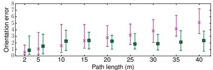

SLAM 语料库 · 技术内容索引
本索引为抽取式：所有文字均直接来自论文正文（摘要/引言贡献点/方法段/实验段）， 未做任何生成式改写。每条技术描述都可回溯到
md/<论文>.md原文。
共 255 篇。
Bundle Adjustment — A Modern Synthesis
- 文件
md/2000_BundleAdjustment.md· 正文 316,321 字符 - 技术标签 特征法 / 直接法 / 滤波后端 / 优化后端 / LiDAR-惯性耦合 / 视觉-惯性耦合 / LiDAR-视觉融合 / 神经隐式场 / 3D高斯 / 深度学习前端 / 基础模型 / 多机协同 / GNSS融合 / 稠密重建 / 嵌入式实时
- 数据集 Zurich
- 摘要（原文摘录）
Bill Triggs1, Philip F. McLauchlan2, Richard I. Hartley3, and Andrew W. Fitzgibbon4
1 INRIA Rhone-Alpes, 655 avenue de l’Europe, 38330 Montbonnot, France ˆ Bill.Triggs@inrialpes.fr
http://www.inrialpes.fr/movi/people/Triggs 2 School of Electrical Engineering, Information Technology & Mathematics University of Surrey, Guildford, GU2 5XH, U.K.
3 General Electric CRD, Schenectady, NY, 12301 hartley@crd.ge.com
Dept of Engineering Science, University of Oxford, 19 Parks Road, OX1 3PJ, U.K. awf@robots.ox.ac.uk
Abstract. This paper is a survey of the theory and methods of photogrammetric bundle adjustment, aimed at potential implementors in the computer vision community. Bundle adjustment is the problem of refining a visual reconstruction to produce jointly optimal structure and viewing parameter estimates. Topics covered include: the choice of cost function and robustness; numerical optimization including sparse Newton methods, linearly convergent approximations, updating and recursive methods; gauge (datum) invariance; and quality control. The theory is developed for general robust cost functions rather than restricting attenti
- 作者声称的贡献点（原文摘录）
usually sparse functions of the parameters) and object-centred software organization, and it avoids many tedious displays of chain-rule results. Implementors are assumed to be capable of choosing appropriate functions and calculating derivatives themselves.
One aim of this paper is to correct a number of misconceptions that seem to be common in the vision literature:
• “Optimization / bundle adjustment is slow”: Such statements often appear in papers introducing yet another heuristic Structure from Motion (SFM) iteration. The claimed slowness is almost always due to the unthinking use of a general-purpose optimization routine that completely ignores the problem structure and sparseness. Real bundle routines are much more efficient than this, and usually considerably more efficient and flexible than the newly suggested method (§6, 7).
- 章节结构 Bundle Adjustment — A Modern Synthesis ｜ 1 Introduction ｜ 2 Projection Model and Problem Parametrization ｜ 2.1 The Projection Model ｜ 2.2 Bundle Parametrization ｜ 3 Error Modelling ｜ 3.1 Desiderata for the Cost Function ｜ 3.2 Nonlinear Least Squares ｜ 3.3 Robustified Least Squares ｜ 3.4 Intensity-Based Methods ｜ 3.5 Implicit Models ｜ 4 Basic Numerical Optimization ｜ 4.1 Second Order Methods ｜ 4.2 Step Control ｜ 4.3 Gauss-Newton and Least Squares ｜ 4.4 Constrained Problems ｜ 4.5 General Implementation Issues ｜ 5 Network Structure ｜ 6 Implementation Strategy 1: Second Order Adjustment Methods ｜ 6.1 The Schur Complement and the Reduced Bundle System ｜ 6.2 Triangular Decompositions ｜ 6.3 Sparse Factorization ｜ 7 Implementation Strategy 2: First Order Adjustment Methods ｜ 7.1 First Order Iterations ｜ 7.2 Why Are First Order Methods Slow? ｜ 7.3 Preconditioning
- 出现的关键数值 40%, 30%, 1%, 0%, 15%, 70%, 100%, 85%, 30%, 70%
A Multi-State Constraint Kalman Filter for Vision-aided Inertial Navigation
- 文件
md/2007_A_Multi-State_Constraint_Kalman_Filter_for_Vision-aided_.md· 正文 60,222 字符 - 技术标签 特征法 / 滤波后端 / 优化后端 / LiDAR-惯性耦合 / 视觉-惯性耦合 / 回环检测 / 神经隐式场 / 深度学习前端 / 基础模型 / 动态环境 / GNSS融合 / 嵌入式实时
- 摘要（原文摘录）
Anastasios I. Mourikis and Stergios I. Roumeliotis
Abstract— In this paper, we present an Extended Kalman Filter (EKF)-based algorithm for real-time vision-aided inertial navigation. The primary contribution of this work is the derivation of a measurement model that is able to express the geometric constraints that arise when a static feature is observed from multiple camera poses. This measurement model does not require including the 3D feature position in the state vector of the EKF and is optimal, up to linearization errors. The vision-aided inertial navigation algorithm we propose has computational complexity only linear in the number of features, and is capable of high-precision pose estimation in large-scale real-world environments. The performance of the algorithm is demonstrated in extensive experimental results, involving a camera/IMU system localizing within an urban area.
I. INTRODUCTION
In the past few years, the topic of vision-aided inertial navigation has received considerable attention in the research community. Recent advances in the manufacturing of MEMS-based inertial sensors have made it possible to build small, inexpensive, and very accurate Inertial Meas
- 作者声称的贡献点（原文摘录）
the derivation of a measurement model that is able to express the geometric constraints that arise when a static feature is observed from multiple camera poses. This measurement model does not require including the 3D feature position in the state vector of the EKF and is optimal, up to linearization errors. The vision-aided inertial navigation algorithm we propose has computational complexity only linear in the number of features, and is capable of high-precision pose estimation in large-scale real-world environments.
- 方法核心段（原文摘录）
In the past few years, the topic of vision-aided inertial navigation has received considerable attention in the research community. Recent advances in the manufacturing of MEMS-based inertial sensors have made it possible to build small, inexpensive, and very accurate Inertial Measurement Units (IMUs), suitable for pose estimation in small-scale systems such as mobile robots and unmanned aerial vehicles. These systems often operate in urban environments where GPS signals are unreliable (the “urban canyon”), as well as indoors, in space, and in several other environments where global position measurements are unavailable. The low cost, weight, and power consumption of cameras make them ideal alternatives for aiding inertial navigation, in cases where GPS measurements cannot be relied upon.
An important advantage of visual sensing is that images are high-dimensional measurements, with rich information content. Feature extraction methods can typically detect and track hundreds of features in images, which, if properly used, can result is excellent localization results. However, the hig
- 章节结构 A Multi-State Constraint Kalman Filter for Vision-aided Inertial Navigation ｜ I. INTRODUCTION ｜ II. RELATED WORK ｜ III. ESTIMATOR DESCRIPTION ｜ A. Structure of the EKF state vector ｜ B. Propagation ｜ C. State Augmentation ｜ D. Measurement Model ｜ E. EKF Updates ｜ F. Discussion ｜ IV. EXPERIMENTAL RESULTS ｜ V. CONCLUSIONS
- 实验设置（原文摘录）
The algorithm described in the preceding sections has been tested extensively both in simulation and with real data. Our simulation experiments have verified that the algorithm produces pose and velocity estimates that are consistent, and can operate reliably over long trajectories, with varying motion profiles and density of visual features. Unfortunately, simulation data cannot be included in this paper, due to space limitations. Instead, we here present the results of the algorithm in an outdoor experiment, which demonstrates that the method is capable of long-term operation in a realworld setting. Additional datasets of real-world experiments, as well as simulation results of the use of
- 出现的关键数值 0.31%, 3Hz, 100Hz, 3Hz, 14Hz, 0.35m
- 结论/局限（原文摘录）
In this paper we have presented an EKF-based estimation algorithm for real-time vision-aided inertial navigation. The main contribution of this work is the derivation of a measurement model that is able to express the geometric constraints that arise when a static feature is observed from multiple camera poses. This measurement model does not require including the 3D feature positions in the state vector of the EKF,
MonoSLAM: Real-Time Single Camera SLAM
- 文件
md/2007_MonoSLAM__Real-Time_Single_Camera_SLAM.md· 正文 98,696 字符 - 技术标签 特征法 / 半直接法 / 滤波后端 / 优化后端 / 点云地图结构 / 视觉-惯性耦合 / LiDAR-视觉融合 / 回环检测 / 神经隐式场 / 3D高斯 / 深度学习前端 / 基础模型 / 动态环境 / 多机协同 / GNSS融合 / 全局一致性 / 嵌入式实时
- 摘要（原文摘录）
Andrew J. Davison, Ian D. Reid, Member, IEEE, Nicholas D. Molton, and Olivier Stasse, Member, IEEE
Abstract—We present a real-time algorithm which can recover the 3D trajectory of a monocular camera, moving rapidly through a previously unknown scene. Our system, which we dub MonoSLAM, is the first successful application of the SLAM methodology from mobile robotics to the “pure vision” domain of a single uncontrolled camera, achieving real time but drift-free performance inaccessible to Structure from Motion approaches. The core of the approach is the online creation of a sparse but persistent map of natural landmarks within a probabilistic framework. Our key novel contributions include an active approach to mapping and measurement, the use of a general motion model for smooth camera movement, and solutions for monocular feature initialization and feature orientation estimation. Together, these add up to an extremely efficient and robust algorithm which runs at 30 Hz with standard PC and camera hardware. This work extends the range of robotic systems in which SLAM can be usefully applied, but also opens up new areas. We present applications of MonoSLAM to real-time 3D localization
- 作者声称的贡献点（原文摘录）
an active approach to mapping and measurement, the use of a general motion model for smooth camera movement, and solutions for monocular feature initialization and feature orientation estimation. Together, these add up to an extremely efficient and robust algorithm which runs at 30 Hz with standard PC and camera hardware. This work extends the range of robotic systems in which SLAM can be usefully applied, but also opens up new areas. We present applications of MonoSLAM to real-time 3D localization and mapping for a high-performance full-size humanoid robot and live augmented reality with a hand-held camera.
- 章节结构 MonoSLAM: Real-Time Single Camera SLAM ｜ 1 INTRODUCTION ｜ 1.1 Contributions of This Paper ｜ 2 RELATED WORK ｜ 2.1 Vision-Based SLAM ｜ 3 METHOD ｜ 3.1 Probabilistic 3D Map ｜ 3.2 Natural Visual Landmarks ｜ 3.3 System Initialization ｜ 3.4 Motion Modeling and Prediction ｜ 3.5 Active Feature Measurement and Map Update ｜ 3.6 Feature Initialization ｜ 3.7 Map Management ｜ 3.8 Feature Orientation Estimation ｜ 4 RESULTS: INTERACTIVE AUGMENTED REALITY ｜ 5 RESULTS: HUMANOID ROBOT SLAM ｜ 5.1 Vision ｜ 5.2 Gyro ｜ 5.3 Results ｜ 6 SYSTEM DETAILS ｜ 6.1 System Characterization against Ground Truth ｜ 6.2 Processing Requirements ｜ 6.3 Software ｜ 6.4 Movies ｜ 7 CONCLUSIONS
- 出现的关键数值 30 Hz, 30Hz, 5Hz, 30 Hz, 30Hz, 30 Hz, 30 Hz, 200 Hz, 30 Hz, 30 Hz
Parallel Tracking and Mapping for Small AR Workspaces
- 文件
md/2007_Parallel_Tracking_and_Mapping_for_Small_AR_Workspaces.md· 正文 60,578 字符 - 技术标签 特征法 / 滤波后端 / 优化后端 / 视觉-惯性耦合 / LiDAR-视觉融合 / 回环检测 / 基础模型 / 嵌入式实时
- 摘要（原文摘录）
This paper presents a method of estimating camera pose in an unknown scene. While this has previously been attempted by adapting SLAM algorithms developed for robotic exploration, we propose a system specifically designed to track a hand-held camera in a small AR workspace. We propose to split tracking and mapping into two separate tasks, processed in parallel threads on a dual-core computer: one thread deals with the task of robustly tracking erratic hand-held motion, while the other produces a 3D map of point features from previously observed video frames. This allows the use of computationally expensive batch optimisation techniques not usually associated with real-time operation: The result is a system that produces detailed maps with thousands of landmarks which can be tracked at frame-rate, with an accuracy and robustness rivalling that of state-of-the-art model-based systems.
- 章节结构 Parallel Tracking and Mapping for Small AR Workspaces ｜ ABSTRACT ｜ 1 INTRODUCTION ｜ 2 METHOD OVERVIEW IN THE CONTEXT OF SLAM ｜ 3 FURTHER RELATED WORK ｜ 4 THE MAP ｜ 5 TRACKING ｜ 5.1 Image acquisition ｜ 5.2 Camera pose and projection ｜ 5.3 Patch Search ｜ 5.4 Pose update ｜ 5.5 Two-stage coarse-to-fine tracking ｜ 5.6 Tracking quality and failure recovery ｜ 6 MAPPING ｜ 6.1 Map initialisation ｜ 6.2 Keyframe insertion and epipolar search ｜ 6.3 Bundle adjustment ｜ 6.4 Data association refinement ｜ 6.5 General implementation notes ｜ 7 RESULTS ｜ 7.1 Tracking performance on live video ｜ 7.2 Mapping scalability ｜ 7.3 Synthetic comparison with EKF-SLAM ｜ 7.4 Subjective comparison with EKF-SLAM ｜ 7.5 AR with a hand-held camera ｜ 8 LIMITATIONS AND FUTURE WORK
- 出现的关键数值 51%, 33%, 9%, 7%, 30Hz, 2.1mm, 18.2m
Stereo Processing by Semiglobal Matching and Mutual Information
- 文件
md/2008_Stereo_Processing_by_Semiglobal_Matching_and_Mutual_Info.md· 正文 82,749 字符 - 技术标签 特征法 / 直接法 / 优化后端 / LiDAR-惯性耦合 / 视觉-惯性耦合 / 基础模型 / GNSS融合 / 嵌入式实时
- 摘要（原文摘录）
Heiko Hirschmu¨ ller
Abstract—This paper describes the Semiglobal Matching (SGM) stereo method. It uses a pixelwise, Mutual Information (MI)-based matching cost for compensating radiometric differences of input images. Pixelwise matching is supported by a smoothness constraint that is usually expressed as a global cost function. SGM performs a fast approximation by pathwise optimizations from all directions. The discussion also addresses occlusion detection, subpixel refinement, and multibaseline matching. Additionally, postprocessing steps for removing outliers, recovering from specific problems of structured environments, and the interpolation of gaps are presented. Finally, strategies for processing almost arbitrarily large images and fusion of disparity images using orthographic projection are proposed. A comparison on standard stereo images shows that SGM is among the currently top-ranked algorithms and is best, if subpixel accuracy is considered. The complexity is linear to the number of pixels and disparity range, which results in a runtime of just 1-2 seconds on typical test images. An in depth evaluation of the MI-based matching cost demonstrates a tolerance against a wid
- 章节结构 Stereo Processing by Semiglobal Matching and Mutual Information ｜ 1 INTRODUCTION ｜ 2 Semiglobal Matching ｜ 2.1 Pixelwise Matching Cost Calculation ｜ 2.2 Cost Aggregation ｜ 2.3 Disparity Computation ｜ 2.4 Multibaseline Matching ｜ 2.5 Disparity Refinement ｜ 2.5.1 Removal of Peaks ｜ 2.5.2 Intensity Consistent Disparity Selection ｜ 2.5.3 Discontinuity Preserving Interpolation ｜ 2.6 Processing of Huge Images ｜ 2.7 Fusion of Disparity Images ｜ 3 EXPERIMENTAL RESULTS ｜ 3.1 Evaluation on Middlebury Stereo Images ｜ 3.2 Evaluation of MI as Matching Cost Function ｜ 3.3 Evaluation of Postprocessing ｜ 3.4 Example 1: Reconstruction from Aerial Full Frame Images ｜ 3.5 Example 2: Reconstruction from Aerial Pushbroom Images ｜ 4 CONCLUSION
2010_GraphSLAM-Tutorial
- 文件
md/2010_GraphSLAM-Tutorial.md· 正文 72,848 字符 - 技术标签 特征法 / 直接法 / 优化后端 / 激光里程计 / LiDAR-惯性耦合 / 视觉-惯性耦合 / LiDAR-视觉融合 / 回环检测 / 基础模型 / GNSS融合 / 稠密重建 / 全局一致性 / 嵌入式实时
- 摘要（原文摘录）
Giorgio Grisetti, Rainer Kümmerle, Cyrill Stachniss, and Wolfram Burgard
I. Introduction
o efficiently solve many tasks envisioned to be carried out by mobile robots including transportation, search and rescue, or automated vacuum cleaning robots need a map of the environment. The availability of an accurate map allows for the design of systems that can operate in complex envi ronments only based on their on-board sensors and without relying on external reference system like, e.g., GPS. The acquisition of maps of indoor environments, where typically no GPS is available, has been a major research focus in the robotics community over the last decades. Learning maps under pose uncertainty is of ten referred to as the simultaneous localization and mapping (SLAM) problem. In the literature, a large variety of solutions to this problem is available. These approaches can be classified either as filtering or smoothing. Filtering approaches model the problem as an on-line state estimation where the state of the
© ARTVILLE
Abstract—Being able to build a map of the environment and to simultaneously localize within this map is an essential skill for mobile robots navigatin
- 方法核心段（原文摘录）
o efficiently solve many tasks envisioned to be carried out by mobile robots including transportation, search and rescue, or automated vacuum cleaning robots need a map of the environment. The availability of an accurate map allows for the design of systems that can operate in complex envi ronments only based on their on-board sensors and without relying on external reference system like, e.g., GPS. The acquisition of maps of indoor environments, where typically no GPS is available, has been a major research focus in the robotics community over the last decades. Learning maps under pose uncertainty is of ten referred to as the simultaneous localization and mapping (SLAM) problem. In the literature, a large variety of solutions to this problem is available. These approaches can be classified either as filtering or smoothing. Filtering approaches model the problem as an on-line state estimation where the state of the
© ARTVILLE
Abstract—Being able to build a map of the environment and to simultaneously localize within this map is an essential skill for mobile robots nav
- 章节结构 I. Introduction ｜ II. Probabilistic Formulation of SLAM ｜ III. Related Work ｜ IV. Graph-Based SLAM ｜ A. Error Minimization via Iterative Local Linearizations ｜ B. Considerations about the ｜ Structure of the Linearized System ｜ C. Least Squares on a Manifold ｜ V. Practical Applications ｜ A. 2D Laser Based Mapping ｜ B. 3D Laser Based Mapping ｜ Error Functions for the 3D case ｜ VI. Conclusions ｜ About the Authors
- 结论/局限（原文摘录）
In this paper we presented a tutorial on graph-based SLAM. Our aim
was to provide the re ader with sufficient details and insights to allow for an easy implementation of the proposed methods. The algorithms presented in this pape r can be used as a building blocks of more sophisticated methods, however optimized implementations of these algorithms can deal with surprisingly large problems.
3D is here: Point Cloud Library (PCL)
- 文件
md/2011_3D_is_here__Point_Cloud_Library__PCL_.md· 正文 19,420 字符 - 技术标签 特征法 / 激光里程计 / 视觉-惯性耦合 / 基础模型 / 语义建图 / 多机协同 / 稠密重建 / 嵌入式实时
- 数据集 Zurich, TUM
- 摘要（原文摘录）
Radu Bogdan Rusu and Steve Cousins
Willow Garage
68 Willow Rd., Menlo Park, CA 94025, USA
{rusu,cousins}@willowgarage.com
Abstract— With the advent of new, low-cost 3D sensing hardware such as the Kinect, and continued efforts in advanced point cloud processing, 3D perception gains more and more importance in robotics, as well as other fields.
In this paper we present one of our most recent initiatives in the areas of point cloud perception: PCL (Point Cloud Library – http://pointclouds.org). PCL presents an advanced and extensive approach to the subject of 3D perception, and it’s meant to provide support for all the common 3D building blocks that applications need. The library contains state-ofthe art algorithms for: filtering, feature estimation, surface reconstruction, registration, model fitting and segmentation. PCL is supported by an international community of robotics and perception researchers. We provide a brief walkthrough of PCL including its algorithmic capabilities and implementation strategies.
I. INTRODUCTION
For robots to work in unstructured environments, they need to be able to perceive the world. Over the past 20 years, we’ve come a long way, from simpl
- 方法核心段（原文摘录）
For robots to work in unstructured environments, they need to be able to perceive the world. Over the past 20 years, we’ve come a long way, from simple range sensors based on sonar or IR providing a few bytes of information about the world, to ubiquitous cameras to laser scanners. In the past few years, sensors like the Velodyne spinning LIDAR used in the DARPA Urban Challenge and the tilting laser scanner used on the PR2 have given us high-quality 3D representations of the world - point clouds. Unfortunately, these systems are expensive, costing thousands or tens of thousands of dollars, and therefore out of the reach of many robotics projects.
Very recently, however, 3D sensors have become available that change the game. For example, the Kinect sensor for the Microsoft XBox 360 game system, based on underlying technology from PrimeSense, can be purchased for under \$150, and provides real time point clouds as well as 2D images. As a result, we can expect that most robots in the future will be able to ”see” the world in 3D. All that’s needed is a mechanism for handling point clouds
- 章节结构 3D is here: Point Cloud Library (PCL) ｜ I. INTRODUCTION ｜ II. ARCHITECTURE AND IMPLEMENTATION ｜ III. PCL AND ROS ｜ IV. VISUALIZATION ｜ V. USAGE EXAMPLES ｜ VI. COMMUNITY AND FUTURE PLANS
DTAM: Dense Tracking and Mapping in Real-Time
- 文件
md/2011_DTAM__Dense_tracking_and_mapping_in_real-time.md· 正文 44,870 字符 - 技术标签 特征法 / 直接法 / LiDAR-惯性耦合 / 视觉-惯性耦合 / LiDAR-视觉融合 / 基础模型 / 稠密重建 / 嵌入式实时
- 摘要（原文摘录）
DTAM is a systemfor real-time camera tracking and reconstruction which relies not on feature extraction but dense, every pixel methods. As a single hand-held RGB camera flies over a static scene, we estimate detailed textured depth maps at selected keyframes to produce a surface patchwork with millions of vertices. We use the hundreds of images available in a video stream to improve the quality of a simple photometric data term, and minimise a global spatially regularised energy functional in a novel non-convex optimisation framework. Interleaved, we track the camera’s 6DOF motion precisely by frame-rate whole image alignment against the entire dense model. Our algorithms are highly parallelisable throughout and DTAM achieves realtime performance using current commodity GPU hardware. We demonstrate that a dense model permits superior tracking performance under rapid motion compared to a state of the art method usingfeatures; and also show the additional usefulness of the dense model for real-time scene interaction in a physics-enhanced augmented reality application.
- 章节结构 DTAM: Dense Tracking and Mapping in Real-Time ｜ Abstract ｜ 1. Introduction ｜ 2. Method ｜ 2.1. Preliminaries ｜ 2.2. Dense Mapping ｜ 2.2.1 Regularised Cost ｜ 2.2.2 Discretisation of the Cost Volume and Solution ｜ 2.2.3 Solution ｜ 2.2.4 Accelerating the Non-Convex Solution ｜ 2.2.5 Increasing Solution Accuracy ｜ 2.2.6 Setting Parameter Values and Post Processing ｜ 2.3. Dense Tracking ｜ 2.3.1 Pose Estimation ｜ 2.3.2 Robustified Tracking ｜ 2.4. Model Initialisation and Management ｜ 3. Evaluation ｜ 3.1. Quantitative Tracking Performance ｜ 3.2. Failure Modes and Future Work ｜ 4. Conclusions
- 出现的关键数值 30Hz
KinectFusion: Real-Time Dense Surface Mapping and Tracking
- 文件
md/2011_KinectFusion.md· 正文 73,313 字符 - 技术标签 特征法 / 优化后端 / 激光里程计 / 点云地图结构 / LiDAR-惯性耦合 / 视觉-惯性耦合 / LiDAR-视觉融合 / 回环检测 / 神经隐式场 / 基础模型 / 语义建图 / 动态环境 / 多机协同 / 稠密重建 / 全局一致性 / 嵌入式实时
- 摘要（原文摘录）
We present a system for accurate real-time mapping of complex and arbitrary indoor scenes in variable lighting conditions, using only a moving low-cost depth camera and commodity graphics hardware. We fuse all of the depth data streamed from a Kinect sensor into a single global implicit surface model of the observed scene in real-time. The current sensor pose is simultaneously obtained by tracking the live depth frame relative to the global model using a coarse-to-fine iterative closest point (ICP) algorithm, which uses all of the observed depth data available. We demonstrate the advantages of tracking against the growing full surface model compared with frame-to-frame tracking, obtaining tracking and mapping results in constant time within room sized scenes with limited drift and high accuracy. We also show both qualitative and quantitative results relating to various aspects of our tracking and mapping system. Modelling of natural scenes, in real-time with only commodity sensor and GPU hardware, promises an exciting step forward in augmented reality (AR), in particular, it allows dense surfaces to be reconstructed in real-time, with a level of detail and robustness beyond any sol
- 章节结构 KinectFusion: Real-Time Dense Surface Mapping and Tracking ｜ ABSTRACT ｜ 1 INTRODUCTION ｜ 2 BACKGROUND ｜ 2.1 The Kinect Sensor ｜ 2.2 Drift-Free SLAM for AR ｜ 2.3 Dense Tracking and Mapping by Scan Alignment ｜ 2.4 Dense Scene Representations ｜ 2.5 Dense SLAM with Active Depth Sensing ｜ 3 METHOD ｜ 3.1 Preliminaries ｜ 3.2 Surface Measurement ｜ 3.3 Mapping as Surface Reconstruction ｜ 3.4 Surface Prediction from Ray Casting the TSDF ｜ 3.5 Sensor Pose Estimation ｜ 4 EXPERIMENTS ｜ 4.1 Metrically Consistent Reconstruction ｜ 4.2 Processing Time ｜ 4.3 Observations and Failure Modes ｜ 5 GEOMETRY AWARE AR ｜ 6 CONCLUSIONS
- 出现的关键数值 30Hz, 30Hz, 10Hz, 2Hz, 30fps
2011_Visual_Odometry__Tutorial_
- 文件
md/2011_Visual_Odometry__Tutorial_.md· 正文 72,292 字符 - 技术标签 特征法 / 滤波后端 / 优化后端 / 激光里程计 / LiDAR-惯性耦合 / 视觉-惯性耦合 / 回环检测 / 基础模型 / GNSS融合 / 全局一致性 / 嵌入式实时
- 数据集 Zurich
- 摘要（原文摘录）
Visual Odometry
Part I: The First 30 Years and Fundamentals
By Davide Scaramuzza and Friedrich Fraundorfer
isual odometry (VO) is the process of estimating the egomotion of an agent (e.g., vehicle, human, and robot) using only the input of a single or multiple cameras attached to it. Application domains include robotics, wearable computing, augmented reality, and automotive. The term VO was coined in 2004 by Nister in his landmark paper [1]. The term was chosen for its similarity to wheel odometry, which incrementally estimates the motion of a vehicle by integrating the number of turns of its wheels over time. Likewise, VO operates by incrementally estimating the pose of the vehicle through examination of the changes that motion induces on the images of its onboard cameras. For VO to work effectively, there should be sufficient illumination in the environment and a static scene with enough texture to allow apparent motion to be extracted. Furthermore, consecutive frames should be captured by ensuring that they have sufficient scene overlap.
The advantage of VO with respect to wheel odometry is that VO is not affected by wheel slip in uneven terrain or other adverse conditio
- 章节结构 Visual Odometry ｜ Part I: The First 30 Years and Fundamentals ｜ History of Visual Odometry ｜ Stereo VO ｜ Monocular VO ｜ Reducing the Drift ｜ V-SLAM ｜ VO Versus V-SLAM ｜ Formulation of the VO Problem ｜ Camera Modeling and Calibration ｜ Perspective Camera Model ｜ Omnidirectional Camera Model ｜ Spherical Model ｜ Camera Calibration ｜ Motion Estimation ｜ 2-D to 2-D: Motion from Image Feature Correspondences ｜ Estimating the Essential Matrix ｜ Extracting R and t from E ｜ Computing the Relative Scale ｜ 3D-to-3D: Motion from 3-D Structure Correspondences ｜ 3-D-to-2-D: Motion from 3-D Structure and Image Feature Correspondences ｜ Triangulation and Keyframe Selection ｜ Discussion ｜ Conclusions
- 出现的关键数值 2%, 2%, 2%, 400 Hz
- 结论/局限（原文摘录）
This tutorial has described the history of VO, the problem formulation, and the distinct approaches to motion computation. VO is a well-understood and established part of robotics. Part II of this tutorial will summarize the remaining building blocks of the VO pipeline: how to detect and match salient and repeatable features across frames, robust estimation in the presence of outliers, and bundle adjustment. In addit
A General Framework for Graph Optimization
- 文件
md/2011_g2o.md· 正文 50,476 字符 - 技术标签 特征法 / 直接法 / 优化后端 / LiDAR-惯性耦合 / 视觉-惯性耦合 / 基础模型 / 稠密重建 / 全局一致性 / 嵌入式实时
- 摘要（原文摘录）
Rainer Kummerle¨
Giorgio Grisetti
Hauke Strasdat
Kurt Konolige
Wolfra m Burgard
Abstract— Many popular problems in robotics and computer vision including various types of simultaneous localization and mapping (SLAM) or bundle adjustment (BA) can be phrased as least squares optimization of an error function that can be represented by a graph. This paper describes the general structure of such problems and presents an open-source C++ framework for optimizing graph-based nonlinear error functions. Our system has been designed to be easily extensible to a wide range of problems and a new problem typically can be specified in a few lines of code. The current implementation provides solutions to several variants of SLAM and BA. We provide evaluations on a wide range of real-world and simulated datasets. The results demonstrate that while being general o offers a performance comparable to implementations of stateof-the-art approaches for the specific problems.
I. INTRODUCTION
A wide range of problems in robotics as well as in computer-vision involve the minimization of a nonlinear error function that can be represen
- 方法核心段（原文摘录）
A wide range of problems in robotics as well as in computer-vision involve the minimization of a nonlinear error function that can be represented as a graph. Typical instances are simultaneous localization and mapping (SLAM) [19], [5], [22], [10], [16], [26] or bundle adjustment (BA) [27], [15], [18]. The overall goal in these problems is to find the configuration of parameters or state variables that maximally explain a set of measurements affected by Gaussian noise. For instance, in graph-based SLAM the state variables can be either the positions of the robot in the environment or the location of the landmarks in the map that can be observed with the robot’s sensors. Thereby, a measurement depends only on the relative location of two state variables, e.g., an odometry measurement between two consecutive poses depends only on the connected poses. Similarly, in BA or landmark-based SLAM a measurement of a 3D point or landmark depends only on the location of the observed point in the world and the position of the sensor.
All these problems can be represented as a graph. Whereas each
- 章节结构 A General Framework for Graph Optimization ｜ I. INTRODUCTION ｜ II. RELATED WORK ｜ III. NONLINEAR GRAPH OPTIMIZATION USING LEAST-SQUARES ｜ A. Least Squares Optimization ｜ B. Alternative Parameterizations ｜ C. Structure of the Linearized System ｜ D. Systems Having Special Structure ｜ IV. IMPLEMENTATION ｜ V. EXPERIMENTS ｜ A. Runtime Comparison ｜ B. Testing different Parameterizations ｜ C. Comparison of Linear Solvers ｜ D. Utilizing the Knowledge about the Structure ｜ VI. CONCLUSIONS
- 实验设置（原文摘录）
In this section, we present experiments in which we compare o with other state-of-the-art optimization approaches using both real-world and synthetic datasets. Figure 4 depict the 3D pose-graph data sets, in Figure 5 the BA datasets and the pose-graph of the Keble college, which is used to perform scale drift-aware SLAM using 7 DoF similarity constraints [26], are visualized, and Figure 6 shows the 2D datasets. The number of variables and constraints is given in Table I for each of the datasets. All experiments are executed on one core of an Intel Core i7-930 running at 2.8 Ghz.
Fig. 5. The BA real world datasets and the scale-drift dataset used f
- 结论/局限（原文摘录）
In this paper we presented , an extensible and efficient open-source framework for batch optimization of functions that can be embedded in a graph. Relevant problems falling into this class are graph-based SLAM and bundle adjustment, two fundamental and highly related problems in robotics and computer vision. To utilize one simply has to define the error function an
A Benchmark for the Evaluation of RGB-D SLAM Systems
- 文件
md/2012_A_benchmark_for_the_evaluation_of_RGB-D_SLAM_systems.md· 正文 48,730 字符 - 技术标签 特征法 / 优化后端 / 激光里程计 / LiDAR-惯性耦合 / 视觉-惯性耦合 / LiDAR-视觉融合 / 回环检测 / 深度学习前端 / 基础模型 / 语义建图 / 稠密重建 / 全局一致性 / 嵌入式实时
- 数据集 KITTI
- 摘要（原文摘录）
Jurgen Sturm ¨ 1, Nikolas Engelhard2, Felix Endres2, Wolfram Burgard2, and Daniel Cremers1
Abstract— In this paper, we present a novel benchmark for the evaluation of RGB-D SLAM systems. We recorded a large set of image sequences from a Microsoft Kinect with highly accurate and time-synchronized ground truth camera poses from a motion capture system. The sequences contain both the color and depth images in full sensor resolution (640 × 480) at video frame rate (30 Hz). The ground-truth trajectory was obtained from a motion-capture system with eight high-speed tracking cameras (100 Hz). The dataset consists of 39 sequences that were recorded in an office environment and an industrial hall. The dataset covers a large variety of scenes and camera motions. We provide sequences for debugging with slow motions as well as longer trajectories with and without loop closures. Most sequences were recorded from a handheld Kinect with unconstrained 6-DOF motions but we also provide sequences from a Kinect mounted on a Pioneer 3 robot that was manually navigated through a cluttered indoor environment. To stimulate the comparison of differen
- 方法核心段（原文摘录）
Public datasets and benchmarks greatly support the scientific evaluation and objective comparison of algorithms. Several examples of successful benchmarks in the area computer vision have demonstrated that common datasets and clear evaluation metrics can significantly help to push the stateof-the-art forward. One highly relevant problem in robotics is the so-called simultaneous localization (SLAM) problem where the goal is to both recover the camera trajectory and the map from sensor data. The SLAM problem has been investigated in great detail for sensors such as sonar, laser, cameras, and time-of-flight sensors. Recently, novel low-cost RGB-D sensors such as the Kinect became available, and the first SLAM systems using these sensors have already appeared [2]–[4]. Other algorithms focus on fusing depth maps to a coherent 3D model [5]. Yet, the accuracy of the computed 3D model heavily depends on how accurate one can determine the individual camera poses.
With this dataset, we provide a complete benchmark that can be used to evaluate visual SLAM and odometry systems on RGB-D data. To
- 章节结构 A Benchmark for the Evaluation of RGB-D SLAM Systems ｜ I. INTRODUCTION ｜ II. RELATED WORK ｜ III. DATASET ｜ IV. DATA ACQUISITION ｜ V. FILE FORMATS, TOOLS AND SAMPLE CODE ｜ VI. CALIBRATION AND SYNCHRONIZATION ｜ A. Motion capture system calibration ｜ B. Kinect calibration ｜ C. Extrinsic calibration ｜ D. Time synchronization ｜ VII. EVALUATION METRICS ｜ A. Relative pose error (RPE) ｜ B. Absolute trajectory error (ATE) ｜ VIII. CONCLUSIONS
- 实验设置（原文摘录）
A SLAM system generally outputs the estimated camera trajectory along with an estimate of the resulting map. While it is in principle possible to evaluate the quality of the resulting map, accurate ground truth maps are difficult to obtain. Therefore, we propose to evaluate the quality of the estimated trajectory from a given input sequence of RGB-D images. This approach simplifies the evaluation process greatly. Yet, it should be noted that a good trajectory does not necessarily imply a good map, as for example even a small error in the map could prevent the robot from working in the environment (obstacle in a doorway).
For the evaluation, we assume that we are given a sequence of poses fr
- 出现的关键数值 30 Hz, ATE) on the “fr1
- 结论/局限（原文摘录）
In this paper, we presented an benchmark for the evaluation of RGB-D SLAM systems. The dataset contains color images, depth maps, and associated ground-truth camera pose information. Further, we proposed two evaluation metrics that can be used to assess the performance of a visual odometry and visual SLAM system. Accurate calibration and rigorous validation ensures the high quality of the resulting dataset. We approv
2012_Bags_of_Binary_Words_for_Fast_Place_Recognition_in_Image
- 文件
md/2012_Bags_of_Binary_Words_for_Fast_Place_Recognition_in_Image.md· 正文 67,805 字符 - 技术标签 特征法 / 点云地图结构 / LiDAR-惯性耦合 / 视觉-惯性耦合 / 回环检测 / 深度学习前端 / 基础模型 / 动态环境 / 多机协同 / GNSS融合 / 嵌入式实时
- 摘要（原文摘录）
, and otherwise. Let , and otherwise. The statement follows from Motzkin’s Theorem since
Proof of Theorem 3.1: Let , and . Let be the vector of waiting intervals and arrival times defined in Trajectory 1. Note that the specification of the robots initial positions implies the specification of the arrival times . Suppose that is not an optimal solution to the optimization problem A4, and let δ be a minimizer of A4. Then, It can be verified that the entries of indexed by are all equal to each other. In addition, Hence
- 方法核心段（原文摘录）
One of the most significant requirements for long-term visual simultaneous localization and mapping (SLAM) is robust place recognition. After an exploratory period, when areas nonobserved for long are reobserved, standard matching algorithms fail. When they are robustly detected, loop closures provide correct data association to obtain consistent maps. The same methods used for loop detection can be used for robot relocation after track lost, due, for example, to sudden motions, severe occlusions, or motion blur. In [1], we concluded that, for small environments, map-to-image methods achieve nice performance, but for large environments, image-to-image (or appearance-based) methods, such as fast appearance-based mapping (FAB-MAP) [2] scale better. The basic technique consists in building a database from the images collected online by the robot so that the most similar one can be retrieved when a new image is acquired. If they are similar enough, a loop closure is detected.
In recent years, many algorithms that exploit this idea have appeared [2]–[6], basing the image matching on comp
- 章节结构 Bags of Binary Words for Fast Place Recognition in Image Sequences ｜ I. INTRODUCTION ｜ II. RELATED WORK ｜ III. BINARY FEATURES ｜ IV. IMAGE DATABASE ｜ V. LOOP-DETECTION ALGORITHM ｜ A. Database Query ｜ B. Match Grouping ｜ C. Temporal Consistency ｜ D. Efficient Geometrical Consistency ｜ VI. EXPERIMENTAL EVALUATION ｜ A. Methodology ｜ B. Descriptor Effectiveness ｜ C. Temporal Consistency ｜ D. Geometrical Consistency ｜ E. Execution Time ｜ F. Performance ofthe Final System ｜ VII. CONCLUSION
- 出现的关键数值 48.4%, 3.1%, 100%, 100%, 100%, 75%, 98%, 98%, 100%, 55.92%
- 结论/局限（原文摘录）
We have presented a novel technique to detect loops in monocular sequences. The main conclusion of our study is that binary features are very effective and extremely efficient in the bag-of-words approach. In particular, our results demonstrate that FAST+BRIEF features are as reliable as SURF (either with 64 dimensions or with 128 and without rotation invariance) to solve the loop-detection problem with in-plane came
Visual simultaneous localization and mapping: a survey
- 文件
md/2012_Visual_simultaneous_localization_and_mapping__a_survey.md· 正文 97,746 字符 - 技术标签 特征法 / 半直接法 / 滤波后端 / 优化后端 / 点云地图结构 / LiDAR-惯性耦合 / 视觉-惯性耦合 / 回环检测 / 3D高斯 / 深度学习前端 / 基础模型 / 动态环境 / 多机协同 / GNSS融合 / 稠密重建 / 嵌入式实时
- 摘要（原文摘录）
Jorge Fuentes-Pacheco José Ruiz-Ascencio Juan Manuel Rendón-Mancha
Published online: 13 November 2012
© Springer Science+Business Media Dordrecht 2012
Abstract Visual SLAM (simultaneous localization and mapping) refers to the problem of using images, as the only source of external information, in order to establish the position of a robot, a vehicle, or a moving camera in an environment, and at the same time, construct a representation of the explored zone. SLAM is an essential task for the autonomy of a robot. Nowadays, the problem of SLAM is considered solved when range sensors such as lasers or sonar are used to built 2D maps of small static environments. However SLAM for dynamic, complex and large scale environments, using vision as the sole external sensor, is an active area of research. The computer vision techniques employed in visual SLAM, such as detection, description and matching of salient features, image recognition and retrieval, among others, are still susceptible of improvement. The objective of this article is to provide new researchers in the field of visual SLAM a brief and comprehensible review of the state-of-the-art.
Keywords Visual SLAM Salient feature se
- 章节结构 Visual simultaneous localization and mapping: a survey ｜ 1 Introduction ｜ 2 Simultaneous localization and mapping ｜ 3 Cameras as the only exteroceptive sensors ｜ 4 Salient feature selection ｜ 4.1 Detectors ｜ 4.2 Descriptors ｜ 5 The image matching and data association problems ｜ 5.1 Short baseline matching ｜ 5.2 Long baseline matching ｜ 5.3 Data association in visual SLAM ｜ 5.3.1 Loop closure detection ｜ 5.3.2 Kidnapped robot ｜ 5.3.3 Multi-session and cooperative mapping ｜ 6 Solutions to the visual SLAM problem ｜ 6.1 Probabilistic filters ｜ 6.2 Structure from motion ｜ 6.3 Bio-inspired models ｜ 7 Representation of the observed world ｜ 8 Conclusions
- 出现的关键数值 100%, 100%, 200 Hz, 100 FPS
Dense Visual SLAM for RGB-D Cameras
- 文件
md/2013_Dense_visual_SLAM_for_RGB-D_cameras.md· 正文 44,251 字符 - 技术标签 特征法 / 直接法 / 滤波后端 / 优化后端 / 激光里程计 / 点云地图结构 / LiDAR-惯性耦合 / 视觉-惯性耦合 / LiDAR-视觉融合 / 回环检测 / 3D高斯 / 基础模型 / 多机协同 / 稠密重建 / 全局一致性 / 嵌入式实时
- 摘要（原文摘录）
Christian Kerl, Jurgen Sturm, and Daniel Cremers¨
Abstract— In this paper, we propose a dense visual SLAM method for RGB-D cameras that minimizes both the photometric and the depth error over all pixels. In contrast to sparse, feature-based methods, this allows us to better exploit the available information in the image data which leads to higher pose accuracy. Furthermore, we propose an entropy-based similarity measure for keyframe selection and loop closure detection. From all successful matches, we build up a graph that we optimize using the g2o framework. We evaluated our approach extensively on publicly available benchmark datasets, and found that it performs well in scenes with low texture as well as low structure. In direct comparison to several stateof-the-art methods, our approach yields a significantly lower trajectory error. We release our software as open-source.
I. INTRODUCTION
Many robotics applications such as navigation and mapping require accurate and drift-free pose estimates of a moving camera. Previous solutions favor approaches based on visual features in combination with bundle adjustment or pose graph optimization [1], [2]. Although these methods are st
- 作者声称的贡献点（原文摘录）
All authors are with the Computer Vision Group, Department of Computer Science, Technical University of Munich {christian.kerl, juergen.sturm, daniel.cremers}@in.tum.de This work has partially been supported by the DFG under contract number FO 180/17-1 in the Mapping on Demand (MOD) project.
Fig. 1: We propose a dense SLAM method for RGB-D cameras that uses keyframes and an entropy-based loop closure detection to eliminate drift. The figure shows the groundtruth, frame-to-keyframe odometry, and the optimized trajectory for the fr3/office dataset.
- 方法核心段（原文摘录）
Many robotics applications such as navigation and mapping require accurate and drift-free pose estimates of a moving camera. Previous solutions favor approaches based on visual features in combination with bundle adjustment or pose graph optimization [1], [2]. Although these methods are state-of-the-art, the process of selecting relevant keypoints discards substantial parts of the acquired image data. Therefore, our goal is to develop a dense SLAM method that (1) better exploits the available data acquired by the sensor, (2) still runs in real-time, (3) effectively eliminates drift, and corrects accumulated errors by global map optimization.
Visual odometry approaches with frame-to-frame matching are inherently prone to drift. In recent years, dense tracking and mapping methods have appeared whose performance is comparable to feature-based methods [3], [4]. While frame-to-model approaches such as KinectFusion [5], [6] jointly estimate a persistent model of the world, they still accumulate drift (although slower than visual odometry methods), and therefore only work for the reconstru
- 章节结构 Dense Visual SLAM for RGB-D Cameras ｜ I. INTRODUCTION ｜ II. RELATED WORK ｜ III. DENSE VISUAL ODOMETRY ｜ A. Camera Model ｜ B. Rigid Body Motion ｜ C. Warping Function ｜ D. Error Functions ｜ E. Probabilistic Formulation ｜ F. Linearization and Optimization ｜ G. Parameter Uncertainty ｜ IV. KEYFRAME-BASED VISUAL SLAM ｜ A. Keyframe Selection ｜ B. Loop Closure Detection ｜ C. Map Representation and Optimization ｜ V. EVALUATION ｜ VI. CONCLUSION
- 实验设置（原文摘录）
For evaluation we use the RGB-D benchmark provided by the Technical University of Munich [10]. The benchmark contains multiple real datasets captured with an RGB-D camera. Every dataset accompanies an accurate groundtruth trajectory obtained with an external motion capture system.
In a first set of experiments we evaluated the benefit of combined photometric and geometric error minimization. The RGB-D datasets with a varying amount of texture and structure are suitable for this purpose. Figure 4 shows representative images of the different datasets. Table I displays the results of the experiments. The first two columns indicate whether the dataset contains structure/texture (x) or not (-).
- 出现的关键数值 16%, 20%, 170%, 16%, 20%, 0%, 16%, 20%, 16%, 170%
- 结论/局限（原文摘录）
In this paper, we presented a novel approach that combines dense tracking with keyframe selection and pose graph optimization. In our experiments on publicly available datasets, we showed that the use of keyframes already reduces the drift (16%). We introduced an entropy-based criterion to select suitable keyframes. Furthermore, we showed that the same entropy-based measure can be used to efficiently detect loop clos
Real-time 3D Reconstruction at Scale using Voxel Hashing
- 文件
md/2013_VoxelHashing.md· 正文 62,646 字符 - 技术标签 特征法 / 激光里程计 / 点云地图结构 / LiDAR-惯性耦合 / 视觉-惯性耦合 / LiDAR-视觉融合 / 回环检测 / 神经隐式场 / 基础模型 / 事件相机 / 稠密重建 / 嵌入式实时
- 摘要（原文摘录）
Online 3D reconstruction is gaining newfound interest due to the availability of real-time consumer depth cameras. The basic problem takes live overlapping depth maps as input and incrementally fuses these into a single 3D model. This is challenging particularly when real-time performance is desired without trading quality or scale. We contribute an online system for large and fine scale volumetric reconstruction based on a memory and speed efficient data structure. Our system uses a simple spatial hashing scheme that compresses space, and allows for real-time access and updates of implicit surface data, without the need for a regular or hierarchical grid data structure. Surface data is only stored densely where measurements are observed. Additionally, data can be streamed efficiently in or out of the hash table, allowing for further scalability during sensor motion. We show interactive reconstructions of a variety of scenes, reconstructing both fine-grained details and large scale environments. We illustrate how all parts of our pipeline from depth map pre-processing, camera pose estimation, depth map fusion, and surface rendering are performed at real-time rates on commodity grap
- 章节结构 Real-time 3D Reconstruction at Scale using Voxel Hashing ｜ Abstract ｜ 1 Introduction ｜ 2 Related work ｜ 3 Algorithm Overview ｜ 4 Data Structure ｜ 4.1 Resolving Collisions ｜ 4.2 Hashing operations ｜ 5 Voxel Block Allocation ｜ 6 Voxel Block Integration ｜ 7 Surface Extraction ｜ 8 Streaming ｜ 8.1 GPU-to-Host Streaming ｜ 8.2 Host-to-GPU Streaming ｜ 8.3 Stream and Allocation Synchronization ｜ 9 Results ｜ 9.1 Performance ｜ 9.2 Comparison ｜ 10 Conclusion
- 出现的关键数值 37%, 21%, 22%, 20%, 0.1%, 6.4%, 65%, 81%, 30Hz, 30Hz
2014_3-D_Mapping_With_an_RGB-D_Camera
- 文件
md/2014_3-D_Mapping_With_an_RGB-D_Camera.md· 正文 69,707 字符 - 技术标签 特征法 / 优化后端 / 激光里程计 / 点云地图结构 / 视觉-惯性耦合 / LiDAR-视觉融合 / 回环检测 / 神经隐式场 / 3D高斯 / 基础模型 / 动态环境 / 稠密重建 / 全局一致性 / 嵌入式实时
- 数据集 TUM RGB-D
- 摘要（原文摘录）
3-D Mapping With an RGB-D Camera
Felix Endres, Jurgen Hess, J¨ urgen Sturm, Daniel Cremers, and Wolfram Burgard¨
Abstract—In this paper, we present a novel mapping system that robustly generates highly accurate 3-D maps using an RGB-D camera. Our approach requires no further sensors or odometry. With the availability of low-cost and light-weight RGB-D sensors such as the Microsoft Kinect, our approach applies to small domestic robots such as vacuum cleaners, as well as flying robots such as quadrocopters. Furthermore, our system can also be used for free-hand reconstruction of detailed 3-D models. In addition to the system itself, we present a thorough experimental evaluation on a publicly available benchmark dataset. We analyze and discuss the influence of several parameters such as the choice of the feature descriptor, the number of visual features, and validation methods. The results of the experiments demonstrate that our system can robustly deal with challenging scenarios such as fast camera motions and feature-poor environments while being fast enough for online operation. Our system is fully available as open source and has already been widely adopted by the robotics com
- 方法核心段（原文摘录）
A. System Architecture Overview
In general, a graph-based SLAM system can be broken up into three modules [27], [28]: Frontend, backend, and final map representation. The frontend processes the sensor data to extract geometric relationships, e.g., between the robot and landmarks at different points in time. The frontend is specific to the sensor type used. Except for sensors that measure the motion itself as, e.g., wheel encoders or IMUs, the robot’s motion needs to be computed from a sequence of observations. Depending on the sensor type, there are different methods that can be applied to compute the motion in between two observations. In the case of an RGB-D camera, the input is an RGB image IRGB and a depth image . We determine landmarks by extracting a high-dimensional descriptor vector d from and storing them together with , their location relative to the observation pose
Fig. 3. Schematic overview of our appr
- 章节结构 3-D Mapping With an RGB-D Camera ｜ I. INTRODUCTION ｜ II. RELATED WORK ｜ III. APPROACH ｜ A. System Architecture Overview ｜ B. Egomotion Estimation ｜ C. Environment Measurement Model ｜ D. Visual Odometry and Loop-Closure Search ｜ E. Graph Optimization ｜ F. Map Representation ｜ IV. EXPERIMENTAL EVALUATION ｜ A. RGB-D Benchmark Datasets ｜ B. Visual Features ｜ C. Graph Optimization ｜ D. Environment Measurement Model ｜ V. CONCLUSION
- 出现的关键数值 26 %, 25.8%, 25 %, 15.2Hz, 14.0Hz, 7.34Hz, 6.80Hz, 5.04 Hz, 30 Hz, 30 Hz
- 结论/局限（原文摘录）
In this paper, we presented a novel 3-D SLAM system for RGB-D sensors such as the Microsoft Kinect. Our approach extracts visual keypoints from the color images and uses the depth images to localize them in 3-D. We use RANSAC to estimate the transformations between associated keypoints and optimize the pose graph using nonlinear optimization. Finally, we generate a volumetric 3-D map of the environment that can be us
LSD-SLAM: Large-Scale Direct Monocular SLAM
- 文件
md/2014_LSD-SLAM__Large-Scale_Direct_Monocular_SLAM.md· 正文 43,312 字符 - 技术标签 特征法 / 直接法 / 半直接法 / 滤波后端 / 优化后端 / 视觉-惯性耦合 / 回环检测 / 基础模型 / 多机协同 / 稠密重建 / 嵌入式实时
- 数据集 TUM RGB-D
- 摘要（原文摘录）
Jakob Engel, Thomas Sch¨ops, and Daniel Cremers
Technical University Munich, Germany
Abstract We propose a direct (feature-less) monocular SLAM algorithm which, in contrast to current state-of-the-art regarding direct methods, allows to build large-scale, consistent maps of the environment. Along with highly accurate pose estimation based on direct image alignment, the 3D environment is reconstructed in real-time as pose-graph of keyframes with associated semi-dense depth maps. These are obtained by filtering over a large number of pixelwise small-baseline stereo comparisons. The explicitly scale-drift aware formulation allows the approach to operate on challenging sequences including large variations in scene scale. Major enablers are two key novelties: (1) a novel direct tracking method which operates on sim(3), thereby explicitly detecting scale-drift, and (2) an elegant probabilistic solution to include the efect of noisy depth values into tracking. The resulting direct monocular SLAM system runs in real-time on a CPU.
1 Introduction
Real-time monocular Simultaneous Localization and Mapping (SLAM) and 3D reconstruction have become increasingly popular research topics. Tw
- 作者声称的贡献点（原文摘录）
(1) a framework for large-scale, direct monocular SLAM, in particular a novel scale-aware image alignment algorithm to directly estimate the similarity transform ξ sim(3) between two keyframes, and (2) probabilistically consistent incorporation of uncertainty of the estimated depth into tracking.
- 章节结构 LSD-SLAM: Large-Scale Direct Monocular SLAM ｜ 1 Introduction ｜ 1.1 Related Work ｜ 1.2 Contributions and Outline ｜ 2 Preliminaries ｜ 2.1 3D Rigid Body and Similarity Transformations ｜ 2.2 Weighted Gauss-Newton Optimization on Lie-Manifolds ｜ 2.3 Propagation of Uncertainty ｜ 3 Large-Scale Direct Monocular SLAM ｜ 3.1 The Complete Method ｜ 3.2 Map Representation ｜ 3.3 Tracking New Frames: Direct se(3) Image Alignment ｜ 3.4 Depth Map Estimation ｜ 3.5 Constraint Acquisition: Direct sim(3) Image Alignment ｜ 3.6 Map Optimization ｜ 4 Results ｜ 4.1 Qualitative Results on Large Trajectories ｜ 4.2 Quantitative Evaluation ｜ 4.3 Convergence Radius for sim(3) Tracking ｜ 5 Conclusion
SVO: Fast Semi-Direct Monocular Visual Odometry
- 文件
md/2014_SVO__Fast_semi-direct_monocular_visual_odometry.md· 正文 48,528 字符 - 技术标签 特征法 / 直接法 / 半直接法 / 优化后端 / 点云地图结构 / 视觉-惯性耦合 / 基础模型 / 多机协同 / GNSS融合 / 稠密重建 / 嵌入式实时
- 摘要（原文摘录）
Christian Forster, Matia Pizzoli, Davide Scaramuzza∗
Abstract— We propose a semi-direct monocular visual odometry algorithm that is precise, robust, and faster than current state-of-the-art methods. The semi-direct approach eliminates the need of costly feature extraction and robust matching techniques for motion estimation. Our algorithm operates directly on pixel intensities, which results in subpixel precision at high frame-rates. A probabilistic mapping method that explicitly models outlier measurements is used to estimate 3D points, which results in fewer outliers and more reliable points. Precise and high frame-rate motion estimation brings increased robustness in scenes of little, repetitive, and high-frequency texture. The algorithm is applied to micro-aerial-vehicle stateestimation in GPS-denied environments and runs at 55 frames per second on the onboard embedded computer and at more than 300 frames per second on a consumer laptop. We call our approach SVO (Semi-direct Visual Odometry) and release our implementation as open-source software.
I. INTRODUCTION
Micro Aerial Vehicles (MAVs) will soon play a major role in disaster management, industrial inspecti
- 作者声称的贡献点（原文摘录）
(1) a novel semidirect VO pipeline that is faster and more accurate than the current state-of-the-art for MAVs, (2) the integration of a probabilistic mapping method that is robust to outlier measurements.
Fig. 1: Tracking and mapping pipeline
Section II provides an overview of the pipeline and Section III, thereafter, introduces some required notation. Section IV and V explain the proposed motion-estimation and mapping algorithms.
- 方法核心段（原文摘录）
Figure 1 provides an overview of SVO. The algorithm uses two parallel threads (as in [16]), one for estimating the camera motion, and a second one for mapping as the environment is being explored. This separation allows fast and constant-time tracking in one thread, while the second thread extends the map, decoupled from hard real-time constraints.
The motion estimation thread implements the proposed semi-direct approach to relative-pose estimation. The first step is pose initialisation through sparse model-based image alignment: the camera pose relative to the previous frame is found through minimizing the photometric error between pixels corresponding to the projected location of the same 3D points (see Figure 2). The 2D coordinates corresponding to the reprojected points are refined in the next step through alignment of the corresponding feature-patches (see Figure 3). Motion estimation concludes by refining the pose and the structure through minimizing the reprojection error introduced in the prevous feature-alignment step.
In the mapping thread, a probabilistic depth-filter is
- 章节结构 SVO: Fast Semi-Direct Monocular Visual Odometry ｜ I. INTRODUCTION ｜ A. Taxonomy of Visual Motion Estimation Methods ｜ B. Related Work ｜ C. Contributions and Outline ｜ II. SYSTEM OVERVIEW ｜ III. NOTATION ｜ IV. MOTION ESTIMATION ｜ A. Sparse Model-based Image Alignment ｜ B. Relaxation Through Feature Alignment ｜ C. Pose and Structure Refinement ｜ D. Discussion ｜ V. MAPPING ｜ VI. IMPLEMENTATION DETAILS ｜ VII. EXPERIMENTAL RESULTS ｜ A. Accuracy ｜ B. Runtime Evaluation ｜ C. Robustness ｜ VIII. CONCLUSION
- 实验设置（原文摘录）
Experiments were performed on datasets recorded from a downward-looking camera1 attached to a MAV and sequences from a handheld camera. The video was processed on both a laptop2 and on an embedded platform3 that is mounted on the MAV (see Figure 17). Note that at maximum 2 CPU cores are used for the algorithm. The experiments on the consumer laptop were run with two different parameters settings, one optimised for speed and one for accuracy (Table I). On the embedded platform only the fast parameters setting is used.
Fast Accurate Max number of features per image 120 200 Max nu - 出现的关键数值 55 fps, 91 fps, 27 fps
- 结论/局限（原文摘录）
In this paper, we proposed the semi-direct VO pipeline that is precise and faster than the current state-of-theart. The gain in speed is due to the fact that feature-extraction and matching is not required for motion estimation. Instead, a direct method is used, which is based directly on the image intensities. The algorithm is particularly useful for stateestimat
Fully Convolutional Networks for Semantic Segmentation
- 文件
md/2015_Fully_convolutional_networks_for_semantic_segmentation.md· 正文 47,808 字符 - 技术标签 特征法 / 优化后端 / 视觉-惯性耦合 / 深度学习前端 / 基础模型 / 语义建图
- 摘要（原文摘录）
Convolutional networks are powerful visual models that yield hierarchies of features. We show that convolutional networks by themselves, trained end-to-end, pixelsto-pixels, exceed the state-of-the-art in semantic segmentation. Our key insight is to build “fully convolutional” networks that take input of arbitrary size and produce correspondingly-sized output with efficient inference and learning. We define and detail the space of fully convolutional networks, explain their application to spatially dense prediction tasks, and draw connections to prior models. We adapt contemporary classification networks (AlexNet [20], the VGG net [31], and GoogLeNet [32]) intofully convolutional networks and transfer their learned representations byfine-tuning [3] to the segmentation task. We then define a skip architecture that combines semantic information from a deep, coarse layer with appearance information from a shallow, fine layer to produce accurate and detailed segmentations. Ourfully convolutional network achieves stateof-the-art segmentation ofPASCAL VOC (20% relative improvement to 62.2% mean IU on 2012), NYUDv2, and SIFT Flow, while inference takes less than one fifth of a second for
- 章节结构 Fully Convolutional Networks for Semantic Segmentation ｜ Abstract ｜ 1. Introduction ｜ 2. Related work ｜ 3. Fully convolutional networks ｜ 3.1. Adapting classifiers for dense prediction ｜ 3.2. Shift-and-stitch is filter rarefaction ｜ 3.3. Upsampling is backwards strided convolution ｜ 3.4. Patchwise training is loss sampling ｜ 4. Segmentation Architecture ｜ 4.1. From classifier to dense FCN ｜ 4.2. Combining what and where ｜ 4.3. Experimental framework ｜ 5. Results ｜ 6. Conclusion
- 出现的关键数值 20%, 62.2%, 75%, 70%, 20%, 20%
Going Deeper with Convolutions
- 文件
md/2015_Going_deeper_with_convolutions.md· 正文 49,106 字符 - 技术标签 激光里程计 / LiDAR-惯性耦合 / 视觉-惯性耦合 / 深度学习前端 / 基础模型 / 语义建图 / 多机协同 / 嵌入式实时
- 摘要（原文摘录）
We propose a deep convolutional neural network architecture codenamed Inception that achieves the new state of the art for classification and detection in the ImageNet Large-Scale Visual Recognition Challenge 2014 (ILSVRC14). The main hallmark of this architecture is the improved utilization of the computing resources inside the network. By a carefully crafted design, we increased the depth and width of the network while keeping the computational budget constant. To optimize quality, the architectural decisions were based on the Hebbian principle and the intuition of multi-scale processing. One particular incarnation used in our submission for ILSVRC14 is called GoogLeNet, a 22 layers deep network, the quality of which is assessed in the context of classification and detection.
- 章节结构 Going Deeper with Convolutions ｜ Abstract ｜ 1. Introduction ｜ 2. Related Work ｜ 3. Motivation and High Level Considerations ｜ 4. Architectural Details ｜ 5. GoogLeNet ｜ 6. Training Methodology ｜ 7. ILSVRC 2014 Classification Challenge Setup and Results ｜ 8. ILSVRC 2014 Detection Challenge Setup and Results ｜ 9. Conclusions
- 出现的关键数值 40%, 0.6%, 0.5%, 70%, 4%, 8%, 100%, 6.67%, 56.5%, 40%
ORB-SLAM: A Versatile and Accurate Monocular SLAM System
- 文件
md/2015_ORB-SLAM__A_Versatile_and_Accurate_Monocular_SLAM_System.md· 正文 96,213 字符 - 技术标签 特征法 / 直接法 / 半直接法 / 优化后端 / 视觉-惯性耦合 / 回环检测 / 基础模型 / 语义建图 / 动态环境 / GNSS融合 / 稠密重建 / 全局一致性 / 嵌入式实时
- 数据集 TUM RGB-D, KITTI, Zurich
- 摘要（原文摘录）
Raul Mur-Artal, J. M. M. Montiel´ , Member, IEEE, and Juan D. Tardos´ , Member, IEEE
Abstract—This paper presents ORB-SLAM, a feature-based monocular simultaneous localization and mapping (SLAM) system that operates in real time, in small and large indoor and outdoor environments. The system is robust to severe motion clutter, allows wide baseline loop closing and relocalization, and includes full automatic initialization. Building on excellent algorithms of recent years, we designed from scratch a novel system that uses the same features for all SLAM tasks: tracking, mapping, relocalization, and loop closing. A survival of the fittest strategy that selects the points and keyframes of the reconstruction leads to excellent robustness and generates a compact and trackable map that only grows if the scene content changes, allowing lifelong operation. We present an exhaustive evaluation in 27 sequences from the most popular datasets. ORB-SLAM achieves unprecedented performance with respect to other state-of-the-art monocular SLAM approaches. For the benefit of the community, we make the source code public.
Index Terms—Lifelong mapping, localization, monocular vision, recognition, sim
- 作者声称的贡献点（原文摘录）
as follows.
1) Use of the same features for all tasks: tracking, mapping, relocalization, and loop closing. This makes our system more efficient, simple, and reliable. We use ORB features [9], which allow real-time performance without GPUs, providing good invariance to changes in viewpoint and illumination.
2) Real-time operation in large environments. Thanks to the use of a covisibility graph, tracking and mapping are focused in a local covisible area, independent of global map size.
3) Real-time loop closing based on the optimization of a pose graph that we call the Essential Graph. It is built from a spanning tree maintained by the system, loop closure links, and strong edges from the covisibility graph.
4) Real-time camera relocalization with significant invariance to viewpoint and illumination. This allows recovery from tracking failure and also enhances map reuse.
- 方法核心段（原文摘录）
A. Feature Choice
One of the main design ideas in our system is that the same features used by the mapping and tracking are used for place recognition to perform frame-rate relocalization and loop detection. This makes our system efficient and avoids the need to interpolate the depth of the recognition features from near SLAM features as in previous works [6], [7]. We require features that need for extraction much less than 33 ms per image, which excludes the popular SIFT (∼ 300 ms) [19], SURF (∼ 300 ms) [18], or the recent A-KAZE (∼ 100 ms) [35]. To obtain general place recognition capabilities, we require rotation invariance, which excludes BRIEF [16] and LDB [36].
We chose ORB [9], which are oriented multiscale FAST corners with a 256-bit descriptor associated. They are extremely fast to compute and match, while they have good invariance to viewpoint. This allows us to match them with wide baselines, boosting the accuracy of BA. We already shown the good performance of ORB for place recognition in [11]. While our current implementation makes use of ORB, the techniques propose
- 章节结构 ORB-SLAM: A Versatile and Accurate Monocular SLAM System ｜ I. INTRODUCTION ｜ II. RELATED WORK ｜ A. Place Recognition ｜ B. Map Initialization ｜ C. Monocular Simultaneous Localization and Mapping ｜ III. SYSTEM OVERVIEW ｜ A. Feature Choice ｜ B. Three Threads: Tracking, Local Mapping, and Loop Closing ｜ C. Map Points, Keyframes, and Their Selection ｜ D. Covisibility Graph and Essential Graph ｜ E. Bags of Words Place Recognition ｜ IV. AUTOMATIC MAP INITIALIZATION ｜ V. TRACKING ｜ A. ORB Extraction ｜ B. Initial Pose Estimation From Previous Frame ｜ C. Initial Pose Estimation via Global Relocalization ｜ D. Track Local Map ｜ E. New Keyframe Decision ｜ VI. LOCAL MAPPING ｜ A. Keyframe Insertion ｜ B. Recent Map Points Culling ｜ C. New Map Point Creation ｜ D. Local Bundle Adjustment ｜ E. Local Keyframe Culling ｜ VII. LOOP CLOSING
- 实验设置（原文摘录）
We have performed an extensive experimental validation of our system in the large robot sequence of NewCollege [39], evaluating the general performance of the system, in 16 handheld indoor sequences of the TUM RGB-D benchmark [38], evaluating the localization accuracy, relocalization, and lifelong capabilities, and in 10 car outdoor sequences from the KITTI dataset [40], evaluating real-time large scale operation, localization accuracy, and efficiency of the pose graph optimization.
Our system runs in real time and processes the images exactly at the frame rate they were acquired. We have carried out all experiments with an Intel Core i7-4700MQ (four cores @ 2.40 GHz) and 8 GB RAM. ORB-SLAM
- 出现的关键数值 78%, 1%, 0.3%, 5%, 30 Hz, RMSE of 24.28, ATEGIES IN KITTI 09, 24.28 cm
- 结论/局限（原文摘录）
A. Conclusions
In this study, we have presented a new monocular SLAM system with a detailed description of its building blocks and an exhaustive evaluation in public datasets. Our system has demonstrated that it can process sequences from indoor and outdoor scenes and from car, robot, and hand-held motions. The accuracy of the system is typically below 1 cm in small indoor scenarios and of a few meters in large o
PoseNet: A Convolutional Network for Real-Time 6-DOF Camera Relocalization
- 文件
md/2015_PoseNet.md· 正文 45,155 字符 - 技术标签 特征法 / 直接法 / LiDAR-惯性耦合 / 视觉-惯性耦合 / LiDAR-视觉融合 / 回环检测 / 深度学习前端 / 基础模型 / 动态环境 / 嵌入式实时
- 摘要（原文摘录）
We present a robust and real-time monocular six degree of freedom relocalization system. Our system trains a convolutional neural network to regress the 6-DOF camera pose from a single RGB image in an end-to-end manner with no need of additional engineering or graph optimisation. The algorithm can operate indoors and outdoors in real time, taking 5ms per frame to compute. It obtains approximately 2m and 3◦accuracy for large scale outdoor scenes and 0.5m and 5◦accuracy indoors. This is achieved using an efficient 23 layer deep convnet, demonstrating that convnets can be used to solve complicated out of image plane regression problems. This was made possible by leveraging transfer learning from large scale classification data. We show that the PoseNet localizesfrom high level features and is robust to difficult lighting, motion blur and different camera intrinsics where point based SIFT registration fails. Furthermore we show how the pose feature that is produced generalizes to other scenes allowing us to regress pose with only afew dozen training examples.
- 作者声称的贡献点（原文摘录）
the deep convolutional neural network camera pose regressor. We introduce two novel techniques to achieve this. We leverage transfer learning from recognition to relocalization with very large scale classification datasets. Additionally we use structure from motion to automatically generate training labels (camera poses) from a video of the scene. This reduces the human labor in creating labeled video datasets to just recording the
video.
Our second main contribution is towards understanding the representations that this convnet generates. We show that the system learns to compute feature vectors which are easily mapped to pose, and which also generalize to unseen scenes with a few additional training samples.
- 章节结构 PoseNet: A Convolutional Network for Real-Time 6-DOF Camera Relocalization ｜ Abstract ｜ 1. Introduction ｜ 2. Related work ｜ 3. Model for deep regression of camera pose ｜ 3.1. Simultaneously learning location and orientation ｜ 3.2. Architecture ｜ 4. Dataset ｜ 5. Experiments ｜ 5.1. Robustness against training image spacing ｜ 5.2. Importance of transfer learning ｜ 5.3. Visualising features relevant to pose ｜ 5.4. Viewing the internal representation ｜ 5.5. System efficiency ｜ 6. Conclusions
- 出现的关键数值 90%, 2Hz, 0.5m
Robust Visual Inertial Odometry Using a Direct EKF-Based Approach
- 文件
md/2015_Robust_visual_inertial_odometry_using_a_direct_EKF-based.md· 正文 39,888 字符 - 技术标签 特征法 / 直接法 / 半直接法 / 滤波后端 / 优化后端 / 激光里程计 / LiDAR-惯性耦合 / 视觉-惯性耦合 / 深度学习前端 / 基础模型 / 动态环境 / 嵌入式实时
- 数据集 Zurich, KITTI
- 摘要（原文摘录）
Michael Bloesch, Sammy Omari, Marco Hutter, Roland Siegwart Autonomous Systems Lab, ETH Zurich, Switzerland, bloeschm@ethz.ch¨
Abstract— In this paper, we present a monocular visualinertial odometry algorithm which, by directly using pixel intensity errors of image patches, achieves accurate tracking performance while exhibiting a very high level of robustness. After detection, the tracking of the multilevel patch features is closely coupled to the underlying extended Kalman filter (EKF) by directly using the intensity errors as innovation term during the update step. We follow a purely robocentric approach where the location of 3D landmarks are always estimated with respect to the current camera pose. Furthermore, we decompose landmark positions into a bearing vector and a distance parametrization whereby we employ a minimal representation of differences on a corresponding σ-Algebra in order to achieve better consistency and to improve the computational performance. Due to the robocentric, inversedistance landmark parametrization, the framework does not require any initialization procedure, leading to a truly powerup-and-go state estimation system. The presented approach is succe
- 方法核心段（原文摘录）
Navigation and control of autonomous robots in rough and highly unstructured environments requires high-bandwidth and precise knowledge of position and orientation. Especially in dynamic operation of robots, the underlying state estimation can quickly become the bottleneck in terms of achievable bandwidth, robustness and speed. To enable the required performance for highly dynamic operation of robots, we combine complementary information from vision- and inertial sensors. This approach has a long history and has been successfully applied to navigate unmanned aerial robots [24], [21], walking robots [23], [25] or cars [8].
Within the field of computer vision, Davison et al. [5] proposed one of the first real-time 3D monocular localization and mapping frameworks. Since then, a lot of improvements have been contributed from various research groups and further approaches have been proposed. A key issue is to improve the consistency of the estimation framework which is affected by its inherent nonlinearity [13], [3]. One approach is to make use of a robocentric representation for the tra
- 章节结构 Robust Visual Inertial Odometry Using a Direct EKF-Based Approach ｜ I. INTRODUCTION ｜ II. FILTER SETUP ｜ A. Overall Filter Structure and State Parametrization ｜ B. State Propagation ｜ C. Filter Update ｜ III. MULTILEVEL PATCH FEATURE HANDLING ｜ A. Structure and Warping ｜ B. Alignment Equations and QR-decomposition ｜ C. Feature Detection and Removal ｜ IV. RESULTS AND DISCUSSION ｜ A. Experimental Setup ｜ B. Experiment with Slow Motions ｜ C. Experiment with Fast Motions ｜ D. Flying Experiments ｜ V. CONCLUSION
- 实验设置（原文摘录）
A. Experimental Setup
The data for the experiments were recorded with the VI-Sensor [20], equipped with two time-synchronized, globalshutter, wide-VGA inch imagers in a fronto-parallel stereo configuration. The cameras are equipped with lenses with a diagonal field of view of 120 degrees and are factory-calibrated by the manufacturer for a standard pinhole projection model and a radial-tangential distortion model. The imagers are hardware time-synchronized to the IMU to ensure mid-exposure IMU triggering. In the context of this work only the image stream from one camera is required.
Ground truth is provided through an external motion capture system for the pose of the sensor. Th
- 出现的关键数值 200 Hz, 20Hz, 20 Hz, 20 Hz, 0.11 m
- 结论/局限（原文摘录）
In this paper we presented a visual-inertial filtering framework which uses direct intensity errors as visual measurements within the extended Kalman filter update. By choosing a fully robocentric representation of the filter state together with a numerically minimal bearing/distance representation of features, we avoid major consistency problems while exhibiting accurate tracking performance and high robustness. Esp
Deep Residual Learning for Image Recognition
- 文件
md/2016_Deep_Residual_Learning_for_Image_Recognition.md· 正文 47,713 字符 - 技术标签 特征法 / LiDAR-惯性耦合 / 视觉-惯性耦合 / 神经隐式场 / 深度学习前端 / 基础模型 / 语义建图 / 嵌入式实时
- 摘要（原文摘录）
Deeper neural networks are more difficult to train. We present a residual learning framework to ease the training of networks that are substantially deeper than those used previously. We explicitly reformulate the layers as learning residualfunctions with reference to the layer inputs, instead of learning unreferenced functions. We provide comprehensive empirical evidence showing that these residual networks are easier to optimize, and can gain accuracyfrom considerably increased depth. On the ImageNet dataset we evaluate residual nets with a depth ofup to 152 layers—8× deeper than VGG nets [40] but still having lower complexity. An ensemble ofthese residual nets achieves 3.57% error on the ImageNet test set. This result won the 1stplace on the ILSVRC 2015 classification task. We also present analysis on CIFAR-10 with 100 and 1000 layers.
The depth of representations is of central importance for many visual recognition tasks. Solely due to our extremely deep representations, we obtain a 28% relative improvement on the COCO object detection dataset. Deep residual nets arefoundations ofour submissions to ILSVRC & COCO 2015 competitions1, where we also won the 1st places o
- 章节结构 Deep Residual Learning for Image Recognition ｜ Abstract ｜ 1. Introduction ｜ 2. Related Work ｜ 3. Deep Residual Learning ｜ 3.1. Residual Learning ｜ 3.2. Identity Mapping by Shortcuts ｜ 3.3. Network Architectures ｜ 3.4. Implementation ｜ 4. Experiments ｜ 4.1. ImageNet Classification ｜ 4.2. CIFAR-10 and Analysis ｜ 4.3. Object Detection on PASCAL and MS COCO
- 出现的关键数值 3.57%, 28%, 3.57%, 18%, 2.8%, 3.5%, 4.49%, 3.57%, 80%, 6.43%
Past, Present, and Future of Simultaneous Localization and Mapping: Toward the Robust-Perception Age
- 文件
md/2016_Past__Present__and_Future_of_Simultaneous_Localization_a.md· 正文 169,736 字符 - 技术标签 特征法 / 直接法 / 半直接法 / 滤波后端 / 优化后端 / IMU预积分 / 激光里程计 / 点云地图结构 / LiDAR-惯性耦合 / 视觉-惯性耦合 / LiDAR-视觉融合 / 回环检测 / 神经隐式场 / 深度学习前端 / 基础模型 / 语义建图 / 动态环境 / 多机协同 / 事件相机 / GNSS融合 / 稠密重建 / 全局一致性 / 嵌入式实时
- 数据集 Zurich
- 摘要（原文摘录）
Cesar Cadena, Luca Carlone, Henry Carrillo, Yasir Latif, Davide Scaramuzza, Jose Neira, Ian Reid,´ and John J. Leonard
Abstract—Simultaneous localization and mapping (SLAM) consists in the concurrent construction of a model of the environment (the map), and the estimation of the state of the robot moving within it. The SLAM community has made astonishing progress over the last 30 years, enabling large-scale real-world applications and witnessing a steady transition of this technology to industry. We survey the current state of SLAM and consider future directions. We start by presenting what is now the de-facto standard formulation for SLAM. We then review related work, covering a broad set oftopics including robustness and scalability in long-term mapping, metric and semantic representations for mapping, theoretical performance guarantees, active SLAM and exploration, and other new frontiers. This paper simultaneously serves as a position paper and tutorial to those who are users of SLAM. By looking at the published research with a critical eye, we delineate open challenges and new research issues, that still deserve careful scientific investigation. The paper also contains the au
- 作者声称的贡献点（原文摘录）
the work of Liu et al. [159] and Rosen et al. [211]. Another successful strategy to improve convergence consists in computing a suitable initialization for iterative nonlinear optimization. In this regard, the idea of solving for the rotations first and to use the resulting estimate to bootstrap nonlinear iteration has been demonstrated to be very effective in practice [21], [31], [33], [38]. Khosoussi et al. [130] leverage the (approximate) separability between translation and rotation to speed up optimization.
Recent theoretical results on the use of Lagrangian duality in SLAM also enabled the design of verification techniques: Given a SLAM estimate these techniques are able to judge whether such estimate is optimal or not. Being able to ascertain the quality of a given SLAM solution is crucial to design failure detection and recovery strategies for safety-critical applications.
- 方法核心段（原文摘录）
LAM comprises the simultaneous estimation of the state of a robot equipped with on-board sensors and the construction of a model (the map) of the environment that the sensors are perceiving. In simple instances, the robot state is described by its pose (position and orientation), although other quantities may be included in the state, such as robot velocity, sensor biases, and calibration parameters. The map, on the other hand, is a representation of aspects of interest (e.g., position of landmarks, obstacles) describing the environment in which the robot operates.
The need to use a map of the environment is twofold. First, the map is often required to support other tasks; for instance, a map can inform path planning or provide an intuitive visualization for a human operator. Second, the map allows limiting the error committed in estimating the state of the robot. In the absence of a map, dead-reckoning would quickly drift over time; on the other hand, using a map, e.g., a set of distinguishable landmarks, the robot can “reset” its localization error by revisiting known areas (so-ca
- 章节结构 Past, Present, and Future of Simultaneous Localization and Mapping: Toward the Robust-Perception Age ｜ I. INTRODUCTION ｜ A. Paper organization ｜ II. ANATOMY OF A MODERN SLAM SYSTEM ｜ A. Maximum a Posteriori (MAP) Estimation and the SLAM Back End ｜ B. Sensor-Dependent SLAM Front End ｜ III. LONG-TERM AUTONOMY I: ROBUSTNESS ｜ A. Brief Survey ｜ B. Open Problems ｜ IV. LONG-TERM AUTONOMY II: SCALABILITY ｜ A. Brief Survey ｜ B. Open Problems ｜ V. REPRESENTATION I: METRIC MAP MODELS ｜ A. Landmark-Based Sparse Representations ｜ B. Low-Level Raw Dense Representations ｜ C. Boundary and Spatial-Partitioning Dense Representations ｜ D. High-Level Object-Based Representations ｜ E. Open Problems ｜ VI. REPRESENTATION II: SEMANTIC MAP MODELS ｜ A. Semantic Versus topological SLAM ｜ B. Semantic SLAM: Structure and Detail of Concepts ｜ C. Brief Survey ｜ D. Open Problems ｜ VII. NEW THEORETICAL TOOLS FOR SLAM ｜ A. Brief Survey ｜ B. Open Problems
- 出现的关键数值 0.5%, 80%
- 结论/局限（原文摘录）
The problem of simultaneous localization and mapping has seen great progress over the last 30 years. Along the way, several important questions have been answered, while many new and interesting questions have been raised, with the development of new applications, new sensors, and new computational tools.
Revisiting the question “is SLAM necessary?” we believe the answer depends on the application, but quite often t
Real-Time Loop Closure in 2D LIDAR SLAM
- 文件
md/2016_Real-time_loop_closure_in_2D_LIDAR_SLAM.md· 正文 43,832 字符 - 技术标签 特征法 / 直接法 / 优化后端 / 激光里程计 / LiDAR-惯性耦合 / 视觉-惯性耦合 / 回环检测 / 基础模型 / 全局一致性 / 嵌入式实时
- 摘要（原文摘录）
Wolfgang Hess1, Damon Kohler1, Holger Rapp1, Daniel Andor1
Abstract— Portable laser range-finders, further referred to as LIDAR, and simultaneous localization and mapping (SLAM) are an efficient method of acquiring as-built floor plans. Generating and visualizing floor plans in real-time helps the operator assess the quality and coverage of capture data. Building a portable capture platform necessitates operating under limited computational resources. We present the approach used in our backpack mapping platform which achieves real-time mapping and loop closure at a 5 cm resolution. To achieve realtime loop closure, we use a branch-and-bound approach for computing scan-to-submap matches as constraints. We provide experimental results and comparisons to other well known approaches which show that, in terms of quality, our approach is competitive with established techniques.
I. INTRODUCTION
As-built floor plans are useful for a variety of applications. Manual surveys to collect this data for building management tasks typically combine computed-aided design (CAD) with laser tape measures. These methods are slow and, by employing human
- 作者声称的贡献点（原文摘录）
a novel method for reducing the computational requirements of computing loop closure constraints from laser range data. This technique has enabled us to map very large floors, tens-of-thousands of square meters, while providing the operator fully optimized results in real-time.
- 方法核心段（原文摘录）
Google’s Cartographer provides a real-time solution for indoor mapping in the form of a sensor equipped backpack that generates 2D grid maps with a r = 5 cm resolution. The operator of the system can see the map being created while walking through a building. Laser scans are inserted into a submap at the best estimated position, which is assumed to be sufficiently accurate for short periods of time. Scan matching happens against a recent submap, so it only depends on recent scans, and the error of pose estimates in the world frame accumulates.
To achieve good performance with modest hardware requirements, our SLAM approach does not employ a particle filter. To cope with the accumulation of error, we regularly run a pose optimization. When a submap is finished, that is no new scans will be inserted into it anymore, it takes part in scan matching for loop closure. All finished submaps and scans are automatically considered for loop closure. If they are close enough based on current pose estimates, a scan matcher tries to find the scan in the submap. If a sufficiently good match is fou
- 章节结构 Real-Time Loop Closure in 2D LIDAR SLAM ｜ I. INTRODUCTION ｜ II. RELATED WORK ｜ III. SYSTEM OVERVIEW ｜ IV. LOCAL 2D SLAM ｜ A. Scans ｜ B. Submaps ｜ C. Ceres scan matching ｜ V. CLOSING LOOPS ｜ A. Optimization problem ｜ B. Branch-and-bound scan matching ｜ VI. EXPERIMENTAL RESULTS ｜ A. Real-World Experiment: Deutsches Museum ｜ B. Real-World Experiment: Neato’s Revo LDS ｜ C. Comparisons using the Radish data set ｜ VII. CONCLUSIONS
- 实验设置（原文摘录）
In this section, we present some results of our SLAM algorithm computed from recorded sensor data using the same online algorithms that are used interactively on the backpack. First, we show results using data collected by the sensors of our Cartographer backpack in the Deutsches Museum in Munich. Second, we demonstrate that our algorithms work well with inexpensive hardware by using data collected from a robotic vacuum cleaner sensor. Lastly, we show results using the Radish data set [19] and compare ourselves to published results.
Fig. 4. Cartographer map of the 2nd floor of the Deutsches Museum.
- 出现的关键数值 0.2%, 98.1 %, 97.2 %, 93.4%, 94.1 %, 99.8%, 77.3%, 2 Hz
- 结论/局限（原文摘录）
In this paper, we presented and experimentally validated a 2D SLAM system that combines scan-to-submap matching with loop closure detection and graph optimization. Individual submap trajectories are created using our local, grid-based SLAM approach. In the background, all scans are matched to nearby submaps using pixel-accurate scan matching to create loop closure constraints. The constraint graph of submap and scan
Structure-from-Motion Revisited
- 文件
md/2016_StructureFromMotion.md· 正文 59,087 字符 - 技术标签 特征法 / 直接法 / 优化后端 / 激光里程计 / LiDAR-惯性耦合 / 视觉-惯性耦合 / 基础模型 / 多机协同 / 嵌入式实时
- 摘要（原文摘录）
Incremental Structure-from-Motion is a prevalent strategy for 3D reconstruction from unordered image collections. While incremental reconstruction systems have tremendously advanced in all regards, robustness, accuracy, completeness, and scalability remain the key problems towards building a truly general-purpose pipeline. We propose a new SfM technique that improves upon the state of the art to make a further step towards this ultimate goal. The full reconstruction pipeline is released to the public as an open-source implementation.
- 章节结构 Structure-from-Motion Revisited ｜ Abstract ｜ 1. Introduction ｜ 2. Review of Structure-from-Motion ｜ 2.1. Correspondence Search ｜ 2.2. Incremental Reconstruction ｜ 3. Challenges ｜ 4. Contributions ｜ 4.1. Scene Graph Augmentation ｜ 4.2. Next Best View Selection ｜ 4.3. Robust and Efficient Triangulation ｜ 4.4. Bundle Adjustment ｜ 4.5. Redundant View Mining ｜ 5. Experiments ｜ 6. Conclusion
- 出现的关键数值 75%, 0.1%, 5%, 14%, 32%, 36%, 1.16m, 1.01m, 0.89m, 0.85m
You Only Look Once: Unified, Real-Time Object Detection
- 文件
md/2016_You_Only_Look_Once__Unified__Real-Time_Object_Detection.md· 正文 49,304 字符 - 技术标签 特征法 / 优化后端 / 视觉-惯性耦合 / 深度学习前端 / 基础模型 / 语义建图 / 嵌入式实时
- 摘要（原文摘录）
We present YOLO, a new approach to object detection. Prior work on object detection repurposes classifiers to perform detection. Instead, we frame object detection as a regressionproblem to spatially separated bounding boxes and associated class probabilities. A single neural network predicts bounding boxes and class probabilities directly from full images in one evaluation. Since the whole detection pipeline is a single network, it can be optimized end-to-end directly on detection performance.
Our unified architecture is extremely fast. Our base YOLO model processes images in real-time at 45 frames per second. A smaller version of the network, Fast YOLO, processes an astounding 155 frames per second while still achieving double the mAP of other real-time detectors. Compared to state-of-the-art detection systems, YOLO makes more localization errors but is less likely to predict false positives on background. Finally, YOLO learns very general representations of objects. It outperforms other detection methods, including DPM and R-CNN, when generalizing from natural images to other domains like artwork.
- 章节结构 You Only Look Once: Unified, Real-Time Object Detection ｜ Abstract ｜ 1. Introduction ｜ 2. Unified Detection ｜ 2.1. Network Design ｜ 2.2. Training ｜ 2.3. Inference ｜ 2.4. Limitations of YOLO ｜ 3. Comparison to Other Detection Systems ｜ 4. Experiments ｜ 4.1. Comparison to Other Real-Time Systems ｜ 4.2. VOC 2007 Error Analysis ｜ 4.3. Combining Fast R-CNN and YOLO ｜ 4.4. VOC 2012 Results ｜ 4.5. Generalizability: Person Detection in Artwork ｜ 5. Real-Time Detection In The Wild ｜ 6. Conclusion
- 出现的关键数值 88%, 20%, 3%, 52.7%, 63.4%, 13.6%, 71.8%, 3.2%, 75.0%, 6%
Aggregated Residual Transformations for Deep Neural Networks
- 文件
md/2017_Aggregated_Residual_Transformations_for_Deep_Neural_Netw.md· 正文 47,441 字符 - 技术标签 特征法 / LiDAR-惯性耦合 / 视觉-惯性耦合 / 回环检测 / 深度学习前端 / 基础模型 / 语义建图 / 嵌入式实时
- 摘要（原文摘录）
We present a simple, highly modularized network architecturefor image classification. Our network is constructed by repeating a building block that aggregates a set oftransformations with the same topology. Our simple design results in a homogeneous, multi-branch architecture that has only a few hyper-parameters to set. This strategy exposes a new dimension, which we call “cardinality” (the size ofthe set oftransformations), as an essentialfactor in addition to the dimensions of depth and width. On the ImageNet-1K dataset, we empirically show that even under the restricted condition ofmaintaining complexity, increasing cardinality is able to improve classification accuracy. Moreover, increasing cardinality is more effective than going deeper or wider when we increase the capacity. Our models, named ResNeXt, are the foundations of our entry to the ILSVRC 2016 classification task in which we secured 2nd place. Wefurther investigate ResNeXt on an ImageNet-5K set and the COCO detection set, also showing better results than its ResNet counterpart. The code and models are publicly available online1.
- 章节结构 Aggregated Residual Transformations for Deep Neural Networks ｜ Abstract ｜ 1. Introduction ｜ 2. Related Work ｜ 3. Method ｜ 3.1. Template ｜ 3.2. Revisiting Simple Neurons ｜ 3.3. Aggregated Transformations ｜ 3.4. Model Capacity ｜ 4. Implementation details ｜ 5. Experiments ｜ 5.1. Experiments on ImageNet-1K ｜ 5.2. Experiments on ImageNet-5K ｜ 5.3. Experiments on CIFAR ｜ 5.4. Experiments on COCO object detection
- 出现的关键数值 50%, 22.2%, 1.7%, 23.9%, 0.8%, 20%, 16%, 22.0%, 0.3%, 0.7%
CNN-SLAM: Real-time dense monocular SLAM with learned depth prediction
- 文件
md/2017_CNN-SLAM__Real-Time_Dense_Monocular_SLAM_with_Learned_De.md· 正文 51,288 字符 - 技术标签 特征法 / 直接法 / 优化后端 / LiDAR-惯性耦合 / 视觉-惯性耦合 / LiDAR-视觉融合 / 深度学习前端 / 基础模型 / 语义建图 / 稠密重建 / 嵌入式实时
- 数据集 ICL-NUIM, TUM RGB-D, TUM
- 摘要（原文摘录）
Given the recent advances in depth predictionfrom Convolutional Neural Networks (CNNs), this paper investigates how predicted depth maps from a deep neural network can be deployed for accurate and dense monocular reconstruction. We propose a method where CNN-predicted dense depth maps are naturally fused together with depth measurements obtained from direct monocular SLAM. Our fusion scheme privileges depth prediction in image locations where monocular SLAM approaches tend to fail, e.g. along low-textured regions, and vice-versa. We demonstrate the use of depth prediction for estimating the absolute scale of the reconstruction, hence overcoming one ofthe major limitations of monocular SLAM. Finally, we propose a framework to efficientlyfuse semantic labels, obtainedfrom a singleframe, with dense SLAM, yielding semantically coherent scene reconstruction from a single view. Evaluation results on two benchmark datasets show the robustness and accuracy ofour approach.
- 章节结构 CNN-SLAM: Real-time dense monocular SLAM with learned depth prediction ｜ Abstract ｜ 1. Introduction ｜ 2. Related work ｜ 3. Proposed Monocular Semantic SLAM ｜ 3.1. Camera Pose Estimation ｜ 3.2. CNN-based Depth Prediction and Semantic Segmentation ｜ 3.3. Key-frame Creation and Pose Graph Optimization ｜ 3.4. Frame-wise Depth Refinement ｜ 3.5. Global Model and Semantic Label Fusion ｜ 4. Evaluation ｜ 4.1. Comparison against SLAM state of the art ｜ 4.2. Accuracy under pure rotational motion ｜ 4.3. Joint 3D and semantic reconstruction ｜ 5. Conclusion
- 出现的关键数值 10 %, 10%
Co-Fusion: Real-time Segmentation, Tracking and Fusion of Multiple Objects
- 文件
md/2017_Co-Fusion.md· 正文 48,300 字符 - 技术标签 特征法 / 直接法 / 优化后端 / 激光里程计 / 点云地图结构 / 视觉-惯性耦合 / LiDAR-视觉融合 / 回环检测 / 深度学习前端 / 基础模型 / 语义建图 / 动态环境 / 稠密重建 / 嵌入式实时
- 数据集 KITTI
- 摘要（原文摘录）
Martin Rünz and Lourdes Agapito Department of Computer Science, University College London, UK {martin.runz.15,1.agapito}@cs.ucl.ac.uk http://visual.cs.ucl.ac.uk/pubs/cofusion/index.html
(a) Frame 99
(b) Frame 129
(c) Frame 159
(d) Frame 259
(e) Final color
(f) Frame 539
(g) Frame 599
(h) Frame 679
(i) Frame 929
(j) Final normals Fig. 1: A sequence demonstrating our dynamic SLAM system. Three objects were sequentially placed on a table: first a small bin (blue label), a flask (yellow) and a teddy bear (green). The results show that all objects were successfully segmented, tracked and modeled
Abstract
- 作者声称的贡献点（原文摘录）
a system that would allow a robot not only to reconstruct its surrounding environment but also to acquire the detailed 3D geometry of unknown objects that move in the scene. Moreover, our system would equip a robot with the capability to discover new objects in the scene and learn accurate 3D models of them through active motion. We demonstrate Co-Fusion on different scenarios – placing different previously unseen objects on a table and learning their geometry (see Figure 1) handing over an object from one person to another (see Figure 3), hand-held 3D capture of a moving object with a moving camera (see Figure 9) and on a car driving scenario (see Figure 5a).
- 方法核心段（原文摘录）
The wide availability of affordable structured light and time of flight depth sensors has had enormous impact both on the democratization of the acquisition of 3D models in real time from hand-held cameras and on providing robots with powerful but low-cost 3D sensing capabilities. Tracking the motion of a camera while maintaining a dense representation of the 3D geometry of its environment in real time has become more important than ever [14], [31], [30], [13].
While solid progress has been made towards solving this problem in the case of static environments, where the only motion is that of the camera, dealing with dynamic scenes where an unknown number of objects might be moving independently is significantly harder. The typical strategy adopted by most systems is to track only the motion of the camera relative to the static background and treat moving objects as outliers whose 3D geometry and motion is not modeled over time. However, in robotics applications often it is precisely the objects moving in the foreground that are of most interest to the robot. If we want to design rob
- 章节结构 Co-Fusion: Real-time Segmentation, Tracking and Fusion of Multiple Objects ｜ I. INTRODUCTION ｜ II. RELATED WORK ｜ III. OVERVIEW OF OUR METHOD ｜ IV. NOTATION AND PRELIMINARIES ｜ V. TRACKING ACTIVE MODELS ｜ A. Energy ｜ B. Geometry Term ｜ C. Photometric Color Term ｜ VI. MOTION SEGMENTATION ｜ A. Addition of New Models ｜ VII. OBJECT INSTANCE SEGMENTATION ｜ VIII. FUSION ｜ IX. EVALUATION ｜ X. CONCLUSIONS
- 实验设置（原文摘录）
We carried out a quantitative evaluation both on synthetic and real sequences with ground truth data. Appropriate synthetic sequences with Kinect-like noise [6] were specifically created for this work (ToyCar3 and Room4) and have been made publicly available, along with evaluation tools. For the ground truth experiments on real data we attached markers to a set of objects, as shown in Figure 10, and accurately reconstructed them using a NextEngine 3D-scanner. The scenes were recorded with a motion-capture system (OptiTrack) to obtain ground-truth data for the trajectories. An Asus Xtion was used to acquire the real sequences. Although the quality of each stage in our pipeline depends on the
- 出现的关键数值 4.38%, 0.016%, 19.86%, 0.0%, 12.39%, 0.0%, 250Hz, ATE (ToyCar3, ATE (Room4
- 结论/局限（原文摘录）
We have presented Co-Fusion, a real time RGB-D SLAM system capable of segmenting a scene into multiple objects using motion or semantic cues, tracking and modeling them accurately while also maintaining a model of the environment. We have demonstrated its use in robotics and 3D scanning applications. The resulting system could enable a robot to maintain a scene description at the object; even in the case of dynamic s
DeepVO: Towards End-to-End Visual Odometry with Deep Recurrent Convolutional Neural Networks
- 文件
md/2017_DeepVO__Towards_end-to-end_visual_odometry_with_deep_Rec.md· 正文 45,326 字符 - 技术标签 特征法 / 直接法 / 半直接法 / 优化后端 / 视觉-惯性耦合 / 回环检测 / 深度学习前端 / 基础模型 / 动态环境 / GNSS融合 / 嵌入式实时
- 数据集 KITTI
- 摘要（原文摘录）
Sen Wang, Ronald Clark, Hongkai Wen and Niki Trigoni
Abstract— This paper studies monocular visual odometry (VO) problem. Most of existing VO algorithms are developed under a standard pipeline including feature extraction, feature matching, motion estimation, local optimisation, etc. Although some of them have demonstrated superior performance, they usually need to be carefully designed and specifically fine-tuned to work well in different environments. Some prior knowledge is also required to recover an absolute scale for monocular VO. This paper presents a novel end-to-end framework for monocular VO by using deep Recurrent Convolutional Neural Networks (RCNNs). Since it is trained and deployed in an end-to-end manner, it infers poses directly from a sequence of raw RGB images (videos) without adopting any module in the conventional VO pipeline. Based on the RCNNs, it not only automatically learns effective feature representation for the VO problem through Convolutional Neural Networks, but also implicitly models sequential dynamics and relations using deep Recurrent Neural Networks. Extensive experiments on the KITTI VO dataset show competitive performance to state-ofthe-art met
- 作者声称的贡献点（原文摘录）
threefold: 1) We demonstrate that the monocular VO problem can be addressed in an end-to-end fashion based on DL, i.e., directly estimating poses from raw RGB images. Neither prior knowledge nor parameter is needed to recover the absolute scale. To the best of our knowledge, this is the first end-to-end approach on the monocular VO through Deep Neural Networks (DNNs). 2) We propose a RCNN architecture enabling the DL based VO algorithm to be generalised to totally new environments by using the geometric feature representation learnt by the CNN. 3) Sequential dependence and complex motion dynamics of an image sequence, which are of importance to the VO but cannot be explicitly or easily modelled by human, are implicitly encapsulated and automatically learnt by deep Recurrent Neural Networks (RNNs).
The rest of this paper is organised as follows. Section II reviews related work.
- 方法核心段（原文摘录）
Visual odometry (VO), as one of the most essential techniques for pose estimation and robot localisation, has attracted significant interest in both the computer vision and robotics communities over the past few decades [1]. It has been widely applied to various robots as a complement to GPS, Inertial Navigation System (INS), wheel odometry, etc.
In the last thirty years, enormous work has been done to develop an accurate and robust monocular VO system. As shown in Fig. 1, a classic pipeline [1], [2], which typically consists of camera calibration, feature detection, feature matching (or tracking), outlier rejection (e.g., RANSAC), motion estimation, scale estimation and local optimisation (Bundle Adjustment), has been developed and broadly recognised as a golden rule to follow. Although some state-of-theart algorithms based on this pipeline have shown excellent performance in terms of accuracy and robustness, they are usually hard-coded with significant engineering effort and each module in the pipeline needs to be carefully designed and fine-tuned to ensure the performance. Moreov
- 章节结构 DeepVO: Towards End-to-End Visual Odometry with Deep Recurrent Convolutional Neural Networks ｜ I. INTRODUCTION ｜ II. RELATED WORK ｜ A. Methods based on Geometry ｜ B. Methods based on Learning ｜ III. END-TO-END VISUAL ODOMETRY THROUGH RCNN ｜ A. Architecture of the Proposed RCNN ｜ B. CNN based Feature Extraction ｜ C. RNN based Sequential Modelling ｜ D. Cost Function and Optimisation ｜ IV. EXPERIMENTAL RESULTS ｜ A. Training and Testing ｜ B. VO Results ｜ V. CONCLUSIONS
- 实验设置（原文摘录）
In this section, we evaluate the proposed end-toend monocular VO approach on the well-known KITTI VO/SLAM benchmark [3]. Since most of existing monocular VO algorithms do not estimate an absolute scale, their localisation results have to be manually aligned with ground truth. Therefore, the open-source VO library LIBVISO2 [7] which uses a fixed camera height to recover the scale for the monocular VO is adopted for comparison. Its stereo version which can directly obtain the absolute poses is also employed.
- 出现的关键数值 10 fps, 10 Hz, RMSE drift (%) on length of 100, RMSE drift $( ^ { \circ } / 1
- 结论/局限（原文摘录）
This paper presents a novel end-to-end monocular VO algorithm based on Deep Learning. Leveraging the power of Deep RCNNs, this new paradigm is able to achieve simultaneous representation learning and sequential modelling of the the monocular VO by combining the CNNs with the RNNs. Since it does not depend on any module in the conventional VO algorithms (even camera calibration) for pose estimation and it is trained i
EVO: A Geometric Approach to Event-Based 6-DOF Parallel Tracking and Mapping in Real Time
- 文件
md/2017_EVO.md· 正文 41,517 字符 - 技术标签 直接法 / 半直接法 / 优化后端 / 点云地图结构 / LiDAR-惯性耦合 / 视觉-惯性耦合 / 基础模型 / 事件相机 / 嵌入式实时
- 摘要（原文摘录）
Henri Rebecq, Timo Horstschaefer, Guillermo Gallego, and Davide Scaramuzza
Abstract—We present EVO, an event-based visual odometry algorithm. Our algorithm successfully leverages the outstanding properties of event cameras to track fast camera motions while recovering a semidense three-dimensional (3-D) map of the environment. The implementation runs in real time on a standard CPU and outputs up to several hundred pose estimates per second. Due to the nature of event cameras, our algorithm is unaffected by motion blur and operates very well in challenging, high dynamic range conditions with strong illumination changes. To achieve this, we combine a novel, event-based tracking approach based on imageto-model alignment with a recent event-based 3-D reconstruction algorithm in a parallel fashion. Additionally, we show that the output of our pipeline can be used to reconstruct intensity images from the binary event stream, though our algorithm does not require such intensity information. We believe that this work makes significant progress in simultaneous localization and mapping by unlocking the potential of event cameras. This allows us to tackle challenging scenarios that are curre
- 作者声称的贡献点（原文摘录）
(i) a novel event-based tracking approach based on image-tomodel alignment using edge maps (Sections III-A, IV) and (ii) its integration with a recent event-based 3D reconstruction algorithm [10] to produce the first parallel tracking and mapping pipeline for event cameras that runs in real-time on the CPU. EVO can estimate up to several hundreds of poses per second while recovering a semi-dense, 3D map of the environment. As a by-product, we also show that the output of our algorithm can be used, if desired, to recover image intensity.
- 方法核心段（原文摘录）
N EVENT camera, such as the Dynamic Vision Sensor (DVS) [1], works very differently from a traditional camera. It has independent pixels that send information (called “events”) only in presence of brightness changes in the scene at the time they occur. Thus, the output is not an intensity image but a stream ofasynchronous events at microsecond resolution. Each event consists of its space-time coordinates < x, y, t, p >, where p denotes the polarity of the brightness change. Since
events are caused by brightness changes over time, an event camera naturally responds to edges in the scene in presence of relative motion.
Event cameras bring the following advantages to one of the core problems in robotics, that is, Simultaneous Localization and Mapping (SLAM): low-latency, robustness, and efficiency. (i) Notably, event cameras have negligible latency (microseconds), and so they have the potential to enable fast maneuvers of robotic platforms [2], [3], which are currently not possible with standard cameras because of the high latency of the sensing and processing pipeline (in the o
- 章节结构 EVO: A Geometric Approach to Event-Based 6-DOF Parallel Tracking and Mapping in Real Time ｜ SUPPLEMENTARY MATERIAL ｜ I. INTRODUCTION ｜ II. RELATED WORK ｜ III. EVENT-BASED PARALLEL TRACKING AND MAPPING ｜ A. Pose Tracking ｜ B. Mapping ｜ C. Parallel Tracking and Mapping ｜ D. Bootstrapping ｜ E. Intensity Image Reconstruction ｜ IV. IMPLEMENTATION DETAILS ｜ A. Pose Tracking ｜ B. Mapping ｜ V. EXPERIMENTS ｜ A. Accuracy Evaluation ｜ B. Computational Performance ｜ C. Experiments in Outdoor Environment ｜ D. Discussion ｜ VI. CONCLUSION
- 实验设置（原文摘录）
In this section, we assess the accuracy of EVO both quantitatively and qualitatively on different challenging sequences. The results show that EVO produces reliable and accurate pose tracking even in conditions where VO with standard cameras fails. The event camera used to acquired the datasets is the
(a)
(b) Fig. 6. Impressions of the datasets recorded with the motion capture system. (a) Desk dataset. (b) Multi-keyframe dataset.
DAVIS [22], which has a spatial resolution of pixels, a temporal resolution in the order of microseconds and a very high dynamic range (130 dB). The DAVIS combines in the same pixel array an event sensor and a standard, frame-based senso
- 出现的关键数值 0.057%, 0.2%
- 结论/局限（原文摘录）
We have presented EVO, an event-based visual odometry pipeline that successfully leverages both the high temporal resolution and high dynamic range capabilities of event cameras. We have shown that by extracting only geometric information from the event stream we are able to compute the position and orientation of the camera with high precision position error and orientation err
Focal Loss for Dense Object Detection
- 文件
md/2017_Focal_Loss_for_Dense_Object_Detection.md· 正文 51,031 字符 - 技术标签 激光里程计 / 视觉-惯性耦合 / 深度学习前端 / 基础模型 / 语义建图 / 嵌入式实时
- 摘要（原文摘录）
The highest accuracy object detectors to date are based on a two-stage approach popularized by R-CNN, where a classifier is applied to a sparse set of candidate object locations. In contrast, one-stage detectors that are applied over a regular, dense sampling ofpossible object locations have the potential to be faster and simpler, but have trailed the accuracy of two-stage detectors thus far. In this paper, we investigate why this is the case. We discover that the extremeforeground-background class imbalance encountered during training of dense detectors is the central cause. We propose to address this class imbalance by reshaping the standard cross entropy loss such that it down-weights the loss assigned to well-classified examples. Our novel Focal Loss focuses training on a sparse set of hard examples and prevents the vast number ofeasy negativesfrom overwhelming the detector during training. To evaluate the effectiveness ofour loss, we design and train a simple dense detector we call RetinaNet. Our results show that when trained with the focal loss, RetinaNet is able to match the speed of previous one-stage detectors while surpassing the accuracy of all existing state-of-the-art
- 章节结构 Focal Loss for Dense Object Detection ｜ Abstract ｜ 1. Introduction ｜ 2. Related Work ｜ 3. Focal Loss ｜ 3.1. Balanced Cross Entropy ｜ 3.2. Focal Loss Definition ｜ 3.3. Class Imbalance and Model Initialization ｜ 3.4. Class Imbalance and Two-stage Detectors ｜ 4. RetinaNet Detector ｜ 4.1. Inference and Training ｜ 5. Experiments ｜ 5.1. Training Dense Detection ｜ 5.2. Model Architecture Design ｜ 5.3. Comparison to State of the Art ｜ 6. Conclusion
- 出现的关键数值 40%, 20%, 20%, 20%, 5 fps
Low-drift and real-time lidar odometry and mapping
- 文件
md/2017_LOAM-Journal.md· 正文 79,118 字符 - 技术标签 特征法 / 优化后端 / 激光里程计 / 点云地图结构 / LiDAR-惯性耦合 / 视觉-惯性耦合 / 回环检测 / 基础模型 / 动态环境 / 多机协同 / GNSS融合 / 嵌入式实时
- 数据集 KITTI
- 摘要（原文摘录）
Ji Zhang1 Sanjiv Singh1
Received: 25 October 2014 / Accepted: 7 February 2016 / Published online: 18 February 2016
© Springer Science+Business Media New York 2016
Abstract Here we propose a real-time method for low-drift odometry and mapping using range measurements from a 3D laser scanner moving in 6-DOF. The problem is hard because the range measurements are received at different times, and errors in motion estimation (especially without an external reference such as GPS) cause mis-registration ofthe resulting point cloud. To date, coherent 3D maps have been built by off-line batch methods, often using loop closure to correct for drift over time. Our method achieves both low-drift in motion estimation and low-computational complexity. The key idea that makes this level of performance possible is the division of the complex problem of Simultaneous Localization and Mapping, which seeks to optimize a large number of variables simultaneously, into two algorithms. One algorithm performs odometry at a high-frequency but at low fidelity to estimate velocity of the laser scanner. Although not necessary, if an IMU is available, it can provide a motion prior and mi
- 章节结构 Low-drift and real-time lidar odometry and mapping ｜ 1 Introduction ｜ 2 Related work ｜ 3 Notations and task description ｜ 4 System overview ｜ 4.1 Lidar hardware ｜ 4.2 Software system overview ｜ 5 Lidar odometry ｜ 5.1 Feature point extraction ｜ 5.2 Finding feature point correspondence ｜ 5.3 Motion estimation ｜ 5.4 Lidar odometry algorithm ｜ 6 Lidar mapping ｜ 7 Experiments ｜ 7.1 Accuracy tests ｜ 7.2 Tests with IMU assistance ｜ 7.3 Tests with micro-helicopter datasets ｜ 7.4 Tests with a Velodyne lidar ｜ 7.5 Tests with KITTI datasets ｜ 8 Discussion ｜ 9 Conclusion and future work
- 出现的关键数值 1 %, 2.5 %, 0.2 %, 10 %, 0.88 %, 14 %, 24 %, 10 Hz, 1 Hz, 10 Hz
Lidar System Architectures and Circuits
- 文件
md/2017_Lidar_System_Architectures_and_Circuits.md· 正文 41,195 字符 - 技术标签 特征法 / LiDAR-惯性耦合 / 视觉-惯性耦合 / LiDAR-视觉融合 / 基础模型 / 多机协同 / 稠密重建
- 摘要（原文摘录）
3D imaging technologies are applied in numerous areas, including self-driving cars, drones, and robots, and in advanced industrial, medical, scientific, and consumer applications. 3D imaging is usually accomplished by finding the distance to multiple points on an object or in a scene, and then creating a point cloud of those range measurements. Different methods can be used for the ranging. Some of these methods, such as stereovision, rely on processing 2D images. Other techniques estimate the distance more directly by measuring the round-trip delay of an ultrasonic or electromagnetic wave to the object. Ultrasonic waves sufer large losses in air and cannot reach distances beyond a few meters. Radars and lidars use electromagnetic waves in radio and optical spectra, respectively. The shorter wavelengths of the optical waves compared to the radio frequency waves translates into better resolution, and a more favorable choice for 3D imaging. The integration of lidars on electronic and photonic chips can lower their cost, size, and power consumption, making them affordable and accessible to all the abovementioned applications. This review article explains diferent lidar aspects and des
- 章节结构 Lidar System Architectures and Circuits ｜ Abstract ｜ Introduction ｜ Basic Lidar Architecture ｜ Important Performance Metrics ｜ Axial Precision ｜ FOV and Lateral Resolution ｜ Emitted Power and Eye Safety ｜ Maximum Operating Range ｜ Popular Lidar Architectures ｜ Pulsed Lidar ｜ AMCW Lidar ｜ FMCW Lidar ｜ Electronic-Photonic Integrated Circuit for FMCW Lidar ｜ Conclusion ｜ Biographies
- 出现的关键数值 0.18 m
- 结论/局限（原文摘录）
Accurate detection of the surrounding environment is of the utmost importance to the successful operation of autonomous machines such as self-driving cars, drones, and indoor robots. Among different sensory systems, 3D cameras have proven to be an essential aid for such machines, providing precise dimensions of and distances to objects in their vicinity. Among different 3D imaging techniques, the fine volumetric reso
Mask R-CNN
- 文件
md/2017_Mask_R-CNN.md· 正文 46,933 字符 - 技术标签 特征法 / 视觉-惯性耦合 / 神经隐式场 / 深度学习前端 / 基础模型 / 语义建图 / 嵌入式实时
- 摘要（原文摘录）
We present a conceptually simple, flexible, and general frameworkfor object instance segmentation. Our approach efficiently detects objects in an image while simultaneously generating a high-quality segmentation mask for each instance. The method, called Mask R-CNN, extends Faster R-CNN by adding a branch for predicting an object mask in parallel with the existing branch for bounding box recognition. Mask R-CNN is simple to train and adds only a small overhead to Faster R-CNN, running at 5 fps. Moreover, Mask R-CNN is easy to generalize to other tasks, e.g., allowing us to estimate human poses in the sameframework. We show top results in all three tracks ofthe COCO suite of challenges, including instance segmentation, bounding-box object detection, and person keypoint detection. Without tricks, Mask R-CNN outperforms all existing, single-model entries on every task, including the COCO 2016 challenge winners. We hope our simple and effective approach will serve as a solid baseline and help ease future research in instance-level recognition. Code will be made available.
- 章节结构 Mask R-CNN ｜ Abstract ｜ 1. Introduction ｜ 2. Related Work ｜ 3. Mask R-CNN ｜ 3.1. Implementation Details ｜ 4. Experiments: Instance Segmentation ｜ 4.1. Main Results ｜ 4.2. Ablation Experiments ｜ 4.3. Bounding Box Detection Results ｜ 4.4. Timing ｜ 5. Mask R-CNN for Human Pose Estimation
- 出现的关键数值 10%, 50%, 50%, 5 fps, 5 fps, 5 fps, 5 fps, 5 fps, 5 fps, 5 fps
Multi-UAV Collaborative Monocular SLAM
- 文件
md/2017_MultiUAV-SLAM.md· 正文 45,753 字符 - 技术标签 特征法 / 滤波后端 / 优化后端 / LiDAR-惯性耦合 / 视觉-惯性耦合 / 回环检测 / 深度学习前端 / 基础模型 / 动态环境 / 多机协同 / 全局一致性 / 嵌入式实时
- 数据集 Zurich
- 摘要（原文摘录）
Patrik Schmuck and Margarita Chli Vision for Robotics Lab, ETH Zurich, Switzerland
Abstract— With systems performing Simultaneous Localization And Mapping (SLAM) from a single robot reaching considerable maturity, the possibility of employing a team of robots to collaboratively perform a task has been attracting increasing interest. Promising great impact in a plethora of tasks ranging from industrial inspection to digitization of archaeological structures, collaborative scene perception and mapping are key in efficient and effective estimation. In this paper, we propose a novel, centralized architecture for collaborative monocular SLAM employing multiple small Unmanned Aerial Vehicles (UAVs) to act as agents. Each agent is able to independently explore the environment running limited-memory SLAM onboard, while sending all collected information to a central server, a ground station with increased computational resources. The server manages the maps of all agents, triggering loop closure, map fusion, optimization and distribution of information back to the agents. This allows an agent to incorporate observations from others in its SLAM estimates on the fly. We put the proposed fram
- 方法核心段（原文摘录）
The system architecture of our collaborative SLAM approach is depicted in Figure 2. It comprises multiple agents, each equipped with a monocular camera, and one central server that is able to communicate with all agents. Any communication is established via a wireless network. In this centralized architecture, all communication across agents goes via the server. The system does not assume any prior knowledge on the initial configuration of the agents. Each agent operates in its local odometry frame with the origin of that frame lying at the starting position of the agent.
Fig. 2: Overview of the system architecture. An agent (e.g. a UAV) runs real-time Visual Odometry (VO) maintaining a Local Map, and a Communication module to exchange data (KeyFrames (KF) and Map Points (MP)) with the server. The server is a ground station that executes non time-critical and computationally expensive processes: Place Recognition, Map Fusion, and Bundle Adjustment (BA).
The design of the proposed architecture focuses on enabling each robotic agent to run all algorithms necessary to provide it wit
- 章节结构 Multi-UAV Collaborative Monocular SLAM ｜ SUPPLEMENTARY MATERIAL ｜ I. INTRODUCTION ｜ II. RELATED WORK ｜ III. METHODOLOGY ｜ A. Visual Odometry (VO) ｜ B. Agent Handler ｜ C. Data Structures ｜ D. Communication ｜ E. Bundle Adjustment (BA) ｜ F. Place Recognition ｜ G. Map Fusion ｜ IV. EXPERIMENTAL RESULTS ｜ A. Experiment 1: Two hand-held cameras, indoors ｜ B. Experiment 2: Four UAVs, outdoors ｜ C. Scaling and Complexity ｜ V. CONCLUSION
- 实验设置（原文摘录）
The proposed collaborative SLAM framework is evaluated on two separate scenarios. In experiment 1, two hand-held agents move independently in an indoor office environment, while in experiment 2, four UAVs, each equipped with a single downward-looking camera, navigate over an outdoor garden area, while being laser-tracked by a Leica Total Station, providing accurate position ground truth for each UAV. For both experiments, a Thinkpad T460s notebook with a Core i7-6600U @ 2.60GHz × 4 and 20 GB RAM is used as the server. In experiment 1, the same machine is used for each agent, while in experiment 2, the Neo platform from Ascending Technologies (Figure 1) equipped with an Intel NUC 5i7RYH is us
- 出现的关键数值 30Hz, 20Hz, RMSE): 0.22, 0.22m
- 结论/局限（原文摘录）
This paper proposes a novel and powerful architecture for collaborative keyframe-based SLAM following a centralized paradigm. While the robotic agents (e.g. small UAVs) run real-time visual odometry onboard independently, the computationally more powerful central server aggregates their experiences, searches for loop closures and merges maps, if necessary. Communicating merged and optimized information back to the ag
ORB-SLAM2: An Open-Source SLAM System for Monocular, Stereo, and RGB-D Cameras
- 文件
md/2017_ORB-SLAM2__An_Open-Source_SLAM_System_for_Monocular__Ste.md· 正文 44,870 字符 - 技术标签 特征法 / 直接法 / 优化后端 / 激光里程计 / 点云地图结构 / 视觉-惯性耦合 / 回环检测 / 深度学习前端 / 基础模型 / 稠密重建 / 全局一致性 / 嵌入式实时
- 数据集 KITTI, TUM RGB-D, EuRoC, TUM
- 摘要（原文摘录）
Raul Mur-Artal and Juan D. Tard´ os´
Abstract—We present ORB-SLAM2, a complete simultaneous localization and mapping (SLAM) system for monocular, stereo and RGB-D cameras, including map reuse, loop closing, and relocalization capabilities. The system works in real time on standard central processing units in a wide variety of environments from small hand-held indoors sequences, to drones flying in industrial environments and cars driving around a city. Our back-end, based on bundle adjustment with monocular and stereo observations, allows for accurate trajectory estimation with metric scale. Our system includes a lightweight localization mode that leverages visual odometry tracks for unmapped regions and matches with map points that allow for zero-drift localization. The evaluation on 29 popular public sequences shows that our method achieves state-of-the-art accuracy, being in most cases the most accurate SLAM solution. We publish the source code, not only for the benefit of the SLAM community, but with the aim of being an out-of-the-box SLAM solution for researchers in other fields.
Index Terms—Localization, mapping, RGB-D, simultaneous localization and mapping (SLAM), stereo.
- 方法核心段（原文摘录）
Simultaneous localization and mapping (SLAM) has been a hot research topic in the last two decades in the computer vision and robotics communities, and has recently attracted the attention of hightechnological companies. SLAM techniques build a map ofan unknown environment and localize the sensor in the map with a strong focus on real-time operation. Among the different sensor modalities, cameras are cheap and provide rich information of the environment that allows for robust and accurate place recognition. Therefore, visual SLAM solutions, in which the main sensor is a camera, are of major interest. Place recognition is a key module of a SLAM system to close loops (i.e., detect when the sensor returns to a mapped area and correct the accumulated error in exploration) and to relocalize the camera after a tracking failure, due to occlusion or aggressive motion, or at system reinitialization.
Manuscript received October 20, 2016; revised March 3, 2017; accepted April 19, 2017. Date of publication June 12, 2017; date of current version October 2, 2017. This paper was recommended for pu
- 章节结构 ORB-SLAM2: An Open-Source SLAM System for Monocular, Stereo, and RGB-D Cameras ｜ I. INTRODUCTION ｜ II. RELATED WORK ｜ A. Stereo SLAM ｜ B. RGB-D SLAM ｜ III. ORB-SLAM2 ｜ A. Monocular, Close Stereo, and Far Stereo Keypoints ｜ B. System Bootstrapping ｜ C. Bundle Adjustment with Monocular and Stereo Constraints ｜ D. Loop Closing and Full BA ｜ E. Keyframe Insertion ｜ F. Localization Mode ｜ IV. EVALUATION ｜ A. KITTI Dataset ｜ B. EuRoC Dataset ｜ C. TUM RGB-D Dataset ｜ D. Timing Results ｜ V. CONCLUSION
- 实验设置（原文摘录）
We have evaluated ORB-SLAM2 in three popular datasets and compared to other state-of-the-art SLAM systems, using always the results published by the original authors and standard evaluation metrics in the literature. We have run ORB-SLAM2 in an Intel Core i7-4790 desktop computer with 16-GB RAM. In order to account for the nondeterministic nature of the multithreading system, we run each sequence five times and show median results for the accuracy of the estimated trajectory. Our open-source implementation includes the calibration and instructions to run the system in all these datasets.
TABLE I COMPARISON OF ACCURACY IN THE KITTI DATASET
ORB-SLAM2 (ster - 出现的关键数值 1%, 4%, 10 Hz, 20 Hz, 10 Hz, 30 Hz, 20 Hz, RMSE of ORB-SLAM2
- 结论/局限（原文摘录）
We have presented a full SLAM system for monocular, stereo, and RGB-D sensors, able to perform relocalization, loop closing, and reuse its map in real time on standard CPUs. We focus on building globally consistent maps for reliable and long-term localization in a wide range of environments as demonstrated in the experiments. The proposed localization mode with the relocalization capability of the system yields a ver
On-Manifold Preintegration for Real-Time Visual–Inertial Odometry
- 文件
md/2017_On-Manifold_Preintegration_for_Real-Time_Visual--Inertia.md· 正文 164,527 字符 - 技术标签 特征法 / 直接法 / 半直接法 / 滤波后端 / 优化后端 / IMU预积分 / LiDAR-惯性耦合 / 视觉-惯性耦合 / LiDAR-视觉融合 / 回环检测 / 深度学习前端 / 基础模型 / 多机协同 / GNSS融合 / 嵌入式实时
- 数据集 KITTI, Zurich
- 摘要（原文摘录）
Christian Forster, Luca Carlone, Frank Dellaert, and Davide Scaramuzza
Abstract—Current approaches for visual–inertial odometry (VIO) are able to attain highly accurate state estimation via nonlinear optimization. However, real-time optimization quickly becomes infeasible as the trajectory grows over time; this problem is further emphasized by the fact that inertial measurements come at high rate, hence, leading to the fast growth of the number of variables in the optimization. In this paper, we address this issue by preintegrating inertial measurements between selected keyframes into single relative motion constraints. Our first contribution is apreintegration theory that properly addresses the manifold structure of the rotation group. We formally discuss the generative measurement model as well as the nature of the rotation noise and derive the expression for the maximum a posteriori state estimator. Our theoretical development enables the computation of all necessary Jacobians for the optimization and a posteriori bias correction in analytic form. The second contribution is to show that the preintegrated inertial measurement unit model can be seamlessly integrated into a visual
- 作者声称的贡献点（原文摘录）
apreintegration theory that properly addresses the manifold structure of the rotation group. We formally discuss the generative measurement model as well as the nature of the rotation noise and derive the expression for the maximum a posteriori state estimator. Our theoretical development enables the computation of all necessary Jacobians for the optimization and a posteriori bias correction in analytic form. The second contribution is to show that the preintegrated inertial measurement unit model can be seamlessly integrated into a visual–inertial pipeline under the unifying framework of factor graphs. This enables the application of incremental-smoothing algorithms and the use of a structureless model for visual measurements, which avoids optimizing over the 3-D points, further accelerating the computation.
- 方法核心段（原文摘录）
dimensional (3-D) structure and motion estimation has received considerable attention from the robotics community. Both sensor types are cheap, ubiquitous, and complementary. A single moving camera is an exteroceptive sensor that allows us to measure appearance and geometry of a 3-D scene, up to an unknown metric scale; an inertial measurement unit (IMU) is a proprioceptive sensor that renders metric scale of monocular vision and gravity observable [1] and provides robust and accurate interframe motion estimates. Applications of a visual– inertial odometry (VIO) range from the autonomous navigation in GPS-denied environments, to the 3-D reconstruction, and augmented reality.
The existing literature on VIO imposes a tradeoff between the accuracy and computational efficiency (a detailed review is given in Section II). On one hand, filtering approaches enable a fast inference, but their accuracy is deteriorated by the accumulation of linearization errors. On the other hand, full smoothing approaches, based on nonlinear optimization, are accurate, but computationally demanding. Fixed-la
- 章节结构 On-Manifold Preintegration for Real-Time Visual–Inertial Odometry ｜ I. INTRODUCTION ｜ II. RELATED WORK ｜ A. Filtering ｜ B. Fixed-Lag Smoothing ｜ C. Full Smoothing ｜ III. PRELIMINARIES ｜ A. Notions of Riemannian Geometry ｜ B. Uncertainty Description in SO(3) ｜ C. Gauss–Newton Method on Manifold ｜ IV. MAP VISUAL–INERTIAL STATE ESTIMATION ｜ A. State ｜ B. Measurements ｜ C. Factor Graphs and MAP Estimation ｜ V. IMU MODEL AND MOTION INTEGRATION ｜ VI. IMU PREINTEGRATION ON MANIFOLD ｜ A. Preintegrated IMU Measurements ｜ B. Noise Propagation ｜ C. Incorporating Bias Updates ｜ D. Preintegrated IMU Factors ｜ E. Bias Model ｜ VII. STRUCTURELESS VISION FACTORS ｜ VIII. EXPERIMENTAL ANALYSIS ｜ A. Simulation Experiments ｜ B. Real Experiments ｜ IX. CONCLUSION
- 出现的关键数值 100 Hz, 100 Hz, 2.5 Hz, 20 Hz, 800 Hz, 0.3 m, 0.7 m, 1.5 m, 2.2 m, 0.5 m
- 结论/局限（原文摘录）
This paper proposes a novel preintegration theory, which provides a grounded way to model a large number of IMU measurements as a single motion constraint. Our proposal improves over related works that perform integration in a global frame, e.g., [5], [23], as we do not commit to a linearization point during integration. Moreover, it leverages the seminal work on preintegration [2], bringing to maturity the preintegr
SemanticFusion: Dense 3D Semantic Mapping with Convolutional Neural Networks
- 文件
md/2017_SemanticFusion.md· 正文 51,356 字符 - 技术标签 特征法 / 优化后端 / 激光里程计 / 点云地图结构 / LiDAR-惯性耦合 / 视觉-惯性耦合 / LiDAR-视觉融合 / 回环检测 / 深度学习前端 / 基础模型 / 语义建图 / 稠密重建 / 全局一致性 / 嵌入式实时
- 摘要（原文摘录）
John McCormac, Ankur Handa, Andrew Davison, and Stefan Leutenegger Dyson Robotics Lab, Imperial College London
Abstract— Ever more robust, accurate and detailed mapping using visual sensing has proven to be an enabling factor for mobile robots across a wide variety of applications. For the next level of robot intelligence and intuitive user interaction, maps need to extend beyond geometry and appearance — they need to contain semantics. We address this challenge by combining Convolutional Neural Networks (CNNs) and a state-of-the-art dense Simultaneous Localisation and Mapping (SLAM) system, ElasticFusion, which provides long-term dense correspondences between frames of indoor RGB-D video even during loopy scanning trajectories. These correspondences allow the CNN’s semantic predictions from multiple view points to be probabilistically fused into a map. This not only produces a useful semantic 3D map, but we also show on the NYUv2 dataset that fusing multiple predictions leads to an improvement even in the 2D semantic labelling over baseline single frame predictions. We also show that for a smaller reconstruction dataset with larger variation in prediction viewpoint, the improveme
- 方法核心段（原文摘录）
Our SemanticFusion pipeline is composed of three separate units; a real-time SLAM system ElasticFusion, a Convolutional Neural Network, and a Bayesian update scheme, as illustrated in Figure 2. The role of the SLAM system is to provide correspondences between frames, and a globally consistent map of fused surfels. Separately, the CNN receives a 2D image (for our architecture this is RGB or RGBD, for Eigen et al. [2] it also includes normals), and returns a set of per-pixel class probabilities. Finally, a Bayesian update scheme keeps track of the class probability distribution for each surfel, and uses the correspondences provided by the SLAM system to update those probabilities based on the CNN’s predictions. Finally, we also experiment with a CRF regularisation scheme to use the geometry of the map itself to improve the semantic predictions [7], [12]. The following section outlines each of these components in more detail.
- 章节结构 SemanticFusion: Dense 3D Semantic Mapping with Convolutional Neural Networks ｜ I. INTRODUCTION ｜ II. RELATED WORK ｜ III. METHOD ｜ A. SLAM Mapping ｜ B. CNN Architecture ｜ C. Incremental Semantic Label Fusion ｜ D. Map Regularisation ｜ IV. EXPERIMENTS ｜ A. Network Training ｜ B. Reconstruction Dataset ｜ C. CNN and CRF Update Frequency Experiments ｜ D. Accuracy Evaluation ｜ E. NYU Dataset ｜ F. Run-time Performance ｜ V. CONCLUSIONS
- 实验设置（原文摘录）
A. Network Training
We initialise our CNNs with weights from Noh et. al. [17] trained for segmentation on the PASCAL VOC 2012 segmentation dataset [3]. For depth input we initialise the fourth channel as described in Section III-B, above. We finetuned this network on the training set of the NYUv2 dataset for the 13 semantic classes defined by Couprie et al. [1]. The NYUv2 training images contain depth inpainted with the colorization scheme of Levin et al. [14] and we continue to preprocess depth in this manner in the experiments below.
For optimisation we used standard stochastic gradient descent, with a learning rate of 0.01, momentum of 0.9, and weight decay of $5 \times 1 0 ^ { - 4 }
- 出现的关键数值 50.8%, 48.6%, 39.4%, 48.6%, 43.6%, 48.3%, 2.9%, 57.1%, 60.0%, 0.5%
- 结论/局限（原文摘录）
Our results confirm the strong expectation that using a SLAM system to provide pixel-wise correspondences between frames allows the fusion of per-frame 2D segmentations into a coherent 3D semantic map. It is the first time that this has been demonstrated with a real-time, loop-closure capable approach suitable for interactive room scanning. Not only that, the incorporation of such a map led to a significant increase
Simultaneous Localization and Mapping: A Survey of Current Trends in Autonomous Driving
- 文件
md/2017_Simultaneous_Localization_and_Mapping__A_Survey_of_Curre.md· 正文 185,153 字符 - 技术标签 特征法 / 直接法 / 滤波后端 / 优化后端 / 激光里程计 / 点云地图结构 / LiDAR-惯性耦合 / 视觉-惯性耦合 / LiDAR-视觉融合 / 回环检测 / 深度学习前端 / 基础模型 / 语义建图 / 动态环境 / 多机协同 / GNSS融合 / 嵌入式实时
- 数据集 KITTI, Waymo
- 摘要（原文摘录）
Guillaume Bresson , Zayed Alsayed, Li Yu, and Sebastien Glaser ´
Abstract—In this paper, we propose a survey of the Simultaneous Localization And Mapping (SLAM) field when considering the recent evolution of autonomous driving. The growing interest regarding self-driving cars has given new directions to localization and mapping techniques. In this survey, we give an overview of the different branches of SLAM before going into the details of specific trends that are of interest when considered with autonomous applications in mind. We first present the limits of classical approaches for autonomous driving and discuss the criteria that are essential for this kind of application. We then review the methods where the identified challenges are tackled. We mostly focus on approaches building and reusing long-term maps in various conditions (weather, season, etc.). We also go through the emerging domain of multivehicle SLAM and its link with self-driving cars. We survey the different paradigms of that field (centralized and distributed) and the existing solutions. Finally, we conclude by giving an overview of the various large-scale experiments that have been carried out until now and dis
- 方法核心段（原文摘录）
IMULTANEOUS Localization And Mapping (SLAM) has S been a hugely popular topic among the mobile robotics community for more than 25 years now. The success of this field is tightly bound to the fact that “solving” the SLAM problem, that is localizing a robot thanks to a map of the surroundings built incrementally, has numerous applications ranging from spatial exploration to autonomous driving. The recent spotlight put on intelligent vehicles has pushed further the research effort with the contribution of car manufacturers.
One could think of GNSS (Global Navigation Satellite System) as a solution to this localization problem but it has quickly been showed that it was not sufficient by itself. Even though accuracy limits of classical GNSS solutions are lifted when perfectly positioned base stations are used (Real-Time Kinematic GNSS), availability remains an issue. Satellite signals are affected by atmospheric conditions that are difficult to predict. Moreover, the infrastructure can block the direct reception of signals and generate multipath interference or non-line-of-sight recepti
- 章节结构 Simultaneous Localization and Mapping: A Survey of Current Trends in Autonomous Driving ｜ I. INTRODUCTION ｜ II. THE SLAM PROBLEM ｜ A. Filter-Based SLAM ｜ B. Optimization-Based SLAM ｜ C. Relevant Surveys and Existing Data Sets ｜ III. LIMITS OF CLASSICAL APPROACHES FORAUTONOMOUS DRIVING ｜ A. Problem Identification ｜ B. Avoiding or Reducing the Impact of Drift ｜ C. Evaluation Criteria for SLAM in Autonomous Driving ｜ IV. SINGLE-VEHICLE SLAM ｜ A. Relocalization and Loop Closure ｜ B. Localization in a Previously Built Map ｜ C. Localization in Existing Maps ｜ V. MULTI-VEHICLE SLAM ｜ A. Centralized SLAM ｜ B. Decentralized SLAM ｜ C. Discussion ｜ VI. LARGE-SCALE EXPERIMENTS FOR AUTONOMOUS VEHICLES ｜ VII. DISCUSSION AND CONCLUSION
- 出现的关键数值 0.68%, 1%, 1%, 13 Hz, 18 Hz, 10 Hz, 29.95 fps, 15 fps, 15 fps, 1 fps
- 结论/局限（原文摘录）
In this survey, we have focused on the individual challenges that should be considered depending on the approach chosen. To conclude this paper, we will now discuss how some more general aspects could have an impact on the localization of autonomous vehicles.
During the 23rd ITS World Congress, a localization competition was proposed. Based on low-resolution voxel maps of above-the-ground objects and lanes furnished
Voxblox: Incremental 3D Euclidean Signed Distance Fields for On-Board MAV Planning
- 文件
md/2017_Voxblox.md· 正文 44,533 字符 - 技术标签 特征法 / 优化后端 / 点云地图结构 / 视觉-惯性耦合 / 神经隐式场 / 基础模型 / 多机协同 / 稠密重建 / 嵌入式实时
- 数据集 Zurich, EuRoC
- 摘要（原文摘录）
Helen Oleynikova, Zachary Taylor, Marius Fehr, Roland Siegwart, and Juan Nieto Autonomous Systems Lab, ETH Zurich¨
Abstract— Micro Aerial Vehicles (MAVs) that operate in unstructured, unexplored environments require fast and flexible local planning, which can replan when new parts of the map are explored. Trajectory optimization methods fulfill these needs, but require obstacle distance information, which can be given by Euclidean Signed Distance Fields (ESDFs).
We propose a method to incrementally build ESDFs from Truncated Signed Distance Fields (TSDFs), a common implicit surface representation used in computer graphics and vision. TSDFs are fast to build and smooth out sensor noise over many observations, and are designed to produce surface meshes.
We show that we can build TSDFs faster than Octomaps, and that it is more accurate to build ESDFs out of TSDFs than occupancy maps. Our complete system, called voxblox, is available as open source and runs in real-time on a single CPU core. We validate our approach on-board an MAV, by using our system with a trajectory optimization local planner, entirely on-board and in real-time.
I. INTRODUCTION
Rotary-wing Micro Aerial Vehi
- 作者声称的贡献点（原文摘录）
as follows:
• Present the first method to incrementally build ESDFs out of TSDFs in dynamically growing maps.
• Analyze different methods of building a TSDF to maximize reconstruction speed and surface accuracy at large voxel sizes.
• Provide both analytical and experimental analysis of errors in the final ESDF, and propose safety margins to overcome these errors.
- 方法核心段（原文摘录）
Our overall system functions in two parts: first, incorporating incoming sensor data into a TSDF (described in detail in Section IV), and then propagating updated voxels from the TSDF to update the ESDF (see Section V).
Fig. 2 shows the overall system diagram. Sensor data from stereo or RGB-D sensors comes in as colored pointclouds, which are then integrated into the TSDF as discussed in Section IV using raycasting into the voxel map. Updated voxels from the TSDFs are marked, and then at a given frequency, the ESDF is updated by propagating changes from the TSDF and doing wavefront propagation, as shown in Section V. The mesh is also built on-demand from the latest state of the TSDF for visualization purposes.
In order to make it suitable for exploration and mapping applications, we use a dynamically sized map that makes use of the voxel hashing approach of Niessner et al. [12]. Each type of voxel (TSDF or ESDF) has its own layer, and each layer contains independent blocks that are indexed by their position in the map. A mapping between the block positions and their locations in me
- 章节结构 Voxblox: Incremental 3D Euclidean Signed Distance Fields for On-Board MAV Planning ｜ I. INTRODUCTION ｜ II. RELATED WORK ｜ III. SYSTEM ｜ IV. TSDF CONSTRUCTION ｜ A. Weighting ｜ B. Merging ｜ V. CONSTRUCTING ESDF FROM TSDF ｜ A. Construction ｜ B. Sources of Error in ESDF ｜ VI. EXPERIMENTAL RESULTS ｜ A. TSDF Construction ｜ B. ESDF Construction ｜ VII. MAV PLANNING EXPERIMENTS ｜ VIII. CONCLUSIONS
- 实验设置（原文摘录）
In this section we validate the algorithms presented above on two real-world datasets: the cow dataset with an RGB-D sensor and EuRoC with a stereo camera, both validated against structure ground truth.
The cow dataset1 features several objects including a large fiberglass cow in a small room. It is taken with the original Microsoft Kinect, uses pose data from a Vicon motion capture system, and the ground truth is from a Leica TPS MS50 laser scanner with 3 scans merged together.
The EuRoC dataset is a public benchmark on 3D reconstruction accuracy [21], in a medium-sized room filled with objects. It is taken with a narrow-baseline grayscale stereo sensor, using Vicon fused with
- 出现的关键数值 8.23%, 5.18%, 4.72%, 201.0%, 61.3%, 33.9%, 8.5%, 4 Hz, 0.02 m, 0.10 m
- 结论/局限（原文摘录）
This paper aims to find a suitable map representation for local planning on MAVs in unexplored environments. Euclidean Signed Distance Fields (ESDFs) provide distance information to obstacles, which is essential for trajectory optimization planners. In contrast, Truncated Signed Distance Fields (TSDFs) are fast to build, filter out noise in sensor data, and can be used to easily create human-interpretable meshes. We
CodeSLAM — Learning a Compact, Optimisable Representation for Dense Visual SLAM
- 文件
md/2018_CodeSLAM_-_Learning_a_Compact__Optimisable_Representatio.md· 正文 41,277 字符 - 技术标签 特征法 / 直接法 / 优化后端 / 视觉-惯性耦合 / 回环检测 / 深度学习前端 / 基础模型 / 语义建图 / 多机协同 / 稠密重建 / 全局一致性 / 嵌入式实时
- 数据集 EuRoC
- 摘要（原文摘录）
The representation of geometry in real-time 3D perception systems continues to be a critical research issue. Dense maps capture complete surface shape and can be augmented with semantic labels, but their high dimensionality makes them computationally costly to store and process, and unsuitable for rigorous probabilistic inference. Sparse feature-based representations avoid these problems but capture only partial scene information and are mainly useful for localisation only.
We present a new compact but dense representation of scene geometry which is conditioned on the intensity data from a single image and generated from a code consisting of a small number of parameters. We are inspired by work both on learned depth from images, and auto-encoders. Our approach is suitable for use in a keyframe-based monocular dense SLAM system: While each keyframe with a code can produce a depth map, the code can be optimised efficiently jointly with pose variables and together with the codes of overlapping keyframes to attain global consistency. Conditioning the depth map on the image allows the code to only represent aspects of the local geometry which cannot directly be predicted from the image
- 章节结构 CodeSLAM — Learning a Compact, Optimisable Representation for Dense Visual SLAM ｜ Abstract ｜ 1. Introduction ｜ 2. Intensity Conditioned Depth Auto-Encoding ｜ 2.1. Detailed Network Architecture ｜ 2.2. Training Setup ｜ 3. Dense Warping ｜ 4. Inference Framework ｜ 4.1. N-Frame Structure from Motion (Mapping) ｜ 4.2. Tracking (Localisation) ｜ 4.3. SLAM System ｜ 5. Experimental Evaluation and Discussion ｜ 5.1. Image Conditioned Depth Encoding ｜ 5.2. Structure from Motion ｜ 5.3. SLAM System ｜ 6. Conclusions ｜ 7. Acknowledgements
- 出现的关键数值 5 Hz, RMSE $\overline { { [ 1
DS-SLAM: A Semantic Visual SLAM towards Dynamic Environments
- 文件
md/2018_DS-SLAM__A_Semantic_Visual_SLAM_towards_Dynamic_Environm.md· 正文 42,665 字符 - 技术标签 特征法 / 直接法 / 优化后端 / 点云地图结构 / 视觉-惯性耦合 / 回环检测 / 深度学习前端 / 基础模型 / 语义建图 / 动态环境 / 全局一致性 / 嵌入式实时
- 数据集 TUM RGB-D
- 摘要（原文摘录）
Chao Yu1, Zuxin Liu2, Xin-Jun Liu*1, Fugui Xie1, Yi Yang3, Qi Wei3, Qiao Fei*3
Abstract— Simultaneous Localization and Mapping (SLAM) is considered to be a fundamental capability for intelligent mobile robots. Over the past decades, many impressed SLAM systems have been developed and achieved good performance under certain circumstances. However, some problems are still not well solved, for example, how to tackle the moving objects in the dynamic environments, how to make the robots truly understand the surroundings and accomplish advanced tasks. In this paper, a robust semantic visual SLAM towards dynamic environments named DS-SLAM is proposed. Five threads run in parallel in DS-SLAM: tracking, semantic segmentation, local mapping, loop closing and dense semantic map creation. DS-SLAM combines semantic segmentation network with moving consistency check method to reduce the impact of dynamic objects, and thus the localization accuracy is highly improved in dynamic environments. Meanwhile, a dense semantic octo-tree map is produced, which could be employed for high-level tasks. We conduct experiments bot
- 作者声称的贡献点（原文摘录）
-
A complete semantic SLAM system in dynamic environments (DS-SLAM) is proposed based on ORB-SLAM2 [2], which could reduce the influence of dynamic objects on pose estimation. The effectiveness of the system is evaluated on TUM RGB-D dataset [9]. The results indicate that DS-SLAM outperforms ORB-SLAM2 significantly regarding accuracy and robustness in dynamic environments. The system is also integrated with Robot Operating System (ROS) [10], and its performance is verified by testing DS-SLAM on a robot in a real environment.
-
We put a real-time semantic segmentation network in an independent thread, which combining semantic segmentation with moving consistency check method to filter out dynamic portions of the scene, like walking people. Thus the performance of localization module and mapping module is
Figure 1. The overview of DS-SLAM.
-
- 方法核心段（原文摘录）
In this section, DS-SLAM will be introduced in details. This section contains five aspects. First, architecture chart of the framework of DS-SLAM is presented. Second, we give a brief introduction to the real-time semantic segmentation method that adopted in DS-SLAM. Then the algorithm that is used for checking the moving consistency of the feature points is introduced. Subsequently, the outliers rejection method is demonstrated, which combine the semantic segmentation and the moving consistency check to filter out dynamic objects. Finally, we present the method to build semantic octo-tree map.
- 章节结构 DS-SLAM: A Semantic Visual SLAM towards Dynamic Environments ｜ I. INTRODUCTION ｜ The main contributions of this paper include: ｜ II. RELATED WORKS ｜ A. Semantic SLAM ｜ B. SLAM in dynamic environments ｜ III. SYSTEM INTRODUCTION ｜ A. Framework of DS-SLAM ｜ B. Semantic Segmentation ｜ C. Moving Consistency Check ｜ D. Outliers Rejection ｜ E. Dense semantic 3D octo-tree map building ｜ IV. EXPERIMENTAL RESULTS ｜ A. Evaluation using TUM RGB-D dataset ｜ B. Evaluation in Real Environment ｜ V. CONCLUSIONS
- 实验设置（原文摘录）
In this section, experimental results would be presented to demonstrate the effectiveness of DS-SLAM. We tested the time required for each module, and evaluate the performance of DS-SLAM in dynamic environments with public TUM RGB-D dataset. The sequences in TUM RGB-D dataset containing dynamic objects are challenging because the moving people in the observation could corrupt the robustness and accuracy of SLAM algorithm. In extreme case, the moving people occupy more than half of the image. We also integrate DS-SLAM with ROS and qualitatively demonstrate it on a physical robot in typical dynamic environments to evaluate its real-time performance and dense semantic 3D octo-tree map creation
- 出现的关键数值 97.91%, 97.94%, 89.32%, 90.07%, 90.75%, 88.32%, 93.09%, 85.66%, 36.75%, 96.63%
- 结论/局限（原文摘录）
In this paper, a complete real-time robust semantic SLAM (DS-SLAM) system is proposed, which could reduce the influence of dynamic objects on pose estimation, and meanwhile provide semantic presentation of the octo-tree map [8]. Five threads run in parallel in DS-SLAM: tracking, semantic segmentation, local mapping, loop closing and dense map creation. A real-time semantic segmentation network SegNet is combined with
Direct Sparse Odometry
- 文件
md/2018_Direct_Sparse_Odometry.md· 正文 87,430 字符 - 技术标签 特征法 / 直接法 / 半直接法 / 滤波后端 / 优化后端 / LiDAR-惯性耦合 / 视觉-惯性耦合 / 回环检测 / 基础模型 / 多机协同 / 稠密重建 / 嵌入式实时
- 数据集 TUM, EuRoC, ICL-NUIM
- 摘要（原文摘录）
Jakob Engel , Vladlen Koltun, and Daniel Cremers
Abstract—Direct Sparse Odometry (DSO) is a visual odometry method based on a novel, highly accurate sparse and direct structure and motion formulation. It combines a fully direct probabilistic model (minimizing a photometric error) with consistent, joint optimization of all model parameters, including geometry-represented as inverse depth in a reference frame-and camera motion. This is achieved in real time by omitting the smoothness prior used in other direct methods and instead sampling pixels evenly throughout the images. Since our method does not depend on keypoint detectors or descriptors, it can naturally sample pixels from across all image regions that have intensity gradient. including edges or smooth intensity variations on essentially featureless walls. The proposed model integrates a full photometric calibration, accounting for exposure time, lens vignetting, and non-linear response functions. We thoroughly evaluate our method on three different datasets comprising several hours of video. The experiments show that the presented approach significantly outperforms state-of-the-art direct and indirect methods in a variety of
- 章节结构 Direct Sparse Odometry ｜ 1 INTRODUCTION ｜ 1.1 Motivation ｜ 1.2 Contribution ｜ 2 DIRECT SPARSE MODEL ｜ 2.1 Calibration ｜ 2.1.1 Geometric Camera Calibration ｜ 2.1.2 Photometric Camera Calibration ｜ 2.2 Model Formulation ｜ 2.3 Windowed Optimization ｜ 3 VISUAL ODOMETRY FRONT-END ｜ 3.1 Frame Management ｜ 3.2 Point Management ｜ 4 RESULTS ｜ 4.1 Quantitative Comparison ｜ 4.2 Parameter Studies ｜ 4.3 Geometric versus Photometric Noise Study ｜ 4.4 Qualitative Results ｜ 5 CONCLUSION
- 出现的关键数值 RMSE after Sim(3, RMSE after Simð3
DynaSLAM: Tracking, Mapping, and Inpainting in Dynamic Scenes
- 文件
md/2018_DynaSLAM.md· 正文 45,052 字符 - 技术标签 特征法 / 直接法 / 视觉-惯性耦合 / 回环检测 / 深度学习前端 / 基础模型 / 语义建图 / 动态环境 / 稠密重建 / 嵌入式实时
- 数据集 TUM, TUM RGB-D, KITTI
- 摘要（原文摘录）
Berta Bescos , Jose M. F ´ acil ´ , Javier Civera , and Jose Neira ´
Abstract—The assumption of scene rigidity is typical in SLAM algorithms. Such a strong assumption limits the use of most visual SLAM systems in populated real-world environments, which are the target of several relevant applications like service robotics or autonomous vehicles. In this letter we present DynaSLAM, a visual SLAM system that, building on ORB-SLAM2, adds the capabilities of dynamic object detection and background inpainting. DynaSLAM is robust in dynamic scenarios for monocular, stereo, and RGB-D configurations. We are capable of detecting the moving objects either by multiview geometry, deep learning, or both. Having a static map ofthe scene allows inpainting the frame background that has been occluded by such dynamic objects. We evaluate our system in public monocular, stereo, and RGB-D datasets. We study the impact of several accuracy/speed trade-offs to assess the limits of the proposed methodology. DynaSLAM outperforms the accuracy of standard visual SLAM baselines in highly dynamic scenarios. And it also estimates a map of the static parts of the scene, which is a must for long-term application
- 方法核心段（原文摘录）
Fig. 2 shows an overview of our system. First of all, the RGB channels pass through a CNN that segments out pixel-wise all the a priori dynamic content, e.g., people or vehicles.
In the RGB-D case, we use multi-view geometry to improve the dynamic content segmentation in two ways. First, we refine the segmentation of the dynamic objects previously obtained by the CNN. Second, we label as dynamic new object instances that are static most of the time (i.e., detect moving objects that were not set to movable in the CNN stage).
For that purpose, it is necessary to know the camera pose, for which a low-cost tracking module has been implemented to localize the camera within the already created scene map. These segmented frames are the ones which are used to obtain the camera trajectory and the map of the scene. Notice that if the moving objects in the scene are not within the CNN classes, the multi-view geometry stage would still detect the dynamic content, but the accuracy might decrease.
Once this full dynamic object detection and localization of the camera have been done, we aim to r
- 章节结构 DynaSLAM: Tracking, Mapping, and Inpainting in Dynamic Scenes ｜ I. INTRODUCTION ｜ II. RELATED WORK ｜ III. SYSTEM DESCRIPTION ｜ A. Segmentation of Potentially Dynamic Content Using a CNN ｜ B. Low-Cost Tracking ｜ C. Segmentation of Dynamic Content Using Mask R-CNN and Multi-View Geometry ｜ D. Tracking and Mapping ｜ E. Background Inpainting ｜ IV. EXPERIMENTAL RESULTS ｜ A. TUM Dataset ｜ B. KITTI Dataset ｜ C. Timing Analysis ｜ V. CONCLUSIONS
- 实验设置（原文摘录）
We have evaluated our system in the public datasets TUM RGB-D and KITTI and compared to other state-of-the-art SLAM systems in dynamic environments, using when possible results published in the original papers. Furthermore we have compared our system against the original ORB-SLAM2 to quantify the improvement of our approach in dynamic scenes. In this case, the results for some sequences were not published and we have ourselves completed their evaluation. Mur and Tardos´ [1] propose to run each sequence five times and show median results, to account for the non-deterministic nature of the system. We have run each sequence ten times, as dynamic objects are prone to increase this non-determinis
- 出现的关键数值 52.59%, 76.32%, 92.88%, 80.20%, 84.38%, 96.73%, 85.24%, 81.75%, 94.71%, 94.89%
- 结论/局限（原文摘录）
We have presented a visual SLAM system that, building on ORB-SLAM, adds a motion segmentation approach that makes it robust in dynamic environments for monocular, stereo and RGB-D cameras. Our system accurately tracks the camera and creates a static and therefore reusable map of the scene. In the RGB-D case, DynaSLAM is capable of obtaining the synthetic RGB frames with no dynamic content and with the occluded backgr
Event-Based, 6-DOF Camera Tracking from Photometric Depth Maps
- 文件
md/2018_EventTracking.md· 正文 63,609 字符 - 技术标签 特征法 / 直接法 / 半直接法 / 滤波后端 / LiDAR-惯性耦合 / 视觉-惯性耦合 / LiDAR-视觉融合 / 基础模型 / 动态环境 / 多机协同 / 事件相机 / 稠密重建 / 嵌入式实时
- 数据集 Zurich
- 摘要（原文摘录）
Guillermo Gallego , Jon E.A. Lund, Elias Mueggler , Henri Rebecq , Tobi Delbruck , Fellow, IEEE, and Davide Scaramuzza
Abstract—Event cameras are bio-inspired vision sensors that output pixel-level brightness changes instead of standard intensity frames. These cameras do not suffer from motion blur and have a very high dynamic range, which enables them to provide reliable visual information during high-speed motions or in scenes characterized by high dynamic range. These features, along with a very low power consumption, make event cameras an ideal complement to standard cameras for VR/AR and video game applications. With these applications in mind, this paper tackles the problem of accurate, low-latency tracking of an event camera from an existing photometric depth map (i.e., intensity plus depth information) built via classic dense reconstruction pipelines. Our approach tracks the 6-DOF pose of the event camera upon the arrival of each event, thus virtually eliminating latency. We successfully evaluate the methoo in both indoor and outdoor scenes and show that—because of the technological advantages of the event camera—our pipeline works in scenes characterized by high-speed mot
- 章节结构 Event-Based, 6-DOF Camera Tracking from Photometric Depth Maps ｜ 1 INTRODUCTION ｜ 2 RELATED WORK ON EVENT-BASED EGO-MOTION ESTIMATION ｜ Fig. 3. An event camera and its output. ｜ 3 EVENT CAMERAS ｜ 4 PROBABILISTIC APPROACH ｜ 4.1 Bayesian Filtering ｜ 4.2 Motion Model ｜ 4.3 Measurement Model ｜ 4.3.1 Ideal SensorModel ｜ 4.3.2 Resilient SensorModel. LikelihoodFunction ｜ 4.4 Posterior Approximation and Filter Equations ｜ 5 EXPERIMENTAL RESULTS ｜ 5.1 Tracking During High-Speed Motions ｜ 5.2 Experiments with Large Depth Variation ｜ 5.3 Computational Effort ｜ 6 CONCLUSION ｜ SUPPLEMENTARY MATERIAL
- 出现的关键数值 90 Hz, 1.63 cm, 1.08 cm, 2.5m, 4.60 cm, 2.5 m, 1.08 m, 2.3 m, 1.9 m, 2.2 m
LeGO-LOAM: Lightweight and Ground-Optimized Lidar Odometry and Mapping on Variable Terrain
- 文件
md/2018_LeGO-LOAM.md· 正文 50,174 字符 - 技术标签 特征法 / 直接法 / 优化后端 / 激光里程计 / 视觉-惯性耦合 / 回环检测 / 深度学习前端 / 基础模型 / 嵌入式实时
- 数据集 KITTI
- 摘要（原文摘录）
Tixiao Shan and Brendan Englot
Abstract— We propose a lightweight and ground-optimized lidar odometry and mapping method, LeGO-LOAM, for realtime six degree-of-freedom pose estimation with ground vehicles. LeGO-LOAM is lightweight, as it can achieve realtime pose estimation on a low-power embedded system. LeGO-LOAM is ground-optimized, as it leverages the presence of a ground plane in its segmentation and optimization steps. We first apply point cloud segmentation to filter out noise, and feature extraction to obtain distinctive planar and edge features. A two-step Levenberg-Marquardt optimization method then uses the planar and edge features to solve different components of the six degree-of-freedom transformation across consecutive scans. We compare the performance of LeGO-LOAM with a state-of-the-art method, LOAM, using datasets gathered from variable-terrain environments with ground vehicles, and show that LeGO-LOAM achieves similar or better accuracy with reduced computational expense. We also integrate LeGO-LOAM into a SLAM framework to eliminate the pose estimation error caused by drift, which is tested using the KITTI dataset.
I. INTRODUCTION
Among the capabilities of
- 方法核心段（原文摘录）
The framework proposed in this paper is validated using datasets gathered from Velodyne VLP-16 and HDL-64E 3D lidars. The VLP-16 measurement range is up to 100m with an accuracy of ± 3cm. It has a vertical field of view (FOV) of and a horizontal FOV of . The 16-channel sensor provides a vertical angular resolution of 2◦. The horizontal angular resolution varies from to based on the rotation rate. Throughout the paper, we choose a scan rate of 10Hz, which provides a horizontal angular resolution of 0.2◦. The HDL-64E (explored in this work via the KITTI dataset) also has a horizontal FOV of but 48 more channels. The vertical FOV of the HDL-64E is 26.9◦.
The UGV used in this paper is the Clearpath Jackal. Powered by a 270 Watt hour Lithium battery, it has a maximum speed of 2.0m/s and maximum payload of 20kg. The Jackal is also equipped with a low-cost inertial measurement unit (IMU), the CH Robotics UM6 Orientation Sensor.
The prop
- 章节结构 LeGO-LOAM: Lightweight and Ground-Optimized Lidar Odometry and Mapping on Variable Terrain ｜ I. INTRODUCTION ｜ II. SYSTEM HARDWARE ｜ III. LIGHTWEIGHT LIDAR ODOMETRY AND MAPPING ｜ A. System Overview ｜ B. Segmentation ｜ C. Feature Extraction ｜ D. Lidar Odometry ｜ E. Lidar Mapping ｜ IV. EXPERIMENTS ｜ A. Small-Scale UGV Test ｜ B. Large-Scale UGV Tests ｜ C. Benchmarking Results ｜ D. Loop Closure Test using KITTI Dataset ｜ V. CONCLUSIONS AND DISCUSSION
- 实验设置（原文摘录）
We now describe a series of experiments to qualitatively and quantitatively analyze two competing methods, LOAM and LeGO-LOAM, on two hardware arrangements, a Jetson TX2 with a Cortex-A57, and a laptop with an i7-4710MQ. Both algorithms are implemented in C++ and executed using the robot operating system (ROS) [25] in Ubuntu Linux1.
- 出现的关键数值 29%, 40%, 68%, 72%, 34%, 48%, 60%, 10%, 75%, 1.35m
- 结论/局限（原文摘录）
We have proposed LeGO-LOAM, a lightweight and ground-optimized lidar odometry and mapping method, for performing real-time pose estimation of UGVs in complex environments. LeGO-LOAM is lightweight, as it can be used on an embedded system and achieve real-time performance. LeGO-LOAM is also ground-optimized, leveraging ground separation, point cloud segmentation, and improved L-M optimization. Valueless points that ma
MaskFusion: Real-Time Recognition, Tracking and Reconstruction of Multiple Moving Objects
- 文件
md/2018_MaskFusion.md· 正文 64,991 字符 - 技术标签 特征法 / 直接法 / 优化后端 / 激光里程计 / 点云地图结构 / 视觉-惯性耦合 / LiDAR-视觉融合 / 回环检测 / 神经隐式场 / 深度学习前端 / 基础模型 / 语义建图 / 动态环境 / 多机协同 / 稠密重建 / 嵌入式实时
- 数据集 Zurich
- 摘要（原文摘录）
We present MaskFusion, a real-time, object-aware, semantic and dynamic RGB-D SLAM system that goes beyond traditional systems which output a purely geometric map of a static scene. MaskFusion recognizes, segments and assigns semantic class labels to different objects in the scene, while tracking and reconstructing them even when they move independently from the camera. As an RGB-D camera scans a cluttered scene, image-based instance-level semantic segmentation creates semantic object masks that enable realtime object recognition and the creation of an object-level representation for the world map. Unlike previous recognition-based SLAM systems, MaskFusion does not require known models of the objects it can recognize, and can deal with multiple independent motions. MaskFusion takes full advantage of using instance-level semantic segmentation to enable semantic labels to be fused into an object-aware map, unlike recent semantics enabled SLAM systems that perform voxel-level semantic segmentation. We show augmented-reality applications that demonstrate the unique features of the map output by MaskFusion: instance-aware, semantic and dynamic. Code will be made available‡.
I
- 章节结构 MaskFusion: Real-Time Recognition, Tracking and Reconstruction of Multiple Moving Objects ｜ ABSTRACT ｜ 1 INTRODUCTION ｜ 2 RELATED WORK ｜ 3 SYSTEM OVERVIEW ｜ 4 MULTI-OBJECT SLAM ｜ 4.1 Tracking ｜ 4.2 Fusion ｜ 5 SEGMENTATION ｜ 5.1 SEMANTIC INSTANCE SEGMENTATION ｜ 5.2 GEOMETRIC SEGMENTATION ｜ 5.3 MERGED SEGMENTATION ｜ 5.3.1 Mapping geometric labels to masks ｜ 5.3.2 Mapping masks to models ｜ 6 EVALUATION ｜ 6.1 Quantitative results ｜ 6.1.1 Trajectory estimation ｜ 6.1.2 Reconstruction ｜ 6.1.3 Segmentation ｜ 6.2 Qualitative results ｜ 6.2.1 Grasping ｜ 6.2.2 Augmented reality ｜ 6.3 Performance ｜ 7 CONCLUSIONS
- 出现的关键数值 65%, 5 Hz, 30Hz, 30fps, 5Hz, 5Hz, 30Hz, 20Hz, RMSEs amount to 2.2, RMSE to 7.2
Scan Context: Egocentric Spatial Descriptor for Place Recognition within 3D Point Cloud Map
- 文件
md/2018_ScanContext.md· 正文 39,975 字符 - 技术标签 特征法 / 优化后端 / 激光里程计 / 视觉-惯性耦合 / 回环检测 / 深度学习前端 / 基础模型 / 语义建图 / 动态环境 / 全局一致性
- 数据集 KITTI, NCLT
- 摘要（原文摘录）
Giseop Kim1 and Ayoung Kim1∗
Abstract— Compared to diverse feature detectors and descriptors used for visual scenes, describing a place using structural information is relatively less reported. Recent advances in simultaneous localization and mapping (SLAM) provides dense 3D maps of the environment and the localization is proposed by diverse sensors. Toward the global localization based on the structural information, we propose Scan Context, a nonhistogram-based global descriptor from 3D Light Detection and Ranging (LiDAR) scans. Unlike previously reported methods, the proposed approach directly records a 3D structure of a visible space from a sensor and does not rely on a histogram or on prior training. In addition, this approach proposes the use of a similarity score to calculate the distance between two scan contexts and also a two-phase search algorithm to efficiently detect a loop. Scan context and its search algorithm make loopdetection invariant to LiDAR viewpoint changes so that loops can be detected in places such as reverse revisit and corner. Scan context performance has been evaluated via various benchmark datasets of 3D LiDAR scans, and the propo
- 方法核心段（原文摘录）
In many robotics applications, place recognition is the important problem. For SLAM, in particular, this recognition provides candidates for loop-closure, which is essential for correcting drift error and building a globally consistent map [1]. While the loop-closure is critical for robot navigation, wrong registration can be catastrophic and careful registration is required. Visual recognition is popular together with the widespread use of camera sensors, however, it is inherently difficult due to illumination variance and short-term (e.g., moving objects) or long-term (e.g., seasons) changes. Similar environments may occur at different locations often causing perception aliasing. Therefore, recent literature has focused on robust place recognition by examining representation [2] and resilient back-end [3].
Unlike these visual sensors, LiDARs have recently garnered attention due to their strong invariance to perceptual variance. In the early days, conventional local keypoint descriptors [4, 5, 6, 7], which were originally designed for the 3D model in computer vision, have been used
- 章节结构 Scan Context: Egocentric Spatial Descriptor for Place Recognition within 3D Point Cloud Map ｜ I. INTRODUCTION ｜ II. RELATED WORK ｜ III. SCAN CONTEXT FOR PLACE RECOGNITION ｜ A. Scan Context ｜ B. Similarity Score between Scan Contexts ｜ C. Two-phase Search Algorithm ｜ IV. EXPERIMENTAL EVALUATION ｜ A. Dataset and Experimental Settings ｜ B. Precision Recall Evaluation ｜ C. Localization Accuracy ｜ D. Computational Complexity ｜ V. CONCLUSION
- 出现的关键数值 5 Hz, RMSE). Fig. 8, 0.6 m
- 结论/局限（原文摘录）
In this paper, we presented a spatial descriptor, Scan Context, summarizing a place as a matrix that explicitly describes the 2.5D structural information of an egocentric environment. Compared to existing global descriptors using a point cloud, scan context showed higher loop-detection performance across various datasets.
In future work, we plan to extend scan context by introducing additional layers. That is, other
Ultimate SLAM? Combining Events, Images, and IMU for Robust Visual SLAM in HDR and High-Speed Scenarios
- 文件
md/2018_UltimateSLAM.md· 正文 47,886 字符 - 技术标签 特征法 / 滤波后端 / 优化后端 / IMU预积分 / LiDAR-惯性耦合 / 视觉-惯性耦合 / LiDAR-视觉融合 / 基础模型 / 多机协同 / 事件相机 / 嵌入式实时
- 数据集 KITTI
- 摘要（原文摘录）
Antoni Rosinol Vidal , Henri Rebecq , Timo Horstschaefer , and Davide Scaramuzza
Abstract—Event cameras are bioinspired vision sensors that output pixel-level brightness changes instead of standard intensity frames. These cameras do not suffer from motion blur and have a very high dynamic range, which enables them to provide reliable visual information during high-speed motions or in scenes characterized by high dynamic range. However, event cameras output only little information when the amount of motion is limited, such as in the case of almost still motion. Conversely, standard cameras provide instant and rich information about the environment most of the time (in low-speed and good lighting scenarios), but they fail severely in case of fast motions, or difficult lighting such as high dynamic range or low light scenes. In this letter, we present the first state estimation pipeline that leverages the complementary advantages of these two sensors by fusing in a tightly coupled manner events, standard frames, and inertial measurements. We show on the publicly available Event Camera Dataset that our hybrid pipeline leads to an accuracy improvement of 130% over eventonly pipelines,
- 方法核心段（原文摘录）
mented/virtual reality or autonomous robot control. In recent years, great progress has been achieved using visual and inertial information ([1]–[3]). However, due to some well-known limitations of traditional cameras (motion blur and low dynamicrange), these Visual Inertial Odometry (VIO) pipelines still struggle to cope with a number of situations, such as high-speed motions or high-dynamic range scenarios.
Novel types of sensors, called event cameras, offer great potential to overcome these issues. Unlike standard cameras, which transmit intensity frames at a fixed framerate, event cameras, such as the Dynamic Vision Sensor (DVS) [4], only transmit changes of intensity. Specifically, they transmit per-pixel intensity changes at the time they occur, in the form of a set of asynchronous events, where each event carries the space-time coordinates of the brightness change, and its sign.
Event cameras have numerous advantages over standard cameras: a latency in the order of microseconds and a very high dynamic range (140 dB compared to 60 dB of standard cameras). Most importantly, si
- 章节结构 I. INTRODUCTION ｜ A. Contributions ｜ II. RELATED WORK ｜ A. Visual-Inertial Odometry With Standard Cameras ｜ B. Visual-Inertial Odometry With Event Cameras ｜ C. Quadrotor Control With an Event Camera ｜ III. HYBRID STATE ESTIMATION PIPELINE ｜ A. Overview ｜ B. Evaluation ｜ IV. QUADROTOR FLIGHT WITH AN EVENT CAMERA ｜ A. Aerial Platform ｜ B. Flight Experiments ｜ V. CONCLUSION
- 出现的关键数值 130%, 85%, 130%, 85%, 85%, 130%, 130%, 85%, 24 Hz, 1.2 m
- 结论/局限（原文摘录）
We introduced the first hybrid pipeline that fuses events, standard frames, and inertial measurements to yield robust and accurate state estimation. We also reported results using these three sensing modalities on the Event Camera Dataset [14] and demonstrated an accuracy boost of 130% compared to using only events plus IMU, and a boost of 85% compared to using only standard frames plus IMU. Furthermore, we successfu
UnDeepVO: Monocular Visual Odometry through Unsupervised Deep Learning
- 文件
md/2018_UnDeepVO__Monocular_Visual_Odometry_Through_Unsupervised.md· 正文 32,839 字符 - 技术标签 特征法 / 直接法 / 激光里程计 / 视觉-惯性耦合 / 回环检测 / 深度学习前端 / 基础模型 / 动态环境 / 嵌入式实时
- 数据集 KITTI
- 摘要（原文摘录）
Ruihao Li1, Sen Wang2, Zhiqiang Long3 and Dongbing Gu1
Abstract— We propose a novel monocular visual odometry (VO) system called UnDeepVO in this paper. UnDeepVO is able to estimate the 6-DoF pose of a monocular camera and the depth of its view by using deep neural networks. There are two salient features of the proposed UnDeepVO: one is the unsupervised deep learning scheme, and the other is the absolute scale recovery. Specifically, we train UnDeepVO by using stereo image pairs to recover the scale but test it by using consecutive monocular images. Thus, UnDeepVO is a monocular system. The loss function defined for training the networks is based on spatial and temporal dense information. A system overview is shown in Fig. 1. The experiments on KITTI dataset show our UnDeepVO achieves good performance in terms of pose accuracy.
I. INTRODUCTION
Visual odometry (VO) enables a robot to localize itself in various environments by only using low-cost cameras. In the past few decades, model-based VO or geometric VO has been widely studied and its two paradigms, feature-based method [1]–[3] and direct method [4]–[6], have both achieved gre
- 作者声称的贡献点（原文摘录）
as follows:
We demonstrate a monocular VO system with recovered absolute scale, and we achieve this in an unsupervised manner by harnessing both spatial and temporal geometric constraints.
Not only estimated pose but also estimated dense depth map are generated with absolute scales thanks to the use of stereo image pairs during training.
We evaluate our VO system using KITTI dataset, and the results show UnDeepVO achieves good performance in pose estimation for monocular cameras.
Since UnDeepVO only requires stereo imagery for training without the need of labeled datasets, it is possible to train it with an extremely large number of unlabeled datasets to continuously improve its performance.
The rest of this paper is organized as follows. Section II introduces the architecture of our proposed system.
- 方法核心段（原文摘录）
Our system is composed of a pose estimator and a depth estimator, as shown in Fig. 2. Both estimators take consecutive monocular images as inputs, and produce scaled 6-DoF pose and depth as outputs, respectively.
For the pose estimator, it is a VGG-based [19] CNN architecture. It takes two consecutive monocular images as input and predicts the 6-DoF transformation between them. Since rotation (represented by Euler angles) has high nonlinearity, it is usually difficult to train compared with translation. For supervised training, a popular solution is to give a bigger weight to the rotational loss [7] as a way of normalization. In order to better train the rotation with unsupervised learning, we decouple the translation and the rotation with two separate groups of fully-connected layers after the last convolutional layer. This enables us to introduce a weight normalizing the rotation and the translation predictions for better performance. The specific architecture of the pose estimator is shown in Fig. 2.
The depth estimator is mainly based on an encoderdecoder architecture to genera
- 章节结构 UnDeepVO: Monocular Visual Odometry through Unsupervised Deep Learning ｜ I. INTRODUCTION ｜ II. SYSTEM OVERVIEW ｜ III. OBJECTIVE LOSSES FOR UNSUPERVISED TRAINING ｜ A. Spatial Image Losses of a Stereo Image Pair ｜ B. Temporal Image Losses of Consecutive Monocular Images ｜ IV. EXPERIMENTAL EVALUATION ｜ A. Trajectory Evaluation ｜ B. Depth Estimation Evaluation ｜ V. CONCLUSIONS
- 出现的关键数值 20%, 40Hz, RMSE drift (%) on length of 100, RMSE drift (◦/100, RMSE drift $( ^ { \circ } / 1
- 结论/局限（原文摘录）
In this paper, we presented UnDeepVO, a novel monocular VO system with unsupervised deep learning. The system makes use of spatial losses and temporal losses between stereo image sequences for unsupervised training. During testing, the proposed system can perform the pose estimation and dense depth map estimation with monocular images. Our system recovers the scale during the training stage, which distincts itself fr
Direct Sparse Visual-Inertial Odometry using Dynamic Marginalization
- 文件
md/2018_VI-DSO.md· 正文 48,450 字符 - 技术标签 特征法 / 直接法 / 半直接法 / 滤波后端 / 优化后端 / IMU预积分 / 激光里程计 / 视觉-惯性耦合 / 回环检测 / 深度学习前端 / 基础模型 / GNSS融合 / 嵌入式实时
- 数据集 EuRoC, KITTI
- 摘要（原文摘录）
Lukas von Stumberg1, Vladyslav Usenko1, Daniel Cremers1
Abstract— We present VI-DSO, a novel approach for visualinertial odometry, which jointly estimates camera poses and sparse scene geometry by minimizing photometric and IMU measurement errors in a combined energy functional. The visual part of the system performs a bundle-adjustment like optimization on a sparse set of points, but unlike key-point based systems it directly minimizes a photometric error. This makes it possible for the system to track not only corners, but any pixels with large enough intensity gradients. IMU information is accumulated between several frames using measurement preintegration, and is inserted into the optimization as an additional constraint between keyframes. We explicitly include scale and gravity direction into our model and jointly optimize them together with other variables such as poses. As the scale is often not immediately observable using IMU data this allows us to initialize our visual-inertial system with an arbitrary scale instead of having to delay the initialization until everything is observable. We perform partial marginalization of old variables so
- 作者声称的贡献点（原文摘录）
a direct sparse visual-inertial odometry system.
a novel initialization strategy where scale and gravity direction are included into the model and jointly optimized after initialization.
we introduce ”dynamic marginalization” as a technique to adaptively employ marginalization strategies even in cases where certain variables undergo drastic changes.
- 方法核心段（原文摘录）
Motion estimation and 3D reconstruction are crucial tasks for robots. In general, many different sensors can be used for these tasks: laser rangefinders, RGB-D cameras [14], GPS and others. Since cameras are cheap, lightweight and small passive sensors they have drawn a large attention of the community. Some examples of practical applications include robot navigation [25] and (semi)-autonomous driving [11]. However, current visual odometry methods suffer from a lack of robustness when confronted with low textured areas or fast maneuvers. To eliminate these effects a combination with another passive sensor - an inertial measurement unit (IMU) can be used. It provides accurate short-term motion constraints and, unlike vision, is not prone to outliers.
In this paper we propose a tightly coupled direct approach to visual-inertial odometry. It is based on Direct Sparse Odometry (DSO) [6] and uses a bundle-adjustment like photometric error function that simultaneously optimizes 3D geometry and camera poses in a combined energy functional. We complement the error function with IMU measurem
- 章节结构 Direct Sparse Visual-Inertial Odometry using Dynamic Marginalization ｜ I. INTRODUCTION ｜ II. RELATED WORK ｜ III. DIRECT SPARSE VISUAL-INERTIAL ODOMETRY ｜ A. Notation ｜ B. Photometric Error ｜ C. Inertial Error ｜ D. IMU Initialization and the problem of observability ｜ E. SIM(3)-based Representation of the World ｜ F. Scale-aware Visual-inertial Optimization ｜ G. Coarse Visual-Inertial Tracking ｜ IV. RESULTS ｜ A. Robust Quantitative Evaluation ｜ B. Evaluation of the Initialization ｜ V. CONCLUSION
- 实验设置（原文摘录）
We evaluate our approach on the publicly available EuRoC dataset [2]. The performance is compared to [6], [1], [21], [26], [16] and [13]. We also provide supplementary material with more evaluation and a video at vision.in.tum.de/vi-dso.
Fig. 6: Cumulative error plot on the EuRoC-dataset (RT means realtime). This experiment demonstrates that the additional IMU not only provides a reliable scale estimate, but that it also significantly increases accuracy and robustness.
- 出现的关键数值 0.7%, 1.0%, 1.2%, 3.4%, RMSE
0.062, RMSE gt-scaled 0.041, RMSE 0.075, RMSE gt-scaled 0.072, RMSE 0.34, RMSE 0.23 <td rowspan=3, RMSE(rad)<td rowspan=1- 结论/局限（原文摘录）
We have presented a novel formulation of direct sparse visual-inertial odometry. We explicitely include scale and gravity direction in our model in order to deal with cases where the scale is not immediately observable. As the initial
(a) Translation error V1 01 easy
(d) Orientation error V1 01 easy
(e) Orientation error V1 02 medium
(c) Translation error V1 03 difficult

VINS-Mono: A Robust and Versatile Monocular Visual-Inertial State Estimator
- 文件
md/2018_VINS-Mono__A_Robust_and_Versatile_Monocular_Visual-Inert.md· 正文 101,352 字符 - 技术标签 特征法 / 直接法 / 半直接法 / 滤波后端 / 优化后端 / IMU预积分 / LiDAR-惯性耦合 / 视觉-惯性耦合 / 回环检测 / 基础模型 / 全局一致性 / 嵌入式实时
- 数据集 EuRoC, KITTI
- 摘要（原文摘录）
Tong Qin , Peiliang Li , and Shaojie Shen
Abstract—One camera and one low-cost inertial measurement unit (IMU) form a monocular visual-inertial system (VINS), which is the minimum sensor suite (in size, weight, and power) for the metric six degrees-of-freedom (DOF) state estimation. In this paper, we present VINS-Mono: a robust and versatile monocular visual-inertial state estimator. Our approach starts with a robust procedure for estimator initialization. A tightly coupled, nonlinear optimization-based method is used to obtain highly accurate visual-inertial odometry by fusing preintegrated IMU measurements and feature observations. A loop detection module, in combination with our tightly coupled formulation, enables relocalization with minimum computation. We additionally perform 4- DOF pose graph optimization to enforce the global consistency. Furthermore, the proposed system can reuse a map by saving and loading it in an efficient way. The current and previous maps can be merged together by the global pose graph optimization. We validate the performance of our system on public datasets and real-world experiments and compare against other state-of-the-art algorithms. We also pe
- 作者声称的贡献点（原文摘录）
open-source system integration, real-time demonstration for drone navigation, and mobile applications. The whole system has been successfully applied to small-scale AR scenarios, medium-scale drone navigation, and large-scale stateestimation tasks, as shown in Fig. 1.
(a)
(b) Fig. 1. Outdoor experimental results of the proposed monocular visual-inertial state estimator. Data are collected by a hand-held monocular camera–IMU setup under normal walking condition. It includes two complete circles inside the field and two semicircles on the nearby driveway. Total trajectory length is 2.5 km. A video of the experiment can be found in the multimedia attachment. (a) Trajectory (blue) and feature locations (red). (b) Trajectory overlaid with Google map for visual comparison.
The rest of this paper is structured as follows. In Section II, we discuss the relevant literature.
- 方法核心段（原文摘录）
TATE ESTIMATION is undoubtedly the most fundamental module for a wide range of applications, such as robotic navigation, autonomous driving, virtual reality, and augmented reality (AR). Approaches that use only a monocular camera have gained significant interests in the field due to their small size, low-cost, and easy hardware setup [1]–[5]. However, monocu-
lar vision-only systems are incapable of recovering the metric scale, therefore, limiting their usage in real-world robotic applications. Recently, we have seen a growing trend of assisting the monocular vision system with a low-cost inertial measurement unit (IMU). The primary advantage of this monocular visualinertial system (VINS) is to observe the metric scale, as well as roll and pitch angles. This enables navigation tasks that require metric state estimations. In addition, the integration of IMU measurements can dramatically improve the motion-tracking performance by bridging the gap between losses of visual tracks due to illumination change, textureless area, or motion blur. The monocular VINS is not only widely avai
- 章节结构 VINS-Mono: A Robust and Versatile Monocular Visual-Inertial State Estimator ｜ I. INTRODUCTION ｜ II. RELATED WORK ｜ III. OVERVIEW ｜ IV. MEASUREMENT PREPROCESSING ｜ A. Vision Processing Front End ｜ B. IMU Preintegration ｜ V. ESTIMATOR INITIALIZATION ｜ A. Vision-Only SfM in Sliding Window ｜ B. Visual-Inertial Alignment ｜ VI. TIGHTLY COUPLED MONOCULAR VIO ｜ A. Formulation ｜ B. IMU Measurement Residual ｜ C. Visual Measurement Residual ｜ D. Marginalization ｜ E. Motion-Only Visual-Inertial Optimization for Camera-Rate State Estimation ｜ F. IMU Forward Propagation for IMU-Rate State Estimation ｜ VII. RELOCALIZATION ｜ A. Loop Detection ｜ B. Feature Retrieval ｜ C. Tightly Coupled Relocalization ｜ VIII. GLOBAL POSE GRAPH OPTIMIZATION AND MAP REUSE ｜ A. Four Accumulated Drift Direction ｜ B. Adding Keyframes Into the Pose Graph ｜ C. 4-DOF Pose Graph Optimization ｜ D. Pose Graph Merging
- 实验设置（原文摘录）
We perform dataset and real-world experiments and two applications to evaluate the proposed VINS-Mono system. In the first experiment, we compare the proposed algorithm with another state-of-the-art algorithm on public datasets. We perform a numerical analysis to show the accuracy of our system in details. We then test our system in the indoor environment to evaluate the performance in repetitive scenes. A large-scale experiment is carried out to illustrate the long-time practicability. Additionally, we apply the proposed system for two applications. For aerial robot application, we use VINS-Mono for the position feedback to control a drone to follow a predefined trajectory. We then port our
- 出现的关键数值 0.29%, 20 FPS, 200 Hz, 100 Hz, 100 Hz, 20 Hz, 100 Hz, 100 Hz, RMSE of ATE [43, RMSE [43
- 结论/局限（原文摘录）
In this paper, we propose a robust and versatile monocular visual-inertial estimator. Our approach features both state-ofthe-art and novel solutions to IMU preintegration, estimator initialization, online extrinsic calibration, tightly coupled VIO, relocalization, and efficient global optimization. We show superior performance by comparing against other state-of-the-art open-source implementations. We open source bot
EM-Fusion: Dynamic Object-Level SLAM With Probabilistic Data Association
- 文件
md/2019_EM-Fusion.md· 正文 46,983 字符 - 技术标签 特征法 / 优化后端 / 激光里程计 / 点云地图结构 / 视觉-惯性耦合 / LiDAR-视觉融合 / 神经隐式场 / 深度学习前端 / 基础模型 / 语义建图 / 动态环境 / 多机协同 / 稠密重建 / 嵌入式实时
- 摘要（原文摘录）
The majority of approaches for acquiring dense 3D environment maps with RGB-D cameras assumes static environments or rejects moving objects as outliers. The representation and tracking ofmoving objects, however, has significant potentialfor applications in robotics or augmented reality. In this paper, we propose a novel approach to dynamic SLAM with dense object-level representations. We represent rigid objects in local volumetric signed distance function (SDF) maps, and formulate multi-object tracking as direct alignment of RGB-D images with the SDF representations. Our main novelty is a probabilistic formulation which naturally leads to strategiesfor data association and occlusion handling. We analyze our approach in experiments and demonstrate that our approach compares favorably with the state-of-the-art methods in terms ofrobustness and accuracy.
- 章节结构 EM-Fusion: Dynamic Object-Level SLAM With Probabilistic Data Association ｜ Abstract ｜ 1. Introduction ｜ 2. Related work ｜ 3. Proposed Method ｜ 3.1. Probabilistic Dynamic Tracking and Mapping ｜ 3.2. Expectation Maximization Framework ｜ 3.3. Image Preprocessing and Projection ｜ 3.4. Map Representation ｜ 3.5. Instance Detection and Segmentation ｜ 3.6. Data Association ｜ 3.7. Tracking ｜ 3.8. Mapping ｜ 4. Experiments ｜ 4.1. Quantitative Evaluation ｜ 4.2. Qualitative Evaluation ｜ 5. Conclusions
- 出现的关键数值 5.12m, 7.68m, 3.5cm, 2.2cm, 5.0cm, 8.9cm, 7.2cm
2019_Kimera-Semantics
- 文件
md/2019_Kimera-Semantics.md· 正文 187,209 字符 - 技术标签 特征法 / 直接法 / 半直接法 / 滤波后端 / 优化后端 / IMU预积分 / 激光里程计 / 点云地图结构 / LiDAR-惯性耦合 / 视觉-惯性耦合 / LiDAR-视觉融合 / 回环检测 / 神经隐式场 / 深度学习前端 / 基础模型 / 语义建图 / 动态环境 / 多机协同 / 稠密重建 / 全局一致性 / 嵌入式实时
- 数据集 EuRoC, Zurich
- 摘要（原文摘录）
Humans are able to form a complex mental model of the environment they move in. This mental model captures geometric and semantic aspects of the scene, describes the environment at multiple levels of abstractions (e.g., objects, rooms, buildings), includes static and dynamic entities and their relations (e.g., a person is in a room at a given time). In contrast, current robots’ internal representations still provide a partial and fragmented understanding of the environment, either in the form of a sparse or dense set of geometric primitives (e.g., points, lines, planes, voxels), or as a collection of objects. This paper attempts to reduce the gap between robot and human perception by introducing a novel representation, a 3D Dynamic Scene Graph (DSG), that seamlessly captures metric and semantic aspects of a dynamic environment. A DSG is a layered graph where nodes represent spatial concepts at different levels of abstraction, and edges represent spatio-temporal relations among nodes. Our second contribution is Kimera, the first fully automatic method to build a DSG from visual-inertial data. Kimera includes accurate algorithms for visual-inertia SLAM, metric-semantic 3D reconstruct
- 作者声称的贡献点（原文摘录）
Kimera, the first fully automatic method to build a DSG from visual-inertial data. Kimera includes accurate algorithms for visual-inertia SLAM, metric-semantic 3D reconstruction, object localization, human pose and shape estimation, and scene parsing. Our third contribution is a comprehensive evaluation of Kimera in real-life datasets and photo-realistic simulations, including a newly released dataset, uHumans2, which simulates a collection of crowded indoor and outdoor scenes. Our evaluation shows that Kimera achieves competitive performance in visual-inertial SLAM, estimates an accurate 3D metric-semantic mesh model in real-time, and builds a DSG of a complex indoor environment with tens of objects and humans in minutes. Our final contribution is to showcase how to use a DSG for real-time hierarchical semantic path-planning.
- 章节结构 Kimera: from SLAM to Spatial Perception with 3D Dynamic Scene Graphs ｜ Abstract ｜ Supplementary Material ｜ 1 Introduction ｜ 2 3D Dynamic Scene Graphs ｜ 2.1 Layer 1: Metric-Semantic Mesh ｜ 2.2 Layer 2: Objects and Agents ｜ 2.3 Layer 3: Places and Structures ｜ 2.4 Layer 4: Rooms ｜ 2.5 Layer 5: Building ｜ 2.6 Composition and Queries ｜ 3 Kimera: Spatial Perception Engine ｜ 3.1 Kimera-VIO: Visual-Inertial Odometry ｜ 3.2 Kimera-Mesher: 3D Mesh Reconstruction ｜ 3.3 Kimera-Semantics: 3D Metric-Semantic Reconstruction ｜ 3.4 Kimera-PGMO: Pose Graph and Mesh Optimization with Loop Closures ｜ 3.5 Kimera-Humans: Human Shape Estimation and Robust Tracking ｜ 3.6 Kimera-Objects: Object Pose Estimation ｜ 3.7 Kimera-BuildingParser: Extracting Places, Rooms, and Structures ｜ 3.8 Debugging Tools ｜ 4 Experimental Evaluation ｜ 4.1 Datasets ｜ 4.2 Pose Estimation ｜ 4.3 Geometric Reconstruction ｜ 4.4 Semantic Reconstruction ｜ 4.5 Loop Closure and Mesh Deformation
- 出现的关键数值 24%, 94%, 0.2%, 99%, 87%, 99%, 92%, 93%, 91%, 94%
MID-Fusion: Octree-based Object-Level Multi-Instance Dynamic SLAM
- 文件
md/2019_MID-Fusion.md· 正文 42,765 字符 - 技术标签 特征法 / 直接法 / 优化后端 / 激光里程计 / 点云地图结构 / 视觉-惯性耦合 / LiDAR-视觉融合 / 神经隐式场 / 深度学习前端 / 基础模型 / 语义建图 / 动态环境 / 稠密重建 / 嵌入式实时
- 数据集 TUM RGB-D
- 摘要（原文摘录）
Binbin Xu, Wenbin Li, Dimos Tzoumanikas, Michael Bloesch, Andrew Davison, Stefan Leutenegger
Abstract— We propose a new multi-instance dynamic RGB-D SLAM system using an object-level octree-based volumetric representation. It can provide robust camera tracking in dynamic environments and at the same time, continuously estimate geometric, semantic, and motion properties for arbitrary objects in the scene. For each incoming frame, we perform instance segmentation to detect objects and refine mask boundaries using geometric and motion information. Meanwhile, we estimate the pose of each existing moving object using an object-oriented tracking method and robustly track the camera pose against the static scene. Based on the estimated camera pose and object poses, we associate segmented masks with existing models and incrementally fuse corresponding colour, depth, semantic, and foreground object probabilities into each object model. In contrast to existing approaches, our system is the first system to generate an object-level dynamic volumetric map from a single RGB-D camera, which can be used directly for robotic tasks. Our method can run at 2-3 Hz on a CPU, excluding the instance segm
- 方法核心段（原文摘录）
A. System overview
Fig. 2 shows the pipeline of our proposed system. It is composed of four parts: segmentation, tracking, fusion and raycasting. Each input RGB-D image is processed by Mask R-CNN to perform instance segmentation, which is followed by geometric edge segmentation and motion residuals from tracking to refine mask boundaries (Section IV-D). For the tracking, we first track the camera against all vertices excluding the human mask area (Section IV-B) and then raycast from this pose to find which objects are currently visible in this frame. This can also help associating local object masks with existing object models. We evaluate motion residuals for each object to determine if it is in motion or not, then track moving objects (Section IV-C) and refine the camera pose against the static world – which includes currently static objects (Section IV-B). Using estimated poses of the camera and objects, depth and colour information, as well as predicted semantic and foreground probabilities are fused into the object models (Section IV-E). Detection of visible objects as well
- 章节结构 MID-Fusion: Octree-based Object-Level Multi-Instance Dynamic SLAM ｜ I. INTRODUCTION ｜ II. RELATED WORK ｜ III. NOTATIONS AND PRELIMINARIES ｜ IV. METHOD ｜ A. System overview ｜ B. RGB-D Camera tracking ｜ C. Object pose estimation ｜ D. Combined semantic-geometric-motion segmentation ｜ E. Object-level fusion ｜ F. Raycasting ｜ V. EXPERIMENTS ｜ A. Robust camera pose estimation ｜ B. Object reconstruction evaluation for other components ｜ C. Real-world applications ｜ D. Runtime analysis ｜ VI. CONCLUSIONS
- 实验设置（原文摘录）
We evaluate our system on a Linux system with an Intel Core i7-7700 CPU at 3.50GHz with 32GB memory. Mask R-CNN segmentation is pre-computed on the GPU using the publicly available weights and implementation [22] without fine-tuning. Each object is stored in a separate octreebased volumetric model, modified based on source code of Supereight [21].
- 结论/局限（原文摘录）
We present a novel approach for multi-instance dynamic SLAM using an octree-based volumetric representation. It robustly tracks camera pose in dynamic environment and continuously estimates dense geometry, semantics, and object foreground probabilities. Experimental results in various scenarios demonstrate the effectiveness of our method in indoor environments. We hope our method paves the way for new applications in
PanopticFusion: Online Volumetric Semantic Mapping at the Level of Stuff and Things
- 文件
md/2019_PanopticFusion.md· 正文 59,548 字符 - 技术标签 特征法 / 优化后端 / 点云地图结构 / 视觉-惯性耦合 / LiDAR-视觉融合 / 神经隐式场 / 深度学习前端 / 基础模型 / 语义建图 / 动态环境 / 稠密重建 / 全局一致性 / 嵌入式实时
- 数据集 ScanNet
- 摘要（原文摘录）
Gaku Narita, Takashi Seno, Tomoya Ishikawa, Yohsuke Kaji1
Abstract— We propose PanopticFusion, a novel online volumetric semantic mapping system at the level of stuff and things. In contrast to previous semantic mapping systems, PanopticFusion is able to densely predict class labels of a background region (stuff) and individually segment arbitrary foreground objects (things). In addition, our system has the capability to reconstruct a large-scale scene and extract a labeled mesh thanks to its use of a spatially hashed volumetric map representation. Our system first predicts pixel-wise panoptic labels (class labels for stuff regions and instance IDs for thing regions) for incoming RGB frames by fusing 2D semantic and instance segmentation outputs. The predicted panoptic labels are integrated into the volumetric map together with depth measurements while keeping the consistency of the instance IDs, which could vary frame to frame, by referring to the 3D map at that moment. In addition, we construct a fully connected conditional random field (CRF) model with respect to panoptic labels for map regularization. For online CRF inference, we propose a novel unary potential appr
- 作者声称的贡献点（原文摘录）
the following:
• The first reported semantic mapping system that realizes scene understanding at the level of stuff and things.
• Large-scale 3D reconstruction and labeled mesh extraction thanks to the use of a spatially hashed volumetric map representation.
• Map regularization using a fully connected CRF with a novel unary potential approximation and map division strategy.
- 方法核心段（原文摘录）
Fig. 2 shows the system overview of PanopticFusion. Our system first feeds an incoming RGB frame into 2D semantic and instance segmentation networks and obtains pixel-wise panoptic labels by fusing the two outputs (Section III-C). The panoptic labels are carefully tracked by referring to the volumetric map at that moment (Section III-D) and are integrated into the map with depth measurements (Section III-E). Probability distributions of class labels for foreground objects are also incrementally integrated (Section III-F). In addition, online map regularization with a fully-connected CRF model is performed for a further improvement of the recognition accuracy. Note that camera poses with respect to the volumetric map are given by an external vSLAM, and labeled meshes are extracted by using marching cubes [15].
- 章节结构 PanopticFusion: Online Volumetric Semantic Mapping at the Level of Stuff and Things ｜ I. INTRODUCTION ｜ II. RELATED WORK ｜ III. METHOD ｜ A. Notations ｜ B. Volumetric Map ｜ C. 2D Panoptic Label Prediction ｜ D. Panoptic Label Tracking ｜ E. Volumetric Integration ｜ F. Thing Label Probability Integration ｜ G. Online Map Regularization ｜ IV. EVALUATION ｜ A. Experimental Setup ｜ B. Quantitative and Qualitative Results ｜ C. Evaluation of Map Regularization ｜ D. Run-time Analysis ｜ V. APPLICATIONS ｜ VI. CONCLUSIONS
- 实验设置（原文摘录）
A. Experimental Setup
For evaluating the performance of our system, we used the ScanNet v2 dataset [4], a large-scale dataset for indoor scene understanding. It provides RGB-D images captured by hand-held consumer-grade depth sensors, camera trajectories, reconstructed 3D models, and 2D/3D semantic annotations. In the following experiments, we used RGB-D images of size 640×480 pixels and the provided camera trajectories for fair comparison. The dataset was composed of 1201 training scenes and 312 open test scenes. In addition, 100 hidden test scenes without publicly available semantic annotations are provided for the ScanNet Benchmark Challenge [2]. For quantitative evaluations, 20 class
- 出现的关键数值 4.3 Hz, 4.3 Hz, 0.024 m, 0.024 m
- 结论/局限（原文摘录）
In this paper, we have introduced a novel online volumetric semantic mapping system at the level of stuff and things. It performs dense semantic labeling while discriminating individual objects, as well as large-scale 3D reconstruction and labeled mesh extraction thanks to the use of a spatially hashed volumetric map representation. This was realized by pixel-wise panoptic label prediction and its volumetric integrat
2019_RTABMap
- 文件
md/2019_RTABMap.md· 正文 150,318 字符 - 技术标签 特征法 / 直接法 / 半直接法 / 滤波后端 / 优化后端 / 激光里程计 / 点云地图结构 / LiDAR-惯性耦合 / 视觉-惯性耦合 / LiDAR-视觉融合 / 回环检测 / 神经隐式场 / 基础模型 / 动态环境 / 多机协同 / GNSS融合 / 稠密重建 / 全局一致性
- 数据集 KITTI, EuRoC, TUM, Zurich
- 摘要（原文摘录）
Distributed as an open‐source library since 2013, real‐time appearance‐based mapping (RTAB‐Map) started as an appearance‐based loop closure detection approach with memory management to deal with large‐scale and long‐term online operation. It then grew to implement simultaneous localization and mapping (SLAM) on various robots and mobile platforms. As each application brings its own set of constraints on sensors, processing capabilities, and locomotion, it raises the question of which SLAM approach is the most appropriate to use in terms of cost, accuracy, computation power, and ease of integration. Since most of SLAM approaches are either visual‐ or lidar‐based, comparison is difficult. Therefore, we decided to extend RTAB‐Map to support both visual and lidar SLAM, providing in one package a tool allowing users to implement and compare a variety of 3D and 2D solutions for a wide range of applications with different robots and sensors. This paper presents this extended version of RTAB‐Map and its use in comparing, both quantitatively and qualitatively, a large selection of popular real‐world datasets (e.g., KITTI, EuRoC, TUM RGB‐D, MIT Stata Center on PR2 robot), outlining strengths
- 章节结构 Abstract ｜ 1 | INTRODUCTION ｜ 2 | POPULAR SLAM APPROACHESAVAILABLE ON ROS ｜ 3 | RTAB‐MAP DESCRIPTION ｜ 3.1 | Odometry node ｜ 3.1.1 | Visual odometry ｜ 3.1.2 | Lidar odometry ｜ 3.2 | Synchronization ｜ 3.3 | STM ｜ 3.4 | Loop closure and proximity detection ｜ 3.5 | Graph optimization ｜ 3.6 | Global map assembling ｜ 4 | EVALUATING TRAJECTORY PERFORMANCE OF RTAB‐MAP USING DIFFERENT SENSOR CONFIGURATIONS ｜ 4.1 | KITTI ｜ 4.2 | TUM ｜ 4.3 | EuRoC ｜ 4.4 | MIT Stata Center ｜ 4.4.1 | Lidar‐based SLAM comparison ｜ 5 | EVALUATING COMPUTATION PERFORMANCE BETWEEN VISUAL AND LIDAR SLAM CONFIGURATIONS WITH RTAB‐MAP ｜ 5.1 | Examining the use of RTAB‐Map’s memory management mechanism ｜ 6 | DISCUSSION ｜ 7 | CONCLUSION ｜ ORCID
- 出现的关键数值 30 Hz, 2Hz, 10 Hz, 10 Hz, 30 Hz, 20 Hz, 40 Hz, 15 Hz, 30 Hz, 15 Hz
SuMa++: Efficient LiDAR-based Semantic SLAM
- 文件
md/2019_SuMa____Efficient_LiDAR-based_Semantic_SLAM.md· 正文 49,986 字符 - 技术标签 特征法 / 优化后端 / 激光里程计 / 点云地图结构 / LiDAR-惯性耦合 / 视觉-惯性耦合 / 回环检测 / 深度学习前端 / 基础模型 / 语义建图 / 动态环境 / 多机协同 / GNSS融合 / 稠密重建 / 全局一致性 / 嵌入式实时
- 数据集 KITTI
- 摘要（原文摘录）
Xieyuanli Chen Andres Milioto Emanuele Palazzolo Philippe Giguere Jens Behley Cyrill Stachniss`
Abstract— Reliable and accurate localization and mapping are key components of most autonomous systems. Besides geometric information about the mapped environment, the semantics plays an important role to enable intelligent navigation behaviors. In most realistic environments, this task is particularly complicated due to dynamics caused by moving objects, which can corrupt the mapping step or derail localization. In this paper, we propose an extension of a recently published surfelbased mapping approach exploiting three-dimensional laser range scans by integrating semantic information to facilitate the mapping process. The semantic information is efficiently extracted by a fully convolutional neural network and rendered on a spherical projection of the laser range data. This computed semantic segmentation results in point-wise labels for the whole scan, allowing us to build a semantically-enriched map with labeled surfels. This semantic map enables us to reliably filter moving objects, but also improve the projective scan matching via semantic constraints. Our experimental evaluation o
- 作者声称的贡献点（原文摘录）
an approach to integrate semantics into a surfel-based map representation and a method to filter dynamic objects exploiting these semantic labels. In sum, we claim that we are (i) able to accurately map an environment especially in situations with a large number of moving objects and we are (ii) able to achieve a better performance than the same mapping system simply removing possibly moving objects in general environments, including urban, countryside, and highway scenes. We experimentally evaluated our approach on challenging sequences of KITTI [11] and show superior performance of our semantic surfel-mapping approach, called SuMa++, compared to purely geometric surfel-based mapping and compared mapping removing all potentially moving objects based on class labels.
- 方法核心段（原文摘录）
Accurate localization and reliable mapping of unknown environments are fundamental for most autonomous vehicles. Such systems often operate in highly dynamic environments, which makes the generation of consistent maps more difficult. Furthermore, semantic information about the mapped area is needed to enable intelligent navigation behavior. For example, a self-driving car must be able to reliably find a location to legally park, or pull over in places where a safe exit of the passengers is possible – even in locations that were never seen, and thus not accurately mapped before.
In this work, we propose a novel approach to simultaneous localization and mapping (SLAM) able to generate such semantic maps by using three-dimensional laser range scans. Our approach exploits ideas from a modern LiDAR SLAM pipeline [2] and incorporates semantic information obtained from a semantic segmentation generated by a Fully Convolutional Neural Network (FCN) [21]. This allows us to generate high-quality semantic maps, while at the same time improve the geometry of the map and the quality of the odome
- 章节结构 SuMa++: Efficient LiDAR-based Semantic SLAM ｜ I. INTRODUCTION ｜ II. RELATED WORK ｜ III. OUR APPROACH ｜ A. Notation ｜ B. Surfel-based Mapping ｜ C. Semantic Segmentation ｜ D. Refined Semantic Map ｜ E. Filtering Dynamics using Semantics ｜ F. Semantic ICP ｜ IV. EXPERIMENTAL EVALUATION ｜ A. KITTI Road Sequences ｜ B. KITTI Odometry Benchmark ｜ C. Discussion ｜ V. CONCLUSION
- 出现的关键数值 1.06%, 1.39%, 10 Hz
- 结论/局限（原文摘录）
In this paper, we presented a novel approach to build semantic maps enabled by a laser-based semantic segmentation of the point cloud not requiring any camera data. We exploit this information to improve pose estimation accuracy in otherwise ambiguous and challenging situations. In particular, our method exploits semantic consistencies between scans and the map to filter out dynamic objects and provide higher-level c
Tightly Coupled 3D Lidar Inertial Odometry and Mapping
- 文件
md/2019_Tightly_Coupled_3D_Lidar_Inertial_Odometry_and_Mapping.md· 正文 45,113 字符 - 技术标签 特征法 / 滤波后端 / 优化后端 / IMU预积分 / 激光里程计 / 点云地图结构 / LiDAR-惯性耦合 / 视觉-惯性耦合 / 基础模型 / GNSS融合 / 稠密重建 / 全局一致性 / 嵌入式实时
- 摘要（原文摘录）
Haoyang Ye1, Yuying Chen1 and Ming Liu1
Abstract— Ego-motion estimation is a fundamental requirement for most mobile robotic applications. By sensor fusion, we can compensate the deficiencies of stand-alone sensors and provide more reliable estimations. We introduce a tightly coupled lidar-IMU fusion method in this paper. By jointly minimizing the cost derived from lidar and IMU measurements, the lidar-IMU odometry (LIO) can perform well with considerable drifts after long-term experiment, even in challenging cases where the lidar measurement can be degraded. Besides, to obtain more reliable estimations of the lidar poses, a rotation-constrained refinement algorithm (LIO-mapping) is proposed to further align the lidar poses with the global map. The experiment results demonstrate that the proposed method can estimate the poses of the sensor pair at the IMU update rate with high precision, even under fast motion conditions or with insufficient features.
I. INTRODUCTION
Ego-motion estimation plays a major role in many navigation tasks and is one of the key problems for autonomous robots. It offers the knowledge of robot poses and can provide inst
- 方法核心段（原文摘录）
Ego-motion estimation plays a major role in many navigation tasks and is one of the key problems for autonomous robots. It offers the knowledge of robot poses and can provide instant feedback to the pose controllers. Besides, together with the various sensors perceiving the environment, it provides crucial information for simultaneous localization and mapping (SLAM). Accurate estimation of the robot pose helps to reduce risks and contributes to successful planning.
The lidar sensor that can provide distance measurements for surrounding environments has been widely used in robotic systems. To be specific, a typical 3D lidar can sense the surroundings at a frequency around 10Hz with a horizontal field of view (FOV) of 360 degrees. Besides, as an active sensor, it is invariant to the illumination. The high reliability and precision make the lidar sensor a popular option for pose estimation.
Despite its advantages, the lidar sensor is not perfect and with several shortcomings. From the lidar itself, it has a low vertical resolution and the sparse point cloud it obtains provides limited
- 章节结构 Tightly Coupled 3D Lidar Inertial Odometry and Mapping ｜ I. INTRODUCTION ｜ II. RELATED WORKS ｜ III. NOTATIONS AND PRELIMINARIES ｜ A. Notations ｜ B. IMU Dynamics ｜ IV. TIGHTLY COUPLED LIDAR-IMU ODOMETRY ｜ A. Lidar-IMU Odometry Overview ｜ B. De-skewing and Feature Extraction ｜ D. Lidar Sweep Matching ｜ E. Optimization ｜ V. REFINEMENT WITH ROTATIONAL CONSTRAINTS ｜ VI. IMPLEMENTATION ｜ A. Different Sensor Configurations ｜ B. Initialization ｜ A. Quantitative Analysis ｜ B. Qualitative Results ｜ C. Running Time Analysis ｜ VIII. CONCLUSION
- 出现的关键数值 10Hz, 10Hz, 400Hz, RMSE(m)
- 结论/局限（原文摘录）
A novel tightly coupled lidar-IMU fusion method was presented. It comprised the state optimization for the odometry and the refinement with rotational constraints. The results showed that our method outperformed the state-of-the-art lidar-only method and loosely coupled methods.
Despite the limitation that the proposed method requires initialization, our method indeed showed robust pose estimations results with fast
Visual-Inertial Mapping With Non-Linear Factor Recovery
- 文件
md/2020_Basalt.md· 正文 52,839 字符 - 技术标签 特征法 / 直接法 / 滤波后端 / 优化后端 / IMU预积分 / LiDAR-惯性耦合 / 视觉-惯性耦合 / 回环检测 / 基础模型 / 全局一致性 / 嵌入式实时
- 数据集 EuRoC
- 摘要（原文摘录）
Vladyslav Usenko , Nikolaus Demmel , David Schubert , Jörg Stückler , and Daniel Cremers
Abstract—Cameras and inertial measurement units are complementary sensors for ego-motion estimation and environment mapping. Their combination makes visual-inertial odometry (VIO) systems more accurate and robust. For globally consistent mapping, however, combining visual and inertial information is not straightforward. To estimate the motion and geometry with a set of images large baselines are required. Because of that, most systems operate on keyframes that have large time intervals between each other. Inertial data on the other hand quickly degrades with the duration of the intervals and after several seconds of integration, it typically contains only little useful information. In this letter, we propose to extract relevant information for visual-inertial mapping from visual-inertial odometry using non-linear factor recovery. We reconstruct a set of non-linear factors that make an optimal approximation of the information on the trajectory accumulated by VIO. To obtain a globally consistent map we combine these factors with loop-closing constraints using bundle adjustment. The VIO factors m
- 作者声称的贡献点（原文摘录）
- We propose a novel two-layered visual-inertial mapping approach that integrates keypoint-based bundleadjustment with inertial and short-term visual tracking through non-linear factor recovery.
- As the first layer of our mapping approach we propose a VIO system which outperforms the state-of-the-art methods in terms of trajectory accuracy on the majority of the evaluated sequences. This is achieved by carefully combining appropriate components (patch tracking, landmark representation, first-estimate Jacobians, marginalization scheme) as detailed in Section IV.
- Unlike other state-of-the-art systems that use preintegrated IMU measurements also for mapping, we subsume highframe rate visual-inertial information in non-linear factors extracted from the marginalization prior of the VIO layer.
- 方法核心段（原文摘录）
V ISUAL-INERTIAL odometry (VIO) is a popular approach for tracking the motion of a camera in application domains such as robotics or augmented reality. By combining visual and IMU measurements, one can exploit the complementary strengths of both sensors and thereby increase accuracy and robustness. Commonly, the optimization of camera trajectory and map is performed locally on a small window of recent camera frames and IMU measurements. This approach, however, is inevitably prone to drift in the estimates.
Globally consistent optimization for visual-inertial mapping is less explored in the computer vision community. While in principle the optimization could be formulated as bundle adjustment with additional IMU measurements, this approach would quickly become computationally infeasible due to the high number of frames which would lead to a large number of optimization parameters in a naive formulation. To keep the computational burden in bounds, bundle adjustment subsamples the high-frame rate images of the
- 章节结构 Visual-Inertial Mapping With Non-Linear Factor Recovery ｜ I. INTRODUCTION ｜ II. RELATED WORK ｜ III. PRELIMINARIES ｜ IV. VISUAL-INERTIAL ODOMETRY ｜ A. KLT Tracking ｜ B. Visual-Inertial Bundle Adjustment ｜ V. VISUAL-INERTIAL MAPPING ｜ A. Global Map Optimization ｜ B. Non-Linear Factor Recovery ｜ C. Non-Linear Factors for Distribution Approximation ｜ A. System Parameters ｜ B. Accuracy ｜ C. Factor Weighting ｜ D. Timing ｜ VII. CONCLUSIONS
- 出现的关键数值 70%, 11.5%
- 结论/局限（原文摘录）
In this letter we present a novel approach for visual-inertial mapping that combines the strengths of highly accurate visualinertial odometry with globally consistent keyframe-based bundle adjustment. We achieve this in a hierarchical framework that successively recovers non-linear factors from the VIO estimate that summarize the accumulated inertial and visual information between keyframes. VIO is formulated as fixe
D3VO: Deep Depth, Deep Pose and Deep Uncertainty for Monocular Visual Odometry
- 文件
md/2020_D3VO__Deep_Depth__Deep_Pose_and_Deep_Uncertainty_for_Mon.md· 正文 64,485 字符 - 技术标签 特征法 / 直接法 / 半直接法 / 滤波后端 / 优化后端 / IMU预积分 / LiDAR-惯性耦合 / 视觉-惯性耦合 / LiDAR-视觉融合 / 深度学习前端 / 基础模型 / 语义建图 / 动态环境 / 稠密重建 / 嵌入式实时
- 数据集 KITTI, EuRoC
- 摘要（原文摘录）
We propose D3VO as a novel framework for monocular visual odometry that exploits deep networks on three levels – deep depth, pose and uncertainty estimation. We first propose a novel self-supervised monocular depth estimation network trained on stereo videos without any external supervision. In particular, it aligns the training image pairs into similar lighting condition with predictive brightness transformation parameters. Besides, we model the photometric uncertainties of pixels on the input images, which improves the depth estimation accuracy and provides a learned weighting function for the photometric residuals in direct (feature-less) visual odometry. Evaluation results show that the proposed network outperforms state-ofthe-art self-supervised depth estimation networks. D3VO tightly incorporates the predicted depth, pose and uncertainty into a direct visual odometry method to boost both the front-end tracking as well as the back-end non-linear optimization. We evaluate D3VO in terms of monocular visual odometry on both the KITTI odometry benchmark and the EuRoC MAV dataset. The results show that D3VO outperforms state-of-the-art traditional monocular VO methods by a large ma
- 章节结构 D3VO: Deep Depth, Deep Pose and Deep Uncertainty for Monocular Visual Odometry ｜ Abstract ｜ 1. Introduction ｜ 2. Related Work ｜ 3. Method ｜ 3.1. Self-supervised Network ｜ 3.2. D3VO ｜ 4. Experiments ｜ 4.1. Monocular Depth Estimation ｜ 4.2. Monocular Visual Odometry ｜ 5. Conclusion
DOOR-SLAM: Distributed, Online, and Outlier Resilient SLAM for Robotic Teams
- 文件
md/2020_DOOR-SLAM.md· 正文 50,495 字符 - 技术标签 特征法 / 优化后端 / 激光里程计 / 视觉-惯性耦合 / LiDAR-视觉融合 / 回环检测 / 深度学习前端 / 基础模型 / 多机协同 / GNSS融合 / 嵌入式实时
- 数据集 KITTI
- 摘要（原文摘录）
Pierre-Yves Lajoie , Benjamin Ramtoula , Yun Chang, Luca Carlone , and Giovanni Beltrame
Abstract—To achieve collaborative tasks, robots in a team need to have a shared understanding of the environment and their location within it. Distributed Simultaneous Localization and Mapping (SLAM) offers a practical solution to localize the robots without relying on an external positioning system (e.g. GPS) and with minimal information exchange. Unfortunately, current distributed SLAM systems are vulnerable to perception outliers and therefore tend to use very conservative parameters for inter-robot place recognition. However, being too conservative comes at the cost of rejecting many valid loop closure candidates, which results in less accurate trajectory estimates. This letter introduces DOOR-SLAM, a fully distributed SLAM system with an outlier rejection mechanism that can work with less conservative parameters. DOOR-SLAM is based on peer-to-peer communication and does not require full connectivity among the robots. DOOR-SLAM includes two key modules: a pose graph optimizer combined with a distributed pairwise consistent measurement set maximization algorithm to reject spurious inter-rob
- 方法核心段（原文摘录）
ULTI-ROBOT systems already constitute the backbone
Manuscript received September 10, 2019; accepted January 2, 2020. Date of publication January 20, 2020; date of current version February 6, 2020. This letter was recommended for publication by Associate Editor M. Walter and Editor S. Behnke upon evaluation of the reviewers’ comments. This work was supported in part by the Natural Sciences and Engineering Research Council of Canada (NSERC), in part by the J. A. DeSève Foundation, ARL DCIST CRA W911NF-17-2-0181, and in part by the DARPA “Specification-guided and Capability-aware Autonomy for Long-endurance Situational Awareness in Subterranean Environments” project. (Corresponding author: Pierre-Yves Lajoie.)
maintenance to self-driving cars, and have the potential to impact other endeavors, including search & rescue and planetary exploration. These applications involve a team of robots completing a coordinated task in an unknown or partially known environment, and require the robots to have a shared understanding of the environment and their location within it. While a common practi
- 章节结构 DOOR-SLAM: Distributed, Online, and Outlier Resilient SLAM for Robotic Teams ｜ I. INTRODUCTION ｜ II. RELATED WORK ｜ A. Distributed Pose Graph Optimization (PGO) ｜ B. Robust PGO ｜ C. Distributed Loop Closure Detection ｜ III. THE DOOR-SLAM SYSTEM ｜ A. Distributed Loop Closure Detection ｜ B. Distributed Robust PGO ｜ IV. EXPERIMENTAL RESULTS ｜ A. Implementation Details ｜ B. Simulation Experiments ｜ C. Dataset Experiments ｜ D. Field Tests With Drones ｜ E. Field Tests in Subterranean Environments ｜ V. CONCLUSION
- 实验设置（原文摘录）
This section presents four sets of experiments. Section IV-B tests the performance of the outlier rejection mechanism in a simulated multi-robot SLAM environment. Section IV-C evaluates the results of DOOR-SLAM on the widely used KITTI00 sequence [11]. Section IV-D reports the results of field experiments conducted with two flying drones on an outdoor football field. Finally, Section IV-E reports the results of field tests conducted in underground environments in the context of the DARPA Subterranean Challenge [47].
- 出现的关键数值 100%, 0%, 1%, 1%, 1%, 75%, 1%, 1%, 6 Hz, ATE (m)
2.1930 - 结论/局限（原文摘录）
We present DOOR-SLAM, a system for distributed multi-robot SLAM consisting of a data-efficient peer-to-peer front-end and an outlier-resilient back-end. Our experiments in simulation, datasets, and field tests show that our approach rejects spurious measurements and computes accurate trajectory estimates. We also show that our approach can leverage its robust back-end to work with less conservative front-end paramete
DeepFactors: Real-Time Probabilistic Dense Monocular SLAM
- 文件
md/2020_DeepFactors.md· 正文 42,099 字符 - 技术标签 特征法 / 直接法 / 优化后端 / 视觉-惯性耦合 / LiDAR-视觉融合 / 回环检测 / 深度学习前端 / 基础模型 / 稠密重建 / 嵌入式实时
- 数据集 ScanNet, ICL-NUIM, TUM, TUM RGB-D
- 摘要（原文摘录）
Jan Czarnowski , Tristan Laidlow , Ronald Clark , and Andrew J. Davison
Abstract—The ability to estimate rich geometry and camera motion from monocular imagery is fundamental to future interactive robotics and augmented reality applications. Different approaches have been proposed that vary in scene geometry representation (sparse landmarks, dense maps), the consistency metric used for optimising the multi-view problem, and the use of learned priors. We present a SLAM system that unifies these methods in a probabilistic framework while still maintaining real-time performance. This is achieved through the use of a learned compact depth map representation and reformulating three different types of errors: photometric, reprojection and geometric, which we make use of within standard factor graph software. We evaluate our system on trajectory estimation and depth reconstruction on realworld sequences and present various examples of estimated dense geometry.
Index Terms—Deep learning in robotics and automation, mapping, SLAM.
I. INTRODUCTION
R ESEARCH in monocular SLAM has been divided intotwo
- 方法核心段（原文摘录）
The system builds and maintains a keyframe map. Incoming new camera images are resized and corrected to match the network focal length and tracked against the nearest keyframe (Section V-A). Once sufficient baseline and other criteria are met, a new keyframe is initialised at the estimated pose with an initial code prediction and added to the graph (Section V-C).
To optimise the map, we maintain a factor graph of the batch MAP problem and optimise it each time new observations are introduced. Each new keyframe is connected to last N keyframes in the map using selected pairwise consistency factors presented in Section III. Real-time performance of solving for the batch solution is achieved by using an incremental mapping algorithm (Section V-B).
To increase performance, the system alternates between tracking and joint mapping. After creating a new keyframe, the graph is being optimised for a set number of iterations or until convergence. During that time the tracking and mapping optimisation steps are interleaved to ensure that the system keeps up with incoming new camera images.
- 章节结构 DeepFactors: Real-Time Probabilistic Dense Monocular SLAM ｜ I. INTRODUCTION ｜ II. RELATED WORK ｜ III. CODE BASED OPTIMIZATION ｜ A. Photometric Factor ｜ B. Reprojection Factor ｜ C. Sparse Geometric Factor ｜ IV. NETWORK ARCHITECTURE ｜ V. SYSTEM ｜ A. Camera Tracking ｜ B. Incremental Keyframe Mapping ｜ C. Initialization ｜ D. Loop Closure ｜ VI. EXPERIMENTAL RESULTS ｜ A. Training ｜ B. Ablation Studies ｜ C. Reconstruction ｜ D. Trajectory Estimation ｜ TABLE III ｜ VII. PERFORMANCE AND IMPLEMENTATION ｜ VIII. CONCLUSION
- 实验设置（原文摘录）
A. Training
We have trained our network on a fragment of the ScanNet dataset [34] following the official training/test split. The depth data comes from a real sensor and therefore contains missing values. Since the dataset provides PLY models of the full scene reconstructions together with ground truth poses, we have rendered depth maps from the models and combined them with the raw sensor data to obtain final merged depth maps. We used around 1.4 M images in total.
The network was trained for 13 epochs with learning rate 0.0001, image size and code size 32. This is the maximum code size that we can achieve real-time results with in our SLAM system.
- 出现的关键数值 10%, 10%, 10%, 250 Hz, ATED DEPTH FALLS WITHIN 10
- 结论/局限（原文摘录）
We have presented DeepFactors, a real-time probabilistic dense SLAM system built using the the concept of learned compact depth map representation. We have demonstrated that our system achieves greater robustness and precision by combining different paradigms from classical SLAM with priors learned from data in a standard factor-graph probabilistic framework. The use of a standard framework allows it to be easily ext
DEEPV2D: VIDEO TO DEPTH WITH DIFFERENTIABLE STRUCTURE FROM MOTION
- 文件
md/2020_DeepV2D.md· 正文 74,107 字符 - 技术标签 特征法 / 直接法 / 优化后端 / 点云地图结构 / 视觉-惯性耦合 / 回环检测 / 深度学习前端 / 基础模型 / 语义建图 / 动态环境 / 稠密重建 / 全局一致性 / 嵌入式实时
- 数据集 ScanNet, KITTI, TUM
- 摘要（原文摘录）
We propose DeepV2D, an end-to-end deep learning architecture for predicting depth from video. DeepV2D combines the representation ability of neural networks with the geometric principles governing image formation. We compose a collection of classical geometric algorithms, which are converted into trainable modules and combined into an end-to-end differentiable architecture. DeepV2D interleaves two stages: motion estimation and depth estimation. During inference, motion and depth estimation are alternated and converge to accurate depth. Code is available https://github.com/princeton-vl/DeepV2D.
- 章节结构 DEEPV2D: VIDEO TO DEPTH WITH DIFFERENTIABLE STRUCTURE FROM MOTION ｜ ABSTRACT ｜ 1 INTRODUCTION ｜ 2 RELATED WORK ｜ 3 APPROACH ｜ 3.1 DEPTH MODULE ｜ 3.2 MOTION MODULE ｜ 3.3 FULL SYSTEM ｜ 3.4 SUPERVISION ｜ 4 EXPERIMENTS ｜ 4.1 DEPTH EXPERIMENTS ｜ 4.2 TRACKING EXPERIMENTS ｜ 5 CONCLUSION ｜ A APPENDIX ｜ A.1 LS-OPTIMIZATION LAYER: ｜ B TRAINING DETAILS ｜ C TIMING AND MEMORY USAGE ｜ D ADDITIONAL TRACKING INFORMATION ｜ E CAMERA POSE ABLATIONS ｜ F ADDITIONAL RESULTS ｜ G NETWORK ARCHITECTURES
- 出现的关键数值 RMSE↓
log10, 0.2m
2020_EventSLAM-Survey
- 文件
md/2020_EventSLAM-Survey.md· 正文 199,082 字符 - 技术标签 特征法 / 直接法 / 半直接法 / 滤波后端 / 优化后端 / IMU预积分 / 激光里程计 / 点云地图结构 / LiDAR-惯性耦合 / 视觉-惯性耦合 / 回环检测 / 神经隐式场 / 3D高斯 / 深度学习前端 / 基础模型 / 语义建图 / 动态环境 / 多机协同 / 事件相机 / 稠密重建 / 嵌入式实时
- 数据集 TUM
- 摘要（原文摘录）
In recent decades, visual simultaneous localization and mapping (vSLAM) has gained significant interest in both academia and industry. It estimates camera motion and reconstructs the environment concurrently using visual sensors on a moving robot. However, conventional cameras are limited by hardware, including motion blur and low dynamic range, which can negatively impact performance in challenging scenarios like high-speed motion and high dynamic range illumination. Recent studies have demonstrated that event cameras, a new type of bio-inspired visual sensor, offer advantages such as high temporal resolution, dynamic range, low power consumption, and low latency. This paper presents a timely and comprehensive review of eventbased vSLAM algorithms that exploit the benefits of asynchronous and irregular event streams for localization and mapping tasks. The review covers the working principle of event cameras and various event representations for preprocessing event data. It also categorizes event-based vSLAM methods into four main categories: feature-based, direct, motion-compensation, and deep learning methods, with detailed discussions and practical guidance for each approach. Fu
- 章节结构 Event-based Simultaneous Localization and Mapping: A Comprehensive Survey ｜ Abstract ｜ 1 Introduction ｜ 2 Preliminary ｜ 2.1 Working Principle of Event Camera ｜ 2.2 Event Representation ｜ 2.3 General Pipeline of Event-based vSLAM ｜ 2.3.1 Mapping Representation ｜ 3 Feature-based Method ｜ 3.1 Feature Extraction ｜ 3.1.1 Point-based Features ｜ 3.1.2 Line-based Features ｜ 3.2 Feature Tracking ｜ 3.3 Camera Tracking and Mapping ｜ 3.3.1 Optimization-based Method. ｜ 3.3.2 Filter-based Method. ｜ 3.4 Multi-sensor Method ｜ 3.5 Discussion ｜ 4 Direct Method ｜ 4.1 Event-Image Alignment Method ｜ 4.2 Event Representation-based Alignment Method ｜ 4.3 Multi-sensor Method ｜ 4.4 Discussion ｜ 5 Motion-compensation Method ｜ 5.1 Contrast Maximization ｜ 5.2 Dispersion Minimization
- 出现的关键数值 10%, 15%, 20%, 39%, 20%, 30%, 10%, 100 fps, 0.5m
Inertial-Only Optimization for Visual-Inertial Initialization
- 文件
md/2020_Inertial-Only_Optimization_for_Visual-Inertial_Initializ.md· 正文 43,058 字符 - 技术标签 特征法 / 优化后端 / IMU预积分 / 视觉-惯性耦合 / 基础模型
- 数据集 EuRoC
- 摘要（原文摘录）
Carlos Campos, Jose M.M. Montiel and Juan D. Tard´ os´
Abstract— We formulate for the first time visual-inertial initialization as an optimal estimation problem, in the sense of maximum-a-posteriori (MAP) estimation. This allows us to properly take into account IMU measurement uncertainty, which was neglected in previous methods that either solved sets of algebraic equations, or minimized ad-hoc cost functions using least squares. Our exhaustive initialization tests on EuRoC dataset show that our proposal largely outperforms the best methods in the literature, being able to initialize in less than 4 seconds in almost any point of the trajectory, with a scale error of 5.3% on average. This initialization has been integrated into ORB-SLAM Visual-Inertial boosting its robustness and efficiency while maintaining its excellent accuracy.
I. INTRODUCTION
Simultaneous Localization and Mapping (SLAM) techniques allow robots and AR/VR systems to be aware of their environments, while locating themselves in the reconstructed scene. Visual-inertial SLAM with a single monocular camera and a low-cost Inertial Measurement Unit (IMU) sensor, offers a small, compact and low power solution for
- 方法核心段（原文摘录）
Simultaneous Localization and Mapping (SLAM) techniques allow robots and AR/VR systems to be aware of their environments, while locating themselves in the reconstructed scene. Visual-inertial SLAM with a single monocular camera and a low-cost Inertial Measurement Unit (IMU) sensor, offers a small, compact and low power solution for most applications. IMU sensors measure acceleration and angular velocity, providing robustness against fast motion or challenging environments, and allowing to retrieve the true scale of the environment, which would remain unknown in a pure monocular system.
However, to start using them, some parameters need to be estimated in an initialization process. These are scale, gravity direction, initial velocity, and accelerometer and gyroscope biases. A wrong initialization would lead to poor convergence, as well as inaccurate estimation of all other variables. In addition, a fast initialization is as important as an accurate one, because as long as IMU is not initialized, visual-inertial SLAM cannot be performed.
Previous works on visual-inertial initializati
- 章节结构 Inertial-Only Optimization for Visual-Inertial Initialization ｜ I. INTRODUCTION ｜ II. MAXIMUM-A-POSTERIORI INITIALIZATION ｜ A. Vision-only MAP Estimation ｜ B. Inertial-only MAP Estimation ｜ C. Visual-Inertial MAP Estimation ｜ III. EXPERIMENTAL RESULTS ｜ IV. CONCLUSIONS AND FUTURE WORK
- 实验设置（原文摘录）
To analyze the capability to initialize under different sensor trajectories, we run an exhaustive initialization test. We launch an initialization every 0.5 seconds (one out of 10 frames) in every trajectory of the EuRoC dataset, what results on testing 2248 different initialization trajectories. To compare, we run the same exhaustive test with the joint initialization method of [3] and the loosely coupled initialization of VINS-Mono [7], using the software provided by the authors. As a baseline, we also try to initialize using only visual-inertial bundle adjustment with the same initial guesses for gravity direction, velocities and biases, and the same three initial values for scale, keepin
- 出现的关键数值 5.29%, 13.82%, 11.69%, 22.05%, 4Hz, 4Hz, 10Hz, 10 Hz, 4 Hz, RMSE
- 结论/局限（原文摘录）
V1 <td rowspan="2, RMSE [m]- 结论/局限（原文摘录）
The proposed initialization method has shown to be more accurate than the top-performing methods in the literature, with a very low computing time. This confirms that optimal estimation theory is able to make proper use of the probabilistic models of sensor noises, obtaining more accurate results than solving linear systems of equations or using nonweighted least squares.
Full visual-inertial BA is a very non-linear
Kimera: an Open-Source Library for Real-Time Metric-Semantic Localization and Mapping
- 文件
md/2020_Kimera__an_Open-Source_Library_for_Real-Time_Metric-Sema.md· 正文 51,640 字符 - 技术标签 特征法 / 直接法 / 半直接法 / 滤波后端 / 优化后端 / IMU预积分 / 激光里程计 / 点云地图结构 / LiDAR-惯性耦合 / 视觉-惯性耦合 / 回环检测 / 神经隐式场 / 深度学习前端 / 基础模型 / 语义建图 / 动态环境 / 多机协同 / 稠密重建 / 全局一致性 / 嵌入式实时
- 数据集 EuRoC, Zurich
- 摘要（原文摘录）
Antoni Rosinol, Marcus Abate, Yun Chang, Luca Carlone
Fig. 1: Kimera is an open-source C++ library for real-time metric-semantic SLAM. It provides (a) visual-inertial state estimates at IMU rate, and a globally consistent and outlier-robust trajectory estimate, computes (b) a low-latency local mesh of the scene that can be used for fast obstacle avoidance, and builds (c) a global semantically annotated 3D mesh, which accurately reflects the ground truth model (d).
Abstract— We provide an open-source C++ library for realtime metric-semantic visual-inertial Simultaneous Localization And Mapping (SLAM). The library goes beyond existing visual and visual-inertial SLAM libraries (e.g., ORB-SLAM, VINS-Mono, OKVIS, ROVIO) by enabling mesh reconstruction and semantic labeling in 3D. Kimera is designed with modularity in mind and has four key components: a visual-inertial odometry (VIO) module for fast and accurate state estimation, a robust pose graph optimizer for global trajectory estimation, a lightweight 3D m
- 方法核心段（原文摘录）
Metric-semantic understanding is the capability to simultaneously estimate the 3D geometry of a scene and attach a semantic label to objects and structures (e.g., tables, walls). Geometric information is critical for robots to navigate safely and to manipulate objects, while semantic information provides the ideal level of abstraction for a robot to understand and execute human instructions (e.g., “bring me a cup of coffee”, “exit from the red door”) and to provide humans with models of the environment that are easy to understand.
Despite the unprecedented progress in geometric reconstruction (e.g., SLAM [1], Structure from Motion [2], and Multi-View Stereo [3]) and deep-learning-based semantic segmentation (e.g., [4]–[10]), research in these two fields has traditionally proceeded in isolation. However, recently there has been a growing interest towards research and applications at the intersection of these areas [1], [11]–[15].
This growing interest motivated us to create and release Kimera, a library for metric-semantic localization and mapping that combines the state of the art
- 章节结构 Kimera: an Open-Source Library for Real-Time Metric-Semantic Localization and Mapping ｜ I. INTRODUCTION ｜ II. KIMERA ｜ A. Kimera-VIO: Visual-Inertial Odometry Module ｜ B. Kimera-RPGO: Robust Pose Graph Optimization Module ｜ C. Kimera-Mesher: 3D Mesh Reconstruction ｜ D. Kimera-Semantics: Metric-Semantic Segmentation ｜ E. Debugging Tools ｜ III. EXPERIMENTAL EVALUATION ｜ A. Pose Estimation Performance ｜ B. Geometric Reconstruction ｜ C. Semantic Reconstruction ｜ D. Timing ｜ IV. CONCLUSION
- 出现的关键数值 24%, 94%, 4%, 200Hz, RMSE [m]
0.079, ATE [m] 0.0, 0.48m, 1.0m <td colspan="4, 0.030 m, 0.021 m, 0.036 m, 0.026 m, 0.2 m- 结论/局限（原文摘录）
Kimera is an open-source C++ library for metric-semantic SLAM. It includes state-of-the-art implementations of visualinertial odometry, robust pose graph optimization, mesh reconstruction, and 3D semantic labeling. It runs in real-time on a CPU and provides a suite of continuous integration and benchmarking tools. We hope Kimera can provide a solid basis for future research on robot perception, and an easyto-use infr
LIO-SAM: Tightly-coupled Lidar Inertial Odometry via Smoothing and Mapping
- 文件
md/2020_LIO-SAM__Tightly-coupled_Lidar_Inertial_Odometry_via_Smo.md· 正文 47,614 字符 - 技术标签 特征法 / 滤波后端 / 优化后端 / IMU预积分 / 激光里程计 / 点云地图结构 / LiDAR-惯性耦合 / 视觉-惯性耦合 / 回环检测 / 深度学习前端 / 基础模型 / GNSS融合 / 嵌入式实时
- 数据集 KITTI
- 摘要（原文摘录）
Tixiao Shan, Brendan Englot, Drew Meyers, Wei Wang, Carlo Ratti, and Daniela Rus
Abstract— We propose a framework for tightly-coupled lidar inertial odometry via smoothing and mapping, LIO-SAM, that achieves highly accurate, real-time mobile robot trajectory estimation and map-building. LIO-SAM formulates lidar-inertial odometry atop a factor graph, allowing a multitude of relative and absolute measurements, including loop closures, to be incorporated from different sources as factors into the system. The estimated motion from inertial measurement unit (IMU) pre-integration de-skews point clouds and produces an initial guess for lidar odometry optimization. The obtained lidar odometry solution is used to estimate the bias of the IMU. To ensure high performance in real-time, we marginalize old lidar scans for pose optimization, rather than matching lidar scans to a global map. Scan-matching at a local scale instead of a global scale significantly improves the real-time performance of the system, as does the selective introduction of keyframes, and an efficient sliding window approach that registers a new keyframe to a fixed-size set of prior “sub-keyframes.” The proposed method is
- 方法核心段（原文摘录）
State estimation, localization and mapping are fundamental prerequisites for a successful intelligent mobile robot, required for feedback control, obstacle avoidance, and planning, among many other capabilities. Using vision-based and lidar-based sensing, great efforts have been devoted to achieving high-performance real-time simultaneous localization and mapping (SLAM) that can support a mobile robot’s six degree-of-freedom state estimation. Vision-based methods typically use a monocular or stereo camera and triangulate features across successive images to determine the camera motion. Although vision-based methods are especially suitable for place recognition, their sensitivity to initialization, illumination, and range make them unreliable when they alone are used to support an autonomous navigation system. On the other hand, lidar-based methods are largely invariant to illumination change. Especially with the recent availability of long-range, high-resolution 3D lidar, such as the Velodyne VLS-128 and Ouster OS1-128, lidar becomes more suitable to directly capture the fine details
- 章节结构 LIO-SAM: Tightly-coupled Lidar Inertial Odometry via Smoothing and Mapping ｜ I. INTRODUCTION ｜ II. RELATED WORK ｜ III. LIDAR INERTIAL ODOMETRY VIA SMOOTHING AND MAPPING ｜ A. System Overview ｜ B. IMU Preintegration Factor ｜ C. Lidar Odometry Factor ｜ D. GPS Factor ｜ E. Loop Closure Factor ｜ IV. EXPERIMENTS ｜ A. Rotation Dataset ｜ B. Walking Dataset ｜ C. Campus Dataset ｜ D. Park Dataset ｜ E. Amsterdam Dataset ｜ F. Benchmarking Results ｜ V. CONCLUSIONS AND DISCUSSION
- 实验设置（原文摘录）
We now describe a series of experiments to qualitatively and quantitatively analyze our proposed framework. The sensor suite used in this paper includes a Velodyne VLP-16 lidar, a MicroStrain 3DM-GX5-25 IMU, and a Reach M GPS. For validation, we collected 5 different datasets across various scales, platforms and environments. These datasets are referred to as Rotation, Walking, Campus, Park and Amsterdam, respectively. The sensor mounting platforms are shown in Fig. 2. The first three datasets were collected using a custom-built handheld device on the MIT campus. The Park dataset was collected in a park covered by vegetation, using an unmanned ground vehicle (UGV) - the Clearpath Jackal.
Th
- 出现的关键数值 20%, 10Hz, 1.8 m
- 结论/局限（原文摘录）
We have proposed LIO-SAM, a framework for tightlycoupled lidar inertial odometry via smoothing and mapping, for performing real-time state estimation and mapping in complex environments. By formulating lidar-inertial odometry atop a factor graph, LIO-SAM is especially suitable for multi-sensor fusion. Additional sensor measurements can easily be incorporated into the framework as new factors. Sensors that provide abs
NeRF: Representing Scenes as Neural Radiance Fields for View Synthesis
- 文件
md/2020_NeRF.md· 正文 48,867 字符 - 技术标签 特征法 / 点云地图结构 / 视觉-惯性耦合 / 神经隐式场 / 深度学习前端 / 基础模型 / 稠密重建
- 摘要（原文摘录）
Ben Mildenhall1(B), Pratul P. Srinivasan1, Matthew Tancik1, Jonathan T. Barron2, Ravi Ramamoorthi3, and Ren Ng1
1 UC Berkeley, Berkeley, USA bmild@berkeley.edu123460409 2 Google Research, New York, USA 3 UC San Diego, San Diego, USA
Abstract. We present a method that achieves state-of-the-art results for synthesizing novel views of complex scenes by optimizing an underlying continuous volumetric scene function using a sparse set of input views. Our algorithm represents a scene using a fully-connected (nonconvolutional) deep network, whose input is a single continuous 5D coordinate (spatial location (x, y, z) and viewing direction (θ, φ)) and whose output is the volume density and view-dependent emitted radiance at that spatial location. We synthesize views by querying 5D coordinates along camera rays and use classic volume rendering techniques to project the output colors and densities into an image. Because volume rendering is naturally diferentiable, the only input required to optimize our representation is a set of images with known camera poses. We describe how to efectively optimize neural radiance
- 作者声称的贡献点（原文摘录）
– An approach for representing continuous scenes with complex geometry and materials as 5D neural radiance fields, parameterized as basic MLP networks.
– A diferentiable rendering procedure based on classical volume rendering techniques, which we use to optimize these representations from standard RGB images. This includes a hierarchical sampling strategy to allocate the MLP’s capacity towards space with visible scene content.
– A positional encoding to map each input 5D coordinate into a higher dimensional space, which enables us to successfully optimize neural radiance fields to represent high-frequency scene content.
- 章节结构 NeRF: Representing Scenes as Neural Radiance Fields for View Synthesis ｜ 1 Introduction ｜ 2 Related Work ｜ 3 Neural Radiance Field Scene Representation ｜ 4 Volume Rendering with Radiance Fields ｜ 5 Optimizing a Neural Radiance Field ｜ 5.1 Positional Encoding ｜ 5.2 Hierarchical Volume Sampling ｜ 5.3 Implementation Details ｜ 6 Results ｜ 6.1 Datasets ｜ 6.2 Comparisons ｜ 6.3 Discussion ｜ 6.4 Ablation Studies ｜ 7 Conclusion
The Newer College Dataset: Handheld LiDAR, Inertial and Vision with Ground Truth
- 文件
md/2020_NewerCollege.md· 正文 39,257 字符 - 技术标签 特征法 / 优化后端 / 激光里程计 / 点云地图结构 / LiDAR-惯性耦合 / 视觉-惯性耦合 / 回环检测 / 基础模型 / GNSS融合 / 稠密重建 / 嵌入式实时
- 数据集 Newer College, KITTI, EuRoC, NCLT, Zurich, TUM
- 摘要（原文摘录）
Milad Ramezani, Yiduo Wang, Marco Camurri, David Wisth, Matias Mattamala and Maurice Fallon
Abstract— In this paper, we present a large dataset with a variety of mobile mapping sensors collected using a handheld device carried at typical walking speeds for nearly 2.2 km around New College, Oxford as well as a series of supplementary datasets with much more aggressive motion and lighting contrast. The datasets include data from two commercially available devices - a stereoscopic-inertial camera and a multibeam 3D LiDAR, which also provides inertial measurements. Additionally, we used a tripod-mounted survey grade LiDAR scanner to capture a detailed millimeter-accurate 3D map of the test location (containing ∼290 million points). Using the map, we generated a 6 Degrees of Freedom (DoF) ground truth pose for each LiDAR scan (with approximately 3 cm accuracy) to enable better benchmarking of LiDAR and vision localisation, mapping and reconstruction systems. This ground truth is the particular novel contribution of this dataset and we believe that it will enable systematic evaluation which many similar datasets have lacked. The large dataset combines both built environments, open space
- 方法核心段（原文摘录）
Research in robotics and autonomous navigation has benefited significantly from the public availability of standard datasets which enable systematic testing and validation of algorithms. Over the past 10 years, datasets such as KITTI [1], the New College [2] and EuRoC MAV [3] have been released and provided a transparent benchmark of performance. These datasets were collected on a variety of platforms (UGVs, UAVs and Autonomous Vehicles) with reference poses based upon GPS/INS [1], dead reckoning [2], and laser trackers/motion capture systems [3].
Many vehicular benchmarks use a form of GPS/INS fusion for ground truth but do not provide precise local accuracy. This is specially noted as a shortcoming of the KITTI odometry benchmark which does not use length scales of less than 100 m for this reason1. Tripod-mounted laser trackers follow a prism placed on the robot to achieve precise localisation. However, they cannot maintain line of sight to the robot for large experiments. Motion capture systems provide accurate 6 DoF ground truth but are limited to small indoor facilit
- 章节结构 The Newer College Dataset: Handheld LiDAR, Inertial and Vision with Ground Truth ｜ I. INTRODUCTION ｜ II. RELATED WORK ｜ A. Vehicle-based Datasets ｜ B. Mobile Robot or Human-carried Datasets ｜ III. THE HANDHELD DEVICE ｜ IV. DATA COLLECTION ｜ V. GROUND TRUTH ｜ VI. EXAMPLE DATASET USAGE ｜ A. LiDAR SLAM ｜ B. Visual Appearance-Based Loop-Closure ｜ C. LiDAR 3D Reconstruction ｜ D. Visual (Inertial) Odometry ｜ VII. CONCLUSION AND FUTURE WORK ｜ VIII. ACKNOWLEDGMENT
- 出现的关键数值 90%, 10 Hz, 128Hz, 10Hz, 75Hz, 30Hz, 30Hz, 28Hz, 75Hz, 15Hz
- 结论/局限（原文摘录）
In this paper, we presented the Newer College Vision and LiDAR dataset. By leveraging a highly accurate and detailed prior map, we determined accurate 6 DoF ground truth for the entire dataset, which distinguishes our dataset from many others. We used a modern visual-inertial camera and a dense 3D LiDAR sensor and provide the dataset in both the original ROSbags and individual files (such as png images and csv files)
OpenVINS: A Research Platform for Visual-Inertial Estimation
- 文件
md/2020_OpenVINS.md· 正文 49,173 字符 - 技术标签 滤波后端 / 优化后端 / IMU预积分 / 激光里程计 / LiDAR-惯性耦合 / 视觉-惯性耦合 / 回环检测 / 基础模型 / 动态环境 / 多机协同 / 事件相机
- 摘要（原文摘录）
Patrick Geneva, Kevin Eckenhoff, Woosik Lee, Yulin Yang, and Guoquan Huang
Abstract— In this paper, we present an open platform, termed OpenVINS, for visual-inertial estimation research for both the academic community and practitioners from industry. The open sourced codebase provides a foundation for researchers and engineers to quickly start developing new capabilities for their visual-inertial systems. This codebase has out of the box support for commonly desired visual-inertial estimation features, which include: (i) on-manifold sliding window Kalman filter, (ii) online camera intrinsic and extrinsic calibration, (iii) camera to inertial sensor time offset calibration, (iv) SLAM landmarks with different representations and consistent First-Estimates Jacobian (FEJ) treatments, (v) modular type system for state management, (vi) extendable visual-inertial system simulator, and (vii) extensive toolbox for algorithm evaluation. Moreover, we have also focused on detailed documentation and theoretical derivations to support rapid development and research, which are greatly lacked in the current open sourced algorithms. Finally, we perform comprehensive validation of the proposed Open
- 方法核心段（原文摘录）
Autonomous robots and consumer-grade mobile devices such as drones and smartphones are becoming ubiquitous, in part due to a large increase in computing ability and a simultaneous reduction in power consumption and cost. To endow these robots and mobile devices with the ability to perceive and understand their contextual locations within local environments, which is desired in many different ap plications from mobile AR/VR to autonomous navigation, visual-inertial navigation systems (VINS) are often used to provide accurate motion estimates by fusing the data from on-board camera and inertial sensors [1].
Developing a working VINS algorithm from scratch has proven to be challenging, and in the robotics research community, this has shown to be a significant hurdle for researchers due to the lack of VINS codebases that have comprehensive documentation and detailed derivations for which even users with little background can learn and extend a current state-of-the-art work to address their problems at hand. While there are several open sourced visual-inertial codebases [2]–[8], they are
- 章节结构 OpenVINS: A Research Platform for Visual-Inertial Estimation ｜ I. INTRODUCTION ｜ II. ON-MANIFOLD MODULAR EKF ｜ A. Propagation ｜ B. On-Manifold Update ｜ III. OPENVINS RESEARCH PLATFORM ｜ A. Type-based Index System ｜ B. State Variable Initialization ｜ C. Landmark Update ｜ D. Online Calibration ｜ E. Codebase Documentation ｜ IV. VISUAL-INERTIAL SIMULATOR ｜ A. B-Spline Interpolation ｜ B. Inertial Measurements ｜ C. Visual-Bearing Measurement ｜ V. BENCHMARKS ｜ A. Simulation Results ｜ B. Real-World Comparison ｜ VI. CONCLUSION AND FUTURE WORK
- 出现的关键数值 10Hz, 400Hz, 20Hz, 200Hz
- 结论/局限（原文摘录）
In this paper we have presented our OpenVINS (OV) system as a platform for the research community. At the core we provide the visual processing frontend, full visual-inertial simulator, and modular on-manifold EKF. In particular, we have implemented the FEJ-based MSCKF with and without SLAM landmarks and demonstrated the competing performance of our estimator. We have heavily documented the project to allow for resea
RAFT: Recurrent All-Pairs Field Transforms for Optical Flow
- 文件
md/2020_RAFT.md· 正文 63,785 字符 - 技术标签 特征法 / 优化后端 / 激光里程计 / 视觉-惯性耦合 / 回环检测 / 深度学习前端 / 基础模型 / 动态环境 / 稠密重建 / 嵌入式实时
- 数据集 KITTI
- 摘要（原文摘录）
Zachary Teed(B) and Jia Deng
Princeton University, Princeton, USA zteed,jiadeng @cs.princeton.edu
Abstract. We introduce Recurrent All-Pairs Field Transforms (RAFT), a new deep network architecture for optical flow. RAFT extracts perpixel features, builds multi-scale 4D correlation volumes for all pairs of pixels, and iteratively updates a flow field through a recurrent unit that performs lookups on the correlation volumes. RAFT achieves stateof-the-art performance. On KITTI, RAFT achieves an F1-all error of 5.10%, a 16% error reduction from the best published result (6.10%). On Sintel (final pass), RAFT obtains an end-point-error of 2.855 pixels, a 30% error reduction from the best published result (4.098 pixels). In addition, RAFT has strong cross-dataset generalization as well as high eficiency in inference time, training speed, and parameter count. Code is available at https://github.com/princeton-vl/RAFT.
1 Introduction
Optical flow is the task of estimating per-pixel motion between video frames. It is a long-standing vision problem that remains unsolved. The best systems are limited by dificulties including fast-moving objects, occlusions, motion blur, and t
- 章节结构 RAFT: Recurrent All-Pairs Field Transforms for Optical Flow ｜ 1 Introduction ｜ 2 Related Work ｜ 3 Approach ｜ 3.1 Feature Extraction ｜ 3.2 Computing Visual Similarity ｜ 3.3 Iterative Updates ｜ 3.4 Supervision ｜ 4 Experiments ｜ 4.1 Sintel ｜ 4.2 KITTI ｜ 4.3 Ablations ｜ 4.4 Timing and Parameter Counts ｜ 4.5 Video of Very High Resolution ｜ 5 Conclusions
- 出现的关键数值 5.10%, 16%, 6.10%, 30%, 5.10%, 16%, 6.10%, 30%, 40%, 29%
SuperGlue: Learning Feature Matching with Graph Neural Networks
- 文件
md/2020_SuperGlue.md· 正文 50,042 字符 - 技术标签 特征法 / 直接法 / 优化后端 / LiDAR-惯性耦合 / 视觉-惯性耦合 / 回环检测 / 神经隐式场 / 深度学习前端 / 基础模型 / 语义建图 / 嵌入式实时
- 数据集 Zurich, ScanNet
- 摘要（原文摘录）
This paper introduces SuperGlue, a neural network that matches two sets of local features by jointly nding correspondences and rejecting non-matchable points. Assignments are estimated by solving a differentiable optimal transport problem, whose costs are predicted by a graph neural network. We introduce a flexible context aggregation mechanism based on attention, enabling SuperGlue to reason about the underlying 3D scene and feature assignments jointly. Compared to traditional, hand-designed heuristics, our technique learns priors over geometric transformations and regularities of the 3D world through end-to-end training from image pairs. SuperGlue outperforms other learned approaches and achieves state-of-the-art results on the task of pose estimation in challenging real-world indoor and outdoor environments. The proposed method performs matching in real-time on a modern GPU and can be readily integrated into modern SfM or SLAM systems. The code and trained weights are publicly available at github.com/magicleap/SuperGluePretrainedNetwork.
- 章节结构 SuperGlue: Learning Feature Matching with Graph Neural Networks ｜ Abstract ｜ 1. Introduction ｜ 2. Related work ｜ 3. The SuperGlue Architecture ｜ 3.1. Attentional Graph Neural Network ｜ 3.2. Optimal matching layer ｜ 3.3. Loss ｜ 3.4. Comparisons to related work ｜ 4. Implementation details ｜ 5. Experiments ｜ 5.1. Homography estimation ｜ 5.2. Indoor pose estimation ｜ 5.3. Outdoor pose estimation ｜ 5.4. Understanding SuperGlue ｜ 6. Conclusion
- 出现的关键数值 98%, 84.9%, 15 FPS
BALM: Bundle Adjustment for Lidar Mapping
- 文件
md/2021_BALM.md· 正文 53,437 字符 - 技术标签 特征法 / 优化后端 / 激光里程计 / 点云地图结构 / LiDAR-惯性耦合 / 视觉-惯性耦合 / LiDAR-视觉融合 / 回环检测 / 基础模型 / 多机协同 / 稠密重建 / 全局一致性 / 嵌入式实时
- 摘要（原文摘录）
Zheng Liu , Student Member, IEEE, and Fu Zhang , Member, IEEE
Abstract—A local Bundle Adjustment (BA) on a sliding window of keyframes has been widely used in visual SLAM and proved to be very effective in lowering the drift. But in lidar SLAM, BA method is hardly used because the sparse feature points (e.g., edge and plane) make the exact point matching impossible. In this letter, we formulate the lidar BA as minimizing the distance from a feature point to its matched edge or plane. Unlike the visual SLAM (and prior plane adjustment method in lidar SLAM) where the feature has to be co-determined along with the pose, we show that the feature can be analytically solved and removed from the BA, the resultant BA is only dependent on the scan poses. This greatly reduces the optimization scale and allows large-scale dense plane and edge features to be used. To speedup the optimization, we derive the analytical derivatives of the cost function, up to second order, in closed form. Moreover, we propose a novel adaptive voxelization method to search feature correspondence efficiently. The proposed formulations are incorporated into a LOAM back-end for map refinement. Results show that, alt
- 作者声称的贡献点（原文摘录）
as follows: 1) We formulate the BA on sparse lidar feature points, including both edges and planes, by directly minimizing the distance from the feature point to the edge or plane (see Fig. 1(b)). Unlike visual BA which simultaneously solves the feature location and camera poses, we show that the feature (edge and plane) parameters in lidar BA can be analytically solved in closed-form solution, leading to a BA optimization over the scan poses only.
- 方法核心段（原文摘录）
B UNDLE adjustment (BA) is the problem of jointly solvingthe 3D structures (i.e., location of feature points) and the 3D structures (i.e., location of feature points) and camera poses [1]. It has been a fundamental problem in various visual applications, such as structure from motion (SfM) [2], visual SLAM (simultaneous localization and mapping) [3], and visual-inertial navigation [4], [5].
Similar bundle adjustment can be defined for lidar mapping where the goal is tojointly determine the lidar pose and the global 3D point-cloud map. This would be a key problem in lowering the drift in lidar SLAM. Constrained by the pairwise matching nature of existing scan registration methods, such as iterative closest points (ICP) [6], generalized ICP [7], normal distribution transform [8], and surfel-based registration [9], commonly used lidar navigation and mapping (LOAM) framework [10] and its variants [11], [12] usually build the map by incrementally registering new scans. Such an incremental m
- 章节结构 BALM: Bundle Adjustment for Lidar Mapping ｜ I. INTRODUCTION ｜ II. RELATED WORK ｜ III. BA FORMULATION AND DERIVATIVES ｜ A. Direct BA Formulation ｜ B. The Derivatives ｜ C. Second Order Approximation ｜ IV. ADAPTIVE VOXELIZATION ｜ V. LOAM WITH LOCAL BA ｜ VI. EXPERIMENTS ｜ A. Livox Horizon ｜ B. Livox MID-40 ｜ C. Velodyne VLP-16 ｜ D. Running Time ｜ VII. CONCLUSION ｜ A ProofofTheorem 1 ｜ B Proof of Theorem 2
- 实验设置（原文摘录）
We present experimental results to verify the effectiveness of the proposed BA in LOAM. In the experiment, the lidar odometry runs at 10 Hz, the map-refinement is triggered after receiving 5 scans hence running at 2 Hz. We use a sliding window of 20 most recent scans. All the experiments run on a laptop computer with CPU i7-10750H and 16 GB memory. More experiment details can be found in the video available at https://youtu.be/d8R7aJmKifQ.
- 出现的关键数值 0.762%, 0.038%, 0.27%, 0.18%, 0.13%, 10 Hz, 2 Hz, 10 Hz, 0.27 m, 3.98 m
- 结论/局限（原文摘录）
This letter formulated a framework for lidar bundle adjustment (BA) and developed theoretical derivatives allowing efficient optimization. A novel adaptive voxelization is proposed to support the lidar BA. Then the proposed BA and optimization methods are further incorporated into a LOAM framework to serve as the back-end for map refinement. Experiments on various lidars and environments validate the effectiveness of
COVINS: Visual-Inertial SLAM for Centralized Collaboration
- 文件
md/2021_COVINS.md· 正文 46,131 字符 - 技术标签 特征法 / 优化后端 / IMU预积分 / LiDAR-惯性耦合 / 视觉-惯性耦合 / 回环检测 / 深度学习前端 / 基础模型 / 语义建图 / 动态环境 / 多机协同 / GNSS融合 / 全局一致性 / 嵌入式实时
- 数据集 Zurich, EuRoC
- 摘要（原文摘录）
Collaborative SLAM enables a group of agents to simultaneously co-localize and jointly map an environment, thus paving the way to wide-ranging applications of multi-robot perception and multi-user AR experiences by eliminating the need for external infrastructure or pre-built maps. This article presents COVINS, a novel collaborative SLAM system, that enables multi-agent, scalable SLAM in large environments and for large teams of more than 10 agents. The paradigm here is that each agent runs visual-inertial odomety independently onboard in order to ensure its autonomy, while sharing map information with the COVINS server back-end running on a powerful local PC or a remote cloud server. The server backend establishes an accurate collaborative global estimate from the contributed data, refining the joint estimate by means of place recognition, global optimization and removal of redundant data, in order to ensure an accurate, but also efficient SLAM process. A thorough evaluation of COVINS reveals increased accuracy of the collaborative SLAM estimates, as well as efficiency in both removing redundant information and reducing the coordination overhead, and demonstrates successful operat
- 章节结构 COVINS: Visual-Inertial SLAM for Centralized Collaboration ｜ ABSTRACT ｜ 1 INTRODUCTION ｜ 2 RELATED WORK ｜ 3 PRELIMINARIES ｜ 3.1 Notation, IMU Model and System States ｜ 4 METHODOLOGY ｜ 4.1 System Overview ｜ 4.2 Map Structure ｜ 4.3 Error Residuals Formulation ｜ 4.4 Visual-Inertial Odometry Front-End ｜ 4.5 Communication ｜ 4.5.1 Agent-to-Server Communication ｜ 4.5.2 Server-to-Agent Communication (Map Re-Use) ｜ 4.6 Multi-Map Management ｜ 4.7 Place Recognition, Loop Closure & Map Fusion ｜ 4.8 Map Refinement ｜ 4.8.1 Pose-Graph Optimization ｜ 4.8.2 Global Bundle Adjustment ｜ 4.8.3 Redundancy Removal (KF Pruning) ｜ 5 EXPERIMENTAL RESULTS ｜ 5.1 Collaborative SLAM Estimation Accuracy ｜ 5.2 Large-Scale Collaborative SLAM with 12 Agents ｜ 5.3 Drift Correction ｜ 5.4 Redundancy Detection & Removal ｜ 5.5 Communication Statistics
- 出现的关键数值 0.44%, 0.47%, 1.02%, 2.21%, 1.13%, 1.30%, 0.31%, 0.08%, 1.34%, 0.24%
DROID-SLAM: Deep Visual SLAM for Monocular, Stereo, and RGB-D Cameras
- 文件
md/2021_DROID-SLAM.md· 正文 63,982 字符 - 技术标签 特征法 / 直接法 / 半直接法 / 优化后端 / LiDAR-惯性耦合 / 视觉-惯性耦合 / 回环检测 / 深度学习前端 / 基础模型 / 语义建图 / 动态环境 / 稠密重建 / 全局一致性 / 嵌入式实时
- 数据集 EuRoC, TUM, ScanNet, ETH3D
- 摘要（原文摘录）
We introduce DROID-SLAM, a new deep learning based SLAM system. DROID-SLAM consists of recurrent iterative updates of camera pose and pixelwise depth through a Dense Bundle Adjustment layer. DROID-SLAM is accurate, achieving large improvements over prior work, and robust, suffering from substantially fewer catastrophic failures. Despite training on monocular video, it can leverage stereo or RGB-D video to achieve improved performance at test time. The URL to our open source code is https://github.com/princeton-vl/DROID-SLAM.
- 章节结构 DROID-SLAM: Deep Visual SLAM for Monocular, Stereo, and RGB-D Cameras ｜ Abstract ｜ 1 Introduction ｜ 2 Related Work ｜ 3 Approach ｜ 3.1 Feature Extraction and Correlation ｜ 3.2 Update Operator ｜ 3.3 Training ｜ 3.4 SLAM System ｜ 4 Experiments ｜ 5 Conclusion ｜ A Additional Results ｜ B Ablations ｜ C Camera Model and Jacobians ｜ D Network Architecture
- 出现的关键数值 62%, 60%, 35%, 82%, 43%, 71%, 83%, 50%, 62%, 60%
DeepSLAM: A Robust Monocular SLAM System With Unsupervised Deep Learning
- 文件
md/2021_DeepSLAM__A_Robust_Monocular_SLAM_System_With_Unsupervis.md· 正文 66,141 字符 - 技术标签 特征法 / 直接法 / 优化后端 / 激光里程计 / 视觉-惯性耦合 / LiDAR-视觉融合 / 回环检测 / 深度学习前端 / 基础模型 / 语义建图 / 动态环境 / GNSS融合 / 稠密重建 / 全局一致性 / 嵌入式实时
- 数据集 KITTI
- 摘要（原文摘录）
Ruihao Li , Sen Wang , Member, IEEE, and Dongbing Gu , Senior Member, IEEE
Abstract—In this article, we propose DeepSLAM, a novel unsupervised deep learning based visual simultaneous localization and mapping (SLAM) system. The DeepSLAM training is fully unsupervised since it only requires stereo imagery instead of annotating ground-truth poses. Its testing takes a monocular image sequence as the input. Therefore, it is a monocular SLAM paradigm. DeepSLAM consists of several essential components, including Mapping-Net, Tracking-Net, Loop-Net, and a graph optimization unit. Specifically, the Mapping-Net is an encoder and decoder architecture for describing the 3-D structure of environment, whereas the Tracking-Net is a recurrent convolutional neural network architecture for capturing the camera motion. The Loop-Net is a pretrained binary classifier for detecting loop closures. DeepSLAM can simultaneously generate pose estimate, depth map, and outlier rejection mask. In this article, we evaluate its performance on various datasets, and find that DeepSLAM achieves good performance in terms of pose estimation accuracy, and is robust in some challenging scenes.
Index Terms—Depth estima
- 作者声称的贡献点（原文摘录）
summarized as follows.
(a)
(b) Fig. 1. (a) Testing framework of the proposed DeepSLAM. It takes monocular color images as input and produces depth maps, poses, and point clouds as outputs by using Mapping-Net, Tracking-Net, and Loop-Net. Mapping-Net is an autoencoder architecture for depth estimation. Tracking-Net is an RCNN-based architecture for pose estimation. Loop-Net is a CNN architecture for loop closure detection. Pose graph construction and optimization are implemented as the back end. (b) DeepSLAM demonstrates a robust performance in some challenging scenes.
1) A novel visual SLAM framework based on unsupervised DL is proposed. It exploits the combination of DL and geometric constraints.
- 方法核心段（原文摘录）
ISUAL simultaneous localization and mapping (SLAM) is essential for robots operating autonomously with cameras, and is also the core of enormous vision-based applications, e.g., virtual and augmented reality. Tremendous efforts have been made to visual SLAM in the robotics and computer vision
communities. Especially, over the past decade several stateof-the-art visual SLAM systems have been designed based on sparse feature points [1]–[5] and photometric consistency of dense pixels [6]–[8].
However, since most of these methods are geometric model based, they cannot learn automatically from raw images or benefit from continuously increased datasets. Some of them are also fragile under challenging scenes. There increasingly arises a question, particularly when encountering large-scale dataset, that whether it is possible to understand and tackle the visual SLAM problem from a data-driven perspective and whether data-driven approaches are beneficial.
Recently, deep learning (DL) based methods have demonstrated a promising performance on pose and depth estimation [9], [10]. Most of
- 章节结构 DeepSLAM: A Robust Monocular SLAM System With Unsupervised Deep Learning ｜ I. INTRODUCTION ｜ II. RELATED WORK ｜ A. Supervised DL for Pose Estimation ｜ B. Unsupervised DL for Depth and Ego-Motion Estimation ｜ III. SYSTEM OVERVIEW OF DEEPSLAM ｜ IV. UNSUPERVISED TRAINING BASED ON SPATIAL AND TEMPORAL GEOMETRIC CONSISTENCIES ｜ A. Spatial Image Loss of a Pair of Stereo Images ｜ B. Temporal Image Loss of a Sequence of Monocular Imagery ｜ C. Uncertainty Estimation and Outlier Rejection ｜ V. POSE GRAPH CONSTRUCTION AND OPTIMIZATION ｜ A. RCNN-Based Local Pose Graph ｜ B. CNN-Based Global Loop Detection ｜ VI. EXPERIMENTAL EVALUATION ｜ A. Pose Accuracy Performance on KITTI ｜ B. Robustness Performance on Challenging Scenes ｜ C. Testing With a Low-Cost Camera ｜ D. Outlier Rejection ｜ E. Depth Estimation and 3-D Reconstruction ｜ VII. CONCLUSION
- 出现的关键数值 40 Hz, 20 Hz, RMSE drift (◦/100, RMSE drift (%) on length of 100, RMSE drif $( ^ { \circ } / 1
- 结论/局限（原文摘录）
Most state-of-the-art SLAM algorithms rely on geometric models and optimization engines to estimate the structure of environment and the motion of camera. This article approached to the problem from a data-driven perspective, i.e., training deep neural networks with existing datasets. The system architecture of DeepSLAM mimics that of model-based SLAMs. The important geometric models and constraints were respected an
DynaSLAM II: Tightly-Coupled Multi-Object Tracking and SLAM
- 文件
md/2021_DynaSLAM-II.md· 正文 59,481 字符 - 技术标签 特征法 / 直接法 / 半直接法 / 优化后端 / 点云地图结构 / 视觉-惯性耦合 / 深度学习前端 / 基础模型 / 语义建图 / 动态环境 / 多机协同 / GNSS融合 / 稠密重建 / 嵌入式实时
- 数据集 KITTI
- 摘要（原文摘录）
Berta Bescos , Carlos Campos, Juan D. Tardós , and José Neira
Abstract—The assumption of scene rigidity is common in visual SLAM algorithms. However, it limits their applicability in populated real-world environments. Furthermore, most scenarios including autonomous driving, multi-robot collaboration and augmented/virtual reality, require explicit motion information of the surroundings to help with decision making and scene understanding. We present in this paper DynaSLAM II, a visual SLAM system for stereo and RGB-D camera configurations that tightly integrates the multi-object tracking capability. DynaSLAM II makes use ofinstance semantic segmentation and ORB features to track dynamic objects. The structures of the static scene and the dynamic objects are optimized jointly with the trajectories of both the camera and the moving agents within a novel bundle adjustment proposal. The 3D bounding boxes of the objects are also estimated and loosely optimized within a fixed temporal window. We demonstrate that tracking dynamic objects does not only provide rich clues for scene understanding but can be also beneficial for camera tracking.
Index Terms—Dynamic objects, SLAM, semantics,
- 方法核心段（原文摘录）
DynaSLAM II builds on the popular ORB-SLAM2 [1]. It takes synchronized and calibrated stereo/RGB-D images as input, and outputs the camera and the dynamic-object poses for each frame, as well as a spatial/temporal map containing the dynamic objects. For each incoming frame, pixel-wise semantic segmentation is computed and ORB features [27] are extracted and matched across stereo image pairs. We first associate the static and dynamic features with the ones from the previous frame and the map assuming a constant velocity motion for both the camera and the observed objects. Object instances are then matched based on the dynamic feature correspondences. The static matches are used to estimate the initial camera pose, and the dynamic ones yield the object’s SE(3) transform. Finally, the camera and objects trajectories, as well as the objects bounding boxes and 3D points are optimized over a sliding window with marginalization and a soft smooth motion prior. The different contributions and building blocks ofDynaSLAM II are explained in the following subsections.
- 章节结构 DynaSLAM II: Tightly-Coupled Multi-Object Tracking and SLAM ｜ I. INTRODUCTION ｜ II. RELATED WORK ｜ A. Loosely-Coupled Multi-Object Tracking and SLAM ｜ B. Tightly-Coupled Multi-Object Tracking and SLAM ｜ C. A Common Reference for Each Object Class ｜ III. METHOD ｜ A. Notation ｜ B. Object Data Association ｜ C. Object-Centric Representation ｜ D. Bundle Adjustment With Objects ｜ E. Bounding Boxes ｜ IV. EXPERIMENTS ｜ A. Visual Odometry ｜ B. Multi-Object Tracking ｜ C. Timing Analysis ｜ V. CONCLUSIONS AND FUTURE WORK
- 实验设置（原文摘录）
In this section we detail the experiments carried out to test DynaSLAM II. It is divided in two main blocks: one that assesses the effect of tracking objects on the estimation of camera motion (Subsection IV-A), and one that analyzes the multi-object tracking performance (Subsection IV-B).
- 出现的关键数值 81.34 %, 70.70 %, 66.32 %, 80.62 %, 70.01 %, 65.76 %, 88.07 %, 77.83 %, 72.73 %, 86.57 %
- 结论/局限（原文摘录）
We have proposed an object-level SLAM system with novel measurement functions between cameras, objects and 3D map points. This allows us to track dynamic objects and tightly optimize the trajectories of self and surroundings to let both estimations be mutually beneficial. We decouple the problem of object tracking from that of bounding boxes estimation and, differently from other works, we do not make any assumptions
Event-Based Stereo Visual Odometry
- 文件
md/2021_Event-Based_Stereo_Visual_Odometry.md· 正文 101,177 字符 - 技术标签 特征法 / 直接法 / 优化后端 / 激光里程计 / 点云地图结构 / LiDAR-惯性耦合 / 视觉-惯性耦合 / LiDAR-视觉融合 / 深度学习前端 / 基础模型 / 动态环境 / 事件相机 / 稠密重建 / 全局一致性 / 嵌入式实时
- 数据集 Zurich
- 摘要（原文摘录）
Yi Zhou , Guillermo Gallego , Senior Member, IEEE, and Shaojie Shen
Abstract—Event-based cameras are bioinspired vision sensors whose pixels work independently from each other and respond asynchronously to brightness changes, with microsecond resolution. Their advantages make it possible to tackle challenging scenarios in robotics, such as high-speed and high dynamic range scenes. We present a solution to the problem of visual odometry from the data acquired by a stereo event-based camera rig. Our system follows a parallel tracking-and-mapping approach, where novel solutions to each subproblem (three-dimensional (3-D) reconstruction and camera pose estimation) are developed with two objectives in mind: being principled and efficient, for real-time operation with commodity hardware. To this end, we seek to maximize the spatio-temporal consistency ofstereo event-based data while using a simple and efficient representation. Specifically, the mapping module builds a semidense 3-D map of the scene by fusing depth estimates from multiple viewpoints (obtained by spatio-temporal consistency) in a probabilistic fashion. The tracking module recovers the pose of the stereo rig by solving a r
- 作者声称的贡献点（原文摘录）
as follows.
1) A novel mapping method based on the optimization of an objective function designed to measure spatio-temporal consistency across stereo event streams (see Section IV-A).
2) A fusion strategy based on the probabilistic characteristics of the estimated inverse depth to improve density and accuracy of the recovered 3-D structure (see Section IV-B).
3) A novel camera tracking method based on 3-D–2-D registration that leverages the inherent distance field nature of a compact and efficient event representation (see Section V).
4) An extensive experimental evaluation, on publicly available datasets and our own, demonstrating that the system is computationally efficient, running in real time on a standard CPU (see Section VI). The software, design of the stereo rig and datasets used have been open sourced.
Fig. 1.
- 方法核心段（原文摘录）
The proposed stereo VO system takes as input only raw events from calibrated cameras and manages to simultaneously estimate the pose of the stereo event camera rig while reconstructing the environment using semidense depth maps. An overview of the system is given in Fig. 2, in which the core modules are highlighted with dashed lines. Similarly to classical SLAM pipelines [20], the core of our system consists of two interleaved modules: mapping and tracking. Additionally, there is a third key component: event preprocessing.
Fig. 3. Event Representation. Left: Output of an event camera when viewing a rotating dot. Right: Time-surface map (1) at time , which essentially measures how far in time (with respect to t) the last event spiked at each pixel . The brighter the color, the more recently the event was triggered. Figure adapted from [46].
Let us briefly introduce the functionality of each module and explain how they work cooperatively. First of all, the event processing module generates an event re
- 章节结构 Event-Based Stereo Visual Odometry ｜ I. INTRODUCTION ｜ II. RELATED WORK ｜ A. Event-Based Depth Estimation (3-D Reconstruction) ｜ B. Event-Based Camera Pose Estimation ｜ C. Event-Based VO and SLAM ｜ III. SYSTEM OVERVIEW ｜ A. Event Representation ｜ IV. MAPPING: STEREO DEPTH ESTIMATION BY SPATIO-TEMPORAL CONSISTENCY AND FUSION ｜ A. Inverse Depth Estimationfor an Event ｜ B. Semi-Dense Reconstruction ｜ V. CAMERA TRACKING ｜ A. Exploiting Time Surfaces as Distance Fields ｜ B. Tracking Problem Statement ｜ C. Compositional Algorithm ｜ D. Robust and Efficient Motion Estimation ｜ VI. EXPERIMENTS ｜ A. Experimental Setup and Datasets Used ｜ B. Comparison of Mapping Optimization Criteria: IRLS versus LS ｜ C. Comparison ofStereo 3-D Reconstruction Methods ｜ D. Full System Evaluation ｜ E. Experiments in Low Light and HDR Environments ｜ F. Computational Performance ｜ G. Discussion: Missing Edges in Reconstructions ｜ H. Dependency ofSpatio-Temporal Consistency on Motion ｜ VII. CONCLUSION
- 实验设置（原文摘录）
Let us now evaluate the proposed event-based stereo VO system. First, we present the datasets and stereo camera rig used as source of event data (see Section VI-A). Then, we evaluate the performance of the method with two sets of experiments.
In the first set, we show the effectiveness of the mapping module alone by using ground truth poses provided by an external motion capture system. We show that the proposed Student’s t probabilistic approach leads to more accurate inverse depth estimates than standard least squares (see Section VI-B), and then, we compare the proposed mapping method against three stereo 3-D reconstruction baselines (see Section VI-C).
In the second set of experiments,
- 出现的关键数值 5.64 %, 7.26 %, 5.58 %, 3.28 %, 10.93 %, 8.87 %, 3.05 %, 3.13 %, 50%, 4%
- 结论/局限（原文摘录）
This article presented a complete event-based stereo visual odometry system for a pair of calibrated and synchronized event cameras in stereo configuration. To the best of our knowledge, this is the first published work that tackles this problem. The proposed mapping method is based on the optimization of an objective function designed to measure spatio-temporal consistency across stereo event streams. To improve den
FAST-LIO: A Fast, Robust LiDAR-Inertial Odometry Package by Tightly-Coupled Iterated Kalman Filter
- 文件
md/2021_FAST-LIO__A_Fast__Robust_LiDAR-Inertial_Odometry_Package.md· 正文 62,219 字符 - 技术标签 特征法 / 半直接法 / 滤波后端 / 优化后端 / IMU预积分 / 激光里程计 / 点云地图结构 / LiDAR-惯性耦合 / 视觉-惯性耦合 / LiDAR-视觉融合 / 基础模型 / GNSS融合 / 嵌入式实时
- 摘要（原文摘录）
Wei Xu and Fu Zhang
Abstract—This letter presents a computationally efficient and robust LiDAR-inertial odometry framework. We fuse LiDAR feature points with IMU data using a tightly-coupled iterated extended Kalman filter to allow robust navigation in fast-motion, noisy or cluttered environments where degeneration occurs. To lower the computation load in the presence of a large number of measurements, we present a new formula to compute the Kalman gain. The new formula has computation load depending on the state dimension instead of the measurement dimension. The proposed method and its implementation are tested in various indoor and outdoor environments. In all tests, our method produces reliable navigation results in real-time: running on a quadrotor onboard computer, it fuses more than 1200 effective feature points in a scan and completes all iterations of an iEKF step within 25 ms. Our codes are open-sourced on Github.1
Index Terms—Aerial systems, localization, perception and autonomy, sensor fusion.
I. INTRODUCTION
IMULTANEOUS localization and mapping (SLAM) is a fundamental prerequisite of mobile robots, such as unmanned aerial vehicles (UAVs). Visual (-ine
- 作者声称的贡献点（原文摘录）
as follows: 1) To cope with fast-motion, noisy or cluttered environments where degeneration occurs, we adopt a tightly-coupled iterated Kalman filter to fuse LiDAR feature points with IMU measurements. We propose a formal back-propagation process to compensate for the motion distortion; 2) To lower the computation load caused by a large number of LiDAR feature points, we propose a new formula for computing the Kalman gain and prove its equivalence to the conventional Kalman gain formula. The new formula has a computation complexity depending on the state dimension instead of the measurement dimension. 3) We implement our formulations into a fast and robust LiDAR-inertial odometry software package. The system is able to run on a small-scale quadrotor onboard computer. 4) We conduct experiments in various indoor and outdoor environments and with actual UAV flight tests (Fig.
- 方法核心段（原文摘录）
A. Framework Overview
This letter will use the notations shown in Table I. The overview of our workflow is shown in Fig. 2. The LiDAR inputs are fed into the feature extraction module to obtain planar and edge features. Then the extracted features and IMU measurements are fed into our state estimation module for state estimation at 10 Hz − 50 Hz. The estimated pose then registers the feature points to the global frame and merges them with the feature points map built so far. The updated map is finally used to register further new points in the next step.
Fig. 2. System overview of FAST-LIO. (a): the overall pipeline; (b): the forward and backward propagation.
- 章节结构 FAST-LIO: A Fast, Robust LiDAR-Inertial Odometry Package by Tightly-Coupled Iterated Kalman Filter ｜ I. INTRODUCTION ｜ II. RELATED WORKS ｜ A. LiDAR Odometry and Mapping ｜ B. Loosely-Coupled LiDAR-Inertial Odometry ｜ C. Tightly-Coupled LiDAR-Inertial Odometry ｜ III. METHODOLOGY ｜ A. Framework Overview ｜ B. System Description ｜ C. State Estimation ｜ D. Map Update ｜ E. Initialization ｜ IV. EXPERIMENT RESULTS ｜ A. Computational Complexity Experiments ｜ B. UAV Flight Experiments ｜ C. Indoor Experiments ｜ D. Outdoor Experiments ｜ V. CONCLUSION ｜ A. Computation of and ｜ B. Equivalent Kalman Gain Formula
- 出现的关键数值 0.3%, 0.05%, 10 Hz, 50 Hz, 10 Hz, 50 Hz, 10 Hz, 10 Hz, 0.5m, 1.8 m
- 结论/局限（原文摘录）
This letter proposed FAST-LIO, a computationally efficient and robust LiDAR-inertial odometry framework by a tightly-coupled iterated Kalman filter. We used the forward and backward propagation to predict the states and compensate for the motion in a LiDAR scan. Besides, we proved and implemented an equivalent formula that can achieve much lower complexity for the Kalman gain computation. FAST-LIO was tested in the U
LoFTR: Detector-Free Local Feature Matching with Transformers
- 文件
md/2021_LoFTR.md· 正文 50,542 字符 - 技术标签 特征法 / 激光里程计 / LiDAR-惯性耦合 / 视觉-惯性耦合 / 回环检测 / 深度学习前端 / 基础模型 / 语义建图
- 数据集 ScanNet
- 摘要（原文摘录）
We present a novel method for local image feature matching. Instead of performing image feature detection, description, and matching sequentially, we propose to first establish pixel-wise dense matches at a coarse level and later refine the good matches at a fine level. In contrast to dense methods that use a cost volume to search correspondences, we use selfand cross attention layers in Transformer to obtainfeature descriptors that are conditioned on both images. The global receptive field provided by Transformer enables our method to produce dense matches in low-texture areas, where feature detectors usually struggle to produce repeatable interest points. The experiments on indoor and outdoor datasets show that LoFTR outperforms state-of-the-art methods by a large margin. LoFTR also ranks first on two public benchmarks of visual localization among the published methods. Code is available at our project page: https://zju3dv.github.io/loftr/.
- 章节结构 LoFTR: Detector-Free Local Feature Matching with Transformers ｜ Abstract ｜ 1. Introduction ｜ 2. Related Work ｜ 3. Methods ｜ 3.1. Local Feature Extraction ｜ 3.2. Local Feature Transformer (LoFTR) Module ｜ 3.3. Establishing Coarse-level Matches ｜ 3.4. Coarse-to-Fine Module ｜ 3.5. Supervision ｜ 3.6. Implementation Details ｜ 4. Experiments ｜ 4.1. Homography Estimation ｜ 4.2. Relative Pose Estimation ｜ 4.3. Visual Localization ｜ 4.4. Understanding LoFTR ｜ 5. Conclusion
- 出现的关键数值 61%, 13%, 0.25m, 0.5m, 1.0m, 0.25m, 0.5m, 1.0m
MULLS: Versatile LiDAR SLAM via Multi-metric Linear Least Square
- 文件
md/2021_MULLS__Versatile_LiDAR_SLAM_via_Multi-metric_Linear_Leas.md· 正文 58,489 字符 - 技术标签 特征法 / 半直接法 / 优化后端 / 激光里程计 / 点云地图结构 / LiDAR-惯性耦合 / 视觉-惯性耦合 / LiDAR-视觉融合 / 回环检测 / 深度学习前端 / 基础模型 / 语义建图 / 动态环境 / GNSS融合 / 稠密重建 / 嵌入式实时
- 数据集 KITTI
- 摘要（原文摘录）
Yue Pan1, Pengchuan Xiao2, Yujie He3, Zhenlei Shao2 and Zesong Li2
Abstract— The rapid development of autonomous driving and mobile mapping calls for off-the-shelf LiDAR SLAM solutions that are adaptive to LiDARs of different specifications on various complex scenarios. To this end, we propose MULLS, an efficient, low-drift, and versatile 3D LiDAR SLAM system. For the front-end, roughly classified feature points (ground, facade, pillar, beam, etc.) are extracted from each frame using dualthreshold ground filtering and principal components analysis. Then the registration between the current frame and the local submap is accomplished efficiently by the proposed multimetric linear least square iterative closest point algorithm. Point-to-point (plane, line) error metrics within each point class are jointly optimized with a linear approximation to estimate the ego-motion. Static feature points of the registered frame are appended into the local map to keep it updated. For the backend, hierarchical pose graph optimization is conducted among regularly stored history submaps to reduce the drift resulting from dead reckoning. Extensive
- 作者声称的贡献点（原文摘录）
listed as follows:
• A scan-line independent LiDAR-only SLAM solution named MULLS1, with low drift and real-time performance on various scenarios. Currently, MULLS ranks top 10 on the competitive KITTI benchmark2.
• An efficient point cloud local registration algorithm named MULLS-ICP that realizes the linear least square optimization of point-to-point (plane, line) error metrics jointly in roughly classified geometric feature points.
- 方法核心段（原文摘录）
A. Motion compensation
Given the point-wise timestamp of a frame, the time ratio for a point with timestamp is , where are the timestamp at the start and the end of the frame. When IMU is not available, the transformation of to can be computed under the assumption of uniform motion:
where slerp represents the spherical linear interpolation, and stands for the rotation and translation estimation throughout the frame. The undistorted point cloud is achieved by packing all the points at the end of - 章节结构 MULLS: Versatile LiDAR SLAM via Multi-metric Linear Least Square ｜ I. INTRODUCTION ｜ II. RELATED WORKS ｜ III. METHODOLOGY ｜ A. Motion compensation ｜ B. Geometric feature points extraction and encoding ｜ C. Multi-metric linear least square ICP ｜ D. MULLS front-end ｜ E. MULLS back-end ｜ IV. EXPERIMENTS ｜ A. Quantitative experiment ｜ B. Qualitative experiments ｜ C. Ablation studies ｜ D. Runtime analysis ｜ V. CONCLUSIONS - 实验设置（原文摘录） The proposed MULLS system is evaluated qualitatively and quantitatively on KITTI, MIMAP and HESAI datasets, covering various outdoor and indoor scenes using seven different types of LiDAR, as summarized in Table I. All the experiments are conducted on a PC equipped with an Intel Core i7-7700HQ@2.80GHz CPU for fair comparison.
- 出现的关键数值 0.49%, 0.6%, 10Hz, ATE (0.49, ATE of about 0.6, ATE[%] / ARE[◦/100, ATE [%] / ARE [°/100, ATE [%] / ARE [°/100, 6.7cm, 6.7cm
- 结论/局限（原文摘录） In this work, we present a versatile LiDAR-only SLAM system named MULLS, which is based on the efficient multimetric linear least square ICP. Experiments on more than 100 thousand frames collected by 7 different LiDARs show that MULLS achieves real-time performance with low drift and high map quality on various challenging outdoor and indoor scenarios regardless of the LiDAR specifications.
[1] H. Temeltas and D. Ka
ORB-SLAM3: An Accurate Open-Source Library for Visual, Visual–Inertial, and Multimap SLAM
- 文件
md/2021_ORB-SLAM3.md· 正文 118,069 字符 - 技术标签 特征法 / 直接法 / 半直接法 / 滤波后端 / 优化后端 / IMU预积分 / 激光里程计 / LiDAR-惯性耦合 / 视觉-惯性耦合 / 回环检测 / 神经隐式场 / 深度学习前端 / 基础模型 / 语义建图 / 多机协同 / 全局一致性 / 嵌入式实时
- 数据集 EuRoC, TUM
- 摘要（原文摘录）
Carlos Campos , Richard Elvira , Juan J. Gómez Rodríguez , Graduate Student Member, IEEE, José M. M. Montiel , Member, IEEE, and Juan D. Tardós , Senior Member, IEEE
Abstract—This article presents ORB-SLAM3, the first system able to perform visual, visual-inertial and multimap SLAM with monocular, stereo and RGB-D cameras, using pin-hole and fisheye lens models. The first main novelty is a tightly integrated visualinertial SLAM system that fully relies on maximum a posteriori (MAP) estimation, even during IMU initialization, resulting in real-time robust operation in small and large, indoor and outdoor environments, being two to ten times more accurate than previous approaches. The second main novelty is a multiple map system relying on a new place recognition method with improved recall that lets ORB-SLAM3 survive to long periods of poor visual information: when it gets lost, it starts a new map that will be seamlessly merged with previous maps when revisiting them. Compared with visual odometry systems that only use information from the last few seconds, ORB-SLAM3 is the first system able to reuse in all the algorithm stages all previous information from high parallax co-visible
- 作者声称的贡献点（原文摘录）
the ORB-SLAM3 library itself [5], the most complete and accurate visual, visual–inertial, and multimap SLAM system to date (see Table I). The main novelties of ORB-SLAM3 are as follows.
1) A monocular and stereo visual–inertial SLAM system that fully relies on MAP estimation, even during the inertial measurement unit (IMU) initialization phase. The initialization method proposed was previously presented in [6]. Here, we add its integration with ORB-SLAM visual–inertial [4], the extension to stereo-inertial SLAM, and a thorough evaluation in public datasets. Our results show that the monocular and stereo visual–inertial systems are extremely robust and significantly more accurate than other visual–inertial approaches, even in sequences without loops.
2) Improved-recall place recognition.
- 方法核心段（原文摘录）
ORB-SLAM3 is built on ORB-SLAM2 [3] and ORB-SLAM-VI [4]. It is a full multimap and multisession system able to work in pure visual or visual–inertial modes with monocular, stereo, or RGB-D sensors, using pin-hole and fisheye camera models. Fig. 1 shows the main system components that are parallel to those of ORB-SLAM2 with some significant novelties, which are summarized next.
1) Atlas is a multimap representation composed of a set of disconnected maps. There is an active map where the tracking thread localizes the incoming frames and is continuously optimized and grown with new keyframes by the local mapping thread. We refer to the other maps in the Atlas as the nonactive maps. The system builds a unique DBoW2 database of keyframes that is used for relocalization, loop closing, and map merging.
2) Tracking thread processes sensor information and computes the pose of the current frame with respect to the active map in real time, minimizing the reprojection error of the matched map features. It also decides whether the current frame becomes a keyframe. In visual–inertial mode, the b
- 章节结构 ORB-SLAM3: An Accurate Open-Source Library for Visual, Visual–Inertial, and Multimap SLAM ｜ I. INTRODUCTION ｜ II. RELATED WORK ｜ A. Visual SLAM ｜ B. Visual–Inertial SLAM ｜ C. Multimap SLAM ｜ III. SYSTEM OVERVIEW ｜ IV. CAMERA MODEL ｜ A. Relocalization ｜ B. Nonrectified Stereo SLAM ｜ V. VISUAL–INERTIAL SLAM ｜ A. Fundamentals ｜ B. IMU Initialization ｜ C. Tracking and Mapping ｜ D. Robustness to Tracking Loss ｜ VI. MAP MERGING AND LOOP CLOSING ｜ A. Place Recognition ｜ B. Visual Map Merging ｜ C. Visual–Inertial Map Merging ｜ D. Loop Closing ｜ VII. EXPERIMENTAL RESULTS ｜ A. Single-Session SLAM on EuRoC ｜ B. Visual–Inertial SLAM on TUM-VI Benchmark ｜ C. Multisession SLAM ｜ D. Computing Time ｜ VIII. CONCLUSION
- 实验设置（原文摘录）
The evaluation of the whole system is split into the following. 1) Single session experiments in EuRoC [79]: Each of the 11 sequences is processed to produce a map, with the four sensor configurations: monocular, monocular–inertial, stereo, and stereo–inertial.
2) Performance of monocular and stereo visual–inertial SLAM with fisheye cameras, in the challenging TUM-VI benchmark [80].
3) Multisession experiments in both datasets.
As usual in the field, we measure accuracy with rms ATE [81], aligning the estimated trajectory with ground-truth using a Sim(3) transformation in the pure monocular case, and an SE(3) transformation in the rest of sensor configurations. Scale error is computed us
- 出现的关键数值 20Hz, 20Hz, 20Hz, 20Hz, 20Hz, 200Hz, 20Hz, 20Hz, 20Hz, 20Hz
- 结论/局限（原文摘录）
Building on [2]–[4], we presented ORB-SLAM3, the most complete open-source library for visual, visual–inertial, and multisession SLAM, with monocular, stereo, RGB-D, pin-hole, and fisheye cameras. Our main contributions, apart from the integrated library itself, are the fast and accurate IMU initialization technique and the multisession map-merging functions that rely on a new place recognition technique with improve
Pyramid Vision Transformer: A Versatile Backbone for Dense Prediction without Convolutions
- 文件
md/2021_Pyramid_Vision_Transformer__A_Versatile_Backbone_for_Den.md· 正文 64,495 字符 - 技术标签 激光里程计 / LiDAR-惯性耦合 / 视觉-惯性耦合 / 回环检测 / 深度学习前端 / 基础模型 / 语义建图 / 多机协同 / 嵌入式实时
- 摘要（原文摘录）
Although convolutional neural networks (CNNs) have achieved great success in computer vision, this work investigates a simpler, convolution-free backbone network useful for many dense prediction tasks. Unlike the recentlyproposed Vision Transformer (ViT) that was designed for image classification specifically, we introduce the Pyramid Vision Transformer (PVT), which overcomes the difficulties ofporting Transformer to various dense prediction tasks. PVT has several merits compared to current state of the arts. (1) Different from ViT that typically yields lowresolution outputs and incurs high computational and memory costs, PVT not only can be trained on dense partitions of an image to achieve high output resolution, which is important for dense prediction, but also uses a progressive shrinking pyramid to reduce the computations of large feature maps. (2) PVT inherits the advantages of both CNN and Transformer, making it a unified backbone for vari-
ous vision tasks without convolutions, where it can be used as a direct replacement for CNN backbones. (3) We validate PVT through extensive experiments, showing that it boosts the performance of many downstream tasks, including object d
- 作者声称的贡献点（原文摘录）
as follows:
(1) We propose Pyramid Vision Transformer (PVT), which is the first pure Transformer backbone designed for various pixel-level dense prediction tasks. Combining our PVT and DETR, we can construct an end-to-end object detection system without convolutions and handcrafted components such as dense anchors and non-maximum suppression (NMS).
(2) We overcome many difficulties when porting Transformer to dense predictions, by designing a progressive shrinking pyramid and a spatial-reduction attention (SRA). These are able to reduce the resource consumption of Transformer, making PVT flexible to learning multi-scale and high-resolution features.
(3) We evaluate the proposed PVT on several different tasks, including image classification, object detection, instance and semantic segmentation, and compare it with popular ResNets [21] and ResNeXts [72].
- 章节结构 Pyramid Vision Transformer: A Versatile Backbone for Dense Prediction without Convolutions ｜ Abstract ｜ 1. Introduction ｜ 2. Related Work ｜ 2.1. CNN Backbones ｜ 2.2. Dense Prediction Tasks ｜ 2.3. Self-Attention and Transformer in Vision ｜ 3. Pyramid Vision Transformer (PVT) ｜ 3.1. Overall Architecture ｜ 3.2. Feature Pyramid for Transformer ｜ 3.3. Transformer Encoder ｜ 3.4. Discussion ｜ 4. Application to Downstream Tasks 4.1. Image-Level Prediction ｜ 4.2. Pixel-Level Dense Prediction ｜ 5. Experiments ｜ 5.1. Image Classification ｜ 5.2. Object Detection ｜ 5.3. Semantic Segmentation ｜ 5.4. Pure Transformer Object Detection ｜ 5.5. Ablation Study ｜ 6. Conclusions and Future Work
- 出现的关键数值 30%, 30%, 20%, 20%
A Survey of simultaneous localization and mapping for robot
- 文件
md/2021_SLAM-Survey.md· 正文 27,103 字符 - 技术标签 特征法 / 直接法 / 滤波后端 / 优化后端 / 激光里程计 / 视觉-惯性耦合 / 回环检测 / 深度学习前端 / 基础模型 / 语义建图 / 动态环境 / GNSS融合 / 全局一致性 / 嵌入式实时
- 数据集 KITTI, ICL-NUIM
- 摘要（原文摘录）
Yujiao Jia1,2 ,Xinying Yan1,2 ,Yihan Xu1,2
-
Beijing Aerospace Automatic Control Institute of Beijing，China
-
National Key Laboratory of Science and Technology on Areospace Inteligence Control of Beijing，China jiayujiao90@163.com, lvxianweiwei@163.com, 1466282507@qq.com
Abstract—In unknown environment, it ’ s very important to obtain pose of the robot and environment map through sensors such as camera and lidar carried by the robot itself. In this paper, several common slam algorithms are introduced, moreover, the advantages and disadvantages of different algorithms are also compared. Traditional slam algorithms mainly include filter-based slam and graph-based slam. The filter-based slam algorithm is mature and easy to understand. It is mainly based on extended Kalman filter (EKF-SLAM) and particle filter (PF-SLAM). However, the linearization error exists in EKF model and the complexity increases sharply when the moving range is large. Although PF-SLAM does not have linearization problem, it cost much to obtain high precision and the algorithm has problem of particle consumption. Slam based on graph optimization can obtain globally c
-
- 方法核心段（原文摘录）
Precise positioning and maps are the basis for mobile robots to navigate. In urban roads, robots can obtain their own absolute position by GPS while navigating with known road maps. However, when the robot is in an unknown environment such as indoors, underground, or mountains, the robot cannot get the map of the current environment, and it is difficult to locate by GPS. SLAM (simultaneous localization and mapping) is the technology to solve this problem. The robot travels in an unknown environment through its own sensors such as odometer, laser radar, camera, RGB-D camera, etc. At the same time, they can acquire its own position and build the surrounding environment map [1,2,3].
This problem is a classical and challenging chicken-andegg problem because localizing the camera in the world requires the 3D model of the world, and building the 3D model in turn requires the pose of the camera. The coupling of location and mapping determines the complexity of SLAM. Current methods to solve SLAM problems mainly include filter-based SLAM, graph-based SLAM and SLAM based on deep Learning.
F
- 章节结构 A Survey of simultaneous localization and mapping for robot ｜ I. INTRODUCTION ｜ II. FILTER-BASED SLAM ｜ A. SLAM based on EKF ｜ B. SLAM based on particlefilter ｜ III. GRAPH-BASED SLAM ｜ IV. SLAM BASED ON DEEP LEARNING ｜ A. Replace one or more modules of classical SLAM ｜ B. Combining SLAM with Semantic Map ｜ V. CONCLUSIONS
- 出现的关键数值 30Hz, 80fps, 0.5 m, 0.2 m
- 结论/局限（原文摘录）
simultaneous localization and mapping play an important role in the autonomous navigation of robots. From tracking front-end to optimization back-end, from filtering-based method to optimization-based method, from manual selection of feature points to features generated by deep learning, from simple sparse feature point map to dense point cloud map with semantic information, SLAM algorithm has made great progress ove
Swin Transformer: Hierarchical Vision Transformer using Shifted Windows
- 文件
md/2021_Swin_Transformer__Hierarchical_Vision_Transformer_using_.md· 正文 61,799 字符 - 技术标签 优化后端 / LiDAR-惯性耦合 / 视觉-惯性耦合 / 神经隐式场 / 深度学习前端 / 基础模型 / 语义建图 / 稠密重建
- 摘要（原文摘录）
This paper presents a new vision Transformer, called Swin Transformer, that capably serves as a general-purpose backbone for computer vision. Challenges in adapting Transformerfrom language to vision arisefrom differences between the two domains, such as large variations in the scale of visual entities and the high resolution of pixels in images compared to words in text. To address these differences, we propose a hierarchical Transformer whose representation is computed with Shifted windows. The shifted windowing scheme brings greater efficiency by limiting self-attention computation to non-overlapping local windows while also allowingfor cross-window connection. This hierarchical architecture has the flexibility to model at various scales and has linear computational complexity with respect to image size. These qualities of Swin Transformer make it compatible with a broad range of vision tasks, including image classification (87.3 top-1 accuracy on ImageNet-1K) and dense prediction tasks such as object detection (58.7 box AP and 51.1 mask AP on COCO testdev) and semantic segmentation (53.5 mIoU on ADE20K val). Its performance surpasses the previous state-of-theart by a large marg
- 章节结构 Swin Transformer: Hierarchical Vision Transformer using Shifted Windows ｜ Abstract ｜ 1. Introduction ｜ 2. Related Work ｜ 3. Method ｜ 3.1. Overall Architecture ｜ 3.2. Shifted Window based Self-Attention ｜ 3.3. Architecture Variants ｜ 4. Experiments ｜ 4.1. Image Classification on ImageNet-1K ｜ 4.2. Object Detection on COCO ｜ 4.3. Semantic Segmentation on ADE20K ｜ 4.4. Ablation Study ｜ 5. Conclusion
- 出现的关键数值 87.3%, 1.5%, 81.3%, 79.8%, 1.5%, 1.4%, 83.3%, 84.5%, 81.8%, 83.1%
TartanVO: A Generalizable Learning-based VO
- 文件
md/2021_TartanVO.md· 正文 50,919 字符 - 技术标签 特征法 / 直接法 / 半直接法 / 优化后端 / LiDAR-惯性耦合 / 视觉-惯性耦合 / 回环检测 / 深度学习前端 / 基础模型 / 语义建图 / 动态环境 / 多机协同 / 嵌入式实时
- 数据集 KITTI, EuRoC
- 摘要（原文摘录）
Wenshan Wang∗ Carnegie Mellon University
Yaoyu Hu Carnegie Mellon University
Sebastian Scherer Carnegie Mellon University
Abstract: We present the first learning-based visual odometry (VO) model, which generalizes to multiple datasets and real-world scenarios, and outperforms geometry-based methods in challenging scenes. We achieve this by leveraging the SLAM dataset TartanAir, which provides a large amount of diverse synthetic data in challenging environments. Furthermore, to make our VO model generalize across datasets, we propose an up-to-scale loss function and incorporate the camera intrinsic parameters into the model. Experiments show that a single model, TartanVO, trained only on synthetic data, without any finetuning, can be generalized to real-world datasets such as KITTI and EuRoC, demonstrating significant advantages over the geometry-based methods on challenging trajectories. Our code is available at https://github.com/castacks/tartanvo.
Keywords: Visual Odometry, Generalization, Deep Learning, Optical Flow
1 Introduction
Visual SLAM (Simultaneous Localization and Mapping) becomes more and more important for autonomous robotic systems due to its ubiq
- 章节结构 TartanVO: A Generalizable Learning-based VO ｜ 1 Introduction ｜ 2 Related Work ｜ 3 Approach ｜ 3.1 Background ｜ 3.2 Training on large scale diverse data ｜ 3.3 Up-to-scale loss function ｜ 3.4 Cross-camera generalization by encoding camera intrinsics ｜ 3.4.1 Intrinsics layer ｜ 3.4.2 Data generation for various camera intrinsics ｜ 4 Experimental Results ｜ 4.1 Network structure and training detail ｜ 4.2 How the training data quantity affects the generalization ability ｜ 4.3 Up-to-scale loss function ｜ 4.4 Camera intrinsics layer ｜ 4.5 Generalize to real-world data without finetuning ｜ 5 Conclusions ｜ A Additional experimental details ｜ A.1 Network Structure ｜ A.2 Testing Results on TartanAir
- 出现的关键数值 80%, RMSE drift (%) on a length of 100, RMSE drift (◦/100, ATE) of 6
iMAP: Implicit Mapping and Positioning in Real-Time
- 文件
md/2021_iMAP.md· 正文 41,331 字符 - 技术标签 特征法 / 直接法 / 滤波后端 / 优化后端 / 激光里程计 / 点云地图结构 / 视觉-惯性耦合 / LiDAR-视觉融合 / 神经隐式场 / 深度学习前端 / 基础模型 / 语义建图 / 多机协同 / 稠密重建 / 全局一致性 / 嵌入式实时
- 数据集 Replica, TUM RGB-D, TUM
- 摘要（原文摘录）
We show for the first time that a multilayer perceptron (MLP) can serve as the only scene representation in a realtime SLAM systemfor a handheld RGB-D camera. Our network is trained in live operation without prior data, building a dense, scene-specific implicit 3D model of occupancy and colour which is also immediately usedfor tracking.
Achieving real-time SLAM via continual training of a neural network against a live image stream requires significant innovation. Our iMAP algorithm uses a keyframe structure and multi-processing computation flow, with dynamic information-guided pixel sampling for speed, with tracking at 10 Hz and global map updating at 2 Hz. The advantages of an implicit MLP over standard dense SLAM techniques include efficient geometry representation with automatic detail control and smooth, plausible filling-in of unobserved regions such as the back surfaces ofobjects.
- 章节结构 iMAP: Implicit Mapping and Positioning in Real-Time ｜ Abstract ｜ 1. Introduction ｜ 2. Related Work ｜ 3. iMAP: A Real-Time Implicit SLAM System 3.1. System Overview ｜ 3.2. Implicit Scene Neural Network ｜ 3.3. Depth and Colour Rendering ｜ 3.4. Joint optimisation ｜ 3.5. Keyframe Selection ｜ 3.6. Active Sampling ｜ 4. Experimental Results ｜ 4.1. Experimental Setup ｜ 4.2. Scene Reconstruction Evaluation ｜ 4.3. TUM Evaluation ｜ 4.4. Ablative Analysis ｜ 5. Conclusions
- 出现的关键数值 4%, 11%, 10 Hz, 2 Hz, 10 Hz, 10 Hz, 10 Hz, 2 Hz, RMSE is shown in Table 3., ATE RMSE is shown in Table 3.
A Comparative Analysis of LiDAR SLAM-Based Indoor Navigation for Autonomous Vehicles
- 文件
md/2022_A_Comparative_Analysis_of_LiDAR_SLAM-Based_Indoor_Naviga.md· 正文 96,729 字符 - 技术标签 特征法 / 直接法 / 半直接法 / 滤波后端 / 优化后端 / 激光里程计 / 点云地图结构 / LiDAR-惯性耦合 / 视觉-惯性耦合 / 回环检测 / 深度学习前端 / 基础模型 / 动态环境 / 多机协同 / GNSS融合 / 稠密重建 / 全局一致性 / 嵌入式实时
- 数据集 KITTI
- 摘要（原文摘录）
Qin Zou , Senior Member, IEEE, Qin Sun, Long Chen , Senior Member, IEEE, Bu Nie, and Qingquan Li
Abstract— Simultaneous localization and mapping (SLAM) is a fundamental technique block in the indoor-navigation system for most autonomous vehicles and robots. SLAM aims at building a global consistent map of the environment while simultaneously determining the position and orientation of the robot in this map. Significant advances have been made in visual SLAM techniques in the past several years. However, due to the fragile performance in tracking feature points in environments that lack texture, e.g., a warehouse with blank white walls, visual SLAM can hardly provide a reliable localization. Compared with visual SLAM, LiDAR SLAM can often provide more robust localization in indoor environments by using 3D spatial information directly captured by LiDAR point clouds. Thus, LiDAR SLAM techniques are often employed in industrial applications such as automated guided vehicles (AGVs). In the past decades, a number of LiDAR SLAM methods have been proposed. However, the strength and weakness points of various LiDAR SLAMs are not clear, which may perplex the researchers and engineers. In th
- 作者声称的贡献点（原文摘录）
as follows:
• For SLAM technologies, we systematically analyzed the advantages and disadvantages of seven representative LiDAR-based SLAM methods, which can help researchers quickly and comprehensively understand the main ideas and contributions of them.
For indoor-navigation solutions, we compared the performance of existing LiDAR SLAM-based methods by conducing extensive experiments in the real world, with different types of autonomous vehicles and different running fields. We analyzed and summarized the experimental results, which can help the engineers select suitable SLAM solutions for practical indoor navigation according to their own environments.
The remainder of this work is organized as follows. Section II introduces the problem formulation of SLAM.
- 方法核心段（原文摘录）
vehicles in industrial applications [1]. However, in an indoor environment, traditional navigation techniques will be invalid due to the lack of satellite positioning signals [2]. While current positioning methods commonly have difficulties in providing a stable solution for centimeter-level indoor localization, indoor autonomous vehicles have to construct their own navigation systems by equipping some additional sensors. A navigation technology called SLAM has been studied in order to meet this requirement [3]–[5].
SLAM refers to simultaneous localization and mapping, and was first raised as a research topic in the early 1980s [6], [7]. Afterwards, great efforts have been made to solve localization and mapping as one combined problem instead of two independent ones [8], [9]. The feasibility of SLAM was theoretically proven in [10], where the estimated map was found to converge monotonically to a relative map. Nowadays, SLAM Technique has been playing a more and more important role in indoor navigation for mobile robotic systems.
SLAM techniques can roughly be divided into the visu
- 章节结构 A Comparative Analysis of LiDAR SLAM-Based Indoor Navigation for Autonomous Vehicles ｜ I. INTRODUCTION ｜ II. PROBLEM FORMULATION ｜ A. Gaussian Filter-Based Solution ｜ B. Particle Filter-Based Solution ｜ C. Graph Optimization-Based Solution ｜ D. Summary ｜ III. LIDAR SLAM TECHNIQUES ｜ A. Gmapping ｜ B. CoreSLAM ｜ C. KartoSLAM ｜ D. LagoSLAM ｜ E. HectorSLAM ｜ F. LOAM ｜ G. Cartographer ｜ IV. EXPERIMENTS AND DISCUSSIONS ｜ A. System Configuration ｜ B. Experiment I ｜ C. Experiments II ｜ D. Experiment III ｜ E. Analysis on Computation Load and Memory Usage ｜ F. Discussions ｜ V. CONCLUSION
- 实验设置（原文摘录）
In this section, extensive evaluations are performed for various LiDAR SLAM methods in the indoor environments.
Fig. 5. The point cloud map generated by LOAM Algorithm. Each white point is a feature point extracted by the relative feature point extraction algorithm, and the colored lines are the place where LiDAR scans hit the objects at current time.
All the data used in the experiments are collected by our autonomous vehicles. Three representative LiDAR-based SLAM solutions, i.e., Gmapping, Cartographer and LOAM, are evaluated in this experiments. These three solutions are selected because they are widely used in practical engineering applications. Meanwhile, a method using wheel encod
- 出现的关键数值 0.05%, 0.952%, 0.047%, 0.031%, 0.171%, 0.210%, 0.159%, 0.077%, 0.034%, 1.566%
- 结论/局限（原文摘录）
In this article, we made an overview to the SLAM-based indoor navigation techniques and analyzed the characteristics and performance of different LiDAR SLAMs. For fair comparisons, we implemented these algorithms and did the evaluation under the same experimental settings. In the experiments, the localization accuracy of different LiDAR SLAM methods was evaluated, and the CPU load and Memory usage were analyzed for t
A LiDAR SLAM With PCA-Based Feature Extraction and Two-Stage Matching
- 文件
md/2022_A_LiDAR_SLAM_With_PCA-Based_Feature_Extraction_and_Two-S.md· 正文 75,040 字符 - 技术标签 特征法 / 直接法 / 优化后端 / 激光里程计 / 点云地图结构 / LiDAR-惯性耦合 / 视觉-惯性耦合 / LiDAR-视觉融合 / 回环检测 / 深度学习前端 / 基础模型 / 语义建图 / 动态环境 / 多机协同 / GNSS融合 / 稠密重建 / 全局一致性 / 嵌入式实时
- 数据集 KITTI
- 摘要（原文摘录）
Shiyi Guo , Zheng Rong , Shuo Wang , and Yihong Wu
Abstract— Simultaneous localization and mapping (SLAM) has been studied for decades in the field of robotics, in which light detection and ranging (LiDAR) is widely used in various application areas benefiting from its accessibility of direct, accurate, and reliable 3-D measurements. However, the performance of LiDAR SLAM may be degraded when running in degenerate scenario, which makes it still a challenging problem to realize real-time, robust, and accurate state estimation in complex environments. In this article, we propose a keyframe-based 3-D LiDAR SLAM using an accurate principal component analysis (PCA)-based feature extraction method and an efficient two-stage matching strategy, toward a more robust, accurate, and globally consistent estimation performance. The effectiveness and performance are demonstrated and evaluated by comparing our method with the state-of-the-art open-source methods, LOAM and LeGo-LOAM, on KITTI datasets and custom datasets collected by our sensor system. The experimental results show obvious improvement of odometry accuracy and mapping consistency without loss of realtime performance.
Index Terms—
- 方法核心段（原文摘录）
A. System Overview
As shown in Fig. 1, the proposed system includes three modules: feature extraction, frame tracking, and mapping. In particular, a loop-closing submodule and a graph-based pose optimizer are included in the mapping module. Given an inputting laser frame, we extract the planar and edge features (Section III-B), track the LiDAR frame using frameto-sparse local map matching (Section III-C), and determine whether the current frame should be selected as a keyframe (Section III-D). In the mapping module, a keyframe-to-local map matching is performed to yield a more accurate pose estimation and a global map (Section III-E). Loop-closing submodule constructs loop constraints, which are added to the pose-graph optimizer to further refine the estimation consistency (Section III-F).
- 章节结构 A LiDAR SLAM With PCA-Based Feature Extraction and Two-Stage Matching ｜ I. INTRODUCTION ｜ II. RELATED WORK ｜ III. METHODOLOGY ｜ A. System Overview ｜ B. Feature Extraction ｜ C. Initial Pose Estimation and Frame Tracking ｜ D. Keyframe Maintenance ｜ E. Mapping ｜ F. Loop Closing ｜ IV. EXPERIMENTS ｜ A. Introduction to Experimental Platform ｜ B. Comparison of Feature Extraction ｜ C. Comparison of Keyframe Selection Strategy ｜ D. Comparison of Trajectory Accuracy on KITTI Datasets ｜ E. Repeatability and Uncertainty Analysis ｜ F. Tests on Our Datasets ｜ G. Runtime Comparison ｜ V. CONCLUSION AND FUTURE WORK
- 实验设置（原文摘录）
The proposed LiDAR SLAM framework is implemented in the robot operating system (ROS) [27] and uses Ceres [28] and g2o [29], which are used for pose calculation in (8) and (11) and pose-graph optimization in loop closing, respectively, to solve the optimization problem. A series of experiments has been carried out to qualitatively and quantitatively evaluate the proposed methods. The datasets used for the experiments include open-source KITTI [9] datasets and custom datasets collected using a 3-D LiDAR (Velodyne VLP-16) in various indoor and outdoor scenarios. The KITTI dataset provides accurate calibrate results, and the proposed system uses them directly without any specific process. For ou
- 出现的关键数值 36%, 30%, 10 Hz, 10 Hz, 10 Hz, 10 Hz, 2.3 Hz, 10 Hz, RMSE ATE of our system is 36, RMSE is larger than 30
- 结论/局限（原文摘录）
In this article, we propose a keyframe-based 3-D LiDAR SLAM toward accurate and robust trajectory estimation in complex environments. A new feature extraction method and a two-stage matching strategy are well studied to yield improvements both in accuracy and efficiency. In addition, loop constraints are explicitly constructed and added to the pose graph to further refine the consistency of the estimation. The experi
A Novel Lidar-Assisted Monocular Visual SLAM Framework for Mobile Robots in Outdoor Environments
- 文件
md/2022_A_Novel_Lidar-Assisted_Monocular_Visual_SLAM_Framework_f.md· 正文 56,245 字符 - 技术标签 特征法 / 直接法 / 半直接法 / 优化后端 / 激光里程计 / 视觉-惯性耦合 / 回环检测 / 深度学习前端 / 基础模型 / 语义建图 / 动态环境 / 多机协同 / GNSS融合 / 嵌入式实时
- 数据集 KITTI, NCLT
- 摘要（原文摘录）
Jun Yin , Dongting Luo , Fei Yan , Member, IEEE, and Yan Zhuang , Member, IEEE
Abstract— In this article, a novel 3-D lidar-assisted monocular visual simultaneous localization and mapping (LAMV-SLAM) framework is proposed for mobile robots in outdoor environments. LAMV-SLAM can run in real time without a GPU and build a dense map with real scale. An online photometric calibration thread is integrated into LAMV-SLAM to eliminate the photometric disturbances in images. The tracking thread combines the lidar and vision data to estimate and refine the frame-to-frame transformation. In this thread, the depth fusion algorithm is proposed to provide accurate depth values for the extracted visual features by combining the lidar points, and a novel two-stage optimization method is proposed to utilize the fused lidar–vision data to estimate the camera transformation with the real scale. A parallel mapping thread generates new map points based on depth filter and lidar–vision data fusion. A loop closing thread further reduces the accumulative errors of the system. To verify the accuracy and efficiency of the system, we evaluated the proposed pipeline on the KITTI odometry benchmark, and our
- 作者声称的贡献点（原文摘录）
as follows.
1) We propose a novel 3-D LAMV-SLAM framework, which allows a mobile robot to achieve real-time performance only with a CPU in large-scale environments.
2) An online photometric calibration module is integrated into LAMV-SLAM seamlessly, which significantly enhances the tracking robustness against the photometric disturbances in real-world applications.
3) To overcome the scale drift in frame-to-frame motion estimation, our two-stage motion estimation method creates and tracks temporary map points from fused lidar–vision data. The adding of these temporary map points significantly increases the number of map points used for motion estimation, and tracking these points will help reduce the scale drift of our LAMV-SLAM system since all these points have real scales given by the lidar.
Fig. 2.
- 方法核心段（原文摘录）
A. Notations
The camera and lidar coordinate systems are defined as {c} and {l}, respectively, and the world coordinate system {w} is the coordinate system coinciding with {c} at the start position. The intensity image of frame k is → R, where - is the image domain. A pixel in an image is and the pixel intensity is I (u). A 3-D point in the lidar coordinate system is projected to the image pixel u by
where is the camera projection model, and is the extrinsic transformation between the lidar and camera coordinate systems. The camera transformation of the frame k and k − 1 is .
- 章节结构 A Novel Lidar-Assisted Monocular Visual SLAM Framework for Mobile Robots in Outdoor Environments ｜ I. INTRODUCTION ｜ II. RELATED WORKS ｜ A. Visual–Lidar SLAM/Odometry Systems ｜ B. Lidar-Assisted Visual SLAM/Odometry Systems ｜ III. ALGORITHM OVERVIEW ｜ IV. METHODOLOGY ｜ A. Notations ｜ B. Depth Fusion ｜ C. Online Photometric Calibration ｜ D. System Initialization Based on Lidar–Vision Fusion ｜ E. Two-Stage Motion Estimation ｜ F. Mapping ｜ G. Loop Closing ｜ V. EXPERIMENTS ｜ A. Performance Analysis About Accuracy and Efficiency ｜ B. Performance Analysis About Robustness ｜ C. Performance Analysis About Real-World Application ｜ D. Ablation Studies ｜ VI. CONCLUSION
- 实验设置（原文摘录）
A. Performance Analysis About Accuracy and Efficiency
Experiments were performed on the KITTI dataset [29], which contains 11 sequences with accurate ground truth from GPS, and our approach is evaluated against several lidar-assisted monocular VO/VSLAM methods in terms of both accuracy and efficiency.
1) Accuracy Analysis: The top insets in Fig. 4 show the comparisons of our method with the ground truth, and the results provided here are sequences 00, 01, 02, and 05. Note that sequence 01 is a highway driving sequence, and the maximum speed is over 90 km/h. This sequence is challenging for the VSLAM method due to the large optical flow. The proposed method performed steadily even if the - 出现的关键数值 0.87%, 1.16%, 0.98%, 0.81%, 0.94%, 2.63%, 2.25%, 70%, 10%, 1.21% - 结论/局限（原文摘录） In this article, we proposed a real-time LAMV-SLAM system. The scale drift is reduced by the depth fusion and two-stage motion estimation methods. To decrease the photometric disturbances in images, an online photometric calibration algorithm is executed. Evaluations on the KITTI dataset show the accuracy and real-time performance of the proposed method. We carried out experiments on the NCLT and NuScenes datasets to
2022_A_Progress_Review_on_Solid_State_LiDAR_and_Nanophotonics
- 文件
md/2022_A_Progress_Review_on_Solid_State_LiDAR_and_Nanophotonics.md· 正文 114,648 字符 - 技术标签 特征法 / 直接法 / LiDAR-惯性耦合 / 基础模型 / 动态环境 / 多机协同 / 嵌入式实时
- 摘要（原文摘录）
www.lpr-journal.org
A Progress Review on Solid-State LiDAR and Nanophotonics-Based LiDAR Sensors
Nanxi Li,* Chong Pei Ho, Jin Xue, Leh Woon Lim, Guanyu Chen, Yuan Hsing Fu, and Lennon Yao Ting Lee
Light detection and ranging (LiDAR) sensors enable precision sensing of an object in 3D. LiDAR technology is widely used in metrology, environment monitoring, archaeology, and robotics. It also shows high potential to be applied in autonomous driving. In traditional LiDAR sensors, mechanical rotator is used for optical beam scanning, which brings about limitations on their reliability, size, and cost. These limitations can be overcome by a more compact solid-state solution. Solid-state LiDAR sensors are commonly categorized into the following three types: flash-based LiDAR, microelectromechanical system (MEMS)-based LiDAR, and optical phased array (OPA)-based LiDAR. Furthermore, advanced optics technology enables novel nanophotonics-based devices with high potential and superior advantages to be utilized in a LiDAR sensor. In this review, LiDAR sensor principles are introduced, including three commonly used sensing schemes: pulsed time offlight (TOF), amplitude-modulated continuous
- 章节结构 A Progress Review on Solid-State LiDAR and Nanophotonics-Based LiDAR Sensors ｜ 1. Introduction ｜ 2. LiDAR Principles ｜ 2.1. Pulsed TOF LiDAR ｜ 2.2. AMCW TOF LiDAR ｜ 2.3. FMCW LiDAR ｜ 3. Conventional Solid-State LiDAR Sensor ｜ 3.1. Flash-Based LiDAR ｜ 3.2. MEMS-Based LiDAR ｜ 3.2.1. 1D MEMS mirror ｜ 3.2.2. 2D MEMS mirror ｜ 3.3. OPA-Based LiDAR ｜ 4. Emerging Nanophotonics-Based LiDAR Sensor ｜ 4.1. Optical Switches for Sequential Illumination LiDAR ｜ 4.2. Frequency Comb Sources for High-Performance LiDAR ｜ 4.3. Metasurfaces for Beam Steering and Deflection in LiDAR ｜ 5. Summary and Outlook ｜ Conflict of Interest ｜ Author Contributions ｜ Keywords
- 出现的关键数值 85%, 30%, 80%, 710 Hz, 997 Hz, 41 Hz, 6.25 fps, 30 Hz, 1464.66 Hz, 10 Hz
2022_Accurate_Dynamic_SLAM_Using_CRF-Based_Long-Term_Consiste
- 文件
md/2022_Accurate_Dynamic_SLAM_Using_CRF-Based_Long-Term_Consiste.md· 正文 76,670 字符 - 技术标签 特征法 / 直接法 / 半直接法 / 激光里程计 / 点云地图结构 / 视觉-惯性耦合 / 回环检测 / 神经隐式场 / 深度学习前端 / 基础模型 / 语义建图 / 动态环境 / 多机协同 / 稠密重建 / 嵌入式实时
- 数据集 TUM, TUM RGB-D
- 摘要（原文摘录）
Accurate Dynamic SLAM Using CRF-Based Long-Term Consistency
Zheng-Jun Du, Shi-Sheng Huang, Tai-Jiang Mu , Qunhe Zhao, Ralph R. Martin, and Kun Xu , Member, IEEE
Abstract—Accurate camera pose estimation is essential and challenging for real world dynamic 3D reconstruction and augmented reality applications. In this article, we present a novel RGB-D SLAM approach for accurate camera pose tracking in dynamic environments. Previous methods detect dynamic components only across a short time-span of consecutive frames. Instead, we provide a more accurate dynamic 3D landmark detection method, followed by the use of long-term consistency via conditional random fields, which leverages long-term observations from multiple frames. Specifically, we first introduce an efficient initial camera pose estimation method based on distinguishing dynamic from static points using graph-cut RANSAC. These static/dynamic labels are used as priors for the unary potential in the conditional random fields, which further improves the accuracy of dynamic 3D landmark detection. Evaluation using the TUM and Bonn RGB-D dynamic datasets shows that our approach significantly outperforms state-of-the-art methods,
- 章节结构 Accurate Dynamic SLAM Using CRF-Based Long-Term Consistency ｜ 1 INTRODUCTION ｜ 2 RELATED WORK ｜ 2.1 Static Visual SLAM ｜ 2.2 Dynamic Visual SLAM ｜ 2.3 Dynamic Reconstruction ｜ 3 METHOD ｜ 3.1 System Overview ｜ 3.2 Initial Camera Pose Estimation ｜ 3.3 Dynamic Landmark Detection by CRF ｜ 4 EXPERIMENTS ｜ 4.1 Preliminaries ｜ 4.2 Parameter Choice ｜ 4.2.1 ParameterRanges ｜ 4.2.2 ParameterConfiguration ｜ 4.3 Comparison With Unmodified ORB-SLAM ｜ 4.4 Comparison Using TUM Dataset ｜ 4.5 Comparison Using Bonn Dataset ｜ 4.6 Effectiveness of GC-RANSAC Filter ｜ 4.7 Dynamic Dense Reconstruction ｜ 4.8 Impact of Dynamic Objects ｜ 4.9 Timings ｜ 4.10 Discussion and Limitations ｜ 5 CONCLUSION
- 出现的关键数值 13 fps, ATEs, as shown in Fig. 7., ATE errors for all 6, ATE error of 0.030, ATE
AdaFusion: Visual-LiDAR Fusion With Adaptive Weights for Place Recognition
- 文件
md/2022_AdaFusion__Visual-LiDAR_Fusion_With_Adaptive_Weights_for.md· 正文 50,379 字符 - 技术标签 特征法 / 点云地图结构 / LiDAR-惯性耦合 / 视觉-惯性耦合 / LiDAR-视觉融合 / 回环检测 / 神经隐式场 / 深度学习前端 / 基础模型 / 语义建图 / 嵌入式实时
- 数据集 NCLT
- 摘要（原文摘录）
Haowen Lai , Peng Yin , Member, IEEE, and Sebastian Scherer , Senior Member, IEEE
Abstract—Recent years have witnessed the increasing application of place recognition in various environments, such as city roads, large buildings, and a mix of indoor and outdoor places. This task, however, still remains challenging due to the limitations of different sensors and the changing appearance of environments. Current works only consider the use of individual sensors or simply combine different sensors, ignoring the fact that the importance of different sensors varies as the environment changes. In this letter, an adaptive weighting visual-LiDAR fusion method, named AdaFusion, is proposed to learn the weights for both image and point cloud features. Features of these two modalities are thus contributed differently according to the current environmental situation. Weights are learned by the multi-scale attention branch of the network, which is then fused with the multi-modality feature extraction branch. Furthermore, to better utilize the potential relationship between images and point clouds, we design a two-stage fusion approach to combine the 2D and 3D attention. Our work is tested on two
- 方法核心段（原文摘录）
In this section, we show how AdaFusion leverages the weighted global descriptor to perform place recognition in varying environments. A brief illustration of the whole approach is shown in Fig. 1. Instead of simply extracting features from images and point clouds, the network also adjusts the importance of these two modalities. After that, nearest neighbor (NN) search is used to retrieve the most similar places in the database with the weighted descriptor. Please note that the adaptive weights in Fig. 1 have been divided by their average values, resulting in the percentage form. Further explanation can be found at Section IV-B.
Fig. 2. The network structure of AdaFusion: Our network is mainly composed of two branches. The feature extraction branch separately deals with images and point clouds to extract visual and LiDAR features with convolution. The weight generation branch firstly performs intra-modality fusion of the multi-scale attention, and then learns the adaptive weights with inter-modality fusion.
- 章节结构 AdaFusion: Visual-LiDAR Fusion With Adaptive Weights for Place Recognition ｜ I. INTRODUCTION ｜ II. RELATED WORK ｜ III. PROPOSED METHOD ｜ A. Network Overview ｜ B. Feature Extraction ｜ C. Adaptive Weights ｜ D. Implementation Details ｜ IV. EXPERIMENTS ｜ A. Datasets and Evaluation ｜ B. Place Recognition Results ｜ C. Ablation Study ｜ V. CONCLUSION
- 实验设置（原文摘录）
This section presents experimental results and analyses of AdaFusion. We compare it with state-of-the-art place recognition methods and show the advantages of our adaptive weights. All of the results reported about our method is based on the structure shown in Fig. 2. However, it should be noted that the performance of our network can be further improved by adding attention in the feature extraction branch. It is easy to implement and will not increase much computational cost owing to the reuse of attention blocks, but we leave it out for simplicity and better illustration of the adaptive weights.
TABLE I SEQUENCES USED IN THE EXPERIMENT AND THE NUMBER OF FRAMES, PAIRS AND TESTING QUERIES
- 出现的关键数值 1%, 1%, 1%, 1%, 1%, 0.18%, 1%, 0.11%, 98.18%, 99.21%
- 结论/局限（原文摘录）
This letter presents AdaFusion, an adaptive weighting visual-LiDAR fusion method for place recognition. To handle the issue that different modalities contribute equally even in environment unfriendly for one of them, we introduce the adaptive weights which dynamically adjust the importance of visual and LiDAR features in the global descriptor. The weights are learned from the weight generation branch which leverages
An Intensity-Augmented LiDAR-Inertial SLAM for Solid-State LiDARs in Degenerated Environments
- 文件
md/2022_An_Intensity-Augmented_LiDAR-Inertial_SLAM_for_Solid-Sta.md· 正文 62,739 字符 - 技术标签 特征法 / 滤波后端 / 优化后端 / IMU预积分 / 激光里程计 / 点云地图结构 / LiDAR-惯性耦合 / LiDAR-视觉融合 / 回环检测 / 深度学习前端 / 基础模型 / 语义建图 / 多机协同 / GNSS融合 / 嵌入式实时
- 摘要（原文摘录）
Haisong Li , Bailing Tian , Hongming Shen , and Junjie Lu
Abstract— With development of light detection and ranging (LiDAR) technology, solid-state LiDARs receive a lot of attention for their high reliability, low cost, and lightweight. However, compared with traditional rotating LiDARs, these solid-state LiDARs pose new challenges on simultaneous localization and mapping (SLAM) due to their small field of view (FoV) in horizontal direction and irregular scanning pattern, which arises the issue of degeneracy in indoor environments. To this end, we propose an accurate, robust, and real-time LiDAR-inertial SLAM method for solid-state LiDARs. First, a novel feature extraction based on geometry and intensity is proposed, which is the core of handling with degeneracy. To make full use of extracted features, two multi-weighting functions are designed for planar and edge points respectively in the process of pose optimization. Lastly, a map management module using an image processing method is developed not only to keep time efficiency and space efficiency but also to reduce edge intensity outliers in line map. Qualitative and quantitative evaluations on public and recorded datasets show
- 作者声称的贡献点（原文摘录）
listed as follows.
1) A novel feature extraction is proposed that can not only extract geometry planar points and edge points but also intensity edge points using intensity (reflectivity) returned by LiDAR measurements.
2) To improve accuracy and robustness, we design two multiweighting functions that jointly fuse the local geometry and intensity information and an iterative reweighed least-squares problem is solved for pose optimization.
3) To avoid intensity edge points degenerating to planar points, a line map management module based on an image processing method is developed for reduction of edge intensity outliers.
- 方法核心段（原文摘录）
A. System Pipeline
We first define notations and conventions used throughout this article. Denoting W as world frame, I as IMU frame, and L as LiDAR frame, is a transformation matrix from frame A to frame B. Assuming that IMU is rigidly attached to LiDAR with a known extrinsic where is the rotation matrix belonged to the special orthogonal group and is the position vector from frame L to the robot state x can be written as
where , and ${ \cal W - 章节结构 An Intensity-Augmented LiDAR-Inertial SLAM for Solid-State LiDARs in Degenerated Environments ｜ NOMENCLATURE ｜ I. INTRODUCTION ｜ A. Motivations ｜ B. Contributions ｜ II. RELATED WORKS ｜ III. METHODOLOGY ｜ A. System Pipeline ｜ B. Data Preprocess ｜ C. Feature Extraction ｜ D. State Estimation ｜ E. Map Management ｜ IV. EXPERIMENT ｜ A. Implementation and Evaluation Setup ｜ B. Qualitative Evaluation ｜ C. Quantitative Evaluation ｜ D. Application: Real-Time Indoor Scenario Mapping ｜ V. CONCLUSION - 出现的关键数值 10 Hz, 200 Hz, 200 Hz, 10 Hz, 10 Hz, 200 Hz, 200 Hz, 200 Hz, 25 Hz, 10 Hz - 结论/局限（原文摘录） We propose a robust, accurate, and real-time odometry and mapping for solid-state LiDARs with small FoV and irregular scanning pattern. Combining both geometry and intensity information makes it feasible to provide more constraints on robot pose in degenerated environments. Experiment shows low drift and strong robustness results of proposed method on public and recorded datasets. Considering that our platform has eq
2022_Beyond_Dents_and_Scratches__Logical_Constraints_in_Unsup
- 文件
md/2022_Beyond_Dents_and_Scratches__Logical_Constraints_in_Unsup.md· 正文 107,190 字符 - 技术标签 特征法 / LiDAR-惯性耦合 / 视觉-惯性耦合 / 深度学习前端 / 基础模型 / 语义建图 / 全局一致性
- 摘要（原文摘录）
The unsupervised detection and localization of anomalies in natural images is an intriguing and challenging problem. Anomalies manifest themselves in very different ways and an ideal benchmark dataset for this task should contain representative examples for all of them. We find that existing datasets are biased towards local structural anomalies such as scratches, dents, or contaminations. In particular, they lack anomalies in the form of violations of logical constraints, e.g., permissible objects occurring in invalid locations. We contribute a new dataset based on industrial inspection scenarios that evenly covers both types of anomalies. We provide pixel-precise ground truth data for each anomalous region and define a generalized evaluation metric that addresses localization ambiguities that can arise for logical anomalies. Furthermore, we propose a novel algorithm that improves over the state of the art in the joint detection of structural and logical anomalies. It consists of a local and a global network branch. The first one inspects confined regions independent of their spatial locations in the input image and is primarily responsible for the detection of entirely new local
- 章节结构 Beyond Dents and Scratches: Logical Constraints in Unsupervised Anomaly Detection and Localization ｜ Abstract ｜ 1 Introduction ｜ 2 Related Work ｜ 2.1 Datasets ｜ 2.2 Methods ｜ 3 The Logical Constraints Anomaly Detection Dataset ｜ 3.1 Description of the Dataset ｜ 3.2 Annotations and Labeling Policies ｜ 3.3 The Saturated Per-Region Overlap (sPRO) ｜ 3.4 Selection of Saturation Thresholds ｜ 4 Description of Our Method ｜ 5 Experiments on the LOCO Dataset ｜ 5.1 Dataset Augmentation ｜ 5.2 Training and Evaluation Protocols ｜ 5.3 Experiment Results ｜ 5.4 Ablation Studies ｜ 5.5 Image-Level Classification ｜ 6 Experiments on the MVTec AD Dataset ｜ 7 Conclusions ｜ Declarations ｜ A Construction of the Black Circle Toy Dataset ｜ B Additional Results on MVTec LOCO AD ｜ C Additional Results on MVTec AD ｜ D Overview of the Anomalies Present in the MVTec LOCO AD Dataset
- 出现的关键数值 97%, 100%, 5%, 5%, 5%
CFP-SLAM: A Real-time Visual SLAM Based on Coarse-to-Fine Probability in Dynamic Environments
- 文件
md/2022_CFP-SLAM__A_Real-time_Visual_SLAM_Based_on_Coarse-to-Fin.md· 正文 52,515 字符 - 技术标签 特征法 / 滤波后端 / 激光里程计 / 视觉-惯性耦合 / 深度学习前端 / 基础模型 / 语义建图 / 动态环境 / 全局一致性 / 嵌入式实时
- 数据集 TUM RGB-D
- 摘要（原文摘录）
Xinggang Hu1, Yunzhou Zhang1∗, Zhenzhong Cao1, Rong Ma2, Yanmin Wu3, Zhiqiang Deng1, Wenkai Sun1
Abstract— The dynamic factors in the environment will lead to the decline of camera localization accuracy due to the violation of the static environment assumption of SLAM algorithm. Recently, some related works generally use the combination of semantic constraints and geometric constraints to deal with dynamic objects, but problems can still be raised, such as poor real-time performance, easy to treat people as rigid bodies, and poor performance in low dynamic scenes. In this paper, a dynamic scene-oriented visual SLAM algorithm based on object detection and coarse-to-fine static probability named CFP-SLAM is proposed. The algorithm combines semantic constraints and geometric constraints to calculate the static probability of objects, keypoints and map points, and takes them as weights to participate in camera pose estimation. Extensive evaluations show that our approach can achieve almost the best results in high dynamic and low dynamic scenarios compared to the state-of-the-art dynamic SLAM methods, and sho
- 作者声称的贡献点（原文摘录）
as follows:
• Compensating missed detection based on EKF and Hungarian algorithm, while using DBSCAN clustering algorithm to distinguish the foreground points and background points of box.
• The distinction of object dynamic attributes. Based on the YOLOv5 object detection and geometric constraints, the object motion attributes are divided into high dynamics and low dynamics, which are provided to the subsequent methods as a priori information for processing with different strategies, so as to improve the robustness and adaptability of SLAM system.
• The static probability of keypoints from coarse to fine.
- 方法核心段（原文摘录）
A. Definition of Variables
In this paper, common variables are defined as follows:
• - The intrinsic matrix of a pinhole camera model.
- The transformation from world frame to camera frame K, which is composed of a rotation and a translation
Pk - The keypoint with ID i in . Its pixel coordinate is , camera coordinate is , world coordinate is is the form of homogeneous coordinates in each coordinate system.
$P _ { i ^ { * } } ^ { k - 章节结构 CFP-SLAM: A Real-time Visual SLAM Based on Coarse-to-Fine Probability in Dynamic Environments ｜ I. INTRODUCTION ｜ II. RELATED WORK ｜ A. Dynamic SLAM without Priori Semantic Information ｜ B. Dynamic SLAM Based on Semantic Constraints ｜ III. SYSTEM OVERVIEW ｜ A. Definition of Variables ｜ B. System Architecture ｜ IV. SPECIFIC IMPLEMENTATION ｜ A. Missed Detection Compensation Algorithm ｜ B. Static Probability of Objects ｜ C. Static Probability of Keypoints in the First Stage ｜ D. Static Probability of Keypoints in the Second Stage ｜ V. EXPERIMENTS AND RESULTS ｜ A. Missed Detection Compensation and DBSCAN Clustering ｜ B. Comparison with State-of-the-arts ｜ C. Ablation Experiment ｜ D. Real-time Analysis ｜ VI. CONCLUSION - 实验设置（原文摘录） In this section, we test the performance of the proposed algorithm in 8 dynamic sequences of the TUM RGB-D dataset [26], including 4 low dynamic sequences (fr3/s for short) and 4 high dynamic sequences (fr3/w for short), and the camera includes 4 kinds of motion: static, xyz, halfsphere and rpy. The indicators used to evaluate the accuracy are the Absolute Trajectory Error (ATE) and the Relative Pose Error (RPE). ATE represents the global consistency of trajectory. RPE includes translation drift and rotation drift. The Root-Mean-Square-Error (RMSE) and Standard Deviation (S.D.) of both are used to represent the robustness and stability of the system [12]. Firstly, we show the effect of misse - 结论/局限（原文摘录） In this paper, we propose a dynamic scene-oriented visual SLAM algorithm based on YOLOv5s and coarse-to-fine static probability. After missed detection compensation and keypoints clustering, the static probabilities of objects, keypoints and map points are calculated and updated as weights to participate in pose optimization. Extensive evaluation shows that our algorithm achieves the highest accuracy of localization
Continuous-Time Vs. Discrete-Time Vision-Based SLAM: A Comparative Study
- 文件
md/2022_Continuous-Time_Vs__Discrete-Time_Vision-Based_SLAM__A_C.md· 正文 64,090 字符 - 技术标签 特征法 / 优化后端 / IMU预积分 / 视觉-惯性耦合 / 基础模型 / 事件相机 / GNSS融合 / 嵌入式实时
- 数据集 Zurich, EuRoC
- 摘要（原文摘录）
Giovanni Cioffi , Student Member, IEEE, Titus Cieslewski , Student Member, IEEE, and Davide Scaramuzza , Senior Member, IEEE
Abstract—Robotic practitioners generally approach the visionbased SLAM problem through discrete-time formulations. This has the advantage of a consolidated theory and very good understanding of success and failure cases. However, discrete-time SLAM needs tailored algorithms and simplifying assumptions when high-rate and/or asynchronous measurements, coming from different sensors, are present in the estimation process. Conversely, continuous-time SLAM, often overlooked by practitioners, does not suffer from these limitations. Indeed, it allows integrating new sensor data asynchronously without adding a new optimization variable for each new measurement. In this way, the integration of asynchronous or continuous high-rate streams of sensor data does not require tailored and highly-engineered algorithms, enabling the fusion of multiple sensor modalities in an intuitive fashion. On the down side, continuous time introduces a prior that could worsen the trajectory estimates in some unfavorable situations. In this work, we aim at systematically comparing the advan
- 作者声称的贡献点（原文摘录）
1) An in-depth study on the comparison of discrete- and continuous-time trajectory representations in vision-based SLAM.
2) Extensive experimental evaluation in hardware-in-the-loop simulation and on real-world data collected from flying and ground robots.
3) A modular, efficient software architecture including stateof-the-art algorithms to solve the SLAM problem in the discrete and continuous time.
- 方法核心段（原文摘录）
We solve the estimation problem using a multi-step approach that involves a few initialization steps before the full-batch optimization. Fig. 2(a) shows the flow chart of the optimization pipeline for the both continuous- and discrete-time approaches. The reference frames are depicted in Fig. 2(b). W is the fixed world frame, whose z axis is aligned with the gravity. When available, GPS measurements are expressed in this frame. B is the moving body frame. We set it equal to the IMU frame. C is the camera frame. P is the GPS antenna position. Note that this is not a full 6-DOF frame, as no orientation is provided by the GPS measurement. We use the notation to represent a quantity in the world frame W. Similar notation applies for each reference frame. The position, orientation, and velocity of B with respect to W at time are written as part of the 3-D rotation group SO(3), and $\mathbf { v } _ { b _ { k }
- 章节结构 Continuous-Time Vs. Discrete-Time Vision-Based SLAM: A Comparative Study ｜ SUPPLEMENTARY MATERIAL ｜ I. INTRODUCTION ｜ II. RELATED WORK ｜ III. METHODOLOGY ｜ A. Continuous-Time Representation ｜ B. Discrete-Time Representation ｜ IV. EXPERIMENTS ｜ A. Hardware-in-The-Loop Simulation: EuRoC Dataset ｜ B. Actual GPS With an Outdoor Flying Robot ｜ C. Outdoor Trajectory: Ground Robot ｜ V. CONCLUSION
- 实验设置（原文摘录）
We compare the continuous- and discrete-time representations in terms of accuracy of the estimated trajectory and time offsets. To this end, we use the metrics [24]:
1) Positional absolute trajectory error (ATEP) [m] :
> \begin{array} { r l } { { 2 } ) \ \dot { \mathrm { R o t a t i o n a l ~ a b s o l u t e } } \ \mathrm { t r a j e c t o r y ~ e r r o r ~ \Gamma ( A T E _ { R } ) ~ \Gamma [ d e g ] ~ : } } \\ { \sqrt { \frac { 1 } { N } \sum _ { k = 0 } ^ { N - 1 } | | \mathrm - **出现的关键数值** 1 Hz, 5Hz, 10 Hz, 20 Hz, 100 Hz, 10 Hz, 1Hz, 2Hz, 10 Hz, 20 Hz - **结论/局限（原文摘录）** > The objective of this work is to compare continuous vs. discrete vision-based SLAM formulations to guide practitioners in the development ofSLAM algorithms. We performed ablation and comparative studies in a hardware-in-the-loop simulation with full knowledge of the ground-truth. The ablation studies on the order and frequency of the control nodes of the B-splines suggest that it is necessary to use B-splines of orde --- ## DEVO: Depth-Event Camera Visual Odometry in Challenging Conditions - **文件** `md/2022_DEVO.md` · 正文 44,954 字符 - **技术标签** 特征法 / 半直接法 / 激光里程计 / 点云地图结构 / 视觉-惯性耦合 / LiDAR-视觉融合 / 基础模型 / 事件相机 / 嵌入式实时 - **摘要（原文摘录）** > Yi-Fan Zuo<sup>1∗</sup>, Jiaqi Yang<sup>2∗</sup>, Jiaben Chen<sup>2</sup>, Xia Wang<sup>1</sup>, Yifu Wang<sup>2†</sup> and Laurent Kneip<sup>2†</sup> > > > Fig. 1: Challenging scenarios and results. sofa is captured under high dynamics. cali hdr is a challenging illumination scene with highly self-similar texture. Column 1: Example RGB images. Column 2: Corresponding time-surface map. Column 3: Canny edge detections. Column 4: Reprojected depth points. > > Abstract— We present a novel real-time visual odometry framework for a stereo setup of a depth and high-resolution event camera. Our framework balances accuracy and robustness against computational efficiency towards strong performance in challenging scenarios. We extend conventional edgebased semi-dense visual odometry towards time-surface maps obtained from event streams. Semi-dense depth maps are generated by warping the corresponding depth values of the extrinsically calibrated depth camera. The tracking module updates the camera pose through efficient, geometric semidense 3D-2D edge alignment. Our approach is validated on both public and self-collected datasets captured under various conditions. We show that the proposed method p - **作者声称的贡献点（原文摘录）** > as follows: > > • We present DEVO, a novel visual odometry framework for a hybrid stereo setup of a depth and an event camera. > > • The approach relies on thresholded time-surface maps for edge detection and semi-dense depth map extraction. > > • Our method handles 6-DoF motion estimation, and we demonstrate high efficiency and successful operation in all conditions. > > Our results are obtained on self-collected high-resolution RGB-D-event indoor datasets with ground truth captured by an external motion tracking system. Further tests are conducted on larger scale outdoor datasets where depth is obtained from a LiDAR scanner. - **方法核心段（原文摘录）** > Real-time localization and 3D mapping are increasingly important tasks to be solved in many emerging technologies such as robotics, intelligent transportation, and intelligence augmentation. Owing to their small scale and affordability, cameras are often considered as an exteroceptive sensor in such applications. Despite being attractive, pure visionbased solutions still lack robustness in more challenging conditions [1], [2], and are therefore often complemented by additional sensors such as an Inertial Measurement Unit (IMU), wheel encoders, or a depth camera. Especially the addition of the latter has been highly popular in indoor applications since the advent of consumer-grade RGB-D cameras in 2010 (e.g. Microsoft Kinect). RGB-D cameras provide high frequency and high resolution depth images, which significantly improves accuracy and robustness of monocular visual odometry and SLAM methods [3], [4], [5], [6], [7]. However, most RGB-D camera solutions still rely on sparse feature extraction or photometric image alignment, which is why they cannot handle challenging conditions such - **章节结构** DEVO: Depth-Event Camera Visual Odometry in Challenging Conditions ｜ I. INTRODUCTION ｜ II. RELATED WORK ｜ III. DEPTH-EVENT VISUAL ODOMETRY ｜ A. Framework overview ｜ B. Event representation ｜ C. Mapping module ｜ D. 6-Dof Camera tracking ｜ IV. EXPERIMENTAL EVALUATION ｜ A. Implementation details ｜ B. Comparison against event-based solutions ｜ C. Comparison against RGB-D camera-based solutions ｜ D. Computational Performance ｜ V. CONCLUSION - **出现的关键数值** 100Hz, 30fps, 30fps, 30Hz, 1Hz, 1Hz - **结论/局限（原文摘录）** > We present a novel approach to visual odometry that relies on a stereo depth-event camera. In comparison to depthonly alternatives, it handles faster motion and works more efficiently by requiring lower depth image frame rates and by performing semi-dense image processing. In comparison to RGB-D visual odometry solutions, it successfully handles challenging or low illumination scenarios. In summary, our proposed meth --- ## Direct LiDAR Odometry: Fast Localization With Dense Point Clouds - **文件** `md/2022_DLO.md` · 正文 53,226 字符 - **技术标签** 特征法 / 直接法 / 滤波后端 / IMU预积分 / 激光里程计 / 点云地图结构 / LiDAR-惯性耦合 / 视觉-惯性耦合 / LiDAR-视觉融合 / 回环检测 / 深度学习前端 / 基础模型 / 全局一致性 / 嵌入式实时 - **摘要（原文摘录）** > Kenny Chen , Brett T. Lopez , Ali-akbar Agha-mohammadi , Member, IEEE, and Ankur Mehta, Member, IEEE > > Abstract—Field robotics in perceptually-challenging environments require fast and accurate state estimation, but modern LiDAR sensors quickly overwhelm current odometry algorithms. To this end, this letter presents a lightweight frontend LiDAR odometry solution with consistent and accurate localization for computationally-limited robotic platforms. Our Direct LiDAR Odometry (DLO) method includes several key algorithmic innovations which prioritize computational efficiency and enables the use of dense, minimally-preprocessed point clouds to provide accurate pose estimates in real-time. This is achieved through a novel keyframing system which efficiently manages historical map information, in addition to a custom iterative closest point solver for fast point cloud registration with data structure recycling. Our method is more accurate with lower computational overhead than the current state-of-the-art and has been extensively evaluated in multiple perceptually-challenging environments on aerial and legged robots as part of NASA JPL Team CoSTAR’s research and development efforts for t - **作者声称的贡献点（原文摘录）** > a custom speed-first pipeline which accurately resolves robot egomotion in real-time using minimally-preprocessed LiDAR scans and an optional IMU on consumer-grade processors. A key insight of our work is the link between algorithmic speed and accuracy, and our approach is comprised of three core innovations. First, an adaptive keyframing system which efficiently captures significant environmental information through a novel spaciousness metric. Second, a fast keyframe-based submapping approach via convex optimization which generates permissive local submaps for global pose refinement. Third, NanoGICP, a custom iterative closet point solver for lightweight point cloud scan-matching with data structure recycling to eliminate redundant calculations. - **方法核心段（原文摘录）** > CCURATE state estimation and mapping in large, ical capabilities for autonomous mobile robots. Whereas typical visual SLAM approaches often perform poorly in dust, fog, or low-light conditions, LiDAR-based methods can provide more reliable localization due to the superior range and accuracy of direct depth measurements [1]. However, recent work on LiDAR odometry (LO) have revealed the challenges of processing the large number of depth returns generated by commercial Li-DAR sensors in real-time for high-rate state estimation [2], [3]. This work presents several algorithmic innovations that make real-time localization with dense LiDAR scans feasible while also demonstrating the superiority of our method in terms of accuracy and computational complexity when compared to the state-of-the-art. > > > Fig. 1. Fast and lightweight LiDAR odometry. Two of Team CoSTAR’s robotic platforms which have limited computational resources. (A) Our custom quadrotor platform which features an Ouster OS1 LiDAR sensor on top. (B) A Boston Dynamics Spot robot with a mounted custom payload and a Velodyne VLP-16 - **章节结构** Direct LiDAR Odometry: Fast Localization With Dense Point Clouds ｜ I. INTRODUCTION ｜ I. Related Work ｜ II. METHODS ｜ A. Notation ｜ B. Preprocessing ｜ C. Scan Matching Via Generalized-ICP ｜ D. Optimization Prior ｜ E. Fast Keyframe-Based Submapping ｜ F. Algorithmic Implementation ｜ III. RESULTS ｜ A. Component Evaluation ｜ B. Benchmark Results ｜ C. Field Experiments ｜ IV. CONCLUSION - **实验设置（原文摘录）** > ## A. Component Evaluation > > To investigate the impact of our system’s components, including keyframe-based submapping, submap normal approximation, and the reuse of data structures, we compare each component with its counterpart using the Alpha Course dataset from the Urban circuit of the DARPA Subterranean Challenge. This dataset contains LiDAR scans from a Velodyne VLP-16 sensor, in addition to IMU measurements from a VectorNav VN-100, collected across 60 minutes in an abandoned powerplant located in Elma, WA which contains multiple perceptual challenges such as large or self-similar scenes (Fig. 5). For these component-wise evaluations, data was processed using a 4-core Intel i7 1.30 GHz - **出现的关键数值** 9.37%, 4.51%, 0.00%, 0.00%, 37.5%, 10.2%, 9.1%, 10%, 9.5%, 20 Hz - **结论/局限（原文摘录）** > This work presented Direct LiDAR Odometry (DLO), a lightweight and accurate frontend localization solution with minimal computational overhead for long-term traversals in extreme environments. A key innovation which distinguishes our work from others is how we efficiently derive a local submap for global pose refinement using a database of keyframe-point cloud pairs. This in turn permits a substantial number of solve --- ## DM-VIO: Delayed Marginalization Visual-Inertial Odometry - **文件** `md/2022_DM-VIO.md` · 正文 51,144 字符 - **技术标签** 特征法 / 直接法 / 滤波后端 / 优化后端 / IMU预积分 / LiDAR-惯性耦合 / 视觉-惯性耦合 / 回环检测 / 基础模型 / 语义建图 / GNSS融合 / 全局一致性 / 嵌入式实时 - **数据集** EuRoC, TUM - **摘要（原文摘录）** > Lukas von Stumberg and Daniel Cremers > > Abstract—We present DM-VIO, a monocular visual-inertial odometry system based on two novel techniques called delayed marginalization and pose graph bundle adjustment. DM-VIO performs photometric bundle adjustment with a dynamic weight for visual residuals. We adopt marginalization, which is a popular strategy to keep the update time constrained, but it cannot easily be reversed, and linearization points of connected variables have to be fixed. To overcome this we propose delayed marginalization: The idea is to maintain a second factor graph, where marginalization is delayed. This allows us to later readvance this delayed graph, yielding an updated marginalization prior with new and consistent linearization points. In addition, delayed marginalization enables us to inject IMU information into already marginalized states. This is the foundation of the proposed pose graph bundle adjustment, which we use for IMU initialization. In contrast to prior works on IMU initialization, it is able to capture the full photometric uncertainty, improving the scale estimation. In order to cope with initially unobservable scale, we continue to optimize scale and - **作者声称的贡献点（原文摘录）** > \- Delayed marginalization compensates drawbacks of marginalization while retaining the advantages. > > \- Pose graph bundle adjustment (PGBA) combines the efficiency of pose graph optimization with the full uncertainty of bundle adjustment. > > \- A state-of-the-art visual-inertial odometry system with a novel multi-stage IMU initializer and dynamically weighted photometric factors. - **方法核心段（原文摘录）** > ## A. Notation > > We denote vectors as bold lowercase letters x, matrices as bold upper-case letter H, scalars as lowercase letters $\lambda ,$ , and functions as uppercase letters E. $\mathbf { T } _ { \mathrm { w \_ c a m } _ { i } } ^ { V } \in \mathbf { S E } ( 3 )$ represents the transformation from camera i to world in the visual coordinate frame $V ,$ , and $\mathbf { R } _ { \mathrm { w } _ { - } \mathrm { c a m } _ { i } } ^ { V } \in \mathbf { S O } ( 3 )$ is the respective rotation. Poses are represented either in visual frame $\begin{array} { r } { \mathbf { P } _ { i } ^ { V } : = \mathbf { T } _ { \mathrm { c a m } _ { i - } \mathrm { w } } ^ { V } , } \end{array}$ or in inertial frame $\mathbf { P } _ { i } ^ { I } : = \mathbf { T } _ { \mathrm { w \_ i m u } _ { i } } ^ { I }$ . If not mentioned otherwise we use poses in visual frame $\bar { \mathbf { P } } _ { i } : = \mathbf { P } _ { i } ^ { V }$ . We also use states ${ \mathbf { s } } ,$ which can contain transformations, rotations, and vectors. For states we define the subtraction operator $\mathbf { s } _ { i } \b - **章节结构** DM-VIO: Delayed Marginalization Visual-Inertial Odometry ｜ I. INTRODUCTION ｜ II. RELATED WORK ｜ III. METHOD ｜ A. Notation ｜ B. Direct Visual-Inertial Bundle Adjustment ｜ C. Partial Marginalization Using the Schur Complement ｜ D. Delayed Marginalization ｜ E. Pose Graph Bundle Adjustmentfor IMU Initialization ｜ F. Robust Multi-Stage IMU Initialization ｜ IV. RESULTS ｜ A. EuRoC Dataset ｜ B. TUM-VI Dataset ｜ C. 4Seasons Dataset ｜ V. CONCLUSION AND FUTURE WORK - **实验设置（原文摘录）** > We evaluate our method on the EuRoC dataset [7], the TUM-VI dataset [8], and the 4Seasons dataset [9], covering flying drones, handheld sequences, and autonomous driving respectively. We encourage the reader to watch the supplementary video which shows qualitative realtime results on 4Seasons and TUM-VI slides1. We also provide ablation studies and runtime evaluations in the supplementary available at http://vision.in. tum.de/dm-vio. > > Unless otherwise stated all experiments are performed in realtime mode on the same MacBook Pro 2013 (i7 at 2.3 GHz) which was used for generating the results in [6], without utilizing the GPU. As ORB-SLAM3 is not officially supported on MacOS, we show results f - **出现的关键数值** 0.8%, RMSE</td><td>0.42, RMSE</td><td>0.33, RMSE</td><td>0.21, RMSE</td><td>0.15, RMSE</td><td>0.11, RMSE</td><td>0.14, RMSE Scale Error (%)</td><td>0.062, RMSE</td><td>0.07, RMSE Scale Error (%)</td><td>0.065 - **结论/局限（原文摘录）** > We have presented a monocular visual-inertial odometry system which outperforms the state of the art, even stereo-inertial methods. Thanks to a novel IMU initializer, it works well in flying, handheld, and automotive scenarios, extending the applicability of monocular methods. The foundation of our IMU initialization is delayed marginalization, which also enables the pose graph bundle adjustment. > > We anticipate that --- ## DiSCo-SLAM: Distributed Scan Context-Enabled Multi-Robot LiDAR SLAM With Two-Stage Global-Local Graph Optimization - **文件** `md/2022_DiSCo-SLAM.md` · 正文 55,974 字符 - **技术标签** 特征法 / 优化后端 / 激光里程计 / LiDAR-惯性耦合 / 视觉-惯性耦合 / 回环检测 / 深度学习前端 / 基础模型 / 语义建图 / 多机协同 / GNSS融合 / 稠密重建 / 嵌入式实时 - **数据集** KITTI - **摘要（原文摘录）** > Yewei Huang , Tixiao Shan , Fanfei Chen, and Brendan Englot , Senior Member, IEEE > > Abstract—We propose a novel framework for distributed,multirobot SLAM intended for use with 3D LiDAR observations. The framework, DiSCo-SLAM, is the first to use the lightweight Scan Context descriptor for multi-robot SLAM, permitting a dataefficient exchange of LiDAR observations among robots. Additionally, our framework includes a two-stage global and local optimization framework for distributed multi-robot SLAM which provides stable localization results that are resilient to the unknown initial conditions that typify the search for inter-robot loop closures. We compare our proposed framework with the widely used distributed Gauss-Seidel (DGS) approach, over a variety of multi-robot datasets, quantitatively demonstrating its accuracy, stability, and data-efficiency. > > Index Terms—Multi-robot SLAM, distributed robot systems, range sensing. > > ## I. INTRODUCTION > > IMULTANEOUS localization and mapping (SLAM) is a fundamental capability in robot navigation, in which a mobile robot maps an unknown environment, while using relative measurements of that environment as the basis for localizing itself. Although - **方法核心段（原文摘录）** > IMULTANEOUS localization and mapping (SLAM) is a fundamental capability in robot navigation, in which a mobile robot maps an unknown environment, while using relative measurements of that environment as the basis for localizing itself. Although many successful single-robot SLAM solutions have been proposed, fast and accurate scene reconstruction with a robot team remains an open problem. In multi-robot SLAM, a group of robots traverse an unknown environment and build a map cooperatively, by exchanging information. Cooperative robot teams have the potential to be more efficient than a single robot in time-sensitive tasks, such as search-and-rescue, infrastructure inspection, household services, and logistical and transportation applications. > > Single-robot SLAM solutions incorporating 3D LiDAR have become increasingly prevalent in recent years, since 3D LiDAR scans provide high-resolution point clouds spanning a large volumetric field of view, and are robust to a wide range of weather and lighting conditions. However, many robot teams are equipped with either cameras or 2D LiDAR scanne - **章节结构** I. INTRODUCTION ｜ II. RELATED WORK ｜ III. PROBLEM FORMULATION AND APPROACH ｜ IV. ALGORITHMS ｜ A. Scan Context Feature Description and Matching ｜ B. Incremental PCM ｜ Calculate separator pose under local coordinate ｜ Search for nearest inter-robot constraint ｜ Calculate virtual observation ｜ C. Two-Stage Global and Local Optimization ｜ D. Message Passing Between Robots ｜ V. EXPERIMENTS AND RESULTS ｜ A. Experimental Setup ｜ B. Performance of Two-Stage Optimization ｜ C. Comparison With Distributed Gauss-Seidel (DGS) ｜ D. Communication and Computational Efficiency ｜ VI. CONCLUSION - **实验设置（原文摘录）** > ## A. Experimental Setup > > In the experiments to follow, we present results using four customized datasets configured for compatibility with 3D LiDARbased, distributed multi-robot SLAM. We refer to the four datasets as (1) the KITTI 08 dataset, (2) the KITTI 00 dataset, (3) the Stevens dataset, and (4) the Park dataset. We adapt our first two datasets from the KITTI Vision Benchmark raw data sequences 08 and 00 [28]. In sequence 08, 100 Hz raw inertial measurement unit (IMU) data is recorded with suitable temporal consistency to be used with LIO-SAM [6]. We use LeGO-LOAM [14] to run sequence 00 with LiDAR scans only. Since both LIO-SAM and LeGO-LOAM are configured to work with a 16-channel Li - **出现的关键数值** 100 Hz, 5 Hz, RMSE W.R.T GPS FOR 40 - **结论/局限（原文摘录）** > In this paper we have presented DiSCo-SLAM, a distributed multi-robot SLAM framework for 3D LiDAR observations, which requires a relatively low communication bandwidth for message passing. In DiSCo-SLAM, LiDAR scans are efficiently described using Scan Context descriptors and shared between robots. We also propose a two-stage global-local graph optimization procedure that offers robust output for relatively large sca --- ## DynaVINS: A Visual-Inertial SLAM for Dynamic Environments - **文件** `md/2022_DynaVINS__A_Visual-Inertial_SLAM_for_Dynamic_Environment.md` · 正文 55,700 字符 - **技术标签** 特征法 / 滤波后端 / 优化后端 / IMU预积分 / 点云地图结构 / LiDAR-惯性耦合 / 视觉-惯性耦合 / LiDAR-视觉融合 / 回环检测 / 深度学习前端 / 基础模型 / 语义建图 / 动态环境 / GNSS融合 / 稠密重建 / 嵌入式实时 - **摘要（原文摘录）** > Seungwon Song , Hyungtae Lim , Graduate Student Member, IEEE, Alex Junho Lee , and Hyun Myung , Senior Member, IEEE > > Abstract—Visual inertial odometry and SLAM algorithms are widely used in various fields, such as service robots, drones, and autonomous vehicles. Most of the SLAM algorithms are based on assumption that landmarks are static. However, in the real-world, various dynamic objects exist, and they degrade the pose estimation accuracy. In addition, temporarily static objects, which are static during observation but move when they are out ofsight, trigger false positive loop closings. To overcome these problems, we propose a novel visual-inertial SLAM framework, called DynaVINS, which is robust against both dynamic objects and temporarily static objects. In our framework, we first present a robust bundle adjustment that could reject the features from dynamic objects by leveraging pose priors estimated by the IMU preintegration. Then, a keyframe grouping and a multi-hypothesis-based constraints grouping methods are proposed to reduce the effect oftemporarily static objects in the loop closing. Subsequently, we evaluated our method in a public dataset that contains numerous dy - **作者声称的贡献点（原文摘录）** > summarized as follows: > > \- The robust VI-SLAM approach is proposed to handle dominant, undefined dynamic objects that cannot be solved solely by learning-based or vision-only methods. > > \- A novel bundle adjustment (BA) pipeline is proposed for simultaneously estimating camera poses and discarding the features from the dynamic objects that deviate significantly from the motion prior. > > \- A robust global optimization with constraints grouped into multiple hypotheses is proposed to reject persistent loop closures from the temporarily static objects. - **方法核心段（原文摘录）** > IMULTANEOUS localization and mapping (SLAM) al-S gorithms have been widely exploited in various robotic applications that require precise positioning or navigation in environments where GPS signals are blocked. Various types of sensors have been used in SLAM algorithms. In particular, visual sensors such as monocular cameras [1], [2], [3] and stereo cameras [4], [5], [6] are widely used because of their relatively low cost and weight with rich information. > > > (a) > > > (b) > > > (c) > Fig. 1. Our algorithm, DynaVINS, in various dynamic environments. (a)–(b) Feature rejection results in city\_day sequence of VIODE dataset [13]. Even if the most features are dynamic, DynaVINS can discard the effect of the dynamic features. (c) Separation of feature matching results into multiple hypotheses in E shape sequence of our dataset. Even if a temporarily static object exists, only a hypothesis from static objects is determined as true positive. Features with high and low weights are denoted as green circles and red crosses, respectively, in both two cases. > > Various visual SLAM methods have been studi - **章节结构** DynaVINS: A Visual-Inertial SLAM for Dynamic Environments ｜ I. INTRODUCTION ｜ II. RELATED WORKS ｜ A. Visual-Inertial SLAM ｜ B. Dynamic Objects Rejection in Visual and VI SLAM ｜ C. Robust Back-End ｜ III. ROBUST BUNDLE ADJUSTMENT ｜ A. Notation ｜ B. Conventional Bundle Adjustment ｜ C. Regularization Factor ｜ D. Weight Momentum Factor ｜ IV. SELECTIVE GLOBAL OPTIMIZATION ｜ A. Keyframe Grouping ｜ B. Multiple Hypotheses Clustering ｜ C. Selective Optimizationfor Constraint Groups ｜ V. EXPERIMENTAL RESULTS ｜ A. Dataset ｜ B. Error Metrics ｜ C. Evaluation on the VIODE Dataset ｜ D. Evaluation on Our Dataset ｜ VI. CONCLUSION - **实验设置（原文摘录）** > To evaluate the proposed algorithm, we compare ours with SOTA algorithms, namely, VINS-Fusion [2], ORB-SLAM3 [4], and DynaSLAM [7]. Each algorithm is tested in a monoinertial (-M-I) and a stereo-inertial (-S-I) mode. Note that an IMU is not used in DynaSLAM, so it is only tested in a stereo (-S) mode and compared with the -S-I mode of other algorithms. It could be somewhat unfair, but the comparison is conducted to stress the necessity for an IMU when dealing with dynamic environments. > > TABLE I > ABLATION EXPERIMENT > <table><tr><td>Method</td><td>ATE (m)</td><td>Average BA time (ms)</td></tr><tr><td>VINS-Fusion</td><td>0.2780</td><td>30.9134</td></tr><tr><td>DynaVINS (Regularization)</td><td>0 - **出现的关键数值** ATE) [25 - **结论/局限（原文摘录）** > In this study, DynaVINS has been proposed, which is a robust visual-inertial SLAM framework based on the robust BA and the selective global optimization in dynamic environments. The experimental evidence corroborated that our algorithm works better than other algorithms in simulations and in actual environments with various dynamic objects. In future works, we plan to improve the speed and the performance. Moreover, --- ## EKF-LOAM: An Adaptive Fusion of LiDAR SLAM With Wheel Odometry and Inertial Data for Confined Spaces With Few Geometric Features - **文件** `md/2022_EKF-LOAM__An_Adaptive_Fusion_of_LiDAR_SLAM_With_Wheel_Od.md` · 正文 85,390 字符 - **技术标签** 滤波后端 / 优化后端 / IMU预积分 / 激光里程计 / 视觉-惯性耦合 / LiDAR-视觉融合 / 回环检测 / 深度学习前端 / 基础模型 / 语义建图 / 动态环境 / 多机协同 / GNSS融合 / 嵌入式实时 - **数据集** SubT - **摘要（原文摘录）** > Gilmar P. Cruz Júnior , Adriano M. C. Rezende , Victor R. F. Miranda , Rafael Fernandes Héctor Azpúrua , Armando A. Neto , Gustavo Pessin , and Gustavo M. Freitas > > Abstract— A precise localization system and a map that properly represents the environment are fundamental for several robotic applications. Traditional LiDAR SLAM algorithms are particularly susceptible to underestimating the distance covered by real robots in environments with few geometric features. Common industrial confined spaces, such as ducts and galleries, have long and homogeneous structures, which are difficult to map. In this paper, we propose a novel approach, the EKF-LOAM, which fuses wheel odometry and IMU (Inertial Measurement Unit) data into the LeGO-LOAM algorithm using an Extended Kalman Filter. For that, the EKF-LOAM uses a simple and lightweight adaptive covariance matrix based on the number of detected geometric features. Simulated and real-world experiments with the EspeleoRobô, a service robot designed to inspect confined places, show that the EKF-LOAM method reduces the underestimating problem, with improvements greater than 50% when compared to the original LeGO-LOAM algorithm. > > Note to Practiti - **方法核心段（原文摘录）** > common in the last decades. An example is the exploration of confined environments, where autonomous agents mitigate the exposure of human operators to risks associated with such spaces. In this context, a mobile robot must be able to estimate its location, map the surrounding environment, and plan paths to the desired goal, employing navigation and control strategies to avoid obstacles and other possible causes of damage. > > Aiming to increase operational safety, the Brazilian mining company Vale S.A. is designing the EspeleoRobô, a robotic platform for underground operations (Fig. 1). This device was originally conceived to inspect natural caves via teleoperation, but now it is also being used to monitor dam galleries and pipes, among other industrial confined spaces [1]. From a robotic perspective, such environments present challenging operating conditions, like lack of GPS signal, low visibility, interference in compasses and wireless communication devices, slippery and rough terrains, among others [2]. In the last three decades, these hard constraints are gaining attention from th - **章节结构** I. INTRODUCTION ｜ II. RELATED WORK ｜ III. ROBOTIC PLATFORM ｜ IV. PROPOSED POSE ESTIMATION AND MAPPING STRATEGY ｜ A. Wheel Odometry ｜ B. LiDAR SLAM ｜ C. EKF-LOAM: Sensor Fusion Integrated With LiDAR SLAM ｜ V. NAVIGATION CONTROL STRATEGIES ｜ A. Path Following Approach ｜ B. Structure Following Approach ｜ VI. EXPERIMENTS AND RESULTS ｜ A. Indoor Experiments ｜ B. Simulation in a Virtual Duct ｜ C. Deactivated Tunnel Experiment ｜ VII. CONCLUSION AND FUTURE WORK - **实验设置（原文摘录）** > To evaluate the adaptive fusion of LiDAR SLAM with wheel odometry and IMU, we performed simulations and real-world experiments in representative confined spaces. The first set of experiments with the EspeleoRobô were performed in indoor scenarios at the UFMG School of Engineering (located in Belo Horizonte - MG, Brazil), allowing us to verify the indoor localization and mapping performance combined with the vector field navigation control. The subsequent experiments focus on environments with few geometric features. For this, we developed one virtual scenario representing a circular duct with > > 300m in length. This virtual section was imported into the EspeleoRobô simulator, implemented using - **出现的关键数值** 74.19%, 1.55%, 50%, 3.6 m, 3.6 m, 8.82 m, 8.82 m, 8.82 m, 154.35 m, 1.728 m - **结论/局限（原文摘录）** > This work presented an improved LiDAR SLAM strategy, called EKF-LOAM, that merges information from wheel odometry and IMU into the SLAM process. Our method creates representative maps and estimates poses in environments with few geometric features for identification. This simple fusion approach employs an adaptive covariance matrix of LiDAR odometry that changes according to the number of detected features, allowing --- ## Edge Robotics: Edge-Computing-Accelerated Multirobot Simultaneous Localization and Mapping - **文件** `md/2022_Edge_Robotics__Edge-Computing-Accelerated_Multirobot_Sim.md` · 正文 95,963 字符 - **技术标签** 特征法 / 激光里程计 / 点云地图结构 / LiDAR-惯性耦合 / 视觉-惯性耦合 / 回环检测 / 深度学习前端 / 基础模型 / 语义建图 / 动态环境 / 多机协同 / 嵌入式实时 - **数据集** Waymo - **摘要（原文摘录）** > Peng Huang , Graduate Student Member, IEEE, Liekang Zeng , Graduate Student Member, IEEE, Xu Chen , Senior Member, IEEE, Ke Luo , Graduate Student Member, IEEE, Zhi Zhou , Member, IEEE, and Shuai Yu , Member, IEEE > > Abstract—With the wide penetration of smart robots in multifarious fields, the simultaneous localization and mapping (SLAM) technique in robotics has attracted growing attention in the community. Yet collaborating SLAM over multiple robots still remains challenging due to performance contradiction between the intensive graphics computation of SLAM and the limited computing capability of robots. While traditional solutions resort to the powerful cloud servers acting as an external computation provider, we show by real-world measurements that the significant communication overhead in data offloading prevents its practicability to real deployment. To tackle these challenges, this article promotes the emerging edge-computing paradigm into multirobot SLAM and proposes RecSLAM, a multirobot laser SLAM system that focuses on accelerating the map construction process under the robot–edge–cloud architecture. In contrast to the conventional multirobot SLAM that generates graphic m - **方法核心段（原文摘录）** > S A KEY-ENABLING technology in robotics, simultaneous localization and mapping (SLAM) is a > > Manuscript received 1 October 2021; revised 24 December 2021; accepted 19 January 2022. Date of publication 26 January 2022; date of current version 25 July 2022. This work was supported in part by the National Science Foundation of China under Grant U20A20159 and Grant 61972432; in part by the Program for Guangdong Introducing Innovative and Entrepreneurial Teams under Grant 2017ZT07X355; and in part by the Pearl River Talent Recruitment Program under Grant 2017GC010465. Part of the results in the work has been presented in IEEE/CIC International Conference on Communications in China (ICCC) 2021 [DOI: 10.1109/ICCC52777.2021.9580413]. (Peng Huang and Liekang Zeng contributed equally to this work.) (Corresponding author: Xu Chen.) > > computationally intensive approach that targets at simultaneously constructing a graphic map and tracking the agent’s location in an unknown environment [1]–[3]. It has been broadly used across a number of applications, opening a wide door to smart robots for underst - **章节结构** Edge Robotics: Edge-Computing-Accelerated Multirobot Simultaneous Localization and Mapping ｜ I. INTRODUCTION ｜ II. BACKGROUND AND MOTIVATION ｜ A. Multirobot SLAM ｜ B. Performance Implications of State-of-The-Art ｜ C. Opportunities and Challenges With Edge Computing ｜ III. RECSLAM SYSTEM DESIGN ｜ A. Overview ｜ B. Robots: Data Collection and Packing ｜ C. Edge Servers: Preparative Fusion for Edge Maps ｜ D. Cloud: Aggregated Fusion for Global Map ｜ IV. ROBOT–EDGE COLLABORATION OPTIMIZATION ALGORITHMS ｜ A. Problem Formulation ｜ B. Balanced Robot Data Grouping ｜ C. Resource-Aware Edge Offloading ｜ V. IMPLEMENTATION ｜ VI. EVALUATION ｜ A. Functional Verification ｜ B. Performance Evaluation and Comparison ｜ VII. RELATED WORK ｜ VIII. CONCLUSION - **实验设置（原文摘录）** > This section evaluates RecSLAM in both a simulator platform and a prototype deployment. Particularly, we focus on the feasibility of global map construction and the end-to-end execution time of running a multirobot SLAM process. > - **出现的关键数值** 39.31%, 26.50%, 12.96%, 53.91%, 36.18%, 53.41%, 12.16%, 58.71%, 12.16%, 0.20 m - **结论/局限（原文摘录）** > This article proposed RecSLAM, a multirobot laser SLAM system under the hierarchical robot–edge–cloud architecture. RecSLAM introduced edge servers to embrace the workload of SLAM computation and map fusion, which remarkably reduces the robot computing stress and saves the communication overhead between the edge and cloud. To optimize the overall performance, an efficient collaboration framework was further developed --- ## Efficient and Accurate Tightly-Coupled Visual-Lidar SLAM - **文件** `md/2022_Efficient_and_Accurate_Tightly-Coupled_Visual-Lidar_SLAM.md` · 正文 97,801 字符 - **技术标签** 特征法 / 优化后端 / 激光里程计 / 点云地图结构 / LiDAR-惯性耦合 / 视觉-惯性耦合 / LiDAR-视觉融合 / 回环检测 / 基础模型 / 动态环境 / 多机协同 / GNSS融合 / 嵌入式实时 - **数据集** KITTI - **摘要（原文摘录）** > Chih-Chung Chou and Cheng-Fu Chou > > Abstract— We investigate a novel way to integrate visual SLAM and lidar SLAM. Instead of enhancing visual odometry via lidar depths or using visual odometry as the motion initial guess of lidar odometry, we propose tightly-coupled visual-lidar SLAM (TVL-SLAM), in which the visual and lidar frontend are run independently and which incorporates all of the visual and lidar measurements in the backend optimizations. To achieve large-scale bundle adjustments in TVL-SLAM, we focus on accurate and efficient lidar residual compression. The visual-lidar SLAM system implemented in this work is based on the opensource ORB-SLAM2 and a lidar SLAM method with average performance, whereas the resulting visual-lidar SLAM clearly outperforms existing visual/lidar SLAM approaches, achieving 0.52% error on KITTI training sequences and 0.56% error on testing sequences. > > Index Terms— SLAM, lidar, vision. > > ## I. INTRODUCTION > > ticular the integration of visual and lidar SLAM systems. Existing visual lidar odometry/SLAM works focus primarily on frontend integration, for instance assigning lidar depths to visual features [1], [3] and sequential composition of visual inert - **方法核心段（原文摘录）** > ## A. SLAM System Diagram > > Figure 1 illustrates the proposed vision-lidar SLAM system. The input is a pair of a lidar point cloud and stereo camera images, and the output is the camera poses, a bunch of 3d visual map points, and the accumulated lidar maps. Initially, we make two reasonable assumptions. First, we assume that each input frame is a lidar point cloud and a stereo image pair acquired at the same timestamp. Second, we assume that the camera-lidar extrinsics are known and fixed during the SLAM process. In practical implementations, the first assumption is easily satisfied by compensating point clouds. Given the estimated sensor velocity, each point can be transformed to the position at the timestamp of nearest image. For the second assumption, we also propose an extended > > SLAM-with-calibration approach to estimate the extrinsics in the tightly-coupled visual lidar SLAM process. > > In the proposed visual-lidar SLAM, two types of maps are maintained with the camera poses. One is the visual map, composed of a number of 3d map points and visual descriptors. The other is the lidar - **章节结构** Efficient and Accurate Tightly-Coupled Visual-Lidar SLAM ｜ I. INTRODUCTION ｜ II. SYSTEM OVERVIEW ｜ A. SLAM System Diagram ｜ B. Variable and Coordinate Notation ｜ III. SINGLE MODALITY SLAM SYSTEMS ｜ A. Visual and Tightly-Coupled SLAM Pipeline ｜ B. Lidar Odometry ｜ C. Lidar Loop Detection ｜ IV. TIGHTLY-COUPLED VISUAL-LIDAR SLAM (TVL-SLAM) ｜ A. Factor Graph Formulation ｜ B. General Lidar Factor (GLF) ｜ C. Comparison of Residual Compression Methods ｜ D. Optimization Across Different Lie Algebra Systems ｜ E. Practical Implementation of Lie Algebra Adaptation ｜ F. SLAM With Extrinsics Calibration ｜ G. Moving Object Removal ｜ V. EXPERIMENTS ｜ A. Overview ｜ B. Effects of GLF ｜ C. Effects of Loop Detection ｜ D. Effect of Extrinsics Calibration ｜ E. Comparison of State-of-the-Art Methods on KITTI Dataset ｜ F. Experiments on KAIST Dataset ｜ VI. CONCLUSION AND FUTURE WORK - **实验设置（原文摘录）** > ## A. Overview > > In this paper, we propose the following contributions to enhance the accuracy and robustness of SLAM systems: > > \- Tightly-coupled visual-lidar odometry. > > \- MHT-based lidar loop detection. > > \- Camera-lidar and lidar-IMU extrinsics calibration. > > \- Moving object rejection from visual-lidar cross validation. > > We used two datasets to evaluate the effects of the above features. The first is the KITTI odometry dataset, the most widely evaluated dataset for autonomous driving. This dataset contains scenarios in urban, rural, and highway environments. Because of its scene diversity, we use it to evaluate the effects of the proposed visual-lidar odometry, loop detection, and extrinsi - **出现的关键数值** 0.83%, 0.78%, 0.76%, 1.62%, 1.28%, 0.93%, 0.81%, 0.62%, 0.59%, 0.58% - **结论/局限（原文摘录）** > We propose TVL-SLAM, a tightly-coupled visual-lidar SLAM system. With this system we seek to enhance SLAM accuracy and robustness by properly utilizing all of the visual and lidar measurements. As to the technical contributions, we propose a new lidar residual compression method to efficiently insert a large amount of lidar measurements into the bundle adjustments. We also demonstrate how to extend the SLAM system to --- ## Elasticity Meets Continuous-Time: Map-Centric Dense 3D LiDAR SLAM - **文件** `md/2022_Elasticity_Meets_Continuous-Time__Map-Centric_Dense_3D_L.md` · 正文 121,098 字符 - **技术标签** 特征法 / 滤波后端 / 优化后端 / 激光里程计 / 点云地图结构 / LiDAR-惯性耦合 / 视觉-惯性耦合 / 回环检测 / 基础模型 / 语义建图 / 动态环境 / 多机协同 / 稠密重建 / 全局一致性 / 嵌入式实时 - **摘要（原文摘录）** > Chanoh Park , Student Member, IEEE, Peyman Moghadam , Senior Member, IEEE, > > Jason L. Williams, Senior Member, IEEE, Soohwan Kim , Member, IEEE, > > Sridha Sridharan , Life Senior Member, IEEE, and Clinton Fookes , Senior Member, IEEE > > Abstract—Map-centric SLAM utilizes elasticity as a means of loop closure. This approach reduces the cost of loop closure while still providing large-scale fusion-based dense maps, when compared to trajectory-centric SLAM approaches. In this article, we present a novel framework, named ElasticLiDAR++, for multimodal map-centric SLAM. Having the advantages ofa map-centric approach, our method exhibits new features to overcome the shortcomings of existing systems associated with multimodal (LiDARinertial-visual) sensor fusion and LiDAR motion distortion. This is accomplished through the use of a local continuous-time trajectory representation. Also, our surface resolution preserving matching algorithm and normal-inverse-Wishart-based surfel fusion model enables nonredundant yet dense mapping. Furthermore, we present a robust metric loop closure model to make the approach stable regardless of where the loop closure occurs. Finally, we demonstrate our approac - **作者声称的贡献点（原文摘录）** > as follows. > > 1) We introduce a new constraint for local CT trajectory optimization to operate like a map-centric approach. > > 2) We detail the realization of a new CT trajectory optimization approach which is dedicated to the map-centric approach, improving local trajectory estimation accuracy. > > 3) We derive a novel probabilistic surfel representation using the normal-inverse-Wishart (NIW) distribution. To the best of our knowledge, this is the first approach to introduce the NIW distribution for surfel fusion. > > 4) We introduce a surface resolution preserving surfel matching method for nonpinhole type sensor data. > > 5) We implement a LiDAR only sequential metric localization to reduce failure on loop closure. > > 6) We demonstrate the solution on various environments and sensor configurations using simulation and real datasets. - **方法核心段（原文摘录）** > M <sup>AP-CENTRIC</sup> <sup>SLAM</sup> <sup>solutions</sup> <sup>[1],</sup> <sup>[2],</sup> <sup>which</sup> <sup>have</sup>demonstrated their accuracy and effectiveness by fusion- demonstrated their accuracy and effectiveness by fusionbased mapping and deformation-based loop closure, provide an alternative solution to the dominant trajectory-centric LiDAR SLAM [3]–[5]. Due to the benefit that its complexity does not increase over time, the high-quality reconstruction can be easily achieved through the fusion of redundant scans. Despite their success, previous map-centric approaches have a particular set of drawbacks [1], [2], [6]–[8]. First, the original map-centric work is dedicated to a pinhole camera model such as RGB-D [1] or multibeam LiDARs [6]. Second, asynchronous sensor fusion and handling high motion distortion of LiDAR [9], [10] are not well studied within the map-centric framework. This is far from ideal as LiDAR-based systems often need to be tightly fused with multimodal sensors to handle motion distortion effects. Lastly, the map-centric approach is extremely suscept - **章节结构** Elasticity Meets Continuous-Time: Map-Centric Dense 3D LiDAR SLAM ｜ I. INTRODUCTION ｜ II. RELATED WORK ｜ A. Map-Centric Approach ｜ B. Map Fusion ｜ C. Continuous-Time SLAM ｜ III. OVERVIEW ｜ IV. LOCAL MAPPING ｜ A. Continuous-Time Trajectory Representation ｜ B. Local Trajectory Constraints ｜ C. Trajectory Optimization and Update ｜ D. Sensor Calibration ｜ E. Simulation on Trajectory Optimization ｜ V. DENSE SURFEL MATCHING AND FUSION ｜ A. Surfel Uncertainty Modeling ｜ B. Surfel Matching ｜ C. Surfel fusion ｜ D. Active and Inactive maps ｜ E. Simulation on Surfel Fusion ｜ VI. GLOBAL MAP BUILDING ｜ A. Map Deformation ｜ VII. EXPERIMENTS ｜ A. Experimental Setup ｜ B. Trajectory and Structure Comparison ｜ C. Surface Estimation ｜ D. Evaluation of Localization for Loop Closure - **实验设置（原文摘录）** > In this section, we present the quantitative and qualitative performance analysis of the proposed method in terms of trajectory estimation and reconstruction quality with various sensor payload configurations and environments. Also, we provide a qualitative comparison of the metric localization accuracy with various approaches. > > We have utilized CT-SLAM [3] as a baseline method, which was first published in 2012, but has been optimized over the last ten years proving its robustness and accuracy under various robotic platforms and environments [55], [56]. > - **出现的关键数值** 0.9 m, 0.5 m, 0.1 m, 0.1 m, 0.02 m, 0.02 m - **结论/局限（原文摘录）** > We present a new approach for dense LiDAR-based mapcentric SLAM. Our main contribution in this article is the identification of the problems that occur when applying a map-centric dense mapping approach to LiDAR sensors, followed by a new SLAM framework that successfully adapted the beneficial characteristics of the map-centric approach and a continuous-time representation. > > We have tested our method with eight datas --- ## Event-Based Line SLAM in Real-Time - **文件** `md/2022_Event-Based_Line_SLAM_in_Real-Time.md` · 正文 48,424 字符 - **技术标签** 特征法 / 直接法 / 半直接法 / 滤波后端 / 优化后端 / 点云地图结构 / LiDAR-惯性耦合 / 视觉-惯性耦合 / 神经隐式场 / 基础模型 / 事件相机 / 稠密重建 / 嵌入式实时 - **摘要（原文摘录）** > William Chamorro , Joan Solà , and Juan Andrade-Cetto , Member, IEEE > > Abstract—Event-based cameras generate asynchronous streams of events, triggered proportionally to the logarithmic change of brightness in the scene. These cameras have very low latency and high dynamic range suitable to address challenging motion scenarios in robotics. In this work, we explore a new event-based line-SLAM approach following a parallel tracking and mapping philosophy. Our fast tracking algorithm, produces accurate camera pose estimates at a high rate by minimizing the event-line reprojection error with an error-state Kalman filter formulated entirely with Lie theory. The mapping thread leverages the natural edge highlighting strength of events to recover and optimize straight lines in human-made scenarios. The proper manipulation of matrix sparsity as well as the information sharing between tracking and mapping nodes allow us to achieve real-time performance on a standard multi-core CPU. This system was tested on several scenarios rich in straight edge objects, and compared against, ground truth and frame and event based state-of-the-art approaches. > > Index Terms—SLAM, localization, mapping. > > ## I. - **方法核心段（原文摘录）** > Our method follows the PTAM philosophy of [5] and is aimed at human-made scenarios where straight geometrical shapes are prominent. It has two modules running in parallel at significantly different speeds and sharing information through the ROS environment. The tracking module (Fig. 1 a) produces 6-DOF camera pose and velocity estimates at a high rate as it uses small event windows. We do not extract lines directly from the event stream to avoid large event-integration bottlenecks or time-consuming line clustering as discussed in [15]. The mapping module (Fig. 1 b) uses the estimated camera pose to recover 3D lines from the scene. This is a slow and asynchronous process that updates the lines-map each time the camera moves a significant distance. A bundle adjustment prevents the system from diverging by linking both modules and correcting the pose and line estimations based on both modules’ outputs. The system uses a bootstrap that provides initial camera poses and 3D lines by observing a scene with at least 6 non-parallel lines at a moderate speed and low accelerations. Three known- - **章节结构** Event-Based Line SLAM in Real-Time ｜ I. INTRODUCTION ｜ II. RELATED WORK ｜ III. SYSTEM OVERVIEW ｜ A. Event-Based Tracking ｜ B. Event-Based Mapping ｜ C. System Bootstrapping ｜ IV. EXPERIMENTS AND RESULTS ｜ A. Accuracy Evaluation ｜ B. Bootsrapping Analysis ｜ V. CONCLUSION - **实验设置（原文摘录）** > We evaluate our approach in human-made environment datasets acquired using the DAVIS 240 C and 346 camera models. These datasets - named Office\_large, Office L\_shape, and $O f f i c e \_ f a r \ .$ - have different depths, camera speeds, and medium-textured surfaces. A synthetic world made of three orthogonal planes with strong line patterns (Trihedron dataset) was used also. Most sequences have challenging lighting conditions and fast motion. Additionally, our approach was tested in Dynamic\_6DOF sequence [26], the most representative human-made scenario. Only Dynamic\_6DOF sequence is aided with the first ground-truth readings during initialization due to E+BA limitations on small weak l - **出现的关键数值** 6 Hz, 3.5 m, 2.5 m, 29.4cm, 2.5 m - **结论/局限（原文摘录）** > The real-time PTAM approach presented recovers and optimizes 3D lines successfully from human-made environments while producing an accurate camera pose estimation. Our tracking implementation is able to handle high dynamic motions exceeding linear velocities of 2.5 m/s and deficient lighting conditions. Our motivation has been to exploit the event rate fully, potentially achieving a throughput of estimates in the MHz --- ## Event-Based Vision: A Survey - **文件** `md/2022_EventSurvey.md` · 正文 190,505 字符 - **技术标签** 特征法 / 直接法 / 优化后端 / 激光里程计 / 点云地图结构 / LiDAR-惯性耦合 / 视觉-惯性耦合 / LiDAR-视觉融合 / 回环检测 / 3D高斯 / 深度学习前端 / 基础模型 / 语义建图 / 动态环境 / 多机协同 / 事件相机 / 稠密重建 / 嵌入式实时 - **数据集** Zurich - **摘要（原文摘录）** > Guillermo Gallego , SeniorMember, IEEE, Tobi Delbruck€ , Fellow, IEEE, Garrick Orchard Chiara Bartolozzi , Member, IEEE, Brian Taba, Andrea Censi, Stefan Leutenegger Andrew J. Davison, Jorg Conradt€ , SeniorMember, IEEE, Kostas Daniilidis , Fellow, IEEE, and Davide Scaramuzza , SeniorMember, IEEE > > Abstract—Event cameras are bio-inspired sensors that differ from conventional frame cameras: Instead of capturing images at a fixed rate. they asynchronously measure per-pixel brightness changes, and output a stream of events that encode the time, location and sign of the brightness changes. Event cameras offer attractive properties compared to traditional cameras: high temporal resolution (in the order of μs) very high dynamic range (140 dB versus 60 dB), low power consumption, and high pixel bandwidth (on the order of kHz) resulting in reduced motion blur. Hence, event cameras have a large potential for robotics and computer vision in challenging scenarios for traditional cameras, such as low-latency, high speed, and high dynamic range. However, novel methods are required to process the unconventional output of these sensors in order to unlock their potential. This paper provides a comp - **章节结构** Event-Based Vision: A Survey ｜ 1 INTRODUCTION AND APPLICATIONS ｜ 2 PRINCIPLE OF OPERATION OF EVENT CAMERAS ｜ 2.1 Event Camera Designs ｜ 2.2 Advantages of Event Cameras ｜ 2.3 Challenges Due to the Novel Sensing Paradigm ｜ 2.4 Event Generation Model ｜ 2.5 Event Camera Availability ｜ 3 EVENT PROCESSING ｜ 3.1 Event Representations ｜ 3.2 Methods for Event Processing ｜ 3.3 Biologically Inspired Visual Processing ｜ 4 ALGORITHMS / APPLICATIONS ｜ 4.1 Feature Detection and Tracking ｜ 4.2 Optical Flow Estimation ｜ 4.3 3D Reconstruction Monocular and Stereo ｜ 4.4 Pose Estimation and SLAM ｜ 4.5 Image Reconstruction ｜ 4.6 Motion Segmentation ｜ 4.7 Recognition ｜ 4.8 Neuromorphic Control ｜ 5 EVENT-BASED SYSTEMS AND APPLICATIONS ｜ 5.1 Neuromorphic Computing ｜ 5.2 Applications in Real-Time On-Board Robotics ｜ 6 DISCUSSION ｜ 7 CONCLUSION - **出现的关键数值** 4%, 1.5%, 0.9%, 1%, 30 fps, 300 Hz, 30 Hz, 60 fps, 60 fps, 000 fps --- ## Exploring Event Camera-Based Odometry for Planetary Robots - **文件** `md/2022_Exploring_Event_Camera-Based_Odometry_for_Planetary_Robo.md` · 正文 48,443 字符 - **技术标签** 特征法 / 滤波后端 / 优化后端 / IMU预积分 / LiDAR-惯性耦合 / 视觉-惯性耦合 / 深度学习前端 / 基础模型 / 事件相机 / 嵌入式实时 - **摘要（原文摘录）** > Florian Mahlknecht , Daniel Gehrig , Member, IEEE, Jeremy Nash , > > Friedrich M. Rockenbauer , Graduate Student Member, IEEE, Benjamin Morrell , Member, IEEE, Jeff Delaune , and Davide Scaramuzza , Senior Member, IEEE > > Abstract—Due to their resilience to motion blur and high robustness in low-light and high dynamic range conditions, event cameras are poised to become enabling sensors for vision-based exploration on future Mars helicopter missions. However, existing event-based visual-inertial odometry (VIO) algorithms either suffer from high tracking errors or are brittle, since they cannot cope with significant depth uncertainties caused by an unforeseen loss of tracking or other effects. In this work, we introduce EKLT-VIO, which addresses both limitations by combining a state-of-the-art event-based frontend with a filter-based backend. This makes it both accurate and robust to uncertainties, outperforming eventand frame-based VIO algorithms on challenging benchmarks by 32%. In addition, we demonstrate accurate performance in hoverlike conditions (outperforming existing event-based methods) as well as high robustness in newly collected Mars-like and highdynamic-range sequences, whe - **作者声称的贡献点（原文摘录）** > We introduce EKLT-VIO, an event-based VIO method that combines an accurate state-of-the-art event-based feature tracker EKLT with an EKF backend. It outperforms stateof-the-art event- and frame-based methods, reducing the overall tracking error by 32%. > > We show accurate and robust tracking even in rotationonly sequences, which are closest to the hover-like scenarios experienced by Mars helicopters, outperforming optimization-based and frame-based methods. - **方法核心段（原文摘录）** > In this section we present EKLT-VIO, which is illustrated in Fig. 2. It is an event-based VIO algorithm based on the stateof-the-art event tracker EKLT, coupled with a filter-based $\mathrm { { x V I O } }$ backend. > - **章节结构** Exploring Event Camera-Based Odometry for Planetary Robots ｜ MULTIMEDIA MATERIAL ｜ I. INTRODUCTION ｜ II. RELATED WORK ｜ III. METHODOLOGY ｜ A. Backend ｜ B. Frontend ｜ C. Frontend Adaptations ｜ IV. EXPERIMENTS ｜ A. Baselines and Compared Methods ｜ B. Real Data ｜ C. Rotation-Only Sequences ｜ D. Mars-Mission Scenario: Wells Cave and JPL Mars Yard ｜ E. Limitations ｜ TABLE IV ｜ F. Speedup Strategies ｜ V. CONCLUSION - **实验设置（原文摘录）** > We start by validating our approach on standard benchmarks in Section IV-B, where we compare the performance of EKLT-VIO against state-of-the-art event-based [18], frame-based [15] and event- and frame-based methods [6]. To study the effect on the event-based feature tracker, we also study an additional baseline, based on the HASTE feature tracker [38]. We then proceed to demonstrate the suitability of our approach on two important use-cases motivated by the Mars exploration scenario: (i) pure rotational motion, imitating hover-like conditions on Mars (Section IV-C), and (ii) challenging HDR conditions on newly collected datasets in the JPL Mars Yard and at the entrance of the Wells Cave, em - **出现的关键数值** 0.89%, 0.24%, 0.54%, 39%, 0.54%, 32%, 0.79%, 3.08%, 82%, 32% - **结论/局限（原文摘录）** > Future planetary missions, require us to venture into previously inaccessible domains, such as lava-tubes on Mars, which pose challenging lighting conditions for traditional image-based VIO. We explored the use of event cameras, which promise to shed light in these domains due to their high dynamic range. We present EKLT-VIO which integrates the state-of-the-art feature tracker EKLT with the filter-based backend xVIO --- ## FAST-LIO2: Fast Direct LiDAR-Inertial Odometry - **文件** `md/2022_FAST-LIO2.md` · 正文 138,346 字符 - **技术标签** 特征法 / 直接法 / 半直接法 / 滤波后端 / 优化后端 / IMU预积分 / 激光里程计 / 点云地图结构 / LiDAR-惯性耦合 / 视觉-惯性耦合 / LiDAR-视觉融合 / 回环检测 / 深度学习前端 / 基础模型 / 多机协同 / GNSS融合 / 嵌入式实时 - **摘要（原文摘录）** > Wei Xu , Yixi Cai , Graduate Student Member, IEEE, Dongjiao He , Graduate Student Member, IEEE, Jiarong Lin , Graduate Student Member, IEEE, and Fu Zhang , Member, IEEE > > Abstract—This article presents FAST-LIO2: a fast, robust, and versatile LiDAR-inertial odometry framework. Building on a highly efficient tightly coupled iterated Kalman filter, FAST-LIO2 has two key novelties that allow fast, robust, and accurate LiDAR navigation (and mapping). The first one is directly registering raw points to the map (and subsequently update the map, i.e., mapping) without extracting features. This enables the exploitation of subtle features in the environment and, hence, increases the accuracy. The elimination of a hand-engineered feature extraction module also makes it naturally adaptable to emerging LiDARs of different scanning patterns; the second main novelty is maintaining a map by an incremental k-dimensional (k-d) tree data structure, incremental k-d tree (ikd-Tree), that enables incremental updates (i.e., point insertion and delete) and dynamic rebalancing. Compared with existing dynamic data structures (octree, R∗-tree, and nanoflann k-d tree), ikd-Tree achieves superior overall perfo - **作者声称的贡献点（原文摘录）** > as follows. > > 1) We develop an incremental k-d tree data structure, incremental k-d tree (ikd-Tree), to represent a large dense point cloud map efficiently. Besides efficient nearest neighbor search, the new data structure supports incremental map update (i.e., point insertion, on-tree downsampling, and points delete) and dynamic rebalancing at minimal computation cost. These features make the ikd-Tree very suitable for LiDAR odometry and mapping application, leading to 100 Hz odometry and mapping on computationally constrained platforms such as an Intel i7-based micro-UAV onboard computer and even ARM-based processors. - **方法核心段（原文摘录）** > The pipeline of FAST-LIO2 is shown in Fig. 1. The sequentially sampled LiDAR raw points are first accumulated over a period between 10 ms (for 100 Hz update) and 100 ms (for 10 Hz update). The accumulated point cloud is called a scan. In order to perform state estimation, points in a new scan are registered to map points (i.e., odometry) maintained in a large local map via a tightly coupled iterated Kalman filter framework (big dashed block in red, see Section IV). Global map points in the large local map are organized by an incremental k-d tree structure ikd-Tree (big dashed block in blue, see Section V). If the FoV range of current LiDAR crosses the map border, the historical points in the furthest map area to the LiDAR pose will be deleted from ikd-Tree. As a result, the ikd-Tree tracks all map points in a large cube area with a certain length (referred to as “map size” in this article) and is used to compute the residual in the state estimation module. The optimized pose finally registers points in the new scan to the global frame and merges them into the map by inserting to the - **章节结构** FAST-LIO2: Fast Direct LiDAR-Inertial Odometry ｜ NOTATIONS ｜ I. INTRODUCTION ｜ II. RELATED WORKS ｜ A. LiDAR(-Inertial) Odometry ｜ B. Dynamic Data Structure in Mapping ｜ III. SYSTEM OVERVIEW ｜ IV. STATE ESTIMATION ｜ A. Kinematic Model ｜ B. Iterated Kalman Filter ｜ V. MAPPING ｜ A. Map Management ｜ B. Tree Structure and Construction ｜ C. Incremental Updates ｜ D. Rebalancing ｜ E. K-Nearest Neighbor Search ｜ F. Time Complexity Analysis ｜ VI. BENCHMARK RESULTS ｜ A. Implementation ｜ B. Data Structure Evaluation ｜ C. Accuracy Evaluation ｜ D. Processing Time Evaluation ｜ VII. REAL-WORLD EXPERIMENTS ｜ A. Platforms ｜ B. Private Dataset ｜ C. Outdoor Aerial Experiment - **出现的关键数值** 100 Hz, 100 Hz, 10 Hz, 2 Hz, 100 Hz, 10 Hz, 200 Hz, 100 Hz, 10 Hz, 200 Hz - **结论/局限（原文摘录）** > This article proposed FAST-LIO2, a direct and robust LIO framework significantly faster than the current state-of-the-art LIO algorithms while achieving highly competitive or better accuracy in various datasets. The gain in speed is due to removing the feature extraction module and the highly efficient mapping. A novel incremental k-d tree (ikd-Tree) data structure, which supports dynamically point insertion, delete --- ## FAST-LIVO: Fast and Tightly-coupled Sparse-Direct LiDAR-Inertial-Visual Odometry - **文件** `md/2022_FAST-LIVO.md` · 正文 46,154 字符 - **技术标签** 特征法 / 直接法 / 半直接法 / 滤波后端 / 优化后端 / 激光里程计 / 点云地图结构 / LiDAR-惯性耦合 / 视觉-惯性耦合 / LiDAR-视觉融合 / 回环检测 / 深度学习前端 / 基础模型 / 多机协同 / 嵌入式实时 - **数据集** NTU VIRAL - **摘要（原文摘录）** > Chunran Zheng<sup>1</sup>∗, Qingyan Zhu<sup>1</sup>∗, Wei Xu<sup>1</sup>, Xiyuan Liu<sup>1</sup>, Qizhi Guo<sup>1</sup> and Fu Zhang<sup>1</sup>, > > Abstract— To achieve accurate and robust pose estimation in Simultaneous Localization and Mapping (SLAM) task, multisensor fusion is proven to be an effective solution and thus provides great potential in robotic applications. This paper proposes FAST-LIVO, a fast LiDAR-Inertial-Visual Odometry system, which builds on two tightly-coupled and direct odometry subsystems: a VIO subsystem and a LIO subsystem. The LIO subsystem registers raw points (instead of feature points on e.g., edges or planes) of a new scan to an incrementally-built point cloud map. The map points are additionally attached with image patches, which are then used in the VIO subsystem to align a new image by minimizing the direct photometric errors without extracting any visual features (e.g., ORB or FAST corner features). To further improve the VIO robustness and accuracy, a novel outlier rejection method is proposed to reject unstable map points that lie on edges or are occluded in the image view. Experiments on both open data sequences and our customized device data a - **作者声称的贡献点（原文摘录）** > listed as below: > > 1) A compact LiDAR-inertial-visual odometry framework, which builds on two direct and tightly-coupled odometry systems: a LIO subsystem and a VIO subsystem. These two subsystems estimates the system state jointly by fusing their respective LiDAR or visual data with IMUs. > > 2) A direct and efficient VIO subsystem that maximally re-use the point cloud map built in LIO subsystem. Specifically, points in the map are attached with image patches previously observed and then projected to a new image to align its pose (hence full system state), by minimizing the direct photometric errors. The LiDAR points re-use in VIO subsystem avoids the extraction, triangulation or optimization of visual features and couples the two sensors at the measurement level. - **方法核心段（原文摘录）** > This paper uses notations in Table I. The overview of our system is shown in Fig. 1, which contains two subsystems: the LIO subsystem (the blue part) and the VIO subsystem (the red part). The LIO subsystem first compensates the motion distortion in a LiDAR scan by backward propagation [30] and then computes the frame-to-map point-to-plane residual. Similarly, the VIO subsystem extracts the visual submap in the current FoV from the visual global map and rejects the outlier (points that are occluded or have depth discontinuity) in the submap. Then, a sparse-direct visual alignment is conducted to compute the frame-to-map image photometric errors. The LiDAR point-to-plane residual and the image photometric errors are tightly fused with the IMU propagation in an error-state iterated Kalman Filter. The fused pose is used to append new points to global map. > - **章节结构** FAST-LIVO: Fast and Tightly-coupled Sparse-Direct LiDAR-Inertial-Visual Odometry ｜ I. INTRODUCTION ｜ II. RELATED WORKS ｜ A. Direct Methods ｜ B. LiDAR-Visual-Inertial SLAM ｜ III. SYSTEM OVERVIEW ｜ IV. STATE ESTIMATION ｜ A. The boxplus “-” and boxminus $\ " \boxminus \prime $ operator ｜ B. State Transition Model ｜ C. Forward Propagation ｜ D. Frame-to-map Measurement Model ｜ E. Error-state Iterated Kalman Filter Update ｜ V. MAP MANAGEMENT ｜ A. LiDAR Global Map ｜ B. Visual Global Map ｜ VI. EXPERIMENT AND RESULTS ｜ A. Benchmark Dataset ｜ B. Private Dataset ｜ C. Time Analysis ｜ VII. CONCLUSION - **出现的关键数值** 10 Hz, 1 Hz, 10 Hz, 0.05m, 0.04 m, 79.52 m - **结论/局限（原文摘录）** > This paper proposes a fast, robust, sparse-direct, frame-tomap LiDAR-inertial-visual fusion framework, which is faster than the current state-of-the-art LIVO algorithms. We fuse the measurements of LiDAR, inertial, and camera sensors within an error-state iterated Kalman filter, utilizing the patch-based photometric error. Our system was tested in aggressive motions, indoor-outdoor, texture-less white wall, and LiDAR --- ## Fast and Robust Registration of Partially Overlapping Point Clouds - **文件** `md/2022_Fast_and_Robust_Registration_of_Partially_Overlapping_Po.md` · 正文 47,168 字符 - **技术标签** 特征法 / 激光里程计 / 点云地图结构 / 视觉-惯性耦合 / 回环检测 / 神经隐式场 / 深度学习前端 / 基础模型 / 多机协同 / GNSS融合 / 嵌入式实时 - **数据集** KITTI - **摘要（原文摘录）** > Eduardo Arnold , Sajjad Mozaffari , and Mehrdad Dianati , Senior Member, IEEE > > Abstract—Real-time registration of partially overlapping point clouds has emerging applications in cooperative perception for autonomous vehicles and multi-agent SLAM. The relative translation between point clouds in these applications is higher than in traditional SLAM and odometry applications, which challenges the identification of correspondences and a successful registration. In this paper, we propose a novel registration method for partially overlapping point clouds where correspondences are learned using an efficient point-wise feature encoder, and refined using a graph-based attention network. This attention network exploits geometrical relationships between key points to improve the matching in point clouds with low overlap. At inference time, the relative pose transformation is obtained by robustly fitting the correspondences through sample consensus. The evaluation is performed on the KITTI dataset and a novel synthetic dataset including low-overlapping point clouds with displacements of up to 30 m. The proposed method achieves on-par performance with state-of-the-art methods on the KITTI data - **作者声称的贡献点（原文摘录）** > summarised as: > > \- A computationally efficient point-wise feature encoder that allows identifying correspondences between point clouds; > > \- A graph neural network that provides self- and crossattention between point clouds and improves the quality of correspondences; > > \- A novel registration method for point clouds that is robust to partially-overlapping point clouds and capable of operating in real-time; > > \- A new synthetic lidar dataset containing low overlapping point clouds in a wide range of driving scenarios; - **方法核心段（原文摘录）** > This section presents a novel method for robust point cloud registration using learned correspondences targetting efficient, real-time inference. Fig. 2 describes the components and data flow of the proposed method. The proposed method can be summarised as follows: > > 1) Both point clouds are fed to an encoder to obtain a subset of key points and associated point-wise features. > > 2) A graph neural network refines the point-wise features considering self- and cross-attention. > > 3) The resulting features are used to identify correspondences between the source and target key points. > > 4) The relative transformation parameters $R , t$ are robustly estimated using a RANSAC formulation of the problem defined in Section III. > > The aforementioned components and the training process are described in the following subsections. > - **章节结构** Fast and Robust Registration of Partially Overlapping Point Clouds ｜ I. INTRODUCTION ｜ II. RELATED WORKS ｜ A. Traditional Registration Methods ｜ B. Learning-Based Methods ｜ III. PROBLEM FORMULATION ｜ IV. PROPOSED METHOD ｜ A. Point-Wise Feature Encoder ｜ B. Graph-Based Attention ｜ C. Identifying Correspondences ｜ D. Estimating Transformation Parameters ｜ E. Training Process ｜ V. PERFORMANCE EVALUATION ｜ A. Dataset ｜ B. Evaluation Metrics ｜ C. Implementation Details ｜ D. Performance on the KITTI Dataset ｜ E. Performance on the CODD Dataset ｜ F. Ablation Study ｜ VI. CONCLUSION - **出现的关键数值** 40%, 3 Hz, 0.5 m, 0.3 m, 0.3 m - **结论/局限（原文摘录）** > We proposed a novel point cloud registration method focusing on fast inference of partially overlapping lidar point clouds. The performance evaluation on the KITTI and CODD datasets indicates that the proposed model can operate with a latency lower than 410 ms and 320 ms, respectively. The results show that the proposed model outperform baseline methods in terms of rotation and translation errors for pairs of point c --- ## Faster-LIO: Lightweight Tightly Coupled Lidar-Inertial Odometry Using Parallel Sparse Incremental Voxels - **文件** `md/2022_Faster-LIO.md` · 正文 44,130 字符 - **技术标签** 特征法 / 滤波后端 / 优化后端 / 激光里程计 / 点云地图结构 / LiDAR-惯性耦合 / 视觉-惯性耦合 / LiDAR-视觉融合 / 回环检测 / 神经隐式场 / 深度学习前端 / 基础模型 / 语义建图 / 多机协同 / GNSS融合 / 稠密重建 / 全局一致性 / 嵌入式实时 - **数据集** NCLT, FastLIO - **摘要（原文摘录）** > Chunge Bai , Tao Xiao, Yajie Chen, Haoqian Wang , Member, IEEE, Fang Zhang, and Xiang Gao > > Abstract—This letter presents an incremental voxel-based lidarinertial odometry (LIO) method for fast-tracking spinning and solid-state lidar scans. To achieve the high tracking speed, we neither use complicated tree-based structures to divide the spatial point cloud nor the strict k nearest neighbor (k-NN) queries to compute the point matching. Instead, we use the incremental voxels (iVox) as our point cloud spatial data structure, which is modified from the traditional voxels and supports incremental insertion and parallel approximated k-NN queries. We propose the linear iVox and PHC (Pseudo Hilbert Curve) iVox as two alternative underlying structures in our algorithm. The experiments show that the speed ofiVox reaches 1000–2000 Hz per scan in solid-state lidars and over 200 Hz for 32 lines spinning lidars only with a modern CPU while still preserving the same level of accuracy. > > Index Terms—Lidar-inertial odometry, SLAM, nearest neighbor. > > ## I. INTRODUCTION > > IGH-SPEED point cloud registration and threemany manufactured products-from high-definition maps (HD maps) [1]–[3] to autonomous veh - **方法核心段（原文摘录）** > IGH-SPEED point cloud registration and threemany manufactured products-from high-definition maps (HD maps) [1]–[3] to autonomous vehicles [4], [5]. The most common real-time lidar tracking methods like LOAM [6], LeGO-LOAM [7] and BALM [8] require about 100 milliseconds per iteration to process a lidar scan. Most of the conventional spinning lidars provide multiple lines scans at this speed. As optical technology develops, modern solid-state lidar sensors like Livox and Cepton can provide dense point cloud scans in high frequencies like 100 Hz or even higher [9], [10]. It follows that looking for a highly efficient lidar tracking method has become an important research issue recently [11], [12]. For many real robots or vehicles, LIO is not the only algorithm running in the system. All the active modules must share the computation resource. The system would be more robust if we had a faster and more lightweight LIO. Besides, a faster LIO approach can also be used as the front-end of offline mapping systems to help reduce the computation time. > > A lidar or vision-based SLAM system typica - **章节结构** I. INTRODUCTION ｜ II. RELATED WORK ｜ III. IVOX: INCREMENTAL SPARSE VOXELS ｜ A. Data Structure of IVox ｜ B. k-NN Search ｜ C. Incremental Mapping ｜ IV. IVOX-PHC ｜ A. The Underlying Structure of iVox-PHC ｜ B. k-NN Search of iVox-PHC ｜ C. Complexity ofiVox and iVox-PHC ｜ V. EXPERIMENTS ｜ A. Comparative Study ofiVox, ik-d Tree, and the Others ｜ B. Efficiency ｜ C. Accuracy ｜ D. Integration Into Other SLAM Systems ｜ VI. CONCLUSION - **实验设置（原文摘录）** > This section presents a series of experiments evaluating the accuracy and efficiency of the iVox module and the whole LIO system. All the experiments are conducted in desktop computers with AMD R7-5800X (8 cores, 3.8 G Hz) and Intel Xeon Gold 5128 (16 cores, 2.3 G Hz), denoted as “iVox AMD” and “iVox Intel,” correspondingly. The accuracy experiments are also conducted on laptops with an Intel i7-10750H CPU (6 cores, boost 5G Hz). Since our implementation performs heavy CPU parallelized computation, the number of cores, threads, and boost frequency will dominate the algorithm’s overall performance. We set the number of threads to the maximum thread of the CPU in the following experiments. > > Th - **出现的关键数值** 40%, 75%, 200%, 320%, 1.5%, 1000 Hz, 200 Hz - **结论/局限（原文摘录）** > This letter proposes a lightweight lidar-inertial odometry algorithm called FasterLIO, which exploits the iVox and iVox-PHC as its spatial data structure for nearest neighbor search. The iVox and iVox-PHC represent the point cloud with incremental sparse voxels for better search and update efficiency, thus obtaining higher tracking speed than the traditional methods. Our experiments in public datasets show that Faste --- ## Flexible and Resource-Efficient Multi-Robot Collaborative Visual-Inertial-Range Localization - **文件** `md/2022_Flexible_and_Resource-Efficient_Multi-Robot_Collaborativ.md` · 正文 58,846 字符 - **技术标签** 特征法 / 直接法 / 滤波后端 / 优化后端 / 视觉-惯性耦合 / 回环检测 / 深度学习前端 / 基础模型 / 多机协同 / GNSS融合 / 嵌入式实时 - **摘要（原文摘录）** > Thien Hoang Nguyen , Graduate Student Member, IEEE, Thien-Minh Nguyen , Member, IEEE, and Lihua Xie , Fellow, IEEE > > Abstract—In multi-robot systems, two important research problems are relative localization between the robots and global localization of all robots in a common frame. Traditional methods rely on detecting inter and intra-robot loop closures, which can be restrictive operation-wise since the robot must form loops. Ultrawideband sensors, which provide direct distance measurements and robot ID, can replace loop closures in many applications. However, existing research on UWB-aided multi-robot state estimation often ignores the odometry drift which leads to inaccurate global position in the long run. In this work, we present a UWBaided multi-robot localization system that does not rely on loop closure (flexible) and only requires odometry data from neighbors (resource-efficient). We propose a two-stage approach: 1) with a long sliding window, the relative transformation is refined based on range and odometry data, 2) onboard visual-inertial-range data are tightly fused in a short-term sliding window to provide more accurate local and global estimates. Simulation and real- - **作者声称的贡献点（原文摘录）** > \- a two-stage framework for accurate multi-robot relative and global localization, which loosely fuses the UWB and odometry data to correct the relative transformation in the long term while tightly fuses all onboard sensors for accurate short-term odometry; > > \- a relative estimation method based on [6] improved with a spatially calibrated model of UWB measurement and a motion-compensated weighting scheme; > > \- a so-called “range-focused” fusion method of camera-IMU-UWB data onboard the robot adapted from [7]. > > The letter is organized as follows. In Section II, the most related works are presented, followed by an overview of the problem in Section III. Next, our approach is described in details in Section IV, which is then verified with simulation and real-life experimental results with two flying quadrotors in Section V. - **方法核心段（原文摘录）** > ## A. Frames and Notation > > We consider a team of N robots denoted as $\{ { \mathcal { R } } _ { n } \} , n \in$ $\{ 1 , \ldots , N \}$ . Each robot is equipped with a camera, an IMU and a UWB sensor. Let $\{ B _ { n } \} , \{ { \cal L } _ { n } \}$ and $a _ { n }$ denote the IMU body frame, local odometry frame and UWB sensor’s antenna of robot n, respectively. The z-axis of $\{ { \mathcal { L } } _ { n } \}$ points to the reverse direction of gravity. Without loss of generality, the world frame {W} is set to coincide with the first robot’s local frame at initialization, i.e. $\{ \mathcal { W } \} : = \{ \mathcal { L } _ { 1 } \} | _ { t = 0 } . \mathrm { F i g }$ . 1 a shows an overview of the coordinate frames in a two-robot scenario. Let ${ \mathbf { } ^ { A } \mathbf { p } } \in \mathbb { R } ^ { 3 }$ and ${ \mathbf { \boldsymbol { \mathbf { \mathit { A } } } } } \mathbf { \mathbf { \boldsymbol { R } } } \in S O ( 3 )$ denote the position vector and rotation matrix in frame $\{ A \} . ^ { A } \mathbf { q } \in \mathbb { H }$ is the corresponding quaternion of $\mathbf { \partial - **章节结构** Flexible and Resource-Efficient Multi-Robot Collaborative Visual-Inertial-Range Localization ｜ I. INTRODUCTION ｜ II. LITERATURE REVIEW ｜ III. SYSTEM OVERVIEW ｜ A. Frames and Notation ｜ B. Problem Formulation ｜ C. UWB Outlier Rejection ｜ IV. METHODOLOGY ｜ A. Relative Transformation Estimation (RTE) ｜ B. Collaborative Tightly-Coupled VIRO ｜ C. Global and Relative Pose Estimates ｜ V. EXPERIMENTAL RESULTS ｜ A. Experiment Setup and Performance Metrics ｜ B. Relative Localization ｜ C. Global Localization ｜ D. Evaluation of Computational Demand ｜ VI. CONCLUSION - **实验设置（原文摘录）** > ## A. Experiment Setup and Performance Metrics > > Our real-life setup consists of two quadrotors equipped with an Intel Realsense T265, a Humatics P440 UWB and an UP Squared computer board. The T265 sensor provides image@30Hz and IMU@200Hz. UWB sensor provides ranges@47Hz. The noise level of UWB is empirically determined to be $\sigma _ { \mathrm { r } } = 0 . 1 \ \mathrm { m }$ , but a method to calibrate inter-robot relative ranges can be found in [26]. We report 5 flight tests conducted in a 6 m×6 m room with VICON ground truth. Each flight has different trajectory shapes, different initial relative positions and headings (Fig. 4). All computation are done on an Intel NUC i7, with separate - **出现的关键数值** 11.5%, 26.2%, 30Hz, 200Hz, 47Hz, RMSE $= \sqrt { ( 1, ATE results, with an overall 26.2 - **结论/局限（原文摘录）** > We present a multi-robot collaborative localization method that does not require loop closures in the robots’ trajectory, making it flexible, and only uses odometry data from neighboring robots, making it resource-efficient. The system consists of two main components: the RTE module, with a long sliding window consisting ofrange and odometry data and a good initial guess, to estimate the relative transformation based --- ## FusionPortable: A Multi-Sensor Campus-Scene Dataset for Evaluation of Localization and Mapping Accuracy on Diverse Platforms - **文件** `md/2022_FusionPortable__A_Multi-Sensor_Campus-Scene_Dataset_for_.md` · 正文 39,223 字符 - **技术标签** 特征法 / 半直接法 / 优化后端 / 激光里程计 / LiDAR-惯性耦合 / 视觉-惯性耦合 / LiDAR-视觉融合 / 回环检测 / 基础模型 / 动态环境 / 事件相机 / GNSS融合 / 嵌入式实时 - **数据集** TUM, KITTI, Newer College, NCLT, M2DGR, ICL-NUIM - **摘要（原文摘录）** > Jianhao Jiao<sup>2,4∗</sup>, Hexiang Wei<sup>2∗</sup>, Tianshuai Hu<sup>2∗</sup>, Xiangcheng Hu<sup>2∗</sup>, Yilong Zhu<sup>2</sup>, Zhijian He<sup>2</sup>, Jin Wu<sup>2</sup>, Jingwen Yu<sup>2,5</sup>, Xupeng Xie<sup>2</sup>, Huaiyang Huang<sup>2</sup>, Ruoyu Geng<sup>2</sup>, Lujia Wang<sup>2,4</sup>, Ming Liu<sup>1,2,3</sup> > > Abstract— Combining multiple sensors enables a robot to maximize its perceptual awareness of environments and enhance its robustness to external disturbance, crucial to robotic navigation. This paper proposes the FusionPortable benchmark, a complete multi-sensor dataset with a diverse set of sequences for mobile robots. This paper presents three contributions. We first advance a portable and versatile multi-sensor suite that offers rich sensory measurements: 10Hz LiDAR point clouds, 20Hz stereo frame images, high-rate and asynchronous events from stereo event cameras, 200Hz inertial readings from an IMU, and 10Hz GPS signal. Sensors are already temporally synchronized in hardware. This device is lightweight, selfcontained, and has plug-and-play support for mobile robots. Second, we construct a dataset by collecting 17 sequences that cover a variety of envi - **作者声称的贡献点（原文摘录）** > presented threefold. First, a portable and versatile multi-sensor device is elaborately manufactured. Two RGB frame cameras are mounted on the left and right side, one high-frequency and high-precision IMU is mounted internally, and one RTK-GPS is installed on the top position. Moreover, thanks to current progress in sensory technology, both novel event cameras and high-resolution 3D LiDAR are available. Thus, we also integrate them with our sensor rig and investigate their performance. All these sensors are mounted on the same rigid aluminum-alloy-based parts. Thus, their spatial relation has a tiny dynamic deviation. The complete device has its own clock synchronization unit, processor, and battery, thus self-contained. Since its size, weight, and extensibility (see Fig. 1) are satisfying, we advance that it would be a plugand-play support to various mobile robots. - **方法核心段（原文摘录）** > This section introduces sensors used in our dataset and how we achieve the spatio-temporal calibration between each sensor. Fig. 1 shows the handheld device equipped with multiple sensors and how it is mounted on three data collection platforms. > - **章节结构** I. INTRODUCTION ｜ A. Motivation ｜ B. Contributions ｜ II. RELATED WORK ｜ III. SYSTEM OVERVIEW ｜ A. Sensor Configuration ｜ B. Sensor Calibration ｜ IV. DATASET DESCRIPTION ｜ A. Sequences ｜ B. Groundtruth Generation ｜ C. Data Format and Post-Processing ｜ V. EXPERIMENT ｜ VI. CONCLUSION - **出现的关键数值** 10Hz, 20Hz, 200Hz, 10Hz, 100Hz, 20 fps, 200Hz, 10Hz, 10Hz, 10Hz - **结论/局限（原文摘录）** > This paper presented the FusionPortable benchmark, a multi-sensor dataset from diverse campus scenes on various platforms. We advanced the self-contained and plug-and-play multi-sensor rig that significantly enhances the preception capability of mobile robots. With the release of this dataset, we intended to challenge current SLAM approaches and encouraged future research. As the future work, we plan to extend this d --- ## GVINS: Tightly Coupled GNSS–Visual–Inertial Fusion for Smooth and Consistent State Estimation - **文件** `md/2022_GVINS.md` · 正文 100,063 字符 - **技术标签** 特征法 / 滤波后端 / 优化后端 / IMU预积分 / LiDAR-惯性耦合 / 视觉-惯性耦合 / 回环检测 / 深度学习前端 / 基础模型 / 动态环境 / 多机协同 / 事件相机 / GNSS融合 / 全局一致性 / 嵌入式实时 - **数据集** KITTI - **摘要（原文摘录）** > Shaozu Cao , Xiuyuan Lu , and Shaojie Shen > > Abstract—Visual–inertial odometry (VIO) is known to suffer from drifting, especially over long-term runs. In this article, we present GVINS, a nonlinear optimization-based system that tightly fuses global navigation satellite system (GNSS) raw measurements with visual and inertial information for real-time and drift-free state estimation. Our system aims to provide accurate global six-degree-of-freedom estimation under complex indoor–outdoor environments, where GNSS signals may be intermittent or even inaccessible. To establish the connection between global measurements and local states, a coarse-to-fine initialization procedure is proposed to efficiently calibrate the transformation online and initialize GNSS states from only a short window of measurements. The GNSS code pseudorange and Doppler shift measurements, along with visual and inertial information, are then modeled and used to constrain the system states in a factor graph framework. For complex and GNSS-unfriendly areas, the degenerate cases are discussed and carefully handled to ensure robustness. Thanks to the tightly coupled multisensor approach and system design, our system - **方法核心段（原文摘录）** > The structure of our proposed system is illustrated in Fig. 5. The estimator takes raw GNSS, IMU, and camera measurements as input and applies necessary preprocessing on each type of measurement afterwards. As in [6], the IMU measurements are preintegrated, and sparse feature points are detected and tracked from the image sequence. For the GNSS raw data, we first filter out low-elevation and unhealthy satellites, which are prone to errors. To reject unstable satellite signals, only satellites that are continuously locked for a certain number of epochs are allowed to enter the system. Because the ephemeris data are acquired via a slow satellite–receiver wireless link (50 bit/s on GPS $\mathrm { L } 1 { \mathrm { C } } ) .$ , a GNSS measurement is unusable until its corresponding ephemeris is fully transmitted. After the preprocessing phase, all measurements are ready for the estimator. Before performing optimization, an initialization phase is necessary to properly initialize the system states of the nonlinear estimator. > > The initialization starts with a vision-only structure from mot - **章节结构** GVINS: Tightly Coupled GNSS–Visual–Inertial Fusion for Smooth and Consistent State Estimation ｜ I. INTRODUCTION ｜ II. RELATED WORK ｜ III. NOTATION AND DEFINITIONS ｜ A. Frames ｜ B. Notation ｜ C. States ｜ IV. GNSS FUNDAMENTALS ｜ A. GNSS Overview ｜ B. Code Pseudorange Measurement ｜ C. Doppler Measurement ｜ D. SPP Algorithm ｜ V. SYSTEM OVERVIEW ｜ VI. PROBABILISTIC FORMULATION ｜ A. Maximum a Posteriori Estimation ｜ B. Inertial Factor ｜ C. Visual Factor ｜ D. Code Pseudorange Factor ｜ E. Doppler Factor ｜ F. Receiver Clock Factors ｜ VII. GNSS INITIALIZATION AND DEGENERATION ｜ A. Initialization ｜ B. Degenerate Cases ｜ VIII. EXPERIMENTAL RESULTS ｜ A. Simulation ｜ B. Real-World Experiments - **实验设置（原文摘录）** > We conduct both simulation and real-world experiments to verify the performance of our proposed system. In this section, we compare our system against VINS-Mono [6], VINS-Fusion [12] (Monocular+IMU+GNSS), and RTKLIB [33]. Since we are only interested in the real-time estimation results, the loop function of VINS-Mono and VINS-Fusion, which optimizes the pose graph based on revisited scenes, is disabled. We use $\mathrm { R T K L I B } ^ { 3 }$ to compute the GNSS SPP solution and feed the obtained GNSS location to VINS-Fusion for a loosely coupled result. The window size of our system, as well as that of VINS-Mono and VINS-Fusion, is set to 10. Table I lists the maximum velocity and overall - **出现的关键数值** 100 %, 81.3 %, 84.7 %, 54%, 0.5 Hz, RMSE of each method, and Fig. 12, RMSE of 760.22, RMSE in the order of10, 760.22 m - **结论/局限（原文摘录）** > In this article, we proposed a tightly coupled state estimation method that fuses measurements from a camera, IMU, and GNSS receiver under a nonlinear optimization-based framework. Our system started with an initialization phase, during which a coarse-to-fine procedure was employed to calibrate online the transformation between the local and global frames. In the optimization phase, GNSS raw measurements were modeled --- ## In<sub>s</sub>t<sub>a</sub>nt N<sub>eu</sub>r<sub>a</sub>l Gr<sub>ap</sub>hi<sub>cs</sub> Primitiv<sub>es</sub> with <sub>a</sub> M<sub>u</sub>ltir<sub>eso</sub>l<sub>u</sub>ti<sub>o</sub>n H<sub>as</sub>h En<sub>co</sub>din<sub>g</sub> - **文件** `md/2022_InstantNGP.md` · 正文 184,183 字符 - **技术标签** 特征法 / 直接法 / 点云地图结构 / LiDAR-惯性耦合 / 视觉-惯性耦合 / LiDAR-视觉融合 / 神经隐式场 / 深度学习前端 / 基础模型 / 多机协同 / 稠密重建 / 嵌入式实时 - **摘要（原文摘录）** > THOMAS MÜLLER<sub>,</sub> NVIDIA<sub>,</sub> S<sub>w</sub>i<sub>tzer</sub>l<sub>an</sub>d ALEX EVANS<sub>,</sub> NVIDIA<sub>,</sub> U<sub>n</sub>it<sub>e</sub>d Ki<sub>ng</sub>d<sub>om</sub> CHRISTOPH SCHIED<sub>,</sub> NVIDIA<sub>,</sub> USA ALEXANDER KELLER<sub>,</sub> NVIDIA<sub>,</sub> G<sub>ermany</sub> > > T<sub>ra</sub>i<sub>ne</sub>d f<sub>or</sub> 1 <sub>secon</sub>d > 15 <sub>secon</sub>d<sub>s</sub> > 1 <sub>secon</sub>d > 15 <sub>secon</sub>d<sub>s</sub> > <sub>re</sub>f<sub>erence</sub> > 60 <sub>secon</sub>d<sub>s</sub> > > Fig. 1. We demonstrate instant training of neural graphics primitives on a single GPU for multiple tasks. In Gigapixel image we represent a gigapixel image by a neural network. SDF learns a signed distance function in 3D space whose zero level-set represents a 2D surface. Neural radiance caching (NRC) [Müller et al. 2021] em lo s a neural network that is trained in real-time to cache costl li htin calculations. Lastl , NeRF [Mildenhall et al. 2020] uses 2D ima es and their camera <sub>p</sub>oses to reconstruct a volumetric radiance-and-densit<sub>y</sub> field that is visualized usin<sub>g</sub> ra<sub>y</sub> marchin<sub>g</sub>. In all tasks<sub>,</sub> - **章节结构** ACM Reference Format: ｜ 1 INTRODUCTION ｜ 2 BACKGROUND AND RELATED WORK ｜ 3 MULTIRESOLUTION HASH ENCODING ｜ 4 IMPLEMENTATION ｜ 5 EXPERIMENTS ｜ 5.1 Gi<sub>g</sub>a<sub>p</sub>ixel Ima<sub>g</sub>e A<sub>pp</sub>roximation ｜ 5.4 Neural Radiance and Densit<sub>y</sub> Fields (NeRF) ｜ 6 DISCUSSION AND FUTURE WORK ｜ 7 CONCLUSION ｜ A SMOOTH INTERPOLATION ｜ B IMPLEMENTATION DETAILS OF NGLOD ｜ C REAL-TIME SDF TRAINING DATA GENERATION ｜ C.2 Eficient Si<sub>g</sub>ned Distances to the Trian<sub>g</sub>le Mesh ｜ D BASELINE MLPS WITH FREQUENCY ENCODING ｜ E ACCELERATED NERF RAY MARCHING ｜ E.1 Ra<sub>y</sub> Marchin<sub>g</sub> Ste<sub>p</sub> Size and Sto<sub>pp</sub>in<sub>g</sub> ｜ E.2 Occu<sub>p</sub>anc<sub>y</sub> Grids - **出现的关键数值** 2.57%, 10%, 4%, 15%, 15%, 133 FPS, 147 FPS, 133 FPS, 60 FPS, 200FPS --- ## Kimera-Multi: Robust, Distributed, Dense Metric-Semantic SLAM for Multi-Robot Systems - **文件** `md/2022_Kimera-Multi.md` · 正文 107,335 字符 - **技术标签** 特征法 / 优化后端 / IMU预积分 / 激光里程计 / 点云地图结构 / 视觉-惯性耦合 / 回环检测 / 神经隐式场 / 深度学习前端 / 基础模型 / 语义建图 / 动态环境 / 多机协同 / 稠密重建 / 全局一致性 / 嵌入式实时 - **数据集** EuRoC - **摘要（原文摘录）** > Yulun Tian , Yun Chang , Fernando Herrera Arias , Carlos Nieto-Granda , Jonathan P. How , Fellow, IEEE, and Luca Carlone > > Abstract—Multi-robot simultaneous localization and mapping (SLAM) is a crucial capability to obtain timely situational awareness over large areas. Real-world applications demand multi-robot SLAM systems to be robust to perceptual aliasing and to operate under limited communication bandwidth; moreover, it is desirable for these systems to capture semantic information to enable highlevel decision-making and spatial artificial intelligence. This article presents Kimera-Multi, a multi-robot system that: 1) is robust and capable of identifying and rejecting incorrect inter- and intrarobot loop closures resulting from perceptual aliasing; 2) is fully distributed and only relies on local (peer-to-peer) communication to achieve distributed localization and mapping; and 3) builds a globally consistent metric-semantic 3-D mesh model of the environment in real time, where faces of the mesh are annotated with semantic labels. Kimera-Multi is implemented by a team of robots equipped with visual-inertial sensors. Each robot builds a local trajectory estimate and a local mesh - **作者声称的贡献点（原文摘录）** > Kimera-Multi, a fully distributed system for multi-robot dense metric-semantic SLAM. Our system enables a team of robots to collaboratively estimate a semantically annotated 3-D mesh model of the environment in real time. Each robot runs Kimera [16] to process onboard visual-inertial sensor data and obtain local trajectory and 3-D mesh estimates. When communication becomes available, a fully distributed procedure is triggered to perform inter-robot place recognition, relative pose estimation, and robust distributed trajectory estimation. From the jointly optimized trajectory estimates, each robot performs real-time local mesh deformation to correct local mapping drift and improve global map consistency. The implementation of Kimera-Multi is modular and allows different components to be disabled or replaced. Fig. Fig. - **方法核心段（原文摘录）** > In Kimera-Multi, each robot runs the fully decentralized metric-semantic SLAM system shown in Fig. 2. The system consists of four main modules: 1) local (single-robot) Kimera; 2) distributed loop closure detection; 3) robust distributed trajectory estimation via PGO; and 4) local mesh optimization (LMO). Among these modules, distributed loop closure detection and robust distributed PGO are the only ones that involve communication between robots. Fig. 3 shows the data flow between these modules. > > Kimera [1] runs onboard each robot and provides real-time local trajectory and mesh estimation. In particular, Kimera-VIO [16] serves as the VIO module, which processes raw stereo images and inertial measurement unit (IMU) data to obtain an estimate of the odometric trajectory of the robot. Kimera-Semantics [16] processes depth images (possibly obtained from RGB-D cameras or by stereo matching) and 2- D semantic segmentations [76] and produces a dense metricsemantic 3-D mesh using the VIO pose estimates. In addition, Kimera-VIO computes a BoW representation of each keyframe using ORB features - **章节结构** Kimera-Multi: Robust, Distributed, Dense Metric-Semantic SLAM for Multi-Robot Systems ｜ I. INTRODUCTION ｜ II. RELATED WORK ｜ A. Metric-Semantic SLAM ｜ B. Distributed Loop Closure Detection ｜ C. Distributed PGO ｜ D. Robust PGO ｜ III. SYSTEM OVERVIEW ｜ IV. DISTRIBUTED LOOP CLOSURE DETECTION ｜ V. ROBUST DISTRIBUTED TRAJECTORY ESTIMATION ｜ A. Background: GNC ｜ B. Robust Distributed Initialization ｜ C. Robust Distributed PGO ｜ VI. LOCAL MESH OPTIMIZATION ｜ VII. EXPERIMENTS ｜ A. PGO Robustness Analysis ｜ B. Evaluation in Simulation and Benchmarking Datasets ｜ C. Evaluation in Large-Scale Outdoor Datasets ｜ VIII. CONCLUSION - **实验设置（原文摘录）** > In this section, we perform extensive evaluations of Kimera-Multi. Our results show that Kimera-Multi provides robust and accurate estimation of trajectories and metric-semantic meshes, is efficient in terms of communication usage, and is flexible thanks to its modularity. The rest of this section is organized as follows. In Section VII-A, we analyze the robustness of Kimera-Multi in numerical experiments. In Section VII-B, we evaluate the quality of trajectory estimates and metric-semantic reconstruction in photo-realistic simulations and benchmarking datasets. Finally, in Section VII-C, we demonstrate Kimera-Multi on two challenging real-world datasets collected by ground robots. > - **出现的关键数值** 10%, 70%, 99%, 10%, 70%, 70%, 70%, 99%, 50%, 70% - **结论/局限（原文摘录）** > In this article, we presented Kimera-Multi, a distributed multi-robot systemfor robust and dense metric-semantic SLAM. Our system advances state-of-the-art multi-robot perception by estimating 3-D mesh models that capture both dense geometry and semantic information of the environment. Kimera-Multi is fully distributed: each robot performs independent navigation, using Kimera to estimate local trajectories and meshes --- ## LAMP 2.0: A Robust Multi-Robot SLAM System for Operation in Challenging Large-Scale Underground Environments - **文件** `md/2022_LAMP2.md` · 正文 49,234 字符 - **技术标签** 特征法 / 直接法 / 优化后端 / 激光里程计 / 点云地图结构 / LiDAR-惯性耦合 / 视觉-惯性耦合 / LiDAR-视觉融合 / 回环检测 / 深度学习前端 / 基础模型 / 语义建图 / 多机协同 / GNSS融合 / 稠密重建 / 全局一致性 / 嵌入式实时 - **数据集** SubT - **摘要（原文摘录）** > Yun Chang , Graduate Student Member, IEEE, Kamak Ebadi , Christopher E. Denniston , Muhammad Fadhil Ginting , Antoni Rosinol , Graduate Student Member, IEEE, Andrzej Reinke , Matteo Palieri , Jingnan Shi , Arghya Chatterjee , Graduate Student Member, IEEE, Benjamin Morrell , Member, IEEE, Ali-akbar Agha-mohammadi , and Luca Carlone , Senior Member, IEEE > > Abstract—Search and rescue with a team of heterogeneous mobile robots in unknown and large-scale underground environments requires high-precision localization and mapping. This crucial requirement is faced with many challenges in complex and perceptually-degraded subterranean environments, as the onboard perception system is required to operate in off-nominal conditions (poor visibility due to darkness and dust, rugged and muddy terrain, and the presence of self-similar and ambiguous scenes). In a disaster response scenario and in the absence of prior information about the environment, robots must rely on noisy sensor data and perform Simultaneous Localization and Mapping (SLAM) to build a 3D map of the environment and localize themselves and potential survivors. To that end, this letter reports on a multi-robot SLAM system develop - **作者声称的贡献点（原文摘录）** > 1) A computationally efficient and outlier-resilient centralized multi-robot SLAM system that is adaptable to different input odometry sources, developed in the context ofthe DARPA Subterranean Challenge for operation in largescale underground environments. The system includes the following improved modules: > > a) A robust and scalable loop closure detection module that is able to handle and prioritize a rapidly growing number of loop closure candidates and includes modern 3D registration techniques to improve the accuracy and robustness of the detected loop closures. > > b) An outlier-robust back-end based on Graduated Non-Convexity [38] for pose graph optimization. > > 2) The open-source release of LAMP 2.0<sup>1</sup> and a multi-robot dataset<sup>2</sup> of subterranean environments, including the pose graph and point clouds of caves, mines, and abandoned power plants (Fig. - **方法核心段（原文摘录）** > IMULTANEOUS Localization And Mapping (SLAM) is a mature field of research, and there is a substantial body of literature dedicated to advancing SLAM algorithms and systems [1]. While there has been great progress in SLAM in urban and structured environments, localization and mapping in extreme underground scenarios has recently received increasing attention. In particular, the recent DARPA Subterranean Challenge [2] had the goal of developing robotic systems capable of exploring and mapping complex underground environments, to support high-precision localization of elements of interest (e.g., survivors). This letter presents the design and implementation of a multi-robot lidar-centric SLAM system, as an enabling factor for autonomous exploration of challenging underground environments. > > Related work. We review related work on SLAM systems, and particularly lidar-based SLAM systems for subterranean and perceptually degraded environments, and refer the reader to [1] for a broader survey on SLAM. Early efforts on SLAM in subterranean environments can be traced back to the works of Thrun - **章节结构** I. INTRODUCTION ｜ II. LAMP 2.0 ｜ A. Initial Pose Calibration ｜ B. Adaptable Single-Robot Front-end Interface ｜ C. Scalable Multi-Robot Front-end ｜ D. Robust Multi-Robot Back-end ｜ III. EXPERIMENTS ｜ A. Hardware Setup ｜ B. Datasets ｜ C. Component Evaluation ｜ D. System Evaluation ｜ IV. CONCLUSION - **实验设置（原文摘录）** > This section showcases the performance of LAMP 2.0 and provides experimental results to highlight the new features and improvements from the previous version [8]. Section III-A describes our hardware setup. Section III-B describes the dataset we collected, open-sourced, and used for evaluation. Section III-C evaluates and discusses the performances of selected components in the LAMP 2.0 multi-robot front-end and back-end. Section III-D reports on the performance of the overall LAMP 2.0 system, including its performance in the three events of the SubT challenge. > - **出现的关键数值** 80%, 0.9 m - **结论/局限（原文摘录）** > In this letter we presented LAMP 2.0, a centralized multirobot SLAM system, developed in the context of the DARPA Subterranean Challenge, which provides a robust estimate of the trajectories of multiple robots and constructs a point cloud map using 3D lidar data. LAMP 2.0 includes a single-robot front-end interface that is adaptable to different odometry inputs and robots with different lidar configurations. The mult --- ## LCDNet: Deep Loop Closure Detection and Point Cloud Registration for LiDAR SLAM - **文件** `md/2022_LCDNet.md` · 正文 105,799 字符 - **技术标签** 特征法 / 优化后端 / IMU预积分 / 激光里程计 / 点云地图结构 / LiDAR-惯性耦合 / 视觉-惯性耦合 / 回环检测 / 神经隐式场 / 深度学习前端 / 基础模型 / 语义建图 / 动态环境 / 多机协同 / GNSS融合 / 嵌入式实时 - **数据集** KITTI - **摘要（原文摘录）** > Daniele Cattaneo , Matteo Vaghi , and Abhinav Valada > > Abstract—Loop closure detection is an essential component of simultaneous localization and mapping (SLAM) systems, which reduces the drift accumulated over time. Over the years, several deep learning approaches have been proposed to address this task; however, their performance has been subpar compared to handcrafted techniques, especially while dealing with reverse loops. In this article, we introduce the novel loop closure detection network (LCDNet) that effectively detects loop closures in light detection and ranging (LiDAR) point clouds by simultaneously identifying previously visited places and estimating the six degrees of freedom relative transformation between the current scan and the map. LCDNet is composed of a shared encoder, a place recognition head that extracts global descriptors, and a relative pose head that estimates the transformation between two point clouds. We introduce a novel relative pose head based on the unbalanced optimal transport theory that we implement in a differentiable manner to allow for end-to-end training. Extensive evaluations of LCDNet on multiple real-world autonomous driving datasets show - **作者声称的贡献点（原文摘录）** > follows. > > 1) We propose LCDNet, a novel approach for loop closure detection that effectively detects reverse loops. > > 2) We propose an end-to-end trainable relative pose regression network based on the UOT theory that can register two point clouds that only partially overlap and with an arbitrary initial misalignment. > > 3) We comprehensively evaluate existing state-of-the-art loop closure detection methods using a uniform evaluation protocol, perform extensive evaluations of LCDNet on multiple autonomous driving datasets, and present detailed ablation studies that demonstrate the efficacy of our contributions. > > 4) We study the generalization ability of our approach to unseen environments and different sensor setups by evaluating LCDNet on our own recorded dataset around the city of Freiburg, Germany. - **方法核心段（原文摘录）** > IMULTANEOUS localization and mapping (SLAM) is an S essential task for autonomous mobile robots as it is a critical precursor for other tasks in the navigation pipeline. A failure in the SLAM system will adversely affect all the subsequent tasks and negatively impact the functioning of the robot. Therefore, improving the robustness of SLAM systems has garnered significant interest from both industry and academia in the past decades, as demonstrated by the widespread adoption in many fields such as self-driving cars [1], unmanned aerial vehicles [2], agricultural robots [3], and autonomous marine vehicles [4]. The goal of any SLAM system is to build a map of an unknown environment by exploiting onboard sensor data [such as global positioning system (GPS), cameras, light detection and ranging (LiDAR), and inertial measurement units (IMUs)] and, at the same time, localize the robot within the built map. > > A typical SLAM pipeline consists of three main components: 1) consecutive scan alignment in which subsequent scans are aligned by leveraging information such as odometry, scan matching, - **章节结构** LCDNet: Deep Loop Closure Detection and Point Cloud Registration for LiDAR SLAM ｜ I. INTRODUCTION ｜ II. RELATED WORKS ｜ III. TECHNICAL APPROACH ｜ A. Feature Extraction ｜ B. Global Descriptor ｜ C. Relative Pose Estimation ｜ D. Loss Function ｜ E. SLAM System ｜ IV. EXPERIMENTAL EVALUATION ｜ A. Datasets ｜ B. Implementation and Training Details ｜ C. Evaluation of Loop Closure Detection ｜ D. Evaluation of Relative Pose Estimation ｜ E. Partial Overlap ｜ F. Ablation Studies ｜ G. ICP With Initial Guess ｜ H. Runtime Analysis ｜ I. Qualitative Results ｜ J. Evaluation ofComplete SLAM System ｜ K. Generalization Analysis ｜ V. CONCLUSION - **出现的关键数值** 3%, 5%, 0%, 0%, 100%, 0%, 67%, 87%, 92%, 88% - **结论/局限（原文摘录）** > In this article, we presented the novel LCDNet architecture for loop closure detection and point cloud registration. LCDNet is composed of a shared feature extractor built upon the PV-RCNN network, a place recognition head that captures discriminative global descriptors, and a novel differentiable relative pose head based on the UOT theory which effectively aligns two point clouds without any prior information regard --- ## Large-Scale Autonomous Flight With Real-Time Semantic SLAM Under Dense Forest Canopy - **文件** `md/2022_Large-Scale_Autonomous_Flight_With_Real-Time_Semantic_SL.md` · 正文 51,823 字符 - **技术标签** 特征法 / 滤波后端 / 激光里程计 / 点云地图结构 / LiDAR-惯性耦合 / 视觉-惯性耦合 / 回环检测 / 神经隐式场 / 深度学习前端 / 基础模型 / 语义建图 / 多机协同 / GNSS融合 / 稠密重建 / 嵌入式实时 - **摘要（原文摘录）** > Xu Liu , Guilherme V. Nardari , Fernando Cladera Ojeda , Yuezhan Tao , Alex Zhou , Thomas Donnelly, Chao Qu, Steven W. Chen , Roseli A. F. Romero , Camillo J. Taylor , Member, IEEE, and Vijay Kumar , Fellow, IEEE > > Abstract—Semantic maps represent the environment using a set of semantically meaningful objects. This representation is storageefficient, less ambiguous, and more informative, thus facilitating large-scale autonomy and the acquisition ofactionable information in highly unstructured, GPS-denied environments. In this letter, we propose an integrated system that can perform large-scale autonomous flights and real-time semantic mapping in challenging under-canopy environments. We detect and model tree trunks and ground planes from LiDAR data, which are associated across scans and used to constrain robot poses as well as tree trunk models. The autonomous navigation module utilizes a multi-level planning and mapping framework and computes dynamically feasible trajectories that lead the UAV to build a semantic map of the user-defined region of interest in a computationally and storage efficient manner. A drift-compensation mechanism is designed to minimize the odometry drift usi - **方法核心段（原文摘录）** > In this section, we will introduce the individual modules in our system. The system diagram is shown in Fig. 3. > - **章节结构** Large-Scale Autonomous Flight With Real-Time Semantic SLAM Under Dense Forest Canopy ｜ I. INTRODUCTION ｜ II. RELATED WORK ｜ III. PROBLEM STATEMENT ｜ IV. PROPOSED APPROACH ｜ A. UAV Platform ｜ B. State Estimation ｜ C. Perception ｜ D. Planning and Control ｜ V. RESULTS AND ANALYSIS ｜ A. Simulation Experiments and Analysis ｜ B. Real-World Experiments and Analysis ｜ C. Discussion ｜ VI. CONCLUSION AND FUTURE WORK - **实验设置（原文摘录）** > Our system is first developed and tested in simulated environments using the Unity engine,<sup>1</sup> and then demonstrated and improved in real-world forests. The simulation is especially important for training and testing our LiDAR-based semantic segmentation module as well as the behaviour ofthe autonomous navigation module without the risk of damaging the UAV. We conduct real-world experiments at the Wharton State Forest, a natural forest located in the U.S. state of New Jersey. It consists of approximately 122,880 acres of pinelands as shown in Fig. 2. There is significant variability in tree densities, sizes, shapes, and undergrowth conditions, thus making this forest ideal for verify - **出现的关键数值** 35%, 200 Hz, 200 Hz, 10 Hz, 2 Hz, 200 Hz, 200 Hz, 2 Hz, 0.3 m, 0.1 m - **结论/局限（原文摘录）** > Generating semantic maps offorests and orchards is important for understanding the magnitude of the carbon challenge and to develop new strategies for precision agriculture. Semantic mapping requires under-canopy flight and measurements at the individual tree or plant level. In this paper, we described the key hardware and software components required for an autonomous UAV to build large-scale maps of unstructured fo --- ## Lidar-based Simultaneous Localization and Mapping in Dynamic Environments - **文件** `md/2022_LiDAR-SLAM-Survey.md` · 正文 28,187 字符 - **技术标签** 特征法 / 优化后端 / 激光里程计 / 点云地图结构 / LiDAR-惯性耦合 / 视觉-惯性耦合 / 回环检测 / 深度学习前端 / 基础模型 / 动态环境 / 嵌入式实时 - **数据集** KITTI - **摘要（原文摘录）** > Binbin Feng > > Chunyun Fu > > Lizhou Liao > > College of Mechanical and Vehicle > > College of Mechanical and Vehicle > > College of Mechanical and Vehicle > > Engineering > > Engineering > > Engineering > > Chongqing University > > Chongqing University > > Chongqing, China > > Chongqing University > > Chongqing, China > > fengbinbin@cqu.edu.cn > > Chongqing, China > > fuchunyun@cqu.edu.cn > > liaolizhou@cqu.edu.cn > > Yun Zhu > > School of Computer Science > > Shaanxi Normal University > > Xi'an, China > > yunzhu@snnu.edu.cn > > Abstract—In this paper, we propose a method of simultaneous localization and mapping (SLAM) based on Lidar, which can improve the accuracy of vehicle pose estimation in a dynamic environment. This method is composed of three modules. The first module is a Lidar odometry with static weight, namely Static Weight Normal Distribution Transform (SW-NDT). Static weight describes the probability that a point cloud belongs to a static object. To reduce the adverse effects of point clouds generated by dynamic objects on pose estimation, static weights are added to Normal Distribution Transform (NDT). The second module is back-end optimization. Scan Context is applied to detect whether a closed loop is formed between the current and - **方法核心段（原文摘录）** > Simultaneous localization and mapping is an important feature of autonomous vehicles [1], and it is a prerequisite for path planning and control of the vehicles. In recent years, many SLAM methods based on vision [2] and Lidar [3] have been proposed in the literature. Compared with cameras, Lidar can provide more accurate depth information and is insensitive to lighting conditions. > > Lidar SLAM estimates the pose of a vehicle through point cloud matching between consecutive frames, and simultaneously obtains the environmental information of the vehicle. In addition to point cloud matching, featurebased matching and multi-sensor fusion matching are also common methods used in matching between frames. For feature-based matching, LOAM [3] is a typical solution that extracts corner points with larger curvature and surface points with smaller curvature in a point cloud and then minimizes distances from the corner points to the line and from the surface points to the surface to realize pose estimation. W. S. Grant et al. [4] extracted planar features from a point cloud in a structured envir - **章节结构** Lidar-based Simultaneous Localization and Mapping in Dynamic Environments ｜ I. INTRODUCTION ｜ II. LIDAR-BASED ODOMETRY AND MAPPING ｜ A. Overview ｜ B. Calculation of static weights ｜ C. NDT with static weights ｜ D. Pose correction based on loop closure ｜ III. EVALUATION OF EXPERIMENTAL RESULTS ｜ A. Odometry performance verification (no loop detection) ｜ B. Loop closure detection and optimization ｜ IV. CONCLUSION - **实验设置（原文摘录）** > The SW-NDT method proposed in this paper is verified based on the commonly used KITTI dataset [14], including four data subsets, i.e. 2011\_09\_30\_drive\_0018\_synced, 2011\_09\_30\_drive\_0027\_synced, 2011\_10\_03\_drive\_00- 42-\_synced, 2011\_09\_29\_drive\_0004\_synced (hereinafter referred to as 0018, 0027, 0042 and 0004 respectively). The SW-NDT is further compared with NDT without considering dynamic objects [7], NDT-nomovable with all potential dynamic objects removed and classic LOAM [3]. > > The results of comparison suggest that the SW-NDT outperforms the other methods in pose estimation and environment mapping of an autonomous vehicle in an outdoor environment with moving objects. - **出现的关键数值** ATE) [15 - **结论/局限（原文摘录）** > This paper proposes a Lidar-based SLAM method suitable for dynamic environments. The core of this method is a Lidar odometry with static weight, referred to as SW-NDT. The static weight introduced is to measure the possibility of point cloud movement. Static point clouds tend to be used in the localization process, so as to prevent point clouds generated by moving objects from causing erroneous data association. The --- ## The Revisiting Problem in Simultaneous Localization and Mapping: A Survey on Visual Loop Closure Detection - **文件** `md/2022_LoopClosure-Survey.md` · 正文 176,347 字符 - **技术标签** 特征法 / 优化后端 / 激光里程计 / 点云地图结构 / LiDAR-惯性耦合 / 视觉-惯性耦合 / LiDAR-视觉融合 / 回环检测 / 深度学习前端 / 基础模型 / 语义建图 / 动态环境 / 多机协同 / 事件相机 / GNSS融合 / 稠密重建 / 全局一致性 / 嵌入式实时 - **数据集** KITTI, EuRoC, Newer College - **摘要（原文摘录）** > Konstantinos A. Tsintotas , Senior Member, IEEE, Loukas Bampis , > > and Antonios Gasteratos , Senior Member, IEEE > > Abstract— Where am I? This is one of the most critical questions that any intelligent system should answer to decide whether it navigates to a previously visited area. This problem has long been acknowledged for its challenging nature in simultaneous localization and mapping (SLAM), wherein the robot needs to correctly associate the incoming sensory data to the database allowing consistent map generation. The significant advances in computer vision achieved over the last 20 years, the increased computational power, and the growing demand for long-term exploration contributed to efficiently performing such a complex task with inexpensive perception sensors. In this article, visual loop closure detection, which formulates a solution based solely on appearance input data, is surveyed. We start by briefly introducing place recognition and SLAM concepts in robotics. Then, we describe a loop closure detection system’s structure, covering an extensive collection of topics, including the feature extraction, the environment representation, the decision-making step, and the evalua - **方法核心段（原文摘录）** > OOP closure detection, which has long been acknowlneous localization and mapping (SLAM) system, historically represents a relevant and challenging task for the robotic community. Originally being introduced as “the revisiting problem,” it concerns the robot’s ability to recognize whether the sensory data just captured matches with any already collected, i.e., a previously visited area, aiming for SLAM to revise its position [1]. As the accumulated dead-reckoning errors in the map may persistently grow when global positioning information is not available, loop closure detection is essential for autonomous navigation, mainly when operating in largely closed route scenarios. An important aspect is that loops inherently occur sparsely. Therefore, if the current sensor information does not match any previously visited location, the new observation is added to the robot’s internal map, keeping only the constraints that relate the current with the penultimate pose. Since an erroneous loop closure detection might turn out to be fatal for any SLAM framework, a reliable pipeline should detect - **章节结构** I. INTRODUCTION ｜ A. Foundation of Loop Closure Detection ｜ B. Paper Organization ｜ II. VISUAL PLACE RECOGNITION ｜ III. SIMULTANEOUS LOCALIZATION AND MAPPING ｜ A. Localization ｜ B. Mapping ｜ C. Sensing ｜ IV. STRUCTURE OF A VISUAL LOOP CLOSURE DETECTION SYSTEM ｜ V. FEATURE EXTRACTION ｜ A. Hand-Crafted Feature-Based Representation ｜ B. Learned Feature-Based Representation ｜ VI. LOOKING BEHIND ｜ A. Environment Representation ｜ B. Location Indexing ｜ VII. DECISION MAKING ｜ A. Matching Locations ｜ B. Exploiting the Temporal Consistency ｜ C. Is the Current Location Known? The Geometrical Verification ｜ VIII. BENCHMARKING ｜ A. Evaluation Metrics ｜ B. Datasets ｜ IX. NEW CHALLENGES: LONG-TERM OPERATION ｜ A. Dynamic Environments ｜ B. Viewpoint Variations ｜ C. Map Management and Storage Requirements - **出现的关键数值** 100%, 100%, 100%, 95%, 10 Hz, 10 Hz, 10 Hz, 10 Hz, 1 Hz, 1 Hz - **结论/局限（原文摘录）** > Loop closure detection is one of SLAM’s most challenging research topics, as it permits consistent map generation and rectification. In this work, we place this problem under a survey focusing on approaches that utilize the camera sensor’s input as their primary perception modality. This article revisited the related literature from the topic’s early years, where most works incorporated hand-crafted techniques for re --- ## M2DGR: A Multi-Sensor and Multi-Scenario SLAM Dataset for Ground Robots - **文件** `md/2022_M2DGR.md` · 正文 43,705 字符 - **技术标签** 特征法 / 优化后端 / IMU预积分 / 激光里程计 / LiDAR-惯性耦合 / 视觉-惯性耦合 / LiDAR-视觉融合 / 深度学习前端 / 基础模型 / 动态环境 / 多机协同 / 事件相机 / GNSS融合 / 嵌入式实时 - **数据集** M2DGR, OpenLORIS, TUM, KITTI, NCLT, Waymo, EuRoC, nuScenes - **摘要（原文摘录）** > Jie Yin , Ang Li, Tao Li , Wenxian Yu , and Danping Zou > > Abstract—We introduce M2DGR: a novel large-scale dataset collected by a ground robot with a full sensor-suite including six fish-eye and one sky-pointing RGB cameras, an infrared camera, an event camera, a Visual-Inertial Sensor (VI-sensor), an inertial measurement unit (IMU), a LiDAR, a consumer-grade Global Navigation Satellite System (GNSS) receiver and a GNSS-IMU navigation system with real-time kinematic (RTK) signals. All those sensors were well-calibrated and synchronized, and their data were recorded simultaneously. The ground truth trajectories were obtained by the motion capture device, a laser 3D tracker, and an RTK receiver. The dataset comprises 36 sequences (about 1 TB) captured in diverse scenarios including both indoor and outdoor environments. We evaluate state-of-the-art SLAM algorithms on M2DGR. Results show that existing solutions perform poorly in some scenarios. For the benefit of the research community, we make the dataset and tools public. The webpage of our project is https://github.com/SJTU-ViSYS/M2DGR. > > Index Terms—Data sets for SLAM, data sets for robotic vision. > > ## I. INTRODUCTION > > NTELLIGENT gro - **方法核心段（原文摘录）** > NTELLIGENT ground robots have been emerging in a wide range of applications such as logistics, security, warehouses, cleaning, and food delivery [1]. In those applications, the robots need to work reliably in indoor or a mixture of indoor and outdoor scenes. SLAM (Simultaneous Localization and Mapping) is the critical enabling technology that allows those robots to navigate in those complex scenes, which can construct a map of the environment while simultaneously tracking the location of the robot within the map. Though SLAM research has made a substantial progress in the past decades [2], [3], existing solutions frequently perform poorly in practice. For example, visual SLAM may fail at texture-less or dark backgrounds, while LiDAR SLAM could have trouble with long corridors or open areas. SLAM may also become invalid when the robot takes some unusual actions, for instance, a robot moves into a lift and goes out to the new floor. Those failure cases motivate us to construct a dataset that includes more practical scenarios to facilitate SLAM research. > > High-quality datasets can speed - **章节结构** M2DGR: A Multi-Sensor and Multi-Scenario SLAM Dataset for Ground Robots ｜ I. INTRODUCTION ｜ II. RELATED WORK ｜ A. SLAM With Different Sensors ｜ B. Existing Benchmark Datasets ｜ III. THE M2DGR DATASET ｜ A. Acquisition Platform ｜ B. Sensor Setup ｜ C. Calibration and Synchronization ｜ D. Data Collection ｜ E. Data Usage and Tools ｜ IV. EVALUATION ｜ V. CONCLUSION - **实验设置（原文摘录）** > We evaluate the state-of-the-art SLAM systems on seven representative sequences from our dataset. Those sequences are described in Table IV. The Absolute Trajectory Error (ATE) [5] is used for the evaluation metric. All the estimated trajectories are aligned with the ground truth by the EVO tool [55] to obtain the ATE errors. > > For visual SLAM, we test ORB-SLAM3 [9], Cubemap-SLAM [8], Multicol-SLAM [11], and VINS-Mono [7]. The default setting of each method is used for evaluation. For ORB-SLAM3, we select the monocular camera mode (without IMU) with different types of cameras: a pinhole camera, a fish-eye camera, and a thermal camera for evaluation (denoted by ORB3- Pinhole, ORB3-Fisheye, ORB - **出现的关键数值** ATE) [5 - **结论/局限（原文摘录）** > We release M2DGR, a large-scale multi-sensor dataset focusing on ground robots’ localization and mapping tasks. Our dataset contains a large pool ofsensory information to encourage breakthroughs in multi-sensor fusion on SLAM. Furthermore, we tested and evaluated a few state-of-the-art SLAM systems based on our dataset and analyzed the defects and limitations of existing systems in different scenarios, which may poin --- ## MR-TopoMap: Multi-Robot Exploration Based on Topological Map in Communication Restricted Environment - **文件** `md/2022_MR-TopoMap__Multi-Robot_Exploration_Based_on_Topological.md` · 正文 44,042 字符 - **技术标签** 特征法 / 激光里程计 / LiDAR-惯性耦合 / 视觉-惯性耦合 / 回环检测 / 深度学习前端 / 基础模型 / 语义建图 / 多机协同 / 嵌入式实时 - **摘要（原文摘录）** > Zhaoliang Zhang , Graduate Student Member, IEEE, Jincheng Yu , Jiahao Tang, Yuanfan Xu , and Yu Wang , Fellow, IEEE > > Abstract—Multi-robot exploration in unknown environments is a fundamental task for a multi-robot system, involving inter-robot communication through messages among the robots. However, in a restricted communication environment, the limited communication resources become the system’s bottleneck due to a large amount of data in the occupancy grid map. Hence, to enhance multi-agent exploration in communication-constrained environments, this letter develops a method to build topological maps while the robot moves in the environment and an exploration strategy based on the created topological map. The latter map comprises a set of vertices and edges connecting the vertices, where each vertex represents a specific area embedded with a descriptor extracted by visually observing this area and recognizing it utilizing descriptors. Each robot has its local grid map stored for path planning, not shared between them. Considering the exploration task, a robot’s ability to choose a proper direction depends on the other robot’s locations and the unexplored areas. Our exploration fr - **方法核心段（原文摘录）** > This work proposes a multi-robot exploration system utilizing a topological map. The system’s overview is illustrated in Fig. 1. In this section, the details of the exploration framework will be introduced. > - **章节结构** MR-TopoMap: Multi-Robot Exploration Based on Topological Map in Communication Restricted Environment ｜ I. INTRODUCTION ｜ II. RELATED WORK ｜ A. DSLAM ｜ B. Topological Map ｜ III. METHODOLOGY ｜ A. Topological Map ｜ B. Occupancy Grid Map for Obstacle Avoidance ｜ C. Map Merging ｜ D. Exploration Strategy ｜ E. Map Update ｜ IV. EXPERIMENT RESULT ｜ A. Panoramic Camera, Simulation Environment and Real Robot ｜ B. Exploration Evaluation ｜ C. Communication Evaluation ｜ D. Threshold Discussion ｜ V. CONCLUSION & FUTURE WORK - **出现的关键数值** 23%, 77%, 84%, 90%, 70%, 84%, 90%, 35%, 47%, 70% - **结论/局限（原文摘录）** > This letter proposes an exploration method based on topological maps, reducing the communication load by 90% compared with a typical DSLAM system and 86% compared with a communication-optimized system. Moreover, for exploration tasks, our system is more appealing against RRT and MMPF saving 50% and 43% exploration time compared to RRT and MMPF, respectively. > > Our system heavily relies on the image retrieval algorithm --- ## 2022_Motion_planning_and_control_for_mobile_robot_navigation_ - **文件** `md/2022_Motion_planning_and_control_for_mobile_robot_navigation_.md` · 正文 152,257 字符 - **技术标签** 特征法 / 直接法 / 优化后端 / 激光里程计 / 视觉-惯性耦合 / LiDAR-视觉融合 / 深度学习前端 / 基础模型 / 语义建图 / 动态环境 / 多机协同 / GNSS融合 / 嵌入式实时 - **摘要（原文摘录）** > Moving in complex environments is an essential capability of intelligent mobile robots. Decades of research and engineering have been dedicated to developing sophisticated navigation systems to move mobile robots from one point to another. Despite their overall success, a recently emerging research thrust is devoted to developing machine learning techniques to address the same problem, based in large part on the success of deep learning. However, to date, there has not been much direct comparison between the classical and emerging paradigms to this problem. In this article, we survey recent works that apply machine learning for motion planning and control in mobile robot navigation, within the context of classical navigation systems. The surveyed works are classified into different categories, which delineate the relationship of the learning approaches to classical methods. Based on this classification, we identify common challenges and promising future directions. > > Keywords Mobile robot navigation Machine learning Motion planning Motion control - **章节结构** Motion planning and control for mobile robot navigation using machine learning: a survey ｜ Abstract ｜ 1 Introduction ｜ 2 Classical mobile robot navigation ｜ 2.1 Global planning ｜ 2.2 Local planning ｜ 3 Scope of learning for navigation ｜ 3.1 Learning the entire navigation stack ｜ 3.1.1 Fixed-goal navigation ｜ 3.1.2 Moving-goal navigation ｜ 3.2 Learning navigation subsystems ｜ 3.2.1 Learning global planning ｜ 3.2.2 Learning local planning ｜ 3.3 Learning individual components ｜ 3.3.1 World representation ｜ 3.3.2 Planner parameters ｜ 3.4 Analysis ｜ 4 Comparison to classical approaches ｜ 4.1 Learning for navigation in the classical sense ｜ 4.1.1 Duplication with standard interfaces and constraints ｜ 4.1.2 Duplication with alternate interfaces and constraints ｜ 4.1.3 Improvement ｜ 4.2 Learning beyond classical navigation ｜ 4.2.1 Terrain-based navigation ｜ 4.2.2 Social navigation ｜ 4.3 Analysis - **出现的关键数值** 20%, 26% --- ## NDT-LOAM: A Real-Time Lidar Odometry and Mapping With Weighted NDT and LFA - **文件** `md/2022_NDT-LOAM__A_Real-Time_Lidar_Odometry_and_Mapping_With_We.md` · 正文 61,258 字符 - **技术标签** 特征法 / 直接法 / 滤波后端 / 激光里程计 / 点云地图结构 / LiDAR-惯性耦合 / 视觉-惯性耦合 / LiDAR-视觉融合 / 回环检测 / 深度学习前端 / 基础模型 / 语义建图 / 多机协同 / GNSS融合 / 稠密重建 / 嵌入式实时 - **数据集** KITTI - **摘要（原文摘录）** > Shoubin Chen , Hao Ma, Changhui Jiang, Student Member IEEE, Baoding Zhou , Weixing Xue, Zhenzhong Xiao, and Qingquan Li > > —The Lidar Simultaneous Localization and Mapping (Lidar-SLAM) processes the point cloud from the Lidar and accomplishes location and mapping. Lidar SLAM is usually divided to front-end odometry and back-end optimization, which can run parallelly to improve computation efficiency. The font-end odometry estimates the Lidar motion through processing the point clouds and the Normal Distributions Transform (NDT) algorithm is usually utilized in the point clouds registration. In this paper, with the aim to reduce the accumulated errors, we proposed a weighted NDT combined with a Local Feature Adjustment (LFA) to process the point > > clouds and improve the accuracy. Cells of the NDT are weighted according to the range’s values and their surface characteristics, the new cost functions with weight are constructed. In the experiments, we tested NDT-LOAM on the KITTI odometry dataset and compared it with the state-of-the-art algorithm ALOAM/LOAM. NDT-LOAM had 0.899% average drift in translation, better than ALOAM and at the level of LOAM; moreover, NDT-LOAM can run at 10 Hz i - **方法核心段（原文摘录）** > A complete SLAM generally includes two parts: frontend odometry and back-end optimization. The paper focuses on the front-end, and presents an efficient Lidar odometry (NDT-LOAM). The system architecture is presented in Fig. 1, and it divides the SLAM front-end problem into two modules: direct odometry (DO) and local feature-based adjustment (LFA). > > > Fig. 1. System overview of NDT-LOAM. > > The DO module utilizes an improved weighted normal distributions transform (wNDT) and a keyframe matching strategy Scan2Key. The cells are distributed by different weights based on their ranges and dimensionality features in the object function of NDT. Further, a simple heuristic is employed to select the keyframe. In the original LOAM, feature points located on sharp edges and planar surfaces are extracted, and the feature points to edge line segments and planar surface patches are matched respectively. Obviously, original LOAM belongs to the feature-based methods. Differently, our odometry method utilizes the normal distributions transform (NDT) method instead of extracting feature points to the s - **章节结构** NDT-LOAM: A Real-Time Lidar Odometry and Mapping With Weighted NDT and LFA ｜ I. INTRODUCTION ｜ II. RELATED WORK ｜ III. METHODOLOGY ｜ A. Classical NDT ｜ B. Weighted NDT ｜ C. Keyframe Strategy ｜ D. Local Feature Adjustment (LFA) ｜ IV. EXPERIMENTS ｜ A. Accuracy Evaluation of Weighted NDT and Keyframe Strategies ｜ B. Comparison of Initial Pose ｜ C. Evaluation in Refined Pose ｜ D. Kylin Backpack Experiment ｜ E. Evaluation of Runtime Performance ｜ V. CONCLUSION - **实验设置（原文摘录）** > We tested the method on the public datasets, KITTI odometry benchmark [33], [34] (Fig. 2(a)) and Our Kylin backpack (Fig. 2(b)). KITTI has been recorded from an autonomous driving platform around Karlsruhe, Germany. As shown in Fig. 2, the platform is equipped with four stereo camera systems (grayscale and color), a Velodyne HDL-64E laser scanner and a high accuracy OXTS RT 3003 GPS/INS localization system. The cameras, laser scanner and localization system are calibrated and synchronized. The datasets contain 11 training sequences with the GPS/INS ground truth provided. > > With the odometry development kit from KITTI, the odometry evaluation was carried out through computing average relative - **出现的关键数值** 1.955%, 1.723%, 1.041%, 0.910%, 12%, 50%, 0.8%, 0.95%, 0.899%, 0.6% - **结论/局限（原文摘录）** > In the concept “Simultaneous Localization and Mapping”, the high localization accuracy and the real-time processing are equally important. Some previous methods gain a higher odometry accuracy at the expense of more time consumption than the real-time processing. In this paper we propose an efficient Lidar odometry method using an improved wNDT and a keyframe matching strategy. In the experiments, we tested NDT-LOAM --- ## NICE-SLAM: Neural Implicit Scalable Encoding for SLAM - **文件** `md/2022_NICE-SLAM.md` · 正文 52,247 字符 - **技术标签** 特征法 / 直接法 / 优化后端 / 激光里程计 / 点云地图结构 / LiDAR-惯性耦合 / 视觉-惯性耦合 / 回环检测 / 神经隐式场 / 深度学习前端 / 基础模型 / 语义建图 / 动态环境 / 稠密重建 / 全局一致性 / 嵌入式实时 - **数据集** Zurich, TUM RGB-D, Replica, ScanNet - **摘要（原文摘录）** > Neural implicit representations have recently shown encouraging results in various domains, including promising progress in simultaneous localization and mapping (SLAM). Nevertheless, existing methods produce oversmoothed scene reconstructions and have difficulty scaling up to large scenes. These limitations are mainly due to their simple fully-connected network architecture that does not incorporate local information in the observations. In this paper, we present NICE-SLAM, a dense SLAM system that incorporates multi-level local information by introducing a hierarchical scene representation. Optimizing this representation with pre-trained geometric priors enables detailed reconstruction on large indoor scenes. Compared to recent neural implicit SLAM systems, our approach is more scalable, efficient, and robust. Experiments on five challenging datasets demonstrate competitive results of NICE-SLAM in both mapping and tracking quality. Project page: https://pengsongyou.github.io/nice-slam. - **章节结构** NICE-SLAM: Neural Implicit Scalable Encoding for SLAM ｜ Abstract ｜ 1. Introduction ｜ 2. Related Work ｜ 3. Method ｜ 3.1. Hierarchical Scene Representation ｜ 3.2. Depth and Color Rendering ｜ 3.3. Mapping and Tracking ｜ 3.4. Keyframe Selection ｜ 4. Experiments ｜ 4.1. Experimental Setup ｜ 4.2. Evaluation of Mapping and Tracking ｜ 4.3. Performance Analysis ｜ 4.4. Ablation Study ｜ 5. Conclusion - **出现的关键数值** RMSE [45, ATE RMSE [45, 1.6cm, 7.8cm --- ## OverlapTransformer: An Efficient and Yaw-Angle-Invariant Transformer Network for LiDAR-Based Place Recognition - **文件** `md/2022_OverlapTransformer.md` · 正文 50,545 字符 - **技术标签** 特征法 / 激光里程计 / LiDAR-惯性耦合 / 视觉-惯性耦合 / 回环检测 / 神经隐式场 / 深度学习前端 / 基础模型 / 语义建图 / 动态环境 / GNSS融合 / 嵌入式实时 - **数据集** KITTI - **摘要（原文摘录）** > Junyi Ma , Jun Zhang , Jintao Xu, Rui Ai, Weihao Gu, and Xieyuanli Chen > > Abstract—Place recognition is an important capability for autonomously navigating vehicles operating in complex environments and under changing conditions. It is a key component for tasks such as loop closing in SLAM or global localization. In this letter, we address the problem of place recognition based on 3D LiDAR scans recorded by an autonomous vehicle. We propose a novel lightweight neural network exploiting the range image representation of Li-DAR sensors to achieve fast execution with less than 2 ms per frame. We design a yaw-angle-invariant architecture exploiting a transformer network, which boosts the place recognition performance of our method. We evaluate our approach on the KITTI and Ford Campus datasets. The experimental results show that our method can effectively detect loop closures compared to the state-of-the-art methods and generalizes well across different environments. To evaluate long-term place recognition performance, we provide a novel dataset containing LiDAR sequences recorded by a mobile robot in repetitive places at different times. > > Index Terms—SLAM, deep learning methods, data s - **作者声称的贡献点（原文摘录）** > a lightweight transformer neural network that exploits only depth information of range images to achieve place recognition. Our approach is very fast to execute and at the same time yields very good recognition results. Based on the attention mechanism of the Transformer [17] and the NetVLAD head [1], our proposed OverlapTransformer compresses LiDAR range images into global descriptors. We build the architecture of our OverlapTransformer to ensure that each descriptor is yaw-angle-invariant, which makes our method robust to viewpoint changes. We train the proposed OverlapTransformer only on a part of the KITTI dataset and evaluate it on both, KITTI and Ford Campus datasets with the loop closure metric in line with OverlapNet [11]. - **方法核心段（原文摘录）** > LACE recognition plays an essential role for autonomously recognition [1]–[5], LiDAR-based place recognition [6]–[9] is comparably robust to day-and-night light changes and different weather conditions. Therefore, LiDARs are an attractive sensing modality that can be used for autonomous driving in outdoor large-scale environments. LiDAR-based place recognition is the task to determine if the LiDAR sensor is currently in a place that has been visited before by comparing the current LiDAR observations with the map or a database of formerly taken observations. It supports tasks such as simultaneous localization and mapping (SLAM) to find loop closure candidates and global localization to obtain an initial guess of the robot’s position. > > > Fig. 1. Query scan (blue) and reference scan (orange) with adjacent locations but opposite viewpoints in our novel Haomo dataset. Our OverlapTransformer is able to generate yaw-angle-invariant global descriptors with only range images, which is robust to viewpoint changing for place recognition. > > In this letter, we propose a novel place recognition met - **章节结构** I. INTRODUCTION ｜ II. RELATED WORK ｜ III. OUR APPROACH ｜ A. Range Image Encoder ｜ B. Transformer Module ｜ C. Global Descriptor Generator ｜ D. Network Training ｜ IV. HAOMO DATASET ｜ V. EXPERIMENTAL EVALUATION ｜ A. Implementation and Experimental Setup ｜ B. Evaluation for Loop Closure Detection ｜ C. Evaluation for Place Recognition ｜ D. Study on Yaw-Angle-Invariance ｜ E. Ablation Study on Transformer Module ｜ F. Runtime ｜ VI. CONCLUSION - **出现的关键数值** 1%, 1%, 1%, 730 Hz - **结论/局限（原文摘录）** > In this letter, we presented a novel approach for LiDAR-based place recognition with a runtime less than 2 ms and outperforms the state-of-the-art methods in terms of place recognition performance. Our approach utilizes a lightweight network with a Transformer attention mechanism to generate yaw-angleinvariant descriptors, which allows us to handle challenging place recognition effectively and efficiently. We trained --- ## P<sup>3</sup>-VINS: Tightly-Coupled PPP/INS/Visual SLAM Based on Optimization Approach - **文件** `md/2022_P___3__-VINS__Tightly-Coupled_PPP_INS_Visual_SLAM_Based_.md` · 正文 38,786 字符 - **技术标签** 特征法 / 直接法 / 半直接法 / 滤波后端 / 优化后端 / IMU预积分 / LiDAR-惯性耦合 / 视觉-惯性耦合 / LiDAR-视觉融合 / 回环检测 / 基础模型 / 多机协同 / GNSS融合 / 嵌入式实时 - **摘要（原文摘录）** > Tao Li , Ling Pei , Senior Member, IEEE, Yan Xiang, Wenxian Yu , Senior Member, IEEE, and Trieu-Kien Truong, Life Fellow, IEEE > > Abstract—Precise Point Positioning (PPP), a cutting edge GNSS technology, can achieve high-precision positioning without base station assistance. Visual-Inertial Odometry (VIO) realizes a more robust local pose estimation than Visual-SLAM. Based on PPP and VIO, we propose a tightly-coupled PPP/INS/Visual SLAM system, P<sup>3</sup>-VINS. It fuses GNSS raw measurements (pseudorange, carrier phase, and Doppler) with visual and inertial information for accurate and robust state estimation. All raw data is modelled and optimized under a factor graph framework. To eliminate ionospheric effects and utilize carrier phase measurements, P<sup>3</sup>-VINS uses the ionosphere-free (IF) model by dual-frequency observations and adds phase ambiguity into the estimated states. Finally, P<sup>3</sup>-VINS is evaluated on both public datasets and real-world experiments. It significantly outperforms benchmarks (GVINS and PPP) in terms of accuracy and smoothness. This result demonstrates that the high precision carrier phase substantially helps the GNSS/INS/Visual SLAM syste - **方法核心段（原文摘录）** > In this section, the coordinate frames and notations of our paper are presented first. Next, we introduce the overview of $\mathrm { P ^ { 3 } - V I N S }$ including its states and factor graph. At last, we focus on describing three factors of $\mathrm { P ^ { 3 } - V I N S }$ , which are pseudorange factor, carrier phase factor, and phase ambiguity factor. > > > Fig. 1. Diagram of Coordinate Frames. > > TABLE I > GLOSSARY OF NOTATION > <table><tr><td>Symbol</td><td>Meaning</td><td>Symbol</td><td>Meaning</td></tr><tr><td>E</td><td>ECEF</td><td>N</td><td>ENU Frame</td></tr><tr><td>b</td><td>IMU Frame</td><td>W</td><td>VIO (local world) Frame</td></tr><tr><td> $\mathbf { p _ { A } ^ { B } }$ </td><td>Translation Vector from Frame A to Frame B</td><td>RB (qB)</td><td>Rotation Matrix (Quarternion) from Frame A to Frame B</td></tr><tr><td> $P$ </td><td>Pseudorange</td><td>L</td><td>Carrier Phase</td></tr><tr><td> $d t$ </td><td>Clock Bias</td><td>àt</td><td>Clock Drifting Rate</td></tr><tr><td>I</td><td>Ionospheric Delay</td><td>f</td><td>Carrier Frequency</td></tr><tr><td>N</td><td>Phase Ambiguit - **章节结构** P<sup>3</sup>-VINS: Tightly-Coupled PPP/INS/Visual SLAM Based on Optimization Approach ｜ I. INTRODUCTION ｜ II. RELATED WORK ｜ A. Loosely-Coupled Approaches ｜ B. Tightly-Coupled Approaches ｜ III. METHODOLOGY ｜ A. Coordinate Frames and Notations ｜ B. Overview ofP<sup>3</sup>-VINS ｜ C. PPP With IF Model ｜ D. Pseudorange Factor and Carrier Phase Factor ｜ E. Phase Ambiguity Factor ｜ IV. EXPERIMENT AND ANALYSIS ｜ A. Public Dataset Experiments ｜ B. Real-World Experiments ｜ V. CONCLUSION - **出现的关键数值** RMSE(m) ) 1.28, RMSE(m) 4.61 - **结论/局限（原文摘录）** > This letter is aimed at proposing P<sup>3</sup>-VINS to improve the positioning performance of GNSS/INS/Visual SLAM system. In order to achieve P<sup>3</sup>-VINS, we have done the following work: > > Firstly, carrier phase factor and phase ambiguity factor have been added into GVINS. Secondly, the dual-frequency ionosphere-free model is applied in order to eliminate the ionospheric influence. It is shown that the perfo --- ## Plenoxels: Radiance Fields without Neural Networks - **文件** `md/2022_Plenoxels.md` · 正文 46,221 字符 - **技术标签** 特征法 / 点云地图结构 / LiDAR-惯性耦合 / 视觉-惯性耦合 / LiDAR-视觉融合 / 神经隐式场 / 深度学习前端 / 基础模型 / 多机协同 / 稠密重建 / 嵌入式实时 - **数据集** Tanks and Temples - **摘要（原文摘录）** > We introduce Plenoxels (plenoptic voxels), a system for photorealistic view synthesis. Plenoxels represent a scene as a sparse 3D grid with spherical harmonics. This representation can be optimized from calibrated images via gradient methods and regularization without any neural components. On standard, benchmark tasks, Plenoxels are optimized two orders of magnitude faster than Neural Radiance Fields with no loss in visual quality. For video and code, please see https://alexyu.net/plenoxels. - **章节结构** Plenoxels: Radiance Fields without Neural Networks ｜ Abstract ｜ 1. Introduction ｜ 2. Related Work ｜ 3. Method ｜ 3.1. Volume Rendering ｜ 3.2. Voxel Grid with Spherical Harmonics ｜ 3.3. Interpolation ｜ 3.4. Coarse to Fine ｜ 3.5. Optimization ｜ 3.6. Unbounded Scenes ｜ 3.7. Regularization ｜ 3.8. Implementation ｜ 4. Results ｜ 4.1. Synthetic Scenes ｜ 4.2. Real Forward-Facing Scenes ｜ 4.3. Real 360° Scenes ｜ 4.4. Ablation Studies ｜ 5. Discussion - **出现的关键数值** 1%, 10%, 15 fps, 200fps --- ## R<sup>3</sup>LIVE: A Robust, Real-time, RGB-colored, LiDAR-Inertial-Visual tightly-coupled state Estimation and mapping package - **文件** `md/2022_R3LIVE.md` · 正文 57,735 字符 - **技术标签** 特征法 / 直接法 / 滤波后端 / 优化后端 / 激光里程计 / 点云地图结构 / LiDAR-惯性耦合 / 视觉-惯性耦合 / LiDAR-视觉融合 / 回环检测 / 基础模型 / 动态环境 / 多机协同 / GNSS融合 / 稠密重建 / 嵌入式实时 - **摘要（原文摘录）** > Jiarong Lin and Fu Zhang > > Abstract—In this letter, we propose a novel LiDAR-Inertial-Visual sensor fusion framework termed R<sup>3</sup>LIVE, which takes advantage of measurement of LiDAR, inertial, and visual sensors to achieve robust and accurate state estimation. R<sup>3</sup>LIVE is contained of two subsystems, the LiDAR-inertial odometry (LIO) and visual-inertial odometry (VIO). The LIO subsystem (FAST-LIO) takes advantage of the measurement from LiDAR and inertial sensors and builds the geometry structure of (i.e. the position of 3D points) global maps. The VIO subsystem utilizes the data of visual-inertial sensors and renders the map’s texture (i.e. the color of 3D points). More specifically, the VIO subsystem fuses the visual data directly and effectively by minimizing the frame-to-map photometric error. The developed system R<sup>3</sup>LIVE is developed based on our previous work R<sup>2</sup>LIVE, with careful architecture design and implementation. Experiment results show that the resultant system achieves more robustness and higher accuracy in state estimation than current counterparts (see our attached video<sup>1</sup>). > > R<sup>3</sup>LIVE is a versatile and well-eng - **作者声称的贡献点（原文摘录）** > ‚ We propose a real-time simultaneous localization, mapping, and colorization framework. The presented framework consists of a LiDAR-inertial odometry (LIO) for reconstructing geometry structure and a visual-inertial odometry (VIO) for texture rendering. The overall system is able to reconstruct a dense, 3D, RGB-colored point cloud of the environment in real-time (Fig. 1 (a)) > > ‚ We propose a novel VIO system based on the RGBcolored point cloud map. The VIO estimates the current state by minimizing the photometric error between the RGB color of an observed map point and its measured color in the current image. Such a process requires no salient visual feature in the environment and saves the corresponding processing time (e.g. features detection and extraction), which makes our proposed system more robust especially in texture-less environments. - **方法核心段（原文摘录）** > Recently, LiDAR sensors have been increasingly used in various robotic applications such as autonomous driving vehicles [1], drones [2]–[4], etc. Especially with the emergence of low-cost solid-state LiDARs (e.g., [5]), more applications [6]–[10] based on these LiDARs propel the development of robotic community. However, for LiDAR-based SLAM systems, they would easily fail in those scenarios with no enough geometry features, especially for solid-state LiDARs which typically have limited FoV [11]. To address this problem, fusing LiDAR with other sensors such as camera [12]–[15] and Ultra-wideband (UWB) [16, 17] can improve the system’s robustness and accuracy. In particular, various of LiDAR-Visual fusion frameworks have been proposed recently in the robotics community [18]. > > V-LOAM [19] proposed by Zhang and Singh is one of the early works of LiDAR-Inertial-Visual systems, which leverage a loosely-coupled Visual-Inertial odometry (VIO) as the motion model for initializing the LiDAR mapping subsystem. Similarly, in [20], the authors propose a stereo visual-inertial LiDAR SLAM which in - **章节结构** I. INTRODUCTION ｜ II. THE SYSTEM OVERVIEW ｜ III. NOTATION ｜ A. State vector ｜ B. Maps representation ｜ IV. LIDAR-INERTIAL ODOMETRY SUBSYSTEM ｜ V. VISUAL-INERTIAL ODOMETRY SUBSYSTEM ｜ A. Frame-to-frame Visual-Inertial odometry ｜ B. Frame-to-map Visual-Inertial odometry ｜ C. Render the texture of global map ｜ D. Update of the tracking points of VIO subsystem ｜ VI. EXPERIMENT AND RESULTS ｜ A. Equipment setup ｜ C. Experiment-2: High precision mapping large-scale indoor & outdoor urban environment ｜ D. Experiment-3: Quantitative evaluation of precision using D-GPS RTK ｜ E. Run time analysis ｜ VII. APPLICATIONS WITH R<sup>3</sup>LIVE ｜ A. Mesh reconstruction and texturing ｜ B. Toward various of 3D applications - **出现的关键数值** 4.57 cm, 4.57 cm --- ## RDC-SLAM: A Real-Time Distributed Cooperative SLAM System Based on 3D LiDAR - **文件** `md/2022_RDC-SLAM__A_Real-Time_Distributed_Cooperative_SLAM_Syste.md` · 正文 64,375 字符 - **技术标签** 特征法 / 优化后端 / 激光里程计 / 视觉-惯性耦合 / 回环检测 / 深度学习前端 / 基础模型 / 语义建图 / 多机协同 / GNSS融合 / 全局一致性 / 嵌入式实时 - **数据集** KITTI - **摘要（原文摘录）** > Yuting Xie , Yachen Zhang , Long Chen , Senior Member, IEEE, Hui Cheng , Member, IEEE, Wei Tu , Member, IEEE, Dongpu Cao , Member, IEEE, and Qingquan Li > > Abstract— To improve the accuracy and efficiency of 3D LiDAR mapping, real-time cooperative SLAM has been considered to explore large and complex areas. To merge the individual maps from multiple robots, it is crucial to identify the common areas and obtain alternative matches between them. However, data transmission, especially in sparse networks with narrow bandwidth and limited range, is a challenging issue for the above problem. Since the distribution manner is suitable for limited communication, we proposed a common framework of 3D real-time distributed cooperative SLAM to fill the community gap. Assuming that each robot can communicate with others, the presented framework consists of four key modules: place recognition, relative pose estimation, distributed graph optimization, and communication. Meanwhile, we developed a complete real-time distributed cooperative SLAM system, called RDC-SLAM, by integrating state-of-the-art components into the framework. For computation and data transmission efficiency, descriptor-based regi - **作者声称的贡献点（原文摘录）** > as follows: > > 1) A real-time distributed cooperative SLAM system based on 3D LiDAR is proposed and open-sourced.<sup>1</sup> > > 2) A well-designed and easy-to-deploy communication protocol for the data-efficient distributed SLAM system is generated. > > 3) The proposed system is tested and verified by real-world experiments. > > The organization of this paper is as follows. Section II describes the related work for cooperative SLAM and distributed system. Section III provides notation and task descriptions. Section IV presents the proposed cooperative SLAM method. Section V describes the communication protocol which implements the distributed deployment. Section VI provides the evaluation results. - **方法核心段（原文摘录）** > This section introduces details of the RDC-SLAM. The system, which consists of a team of robots deployed with a 3D LiDAR, operates on the raw sensor data directly and achieves globally consistent localization and mapping. > > Under the consideration of easy deployment, we handle communication among robots by a point-to-point wireless network, which does not rely on communication infrastructure setup. Though offering irreplaceable practical advantages, the wireless network has limited communication bandwidth, and the communication range varies with environment structure and the specific protocol (WiFi, Bluetooth, etc.). Besides, the stability of data transmission is affected by packet size. The smaller the packet, the more stable the transmission is. Therefore, due to the network setup, the system must meet the following requirements: > > 1) Each robot should communicate with at least one other robot once. > > 2) Low data transmission. > > RDC-SLAM performs in a distributed manner where the computation load is shared among robots. Each robot performs procedures described in Fig.3. When a new lase - **章节结构** RDC-SLAM: A Real-Time Distributed Cooperative SLAM System Based on 3D LiDAR ｜ I. INTRODUCTION ｜ II. RELATED WORK ｜ III. NOTATIONS AND TASK DESCRIPTION ｜ IV. SYSTEM ARCHITECTURE ｜ A. Place Recognition ｜ B. Relative Pose Estimation ｜ C. Distributed Graph Optimization ｜ D. Communication Protocol ｜ V. EXPERIMENTS ｜ A. Experimental Setup ｜ B. Map Quality ｜ C. Computation Efficiency ｜ D. Communication Protocol ｜ VI. CONCLUSION - **实验设置（原文摘录）** > Here, we verify our proposed real-time distributed cooperative SLAM system by tests in real-world environments. The performance of RDC-SLAM is quantitatively analyzed on the publically available KITTI dataset [43]. Meanwhile, to validate the capability of RDC-SLAM in a challenging unstructured environment, which is closer to actual outdoor scenarios of robotic applications than the urban transport scene in KITTI, we collected an outdoor dataset in the SYSU campus and also evaluated the developed system. > > The system is implemented in C++ as a ROS package. The following experiments were performed on multiple computers, and each, equipped with an Intel i7-8550U CPU @1.80GHz · 8 and 8GB of DDR3 - **出现的关键数值** 8%, 4%, ATE(m)</td><td rowspan=1, 0.1m, 0.65m - **结论/局限（原文摘录）** > In this paper, we propose a real-time distributed cooperative SLAM system based on 3D LiDAR called RDC-SLAM, which significantly reduces the pressure of communication bandwidth and time consumption between multiple robots. This system is built in a distributed manner and proposed with elaborate communication rules to integrate state-of-art components. The front end is responsible for the acquisition of intra-data ass --- ## RGB-D Inertial Odometry for a Resource-Restricted Robot in Dynamic Environments - **文件** `md/2022_RGB-D_Inertial_Odometry_for_a_Resource-Restricted_Robot_.md` · 正文 45,468 字符 - **技术标签** 特征法 / 直接法 / 优化后端 / IMU预积分 / 视觉-惯性耦合 / 回环检测 / 深度学习前端 / 基础模型 / 语义建图 / 动态环境 / 多机协同 / 嵌入式实时 - **数据集** OpenLORIS, TUM RGB-D - **摘要（原文摘录）** > Jianheng Liu , Xuanfu Li, Yueqian Liu , and Haoyao Chen , Member, IEEE > > Abstract—Current simultaneous localization and mapping (SLAM) algorithms perform well in static environments but easily fail in dynamic environments. Recent works introduce deep learning-based semantic information to SLAM systems to reduce the influence of dynamic objects. However, it is still challenging to apply a robust localization in dynamic environments for resource-restricted robots. This paper proposes a real-time RGB-D inertial odometry system for resource-restricted robots in dynamic environments named Dynamic-VINS. Three main threads run in parallel: object detection, feature tracking, and state optimization. The proposed Dynamic-VINS combines object detection and depth information for dynamic feature recognition and achieves performance comparable to semantic segmentation. Dynamic-VINS adopts grid-based feature detection and proposes a fast and efficient method to extract high-quality FAST feature points. IMU is applied to predict motion for feature tracking and moving consistency check. The proposed method is evaluated on both public datasets and real-world applications and shows competitive locali - **作者声称的贡献点（原文摘录）** > as follows: > > 1) An efficient optimization-based RGB-D inertial odometry is proposed to provide real-time state estimation results for resource-restricted robots in dynamic and complex environments. > > 2) Lightweight feature detection and tracking are proposed to cut the computing burden. In addition, dynamic feature recognition modules combining object detection and depth information are proposed to provide robust dynamic feature recognition in complex and outdoor environments. - **方法核心段（原文摘录）** > The proposed SLAM system in this paper is extended based on VINS-Mono [2] and VINS-RGBD [25]; our framework is shown in Fig. 1, and the contributing modules are highlighted with different colors. For efficiency, three main threads (surrounded by dash lines) run parallel in Dynamic-VINS: object detection, feature tracking, and state optimization. Color images are passed to both the object detection thread and the feature tracking thread. IMU measurements between two consecutive frames are preintegrated [26] for feature tracking, moving consistency check, and state optimization. > > In the feature tracking thread, features are tracked with the help of IMU preintegration and detected by grid-based feature detection. The object detection thread detects dynamic objects in each frame in real-time. Then, the state optimization thread will summarize the features information, object detection results, and depth image to recognize the dynamic features. A missed detection compensation module is conducted in case of missed detection. The moving consistency check procedure combines the IMU preintegr - **章节结构** RGB-D Inertial Odometry for a Resource-Restricted Robot in Dynamic Environments ｜ I. INTRODUCTION ｜ II. SYSTEM OVERVIEW ｜ III. METHODOLOGY ｜ A. Feature Matching ｜ B. Grid-Based Feature Detection ｜ C. Dynamic Feature Recognition ｜ D. Missed Detection Compensation ｜ E. Moving Consistency Check ｜ IV. EXPERIMENTAL RESULTS ｜ A. OpenLORIS-Scene Dataset ｜ B. TUM RGB-D Dataset ｜ C. Runtime Analysis ｜ D. Real-World Experiments ｜ V. CONCLUSION - **实验设置（原文摘录）** > Quantitative experiments<sup>1</sup> are performed to evaluate the proposed system’s accuracy, robustness, and efficiency. Public SLAM evaluation datasets, OpenLORIS-Scene [29] and TUM RGB-D [30], provide sensor data and ground truth to evaluate SLAM system in complex dynamic environments. Since our system is built on VINS-Mono [2] and VINS-RGBD [25], they are used as the baselines to demonstrate our improvement. VINS-Mono [2] provides robust and accurate visual-inertial odometry by fusing IMU preintegration and feature observations. VINS-RGBD [25] integrates RGB-D camera based on VINS-Mono for better performance. Furthermore, DS-SLAM [15] and Ji et al.[24], state-of-the-art semantic algorit - **出现的关键数值** 30 Hz, 200 Hz - **结论/局限（原文摘录）** > This paper presents a real-time RGB-D inertial odometry for resource-restricted robots in dynamic environments. Costefficient feature tracking and detection methods are proposed to cut down the computing burden. A lightweight object-detectionbased method is introduced to deal with dynamic features in real-time. Validation experiments show the proposed system’s competitive accuracy, robustness, and efficiency in dynam --- ## RGB-D SLAM in Dynamic Environments Using Point Correlations - **文件** `md/2022_RGB-D_SLAM_in_Dynamic_Environments_Using_Point_Correlati.md` · 正文 103,526 字符 - **技术标签** 特征法 / 直接法 / 半直接法 / 优化后端 / 点云地图结构 / LiDAR-惯性耦合 / 视觉-惯性耦合 / LiDAR-视觉融合 / 回环检测 / 深度学习前端 / 基础模型 / 语义建图 / 动态环境 / 多机协同 / 稠密重建 / 全局一致性 / 嵌入式实时 - **数据集** TUM, TUM RGB-D - **摘要（原文摘录）** > Weichen Dai , Yu Zhang , Ping Li, Zheng Fang , and Sebastian Scherer > > Abstract—In this paper, a simultaneous localization and mapping (SLAM) method that eliminates the influence of moving objects in dynamic environments is proposed. This method utilizes the correlation between map points to separate points that are part of the static scene and points that are part of different moving objects into different groups. A sparse graph is first created using Delaunay triangulation from all map points. In this graph, the vertices represent map points, and each edge represents the correlation between adjacent points. If the relative position between two points remains consistent over time, there is correlation between them, and they are considered to be moving together rigidly. If not, they are considered to have no correlation and to be in separate groups. After the edges between the uncorrelated points are removed during point-correlation optimization, the remaining graph separates the map points of the moving objects from the map points of the static scene. The largest group is assumed to be the group of reliable static map points. Finally, motion estimation is performed using only these - **作者声称的贡献点（原文摘录）** > as follows: > > A segmentation method using point correlations is proposed to separate static and dynamic points. It can exploit temporal information from multiple frames to extend the captured view and is not limited to RGB-D sensors as long as the sensor can provide point-correlation measurements. > > A SLAM method using RGB-D sensors is proposed to improve the robustness and accuracy of motion estimation in dynamic environments. > > The rest of the paper is structured as follows. The related work is discussed in Section 2. Section 3 explains why dynamic points should be excluded from motion estimation. Section 4 explains how to use the point correlations in detail. Section 5 details the SLAM system. Section 6 presents and discusses the experimental results, and Section 7 presents the conclusions and plans for future work. - **章节结构** RGB-D SLAM in Dynamic Environments Using Point Correlations ｜ 1 INTRODUCTION ｜ 2 RELATED WORK ｜ 3 PROBLEM STATEMENT ｜ 4 SEGMENTATION USING POINT CORRELATIONS ｜ 4.1 Step 1: Graph Initialization ｜ 4.2 Step 2: Inconsistent Edge Culling ｜ 4.3 Step 3: Determination of Static Points ｜ 5 DSLAM IN DYNAMIC ENVIRONMENTS USING RGB-D SENSORS ｜ 5.1 Determination of Static Points for RGB-D Sensors ｜ 5.1.1 Formulation ofthe Point-Correlation Measurement Model forRGB-D Sensors ｜ 5.1.2 Determination ofStatic Points bythe Front End ｜ 5.1.3 Static Point Determination in the BackEnd ｜ 5.2 Map-Point Matching ｜ 5.3 Map Management ｜ 5.3.1 Point Management ｜ 5.3.2 Keyframe Management ｜ 6 EXPERIMENTS ｜ 6.1 Comparison of the Accuracy ｜ 6.2 Comparison of the Robustness ｜ 6.3 Analysis of the Efficiency ｜ 6.4 Summary of the Results ｜ 7 CONCLUSION AND FUTURE WORK - **出现的关键数值** 1.70%, 4.30%, 0.43%, 3.35%, 4.41%, 96.89%, 86.11%, 79.22%, 96.00%, 3.98 % --- ## Robust Odometry and Mapping for Multi-LiDAR Systems With Online Extrinsic Calibration - **文件** `md/2022_Robust_Odometry_and_Mapping_for_Multi-LiDAR_Systems_With.md` · 正文 134,063 字符 - **技术标签** 特征法 / 滤波后端 / 优化后端 / 激光里程计 / 点云地图结构 / LiDAR-惯性耦合 / 视觉-惯性耦合 / LiDAR-视觉融合 / 回环检测 / 深度学习前端 / 基础模型 / 语义建图 / 动态环境 / 多机协同 / 事件相机 / GNSS融合 / 稠密重建 / 全局一致性 / 嵌入式实时 - **数据集** Waymo, Zurich - **摘要（原文摘录）** > Jianhao Jiao , Graduate Student Member, IEEE, Haoyang Ye , Graduate Student Member, IEEE, Yilong Zhu, and Ming Liu , Senior Member, IEEE > > Abstract—Combining multiple LiDARs enables a robot to maximize its perceptual awareness of environments and obtain sufficient measurements, which is promising for simultaneous localization and mapping (SLAM). This article proposes a system to achieve robust and simultaneous extrinsic calibration, odometry, and mapping for multiple LiDARs. Our approach starts with measurement preprocessing to extract edge and planar features from raw measurements. After a motion and extrinsic initialization procedure, a sliding window-based multi-LiDAR odometry runs onboard to estimate poses with an online calibration refinement and convergence identification. We further develop a mapping algorithm to construct a global map and optimize poses with sufficient features together with a method to capture and reduce data uncertainty. We validate our approach’s performance with extensive experiments on 10 sequences (4.60-km total length) for the calibration and SLAM and compare it against the state of the art. We demonstrate that the proposed work is a complete, robust, - **方法核心段（原文摘录）** > We make following three assumptions to simplify the system design. > > 1) LiDARs are synchronized, meaning that the temporal latency among different LiDARs is almost zero. > > 2) The platform undergoes sufficient rotational and translational motion in the period of calibration initialization. > > 3) The local map of the primary LiDAR should share an overlapping FOV with auxiliary LiDARs for feature matching in refinement to shorten the calibration phase. This can be achieved by moving the robot. > > Fig. 2 presents the pipeline of M-LOAM. The system starts with measurement preprocessing (see Section V), in which edge and planar features are extracted and tracked from denoised point clouds. The initialization module (see Section VI) provides all necessary values, including poses and extrinsics, for bootstrapping the subsequent nonlinear optimization-based M-LO. The M-LO fuses multi-LiDAR measurements to optimize the odometry and extrinsics within a sliding window. Ifthe extrinsics already converge, we skip the extrinsic initialization as well as refinement steps and enter the pure odometry and ma - **章节结构** Robust Odometry and Mapping for Multi-LiDAR Systems With Online Extrinsic Calibration ｜ I. INTRODUCTION ｜ A. Motivation ｜ B. Challenges ｜ C. Contributions ｜ D. Organization ｜ II. RELATED WORK ｜ A. LiDAR-Based SLAM ｜ B. Multisensor Calibration ｜ III. PROBLEM STATEMENT ｜ A. Notations and Definitions ｜ B. Maximum Likelihood Estimation ｜ C. Uncertainty Representation ｜ D. MLE With Approximate Gaussian Noise in M-LOAM ｜ IV. SYSTEM OVERVIEW ｜ V. MEASUREMENT PREPROCESSING ｜ A. Segmentationfor Noise Removal ｜ B. Feature Extraction and Matching ｜ VI. INITIALIZATION ｜ A. Scan-Based Motion Estimation ｜ B. Calibration of Multi-LiDAR System ｜ VII. TIGHTLY COUPLED MULTI-LIDAR ODOMETRY WITHCALIBRATION REFINEMENT ｜ A. Formulation ｜ B. Optimization With Online Calibration ｜ C. Optimization With Pure Odometry ｜ D. Monitoring the Convergence of Calibration - **出现的关键数值** 3.82%, 0.29%, 0.07%, 14.18%, 1.13%, 0.88%, 0.029%, 0.044%, 5.31%, 0.32% - **结论/局限（原文摘录）** > In this article, we proposed a complete and robust solution for multi-LiDAR extrinsic calibration and SLAM. This approach contains several desirable features, including fast segmentation for noise removal, motion and extrinsic initialization, online extrinsic calibration with convergence identification, a tightly coupled M-LO, and uncertainty-aware multi-LiDAR mapping. We conducted extensive experiments covering scen --- ## Robust Real-time LiDAR-inertial Initialization - **文件** `md/2022_Robust_Real-time_LiDAR-inertial_Initialization.md` · 正文 61,353 字符 - **技术标签** 特征法 / 滤波后端 / 优化后端 / IMU预积分 / 激光里程计 / 点云地图结构 / LiDAR-惯性耦合 / 视觉-惯性耦合 / LiDAR-视觉融合 / 深度学习前端 / 基础模型 / GNSS融合 / 稠密重建 / 嵌入式实时 - **摘要（原文摘录）** > Fangcheng Zhu<sup>∗</sup>, Yunfan Ren<sup>∗</sup>, Fu Zhang > > Abstract— For most LiDAR-inertial odometry, accurate initial states, including temporal offset and extrinsic transformation between LiDAR and 6-axis IMUs, play a significant role and are often considered as prerequisites. However, such information may not be always available in customized LiDARinertial systems. In this paper, we propose LI-Init: a full and real-time LiDAR-inertial system initialization process that calibrates the temporal offset and extrinsic parameter between LiDARs and IMUs, and also the gravity vector and IMU bias by aligning the state estimated from LiDAR measurements with that measured by IMU. We implement the proposed method as an initialization module, which can automatically detects the degree of excitation of the collected data and calibrate, onthe-fly, the temporal offset, extrinsic, gravity vector, and IMU bias, which are then used as high-quality initial state values for real-time LiDAR-inertial odometry systems. Experiments conducted with different types of LiDARs and LiDAR-inertial combinations show the robustness, adaptability and efficiency of our initialization method. The implementation - **作者声称的贡献点（原文摘录）** > highlighted as follows: > > • We propose an efficient, accurate, hardware-free temporal calibration method based on cross-correlation and a unified temporal-spatial optimization, to estimate unknown but constant LiDAR-inertial temporal offset. > > • We propose a novel optimization formulation to perform spatial initialization and a method to assess the degree of excitation in data. By further aligning states estimated from LiDAR with noise-mitigated IMU measurements, our initialization can automatically extract initialization data and estimate extrinsic transformation, gravity vector, gyroscope bias and accelerometer bias on the fly. > > • We conduct experiments on multiple types of LiDARs and LiDAR-inertial combinations (see Fig. 1) to validate the efficiency and accuracy of our initialization procedure. - **方法核心段（原文摘录）** > ## A. Framework Overview > > Since IMU is only excited when it is in motion [15], our initialization procedure is a motion-based approach, which means sufficient excitation is necessary. The overview of our workflow is shown in Fig. 2 and some important notations are shown in Table I. The LiDAR odometry (see Section III-B) we propose is modified from FAST-LIO2 [1], by adopting a constant (both angular and linear) velocity (CV) model to predict the LiDAR motion and compensate the point distortion in a scan. To mitigate the mismatch between the constant velocity model and the actual sensor motion, the LiDAR odometry rate is increased by splitting an input frame into several sub-frames. If the LiDAR odometry does not fail (e.g., due to degeneration) and the estimated LiDAR angular and linear velocity satisfy our proposed assessment criterion (see Section III-C.5), the excitation is considered to be sufficient and both LiDAR odometry output and the corresponding IMU data are fed to the initialization module (see Section. III-C). In the initialization, the time offset is first calibrated by - **章节结构** Robust Real-time LiDAR-inertial Initialization ｜ I. INTRODUCTION ｜ II. RELATED WORKS ｜ III. METHODOLOGY ｜ A. Framework Overview ｜ B. LiDAR Odometry ｜ C. LiDAR-inertial Initialization ｜ IV. EXPERIMENTS ｜ A. Temporal Initialization Evaluation ｜ B. Spatial Initialization Evaluation ｜ C. Time Consumption Evaluation ｜ D. Gravity and Bias Initialization Evaluation ｜ V. CONCLUSION ｜ VI. ACKNOWLEDGEMENT - **实验设置（原文摘录）** > We evaluate our initialization method mainly on datasets collected by our self-assembled LiDAR-inertial handheld setup (Fig. 1). We test our initialization algorithm with multiple types of LiDAR (Livox<sup>3</sup> Avia/Mid360 and Hesai > > TABLE II > TEMPORAL INITIALIZATION RESULTS > <table><tr><td rowspan=1 colspan=1>LiDAR</td><td rowspan=1 colspan=1> ${ { \mathbf { \mathit { \Pi } } } ^ { I } } t _ { L } \ \left( \mathbf { \mathbf { \mathit { s } } } \right)$ </td><td rowspan=1 colspan=1>Mean[s]</td><td rowspan=1 colspan=1>RMSE[s]</td><td rowspan=1 colspan=1>NEES</td></tr><tr><td rowspan=3 colspan=1>Avia</td><td rowspan=1 colspan=1>0.05</td><td rowspan=1 colspan=1>0.0490</td><td rowspan=1 colspa - **出现的关键数值** 3.2%, 1.7%, 0.36%, 6.8%, 2.8%, 0.58%, 200 Hz, 10 Hz, RMSE[s]</td><td rowspan=1, 0.0102 m - **结论/局限（原文摘录）** > This paper proposes a fast, robust, temporal and spatial initialization method for LiDAR-inertial system. An accurate and efficient coarse-to-fine temporal calibration method is proposed for unsynchronized LiDAR and IMU which is independent of any hardware synchronization setup. Also, we propose a fast, novel data association function to initialize LiDAR-inertial extrinsic transformation, gravity vector, as well as t --- ## SO-SLAM: Semantic Object SLAM With Scale Proportional and Symmetrical Texture Constraints - **文件** `md/2022_SO-SLAM__Semantic_Object_SLAM_With_Scale_Proportional_an.md` · 正文 53,003 字符 - **技术标签** 特征法 / 优化后端 / 激光里程计 / 视觉-惯性耦合 / 回环检测 / 深度学习前端 / 基础模型 / 语义建图 / 动态环境 / 嵌入式实时 - **数据集** TUM RGB-D, ICL-NUIM, Zurich - **摘要（原文摘录）** > Ziwei Liao , Yutong Hu , Jiadong Zhang, Xianyu Qi, > > Xiaoyu Zhang , Graduate Student Member, IEEE, and Wei Wang > > Abstract—Object SLAM introduces the concept of objects into Simultaneous Localization and Mapping (SLAM) and helps understand indoor scenes for mobile robots and object-level interactive applications. The state-of-art object SLAM systems face challenges such as partial observations, occlusions, unobservable problems, limiting the mapping accuracy and robustness. This letter proposes a novel monocular Semantic Object SLAM (SO-SLAM) system that addresses the introduction of object spatial constraints. We explore three representative spatial constraints, including scale proportional constraint, symmetrical texture constraint and plane supporting constraint. Based on these semantic constraints, we propose two new methods - a more robust object initialization method and an orientation fine optimization method. We have verified the performance ofthe algorithm on the public datasets and an author-recorded mobile robot dataset and achieved a significant improvement on mapping effects. We will release the code here.<sup>1</sup> > > Index Terms—SLAM, semantic scene understanding, sema - **方法核心段（原文摘录）** > OR decades, robotic researchers have been exploring the environments autonomously in an open world. Imagine a long-term service robot working in an indoor human-robot coexisting scenarios-homes, museums, offices, etc. To respond to human instructions and carry out tasks, it needs the abilities of robust mapping and localization, understanding environments semantically, and detecting environmental changes for lifelong map maintaining. > > However, traditional SLAM algorithms use point, line, and plane features to build maps, lacking semantic information [1]. Artificially designed feature descriptors are difficult to adapt to large viewing angle changes and are susceptible to interference from light and sensor noise [2]. The traditional SLAM algorithms are mostly based on static assumptions of the environment. The maps based on points, lines, and planes are difficult to update according to the changes in the environment. Therefore, traditional SLAM algorithms are far from meeting the needs of indoor service robots. > > > Fig. 1. Object SLAM. It can build a map with objects including center, - **章节结构** SO-SLAM: Semantic Object SLAM With Scale Proportional and Symmetrical Texture Constraints ｜ I. INTRODUCTION ｜ II. RELATED WORK ｜ A. Object SLAM ｜ B. Semantic Priors in Object SLAM ｜ III. MONOCULAR OBJECT SLAM FRAMEWORK ｜ IV. SINGLE-FRAME INITIALIZATION WITH SEMANTIC PRIORS ｜ A. Object Detection Constraints ｜ B. Plane Supporting Constraints ｜ C. Semantic Scale Proportional Constraint ｜ D. Solving the Single Frame Initialization ｜ V. ORIENTATION OPTIMIZATION WITH TEXTURE SYMMETRY ｜ A. Mathematical Description of Object Symmetry ｜ B. The Construction of Symmetry Descriptor ｜ C. Further Acceleration of the Optimization Process ｜ D. Strategies of Sampling Points ｜ VI. EXPERIMENTS ｜ A. Backgrounds ｜ B. Single-frame Object Initialization ｜ C. Orientation Estimation Based on Texture Symmetry ｜ D. Multiple-frame Optimization ｜ E. Computation Analysis ｜ F. Discussion ｜ VII. CONCLUSION - **实验设置（原文摘录）** > ## A. Backgrounds > > To fully verify the single-frame initialization, texture orientation optimization, and complete system performance proposed in this letter, we conduct experiments both on public datasets, and author-recorded real robot datasets. TUM RGB-D [19] and ICL-NUIM [20] datasets are widely used in SLAM, which cover both room-level and desktop-level environments. To better reflect the effectiveness on mobile robot, we conduct experiments on a Turtlebot3 with a Kinect camera operating in a home-like environment, as described in [14]. We take every five images to perform object detection with YOLOv3 to get bounding boxes. > > We use the indicators IoU and Rot(deg) to fully evaluate the m - **出现的关键数值** 0.5%, 16.3%, 21.8%, 13%, 15.4%, 64%, 138.3%, 63.9%, 33 Hz, 0.17m - **结论/局限（原文摘录）** > This letter proposes a monocular object SLAM system, which uses quadrics to model objects and builds an object-level map to represent the environment. This letter introduces three spatial structure constraints, including scale proportional constraints, symmetrical texture constraints and supporting plane constraints. Based on these constraints, this letter proposes two new modules- single frame initialization, and or --- ## Scan Context++: Structural Place Recognition Robust to Rotation and Lateral Variations in Urban Environments - **文件** `md/2022_Scan_Context____Structural_Place_Recognition_Robust_to_R.md` · 正文 107,615 字符 - **技术标签** 特征法 / 优化后端 / 激光里程计 / 点云地图结构 / LiDAR-惯性耦合 / 视觉-惯性耦合 / 回环检测 / 深度学习前端 / 基础模型 / 语义建图 / 动态环境 / 多机协同 / GNSS融合 / 全局一致性 / 嵌入式实时 - **数据集** KITTI - **摘要（原文摘录）** > Giseop Kim , Sunwook Choi, and Ayoung Kim , Member, IEEE > > Abstract—Place recognition is a key module in robotic navigation. The existing line of studies mostly focuses on visual place recognition to recognize previously visited places solely based on their appearance. In this article, we address structural place recognition by recognizing a place based on structural appearance, namely from range sensors. Extending our previous work on a rotation invariant spatial descriptor, the proposed descriptor completes a generic descriptor robust to both rotation (heading) and translation when roll–pitch motions are not severe. We introduce two subdescriptors and enable topological place retrieval followed by the 1-degree of freedom semimetric localization, thereby bridging the gap between topological place retrieval and metric localization. The proposed method has been evaluated thoroughly in terms of environmental complexity and scale. The source code is available and can easily be integrated into existing light detection and ranging simultaneous localization and mapping. > > Index Terms—Localization, place recognition, range sensors. > > ## I. INTRODUCTION > > R <sup>ECOGNIZING</sup> <sup>a</sup> < - **作者声称的贡献点（原文摘录）** > the following. > > 1) Robustness to Lateral/Rotational Changes: Missing lateral invariance may be a critical issue in an urban environment where lane-level change is inevitable. To resolve this limitation, we generalized the previous descriptor to include both lateral and rotational robustness simultaneously. This is achieved via scan context augmentation based on urban road assumption. > > 2) Semimetric Localization: Combining place retrieval and metric localization, our global place recognition method bridges the gap between topological and metric localization. The proposed method provides not only the retrieved map place index but also 1-degree of freedom (DOF; yaw or lateral) initial guess for metric refinement such as iterated closest point (ICP). - **方法核心段（原文摘录）** > R <sup>ECOGNIZING</sup> <sup>a</sup> <sup>previously</sup> <sup>visited</sup> <sup>place</sup> <sup>is</sup> <sup>important</sup> <sup>for</sup>various robot missions [e.g., loop detection in simultane- various robot missions [e.g., loop detection in simultaneous localization and mapping (SLAM) [1], global localization for a kidnapped robot [2], or multirobot mapping [3]]. Describing a place with a set ofcompact representations has been tackled in depth within the computer vision and robotics community, yielding many state-of-the-art visual place recognition methods [4]–[7]. In contrary to the flourishing studies on visual place recognition, studies on range sensors are still missing a solid solution to this global localization problem. > > Recent studies have reported [1], [2], [8]–[11] that structural information could be more effective than appearance, particularly within outdoor environments. These studies had attempted to overcome the major bottlenecks resulting from unstructured, unordered, and sparse range sensor data, which make consuming input data harder than pixelated image d - **章节结构** I. INTRODUCTION ｜ II. RELATED WORKS ｜ A. Place Recognition for Visual Sensing ｜ B. Place Recognition for Range Sensing ｜ III. REQUIREMENTS FOR STRUCTURAL PLACE RECOGNITION ｜ A. Terminology and Problem Definition ｜ B. Invariance ｜ C. Overview ｜ IV. SCAN CONTEXT DESCRIPTOR ｜ A. Motivation ｜ B. Descriptor Axes and Resolution ｜ C. Bin Encoding Function ｜ D. Scan Context Descriptor ｜ E. Distance Between SCDs ｜ F. Subdescriptors ｜ V. THREE-STAGE PLACE RECOGNITION ｜ A. Place Retrieval Using a Retrieval Key ｜ B. Semimetric Localization Using an Aligning Key ｜ C. Full Descriptor Based False Positive Rejection ｜ D. Augmentation of the Scan Context Descriptor ｜ E. Computational Complexity ｜ F. Implementation Details ｜ VI. DATASET AND EVALUATION CRITERIA ｜ A. Datasets ｜ B. Correctness Criteria ｜ C. Evaluation Metrics - **出现的关键数值** 3%, 100%, 0%, 0%, 0%, 43%, 0%, 29%, 100%, 43% - **结论/局限（原文摘录）** > In this article, we presented a global place recognition module combining topological and metric localization. As a global localizer, the proposed method can be a solution to a kidnapped robot problem serving as a place recognizer at a wake-up phase. We also showed the invariance of Scan Context++ in both the rotational and lateral directions. Via the evaluation, we validated that the proposed localizer achieved disc --- ## UV-SLAM: Unconstrained Line-Based SLAM Using Vanishing Points for Structural Mapping - **文件** `md/2022_UV-SLAM__Unconstrained_Line-Based_SLAM_Using_Vanishing_P.md` · 正文 48,533 字符 - **技术标签** 特征法 / 滤波后端 / 优化后端 / IMU预积分 / LiDAR-惯性耦合 / 视觉-惯性耦合 / 基础模型 / 稠密重建 / 嵌入式实时 - **数据集** EuRoC - **摘要（原文摘录）** > Hyunjun Lim , Student Member, IEEE, Jinwoo Jeon , Student Member, IEEE, and Hyun Myung , Senior Member, IEEE > > Abstract—In feature-based simultaneous localization and mapping (SLAM), line features complement the sparsity of point features, making it possible to map the surrounding environment structure. Existing approaches utilizing line features have primarily employed a measurement model that uses line re-projection. However, the direction vectors used in the 3D line mapping process cannot be corrected because the line measurement model employs only the lines’ normal vectors in the Plücker coordinate. As a result, problems like degeneracy that occur during the 3D line mapping process cannot be solved. To tackle the problem, this letter presents a UV-SLAM, which is an unconstrained line-based SLAM using vanishing points for structural mapping. This letter focuses on using structural regularities without any constraints, such as the Manhattan world assumption. For this, we use the vanishing points that can be obtained from the line features. The difference between the vanishing point observation calculated through line features in the image and the vanishing point estimation calcula - **作者声称的贡献点（原文摘录）** > as follows: > > \- To the best of our knowledge, the proposed UV-SLAM is the first optimization-based monocular SLAM using vanishing point measurements for structural mapping without any restriction such as camera motion and environment. In particular, our algorithm does not use the Manhattan world assumption in the process ofextracting the vanishing points and using them as measurements. > > \- We define a novel residual term and Jacobian of the vanishing point measurements based on the most common methods of expressing 3D line features: the Plücker coordinate and the orthonormal representation. > > \- We prove that the proposed method guarantees the observability of 3D lines through Fisher information matrix (FIM) rank analysis. Through this, problems that occur in the 3D mapping of line features are proven to be solved. > > The rest of this letter is organized as follows. - **方法核心段（原文摘录）** > ## A. Framework of Algorithm > > The overall framework of the UV-SLAM is shown in Fig. 2. The proposed method is based on VINS-Mono [17], and the way IMU and point measurements are used is similar to it. The point features are extracted from Shi-Tomasi [33] and are tracked by KLT [34]. In addition, the IMU measurement model is defined by the pre-integration method [35]. Finally, our optimization-based method employs two-way marginalization with Schur complement [36]. > > > Fig. 2. Block diagram illustrating the framework of UV-SLAM. The dashed box represents the newly added blocks in this letter. When an RGB image is received, detection and matching of line features are carried out. Afterward, the vanishing points are detected, and each line is clustered. After creating 3D lines through the triangulation process, the residuals of both the lines and the vanishing points are defined. Finally, localization and mapping results can be obtained through sliding window optimization. > > To add line features to the monocular visual-inertial odometry (VIO) system, the line features are extracted from l - **章节结构** UV-SLAM: Unconstrained Line-Based SLAM Using Vanishing Points for Structural Mapping ｜ I. INTRODUCTION ｜ II. RELATED WORKS ｜ A. Degeneracy of Line Features ｜ B. Line-Based SLAM With Manhattan or Atlanta World Assumption ｜ C. Vanishing Point Measurements ｜ III. PROPOSED METHOD ｜ A. Framework of Algorithm ｜ B. State Definition ｜ C. UV-Slam ｜ D. Line Measurement Model ｜ E. Vanishing Point Measurement Model ｜ IV. FISHER INFORMATION MATRIX RANK ANALYSIS ｜ V. EXPERIMENTAL RESULTS ｜ VI. CONCLUSION - **实验设置（原文摘录）** > The experiments were carried out on an Intel Core i7-9700 K processor with 32 GB of RAM. Using the EuRoC micro aerial vehicle (MAV) datasets [45], we tested the state-of-the-art algortihms and the UV-SLAM. Each dataset offers a varied level of complexity depending on factors like lighting, texture, and MAV speed. Therefore, the datasets were appropriate to validate the performance of the proposed method. > > We compared the localization accuracy of the proposed method with that of VINS-Mono which is our base algorithm. In addition, we also compared PL-VINS [16], ALVIO, and our previous work which use line features on top of VINS-Mono. The parameters of compared algorithms are set to the default - **出现的关键数值** 32.3%, 23.8%, 26.4%, 17.6% - **结论/局限（原文摘录）** > In summary, we proposed UV-SLAM, which is the unconstrained line-based SLAM using the vanishing point measurements. The proposed method can be used without any assumptions such as the Manhattan or Atlanta world. We calculated the residual and Jacobian matrices of the vanishing point measurements. Through FIM rank analysis, we verified that line’s observability is guaranteed by introducing the vanishing point measurem --- ## Unsupervised Estimation of Monocular Depth and VO in Dynamic Environments via Hybrid Masks - **文件** `md/2022_Unsupervised_Estimation_of_Monocular_Depth_and_VO_in_Dyn.md` · 正文 79,173 字符 - **技术标签** 特征法 / 直接法 / 优化后端 / LiDAR-惯性耦合 / 视觉-惯性耦合 / 深度学习前端 / 基础模型 / 语义建图 / 动态环境 / 多机协同 / 全局一致性 / 嵌入式实时 - **数据集** KITTI - **摘要（原文摘录）** > Qiyu Sun , Yang Tang , Senior Member, IEEE, Chongzhen Zhang , Chaoqiang Zhao , > > Feng Qian , and Jürgen Kurths > > Abstract— Deep learning-based methods have achieved remarkable performance in 3-D sensing since they perceive environments in a biologically inspired manner. Nevertheless, the existing approaches trained by monocular sequences are still prone to fail in dynamic environments. In this work, we mitigate the negative influence of dynamic environments on the joint estimation of depth and visual odometry (VO) through hybrid masks. Since both the VO estimation and view reconstruction process in the joint estimation framework is vulnerable to dynamic environments, we propose the cover mask and the filter mask to alleviate the adverse effects, respectively. As the depth and VO estimation are tightly coupled during training, the improved VO estimation promotes depth estimation as well. Besides, a depth-pose consistency loss is proposed to overcome the scale inconsistency between different training samples of monocular sequences. Experimental results show that both our depth prediction and globally consistent VO estimation are state of the art when evaluated on the KITTI benchmark. W - **方法核心段（原文摘录）** > ception [1]–[4]. As we know, a reliable sensing method is necessary as it builds a solid foundation for the following accurate control and smart decision-making [5]–[10]. Prior visualbased works estimate depth through geometrical clues, and thus they are sensitive to changing environments [11], [12]. > > On the contrary, biological systems are adaptable to changing environments. Thus, we estimate the depth via neural networks to imitate the working pattern of biological systems, as illustrated in Fig. 1. The neural networks model biological systems in perception and process the information contained in environments in a biological inspired way. They take image sequences as input, which work like the eyes of a human, and then output the depth maps and visual odometry (VO) by forming a nonlinear mapping through the cooperation of the neurons [13], which are similar to human cerebrums. > > For alleviating the dependence on expensive ground truth, some unsupervised methods have been proposed for depth estimation [14]–[16]. These methods employ a view reconstruction strategy [17] to build a sel - **章节结构** Unsupervised Estimation of Monocular Depth and VO in Dynamic Environments via Hybrid Masks ｜ I. INTRODUCTION ｜ II. RELATED WORKS ｜ A. Supervised Learning Methods for 3-D Understanding ｜ B. Unsupervised Learning From Stereo Images ｜ C. Unsupervised Learning From Monocular Video Sequences ｜ III. METHODS ｜ A. Method Overview ｜ B. Photometric Consistency and Smoothness Loss ｜ C. Hybrid Masks ｜ D. Depth-Pose Consistency Loss ｜ IV. EXPERIMENTS ｜ A. Datasets ｜ B. Implementation Details ｜ C. Performance on KITTI ｜ D. Ablation Studies ｜ E. Transferability of Depth Estimation ｜ V. CONCLUSION AND DISCUSSIONS - **实验设置（原文摘录）** > ## A. Datasets > > 1) KITTI: Our method uses the common benchmark KITTI [21] as the training dataset for the convenience of comparison. The dataset consists of stereo images collected from driving scenarios with the resolution of 1242 × 375. The corresponding ground truth of pose and depth is acquired by light detection and ranging (LIDAR) and inertial measurement unit (IMU). Eigen et al. [27] divide KITTI into two subsets, composed of 32 and 29 scenes, respectively, called Eigen split. For depth, we use 39 810 monocular triplets for training, 4424 triplets for validation, and 697 representative frames for testing, the same as previous works [14] and [20]. For the pose, we use the Sequences 00 - **出现的关键数值** RMSE</td><td colspan="3, RMSE log</td><td colspan="2, ATED IN SEQUENCES 09 - **结论/局限（原文摘录）** > In this work, we jointly estimate depth and VO in an unsupervised monocular setup and aim to strengthen the monocular system via hybrid masks. Particularly, we propose a cover mask to cover up the potential outliers before VO estimation to obtain a more accurate VO estimation. Besides, the filter mask can filter out the outliers when calculating the view reconstruction loss. In addition, we propose a depth-pose consi --- ## VECtor: A Versatile Event-Centric Benchmark for Multi-Sensor SLAM - **文件** `md/2022_VECtor__A_Versatile_Event-Centric_Benchmark_for_Multi-Se.md` · 正文 46,044 字符 - **技术标签** 特征法 / 激光里程计 / LiDAR-惯性耦合 / 视觉-惯性耦合 / LiDAR-视觉融合 / 回环检测 / 基础模型 / 多机协同 / 事件相机 / GNSS融合 / 嵌入式实时 - **数据集** TUM, KITTI, EuRoC - **摘要（原文摘录）** > Ling Gao , Yuxuan Liang , Jiaqi Yang , Shaoxun Wu , Chenyu Wang , Jiaben Chen , and Laurent Kneip , Senior Member, IEEE > > Abstract—Event cameras have recently gained in popularity as they hold strong potential to complement regular cameras in situations of high dynamics or challenging illumination. An important problem that may benefit from the addition of an event camera is given by Simultaneous Localization And Mapping (SLAM). However, in order to ensure progress on event-inclusive multi-sensor SLAM, novel benchmark sequences are needed. Our contribution is the first complete set of benchmark datasets captured with a multi-sensor setup containing an event-based stereo camera, a regular stereo camera, multiple depth sensors, and an inertial measurement unit. The setup is fully hardware-synchronized and underwent accurate extrinsic calibration. All sequences come with ground truth data captured by highly accurate external reference devices such as a motion capture system. Individual sequences include both small and large-scale environments, and cover the specific challenges targeted by dynamic vision sensors. > > Index Terms—Data sets for SLAM, data sets for robotic vision, data sets f - **作者声称的贡献点（原文摘录）** > the first complete set of benchmark datasets captured with a multi-sensor setup containing an event-based stereo camera, a regular stereo camera, multiple depth sensors, and an inertial measurement unit. The setup is fully hardware-synchronized and underwent accurate extrinsic calibration. All sequences come with ground truth data captured by highly accurate external reference devices such as a motion capture system. Individual sequences include both small and large-scale environments, and cover the specific challenges targeted by dynamic vision sensors. - **方法核心段（原文摘录）** > IMULTANEOUS Localization And Mapping (SLAM) is regarded as an essential problem to be solved by intelligent mobile agents such as autonomous robots, XR devices, and smart vehicles. LiDARs or depth cameras provide direct depth readings, and are therefore often considered very helpful in reducing the complexity and increasing the accuracy and density of a SLAM solution. However, a compact form factor, low energy consumption, and the ability to sense appearance information have since ever made regular cameras an indispensable addition to any SLAM sensor suite. The present letter targets the addition of yet another exteroceptive visual sensor: a Dynamic Vision Sensor (DVS), also called an event camera. > > Event cameras have become popular since a little over a decade now. On an event camera, each pixel measures changes of the logarithmic brightness. It fires a time-stamped event as soon as the said measure changes by a certain threshold amount with respect to a reference value, and the latter is reset each time an event is fired. As a result, the measurements returned by an event camera co - **章节结构** VECtor: A Versatile Event-Centric Benchmark for Multi-Sensor SLAM ｜ I. INTRODUCTION ｜ II. RELATED WORK ｜ III. HARDWARE SETUP ｜ A. Sensor Setup ｜ B. Time Synchronization ｜ C. Calibration ｜ IV. DATASET OVERVIEW ｜ A. Small-Scale Sequences ｜ B. Large-Scale Sequences ｜ V. EVALUATION ｜ VI. CONCLUSION ｜ MULTIMEDIA MATERIAL - **实验设置（原文摘录）** > 1) Ground Truth: For small-scale data sequences, ground truth is given by applying the hand-eye calibration result to the MoCap readings. The latter have sub-millimeter accuracy, a frequency of 120 Hz, and six DoF. For large-scale data sequences, we follow the approach proposed by Ramezani et al. [26] and use the Iterative Closest Point (ICP) method to match the motioncompensated LiDAR scans with a pre-scanned dense point cloud of the environment captured by the survey-grade FARO laser scanner, thus resulting in a six DoF ground truth trajectory for the LiDAR frame. We use CloudCompare,<sup>6</sup> a robust and efficient open-source software to register the LiDAR scans with the high-resoluti - **出现的关键数值** 120 Hz - **结论/局限（原文摘录）** > In conclusion, we are proposing novel benchmark datasets for research on multi-sensor SLAM extending the commonly used sensor set by dynamic vision sensors. The datasets are fully synchronized and accurately calibrated, and we expect them to be of high value to the community. Each dataset has been recorded multiple times with slightly different trajectories. Our current work consists of implementing an open SLAM benc --- ## Vox-Fusion: Dense Tracking and Mapping with Voxel-based Neural Implicit Representation - **文件** `md/2022_Vox-Fusion.md` · 正文 52,912 字符 - **技术标签** 特征法 / 优化后端 / 激光里程计 / 点云地图结构 / 视觉-惯性耦合 / LiDAR-视觉融合 / 回环检测 / 神经隐式场 / 深度学习前端 / 基础模型 / 动态环境 / 稠密重建 / 全局一致性 / 嵌入式实时 - **数据集** Replica, ScanNet - **摘要（原文摘录）** > In this work, we present a dense tracking and mapping system named Vox-Fusion, which seamlessly fuses neural implicit representations with traditional volumetric fusion methods. Our approach is inspired by the recently developed implicit mapping and positioning system and further extends the idea so that it can be freely applied to practical scenarios. Specifically, we leverage a voxel-based neural implicit surface representation to encode and optimize the scene inside each voxel. Furthermore, we adopt an octree-based structure to divide the scene and support dynamic expansion, enabling our system to track and map arbitrary scenes without knowing the environment like in previous works. Moreover, we proposed a high-performance multi-process framework to speed up the method, thus supporting some applications that require realtime performance. The evaluation results show that our methods can achieve better accuracy and completeness than previous methods. We also show that our Vox-Fusion can be used in augmented reality and virtual reality applications. Our source code is publicly available at https://github.com/zju3dv/Vox-Fusion. > > Index Terms: Dense SLAM—Implicit Networks—Voxelization - **作者声称的贡献点（原文摘录）** > 1. We propose a novel fusion system for real-time implicit tracking and mapping. Our Vox-Fusion combines voxel embeddings indexed by an explicit octree and a neural implicit network to achieve scalable implicit scene reconstruction with sufficient details. > > 2. We show that by directly rendering signed distance volumes, our system provides better tracking accuracy and reconstruction quality compared to current SOTA systems with no performance overhead. > > 3. We propose to use a fast and efficient keyframe selection strategy based on ratio test and measuring information gain, which is more suitable to maintain large-sized maps. > > 4. We perform extensive experiments on synthetic and real-world scenes to demonstrate the proposed method is capable of producing high-quality 3D reconstructions, which can directly benefit many AR applications. > > This paper is organized as follows: Sect. - **章节结构** Vox-Fusion: Dense Tracking and Mapping with Voxel-based Neural Implicit Representation ｜ ABSTRACT ｜ 1 INTRODUCTION ｜ 2 RELATED WORK ｜ 2.1 Dense SLAM ｜ 2.2 Neural Implicit Networks ｜ 3 SYSTEM OVERVIEW ｜ 4 METHOD ｜ 4.1 Volume Renderer ｜ 4.2 Tracking ｜ 4.3 Mapping ｜ 4.4 Dynamic Voxel Management ｜ 5 EXPERIMENTS ｜ 5.1 Experimental Setup ｜ 5.2 Reconstruct Synthetic Scenes ｜ 5.3 Reconstruct Real Scans ｜ 5.4 Time and Memory Efficiency ｜ 6 APPLICATIONS ｜ 7 CONCLUSION - **出现的关键数值** RMSE[m]↓</td><td>0.7005, RMSE[m]↓</td><td>0.0169, RMSE[m]↓</td><td>0.0027, 0.2m --- ## WF-SLAM: A Robust VSLAM for Dynamic Scenarios via Weighted Features - **文件** `md/2022_WF-SLAM__A_Robust_VSLAM_for_Dynamic_Scenarios_via_Weight.md` · 正文 53,964 字符 - **技术标签** 特征法 / 直接法 / 优化后端 / 视觉-惯性耦合 / LiDAR-视觉融合 / 深度学习前端 / 基础模型 / 语义建图 / 动态环境 / 嵌入式实时 - **数据集** TUM, TUM RGB-D - **摘要（原文摘录）** > Yuanhong Zhong , Senior Member<sub>,</sub> IEEE, Shuangshuang Hu , Guan Huang, Long Bai , and Qimin Li > > —The assumption of a static environment is typical in many visual simultaneous localization and mapping (VSLAM) systems. However dynamic objects in open scenes will mislead feature associationand even fail to match, which reduces the accuracy of localization. For dynamic scenarios, a robust visual SLAM system that utilizes weighted features, namely, named WF-SLAM is proposed in this paper, which is based on ORB-SLAM2. First, WF-SLAM applies the tightly coupled semantic and geometric dynamic target detection algorithm to obtain the dynamic information in the scene. Then, WF-SLAM defines feature point weights and initializes them with the dynamic information. Finally, the pose > > optimization in ORB-SLAM2 is changed to weight-based joint optimization. WF-SLAM significantly decreases mismatch and improves the accuracy of localization. Experiments are performed on the benchmark RGB-D dataset TUM and realworld scenarios, and the results demonstrate that WF-SLAM realizes significant improvements in term of localization accuracy compared to ORB-SLAM2 in dynamic environments and a more rob - **作者声称的贡献点（原文摘录）** > follows: > > • We design and implement a dynamic target detection framework that combines the advantages of epipolar constraints [11] and semantic segmentation. It tightly couples semantic and geometric information, embeds the result of semantic segmentation into the calculation process of geometric segmentation, and enables accurate detection of dynamic targets. > > • We integrate the detection algorithm into the ORB-SLAM2 system to improve the tracking thread. Based on the detection results, different weights are assigned to semantically static and semantically dynamic feature points, and the pose and weights are jointly optimized, which greatly improves the accuracy and robustness of localization in dynamic scenes. > > • Quantitative and qualitative experiments are carried out on the public RGB-D dataset TUM and in real-world scenarios. - **方法核心段（原文摘录）** > ## A. Framework of WF-SLAM > > ORB-SLAM2 is an outstanding visual SLAM system. It has high accuracy and robustness in static scenes, but it is difficult to adapt to dynamic scenes. Therefore, we improve the original ORB-SLAM2 with the objectives of enhancing its handling of dynamic environment, expanding its application scope and improving its performance. A visual SLAM system in dynamic scenes should realize accurate detection and reasonable processing of dynamic objects. To overcome the problems that are encountered in dynamic scenarios, we take RGB-D images as input and add a dynamic target detection module into the tracking thread of ORB-SLAM2, which improves the selection strategy of feature points and jointly optimizes the weight and pose. Moreover, ORB-SLAM2 is selected as the basic framework instead of ORB-SLAM3 [26] because the performance improvement of the latter is largely attributed to the introduction of IMU into the multisensor fusion strategy. Although this is a feasible approach for dynamic SLAM, we hope to study purely visual dynamic SLAM at the algorithmic level. The - **章节结构** WF-SLAM: A Robust VSLAM for Dynamic Scenarios via Weighted Features ｜ I. INTRODUCTION ｜ II. RELATED WORK ｜ A. Most Current SLAM Approaches in Dynamic Environments ｜ B. Dynamic SLAM ｜ III. SYSTEM INTRODUCTION ｜ A. Framework of WF-SLAM ｜ B. Semantic Segmentation as Prior Information ｜ C. Semantic and Geometric Tightly Coupled Dynamic Object Detection ｜ D. Semantic Fused Tacking Thread ｜ IV. EXPERIMENTS ｜ A. Evaluation on the TUM Dataset ｜ B. Evaluation in Real Environments ｜ C. Efficiency Analysis ｜ V. CONCLUSION - **实验设置（原文摘录）** > To evaluate the effectiveness and practicability of the WF-SLAM system in dynamic scenes, this paper conducts experiments on the RGB-D TUM dataset [32] and real-world scenes and compares WF-SLAM with the original ORB-SLAM2 and other dynamic SLAM algorithms. > > To quantitatively evaluate the performance of the WF-SLAM system, we take Absolute Trajectory Error (ATE) and Relative Pose Error (RPE) [32] as our evaluation indices. RPE can be decomposed into the Relative Translational Error (RTE) and Relative Rotational Error (RRE) [32]. ATE is defined as the difference between the estimated pose and the real pose, which can intuitively reflect the accuracy of the algorithm and the continuity of the - **出现的关键数值** 98.30%, 98.35%, 97.33%, 30 Hz, 30 fps, RMSE increase reaches 98.30, RMSE RTE and RMSE RRE are 98.35, ATE and RPE of ORB-SLAM2 - **结论/局限（原文摘录）** > In this paper, a visual SLAM system that is based on weighted features is proposed. It adds a dynamic object detection module that is based on ORB-SLAM2 and improves the tracking thread based on the detection results. Dynamic target detection combines the advantages of semantic segmentation and geometric motion segmentation and adopts the tightly coupled paradigm to implement accurate detection. The tracking part ini --- ## Wildcat: Online Continuous-Time 3D Lidar-Inertial SLAM - **文件** `md/2022_Wildcat.md` · 正文 68,064 字符 - **技术标签** 特征法 / 直接法 / 滤波后端 / 优化后端 / IMU预积分 / 激光里程计 / 点云地图结构 / LiDAR-惯性耦合 / 视觉-惯性耦合 / 回环检测 / 深度学习前端 / 基础模型 / 多机协同 / GNSS融合 / 稠密重建 / 全局一致性 / 嵌入式实时 - **数据集** SubT - **摘要（原文摘录）** > Milad Ramezani, Member, IEEE,, Kasra Khosoussi, Gavin Catt, Member, IEEE, Peyman Moghadam, Senior Member, IEEE, Jason Williams, Senior Member, IEEE, Paulo Borges, Senior Member, IEEE, Fred Pauling, Member, IEEE, Navinda Kottege, Senior Member, IEEE > > Abstract—We present Wildcat, a novel online 3D lidar-inertial SLAM system with exceptional versatility and robustness. At its core, Wildcat combines a robust real-time lidar-inertial odometry module, utilising a continuous-time trajectory representation, with an efficient pose-graph optimisation module that seamlessly supports both the single- and multi-agent settings. The robustness of Wildcat was recently demonstrated in the DARPA Subterranean Challenge where it outperformed other SLAM systems across various types of sensing-degraded and perceptually challenging environments. In this paper, we extensively evaluate Wildcat in a diverse set of new and publicly available real-world datasets and showcase its superior robustness and versatility over two existing state-of-the-art lidar-inertial SLAM systems. > > Index Terms—3D Lidar-Inertial SLAM, Localisation and Mapping, Collaborative SLAM > > ## I. INTRODUCTION > > IMULTANEOUS Localisation and Ma - **作者声称的贡献点（原文摘录）** > the following: > > • We present Wildcat, a highly robust and versatile state-ofthe-art lidar-inertial SLAM system. This paper provides a detailed technical description of Wildcat beyond the broad non-technical overview previously presented in [6]. > > • We demonstrate the robustness and versatility of Wildcat through carefully designed experiments. - **方法核心段（原文摘录）** > IMULTANEOUS Localisation and Mapping (SLAM) is S the backbone of robotics downstream tasks such as robot navigation in unknown GPS-denied environments. Among existing solutions to SLAM, lidar-inertial systems are highly popular due to their robustness, precision, and high-fidelity maps. Beyond robotics applications, these systems also hold the promise of providing scalable and low-cost alternative to conventional mapping and surveying systems (used in e.g., construction) with comparable precision. During the last two decades and with the advent of affordable 3D lidars, many 3D lidar-inertial SLAM systems have been proposed; see [1–5] and references therein. > > Despite tremendous progress in recent years, designing a robust and versatile lidar-inertial SLAM system remains a challenge. In particular, designing features that can be reliably detected and matched in a wide range of environments is a difficult task. Additionally, lidar SLAM systems must be able to account for the effects of platform’s motion and the mechanical actuation within the sensor on lidar points (i.e., motion distort - **章节结构** Wildcat: Online Continuous-Time 3D Lidar-Inertial SLAM ｜ I. INTRODUCTION ｜ Outline ｜ Notation ｜ II. RELATED WORK ｜ III. WILDCAT OVERVIEW ｜ IV. WILDCAT ODOMETRY ｜ A. Surfel Generation ｜ B. Continuous-Time Trajectory Optimisation ｜ C. Cost Functions ｜ V. WILDCAT POSE-GRAPH OPTIMISATION ｜ A. Submap Generation ｜ B. Pose Graph ｜ C. Optimisation ｜ VI. EXPERIMENTS ｜ A. Summary of Datasets ｜ B. Results on DARPA SubT Final Event ｜ C. Results on MulRan Dataset ｜ D. Results on QCAT Dataset ｜ E. Runtime and Memory Analysis ｜ VII. CONCLUSION AND FUTURE WORK - **实验设置（原文摘录）** > In this section, we experimentally evaluate Wildcat on a diverse collection of real datasets and compare its results with two state-of-the-art lidar-inertial SLAM methods, namely FAST-LIO2 [7] and LIO-SAM [3]. > - **出现的关键数值** 0%, 0%, 91%, 95%, 2.9%, 2.4%, 6.8%, 80%, 20%, 85% - **结论/局限（原文摘录）** > We presented Wildcat, an online 3D lidar-inertial SLAM system that estimates the robot’s 6-DoF motion and efficiently map large-scale environments. Moreover, we demonstrated its exceptional robustness and versatility over the state of the art across a wide range of environments and with different types of sensors (VLP-16 in two configurations and OS1- 64) and on different platforms (legged, tracked, hand-held, car). --- ## 2022_YOLO-SLAM__A_semantic_SLAM_system_towards_dynamic_enviro - **文件** `md/2022_YOLO-SLAM__A_semantic_SLAM_system_towards_dynamic_enviro.md` · 正文 66,549 字符 - **技术标签** 特征法 / 直接法 / 视觉-惯性耦合 / LiDAR-视觉融合 / 神经隐式场 / 深度学习前端 / 基础模型 / 语义建图 / 动态环境 / 事件相机 / 稠密重建 / 全局一致性 / 嵌入式实时 - **数据集** TUM, TUM RGB-D - **摘要（原文摘录）** > Simultaneous localization and mapping (SLAM), as one of the core prerequisite technologies for intelligent mobile robots, has attracted much attention in recent years. However, the traditional SLAM systems rely on the static environment assumption, which becomes unstable for the dynamic environment and further limits the real-world practical applications. To deal with the problem, this paper presents a dynamic-environment-robust visual SLAM system named YOLO-SLAM. In YOLO-SLAM, a lightweight object detection network named Darknet19-YOLOv3 is designed, which adopts a lowlatency backbone to accelerate and generate essential semantic information for the SLAM system. Then, a new geometric constraint method is proposed to filter dynamic features in the detecting areas, where dynamic features can be distinguished by utilizing the depth difference with Random Sample Consensus (RANSAC). YOLO-SLAM composes the object detection approach and the geometric constraint method in a tightly coupled manner, which is able to effectively reduce the impact of dynamic objects. Experiments are conducted on the challenging dynamic sequences of TUM dataset and Bonn dataset to evaluate the performance of Y - **作者声称的贡献点（原文摘录）** > summarized as follows: > > 1. A lightweight Darknet19-YOLOv3 object detection network is designed and constructed into the SLAM system, which is able to generate essential semantic information for locating dynamic objects. > > 2. A new geometric constraint method is proposed to availably distinguish dynamic feature points from the area where dynamic objects appear. > > 3. A semantic visual SLAM system named YOLO-SLAM is successfully constructed based on ORB-SLAM2, which can effectively improve the accuracy and robustness of the system in a dynamic environment. > > The rest of this paper is structured as follows: Sect. 2 reviews the related work of other researchers. Section 3 introduces the framework of YOLO-SLAM in detail and describes the proposed method. Section 4 reports the experiment results evaluated on the TUM dataset and Bonn dataset. - **章节结构** YOLO-SLAM: A semantic SLAM system towards dynamic environment with geometric constraint ｜ Abstract ｜ 1 Introduction ｜ 2 Related works ｜ 3 Proposed method ｜ 3.1 Framework of YOLO-SLAM ｜ 3.2 Lightweight object detection ｜ 3.3 Dynamic features screening ｜ 4 Experimental results ｜ 4.1 Performance evaluation on TUM RGB-D dataset ｜ 4.2 Performance evaluation on Bonn RGB-D dynamic dataset ｜ 4.3 Time Analysis ｜ 5 Conclusion and future work ｜ Declaration - **出现的关键数值** 98.13%, 51.28%, 98.06%, 98.14%, 24.14%, 23.26%, 51.28%, 57.40%, 90.67%, 90% --- ## 3D G<sub>auss</sub>i<sub>a</sub>n S<sub>p</sub>l<sub>a</sub>tin<sub>g</sub> f<sub>o</sub>r R<sub>ea</sub>l-Tim<sub>e</sub> R<sub>a</sub>di<sub>a</sub>n<sub>ce</sub> Fi<sub>e</sub>ld R<sub>e</sub>nd<sub>e</sub>rin<sub>g</sub> - **文件** `md/2023_3DGS.md` · 正文 165,934 字符 - **技术标签** 特征法 / 点云地图结构 / LiDAR-惯性耦合 / 视觉-惯性耦合 / LiDAR-视觉融合 / 神经隐式场 / 3D高斯 / 深度学习前端 / 基础模型 / 多机协同 / 稠密重建 / 嵌入式实时 - **摘要（原文摘录）** > BERNHARD KERBL<sup>∗</sup><sub>,</sub> I<sub>nr</sub>i<sub>a,</sub> U<sub>n</sub>i<sub>vers</sub>ité Côt<sub>e</sub> d’A<sub>zur,</sub> F<sub>rance</sub> GEORGIOS KOPANAS<sup>∗</sup><sub>,</sub> I<sub>nr</sub>i<sub>a,</sub> U<sub>n</sub>i<sub>vers</sub>ité Côt<sub>e</sub> d’A<sub>zur,</sub> F<sub>rance</sub> THOMAS LEIMKÜHLER<sub>,</sub> M<sub>ax-</sub>Pl<sub>anc</sub>k<sub>-</sub>I<sub>nst</sub>i<sub>tut</sub> f<sub>ür</sub> I<sub>n</sub>f<sub>ormat</sub>ik<sub>,</sub> G<sub>ermany</sub> GEORGE DRETTAKIS<sub>,</sub> I<sub>nr</sub>i<sub>a,</sub> U<sub>n</sub>i<sub>vers</sub>ité Côt<sub>e</sub> d’A<sub>zur,</sub> F<sub>rance</sub> > > > Fi . 1. Our method achieves real-time renderin of radiance fields with ualit that e uals the revious method with the best ualit [Barron et al. 2022], while onl<sub>y</sub> re<sub>q</sub>uirin<sub>g</sub> o<sub>p</sub>timization times com<sub>p</sub>etitive with the fastest <sub>p</sub>revious methods [Fridovich-Keil and Yu et al. 2022; Müller et al. 2022]. Ke<sub>y</sub> to this <sub>er</sub>f<sub>ormance</sub> i<sub>s a nove</sub>l 3D G<sub>auss</sub>i<sub>an scene re resen</sub>t<sub>a</sub>ti<sub>on cou</sub> l<sub>e</sub>d <sub>w</sub>ith <sub>a rea - **章节结构** ACM Reference Format: ｜ 1 INTRODUCTION ｜ 2 RELATED WORK ｜ 3 OVERVIEW ｜ 4 DIFFERENTIABLE 3D GAUSSIAN SPLATTING ｜ 5 OPTIMIZATION WITH ADAPTIVE DENSITY CONTROL OF 3D GAUSSIANS ｜ 5<sub>.</sub>1 O<sub>p</sub>timiz<sub>a</sub>ti<sub>o</sub>n ｜ 6 FAST DIFFERENTIABLE RASTERIZER FOR GAUSSIANS ｜ 7 IMPLEMENTATION<sub>,</sub> RESULTS AND EVALUATION ｜ 7.1 Im<sub>p</sub>lementation ｜ 7<sub>.</sub>2 R<sub>esu</sub>lt<sub>s an</sub>d E<sub>va</sub>l<sub>ua</sub>ti<sub>on</sub> ｜ 7<sub>.</sub>3 Abl<sub>a</sub>ti<sub>ons</sub> ｜ 7.4 Limitations ｜ 8 DISCUSSION AND CONCLUSIONS ｜ A DETAILS OF GRADIENT COMPUTATION ｜ B OPTIMIZATION AND DENSIFICATION ALGORITHM ｜ C DETAILS OF THE RASTERIZER ｜ D PER<sub>-</sub>SCENE ERROR METRICS - **出现的关键数值** 60%, 99%, 80%, 300 FPS, 200FPS --- ## 2023_3D_Object_Detection_for_Autonomous_Driving__A_Comprehens - **文件** `md/2023_3D_Object_Detection_for_Autonomous_Driving__A_Comprehens.md` · 正文 272,984 字符 - **技术标签** 特征法 / 优化后端 / 激光里程计 / 点云地图结构 / LiDAR-惯性耦合 / 视觉-惯性耦合 / LiDAR-视觉融合 / 回环检测 / 神经隐式场 / 深度学习前端 / 基础模型 / 语义建图 / 动态环境 / 多机协同 / 稠密重建 / 嵌入式实时 - **数据集** ScanNet, KITTI, nuScenes, Waymo - **摘要（原文摘录）** > Autonomous driving, in recent years, has been receiving increasing attention for its potential to relieve drivers’ burdens and improve the safety of driving. In modern autonomous driving pipelines, the perception system is an indispensable component, aiming to accurately estimate the status of surrounding environments and provide reliable observations for prediction and planning. 3D object detection, which aims to predict the locations, sizes, and categories of the 3D objects near an autonomous vehicle, is an important part of a perception system. This paper reviews the advances in 3D object detection for autonomous driving. First, we introduce the background of 3D object detection and discuss the challenges in this task. Second, we conduct a comprehensive survey of the progress in 3D object detection from the aspects of models and sensory inputs, including LiDAR-based, camera-based, and multi-modal detection approaches. We also provide an in-depth analysis of the potentials and challenges in each category of methods. Additionally, we systematically investigate the applications of 3D object detection in driving systems. Finally, we conduct a performance analysis of the 3D object de - **作者声称的贡献点（原文摘录）** > follows: > > – We provide a comprehensive review of the 3D object detection methods from different perspectives, including detection from different sensory inputs (LiDAR-based, camera-based, and multi-modal detection), detection from temporal sequences, label-efficient detection, as well as the applications of 3D object detection in driving systems. > > – We summarize 3D object detection approaches structurally and hierarchically, conduct a systematic analysis of these methods, and provide valuable insights for the potentials and challenges of different categories of methods. > > – We conduct a comprehensive performance and speed analysis on the 3D object detection approaches, identify the research trends over years, and provide insightful views on the future directions of 3D object detection. > > The structure of this paper is organized as follows. - **章节结构** 3D Object Detection for Autonomous Driving: A Comprehensive Survey ｜ Abstract ｜ 1 Introduction ｜ 2 Background ｜ 2.1 What is 3D Object Detection? ｜ 2.2 Datasets ｜ 2.3 Evaluation Metrics ｜ 3 LiDAR-Based 3D Object Detection ｜ 3.1 Data Representations for 3D Object Detection ｜ 3.1.1 Point-Based 3D Object Detection ｜ 3.1.2 Grid-Based 3D Object Detection ｜ 3.1.3 Point-Voxel Based 3D Object Detection ｜ 3.1.4 Range-Based 3D Object Detection ｜ 3.2 Learning Objectives for 3D Object Detection ｜ 3.2.1 Anchor-Based 3D Object Detection ｜ 3.2.2 Anchor-Free 3D Object Detection ｜ 3.2.3 3D Object Detection with Auxiliary Tasks ｜ 4 Camera-Based 3D Object Detection ｜ 4.1 Monocular 3D Object Detection ｜ 4.1.1 Image-Only Monocular 3D Object Detection ｜ 4.1.2 Depth-Assisted Monocular 3D Object Detection ｜ 4.1.3 Prior-Guided Monocular 3D Object Detection ｜ 4.2 Stereo-Based 3D Object Detection ｜ 4.3 Multi-view 3D Object Detection ｜ 5 Multi-modal 3D Object Detection ｜ 5.1 Multi-modal Detection with LiDAR-Camera Fusion - **出现的关键数值** 20%, 71.40%, 90.90%, 79.14%, 1.32%, 23.22%, 82.09%, 90.25%, 53.46%, 79.57% --- ## 4DRadarSLAM: A 4D Imaging Radar SLAM System for Large-scale Environments based on Pose Graph Optimization - **文件** `md/2023_4DRadarSLAM__A_4D_Imaging_Radar_SLAM_System_for_Large-sc.md` · 正文 42,128 字符 - **技术标签** 特征法 / 滤波后端 / 优化后端 / 激光里程计 / 点云地图结构 / LiDAR-惯性耦合 / 视觉-惯性耦合 / LiDAR-视觉融合 / 回环检测 / 深度学习前端 / 动态环境 / 多机协同 / GNSS融合 / 嵌入式实时 - **摘要（原文摘录）** > Jun Zhang<sup>∗</sup>, Huayang Zhuge<sup>∗</sup>, Zhenyu Wu, Guohao Peng, Mingxing Wen, Yiyao Liu and Danwei Wang > > Abstract— LiDAR-based SLAM may easily fail in adverse weathers (e.g., rain, snow, smoke, fog), while mmWave Radar remains unaffected. However, current researches are primarily focused on 2D (x, y) or 3D (x, y, doppler) Radar and 3D LiDAR, while limited work can be found for 4D Radar (x, y, z, doppler). As a new entrant to the market with unique characteristics, 4D Radar outputs 3D point cloud with added elevation information, rather than 2D point cloud; compared with 3D LiDAR, 4D Radar has noisier and sparser point cloud, making it more challenging to extract geometric features (edge and plane). In this paper, we propose a full system for 4D Radar SLAM consisting of three modules: 1) Front-end module performs scan-to-scan matching to calculate the odometry based on GICP, considering the probability distribution of each point; 2) Loop detection utilizes multiple rule-based loop pre-filtering steps, followed by an intensity scan context step to identify loop candidates, and odometry check to reject false loop; 3) Back-end builds a pose graph using front-end odometry, loo - **作者声称的贡献点（原文摘录）** > • A full SLAM system is proposed for 4D imaging Radar. We open-source the code to promote related research. > > • We take the point measurement probability distribution into account in GICP for the front end (APDGICP). In the loop detection, we introduce the intensity scan context to find loop candidates, together with loop prefiltering and odometry check, we can obtain good loop closure. In the back-end, we considered odometry, loop closure and GPS in the pose graph. > > • Extensive experiments are conducted with two types of platforms, five datasets, demonstrating the accuracy, robustness and real-time performance. > > The paper is organized as follows: Section II provides a review of related works. Section III presents the proposed system. Section IV demonstrates experiments and analysis. - **方法核心段（原文摘录）** > ## A. Notations > > This paper uses the following notations. The radar frame at time t is denoted $\mathrm { a s } \stackrel { \mathcal { F } _ { t } } { }$ . The starting radar frame is denoted as $\overset { \mathcal { F } _ { \mathrm { 9 } } } { } ( t = 0 )$ . One frame of point cloud at time t is represented as $\mathcal { P } _ { t } ^ { } .$ , which is a set of $N _ { t }$ points, denoted as $\mathbf { P } _ { t } ^ { i } | \mathbf { P } _ { t } ^ { i } =$ $( x _ { t } ^ { i } , y _ { t } ^ { i } , z _ { t } ^ { i } , v _ { t } ^ { i } )$ for $i = 1 , 2 , . . . , N _ { t }$ , where $x , y ,$ z represent the 3D coordinate, and v represents the doppler velocity. A key frame is denoted as $\mathcal { F } _ { k } .$ . The transformation matrix between the current frame t and the last nearest key frame k is denoted as $\mathbf { T } _ { t } ^ { k } \in S E ( \mathcal { S } ) . ~ \mathbf { T } _ { t } ^ { 0 }$ represents the pose of the radar in the odometry frame, which will be abbreviated as $\mathbf { T } _ { t }$ > - **章节结构** I. INTRODUCTION ｜ II. LITERATURE REVIEW ｜ A. Radar SLAM ｜ B. 3D LiDAR SLAM ｜ III. METHODOLOGY ｜ A. Notations ｜ B. Overview ｜ C. Front-end ｜ D. Loop Detection ｜ E. Back-end ｜ IV. EXPERIMENTS AND ANALYSIS ｜ A. Dataset Collection ｜ B. Quantitative Analysis ｜ C. Qualitative Analysis ｜ V. CONCLUSIONS AND FUTURE WORK ｜ VI. ACKNOWLEDGMENTS - **实验设置（原文摘录）** > ## A. Dataset Collection > > To collect our datasets, we used two platforms shown in Fig. 1(a): a handcart and a car equipped with our sensor suite. This allowed us to collect data in small- and largescale environments, as well as structured and unstructured environments, at low and middle speeds. A summary of the 5 datasets is shown in Tab. I, where all of them are in the NTU campus. The satellite image of the datasets are presented in Fig. 1(b)(c) and Fig. 7. > > TABLE I. SUMMARY OF THE 5 DATASETS, STRU/UNSTRUC: STRUCTURED OR UNSTRUCTURED ENVIRONMENT. > <table><tr><td>Platform</td><td>Speed</td><td>Name</td><td>Length</td><td>GPS</td><td>Stru/Unstruc</td></tr><tr><td rowspan="2">handcart</td><td r - **出现的关键数值** 80%, 2.05%, ATE results of 5, ATE also improves from 2.61, ATE, reducing it from 68.88, ATE) of 2.35, 2.61m, 2.35m, 4.06m, 2.41m - **结论/局限（原文摘录）** > In this paper, a full SLAM system is introduced for 4D imaging Radar consisting of three modules: front-end, loop detection and back-end. In the front-end, we estimated the radar ego-velocity to remove dynamic objects, and proposed the APDGICP algorithm, which considers the probability distribution of each point in the original GICP for scanto-scan matching. In loop detection, we introduced several loop filtering met --- ## 4D Radar-Based Pose Graph SLAM With Ego-Velocity Pre-Integration Factor - **文件** `md/2023_4D_Radar-Based_Pose_Graph_SLAM_With_Ego-Velocity_Pre-Int.md` · 正文 48,687 字符 - **技术标签** 特征法 / 优化后端 / IMU预积分 / 激光里程计 / 点云地图结构 / 回环检测 / 深度学习前端 / 基础模型 / 动态环境 / GNSS融合 / 全局一致性 / 嵌入式实时 - **数据集** KITTI - **摘要（原文摘录）** > Xingyi Li , Han Zhang , Member, IEEE, and Weidong Chen , Member, IEEE > > Abstract—4D imaging radars (4D radars) provide point clouds with range, azimuth, elevation as well as Doppler velocity. They are much cheaper sensors than LiDARs and can operate under extreme weather conditions. However, its drawbacks of high noise and sparsity would pose great challenges for SLAM. In this paper, we present a 4D radar-based SLAM framework based on pose graph optimization. In order to get a cleaner radar point cloud for registration, the raw 4D radar data is first filtered to reduce ghost and random noise. Next, we estimate the linear and angular ego-velocity using the Doppler velocity. Based on this, we design a new ego-velocity pre-integration factor for pose graph optimization to achieve more accurate and robust pose estimation. Finally, a realworld dataset is collected in different challenging environments. The experimental results demonstrate the precision and robustness of our proposed framework. > > Index Terms—SLAM, Data Sets for SLAM, Range Sensing, 4D Radar. > > ## I. INTRODUCTION > > ILLIMETER wave (mmWave) radars have been widely (SLAM) [1], [2], [3], [4], [5], [6], [7], [8], [9], [10], [11], - **方法核心段（原文摘录）** > The proposed 4DRaSLAM system is shown in Fig. 2. It consists of three modules: 4D radar filter, ego-velocity estimation, and pose graph optimization. We will describe the details of each module later in this section. > - **章节结构** 4D Radar-Based Pose Graph SLAM With Ego-Velocity Pre-Integration Factor ｜ I. INTRODUCTION ｜ II. RELATED WORK ｜ A. Radar Based SLAM ｜ B. 4D Radar Dataset ｜ III. METHODOLOGY ｜ A. 4D Radar Filter ｜ B. Ego-Velocity Estimation ｜ C. Pose Graph Optimization ｜ IV. EXPERIMENTS ｜ A. Dataset ｜ B. Quantitative Evaluation ｜ C. Qualitative Experiments ｜ D. Ablation Study ｜ V. CONCLUSION - **实验设置（原文摘录）** > ## A. Dataset > > The vehicle we used to collect our 4D radar dataset is shown in Fig. 5. It’s equipped with a ZF FRGen21 4D Radar, a Hesai Pandar128 LiDAR, and a NovAtel GNSS integrated navigation system. Our dataset is available at https://robotics.sjtu.edu.cn/ en/xwxshd/1203.html. > > TABLE I > SPECIFICATIONS OF THE 4D RADAR > <table><tr><td></td><td>Field</td><td>Resolution</td><td>Accuracy</td></tr><tr><td>Range</td><td>0-100 m</td><td>≤0.2 m</td><td>≤0.02 m</td></tr><tr><td>Azimuth</td><td> $- 7 5 ^ { \circ } - 7 5 ^ { \circ }$ </td><td>1.5°</td><td>0.15°</td></tr><tr><td>Elevation</td><td> $- 1 5 ^ { \circ } - 1 5 ^ { \circ }$ </td><td>1.5°</td><td>0.3°</td></tr><tr><td>Velocity</td><td> $- 4 - **出现的关键数值** 10 Hz, 50 Hz, 0.2 m, 0.02 m, 0.1 m, 0.01m - **结论/局限（原文摘录）** > In this letter, we present an accurate and robust 4D radar-based pose graph SLAM framework along with a 4D radar SLAM dataset. To address the issue of 4D radar noise, we propose a filtering method to reduce ghost and random points in the radar point clouds. Furthermore, we introduce a novel ego-velocity pre-integration factor to enhance the accuracy of the pose graph SLAM. Our framework outperforms the state-of-the-a --- ## AirVO: An Illumination-Robust Point-Line Visual Odometry - **文件** `md/2023_AirVO__An_Illumination-Robust_Point-Line_Visual_Odometry.md` · 正文 51,219 字符 - **技术标签** 特征法 / 直接法 / 滤波后端 / 优化后端 / LiDAR-惯性耦合 / 视觉-惯性耦合 / 回环检测 / 深度学习前端 / 基础模型 / 动态环境 / 嵌入式实时 - **摘要（原文摘录）** > Kuan Xu<sup>1</sup>, Yuefan Hao<sup>2</sup>, Shenghai Yuan<sup>1</sup>, Chen Wang<sup>3</sup>, Lihua Xie<sup>1</sup>, Fellow, IEEE > > Abstract— This paper proposes an illumination-robust visual odometry (VO) system that incorporates both accelerated learning-based corner point algorithms and an extended line feature algorithm. To be robust to dynamic illumination, the proposed system employs the convolutional neural network (CNN) and graph neural network (GNN) to detect and match reliable and informative corner points. Then point feature matching results and the distribution of point and line features are utilized to match and triangulate lines. By accelerating CNN and GNN parts and optimizing the pipeline, the proposed system is able to run in real-time on low-power embedded platforms. The proposed VO was evaluated on several datasets with varying illumination conditions, and the results show that it outperforms other state-of-the-art VO systems in terms of accuracy and robustness. The open-source nature of the proposed system allows for easy implementation and customization by the research community, enabling further development and improvement of VO for various applications. > > ## I - **作者声称的贡献点（原文摘录）** > as follows: > > • The key contribution in this paper is that we propose a novel hybrid VO system that can effectively handle varying illumination conditions. Our proposed system combines the efficiency of traditional optimization techniques with the robustness of learning-based methods. To our best knowledge, AirVO is the first visual odometry that employs both learning-based feature detection and matching algorithms and can run in real-time on lowpower embedded platforms. > > • We propose a new line processing pipeline for VO in this paper. Our approach associates 2D lines with learningbased 2D points on the image, leading to more robust feature matching and triangulation. This novel method enhances the accuracy and reliability of VO, especially in illumination-challenging environments. > > • We perform extensive experiments that prove the efficiency and effectiveness of the proposed methods. - **方法核心段（原文摘录）** > ## A. System Overview > > The proposed framework is shown in Fig. 2. It is a hybrid VO system where we utilize both the learning-based front end and the traditional optimization backend. For each stereo image pair, we first employ SuperPoint [9] to extract feature points on the left image and match them with the last keyframe using SuperGlue [10], and in parallel, we also extract line features. Then the two kinds of features are associated according to their distances and line features are matched using the matching results of associated points. After that, we perform an initial pose estimation and reject outliers. Based on the results, we select keyframes, extract features on the right image and triangulate 2D points and lines of keyframes. Finally, the local bundle adjustment will be performed to optimize points, lines and keyframe poses. > > > Fig. 2: The framework of AirVO. The system is split into two main threads, which are represented by two different colored regions. The modules in the red dotted box and green dotted box run on the CPU and GPU, respectively. > > To improve system effi - **章节结构** AirVO: An Illumination-Robust Point-Line Visual Odometry ｜ I. INTRODUCTION ｜ II. RELATED WORKS ｜ A. Feature Extraction and Tracking for Visual SLAM ｜ B. Line Matching for Visual SLAM ｜ C. Visual SLAM for Dynamic Illumination ｜ III. METHODOLOGY ｜ A. System Overview ｜ B. 2D Line Processing ｜ C. 3D Line Processing ｜ D. Keyframe Selection ｜ E. Graph Optimization ｜ IV. EXPERIMENTS ｜ A. Results on OIVIO Benchmark ｜ B. Results on UMA-VI Benchmark ｜ C. Ablation Study ｜ D. Runtime Analysis ｜ V. CONCLUSIONS - **实验设置（原文摘录）** > In this section, experimental results will be presented to demonstrate the performance of our method. We take pretrained SuperPoint and SuperGlue to detect and match feature points without any fine-tuning training. The experiments are conducted on two datasets: OIVIO dataset [48] and UMA visual-inertial dataset [6]. To prove the efficiency of the proposed line processing pipeline, we compare AirVO with state-of-the-art point-line VO and visual SLAM systems, i.e., PL-SLAM [26], StructVIO [31] and UV-SLAM [28]. PL-SLAM and UV-SLAM use the LBD descriptor to match line features while StructVIO tracks line features by tracking sampling points on lines. We also add stereo-mode VINS-Fusion [3], ORB - **出现的关键数值** 6.7%, 48.2%, 1.0%, 1.5%, 7.1%, 58.2%, 15 FPS, 0.84m, 0.75m - **结论/局限（原文摘录）** > In this work, we presented an illumination-robust visual odometry based on learning-based key-point detection and matching methods. To improve the accuracy, line features are also utilized in our system. We proposed a novel line processing pipeline to make line tracking robust enough in illumination-dynamic environments. In the experiments, we showed that the proposed method achieved superior performance in illuminat --- ## An Object SLAM Framework for Association, Mapping, and High-Level Tasks - **文件** `md/2023_An_Object_SLAM_Framework_for_Association__Mapping__and_H.md` · 正文 117,977 字符 - **技术标签** 特征法 / 优化后端 / 激光里程计 / 点云地图结构 / 视觉-惯性耦合 / LiDAR-视觉融合 / 回环检测 / 神经隐式场 / 深度学习前端 / 基础模型 / 语义建图 / 动态环境 / 多机协同 / GNSS融合 / 稠密重建 / 嵌入式实时 - **数据集** TUM RGB-D, TUM - **摘要（原文摘录）** > Yanmin Wu , Student Member, IEEE, Yunzhou Zhang , Member, IEEE, Delong Zhu , Zhiqiang Deng , Wenkai Sun , Xin Chen, and Jian Zhang , Member, IEEE > > Abstract—Object SLAM is considered increasingly significant for robot high-level perception and decision-making. Existing studies fall short in terms of data association, object representation, and semantic mapping and frequently rely on additional assumptions, limiting their performance. In this article, we present a comprehensive object SLAM framework that focuses on object-based perception and object-oriented robot tasks. First, we propose an ensemble data association approach for associating objects in complicated conditions by incorporating parametric and nonparametric statistic testing. In addition, we suggest an outlier-robust centroid and scale estimation algorithm for modeling objects based on the iForest and line alignment. Then a lightweight and object-oriented map is represented by estimated general object models. Taking into consideration the semantic invariance of objects, we convert the object map to a topological map to provide semantic descriptors to enable multimap matching. Finally, we suggest an object-driven active e - **作者声称的贡献点（原文摘录）** > summarized as follows. > > 1) We propose an ensemble data association strategy that can effectively aggregate different measurements of the objects to improve association accuracy. > > 2) We propose an object pose estimation framework based on the iForest and line alignment, which is robust to outliers and can accurately estimate the pose and size of objects. > > 3) We build a lightweight and object-oriented map with general models, upon which we develop an augmented reality application aware of occlusion and collisions. > > 4) We extend the object map to a topological map and design a semantic descriptor based on the parameterized object information to enable multiple scene matching and objectbased relocalization. - **方法核心段（原文摘录）** > The proposed object SLAM framework is demonstrated in Fig. 1 including four parts. The tracking module builds upon the ORB-SLAM2 [52], which generates incremental sparse point clouds and estimates camera pose by extracting and matching multiview features. Our main contributions lie in the remaining three parts. The semantic module employs YOLO [64] as the object detector to provide semantic labels and bounding boxes which are then combined with point cloud measurements to associate the 2-D detected objects with 3-D global objects. After that, the iForest and the line alignment algorithms are applied to refine the point clouds and 2-D lines generated by the tracking module. Based on the association and refinement results, the objects are parameterized using the cube and quadric models. > > The object map comprises of multiple parameterized objects and achieves a lightweight representation of the environment, which is a vital component of the application module. For the augmented reality application, virtual models’ 3-D registration is based on the real-world object pose rather than the c - **章节结构** An Object SLAM Framework for Association, Mapping, and High-Level Tasks ｜ I. INTRODUCTION ｜ II. RELATED WORK ｜ A. Data Association ｜ B. Object Representation ｜ C. Semantic Scene Matching ｜ D. Active Perception and Object Map-Based Grasping ｜ III. SYSTEM OVERVIEW ｜ IV. OBJECT-LEVEL DATA ASSOCIATION ｜ A. IoU Model ｜ B. NP Test Model ｜ C. Single-Sample and Double-Sample T-Test Model ｜ V. OBJECT PARAMETERIZATION ｜ A. Object Representation ｜ B. Estimation of Translation(t) and Scale(s) ｜ C. Estimation of Orientation(θ<sub>y</sub>) ｜ D. Object Pose Optimization ｜ VI. OBJECT DESCRIPTOR ON THE TOPOLOGICAL MAP ｜ A. Semantic Topological Map ｜ B. Semantic Descriptor ｜ VII. OBJECT-DRIVEN ACTIVE EXPLORATION ｜ A. Observation Completeness Measurement ｜ B. Object-Driven Exploration ｜ VIII. EXPERIMENT ｜ A. Distributions ofDifferent Statistics ｜ B. Object-Level Data Association Experiments - **出现的关键数值** 32.5%, 12%, 14.9%, 100%, 50%, 80%, 33%, 45.3%, 15.53%, 8.85% - **结论/局限（原文摘录）** > We presented an object mapping framework that aims to create an object-oriented map using general models that parameterize the object’s position, orientation, and size. First, we investigated related fundamental techniques for object mapping, including multiview data association and object pose estimation. We then center on the object map and validate its potential in multiple high-level tasks, such as augmented real --- ## BEVPlace: Learning LiDAR-based Place Recognition using Bird’s Eye View Images - **文件** `md/2023_BEVPlace__Learning_LiDAR-based_Place_Recognition_using_B.md` · 正文 51,611 字符 - **技术标签** 特征法 / 激光里程计 / 点云地图结构 / LiDAR-惯性耦合 / 视觉-惯性耦合 / 回环检测 / 深度学习前端 / 基础模型 / 多机协同 / 全局一致性 / 嵌入式实时 - **数据集** KITTI - **摘要（原文摘录）** > Place recognition is a key module for long-term SLAM systems. Current LiDAR-based place recognition methods usually use representations ofpoint clouds such as unordered points or range images. These methods achieve high recall rates ofretrieval, but their performance may degrade in the case ofview variation or scene changes. In this work, we explore the potential of a different representation in place recognition, i.e. bird’s eye view (BEV) images. We validate that, in scenes ofslight viewpoint changes, a simple NetVLAD network trained on BEV images achieves comparable performance to the state-of-the-art place recognition methods. For robustness to view variations, we propose a rotation-invariant network called BEVPlace. We use group convolution to extract rotation-equivariant local features from the images and NetVLAD for global feature aggregation. In addition, we observe that the distance between BEVfeatures is correlated with the geometry distance of point clouds. Based on the observation, we develop a method to estimate the position of the query cloud, extending the usage of place recognition. The experiments conducted on large-scale public datasets show that our method 1) ach - **章节结构** BEVPlace: Learning LiDAR-based Place Recognition using Bird’s Eye View Images ｜ Abstract ｜ 1. Introduction ｜ 2. Related Work ｜ 3. Preliminaries ｜ 4. Method ｜ 4.1. BEVPlace Network ｜ 4.2. Position Estimator ｜ 5. Experiments ｜ 5.1. Datasets ｜ 5.2. Place Recognition ｜ 5.3. Position Estimation ｜ 5.4. Running Time ｜ 6. Conclusions - **出现的关键数值** 1%, 1%, 1%, 1%, 1%, 1%, 1%, 10 Hz, 0.4 m --- ## BoW3D: Bag of Words for Real-Time Loop Closing in 3D LiDAR SLAM - **文件** `md/2023_BoW3D__Bag_of_Words_for_Real-Time_Loop_Closing_in_3D_LiD.md` · 正文 45,682 字符 - **技术标签** 特征法 / 半直接法 / 优化后端 / 激光里程计 / 点云地图结构 / 视觉-惯性耦合 / 回环检测 / 深度学习前端 / 基础模型 / 语义建图 / 全局一致性 / 嵌入式实时 - **数据集** KITTI - **摘要（原文摘录）** > Yunge Cui , Xieyuanli Chen , Yinlong Zhang , Jiahua Dong , Qingxiao Wu, and Feng Zhu > > Abstract—Loop closing is a fundamental part of simultaneous localization and mapping (SLAM) for autonomous mobile systems. In the field of visual SLAM, bag of words (BoW) has achieved great success in loop closure. The BoW features for loop searching can also be used in the subsequent 6-DoF loop correction. However, for 3D LiDAR SLAM, the state-of-the-art methods may fail to effectively recognize the loop in real time, and usually cannot correct the full 6-DoF loop pose. To address this limitation, we present a novel Bag of Words for real-time loop closing in 3D LiDAR SLAM, called BoW3D. Our method not only efficiently recognizes the revisited loop places, but also corrects the full 6-DoF loop pose in real time. BoW3D builds the bag of words based on the 3D LiDAR feature LinK3D, which is efficient, pose-invariant and can be used for accurate point-to-point matching. We furthermore embed our proposed method into 3D LiDAR odometry system to evaluate loop closing performance. We test our method on public dataset, and compare it against other state-of-the-art algorithms. BoW3D shows better performance - **作者声称的贡献点（原文摘录）** > as follows: > > > Fig. 1. The workflow of our system mainly consists of three modules: (i) Feature Extraction; (ii) Odometry and Mapping of A-LOAM; (iii) Loop Closing. We embed our BoW3D to the loop closing thread, which closes the loops and obtaines the globally consistent SLAM results. > > \- We propose a novel BoW-based method using 3D LiDAR features for the loop closing of LiDAR SLAM. It builds the database of LinK3D features, and effectively recognize the revisited places in real time. > > \- The proposed BoW3D can also be used to correct the full 6-DoF loop pose in real time, which provides accurate loop closing constraints for subsequent pose graph optimization in online operation. > > \- The proposed method has been embedded to the LiDAR odometry system in practice. - **方法核心段（原文摘录）** > In this section, we introduce the proposed loop closing system based on our BoW3D. To verify the performance of BoW3D in practice, the loop closure system is embedded to the stateof-the-art A-LOAM<sup>1</sup> [14]. As shown in Fig. 1, the proposed system mainly consists of three parts. It first extracts the LinK3D features in the raw point clouds. Then it uses the odometry and the mapping algorithms of A-LOAM to estimate the robot poses. The third part uses the proposed BoW3D to detect loop closures and corrects the loop poses. If a loop is detected and optimized, the loop closing will give feedback to the mapping algorithm and update the local map, which provides more accurate estimation for subsequent steps. > - **章节结构** BoW3D: Bag of Words for Real-Time Loop Closing in 3D LiDAR SLAM ｜ I. INTRODUCTION ｜ II. RELATED WORK ｜ III. BACKGROUND REVIEW ｜ A. Review of LinK3D Features ｜ B. Review of Bag of Words ｜ IV. METHODOLOGY ｜ A. BoW3D Algorithm ｜ B. Loop Optimization ｜ V. EXPERIMENTS ｜ A. Place Recognition Performance ｜ B. Performance on LiDAR-Based SLAM ｜ C. Hyperparameters Setup and Robustness Analyzation ｜ D. System Runtime ｜ VI. CONCLUSION - **实验设置（原文摘录）** > To comprehensively evaluate the performance of our algorithm, we perform experimental evaluation from four aspects: (i) Evaluate place recognition performance; (ii) Evaluate the performance of our method when integrated in 3D LiDAR SLAM; (iii) Test the hyperparameters and analyze the robustness of our method; (iv) Test the runtime for each part of the system. We perform experimental verification on KITTI [39] dataset which contains data from different street environments ranging from inner cities to suburb areas. The point clouds in KITTI were collected by a Velodyne HDL-64E S2 at the sensor rate of 10 Hz. There are 11 sequences (i.e., from 00 to 10) with ground truth poses, which are used t - **出现的关键数值** 100%, 10 Hz - **结论/局限（原文摘录）** > In this letter, we propose a novel 3D-feature-based bag of words algorithm for place recognition. The proposed BoW3D exploits the LinK3D features to build the bag of words. It consists of three parts, i.e. place retrieval, loop correction and database update. The hash table is used as the overall structure of the database in BoW3D, which enables to retrieve efficiently. Compared with the state-of-the-art methods, BoW --- ## 2023_Co-SLAM - **文件** `md/2023_Co-SLAM.md` · 正文 46,725 字符 - **技术标签** 特征法 / 优化后端 / 激光里程计 / 点云地图结构 / LiDAR-惯性耦合 / 视觉-惯性耦合 / LiDAR-视觉融合 / 回环检测 / 神经隐式场 / 深度学习前端 / 基础模型 / 稠密重建 / 全局一致性 / 嵌入式实时 - **数据集** ScanNet, TUM, Replica, TUM RGB-D - **摘要（原文摘录）** > We present Co-SLAM, a neural RGB-D SLAM system based on a hybrid representation, thatperforms robust camera tracking and high-fidelity surface reconstruction in real time. Co-SLAM represents the scene as a multi-resolution hash-grid to exploit its high convergence speed and ability to represent high-frequency local features. In addition, Co-SLAM incorporates one-blob encoding, to encourage surface coherence and completion in unobserved areas. This joint parametric-coordinate encoding enables real-time and robust performance by bringing the best of both worlds: fast convergence and surface hole filling. Moreover, our ray sampling strategy allows Co-SLAM to perform global bundle adjustment over all keyframes instead of requiring keyframe selection to maintain a small number ofactive keyframes as competing neural SLAM approaches do. Experimental results show that Co-SLAM runs at 10 17Hz and achieves state-of-the-art scene reconstruction results, and competitive tracking performance in various datasets and benchmarks (ScanNet, TUM, Replica, Synthetic RGBD). Project page: htt<sub>ps:</sub>//h<sub>engy</sub>i<sub>wang</sub> github io/projects/CoSLAM - **作者声称的贡献点（原文摘录）** > to design a joint coordinate and sparse grid encoding for input points that brings together the benefits of both worlds to the real-time SLAM framework. On the one hand, the smoothness and coherence priors provided by coordinate encodings (we use one-blob [16] encoding), and on the other hand the optimization speed and local details of sparse feature encodings (we use hash grid [15]), resulting in more robust camera tracking and high-fidelity maps with better completion and hole filling. > > Our second contribution relates to the bundle adjustment (BA) step in the joint optimization of the map and camera poses. So far, all neural SLAM systems [26, 42] perform BA using rays sampled from a very small subset of selected keyframes. - **章节结构** Co-SLAM: Joint Coordinate and Sparse Parametric Encodings for Neural Real-Time SLAM ｜ Abstract ｜ 1. Introduction ｜ 2. Related Work ｜ 3. Method ｜ 3.1. Joint Coordinate and Parametric Encoding ｜ 3.2. Depth and Color Rendering ｜ 3.3. Tracking and Bundle Adjustment ｜ 4. Experiments ｜ 4.1. Experimental Setup ｜ 4.2. Evaluation of Tracking and Reconstruction ｜ 4.3. Performance Analysis ｜ 4.4. Ablations ｜ 5. Conclusion - **出现的关键数值** 5%, 5%, 17Hz, 17Hz, 13Hz, 1Hz, 10 Hz, 2 Hz, 17 FPS, 15 FPS --- ## 2023_Co-SLAM__Joint_Coordinate_and_Sparse_Parametric_Encoding - **文件** `md/2023_Co-SLAM__Joint_Coordinate_and_Sparse_Parametric_Encoding.md` · 正文 47,068 字符 - **技术标签** 特征法 / 优化后端 / 激光里程计 / 点云地图结构 / LiDAR-惯性耦合 / 视觉-惯性耦合 / LiDAR-视觉融合 / 回环检测 / 神经隐式场 / 深度学习前端 / 基础模型 / 稠密重建 / 全局一致性 / 嵌入式实时 - **数据集** ScanNet, TUM, Replica, TUM RGB-D - **摘要（原文摘录）** > We present Co-SLAM, a neural RGB-D SLAM system based on a hybrid representation, thatperforms robust camera tracking and high-fidelity surface reconstruction in real time. Co-SLAM represents the scene as a multi-resolution hash-grid to exploit its high convergence speed and ability to represent high-frequency local features. In addition, Co-SLAM incorporates one-blob encoding, to encourage surface coherence and completion in unobserved areas. This joint parametric-coordinate encoding enables real-time and robust performance by bringing the best of both worlds: fast convergence and surface hole filling. Moreover, our ray sampling strategy allows Co-SLAM to perform global bundle adjustment over all keyframes instead of requiring keyframe selection to maintain a small number ofactive keyframes as competing neural SLAM approaches do. Experimental results show that Co-SLAM runs at 10 17Hz and achieves state-of-the-art scene reconstruction results, and competitive tracking performance in various datasets and benchmarks (ScanNet, TUM, Replica, Synthetic RGBD). Project page: htt<sub>ps:</sub>//h<sub>engy</sub>i<sub>wang</sub> github io/projects/CoSLAM - **作者声称的贡献点（原文摘录）** > to design a joint coordinate and sparse grid encoding for input points that brings together the benefits of both worlds to the real-time SLAM framework. On the one hand, the smoothness and coherence priors provided by coordinate encodings (we use one-blob [16] encoding), and on the other hand the optimization speed and local details of sparse feature encodings (we use hash grid [15]), resulting in more robust camera tracking and high-fidelity maps with better completion and hole filling. > > Our second contribution relates to the bundle adjustment (BA) step in the joint optimization of the map and camera poses. So far, all neural SLAM systems [26, 42] perform BA using rays sampled from a very small subset of selected keyframes. - **章节结构** Co-SLAM: Joint Coordinate and Sparse Parametric Encodings for Neural Real-Time SLAM ｜ Abstract ｜ 1. Introduction ｜ 2. Related Work ｜ 3. Method ｜ 3.1. Joint Coordinate and Parametric Encoding ｜ 3.2. Depth and Color Rendering ｜ 3.3. Tracking and Bundle Adjustment ｜ 4. Experiments ｜ 4.1. Experimental Setup ｜ 4.2. Evaluation of Tracking and Reconstruction ｜ 4.3. Performance Analysis ｜ 4.4. Ablations ｜ 5. Conclusion - **出现的关键数值** 5%, 5%, 17Hz, 17Hz, 13Hz, 1Hz, 10 Hz, 2 Hz, 17 FPS, 15 FPS --- ## Continuous-Time Fixed-Lag Smoothing for LiDAR-Inertial-Camera SLAM - **文件** `md/2023_Continuous-Time_Fixed-Lag_Smoothing_for_LiDAR-Inertial-C.md` · 正文 79,069 字符 - **技术标签** 特征法 / 直接法 / 滤波后端 / 优化后端 / IMU预积分 / 激光里程计 / 点云地图结构 / LiDAR-惯性耦合 / 视觉-惯性耦合 / LiDAR-视觉融合 / 回环检测 / 深度学习前端 / 基础模型 / 多机协同 / 事件相机 / GNSS融合 / 稠密重建 / 嵌入式实时 - **数据集** Newer College - **摘要（原文摘录）** > Jiajun Lv , Xiaolei Lang, Jinhong Xu, Mengmeng Wang , Yong Liu , and Xingxing Zuo > > Abstract—Localization and mapping with heterogeneous multisensor fusion have been prevalent in recent years. To adequately fuse multimodal sensor measurements received at different time instants and different frequencies, we estimate the continuous-time trajectory by fixed-lag smoothing within a factor-graph optimization framework. With the continuous-time formulation, we can query poses at any time instants corresponding to the sensor measurements. To bound the computation complexity of the continuous-time fixed-lag smoother, we maintain temporal and keyframe sliding windows with constant size, and probabilistically marginalize out control points of the trajectory and other states, which allows preserving prior information for future sliding-window optimization. Based on continuous-time fixed-lag smoothing, we design tightly coupled multimodal SLAM algorithms with a variety of sensor combinations, like the LiDAR-inertial and LiDARinertial-camera SLAM systems, in which online time offset calibration is also naturally supported. More importantly, benefiting from the marginalization and our derived ana - **作者声称的贡献点（原文摘录）** > follows. > > 1) We adopt continuous-time fixed-lag smoothing method for multisensor fusion in a factor-graph optimization framework. Specifically, we estimate B-spline-based continuous-time trajectory within a constant size of sliding window by fusing asynchronous heterogeneous sensor measurements published at various frequencies and different time instants. To attain a bounded computation complexity, old control points of the continuous-time trajectory are strategically and probabilistically marginalized out of the sliding window. > > 2) Powered by continuous-time fixed-lag smoothing, we design some LiDAR-inertial (LI) SLAM and LIC SLAM systems at a variety of sensor combinations (even with multiple LiDARs), and derive the analytical Jacobians for efficient factor-graph optimization. - **方法核心段（原文摘录）** > IMULTANEOUS localization and mapping (SLAM) are fundamental for mobile robots to navigate autonomously in various applications. Especially, in scenarios where external signals are unavailable, e.g., the GPS-denied environment, localization, and mapping with only onboard sensors can be a practical solution. Plenty of sensors have been used for SLAM purposes, including the proprioceptive sensors and exteroceptive sensors. The common proprioceptive sensors measure the state of robot, e.g., wheel encoders, inertial measurement unit (IMU), magnetometer, etc. While the exteroceptive sensors perceive the surrounding environment information, e.g., radar, sonar, LiDAR, camera, barometer, altimeter, etc. Among all of the sensors, camera, IMU and LiDAR are three of the most ubiquitous sensors leveraged in SLAM algorithms [1], [2], [3], [4], [5], [6]. > > Recently, LiDAR-inertial-camera (LIC)-based localization and mapping systems [4], [6], [7] have attracted significant attention, due to their versatility, high accuracy, and robustness. By combining the three sensor modalities, LIC systems have mo - **章节结构** Continuous-Time Fixed-Lag Smoothing for LiDAR-Inertial-Camera SLAM ｜ I. INTRODUCTION ｜ II. RELATED WORKS ｜ A. Multisensor Fusion for SLAM ｜ B. SLAM With Continuous-Time Trajectory ｜ III. PRELIMINARY ON CONTINUOUS-TIME TRAJECTORY ｜ A. B-Spline Trajectory Representation ｜ B. Time Derivatives ofB-Spline ｜ IV. CONTINUOUS-TIME FIXED-LAG SMOOTHING ｜ A. Factor-Graph Optimization ｜ B. LiDAR Factor ｜ C. IMU Factor and Bias Factor ｜ D. Visual Factor ｜ E. Marginalization ｜ V. MULTISENSOR FUSION ｜ A. LiDAR-Inertial System ｜ B. Visual System ｜ C. Extra Implementation Details ｜ VI. EXPERIMENT ｜ A. Evaluation Datasets ｜ B. LiDAR-Inertial Fusion: CLIO ｜ C. LiDAR-Inertial-Camera Fusion: CLIC ｜ D. Online Temporal Calibration ｜ E. Runtime Analysis ｜ VII. CONCLUSION - **出现的关键数值** 10 Hz, 10 Hz, 385 Hz, 10 Hz, 100 Hz, 30 Hz, 10 Hz, 20 Hz, 500 Hz, 10 Hz - **结论/局限（原文摘录）** > This article exploits continuous-time fixed-lag smoothing for asynchronous multisensor fusion in a factor-graph framework. Specifically, we propose to probabilistically marginalize old states and measurements out of the sliding window, and derive analytic Jacobians for continuous-time optimization. Benefiting from the nature of continuous-time trajectory formulation, heterogeneous multisensor measurements at any time --- ## D-LIOM: Tightly-Coupled Direct LiDAR-Inertial Odometry and Mapping - **文件** `md/2023_D-LIOM__Tightly-Coupled_Direct_LiDAR-Inertial_Odometry_a.md` · 正文 111,496 字符 - **技术标签** 特征法 / 滤波后端 / 优化后端 / IMU预积分 / 激光里程计 / 点云地图结构 / LiDAR-惯性耦合 / 视觉-惯性耦合 / LiDAR-视觉融合 / 回环检测 / 深度学习前端 / 基础模型 / 语义建图 / GNSS融合 / 稠密重建 / 全局一致性 / 嵌入式实时 - **数据集** NTU VIRAL - **摘要（原文摘录）** > Zhong Wang , Lin Zhang , Senior Member, IEEE, Ying Shen , and Yicong Zhou , Senior Member, IEEE > > Abstract—Simultaneous localization and mapping via LiDAR-Inertial fusion is a crucial technology in many automation-related applications. Recently, a number ofapproaches based on geometric features have evolved, yielding impressive results via tightlycoupled estimation. This sort of feature-based techniques, however, are inextricably linked to the scanning mechanism of the LiDAR, relying on stable feature detection, and thus are difficult to adapt to multi-LiDAR systems. A few “direct” solutions, on the other hand, register the raw point cloud with the built probability map, which is more computationally efficient and easy to be extended. But, the existing direct approaches are all loosely-coupled, lacking correction of the IMU biases, and thus only work well in 2D cases. To this end, we present D-LIOM, a tightly-coupled Direct LiDAR-Inertial Odometry and Mapping framework. In D-LIOM, a scan is directly registered to a probability submap, and the LiDAR odometry, the IMU pre-integration, and the gravity constraint are integrated to build a local factor graph in the submap’s time window, - **作者声称的贡献点（原文摘录）** > follows: > > 1) At the front-end, we propose a tightly-coupled direct LiDAR-Inertial odometry, which registers scans to probabilistic submaps in a direct manner instead of employing feature extraction and matching, combines the IMU pre-integration, the LiDAR odometry, and the estimated gravity priori into a local factor graph and jointly estimates the associated states with low drifts in real time. > > 2) At the back-end, we propose a robust and effective loop detection approach via submap-to-submap matching. It greatly reduces the computational cost while having quite high precision and recall, which allows the back-end to optimize the global pose graph with a low delay and ensures long-term mapping consistency. - **方法核心段（原文摘录）** > ## A. Notation > > To make the following discussions clearer, some notations utilized are defined here in advance. > > Spatial Frames: We use $( \cdot ) ^ { w }$ to represent the world frame, $( \cdot ) ^ { b }$ to express the body frame (IMU frame), and $( \cdot ) ^ { l }$ to denote the LiDAR frame. The z-axis of the world frame is assumed to be vertical to the horizontal plane. And the initial node’s heading is taken as the yaw angle reference. > > Superscript And Subscript: The lower right corner stands for the owner or reference time of the state quantity. The upper right corner denotes the reference coordinate system. The upper left corner implies some special attributes depending on the specific context. > > States And Transformation: A rotation matrix R or a quaternion q is indiscriminately utilized to denote a 3D rotation. $_ p$ and v identify the 3D spatial position and velocity of the carrier, respectively. g represents the gravity. For compactness of expression, we use $_ { \mathbf { \delta T } }$ to denote the compound transformation of a rotation R and a translation t. > > For a specif - **章节结构** D-LIOM: Tightly-Coupled Direct LiDAR-Inertial Odometry and Mapping ｜ I. INTRODUCTION ｜ II. RELATED WORK ｜ A. Direct Approaches ｜ B. Feature-Based Schemes ｜ III. METHODOLOGY ｜ A. Notation ｜ B. Framework Overview ｜ C. Measurement Preprocessing ｜ D. System Initialization ｜ E. Front-End: Direct LiDAR-Inertial Odometry ｜ 2) LiDAR Odometry Factor: ｜ F. Back-End: Submap-to-Submap Loop Detection ｜ IV. EXPERIMENT ｜ A. Experimental Protocols ｜ B. Qualitative Analysis ｜ C. Quantitative Analysis ｜ D. Ablation Study ｜ E. Failure Case Study ｜ F. Discussions on Potential Improvement ｜ V. CONCLUSION - **出现的关键数值** 90.94%, 95.45%, 90.94%, 95.45%, 10 Hz, 400 Hz, 10 Hz, 400 Hz - **结论/局限（原文摘录）** > In this article, we combine the benefits of direct registration with tightly-coupled joint optimization, yielding D-LIOM, a versatile, resilient, and accurate LiDAR-Inertial SLAM framework. The gravity factor, IMU pre-integration factor, and LiDAR odometry factor from direct registration are optimized together at the framework’s front-end to estimate the carrier’s states and correct the IMU biases in real time. In D- --- ## DGM-VINS: Visual–Inertial SLAM for Complex Dynamic Environments With Joint Geometry Feature Extraction and Multiple Object Tracking - **文件** `md/2023_DGM-VINS__Visual_Inertial_SLAM_for_Complex_Dynamic_Envir.md` · 正文 64,079 字符 - **技术标签** 特征法 / 直接法 / 半直接法 / IMU预积分 / 点云地图结构 / 视觉-惯性耦合 / LiDAR-视觉融合 / 深度学习前端 / 基础模型 / 语义建图 / 动态环境 / 多机协同 / 嵌入式实时 - **数据集** OpenLORIS, TUM RGB-D, TUM - **摘要（原文摘录）** > Boyi Song , Xianfeng Yuan , Member, IEEE, Zhongmou Ying , Baojiang Yang Yong Song , and Fengyu Zhou > > Abstract— Most current state-of-the-art simultaneous localization and mapping (SLAM) algorithms perform well in static environments. However, their applications in real-world scenarios are limited by the assumption that environments are static because their performance becomes unstable in complex dynamic environments. To enhance system stability and localization accuracy in complex dynamic scenes, this article presents a novel visual–inertial SLAM system called DGM-VINS. In DGM-VINS, a joint geometric dynamic feature extraction module (JGDFE) is designed, which can combine the advantages of multiple geometric constraints and effectively reduce the limitations of a single geometric constraint in the application process. In addition, a temporal instance segmentation module (TISM) is presented to establish the temporal correlation of instance objects in consecutive frames, which effectively addresses the instance segmentation issue in complex environments. The inertial measurement unit (IMU) is utilized for motion prediction and consistency detection to improve localization accuracy in - **作者声称的贡献点（原文摘录）** > summarized as follows. > > 1) To overcome the limitations of geometric constraints in complex scenes and camera motion, we propose a joint geometric dynamic feature extraction module (JGDFE), which leverages the consistency of geometric constraints among static feature points between two frames. The proposed JGDFE takes full advantage of vector consistency and epipolar constraints by using density-based spatial clustering of applications with noise (DBSCAN) clustering. > > 2) A TISM is presented that simplifies the tracking process by using points to track objects. By establishing displacement prediction between the center points of detected objects in different frames, a temporal association is built among the corresponding instance objects, solving instance segmentation problems in complex scenarios, and ensuring accurate recognition of dynamic objects. - **方法核心段（原文摘录）** > ## A. Overall Workflow > > The framework presented in this article is named DGM-VINS, which is extended to the well-designed visual–inertial slam systems, i.e., VINS-Mono [29] and VINS-RGBD [30]. As shown in Fig. 1, the proposed DGM-VINS mainly consists of three modules, namely, a geometric feature extraction module, a TISM, and a back-end state optimization module, which run in parallel and synchronously. The color images are fed into the geometric feature extraction module and the TISM. The IMU performs preintegration between the consecutive frames for stability feature identification, motion consistency detection, and pose optimization. > > In the geometric feature extraction module, FAST feature points in an image are extracted using grid-based feature detection. Next, feature tracking is performed using KLT optical flow and IMU preintegration. Outliers among the tracked feature points are filtered using DBSCAN clustering, which is based on the consistency of both the optical flow vector motion between consecutive frames and the epipolar constraints. The TISM incorporates the CenterTra - **章节结构** I. INTRODUCTION ｜ II. RELATED WORK ｜ III. SYSTEM INTRODUCTION ｜ A. Overall Workflow ｜ B. Geometric Feature Extraction Module ｜ C. Temporal Instance Segmentation Module ｜ IV. EXPERIMENTS AND RESULTS ｜ A. OpenLORIS-Scene Dataset ｜ B. TUM Dataset ｜ C. Real-World Experiments ｜ D. Runtime Analysis ｜ V. CONCLUSION - **实验设置（原文摘录）** > In this section, the publicly available datasets OpenLORIS-Scene [34] and TUM RGB-D [35] as well as real scenarios were used to evaluate the proposed approach. The public datasets provide ground-truth trajectories as well as sensor data to evaluate the system in complex dynamic environments. All the experiments were conducted on a laptop with Intel Core i7- 10870H CPU, 32-GB RAM, and Nvidia GTX 3070 GPU. The operating system was Ubuntu 18.04 with ROS melodic. For the quantitative evaluation, the accuracy was evaluated by the root-mean-square error (RMSE) of the absolute trajectory error (ATE) and relative positional error (RPE). The correctness rate (CR) [34] was used to calculate the estima - **出现的关键数值** 95.20%, 95.18%, 96.59%, 96.94%, 93.19%, 93.32%, 91.88%, 92.90%, 37.93%, 32.56% - **结论/局限（原文摘录）** > In this study, we propose a semantic vision and inertial fusion SLAM algorithm that operates effectively in complex and dynamic environments. The proposed system enhances localization in challenging environments with low features and weak textures by utilizing the complementary strengths of the camera and IMU. The algorithm calculates dynamic feature points through joint geometric features and considers spatiotempora --- ## DINOv2: Learning Robust Visual Features without Supervision - **文件** `md/2023_DINOv2.md` · 正文 120,982 字符 - **技术标签** 特征法 / 直接法 / 激光里程计 / 点云地图结构 / LiDAR-惯性耦合 / 视觉-惯性耦合 / LiDAR-视觉融合 / 回环检测 / 神经隐式场 / 深度学习前端 / 基础模型 / 语义建图 / 多机协同 / 稠密重建 - **数据集** KITTI - **摘要（原文摘录）** > The recent breakthroughs in natural language processing for model pretraining on large quantities of data have opened the way for similar foundation models in computer vision. These models could greatly simplify the use of images in any system by producing generalpurpose visual features, i.e., features that work across image distributions and tasks without finetuning. This work shows that existing pretraining methods, especially self-supervised methods, can produce such features if trained on enough curated data from diverse sources. We revisit existing approaches and combine diferent techniques to scale our pretraining in terms of data and model size. Most of the technical contributions aim at accelerating and stabilizing the training at scale. In terms of data, we propose an automatic pipeline to build a dedicated, diverse, and curated image dataset instead of uncurated data, as typically done in the self-supervised literature. In terms of models, we train a ViT model (Dosovitskiy et al., 2021) with 1B parameters and distill it into a series of smaller models that surpass the best available general-purpose features, OpenCLIP (Ilharco et al., 2021) on most of the benchmarks at ima - **作者声称的贡献点（原文摘录）** > tailored toward stabilizing and accelerating discriminative self-supervised learning when scaling in model and data sizes. These improvements make our approach around 2× faster and require 3× less memory than similar discriminative self-supervised methods, allowing us to leverage longer training with larger batch sizes. > > Regarding pretraining data, we have built an automatic pipeline to filter and rebalance datasets from an extensive collection of uncurated images. This pipeline is inspired by pipelines used in NLP (Wenzek et al., 2020), where data similarities are used instead of external metadata and do not require manual annotation. A major dificulty when dealing with images in the wild is to rebalance concepts and avoid overfitting on a few dominant modes. In this work, a naive clustering approach works reasonably well to resolve this issue. - **章节结构** DINOv2: Learning Robust Visual Features without Supervision ｜ Abstract ｜ 1 Introduction ｜ 2 Related Work ｜ 3 Data Processing ｜ 4 Discriminative Self-supervised Pre-training ｜ 5 Eficient implementation ｜ 6 Ablation Studies ｜ 6.1 Improved Training Recipe ｜ 6.2 Pretraining Data Source ｜ 6.3 Model Size and Data ｜ 6.4 Loss Components ｜ 6.5 Impact of Knowledge Distillation ｜ 6.6 Impact of Resolution ｜ 7 Results ｜ 7.1 ImageNet Classification ｜ 7.2 Additional Image and Video classification Benchmarks ｜ 7.3 Instance Recognition ｜ 7.4 Dense Recognition Tasks ｜ 7.5 Qualitative Results ｜ 8 Fairness and Bias Analysis ｜ 8.1 Geographical Fairness ｜ 8.2 Gender, Skintones and Age ｜ 9 Estimating the Environmental Impact of Training our Models ｜ 10 Future work and Discussion ｜ A Data Processing - **出现的关键数值** 40%, 50%, 8%, 3%, 4.2%, 0.3%, 0.1%, 1.1%, 2%, 88.9% --- ## Deep Patch Visual Odometry - **文件** `md/2023_DPVO.md` · 正文 61,466 字符 - **技术标签** 特征法 / 直接法 / 半直接法 / 优化后端 / IMU预积分 / 激光里程计 / LiDAR-惯性耦合 / 视觉-惯性耦合 / LiDAR-视觉融合 / 回环检测 / 神经隐式场 / 深度学习前端 / 基础模型 / 动态环境 / 嵌入式实时 - **数据集** EuRoC, TUM, ICL-NUIM - **摘要（原文摘录）** > We propose Deep Patch Visual Odometry (DPVO), a new deep learning systemfor monocular Visual Odometry (VO). DPVO uses a novel recurrent network architecture designed for tracking image patches across time. Recent approaches to VO have significantly improved the state-of-the-art accuracy by using deep networks to predict dense flow between video frames. However, using dense flow incurs a large computational cost, making these previous methods impractical for many use cases. Despite this, it has been assumed that dense flow is important as it provides additional redundancy against incorrect matches. DPVO disproves this assumption, showing that it is possible to get the best accuracy and efficiency by exploiting the advantages ofsparse patch-based matching over denseflow. DPVO introduces a novel recurrent update operator for patch based correspondence coupled with differentiable bundle adjustment. On Standard benchmarks, DPVO outperforms all prior work, including the learning-based state-of-the-art VO-system (DROID) using a third of the memory while running 3x faster on average. Code is available at https: //github.com/princeton-vl/DPVO - **章节结构** Deep Patch Visual Odometry ｜ Abstract ｜ 1. Introduction ｜ 2. Related Work ｜ 3. Approach ｜ 3.1. Update Operator ｜ 3.2. Training and Supervision ｜ 3.3. VO System ｜ 4. Experiments ｜ 4.1. Ablations ｜ 5. Conclusion ｜ A. Results on ICL-NUIM [19]: ｜ B. Stable Runtime ｜ C. ATE Error Metric ｜ D. Additional Training Details ｜ E. Visualization ｜ F. Bundle Adjustment Layer ｜ G. Additional Figures ｜ H. Network Architecture - **出现的关键数值** 29%, 95%, 80%, 40%, 64%, 43%, 9%, 51%, 32%, 10% --- ## 2023_Direct_LiDAR-Inertial_Odometry__Lightweight_LIO_with_Con - **文件** `md/2023_Direct_LiDAR-Inertial_Odometry__Lightweight_LIO_with_Con.md` · 正文 50,293 字符 - **技术标签** 特征法 / 滤波后端 / 优化后端 / IMU预积分 / 激光里程计 / 点云地图结构 / LiDAR-惯性耦合 / 视觉-惯性耦合 / LiDAR-视觉融合 / 回环检测 / 深度学习前端 / 基础模型 / GNSS融合 / 稠密重建 / 嵌入式实时 - **数据集** Newer College - **摘要（原文摘录）** > To this end, we present Direct LiDAR-Inertial Odometry (DLIO), a fast and reliable odometry algorithm that provides accurate localization and detailed 3D mapping (Fig. 1) with four main contributions. First, we propose a new coarse-tofine technique for constructing continuous-time trajectories, in which a set of analytical equations with a constant jerk and angular acceleration motion model is derived for fast and parallelizable point-wise motion correction. Second, a novel condensed architecture is presented which combines motion correction and prior construction into one step and directly performs scan-to-map registration, significantly reducing overall computational overhead of the algorithm. Third, we leverage a new nonlinear geometric observer [10] that possesses strong performance guarantees—critical for achieving the first two contributions—in the pipeline to robustly generate accurate estimates of the robot’s full state with minimal computational complexity. Finally, the efficacy of our approach is verified through extensive experimental results using multiple datasets against the state-of-the-art. > > # Direct LiDAR-Inertial Odometry: Lightweight LIO with Continuous-Time Moti - **方法核心段（原文摘录）** > ## A. System Overview > > DLIO is a lightweight LIO algorithm that generates robot state estimates and geometric maps through a unique architecture that contains two main components with three innovations (Fig. 2). The first is a fast scan-matcher which registers dense, motion-corrected point clouds onto the robot’s map by performing alignment with an extracted local submap. Pointwise continuous-time integration in W ensures maximum image fidelity of the corrected cloud while simultaneously building in a prior for GICP optimization. In the second, a nonlinear geometric observer [10] updates the system’s state with the first component’s pose output to provide high-rate and provably correct estimates of pose, velocity, and sensor biases which converge globally. These estimates then initialize the next iteration of motion correction, scanmatching, and state update. > - **章节结构** Direct LiDAR-Inertial Odometry: Lightweight LIO with Continuous-Time Motion Correction ｜ I. INTRODUCTION ｜ II. RELATED WORK ｜ III. METHOD ｜ A. System Overview ｜ B. Notation ｜ C. Preprocessing ｜ D. Continuous-Time Motion Correction with Joint Prior ｜ E. Scan-to-Map Registration ｜ F. Geometric Observer ｜ IV. RESULTS ｜ A. Ablation Study and Comparison of Motion Correction ｜ B. Benchmark Results ｜ V. CONCLUSION - **实验设置（原文摘录）** > DLIO was evaluated using the Newer College benchmark dataset [30] and data self-collected around the UCLA campus. We compare accuracy and efficiency against four state-of-the-algorithms, namely DLO [20], CT-ICP [9], LIO-SAM [4], and FAST-LIO2 [6]. Each algorithm employs a different degree and method of motion compensation, therefore creating an exhaustive comparison to the current state-of-the-art. Aside from extrinsics, default parameters at the time of writing for each algorithm were used in all experiments unless otherwise noted. Specifically, loopclosures were enabled for LIO-SAM and online extrinsics estimation disabled for FAST-LIO2 to provide the best results of each algorithm. For CT - **出现的关键数值** 20%, 12%, 20Hz, 500Hz, 100Hz, 10Hz, 10Hz, RMSE) [m]</td><td rowspan=2, 1609.40m, 3063.42m - **结论/局限（原文摘录）** > This work presents Direct LiDAR-Inertial Odometry (DLIO), a highly reliable LIO algorithm that yields accurate state estimates and detailed maps in real-time for resource-contrained mobile robots. The key innovation that distinguishes DLIO from others is its fast and parallelizable coarse-to-fine approach in constructing continuous-time trajectories for point-wise motion correction. This approach is built into a simp --- ## Dynam-SLAM: An Accurate, Robust Stereo Visual-Inertial SLAM Method in Dynamic Environments - **文件** `md/2023_Dynam-SLAM.md` · 正文 133,774 字符 - **技术标签** 特征法 / 直接法 / 优化后端 / IMU预积分 / 视觉-惯性耦合 / LiDAR-视觉融合 / 回环检测 / 深度学习前端 / 基础模型 / 语义建图 / 动态环境 / 多机协同 / 事件相机 / GNSS融合 / 全局一致性 / 嵌入式实时 - **数据集** EuRoC, TUM - **摘要（原文摘录）** > Hesheng Yin , Shaomiao Li , Yu Tao , Junlong Guo , and Bo Huang > > Abstract—Most existing vision-based simultaneous localization and mapping (SLAM) systems and their variants still assume that the observation is absolutely static and cannot work well in dynamic environments. Here, we present the Dynam-SLAM (Dynam), a stereo visual-inertial SLAM system capable of robust, accurate, and continuous work in high dynamic environments. Our approach is devoted to loosely coupling the stereo scene flow with an inertial measurement unit (IMU) for dynamic feature detection and tightly coupling the dynamic and static features with the IMU measurements for nonlinear optimization. First, the scene flow uncertainty caused by measurement noise is modeled to derive the accurate motion likelihood of landmarks. Meanwhile, to cope with highly dynamic environments, we additionally construct the virtual landmarks based on the detected dynamic features. Then, we build a tightly coupled, nonlinear optimization-based SLAM system to estimate the camera state by fusing IMU measurements and feature observations. Finally, we evaluate the proposed dynamic feature detection module (DFM) and the overall SLAM system - **方法核心段（原文摘录）** > N THE past few decades, the vision-based simultaneous localization and mapping (SLAM) technique has been widely investigated [1], [2]. Vision sensors, such as monocular, binocular, RGB-D, and event cameras, are superior to lidar in terms of size, power, and cost. At the same time, the vision-centric multisensor (e.g., inertial measurement unit (IMU), GPS, and wheel odometer) fusion SLAM has also been rapidly developed. State estimation using the methods abovementioned can be called the vision-based SLAM technology, which has been widely used in robotic navigation [3], unmanned driving [4], and virtual reality [5]. The framework of the vision-based SLAM system has been well established and typically includes the visual odometer [6], optimizer [7], loop-closure detection [8], and mapping [9] threads. Some state-of-the-art visionbased SLAM systems have achieved good performance, such as the feature-based methods PTAM [10] and ORB-SLAM [11], the direct approaches LSD-SLAM [12] and DSO [13], and the multisensor fusion methods VINS-Fusion [14] and Kimera [15]. > > Most of the current vision-b - **章节结构** Dynam-SLAM: An Accurate, Robust Stereo Visual-Inertial SLAM Method in Dynamic Environments ｜ I. INTRODUCTION ｜ II. RELATED WORK ｜ A. Literature Classification ｜ B. Semantic Segmentation Method ｜ C. Geometric Constraint Method ｜ D. Geometry and Semantic Fusion Method ｜ E. Vision-centered Multisensor Fusion Method ｜ F. Summary of Related Literature ｜ III. OVERVIEW ｜ A. Workflow ｜ B. Notations ｜ IV. SCENE FLOW COMPUTATION ｜ V. LOOSELY COUPLED VISUAL-INERTIAL DETECTION ｜ A. IMU Preintegration between Two Consecutive Frames ｜ B. Dynamic Feature Detection ｜ VI. UNCERTAINTY MODEL CONSTRUCTION FOR SCENE FLOW ｜ A. Normalized Modulus ofScene Flow ｜ B. Uncertainty Model Construction ｜ C. Detection by Motion Likelihoods ｜ VII. TIGHTLY COUPLED STEREO VISLAM ｜ A. Virtual Landmarks Constructed From Dynamic Features ｜ B. Tightly coupled Nonlinear Optimization ｜ VIII. LOOP-CLOSURE DETECTION ｜ IX. EXPERIMENTAL VALIDATION ｜ A. Performance Assessment of Dynamic Feature Detection Methods - **出现的关键数值** 90%, 84%, 88%, 50%, 50%, 95%, 99%, 95%, 99%, 95% - **结论/局限（原文摘录）** > In this article, we present the Dynam-SLAM, a stereo VIS-LAM system capable of robust, accurate, and continuous work in highly dynamic environments. The system first couples the stereo scene flow with IMU to detect dynamic features. The uncertainty of the scene flow caused by the measurement noise is modeled to detect dynamic features accurately. Furthermore, to enable the method to cope with highly dynamic environme --- ## Dynamic SLAM: A Visual SLAM in Outdoor Dynamic Scenes - **文件** `md/2023_Dynamic_SLAM__A_Visual_SLAM_in_Outdoor_Dynamic_Scenes.md` · 正文 58,513 字符 - **技术标签** 特征法 / 点云地图结构 / 视觉-惯性耦合 / 深度学习前端 / 基础模型 / 语义建图 / 动态环境 / 多机协同 / GNSS融合 / 稠密重建 / 嵌入式实时 - **数据集** KITTI - **摘要（原文摘录）** > Shuhuan Wen , Senior Member, IEEE, Xiongfei Li , Xin Liu , Student Member, IEEE, Jiaqi Li , Sheng Tao , Yidan Long , and Tony Qiu > > Abstract— Simultaneous localization and mapping (SLAM) has been widely used in augmented reality (AR), virtual reality (VR), robotics, and autonomous vehicles as the theoretical basis for robots to perceive their environment. Most popular SLAM algorithms assume that objects in the scene are static. Solving dynamic problems in SLAM is now attracting increasing attention. In this article, we propose a method that combines semantic segmentation information and spatial motion information of associated pixels to cope with dynamic objects based on ORB-SLAM2. We add a deep segmentation network SegNet to segment input image and obtain the semantic information for each feature point. Next, the spatial velocity of feature points between adjacent frames is calculated assuming uniform motion. Finally, the two parts are fused for the final judgment, and the dynamic feature points are removed to improve positioning accuracy. We evaluate our SLAM algorithms using the public KITTI dataset. The proposed algorithm has a similar overall accuracy level to ORB-SLAM2, but it - **方法核心段（原文摘录）** > First, the framework of the article is introduced in Section III-A. Section III-B introduces the semantic segmentation method. In Section III-C, the geometric method is introduced; and finally, the fusion method is introduced. > - **章节结构** Dynamic SLAM: A Visual SLAM in Outdoor Dynamic Scenes ｜ I. INTRODUCTION ｜ II. RELATED WORK ｜ III. SYSTEM DESCRIPTION ｜ A. Overview of the Proposed Approach ｜ B. Semantic Segmentation Thread ｜ C. Dynamic Feature Point Selection ｜ D. Feature Point Threshold Calculation ｜ IV. EXPERIMENT AND RESULTS ｜ A. Datasets ｜ B. Qualitative and Quantitative Analyses ｜ C. Discussion ｜ V. CONCLUSION - **出现的关键数值** 39.5%, 97%, 50%, 39.5%, RMSE[m]</td></tr><tr><td>0926, ATE RMSE[m]</td></tr><tr><td>0926 - **结论/局限（原文摘录）** > This article proposes a novel method that combines semantic segmentation information and spatial motion information of associated pixels to solve the SLAM problem in a dynamic environment. A new thread is added to run SegNet to obtain the semantic information of each pixel. Also, we propose a new method for combining semantic information and multiview geometric information, which can avoid the reduction in positionin --- ## DytanVO: Joint Refinement of Visual Odometry and Motion Segmentation in Dynamic Environments - **文件** `md/2023_DytanVO__Joint_Refinement_of_Visual_Odometry_and_Motion_.md` · 正文 44,267 字符 - **技术标签** 特征法 / 直接法 / 半直接法 / 优化后端 / 点云地图结构 / 视觉-惯性耦合 / LiDAR-视觉融合 / 深度学习前端 / 语义建图 / 动态环境 / 嵌入式实时 - **数据集** KITTI - **摘要（原文摘录）** > Shihao Shen, Yilin Cai, Wenshan Wang, Sebastian Scherer > > Abstract— Learning-based visual odometry (VO) algorithms achieve remarkable performance on common static scenes, benefiting from high-capacity models and massive annotated data, but tend to fail in dynamic, populated environments. Semantic segmentation is largely used to discard dynamic associations before estimating camera motions but at the cost of discarding static features and is hard to scale up to unseen categories. In this paper, we leverage the mutual dependence between camera ego-motion and motion segmentation and show that both can be jointly refined in a single learningbased framework. In particular, we present DytanVO, the first supervised learning-based VO method that deals with dynamic environments. It takes two consecutive monocular frames in real-time and predicts camera ego-motion in an iterative fashion. Our method achieves an average improvement of 27.7% in ATE over state-of-the-art VO solutions in real-world dynamic environments, and even performs competitively among dynamic visual SLAM systems which optimize the trajectory on the backend. Experiments on plentiful unseen environments also demonstrate our m - **作者声称的贡献点（原文摘录）** > threefold: > > • A novel learning-based VO is introduced to leverage the interdependence among camera ego-motion, optical flow and motion segmentation. > > • We introduce an iterative framework where both egomotion estimation and motion segmentation can converge quickly within time constraints for real-time applications. > > • Among learning-based VO solutions, our method achieves state-of-the-art performance in real-world dynamic scenes without finetuning. - **方法核心段（原文摘录）** > ## A. Datasets > > Built on TartanVO [5], our method remains its generalization capability while handling dynamic environments in multiple types of scenes, such as car, MAV, indoor and outdoor. Besides taking camera intrinsics as an extra layer into the network to adapt to various camera settings as explored in [5], we train our model on large amounts of synthetic data with broad diversity, which is shown capable of facilitating easy adaptation to the real world [27]–[29]. > > Our model is trained on both TartanAir [27] and Scene-Flow [30]. The former contains more than 400,000 data frames with ground truth of optical flow and camera pose in static environments only. The latter provides 39,000 frames in highly dynamic environments with each trajectory having backward/forward passes, different objects and motion characteristics. Although SceneFlow does not provide ground truth of motion segmentations, we are able to recover it by taking use of its ground truth of disparity, optical flow and disparity change maps. > - **章节结构** DytanVO: Joint Refinement of Visual Odometry and Motion Segmentation in Dynamic Environments ｜ I. INTRODUCTION ｜ II. RELATED WORK ｜ III. METHODOLOGY ｜ A. Datasets ｜ B. Architecture ｜ C. Motion segmentation ｜ D. Iteratively refine camera motion ｜ E. Supervision ｜ IV. EXPERIMENTAL RESULTS ｜ A. Implementation details ｜ B. Performance on AirDOS-Shibuya Dataset ｜ C. Performance on KITTI ｜ D. Diagnostics ｜ V. CONCLUSION - **实验设置（原文摘录）** > ## A. Implementation details > > 1) Network: We intialize the matching network $M _ { \theta }$ with the pre-trained model from TartanVO [5], and fix the motion segmentation network $U _ { \gamma }$ with the pre-trained weights from Yang et al. [34]. The pose network $P _ { \phi }$ uses ResNet50 [33] as the backbone, removes the bach normalization layers, and adds two output heads for rotation R and translation T. $M _ { \theta }$ outputs optical flow at size of $H / 4 \times W / 4$ $P _ { \phi }$ takes in a 5-channel input, i.e., $\tilde { F } _ { t } ^ { t + 1 } \in$ <sub>R</sub>2×H/4×W/4 ${ \bf \Phi } _ { S _ { t } ^ { t + 1 } } ^ { i + 1 } \in { \cal O } _ { t } ^ { t + 1 } ,$ R $H / 4 \tim - **出现的关键数值** 80%, 27.7%, 70%, 80%, ATE on 3, ATE while 0.88 - **结论/局限（原文摘录）** > In this paper, we propose a learning-based dynamic VO (DytanVO) which can jointly refine the estimation of camera pose and segmentation of the dynamic objects. We demonstrate both ego-motion estimation and motion segmentation can converge quickly within time constrains for real-time applications. We evaluate our method on KITTI Odometry and AirDOS-Shibuya datasets, and demonstrate state-of-theart performance in dynam --- ## EPLF-VINS: Real-Time Monocular Visual-Inertial SLAM With Efficient Point-Line Flow Features - **文件** `md/2023_EPLF-VINS__Real-Time_Monocular_Visual-Inertial_SLAM_With.md` · 正文 49,100 字符 - **技术标签** 特征法 / 直接法 / 优化后端 / LiDAR-惯性耦合 / 视觉-惯性耦合 / 回环检测 / 深度学习前端 / 基础模型 / 多机协同 / 嵌入式实时 - **数据集** EuRoC, TUM - **摘要（原文摘录）** > Lei Xu , Hesheng Yin , Tong Shi , Di Jiang , and Bo Huang > > Abstract—This letter introduces an efficient visual-inertial simultaneous localization and mapping (SLAM) method using point and line features. Currently, point-based SLAM methods do not perform well in scenarios such as weak textures and motion blur. Many researchers have noticed the excellent properties of line features in space and have attempted to develop line-based SLAM systems. However, the vast computational effort of the line extraction and description matching process makes it challenging to guarantee the real-time performance of the whole SLAM system, and the incorrect line detection and matching limit the performance improvement of the SLAM system. In this letter, we improve the traditional line detection model by means of short-line fusion, line feature uniform distribution, and adaptive threshold extraction to obtain high-quality line features for constructing SLAM constraints. Based on the gray level invariance assumption and colinear constraint, we propose a line optical flow tracking method, which significantly improves the speed of line feature matching. In addition, a measurement model that is independent - **方法核心段（原文摘录）** > IMULTANEOUS localization and mapping (SLAM) tech-S nology is crucial in autonomous driving, unmanned aerial vehicles, robotics, and augmented reality. The inherent characteristics between different sensors make the multiple-sensor fusion SLAM technique with complementary advantages a dominant research direction. Visual-inertial SLAM navigation systems (VINS), which are low-cost and lightweight compared with other multisensor fusion solutions, have received much attention from researchers [1], [2], [3]. These point-based VINS methods have difficulty finding a sufficient number of reliable point features in some artificial scenarios, such as sparse or repetitive textures, which eventually lead to a reduction in the overall system pose estimation accuracy or even failure [4]. > > There are abundant line features in artificial scenes, and one-dimensional line features contain more information than zero-dimensional point features [5]. Therefore, line features are a good complement when there are not enough point features in the scene. Researchers [6], [7], [8], [9], [10] have made some progr - **章节结构** EPLF-VINS: Real-Time Monocular Visual-Inertial SLAM With Efficient Point-Line Flow Features ｜ I. INTRODUCTION ｜ II. RELATED WORK ｜ A. Line Feature Detection and Matching ｜ B. Line-Based SLAM Systems ｜ III. OVERVIEW ｜ A. System Overview ｜ B. Notations ｜ IV. LINE FEATURE DETECTION AND TRACKING MODEL ｜ A. Modified EDLines Detection ｜ B. Line Optical Flow Tracking ｜ V. LINE FEATURE MEASUREMENT MODEL ｜ A. Line Representation ｜ B. Observation Model ｜ VI. EXPERIMENTS ｜ A. Implementation Details ｜ B. Line Flow Analysis ｜ C. Quantitative Comparison ｜ D. Qualitative Evaluation ｜ VII. CONCLUSION - **实验设置（原文摘录）** > Due to the open-source code of PL-VINS and VINS-Mono, it is possible to build our algorithm quickly within the VINS system. We evaluate the proposed method using indoor and outdoor datasets, including EuRoC [35], TUM VI [36] and KAIST VIO [37]. Considering the characteristics of each dataset, we selectively conduct quantitative evaluation and visualization experiments to show the performance of our algorithm. > - **出现的关键数值** 28.7%, 18.7%, 32.9%, 35.83%, 28.54%, 32.27%, 13.61% - **结论/局限（原文摘录）** > We propose a concise and efficient line flow detection and tracking algorithm that improves the quality of the line features through a modified line feature extraction strategy. The line flow tracker is more efficient than the traditional LBD matching algorithm. In addition, a novel line feature measurement model is proposed to represent the residuals to eliminate the influence of the line endpoints on the residual e --- ## ESLAM: Efficient Dense SLAM System Based on Hybrid Representation of Signed Distance Fields - **文件** `md/2023_ESLAM.md` · 正文 59,587 字符 - **技术标签** 特征法 / 直接法 / 半直接法 / 滤波后端 / 优化后端 / 激光里程计 / 点云地图结构 / LiDAR-惯性耦合 / 视觉-惯性耦合 / 神经隐式场 / 深度学习前端 / 基础模型 / 语义建图 / 稠密重建 / 嵌入式实时 - **数据集** Replica, ScanNet, TUM RGB-D - **摘要（原文摘录）** > We present ESLAM, an efficient implicit neural representation methodfor Simultaneous Localization and Mapping (SLAM). ESLAM reads RGB-D frames with unknown camera poses in a sequential manner and incrementally reconstructs the scene representation while estimating the current camera position in the scene. We incorporate the latest advances in Neural Radiance Fields (NeRF) into a SLAM system, resulting in an efficient and accurate dense visual SLAM method. Our scene representation consists of multiscale axis-aligned perpendicular feature planes and shallow decoders that, for each point in the continuous space, decode the interpolatedfeatures into Truncated Signed Distance Field (TSDF) and RGB values. Our extensive experiments on three standard datasets, Replica, ScanNet, and TUM RGB-D show that ESLAM improves the accuracy of 3D reconstruction and camera localization of state-of-theart dense visual SLAM methods by more than 50%, while it runs up to 10 faster and does not require any pre-training. Project page: https://www.idiap.ch/paper/eslam - **章节结构** ESLAM: Efficient Dense SLAM System Based on Hybrid Representation of Signed Distance Fields ｜ Abstract ｜ 1. Introduction ｜ 2. Related Work ｜ 3. Method ｜ 3.1. Axis-Aligned Feature Planes ｜ 3.2. SDF-Based Volume Rendering ｜ 3.3. Loss Functions ｜ 3.4. Mapping and Tracking ｜ 4. Experiments ｜ 4.1. Experimental Results ｜ 4.2. Runtime Analysis ｜ 5. Conclusion - **出现的关键数值** 50%, RMSE of ATE (cm) [58, RMSE</td><td> $4, RMSE</td><td> $1, RMSE</td><td> $7, RMSE of ATE (cm) [58, RMSE of ATE [58, RMSE (cm) [58, ATE (cm) [58, ATE [58 --- ## ESVIO: Event-Based Stereo Visual Inertial Odometry - **文件** `md/2023_ESVIO.md` · 正文 50,512 字符 - **技术标签** 特征法 / 半直接法 / 滤波后端 / 优化后端 / 视觉-惯性耦合 / 回环检测 / 基础模型 / 动态环境 / 事件相机 / GNSS融合 / 嵌入式实时 - **摘要（原文摘录）** > Peiyu Chen , Weipeng Guan, and Peng Lu > > Abstract—Event cameras that asynchronously output lowlatency event streams provide great opportunities for state estimation under challenging situations. Despite event-based visual odometry having been extensively studied in recent years, most of them are based on the monocular, while few research on stereo event vision. In this letter, we present ESVIO, the first event-based stereo visual-inertial odometry, which leverages the complementary advantages of event streams, standard images, and inertial measurements. Our proposed pipeline includes the ESIO (purely event-based) and ESVIO (event with image-aided), which achieves spatial and temporal associations between consecutive stereo event streams. A well-design back-end tightly-coupled fused the multisensor measurement to obtain robust state estimation. We validate that both ESIO and ESVIO have superior performance compared with other image-based and event-based baseline methods on public and self-collected datasets. Furthermore, we use our pipeline to perform onboard quadrotor flights under low-light environments. Autonomous driving data sequences and real-world large-scale experiments are a - **作者声称的贡献点（原文摘录）** > summarized as follows: > > 1) In order to achieve robust state estimation under aggressive motion and low-light scenarios, we propose the first purely event-based stereo inertial odometry (ESIO) pipeline with sliding windows graph-based optimization, and further extend it with image-aided (ESVIO) which tightly integrates stereo event streams, stereo image frames, and IMU together. > > 2) To tackle the problem of event-based stereo feature tracking and matching, we design geometry-based spatial and temporal data associations in consecutive stereo event streams. The spatial and temporal constraints ensure accurate and reliable state estimation. Moreover, a motion compensation method is designed to emphasize the edge of scenes by warping each event. > > 3) We evaluate that our ESVIO can achieve state-of-theart performance on publicly available datasets. - **方法核心段（原文摘录）** > Since the procedure of the image measurement is very similar to that of event streams, we only introduce the ESIO in this section. The core of our framework lies in the pre-processing of raw event streams using motion compensation (Section II-I-A) and the data association between consecutive stereo event streams in temporal and spatial (Section III-B). After that, we design the event-based constraint for graph optimization (Section III-C). The pipeline of ESIO can be represented by the ESVIO (shown in Fig. 2) without image-based processing. > > > Fig. 1. Our ESVIO provides robust and accurate, real-time pose feedback for drones under aggressive motion. Events provide rich and reliable features, while only a few features are tracked in image frames in high-speed motion. Left bottom: stereo event-based feature tracking. Right bottom: stereo image-based feature tracking. > > > Fig. 2. The structure of our ESVIO and ESIO pipeline. > - **章节结构** ESVIO: Event-Based Stereo Visual Inertial Odometry ｜ I. INTRODUCTION ｜ II. RELATED WORKS ｜ A. Event-Based Monocular Visual Odometry ｜ B. Event-Based Stereo Visual Odometry ｜ III. METHODOLOGY ｜ A. Motion Compensation for Event Streams ｜ B. Event-Based Spatial and Temporal Data Associations ｜ IV. EVALUATION ｜ A. Evaluation of Our ESVIO in Challenging Situations ｜ B. Evaluation of Our ESVIO on Public Datasets ｜ C. Indoor Quadrotor Flight Evaluation ｜ D. Outdoor Large-Scale Evaluation ｜ V. CONCLUSION ｜ MULTIMEDIA MATERIAL - **实验设置（原文摘录）** > We perform both dataset and real-world experiments to evaluate our proposed methods. We first evaluate our proposed ESIO and ESVIO in the self-collected dataset which is acquired by two DAVIS346 $( 3 4 6 \times 2 6 0$ , event-sensor, image-sensor, IMU sensor) and VICON. It contains extremely fast 6-Dof motion and scenes with HDR. In Section IV-B, we compare our methods with other event-based and image-based methods on two publicly available datasets: MVSEC [23] and VECtor [24]. We perform quantitative analysis to evaluate the accuracy of our system. The accuracy is measured with mean position error (MPE, %) and mean rotation error (MRE, <sup>◦</sup>/m) aligning the estimated trajectory with - **出现的关键数值** 0.66%, 0.89%, 60 Hz, 30 Hz, 1000 Hz, 50 Hz, ATE in aggressive flight is 0.26, 6.0 cm, 56.0 m, 0.1 m - **结论/局限（原文摘录）** > In this letter, we propose a robust, real-time event-based stereo VIO, ESVIO, which tightly fuses the stereo event streams, stereo image frames, and IMU measurements using sliding windows graph-based optimization. Geometry-based spatial and temporal associations between consecutive stereo event streams are designed to ensure robust state estimation. In addition, the motion compensation approach corrects the curved ev --- ## Efficient and Consistent Bundle Adjustment on Lidar Point Clouds - **文件** `md/2023_Efficient_and_Consistent_Bundle_Adjustment_on_Lidar_Poin.md` · 正文 135,544 字符 - **技术标签** 特征法 / 优化后端 / IMU预积分 / 激光里程计 / 点云地图结构 / LiDAR-惯性耦合 / 视觉-惯性耦合 / 回环检测 / 基础模型 / 动态环境 / 多机协同 / 稠密重建 / 全局一致性 / 嵌入式实时 - **数据集** Hilti - **摘要（原文摘录）** > Zheng Liu , Xiyuan Liu , Member, IEEE, and Fu Zhang , Member, IEEE > > Abstract—Simultaneous determination ofsensor poses and scene geometry is a fundamental problem for robot vision that is often achieved by Bundle Adjustment (BA). This article presents an efficient and consistent bundle adjustment method for light detection and ranging (lidar) sensors. The method employs edge and plane features to represent the scene geometry, and directly minimizes the natural Euclidean distance from each raw point to the respective geometry feature. A nice property of this formulation is that the geometry features can be analytically solved, drastically reducing the dimension ofthe numerical optimization. To represent and solve the resultant optimization problem more efficiently, this paper then adopts and formalizes the concept of point cluster, which encodes all raw points associated to the same feature by a compact set of parameters, thepoint cluster coordinates. We derive the closed-form derivatives, up to the second order, of the BA optimization based on the point cluster coordinates and show their theoretical properties such as the null spaces and sparsity. Based on these theoretical results - **方法核心段（原文摘录）** > IGHT detection and ranging (lidar) has become an essenof autonomy [1], [2]. Enabled by the direct, dense, active and accurate (DDAA) depth measurements, lidar sensors have the ability to build a dense and accurate 3-D map of the environment in real-time and at a relatively low computational cost. These unique advantages have made lidar sensors essential to a variety of applications that require real-time, dense, and accurate 3-D mapping of the environment, such as autonomous driving [3], [4], unmanned aerial vehicle navigation [5], [6], [7], and realtime mobile mapping [8], [9], [10]. This trend becomes even more evident with recent developments in lidar technologies, which have enabled the commercialization and mass production of lightweight and high-performance solid-state lidars at a significantly lower cost [11], [12]. > > The central task of many lidar-based techniques, such as lidar-based odometry, simultaneous localization and mapping (SLAM), and multilidar calibration, is to register multiple point clouds, each measured by the lidar at different poses, into a consistent global p - **章节结构** Efficient and Consistent Bundle Adjustment on Lidar Point Clouds ｜ I. INTRODUCTION ｜ II. RELATED WORKS ｜ A. Multiview Registration ｜ B. Bundle or Plane Adjustment ｜ III. BUNDLE ADJUSTMENT FORMULATION AND OPTIMIZATION ｜ A. BA Formulation ｜ B. Elimination of Feature Parameters ｜ C. Point Cluster ｜ D. First- and Second-Order Derivatives ｜ E. Second-Order Solver ｜ F. Covariance Estimation ｜ IV. IMPLEMENTATIONS ｜ V. CONSISTENCY EVALUATION ｜ VI. BENCHMARK EVALUATION ｜ A. Synthetic Point Cloud ｜ B. Real-World Datasets ｜ VII. APPLICATIONS ｜ VIII. DISCUSSION ｜ A. Efficiency ｜ B. Accuracy ｜ C. Extendability ｜ IX. CONCLUSION - **出现的关键数值** 40%, 2 Hz, 10 Hz, 0.3 m, 0.1 m, 4.2 cm, 4.7 cm, 15.3 cm, 6.8 cm, 1.7 cm - **结论/局限（原文摘录）** > This article proposed a novel bundle adjustment method for lidar point cloud. The central of the proposed method was a point cluster technique, which aggregated all raw points into a compact set of parameters without enumerating each individual point. The article showed how the bundle adjustment problem can be represented by the point cluster and also derived the analytical form of the Jacobian and Hessian matrices b --- ## GO-SLAM: Global Optimization for Consistent 3D Instant Reconstruction - **文件** `md/2023_GO-SLAM.md` · 正文 58,930 字符 - **技术标签** 特征法 / 直接法 / 半直接法 / 优化后端 / 点云地图结构 / LiDAR-惯性耦合 / 视觉-惯性耦合 / LiDAR-视觉融合 / 回环检测 / 神经隐式场 / 深度学习前端 / 基础模型 / 稠密重建 / 全局一致性 / 嵌入式实时 - **数据集** ScanNet, TUM RGB-D, EuRoC, ETH3D, Replica - **摘要（原文摘录）** > Neural implicit representations have recently demonstrated compelling results on dense Simultaneous Localization And Mapping (SLAM) but suffer from the accumulation of errors in camera tracking and distortion in the reconstruction. Purposely, we present GO-SLAM, a deeplearning-based dense visual SLAM framework globally optimizing poses and 3D reconstruction in real-time. Robust pose estimation is at its core, supported by efficien loop closing and online full bundle adjustment, which optimize per frame by utilizing the learned global geometry of the complete history of input frames. Simultaneously, we update the implicit and continuous surface representation on-the-fly to ensure global consistency of 3D reconstruction. Results on various synthetic and real-world datasets demonstrate that GO-SLAM outperforms state-ofthe-art approaches at tracking robustness and reconstruction accuracy. Furthermore, GO-SLAM is versatile and can run with monocular, stereo, and RGB-D input. - **章节结构** GO-SLAM: Global Optimization for Consistent 3D Instant Reconstruction ｜ Abstract ｜ 1. Introduction ｜ 2. Related Work ｜ 3. Method ｜ 3.1. Tracking with Global Optimization ｜ 3.2. Instant Mapping ｜ 4. Experimental Results ｜ 4.1. Implementation Details ｜ 4.2. Datasets ｜ 4.3. Evaluation Metrics ｜ 4.4. Comparison with state-of-the-art SLAM ｜ 4.5. Ablation Study ｜ 4.6. CPU/GPU Requirements. ｜ 5. Conclusions - **出现的关键数值** 8 FPS, 10 FPS, 10 FPS, RMSE: 2, RMSE[cm] ↓</td><td></td><td>1.95, RMSE on ScanNet [12, ATE[m] on the TUM RGB-D [34, ATE RMSE: 2, ATE[cm] on ScanNet dataset [12, ATE RMSE on ScanNet [12 --- ## Hilti-Oxford Dataset: A Millimeter-Accurate Benchmark for Simultaneous Localization and Mapping - **文件** `md/2023_Hilti-Oxford.md` · 正文 41,017 字符 - **技术标签** 特征法 / 优化后端 / IMU预积分 / 激光里程计 / LiDAR-惯性耦合 / 视觉-惯性耦合 / LiDAR-视觉融合 / 回环检测 / 基础模型 / 动态环境 / 多机协同 / GNSS融合 / 全局一致性 / 嵌入式实时 - **数据集** Hilti, TUM, EuRoC, KITTI, Newer College - **摘要（原文摘录）** > Lintong Zhang , Graduate Student Member, IEEE, Michael Helmberger , Lanke Frank Tarimo Fu, David Wisth , Member, IEEE, Marco Camurri , Member, IEEE, Davide Scaramuzza , Senior Member, IEEE, and Maurice Fallon , Senior Member, IEEE > > Abstract—Simultaneous Localization and Mapping (SLAM) is being deployed in real-world applications, however many state-of-the-art solutions still struggle in many common scenarios. A key necessity in progressing SLAM research is the availability of high-quality datasets and fair and transparent benchmarking. To this end, we have created the Hilti-Oxford Dataset, to push state-of-the-art SLAM systems to their limits. The dataset has a variety of challenges ranging from sparse and regular construction sites to a 17th century neoclassical building with fine details and curved surfaces. To encourage multi-modal SLAM approaches, we designed a data collection platform featuring a lidar, five cameras, and an IMU (Inertial Measurement Unit). With the goal of benchmarking SLAM algorithms for tasks where accuracy and robustness are paramount, we implemented a novel ground truth collection method that enables our dataset to accurately measure SLAM pose errors with - **方法核心段（原文摘录）** > LAM research has made impressive progress, allowing the S transition from lab demonstrations to real-world deployment. Open-source datasets play a key role in this transition, as researchers can progressively improve and compare different SLAM solutions. The TUM [1], EuRoC [2], and KITTI [3] datasets have been a pillar in the robotics community, and their leaderboards are still motivating new and improved algorithms. However, as SLAM algorithms improve to enable real-life applications, so should their benchmarks. We see the need to have more challenging datasets to differentiate top SLAM approaches. We also believe that these datasets should use the latest sensors to benchmark multi-modal SLAM accuracy and robustness under a variety of challenges. > > > Fig. 1. The handheld device, called Phasma, is composed of five cameras, an IMU sensor, and a 32 beam lidar. > > The key motivation for this work is to create a high-quality dataset with a variety of challenging sequences that can propel SLAM-related research. As shown in several works [4], [5], [6], it is beneficial to fuse multiple sensor - **章节结构** Hilti-Oxford Dataset: A Millimeter-Accurate Benchmark for Simultaneous Localization and Mapping ｜ I. INTRODUCTION ｜ II. RELATED WORK ｜ III. HARDWARE ｜ A. IMU Calibration ｜ B. Camera Calibration ｜ IV. DATASET ｜ A. Challenge Sequences ｜ Hilti Construction Site: ｜ 4) Exp07 Long Corridor (Medium, 132 s): ｜ 1) Exp09 Cupola (Hard, 367 s): ｜ 3) Exp15 Attic to Upper Gallery (Hard, 260 s): ｜ B. Additional Sequences ｜ C. Characteristics of the Sequences ｜ V. GROUND TRUTH ｜ A. Prior Map ｜ B. Sparse Ground Truth for Evaluation ｜ C. Dense Ground Truthfor Development ｜ D. Scoring Metric ｜ VI. CHALLENGE RESULTS AND FINDINGS ｜ A. Results ｜ B. Discussion ｜ C. Known Issues ｜ VII. CONCLUSION - **出现的关键数值** 65 %, 91 %, 95 %, 40 Hz, 10 Hz, 40 Hz, 400 Hz, 40 Hz, 400 Hz, 0.5 cm - **结论/局限（原文摘录）** > This paper presents the Hilti-Oxford Dataset, comprised of vision, lidar, and inertial sensing collected in two challenging environments. The provision of highly accurate ground truth enables the transparent evaluation of SLAM systems. In this challenge, we found that the top three teams achieved 3 cm accuracy in the construction site sequences but incurred higher errors for the harder sequences from the Sheldonian. > --- ## Hybrid CNN-Transformer Features for Visual Place Recognition - **文件** `md/2023_Hybrid_CNN-Transformer_Features_for_Visual_Place_Recogni.md` · 正文 89,039 字符 - **技术标签** 特征法 / LiDAR-惯性耦合 / 视觉-惯性耦合 / LiDAR-视觉融合 / 回环检测 / 神经隐式场 / 深度学习前端 / 基础模型 / 语义建图 / 动态环境 / GNSS融合 / 嵌入式实时 - **数据集** KITTI - **摘要（原文摘录）** > Yuwei Wang , Graduate Student Member, IEEE, Yuanying Qiu , Peitao Cheng , and Junyu Zhang > > Abstract— Visual place recognition is a challenging problem in robotics and autonomous systems because the scene undergoes appearance and viewpoint changes in a changing world. Existing state-of-the-art methods heavily rely on CNN-based architectures. However, CNN cannot effectively model image spatial structure information due to the inherent locality. To address this issue, this paper proposes a novel Transformer-based place recognition method to combine local details, spatial context, and semantic information for image feature embedding. Firstly, to overcome the inherent locality of the convolutional neural network (CNN), a hybrid CNN-Transformer feature extraction network is introduced. The network utilizes the feature pyramid based on CNN to obtain the detailed visual understanding, while using the vision Transformer to model image contextual information and aggregate task-related features dynamically. Specifically, the multi-level output tokens from the Transformer are fed into a single Transformer encoder block to fuse multi-scale spatial information. Secondly, to acquire the multi-sca - **方法核心段（原文摘录）** > To improve feature robustness in scenes with appearance and viewpoint changes, we propose a Transformer-based place recognition architecture for feature embedding, which integrates local details, spatial relationships, and semantic information. Fig. 1 shows the overall flowchart of our method. The implementation details of our method are elaborated below. > - **章节结构** Hybrid CNN-Transformer Features for Visual Place Recognition ｜ I. INTRODUCTION ｜ II. RELATED WORK ｜ A. CNN-Based Features ｜ B. Transformer-Based Features ｜ C. Triplet Loss in VPR and Other Related Tasks ｜ III. PROPOSED METHOD ｜ A. Hybrid CNN-Transformer Feature Extraction ｜ B. Global Semantic NetVLAD Aggregation ｜ C. Adaptive Triplet Loss ｜ IV. EXPERIMENTS ｜ A. Datasets and Evaluation Metrics ｜ B. Implementation Details ｜ C. Comparison With State-of-the-Art Methods ｜ D. Ablation Studies ｜ V. CONCLUSION - **实验设置（原文摘录）** > This section evaluates the performance of the proposed method with extensive experiments on the Pitts250K [68], Pitts30K [4], and Tokyo 24/7 [29] datasets. Our method is compared with state-of-the-arts, and the ablation study is also performed on the components of the proposed method. > - **出现的关键数值** 1.6%, 1.7%, 9.8%, 11%, 2.5%, 9.7% - **结论/局限（原文摘录）** > In this paper, we propose a Transformer-based approach for visual place recognition, which integrates local appearance details, spatial relationships, and semantic information to obtain robust global descriptors. Firstly, a hybrid CNN-Transformer feature extraction base network is constructed, which encodes the global context relationship among local features by inputting the CNN feature pyramid into the Swin Transfo --- ## KISS-ICP: In Defense of Point-to-Point ICP – Simple, Accurate, and Robust Registration If Done the Right Way - **文件** `md/2023_KISS-ICP.md` · 正文 53,502 字符 - **技术标签** 特征法 / 优化后端 / 激光里程计 / 点云地图结构 / LiDAR-惯性耦合 / 视觉-惯性耦合 / LiDAR-视觉融合 / 回环检测 / 神经隐式场 / 深度学习前端 / 基础模型 / 语义建图 / 动态环境 / GNSS融合 / 稠密重建 / 全局一致性 / 嵌入式实时 - **数据集** NCLT, KITTI, Newer College - **摘要（原文摘录）** > Ignacio Vizzo , Student Member, IEEE, Tiziano Guadagnino , Member, IEEE, > > Benedikt Mersch , Graduate Student Member, IEEE, Louis Wiesmann , Jens Behley , Member, IEEE, and Cyrill Stachniss , Member, IEEE > > Abstract—Robust and accurate pose estimation of a robotic platform, so-called sensor-based odometry, is an essential part of many robotic applications. While many sensor odometry systems made progress by adding more complexity to the ego-motion estimation process, we move in the opposite direction. By removing a majority of parts and focusing on the core elements, we obtain a surprisingly effective system that is simple to realize and can operate under various environmental conditions using different LiDAR sensors. Our odometry estimation approach relies on point-to-point ICP combined with adaptive thresholding for correspondence matching, a robust kernel, a simple but widely applicable motion compensation approach, and a point cloud subsampling strategy. This yields a system with only a few parameters that in most cases do not even have to be tuned to a specific LiDAR sensor. Our system performs on par with state-of-the-art methods under various operating conditions using differe - **作者声称的贡献点（原文摘录）** > a simple yet highly effective approach for building LiDAR odometry systems that can accurately compute a robot’s pose online while navigating through an environment. We identify the core components and properly evaluate the impact of different modules on such systems. We show that with the proper use of ICP that builds on basic reasoning about the system’s physics and the sensor data’s nature, we obtain competitive odometry. Besides motion prediction, spatial scan downsampling, and a robust kernel, we introduce an adaptive threshold approach for ICP in the context of robot motion estimation that makes our approach effective and, at the same time, generalizes easily. - **方法核心段（原文摘录）** > O <sup>DOMETRY</sup> <sup>estimation</sup> <sup>is</sup> <sup>an</sup> <sup>essential</sup> <sup>building</sup> <sup>block</sup> <sup>for</sup>any mobile robot that needs to autonomously navigate in any mobile robot that needs to autonomously navigate in unknown environments. In the LiDAR sensing domain, current odometry pipelines typically use some form of (ICP) to estimate poses incrementally [10], [26], [31], [35]. Even though LiDAR odometry has been an active area of research for the last three decades, the design of current systems is usually coupled with assumptions about the robot motion [10] and the structure of the environment [28] to achieve accurate and robust alignment results. To the best of our knowledge, no existing 3D LiDAR odometry approach is free of parameter tuning and works out of the box in different scenarios, using arbitrary LiDAR sensors, supporting different motion profiles, and consequently types of robots, such as ground and aerial robots. > > This paper returns to the roots: classical point-to-point ICP, introduced 30 years ago by Besl and McKay [3]. We aim - **章节结构** I. INTRODUCTION ｜ II. RELATED WORK ｜ III. KISS-ICP – KEEP IT SMALL AND SIMPLE ｜ A. Step 1: Motion Prediction and Scan Deskewing ｜ B. Step 2: Point Cloud Subsampling ｜ C. Step 3: Local Map and Correspondence Estimation ｜ D. Adaptive Thresholdfor Data Association ｜ E. Step 4: Alignment Through Robust Optimization ｜ F. Parameters ｜ IV. EXPERIMENTAL EVALUATION ｜ A. Experimental Setup ｜ B. Performance on the KITTI-Odometry Benchmark ｜ C. Comparison to State-of-The-Art Systems on Other Datasets ｜ D. Ablation Studies ｜ V. CONCLUSION - **出现的关键数值** 0.67%, 0.25%, 10 Hz, 20 Hz, 12 Hz, 1Hz, 15Hz, 51Hz, 38Hz, 38Hz - **结论/局限（原文摘录）** > This paper presents a simple yet highly effective approach to LiDAR odometry and shows that point-to-point ICP works very well – when used properly. Our approach operates solely on point clouds and does not require an IMU, even when dealing with high-frequency driving profiles. Our approach exploits the classical point-to-point ICP to build a generic odometry system that can be employed in different challenging envir --- ## LightGlue: Local Feature Matching at Light Speed - **文件** `md/2023_LightGlue.md` · 正文 61,985 字符 - **技术标签** 特征法 / 激光里程计 / LiDAR-惯性耦合 / 视觉-惯性耦合 / LiDAR-视觉融合 / 回环检测 / 神经隐式场 / 深度学习前端 / 基础模型 / 语义建图 / 多机协同 / 嵌入式实时 - **数据集** Zurich - **摘要（原文摘录）** > We introduce LightGlue, a deep neural network that learns to match local features across images. We revisit multiple design decisions ofSuperGlue, the state ofthe art in sparse matching, and derive simple but effective improvements. Cumulatively, they make LightGlue more efficient – in terms ofboth memory and computation, more accurate, and much easier to train. One key property is that LightGlue is adaptive to the difficulty of the problem: the inference is much faster on image pairs that are intuitively easy to match, for example because of a larger visual overlap or limited appearance change. This opens up exciting prospects for deploying deep matchers in latency-sensitive applications like 3D reconstruction. The code and trained models are publicly available at github.com/cvg/LightGlue. - **章节结构** LightGlue: Local Feature Matching at Light Speed ｜ Abstract ｜ 1. Introduction ｜ 2. Related work ｜ 3. Fast feature matching ｜ 3.1. Transformer backbone ｜ 3.2. Correspondence prediction ｜ 3.3. Adaptive depth and width ｜ 3.4. Supervision ｜ 3.5. Comparison with SuperGlue ｜ 4. Details that matter ｜ 5. Experiments ｜ 5.1. Homography estimation ｜ 5.2. Relative pose estimation ｜ 5.3. End-to-end Structure-from-Motion ｜ 5.4. Outdoor visual localization ｜ 5.5. Insights ｜ 6. Conclusion - **出现的关键数值** 2%, 33%, 4%, 30%, 2.3%, 4%, 12%, 2%, 20%, 90% --- ## NeRF-LOAM: Neural Implicit Representation for Large-Scale Incremental LiDAR Odometry and Mapping - **文件** `md/2023_NeRF-LOAM.md` · 正文 53,501 字符 - **技术标签** 特征法 / 直接法 / 优化后端 / 激光里程计 / 点云地图结构 / LiDAR-惯性耦合 / 视觉-惯性耦合 / 回环检测 / 神经隐式场 / 深度学习前端 / 基础模型 / 语义建图 / 动态环境 / 稠密重建 / 嵌入式实时 - **数据集** Newer College, KITTI - **摘要（原文摘录）** > Simultaneously odometry and mapping using LiDAR data is an important task for mobile systems to achieve full autonomy in large-scale environments. However, most existing LiDAR-based methods prioritize tracking quality over reconstruction quality. Although the recently developed neural radiance fields (NeRF) have shown promising advances in implicit reconstruction for indoor environments, the problem of simultaneous odometry and mapping for large-scale scenarios using incremental LiDAR data remains unexplored. To bridge this gap, in this paper, we propose a novel NeRF-based LiDAR odometry and mapping approach, NeRF-LOAM, consisting of three modules neural odometry, neural mapping, and mesh reconstruction. All these modules utilize our proposed neural signed distance function, which separates LiDAR points into ground and non-ground points to reduce Z-axis drift, optimizes odometry and voxel embeddings concurrently, and in the end generates dense smooth mesh maps of the environment. Moreover, this joint optimization allows our NeRF-LOAM to be pre-trained free and exhibit strong generalization abilities when applied to different environments. Extensive evaluations on three publicly ava - **章节结构** NeRF-LOAM: Neural Implicit Representation for Large-Scale Incremental LiDAR Odometry and Mapping ｜ Abstract ｜ 1. Introduction ｜ 2. Related Work ｜ 3. Our Neural SDF ｜ 4. NeRF-LOAM Framework ｜ 4.1. Overview ｜ 4.2. Neural Odometry ｜ 4.3. Neural Mapping ｜ 4.4. Mesh Reconstruction ｜ 5. Experiments ｜ 5.1. Experimental Setup ｜ 5.2. Simultaneously Odometry & Mapping Results ｜ 5.3. Mapping Quality ｜ 5.4. Odometry Evaluation ｜ 5.5. Ablation Study ｜ 6. Conclusion - **出现的关键数值** RMSE results in Tab. 3., ATEs) by $S E ( 3, 0.2 m --- ## 2023_NeRF-SLAM - **文件** `md/2023_NeRF-SLAM.md` · 正文 46,134 字符 - **技术标签** 特征法 / 优化后端 / 激光里程计 / 点云地图结构 / 视觉-惯性耦合 / 神经隐式场 / 深度学习前端 / 基础模型 / 语义建图 / 稠密重建 / 嵌入式实时 - **数据集** Replica, EuRoC - **摘要（原文摘录）** > The authors are associated with Massachusetts Institute of Technology. {arosinol,jleonard,lcarlone}@mit.edu > > # NeRF-SLAM: Real-Time Dense Monocular SLAM with Neural Radiance Fields > > Antoni Rosinol and John J. Leonard and Luca Carlone > > Abstract— We propose a novel geometric and photometric 3D mapping pipeline for accurate and real-time scene reconstruction from casually taken monocular images. To achieve this, we leverage recent advances in dense monocular SLAM and real-time hierarchical volumetric neural radiance fields. Our insight is that dense monocular SLAM provides the right information to fit a neural radiance field of the scene in realtime, by providing accurate pose estimates and depth-maps with associated uncertainty. Our proposed pipeline achieves better geometric and photometric accuracy than competing approaches (up to 178% better PSNR and 75% better L1 depth), while working in real-time and using only monocular images. > > ## I. INTRODUCTION > > The ability to perform real-time 3D reconstruction from images alone has various applications in fields such as robotics, surveying, and gaming. Examples of such applications include autonomous vehicles, crop monitoring, and augmente - **方法核心段（原文摘录）** > The main idea of our approach is to supervise a neural radiance field using the output from dense monocular SLAM. Dense monocular SLAM can estimate dense depth maps and camera poses, while also providing uncertainty estimates for both depths and poses. With this information, we can train a radiance field with a dense depth loss weighted by the depths’ marginal covariances. By using real-time implementations of both dense SLAM and radiance field training, and by running these in parallel, we achieve realtime performance. Figure 2 shows the flow of information in our pipeline. We now explain our architecture, starting with our tracking frontend (Sec. III-A) and following with our mapping backend (Sec. III-B). > > > Fig. 2. The input to our pipeline consists of sequential monocular images (here represented as Img 1 & Img 2). Starting from the top-right, our architecture fits a NeRF using Instant-NGP [6], which we supervise using RGB images I, depths d, where the depths are weighted by their marginal covariance, $\pmb { \Sigma } _ { \mathbf { d } }$ . Inspired by Rosinol et al. [15], we com - **章节结构** NeRF-SLAM: Real-Time Dense Monocular SLAM with Neural Radiance Fields ｜ I. INTRODUCTION ｜ II. RELATED WORK ｜ A. Dense SLAM ｜ B. Neural Radiance Fields (NeRFs ) ｜ C. SLAM with NeRFs ｜ III. METHODOLOGY ｜ A. Tracking: Dense SLAM with Covariances ｜ B. Mapping: Probabilistic Volumetric NeRF ｜ C. Architecture ｜ D. Implementation Details ｜ IV. RESULTS ｜ A. Datasets ｜ B. Methods for Evaluation ｜ C. Geometric and Photometric Accuracy ｜ D. Depth Loss Ablation ｜ E. Real-Time Performance ｜ V. LIMITATIONS ｜ VI. CONCLUSION - **实验设置（原文摘录）** > In the following, we evaluate our approach against competing techniques, and provide ablation experiments to evaluate the improvements deriving from our proposed architecture and suggested uncertainty-aware loss. > - **出现的关键数值** 178%, 75%, 178%, 75%, 135%, 75%, 7.8cm, 4.1cm - **结论/局限（原文摘录）** > Our approach requires ∼11Gb of GPU memory to operate, given that we use dense correlation volumes between pairs of images in the SLAM frontend and that we use hierarchical volumetric grids for mapping. The resulting memory requirements can be prohibitively large for robotics applications with low compute power, such as for drones. > > Nevertheless, these memory requirements can be alleviated in two ways. On the one hand --- ## 2023_NeRF-SLAM__Real-Time_Dense_Monocular_SLAM_with_Neural_Ra - **文件** `md/2023_NeRF-SLAM__Real-Time_Dense_Monocular_SLAM_with_Neural_Ra.md` · 正文 46,557 字符 - **技术标签** 特征法 / 优化后端 / 激光里程计 / 点云地图结构 / 视觉-惯性耦合 / 神经隐式场 / 深度学习前端 / 基础模型 / 语义建图 / 稠密重建 / 嵌入式实时 - **数据集** Replica, EuRoC - **摘要（原文摘录）** > The authors are associated with Massachusetts Institute of Technology. {arosinol,jleonard,lcarlone}@mit.edu > > # NeRF-SLAM: Real-Time Dense Monocular SLAM with Neural Radiance Fields > > Antoni Rosinol and John J. Leonard and Luca Carlone > > Abstract— We propose a novel geometric and photometric 3D mapping pipeline for accurate and real-time scene reconstruction from casually taken monocular images. To achieve this, we leverage recent advances in dense monocular SLAM and real-time hierarchical volumetric neural radiance fields. Our insight is that dense monocular SLAM provides the right information to fit a neural radiance field of the scene in realtime, by providing accurate pose estimates and depth-maps with associated uncertainty. Our proposed pipeline achieves better geometric and photometric accuracy than competing approaches (up to 178% better PSNR and 75% better L1 depth), while working in real-time and using only monocular images. > > ## I. INTRODUCTION > > The ability to perform real-time 3D reconstruction from images alone has various applications in fields such as robotics, surveying, and gaming. Examples of such applications include autonomous vehicles, crop monitoring, and augmente - **方法核心段（原文摘录）** > The main idea of our approach is to supervise a neural radiance field using the output from dense monocular SLAM. Dense monocular SLAM can estimate dense depth maps and camera poses, while also providing uncertainty estimates for both depths and poses. With this information, we can train a radiance field with a dense depth loss weighted by the depths’ marginal covariances. By using real-time implementations of both dense SLAM and radiance field training, and by running these in parallel, we achieve realtime performance. Figure 2 shows the flow of information in our pipeline. We now explain our architecture, starting with our tracking frontend (Sec. III-A) and following with our mapping backend (Sec. III-B). > > > Fig. 2. The input to our pipeline consists of sequential monocular images (here represented as Img 1 & Img 2). Starting from the top-right, our architecture fits a NeRF using Instant-NGP [6], which we supervise using RGB images I, depths d, where the depths are weighted by their marginal covariance, $\pmb { \Sigma } _ { \mathbf { d } }$ . Inspired by Rosinol et al. [15], we com - **章节结构** NeRF-SLAM: Real-Time Dense Monocular SLAM with Neural Radiance Fields ｜ I. INTRODUCTION ｜ II. RELATED WORK ｜ A. Dense SLAM ｜ B. Neural Radiance Fields (NeRFs ) ｜ C. SLAM with NeRFs ｜ III. METHODOLOGY ｜ A. Tracking: Dense SLAM with Covariances ｜ B. Mapping: Probabilistic Volumetric NeRF ｜ C. Architecture ｜ D. Implementation Details ｜ IV. RESULTS ｜ A. Datasets ｜ B. Methods for Evaluation ｜ C. Geometric and Photometric Accuracy ｜ D. Depth Loss Ablation ｜ E. Real-Time Performance ｜ V. LIMITATIONS ｜ VI. CONCLUSION - **实验设置（原文摘录）** > In the following, we evaluate our approach against competing techniques, and provide ablation experiments to evaluate the improvements deriving from our proposed architecture and suggested uncertainty-aware loss. > - **出现的关键数值** 178%, 75%, 178%, 75%, 135%, 75%, 7.8cm, 4.1cm - **结论/局限（原文摘录）** > Our approach requires ∼11Gb of GPU memory to operate, given that we use dense correlation volumes between pairs of images in the SLAM frontend and that we use hierarchical volumetric grids for mapping. The resulting memory requirements can be prohibitively large for robotics applications with low compute power, such as for drones. > > Nevertheless, these memory requirements can be alleviated in two ways. On the one hand --- ## NeurAR: Neural Uncertainty for Autonomous 3D Reconstruction With Implicit Neural Representations - **文件** `md/2023_NeurAR__Neural_Uncertainty_for_Autonomous_3D_Reconstruct.md` · 正文 52,433 字符 - **技术标签** 特征法 / 点云地图结构 / 视觉-惯性耦合 / 神经隐式场 / 深度学习前端 / 基础模型 / 多机协同 / 稠密重建 / 嵌入式实时 - **摘要（原文摘录）** > Yunlong Ran , Jing Zeng , Shibo He , Senior Member, IEEE, Jiming Chen , Fellow, IEEE, Lincheng Li , Yingfeng Chen , Gimhee Lee, and Qi Ye > > Abstract—Implicit neural representations have shown compelling results in offline 3D reconstruction and also recently demonstrated the potential for online SLAM systems. However, applying them to autonomous 3D reconstruction, where a robot is required to explore a scene and plan a view path for the reconstruction, has not been studied. In this paper, we explore for the first time the possibility of using implicit neural representations for autonomous 3D scene reconstruction by addressing two key challenges: 1) seeking a criterion to measure the quality of the candidate viewpoints for the view planning based on the new representations, and 2) learning the criterion from data that can generalize to different scenes instead of a hand-crafting one. To solve the challenges, firstly, a proxy of Peak Signal-to-Noise Ratio (PSNR) is proposed to quantify a viewpoint quality; secondly, the proxy is optimized jointly with the parameters of an implicit neural network for the scene. With the proposed view quality criterion from neural networks (termed as Neu - **作者声称的贡献点（原文摘录）** > chosen as NBV. The process is repeated until a maximum length is reached. To move a robot to NBV, various path planning methods can be applied to navigate the robot. > > In this work, we follow the greedy strategy and choose an existing RRT\* based view planner. For each viewpoint, an RGB image (with an optional depth image) is captured. To achieve an autonomous 3D reconstruction system depending only on the input images, joint estimation of camera poses and the target scene is required. To focus on view planning with implicit scene representations, we assume the ground truth camera poses are given and leave the localization of the camera as future work. > > > Fig. 1. View paths planned by NeurAR and the uncertainty maps used to guide the planner. Given current pose 5 and 15, paths are planned toward viewpoints having higher uncertainties, i.e. pose 6 and 16. - **方法核心段（原文摘录）** > ## A. Problem Description and System Overview > > The problem considered is to generate a trajectory for a robot that yields high-quality 3D models of a bounded priori unknown scene and fulfills robot constraints. The trajectory is defined as a sequence of viewpoints $V = ( v _ { 1 } , . . . , v _ { n } )$ where $v _ { i } \in \mathcal { R } ^ { 3 } \times$ (2) (usually roll is not considered). Let S be the set of all the sequences. The problem can therefore be expressed as > >V ^ { * } = \underset { V \in S } { \arg \operatorname* { m a x } } I ( V ) \mathrm { s . t . } L ( V ) \leq L _ { m a x } ,\tag{1}
> > where $I ( V )$ equals $\Sigma I ( v _ { i } )$ , an objective function measuring the contributions from different viewpoints to the reconstruction quality and L(V ) is the length of the trajectory. > > One difficulty of the problem is defining the objective function itself as there is no ground truth data to measure the quality of the reconstruction. Hence, one major line of work in this field is seeking a surrogate quantity that can be used for the view sequence optimization, whic - **章节结构** NeurAR: Neural Uncertainty for Autonomous 3D Reconstruction With Implicit Neural Representations ｜ I. INTRODUCTION ｜ II. RELATED WORK ｜ III. METHOD ｜ A. Problem Description and System Overview ｜ B. 3D Reconstruction with Neural Uncertainty ｜ C. Online Training and Acceleration ｜ D. View Planning with Neural Uncertainty ｜ IV. RESULTS ｜ A. Neural Uncertainty ｜ B. View Planning With Neural Uncertainty ｜ C. Ablation Study ｜ V. CONCLUSION - **实验设置（原文摘录）** > Data: The experiments are conducted on five 3D models, drums from NeRF synthetic dataset, Alexander,<sup>1</sup> cabin, tank and monsters we collect online. The scenes used in the paper are mostly of the size $5 m \times 5 m \times 5 m$ , and the larger scene Alexander is about $8 0 m \times 8 0 m \times 8 0 m . D _ { n e a r } ,$ $D _ { f a r } , \ R _ { s a m p l e }$ are 80 m, 90 m, 80 m for Alexander and 3 m, 4 m, 3 m for other scenes. RGBD images are rendered by Unity Engine and we assume their corresponding camera poses are known. To simulate depth noise, all rendered depth images are added with noise scaling approximately quadratically with depth z [20]. The depth noise model is $\bar - **出现的关键数值** 3.4m, 43.27m, 70.24m, 907.60m, 1329.75m, 43.27m, 57.39m - **结论/局限（原文摘录）** > In this letter, we have presented an autonomous 3D reconstruction method based on an implicit neural representation, with the view path planned according to a proxy of PSNR. The proxy is acquired by learning uncertainty for the estimation of the color of a spatial point on a ray during the reconstruction. A strong correlation is discovered between the uncertainty and PSNR, which is verified by extensive experiments. --- ## OVD-SLAM: An Online Visual SLAM for Dynamic Environments - **文件** `md/2023_OVD-SLAM__An_Online_Visual_SLAM_for_Dynamic_Environments.md` · 正文 63,131 字符 - **技术标签** 特征法 / 直接法 / 滤波后端 / 优化后端 / 激光里程计 / 视觉-惯性耦合 / LiDAR-视觉融合 / 深度学习前端 / 基础模型 / 语义建图 / 动态环境 / 稠密重建 / 嵌入式实时 - **数据集** TUM RGB-D - **摘要（原文摘录）** > Jiaming He , Mingrui Li, Yangyang Wang , Graduate Student Member, IEEE, and Hongyu Wang , Member, IEEE > > Abstract—Most existing dynamic simultaneous localization and mapping (SLAM) methods integrating neural networks require high computational support and predefined categories of dynamic objects. This article proposes an online visual SLAM system without predefined dynamic labels for dynamic environments, which is built on ORB-SLAM3. We combine semantic information, depth information, and optical flow to distinguish foreground and background and recognize dynamic regions. The foreground points in dynamic areas are regarded as moving points. We also restore static points on moving objects by the average reprojection error between multiple frames to adapt to nonrigid motion and low-dynamic environments. In pose > > optimization, we define an optimization weight for every point to decrease the negative influence of potential dynamic points. The experiments on TUM RGB-D and Bonn datasets show that OVD-SLAM achieves more accurate and robust localization than other state-of-art dynamic SLAM methods. To further verify our system’s online performance and robustness, we also test it in real dyn - **作者声称的贡献点（原文摘录）** > summarized as follows. > > 1) To reserve the background points in boxes, we propose a statistics-based segmentation algorithm to distinguish foreground points and background points. The method fully uses depth information from the RGB-D camera and priori information from YOLOv5. The algorithm can effectively extract the background points in boxes and run quickly. > > 2) We propose a more efficient method to identify dynamic points by checking moving consistency to avoid the large computation of solving fundamental matrix. The method removes the points with abnormal optical flow values through the chi-square test. It automatically identifies which objects are dynamic without manually presetting dynamic and static attributes. > > 3) We calculate an optimization weight for every map point in the current frame to evaluate the confidence of potential dynamic map points. - **方法核心段（原文摘录）** > OVD-SLAM is proposed to adapt to dynamic environments with five parallel threads: tracking, object detection, local mapping, loop closing, and dense reconstruction. The framework of our system is shown in Fig. 1. In this section, we ntroduce the implementation of our approach in detail. > - **章节结构** OVD-SLAM: An Online Visual SLAM for Dynamic Environments ｜ I. INTRODUCTION ｜ II. RELATED WORKS ｜ A. Visual SLAM Based on Traditional Framework ｜ B. Visual SLAM Integrated Deep Neural Network ｜ III. SYSTEM INTRODUCTION ｜ A. Foreground and Background Segmentation ｜ B. Moving Consistency Check ｜ C. Pose Initialization ｜ D. Recovering Static Points on Moving Objects ｜ E. Dense Reconstruction ｜ IV. EXPERIMENTAL RESULTS ｜ A. Evaluation on the TUM RGB-D Dataset ｜ B. Evaluation on the Bonn Dataset ｜ C. Ablation Experiment ｜ D. Comparison of Runtime ｜ E. Evaluation ofDense Reconstruction ｜ F. Evaluation in Real Environment ｜ V. CONCLUSION - **实验设置（原文摘录）** > To evaluate the accuracy of our algorithm in the dynamic environment, we tested it on both the TUM RGB-D dataset and the Bonn dataset. We use absolute trajectory error (ATE) and relative pose error (RPE) to evaluate accuracy. The root mean square error (RMSE) and the standard deviation (S.D.) are usually used to describe the system’s accuracy and stability, respectively. The RPE contains relative translation error (RTE) and relative rotation error (RRE). For fairness, all experimental data obtained on our platform are processed by the evaluation tools officially provided by the TUM RGB-D dataset [14]. The optimal result of each sequence is highlighted in bold, and the suboptimal result is un - **出现的关键数值** 99.88%, 91.90%, 99.88%, 99.88%, 99.61%, 99.61%, 99.71%, 99.61%, 99.58%, 88.84% - **结论/局限（原文摘录）** > This article proposes a robust and real-time visual SLAM in dynamic environments named OVD-SLAM. The method employs YOLOv5, optical flow, and depth information to determine bounding boxes containing dynamic objects. Our system can recognize dynamic points without predefined dynamic labels. The foreground and background segmentation algorithm can effectively reserve background points in dynamic boxes. Moreover, the tw --- ## Orbeez-SLAM: A Real-time Monocular Visual SLAM with ORB Features and NeRF-realized Mapping - **文件** `md/2023_Orbeez-SLAM__A_Real-time_Monocular_Visual_SLAM_with_ORB_.md` · 正文 37,461 字符 - **技术标签** 特征法 / 直接法 / 优化后端 / 点云地图结构 / 视觉-惯性耦合 / LiDAR-视觉融合 / 神经隐式场 / 深度学习前端 / 基础模型 / 语义建图 / 稠密重建 / 嵌入式实时 - **数据集** TUM RGB-D, Replica, ScanNet, TUM - **摘要（原文摘录）** > Chi-Ming Chung<sup>1</sup>, Yang-Che Tseng<sup>1</sup>, Ya-Ching Hsu<sup>1</sup>, Xiang-Qian Shi<sup>1</sup>, Yun-Hung Hua<sup>1</sup>, Jia-Fong Yeh<sup>1</sup>, Wen-Chin Chen<sup>1</sup>, Yi-Ting Chen<sup>2</sup> and Winston H. Hsu<sup>1,3</sup> > > > Fig. 1: Orbeez-SLAM process. The numbers above the camera represent the timestamp of tracking. The left image shows NeRF result at 27 seconds training from scratch. The right image shows that after seeing the unseen region on the left (i.e., novel views), our NeRF model can update the region in seconds. Our Orbeez-SLAM is real-time and pre-training-free. > > Abstract— A spatial AI that can perform complex tasks through visual signals and cooperate with humans is highly anticipated. To achieve this, we need a visual SLAM that easily adapts to new scenes without pre-training and generates dense maps for downstream tasks in real-time. None of the previous learning-based and non-learning-based visual SLAMs satisfy all needs due to the intrinsic limitations of their components. In this work, we develop a visual SLAM named Orbeez-SLAM, which successfully collaborates with implicit neural representation and visual odometry to achieve our goals. M - **作者声称的贡献点（原文摘录）** > threefold: > > • We propose Orbeez-SLAM, the first real-time monocular visual SLAM that is pre-training-free and provides dense maps, tailored for spatial AI applications. > > • By combining visual odometry and a fast NeRF framework, our method reaches real-time inference and produces dense maps. > > • We extensively validate Orbeez-SLAM with state-ofthe-art (SOTA) baselines on challenging benchmarks, showing superior quantitative and qualitative results. - **方法核心段（原文摘录）** > Unlike previous NeRF-SLAMs [5], [6] which require depth information to perceive geometry better, we develop Orbeez-SLAM that leverages VO for accurate pose estimations to generate a dense map with a monocular camera. Besides, it achieves pre-training-free adaptation and real-time inference. Next, the system overview is depicted in Sec. IV-A and the optimization objectives are described in Sec. IV-B. At last, ray-casting triangulation is introduced in Sec. IV-C. > - **章节结构** Orbeez-SLAM: A Real-time Monocular Visual SLAM with ORB Features and NeRF-realized Mapping ｜ I. INTRODUCTION ｜ II. RELATED WORKS ｜ A. Implicit neural representations ｜ B. Visual SLAM systems ｜ III. PRELIMINARIES ｜ A. NeRF ｜ B. Density grid ｜ IV. METHODOLOGY ｜ A. System overview ｜ B. Optimization ｜ C. Ray-casting triangulation ｜ V. EXPERIMENTS ｜ A. Experimental setup ｜ B. Quantitative Results ｜ SLAM is 360 ∼ 800 times faster than NICE-SLAM. ｜ C. Ablation Study ｜ D. Qualitative Results ｜ VI. CONCLUSION - **实验设置（原文摘录）** > ## A. Experimental setup > > Datasets. For a fair comparison, we conduct our experiments on three benchmarks, TUM RGB-D [29], Replica [30], and ScanNet [31], which provide extensive images, depths, and camera trajectories and are widely used in previous works. Baselines. We compare proposed Orbeez-SLAM with two categories of baselines, (a) learning-based SLAM: DI-Fusion [32], iMap [5], iMap<sup>∗</sup>(re-implemented in [6]), and NICE-SLAM [6]. (b) traditional based SLAM: BAD-SLAM [33], Kintinuous [34], and ORB-SLAM2 [1]. > > Evaluation settings. In practice, monocular SLAM works validate the effectiveness under depth version since they cannot estimate the correct scale of the scenes without knowi - **出现的关键数值** ATE), precise 3 - **结论/局限（原文摘录）** > We aim to develop a core component in spatial AI, i.e., a pre-training-free visual SLAM that reaches real-time inference and provides dense maps for downstream tasks. To this end, we propose Orbeez-SLAM, which utilizes ORB features and NeRF-realized mapping. We cooperate with visual odometry and fast NeRF implementation on the instant-ngp platform. Moreover, Orbeez-SLAM can work with monocular cameras, leading to fle --- ## 2023_Point-LIO - **文件** `md/2023_Point-LIO.md` · 正文 105,641 字符 - **技术标签** 特征法 / 滤波后端 / 优化后端 / IMU预积分 / 激光里程计 / 点云地图结构 / LiDAR-惯性耦合 / 视觉-惯性耦合 / LiDAR-视觉融合 / 深度学习前端 / 基础模型 / 稠密重建 / 嵌入式实时 - **摘要（原文摘录）** > www.advintellsyst.com > > # Point-LIO: Robust High-Bandwidth Light Detection and Ranging Inertial Odometry > > Dongjiao He,\* Wei Xu, Nan Chen, Fanze Kong, Chongjian Yuan, and Fu Zhang > > Herein, point light detection and ranging inertial odometry (LIO) is presented: a robust and high-bandwidth light detection and ranging (LiDAR) inertial odometry with the capability to estimate extremely aggressive robotic motions. Point-LIO has two key novelties. The <sup>fi</sup>rst one is a point-by-point LIO framework that updates the state at each LiDAR point measurement. This framework allows an extremely high-frequency odometry output, signi<sup>fi</sup>cantly increases the odometry bandwidth, and fundamentally removes the arti<sup>fi</sup>cial in-frame motion distortion. The second one is a stochastic process-augmented kinematic model which models the IMU measurement as an output. This new modeling method enables accurate localization and reliable mapping for aggressive motions even with inertial measurement unit (IMU) measurements saturated in the middle of the motion. Various real-world experiments are conducted for performance evaluation. Overall, Point-LIO is capable to provide accurate, high- - **作者声称的贡献点（原文摘录）** > as follows: 1) We propose a point-wise LiDAR-inertial odometry (LIO) framework, which fuses a LiDAR point at its actual sampling time without accumulating into a frame. The elimination of points accumulation removes the in-frame motion distortion and allows high odometry output and mapping update at nearly the point sampling rate, which further enables the system to track very fast motions; 2) To further advance the system bandwidth beyond the inertial measurement unit (IMU) measuring range, we use a stochastic process model<sup>[14]</sup> to model the IMU measurements. Then, we augment this model into the system kinematics and treat the IMU measurements as system output. - **章节结构** Point-LIO: Robust High-Bandwidth Light Detection and Ranging Inertial Odometry ｜ 1. Introduction ｜ 2. Related Works ｜ 2.1. LiDAR(-inertial) Odometry ｜ 2.2. Motion Distortion Compensation ｜ 2.3. Formulation of Inertial Measurements ｜ 3. System Overview ｜ 4. State Estimation ｜ 4.1. Notations ｜ 4.2. Kinematic Model ｜ 4.2.1. State Transition Model ｜ 4.2.2. Measurement Model ｜ 4.3. Extended Kalman Filter ｜ 4.3.1. State Propagation ｜ 4.3.2. Residual Computation ｜ 4.3.3. State Update ｜ 4.4. Analysis ｜ 5. Evaluation ｜ 5.1. Implementation ｜ 5.2. Platforms ｜ 5.3. Resolving Motion Distortion ｜ 5.3.1. Mapping Results ｜ 5.3.2. Drift Results ｜ 5.4. High Odometry Output Frequency and High Bandwidth ｜ 5.5. Extremely Aggressive Motion with Saturated IMU Measurements ｜ 5.5.1. Spinning Motion - **出现的关键数值** 10 Hz, 150 Hz, 10 Hz, 1 Hz, 10 Hz, 100 Hz, 80 Hz, 10 Hz, 200 Hz, 000 Hz --- ## Point-SLAM: Dense Neural Point Cloud-based SLAM - **文件** `md/2023_Point-SLAM.md` · 正文 62,816 字符 - **技术标签** 特征法 / 优化后端 / 激光里程计 / 点云地图结构 / LiDAR-惯性耦合 / 视觉-惯性耦合 / LiDAR-视觉融合 / 回环检测 / 神经隐式场 / 3D高斯 / 深度学习前端 / 基础模型 / 语义建图 / 动态环境 / 多机协同 / 稠密重建 / 全局一致性 / 嵌入式实时 - **数据集** Zurich, Replica, TUM, ScanNet - **摘要（原文摘录）** > We propose a dense neural simultaneous localization and mapping (SLAM) approach for monocular RGBD input which anchors the features of a neural scene representation in a point cloud that is iteratively generated in an input-dependent data-driven manner. We demonstrate that both tracking and mapping can be performed with the same point-based neural scene representation by minimizing an RGBD-based re-rendering loss. In contrast to recent dense neural SLAM methods which anchor the scene features in a sparse grid, our point-based approach allows dynamically adapting the anchor point density to the information density of the input. This strategy reduces runtime and memory usage in regions with fewer details and dedicates higher point density to resolve fine details. Our approach performs either better or competitive to existing dense neural RGBD SLAM methods in tracking, mapping and rendering accuracy on the Replica, TUM-RGBD and Scan-Net datasets. The source code is available at https:// github.com/eriksandstroem/Point-SLAM. - **作者声称的贡献点（原文摘录）** > • We present Point-SLAM, a real-time capable dense RGBD SLAM approach which anchors neural features in a point cloud that grows iteratively in a data-driven manner during scene exploration. We demonstrate that the proposed neural point-based scene representation can be effectively used for both mapping and tracking. > > • We propose a dynamic point density strategy which allows for computational and memory efficiency gains and trade reconstruction accuracy against speed and memory. - **章节结构** Point-SLAM: Dense Neural Point Cloud-based SLAM ｜ Abstract ｜ 1. Introduction ｜ 2. Related Work ｜ 3. Method ｜ 3.1. Neural Point Cloud Representation ｜ 3.2. Rendering ｜ 3.3. Mapping and Tracking ｜ 3.4. Exposure Compensation ｜ 4. Experiments ｜ 4.1. Reconstruction ｜ 4.2. Tracking ｜ 4.3. Rendering ｜ 4.4. Further Statistical Evaluation ｜ 5. Conclusion - **出现的关键数值** 85 %, 82 %, 63 %, 17%, RMSE [52, RMSE, depth L1, ATE RMSE [52, ATE RMSE, depth L1 --- ## 2023_RETRACTED_ARTICLE__Regional_feature_fusion_for_on-road_d - **文件** `md/2023_RETRACTED_ARTICLE__Regional_feature_fusion_for_on-road_d.md` · 正文 72,410 字符 - **技术标签** 特征法 / 优化后端 / 点云地图结构 / 视觉-惯性耦合 / 深度学习前端 / 基础模型 / 语义建图 / 稠密重建 / 嵌入式实时 - **数据集** KITTI, nuScenes, Waymo - **摘要（原文摘录）** > Autonomous vehicles require accurate, and fast decision-making perception systems to know the driving environment. The 2D object detection is critical in allowing the perception system to know the environment. However, 2D object detection lacks depth information, which are crucial for understanding the driving environment. Therefore, 3D object detection is essential for the perception system of autonomous vehicles to predict the location of objects and understand the driving environment. The 3D object detection also faces challenges because of scale changes, and occlusions. Therefore in this study, a novel object detection method is presented that fuses the complementary information of 2D and 3D object detection to accurately detect objects in autonomous vehicles. Firstly, the aim is to project the 3D-LiDAR data into image space. Secondly, the regional proposal network (RPN) to produce a region of interest (ROI) is utilised. The ROI pooling network is used to map the ROI into ResNet50 feature extractor to get a feature map of fixed size. To accurately predict the dimensions of all the objects, we fuse the features of the 3D-LiDAR with the regional features obtained from camera imag - **章节结构** Abstract ｜ 1 Introduction ｜ 2 Related work ｜ 3.1 Calibration of the camera and LiDAR ｜ 3.2 Translation estimation ｜ 3.3 Rotation estimatio ｜ 3.4 Region-based feature extraction and classification system for object detection ｜ 3.5 Feature-level fusion of 3D-LiDAR and camera images for object detection ｜ 3.6 Performance evaluation ｜ 4 Experimental results and analysis ｜ 4.1 Dataset ｜ 4.2 Performance analysis of the object detection rate ｜ 4.3 Analysis of the training time of different sensors modalities ｜ 4.4 Convergence of the object detection system ｜ 4.5 Analysis of the object detection performance at different feature extraction methods ｜ 4.6 Analysis of the object detection performance at different features fusion levels ｜ 4.7 Analysis of the orientation detection accuracy of different classes of objects ｜ 4.8 Performance analysis under different environmental conditions ｜ 4.9 Performance analysis on different object detection datasets ｜ 5 Discussion ｜ 6 Conclusion ｜ Declarations - **出现的关键数值** 94.59%, 82.50%, 79.60%, 85.31%, 86.33%, 90%, 88.14%, 92.03%, 87.99%, 77.19% --- ## RING++: Roto-Translation Invariant Gram for Global Localization on a Sparse Scan Map - **文件** `md/2023_RING____Roto-Translation_Invariant_Gram_for_Global_Local.md` · 正文 123,517 字符 - **技术标签** 特征法 / 优化后端 / 激光里程计 / 点云地图结构 / LiDAR-惯性耦合 / 视觉-惯性耦合 / LiDAR-视觉融合 / 回环检测 / 深度学习前端 / 基础模型 / 语义建图 / 动态环境 / 多机协同 / 稠密重建 / 嵌入式实时 - **数据集** NCLT, KITTI - **摘要（原文摘录）** > Xuecheng Xu , Sha Lu , Jun Wu , Haojian Lu , Member, IEEE, Qiuguo Zhu , Yiyi Liao , Rong Xiong , Senior Member, IEEE, and Yue Wang , Member, IEEE > > Abstract—Global localization plays a critical role in many robot applications. LiDAR-based global localization draws the community’s focus with its robustness against illumination and seasonal changes. To further improve the localization under large viewpoint differences, we propose RING++ that has roto-translationinvariant representation for place recognition and global convergence for both rotation and translation estimation. With the theoretical guarantee, RING++ is able to address the large viewpoint difference using a lightweight map with sparse scans. In addition, we derive sufficient conditions of feature extractors for the representation preserving the roto-translation invariance, making RING++ a framework applicable to generic multichannel features. To the best of our knowledge, this is the first learning-free framework to address all the subtasks of global localization in the sparse scan map. Validations on real-world datasets show that our approach demonstrates better performance than state-ofthe-art learning-free methods and - **方法核心段（原文摘录）** > As a lightweight framework, we implement the proposed RING++ into a stand-alone module without any prior information. We integrate a real-time back-end manager with the pose graph optimizer implemented by GTSAM [66]. With the optimization results acquired, we rearrange the keyframes to generate a global map. These components, together with any front-end odometry, form a complete SLAM system. To validate the performance of our approach in real-world applications, we integrate FAST-LIO2 [67] into our SLAM system and compare RING++ and Scan context++ (PC) within the SLAM system. > - **章节结构** RING++: Roto-Translation Invariant Gram for Global Localization on a Sparse Scan Map ｜ I. INTRODUCTION ｜ II. RELATED WORKS ｜ A. Feature Extraction ｜ B. Aggregation and Invariance ｜ III. OVERVIEW ｜ A. Equivariance and Invariance ｜ B. Framework ｜ IV. REPRESENTATION AND SOLVING ｜ A. Representation Pass ｜ B. Solving Pass ｜ C. Perspective of Feature Aggregation ｜ V. MULTICHANNEL FRAMEWORK ｜ A. Feature Extraction ｜ B. Multichannel Representation Pass ｜ C. Multichannel Solving Pass ｜ VI. DATASET AND EVALUATION CRITERIA ｜ A. Dataset ｜ B. Evaluation Metrics ｜ C. Comparative Methods ｜ D. Our Methods ｜ E. Implementation Details ｜ VII. EXPERIMENTAL EVALUATION ｜ A. Illustrative Toycase Study ｜ B. Evaluation ofPlace Recognition ｜ C. Evaluation of Pose Estimation - **出现的关键数值** 20%, 50%, 75%, 95%, 50%, 75%, 95%, 66.09%, 62.00%, 50% - **结论/局限（原文摘录）** > In this article, we presented a roto-translation-invariant framework RING++ for global localization on the sparse scan map, including representation pass and solving pass. Specifically, we extracted six local features with geometry information and aggregated the features into three representations in the representation pass: rotation-equivariant SG, translation-invariant and rotation-equivariant TING, and roto-transl --- ## SG-SLAM: A Real-Time RGB-D Visual SLAM Toward Dynamic Scenes With Semantic and Geometric Information - **文件** `md/2023_SG-SLAM__A_Real-Time_RGB-D_Visual_SLAM_Toward_Dynamic_Sc.md` · 正文 65,915 字符 - **技术标签** 特征法 / 直接法 / 激光里程计 / 点云地图结构 / 视觉-惯性耦合 / LiDAR-视觉融合 / 深度学习前端 / 基础模型 / 语义建图 / 动态环境 / 全局一致性 / 嵌入式实时 - **数据集** TUM, OpenLORIS, TUM RGB-D - **摘要（原文摘录）** > Shuhong Cheng , Changhe Sun , Shijun Zhang , Student Member, IEEE, and Dianfan Zhang > > Abstract— Simultaneous localization and mapping (SLAM) is one of the fundamental capabilities for intelligent mobile robots to perform state estimation in unknown environments. However, most visual SLAM systems rely on the static scene assumption and consequently have severely reduced accuracy and robustness in dynamic scenes. Moreover, the metric maps constructed by many systems lack semantic information, so the robots cannot understand their surroundings at a human cognitive level. In this article, we propose SG-SLAM, which is a real-time RGB-D semantic visual SLAM system based on the ORB-SLAM2 framework. First, SG-SLAM adds two new parallel threads: an object detecting thread to obtain 2-D semantic information and a semantic mapping thread. Then, a fast dynamic feature rejection algorithm combining semantic and geometric information is added to the tracking thread. Finally, they are published to the robot operating system (ROS) system for visualization after generating 3-D point clouds and 3-D semantic objects in the semantic mapping thread. We performed an experimental evaluation on the TUM da - **作者声称的贡献点（原文摘录）** > the following. > > 1) A complete real-time RGB-D visual SLAM system called SG-SLAM is proposed using ORB-SLAM2 as a framework. Compared to ORB-SLAM2, it has higher accuracy and robustness in dynamic scenes and can publish a semantic metric map through the robot operating system (ROS) system [13]. > > 2) A fast dynamic feature rejection algorithm is proposed by combining geometric information and semantic information. The geometric information is calculated from the epipolar constraint between image frames. Also, the semantic information about dynamic objects is obtained through an NCNN-based [14] object detection network in a new thread. The algorithm speed is greatly improved by appropriate modifications and a combination of classical methods while maintaining accuracy. - **方法核心段（原文摘录）** > In this section, we will introduce the technical details of the SG-SLAM system from five aspects. First, we introduce the framework and the basic flow of the system. Second, we give information about the object detecting thread. Then, the geometric principle of the epipolar constraint method for judging dynamic features is illustrated. Subsequently, the dynamic feature rejection strategy is proposed. Finally, we propose methods to acquire semantic objects and build semantic maps. > - **章节结构** SG-SLAM: A Real-Time RGB-D Visual SLAM Toward Dynamic Scenes With Semantic and Geometric Information ｜ I. INTRODUCTION ｜ II. RELATED WORKS ｜ A. SLAM in Dynamic Scenes ｜ B. Semantic Mapping ｜ III. SYSTEM OVERVIEW ｜ A. System Framework ｜ B. Object Detection ｜ C. Epipolar Constraints ｜ D. Dynamic Feature Rejection Strategy ｜ E. Semantic Mapping ｜ IV. EXPERIMENTAL RESULTS ｜ A. Performance Evaluation on TUM RGB-D Dataset ｜ B. Performance Evaluation on Bonn RGB-D Dataset ｜ C. Effectiveness of Dynamic Feature Rejection Strategy ｜ D. Timing Analysis ｜ E. Semantic Mapping ｜ V. CONCLUSION - **实验设置（原文摘录）** > In this section, we will experimentally evaluate and demonstrate the SG-SLAM system in four aspects. First, the tracking performance is evaluated with two public datasets. Second, we demonstrate the effectiveness of the dynamic feature rejection strategy and analyze the advantages of the fusion algorithm compared to the individual algorithms. Next, the system’s real-time performance is evaluated. Finally, the visualization of the semantic objects and the global Octo-map are shown. The experiments were performed mainly on the NVIDIA Jetson AGX Xavier development kit with Ubuntu 18.04 as the system environment. > - **出现的关键数值** 93%, 31.03% - **结论/局限（原文摘录）** > This article presents a real-time semantic visual SG-SLAM toward dynamic scenes with an RGB-D camera input. SG-SLAM adds two new threads based on ORB-SLAM2: the object detecting thread and the semantic mapping thread. The system significantly improves real time, accuracy, and robustness in dynamic scenes with the dynamic feature rejection algorithm. The semantic mapping thread reuses the 2-D semantic information to b --- ## SLICT: Multi-Input Multi-Scale Surfel-Based Lidar-Inertial Continuous-Time Odometry and Mapping - **文件** `md/2023_SLICT__Multi-Input_Multi-Scale_Surfel-Based_Lidar-Inerti.md` · 正文 47,807 字符 - **技术标签** 特征法 / 直接法 / 滤波后端 / 优化后端 / IMU预积分 / 激光里程计 / 点云地图结构 / LiDAR-惯性耦合 / 视觉-惯性耦合 / LiDAR-视觉融合 / 回环检测 / 深度学习前端 / 基础模型 / 语义建图 / 稠密重建 / 全局一致性 / 嵌入式实时 - **数据集** NTU VIRAL, Newer College, MARS - **摘要（原文摘录）** > Thien-Minh Nguyen , Member, IEEE, Daniel Duberg , Member, IEEE, Patric Jensfelt , Member, IEEE, Shenghai Yuan, and Lihua Xie , Fellow, IEEE > > Abstract—While feature association to a global map has significant benefits, to keep the computations from growing exponentially, most lidar-based odometry and mapping methods opt to associate features with local maps at one voxel scale. Taking advantage of the fact that surfels (surface elements) at different voxel scales can be organized in a tree-like structure, we propose an octree-based global map of multi-scale surfels that can be updated incrementally. This alleviates the need for recalculating, for example, a k-d tree of the whole map repeatedly. The system can also take input from a single or a number of sensors, reinforcing the robustness in degenerate cases. We also propose a point-to-surfel (PTS) association scheme, continuous-time optimization on PTS and IMU preintegration factors, along with loop closure and bundle adjustment, making a complete framework for Lidar-Inertial continuous-time odometry and mapping. Experiments on public and in-house datasets demonstrate the advantages of our system compared to other state-of-the-art m - **方法核心段（原文摘录）** > Fig. 3 provides an overview of our system. In the next subsections we describe in details each numbered block. > - **章节结构** SLICT: Multi-Input Multi-Scale Surfel-Based Lidar-Inertial Continuous-Time Odometry and Mapping ｜ I. INTRODUCTION ｜ II. PRELIMINARY ｜ A. Notation ｜ B. State Estimate ｜ C. Continuous-Time MAP Optimization ｜ D. Surfel and UFOMap ｜ III. SYSTEM DESCRIPTION ｜ A. Synchronization ｜ B. IMU Propagation ｜ C. Deskew (Motion Compensation) ｜ D. Point-to-Surfel Association ｜ E. IMU Preintegration ｜ F. Optimization ｜ G. Marginalization ｜ H. Updating the Surfel Map ｜ I. Loop Closure ｜ IV. EXPERIMENTS ｜ A. NTU VIRAL Datasets ｜ B. Newer College Dataset ｜ C. In-House Dataset ｜ D. Effect of the Maximum Association Depth ｜ E. Effect of the Number of State Estimates ｜ V. CONCLUSION - **实验设置（原文摘录）** > We demonstrate the performance of SLICT via three data suites: NTU VIRAL [27], Newer College [28] and our in-house datasets, which respectively capture operations at different scales. We compare our methods with four other state-of-the-art (SOTA) methods. First is MARS [14], which stands for Multi-Adaptive-Resolution-Surfel with B-spline-based continuoustime optimization. Second is LIO-SAM [3], which uses conventional plane-edge feature and IMU preintegration factors, optimized by the Georgia Tech Smoothing and Mapping framework [29]. Third is VoxelMap [18], which features a probabilistic adaptive voxel mapping strategy. Fourth is FAST-LIO2, which uses the direct method for feature associati - **出现的关键数值** 100 Hz, 100 Hz, 400 Hz, ATE in sequence 01, ATE in Table III. In Fig. 8 - **结论/局限（原文摘录）** > In this letter we propose a full-fledged multi-input Lidar-Inertial Odometry and Mapping system called SLICT. SLICT features a multi-scale global map of surfels that can be updated incrementally using the UFOMap framework. We also propose a method to associate lidar point to surfel (PTS), and a continuoustime MAP optimization of PTS and IMU-preintegration factors. We demonstrate competitive performance on public data --- ## Segment Anything - **文件** `md/2023_SegmentAnything.md` · 正文 62,239 字符 - **技术标签** 特征法 / 直接法 / LiDAR-惯性耦合 / 视觉-惯性耦合 / LiDAR-视觉融合 / 神经隐式场 / 深度学习前端 / 基础模型 / 语义建图 / 多机协同 / 稠密重建 / 嵌入式实时 - **摘要（原文摘录）** > We introduce the Segment Anything (SA) project: a new task, model, and datasetfor image segmentation. Using our efficient model in a data collection loop, we built the largest segmentation dataset to date (by far), with over 1 billion masks on 11M licensed and privacy respecting images. The model is designed and trained to be promptable, so it can transfer zero-shot to new image distributions and tasks. We evaluate its capabilities on numerous tasks and find that its zero-shot performance is impressive – often competitive with or even superior to prior fully supervised results. We are releasing the Segment Anything Model (SAM) and corresponding dataset (SA-1B) of 1B masks and 11M images at segment-anything.com to foster research into foundation models for computer vision. We recommend reading the full paper at: arxiv.org/abs/2304.02643. - **作者声称的贡献点（原文摘录）** > a new task (promptable segmentation), model (SAM), and dataset (SA-1B) that make this leap possible. Whether SAM achieves the status of a foundation model remains to be seen by how it is used in the community, but regardless we expect the perspective of this work, the release of over 1B masks, and our promptable segmentation model will help pave the path ahead. - **章节结构** Segment Anything ｜ Abstract ｜ 1. Introduction ｜ 2. Segment Anything Task ｜ 3. Segment Anything Model ｜ 4. Segment Anything Data Engine ｜ 5. Segment Anything Dataset ｜ 6. Zero-Shot Transfer Experiments ｜ 6.1. Zero-Shot Single Point Valid Mask Evaluation ｜ 6.2. Zero-Shot Text-to-Mask ｜ 7. Discussion - **出现的关键数值** 99.1%, 94%, 90%, 97%, 75%, 91%, 95%, 99% --- ## SeqOT: A Spatial–Temporal Transformer Network for Place Recognition Using Sequential LiDAR Data - **文件** `md/2023_SeqOT__A_Spatial_Temporal_Transformer_Network_for_Place_.md` · 正文 57,784 字符 - **技术标签** 激光里程计 / 点云地图结构 / LiDAR-惯性耦合 / 视觉-惯性耦合 / 回环检测 / 神经隐式场 / 深度学习前端 / 基础模型 / 语义建图 / 动态环境 / GNSS融合 / 嵌入式实时 - **数据集** NCLT, KITTI - **摘要（原文摘录）** > Junyi Ma , Student Member, IEEE, Xieyuanli Chen , Student Member, IEEE, Jingyi Xu, and Guangming Xiong > > Abstract—Place recognition is an important component for autonomous vehicles to achieve loop closing or global localization. In this article, we tackle the problem of place recognition based on sequential 3-D LiDAR scans obtained by an onboard LiDAR sensor. We propose a transformerbased network named SeqOT to exploit the temporal and spatial information provided by sequential range images generated from the LiDAR data. It uses multiscale transformers to generate a global descriptor for each sequence of LiDAR range images in an end-to-end fashion. During online operation, our SeqOT finds similar places by matching such descriptors between the current query sequence and those stored in the map. We evaluate our approach on four datasets collected with different types of LiDAR sensors in different environments. The experimental results show that our method outperforms the state-of-the-art LiDAR-based place recognition methods and generalizes well across different environments. Furthermore, our method operates online faster than the frame rate of the sensor. > > Index Terms—Deep learning - **作者声称的贡献点（原文摘录）** > an end-to-end network that exploits sequential LiDAR range images to achieve reliable long-term place recognition performance, which is illustrated in Fig. 1. Benefiting from the proposed yaw-rotation-invariant architecture, SeqOT is robust to the viewpoint change and the order of input scans, thus achieving reliable place recognition even when the car drives in opposite directions. To our best knowledge, it is the first network exploiting multiscale transformer modules to fuse spatial and temporal information of sequential LiDAR data and generate global descriptors for fast retrieval. Besides, our work is also the first one that achieves and mathematically proves the perfect yaw-rotation invariance using sequential LiDAR scans as input. We thoroughly evaluated our SeqOT on the Haomo and NCLT datasets. - **方法核心段（原文摘录）** > IVEN a map, place recognition can be defined as whether is in the map. It plays an important role for most navigation systems during simultaneous localization and mapping or global localization. Vision-based place recognition has been well discussed in existing research papers [1], [2], [3]. However, cameras are usually influenced by illumination and seasonal changes, thus less reliable when used in large-scale outdoor environments. In contrast, LiDAR-based place recognition is more robust to such changes and has attracted many research interests in recent years [4], [5], [6]. To further enhance the robustness of long-term place recognition, there are several works [7], [8], [9] exploiting sequential sensor data. They generate descriptors for every single observation and mainly focus on matching the sequence of such descriptors. > > > Fig. 1. Our proposed SeqOT exploits sequential range images from LiDAR sensors as input to extract spatial and temporal features at the same time and generate a final sequence enhanced global descriptor. > > In this article, we propose a novel sequential-data - **章节结构** SeqOT: A Spatial–Temporal Transformer Network for Place Recognition Using Sequential LiDAR Data ｜ I. INTRODUCTION ｜ II. RELATED WORK ｜ III. OUR APPROACH ｜ A. SeqOT Network Architecture ｜ B. Yaw-Rotation Invariance ｜ C. Network Training ｜ IV. EXPERIMENTAL EVALUATION ｜ A. Implementation and Experimental Setup ｜ B. Evaluation for Place Recognition ｜ C. Generalization Analysis ｜ D. Ablation Study on Sequence Length ｜ E. Ablation Study on Transformer Modules ｜ F. Study on Yaw-Rotation Invariance ｜ G. Runtime ｜ V. CONCLUSION - **结论/局限（原文摘录）** > In this article, we presented a novel end-to-end transformer network for LiDAR-sequence enhanced place recognition. Our approach utilizes transformer modules at different scales to generate subdescriptors that fuse the spatial and temporal information provided in sequential LiDAR range images. In the end, a GeM pooling is used to further exploit longer temporal information, fuse the subdescriptors, and generate a lig --- ## SiLK: Simple Learned Keypoints - **文件** `md/2023_SiLK__Simple_Learned_Keypoints.md` · 正文 57,452 字符 - **技术标签** 特征法 / 激光里程计 / LiDAR-惯性耦合 / 视觉-惯性耦合 / LiDAR-视觉融合 / 深度学习前端 / 基础模型 / 嵌入式实时 - **数据集** ScanNet - **摘要（原文摘录）** > Keypoint detection & descriptors are foundational technologies for computer vision tasks like image matching, 3D reconstruction and visual odometry. Hand-engineered methods like Harris corners, SIFT, and HOG descriptors have been used for decades; more recently, there has been a trend to introduce learning in an attempt to improve keypoint detectors. On inspection however, the results are difficult to interpret; recent learning-based methods employ a vast diversity of experimental setups and design choices: empirical results are often reported using different backbones, protocols, datasets, types of supervisions or tasks. Since these differences are often coupled together, it raises a natural question on what makes a good learned keypoint detector. In this work, we revisit the design ofexisting keypoint detectors by deconstructing their methodologies and identifying the key components. We re-design each component fromfirst-principle and propose Simple Learned Keypoints (SiLK) that is fully-differentiable, lightweight, and flexible. Despite its simplicity, SiLK advances new state-of-theart on Detection Repeatability and Homography Estimation tasks on HPatches and 3D Point-Cloud Regi - **作者声称的贡献点（原文摘录）** > simplicity and flexibility. Our solution is built on the traditional approach of identifying distinctive pixels via robust local descriptors. We use modern but established techniques to learn to localize and describe keypoints given an arbitrary source of unlabeled images. Unlike classical methods, our descriptors and invariances are learned, and unlike some modern methods, there is no particular complexity in the matching process (SiLK employs only cosine distances and mutual nearest neighbor); this leaves few structural hyperparameters to tune. The simple backbone+heads design is backbone-agnostic, allowing experimentation. The annotation-free SSL approach means SiLK can be trained on any image or video dataset. Finally, a simple, one-stage training pipeline allows us to easily train and ablate different architectures, datasets, and hyperparameters for different tasks. - **章节结构** SiLK: Simple Learned Keypoints ｜ Abstract ｜ 1. Introduction ｜ 2. Related Work ｜ 3. Methodology ｜ 3.1. Architecture ｜ 3.2. High Matching Probability Defines Keypoints ｜ 3.3. Descriptors Define Matching Probability ｜ 3.4. Training ｜ 4. Experiments ｜ 4.1. Implementation Details ｜ 4.2. HPatches Homography Estimation ｜ 4.3. IMC 2022 outdoor pose estimation ｜ 4.4. ScanNet: Indoor Pose & Point Clouds ｜ 4.4.1 Relative pose estimation ｜ 4.4.2 Pairwise 3D point-cloud registration ｜ 4.5. Discussion. What makes SiLK perform ? ｜ 4.6. What makes good keypoint detectors? ｜ 5. Conclusion --- ## Visual SLAM Integration With Semantic Segmentation and Deep Learning: A Review - **文件** `md/2023_Visual_SLAM_Integration_With_Semantic_Segmentation_and_D.md` · 正文 121,099 字符 - **技术标签** 特征法 / 直接法 / 半直接法 / 滤波后端 / 优化后端 / 激光里程计 / 点云地图结构 / LiDAR-惯性耦合 / 视觉-惯性耦合 / LiDAR-视觉融合 / 回环检测 / 神经隐式场 / 深度学习前端 / 基础模型 / 语义建图 / 动态环境 / 多机协同 / 稠密重建 / 全局一致性 / 嵌入式实时 - **数据集** KITTI, TUM - **摘要（原文摘录）** > Huayan Pu , Jun Luo , Gang Wang , Tao Huang, Hongliang Liu, and Jun Luo > > Abstract—Simultaneous localization and mapping (SLAM) technology is essential for robots to navigate unfamiliar environments. It utilizes the sensors the robot carries to answer the question “Where am I?” Of the available sensors, cameras are commonly used. Compared to other sensors like light detection and ranging (LiDARs), the method based on cameras, known as visual SLAM, has been extensively explored by researchers due to the affordability and rich image data cameras provide. Although conventional visual SLAM algorithms have been able to accurately build a map > > in static environments, dynamic environments present a significant challenge for visual SLAM in practical robotics scenarios. While efforts have been made to address this issue, such as adding semantic segmentation to conventional algorithms, a comprehensive literature review is still lacking. This article discusses the challenges and approaches of visual SLAM with a focus on dynamic objects and their impact on feature extraction and mapping accuracy. First, two classical approaches of conventional visual SLAM are reviewed; then, this article explor - **作者声称的贡献点（原文摘录）** > as follows. > > 1) Evaluated the contribution of deep learning to visual SLAM. > > 2) Systematically collated, compared, and described the status and future directions of the existing research on deep learning applied to the front-end and back-end of visual SLAM. > > 3) Systematically collated, compared, and summarized the status and potential directions of research on semantic SLAM. 4) Examined the viability of combining current visual SLAM methods with new technologies, such as vision transformer (ViT) [126], NeRF [135], and so on, and made some recommendations. > > In Fig. 1, the main structure of this article is depicted. Section III introduces some traditional and established SLAM techniques. Section IV briefly discusses various deep learning applications in SLAM, while Section V emphasizes the use of semantic segmentation in visual SLAM. - **方法核心段（原文摘录）** > IMULTANEOUS localization and mapping (SLAM) is a S concept that was initially proposed by Smith and Cheeseman [1]. It implies that a robot can leverage multisensor data to perceive its surrounding environment and state, mapping of the environment while simultaneously locating itself [2]. The sensors that are deployed generally consist of cameras, light detection and ranging (LiDARs), inertial measurement unit (IMU), and other sensors. The SLAM system comprises five components: data reading, front-end odometry, back-end optimization, loop detection, and mapping. Every component works together to enable precise localization and mapping to be undertaken by the robot [8], [9], [20]. > > SLAM can be categorized into laser SLAM [10], [11] and visual SLAM [12], [13], depending on the type of utilized sensors. LiDARs are the main sensors used in laser SLAM. After undergoing an extended period of development, laser SLAM technology has become considerably more mature. However, LiDARs are expensive, which limits their wide application [14]. Cameras are the primary sensor for visual SLAM, and they - **章节结构** Visual SLAM Integration With Semantic Segmentation and Deep Learning: A Review ｜ I. INTRODUCTION ｜ II. RELATED WORK ｜ III. TRADITIONAL VISUAL SLAM ｜ A. Early Research on Visual SLAM ｜ B. Two Classical Approaches to Visual SLAM ｜ IV. DEEP LEARNING IN VISUAL SLAM ｜ A. Deep Learning in Front-End ｜ B. Deep Learning in Loop Detection ｜ V. SEMANTIC SEGMENTATION IN VISUAL SLAM ｜ A. Visual SLAM Based on Pixel Segmentation ｜ B. Visual SLAM Based on Instance Segmentation ｜ C. Visual SLAM Based on Dynamic Scene Segmentation ｜ VI. OUTLOOK ｜ A. Application of ViTin Visual SLAM ｜ B. Application ofNeRF in Visual SLAM ｜ C. Multisensor Fusion ｜ D. Multirobot Clusters ｜ VII. CURRENT CHALLENGES ｜ A. Stability ofthe System in Complex Environments ｜ B. Model With Strong Generalization Ability ｜ C. Reduce the Consumption of Computing Resources ｜ VIII. CONCLUSION - **出现的关键数值** 85.7%, 51%, 49%, 70%, 50%, 3%, 90%, 90%, 8 Hz, 20 Hz - **结论/局限（原文摘录）** > Deep learning is a sophisticated network architecture that leverages computers to simulate the intricacies of the human brain and to enable computers to reason like humans. Incorporating deep learning has advanced visual SLAM to new heights, allowing robotic perception to advance toward scenarios requiring deeper perception. During the front-end feature extraction and back-end loop detection, deep learning models hav --- ## Wild-Places: A Large-Scale Dataset for Lidar Place Recognition in Unstructured Natural Environments - **文件** `md/2023_Wild-Places__A_Large-Scale_Dataset_for_Lidar_Place_Recog.md` · 正文 40,432 字符 - **技术标签** 特征法 / 直接法 / 优化后端 / 激光里程计 / 点云地图结构 / LiDAR-惯性耦合 / 视觉-惯性耦合 / LiDAR-视觉融合 / 回环检测 / 深度学习前端 / 基础模型 / 语义建图 / 稠密重建 / 全局一致性 / 嵌入式实时 - **数据集** KITTI, NCLT, Hilti, nuScenes, Waymo, Newer College - **摘要（原文摘录）** > Joshua Knights<sup>∗,1,2</sup>, Kavisha Vidanapathirana<sup>∗,1,2</sup>, Milad Ramezani<sup>1</sup>, Sridha Sridharan<sup>2</sup>, Clinton Fookes<sup>2</sup>, Peyman Moghadam<sup>1,2</sup> > > > Fig. 1: Bird’s eye view of the global map for two sequences from the Wild-Places dataset. The colour of the bold line in the figures represents the trajectory of the lidar sensor payload through the environment over time, while the colourisation of the global pointcloud is based off of the height of the individual points. In the zoomed in regions, the boxes represent the camera image of the location and a corresponding point cloud for visualisation. > > Abstract— Many existing datasets for lidar place recognition are solely representative of structured urban environments, and have recently been saturated in performance by deep learning based approaches. Natural and unstructured environments present many additional challenges for the tasks of long-term localisation but these environments are not represented in currently available datasets. To address this we introduce Wild-Places, a challenging large-scale dataset for lidar place recognition in unstructured, natural environments. Wild-Places conta - **作者声称的贡献点（原文摘录）** > as follows: > > • We introduce the first large-scale lidar dataset, collected with a handheld sensor payload, for long-term place recognition in unstructured, natural environments. > > • We show that our dataset is suitable for intra-sequence and inter-sequence place recognition tasks, and establish training and testing splits for benchmarking. > > • We benchmark several state-of-the-art place recognition methods to demonstrate the challenging scenarios presented by Wild-Places dataset. - **方法核心段（原文摘录）** > Lidar Place Recognition is an essential element for safe and reliable deployment of robots for long-term simultaneous localisation and mapping (SLAM) in challenging environments [12], [13]. Advances in this field have been accelerated by large-scale lidar datasets and benchmarks such as KITTI [1], MulRan [7] and Oxford RobotCar [4], which are exclusively representative of urban, on-road environments. There are increasing demands for development of robotic solutions for unstructured natural environments for a range of applications including agriculture, environmental monitoring, conservation and search and rescue [14], [15]. Natural environments are often characterised by highly irregular and unstructured terrain, narrow trails surrounded by dense vegetation with overhanging branches, which pose significant challenges to existing state-of-the-art place recognition methods, particularly in the case of long-term place recognition due to dynamic shifts in the environment over time. > > Consequently, there is a great need for large-scale lidar datasets for long-term place recognition and loc - **章节结构** Wild-Places: A Large-Scale Dataset for Lidar Place Recognition in Unstructured Natural Environments ｜ I. INTRODUCTION ｜ II. RELATED WORK ｜ III. HARDWARE SETUP ｜ IV. DATA COLLLECTION ｜ A. Environment and Sequence Details ｜ B. Ground Truth ｜ C. Submap Generation ｜ D. Data Format ｜ V. BENCHMARKING ｜ A. Training & Evaluation Splits ｜ B. Inter-Sequence Evaluation ｜ C. Intra-Sequence Evaluation ｜ VI. EXPERIMENTAL EVALUATION ｜ A. State-of-the-art Methods ｜ B. Results ｜ C. Discussion ｜ VII. CONCLUSION AND FUTURE WORK - **出现的关键数值** 99%, 95%, 95.0%, 96.9%, 93.9%, 96.8%, 70.8%, 69.8%, 90%, 79.84% - **结论/局限（原文摘录）** > In this paper, we release a new dataset for long-term place recognition known as the Wild-Places dataset, which is the first large-scale dataset for place recognition in unstructured, natural environments for both short and long term revisits. We release roughly 63K point cloud submaps with accompanying 6DoF ground truth trajectories generated by our SLAM system, collected over the course of 14 months using a handhel --- ## R<sup>2</sup>Former: Unified Retrieval and Reranking Transformer for Place Recognition - **文件** `md/2023__R__2___Former__Unified_Retrieval_and_Reranking_Transfor.md` · 正文 56,508 字符 - **技术标签** 特征法 / 点云地图结构 / LiDAR-惯性耦合 / 视觉-惯性耦合 / LiDAR-视觉融合 / 回环检测 / 深度学习前端 / 基础模型 - **摘要（原文摘录）** > Visual Place Recognition (VPR) estimates the location of query images by matching them with images in a reference database. Conventional methods generally adopt aggregated CNN features for global retrieval and RANSAC-based geometric verification for reranking. However, RANSAC only employs geometric information but ignores other possible information that could be usefulfor reranking, e.g. localfeature correlations, and attention values. In this paper, we propose a unifiedplace recognitionframework that handles both retrieval and reranking with a novel transformer model, named R<sup>2</sup>Former. The proposed reranking module takes feature correlation, attention value, and xy coordinates into account, and learns to determine whether the image pair is from the same location. The whole pipeline is end-to-end trainable and the reranking module alone can also be adopted on other CNN or transformer backbones as a generic component. Remarkably, R<sup>2</sup>Former significantly outperforms state-of-the-art methods on major VPR datasets with much less inference time and memory consumption. It also achieves the state-of-the-art on the hold-out MSLS challenge set and could serve as a simple - **章节结构** R<sup>2</sup>Former: Unified Retrieval and Reranking Transformer for Place Recognition ｜ Abstract ｜ 1. Introduction ｜ 2. Related Work ｜ 3. R<sup>2</sup>Former ｜ 3.1. Problem Formulation and Training Objective ｜ 3.2. Global Retrieval Module ｜ 3.3. Reranking Transformer Module ｜ 4. Experiment ｜ 4.1. Datasets and Evaluation Metrics ｜ 4.2. Implementation Details ｜ 4.3. Comparison with State-of-the-art ｜ 4.4. Ablation Study ｜ 4.5. Visualization ｜ 5. Conclusion - **出现的关键数值** 22%, 22%, 2.9%, 9.1%, 22% --- ## 2024_A_Survey_on_Global_LiDAR_Localization__Challenges__Advan - **文件** `md/2024_A_Survey_on_Global_LiDAR_Localization__Challenges__Advan.md` · 正文 186,061 字符 - **技术标签** 特征法 / 直接法 / 优化后端 / 激光里程计 / 点云地图结构 / LiDAR-惯性耦合 / 视觉-惯性耦合 / LiDAR-视觉融合 / 回环检测 / 神经隐式场 / 3D高斯 / 深度学习前端 / 基础模型 / 语义建图 / 动态环境 / 多机协同 / GNSS融合 / 稠密重建 / 嵌入式实时 - **数据集** KITTI, SubT, NCLT, Newer College, Boreas - **摘要（原文摘录）** > Knowledge about the own pose is key for all mobile robot applications. Thus pose estimation is part of the core functionalities of mobile robots. Over the last two decades, LiDAR scanners have become the standard sensor for robot localization and mapping. This article aims to provide an overview of recent progress and advancements in LiDAR-based global localization. We begin by formulating the problem and exploring the application scope. We then present a review of the methodology, including recent advancements in several topics, such as maps, descriptor extraction, and cross-robot localization. The contents ofthe article are organized under three themes. The first theme concerns the combination ofglobal place retrieval and local pose estimation. The second theme is upgrading single-shot measurements to sequential ones for sequential global localization. Finally, the third theme focuses on extending single-robot global localization to cross-robot localization in multi-robot systems. We conclude the survey with a discussion of open challenges and promising directions in global LiDAR localization. To our best knowledge, this is the first comprehensive survey on global LiDAR localizat - **章节结构** A Survey on Global LiDAR Localization: Challenges, Advances and Open Problems ｜ Abstract ｜ Contents ｜ 1 Introduction ｜ 1.1 Problem Formulation and Paper Organization ｜ 1.2 Typical Situations ｜ 1.2.1 Loop Closure Detection ｜ 1.2.2 Re-localization ｜ 1.2.3 Cross-Robot Localization ｜ 1.3 Relationship to Previous Surveys ｜ 2 Maps for Global Localization ｜ 2.1 Keyframe-Based Submap ｜ 2.2 Global Feature Map ｜ 2.3 Global Metric Map ｜ 3 Single-Shot Global Localization: Place Recognition and Pose Estimation ｜ 3.1 Place Recognition Only ｜ 3.1.1 Dense Points or Voxels-Based ｜ 3.1.2 Sparse Segments-Based ｜ 3.1.3 Projection-Based ｜ 3.2 Place Recognition Followed by Local Pose Estimation ｜ 3.2.1 Correspondence-Based ｜ 3.2.2 Correspondence-Free ｜ 3.3 Pose Estimation-Coupled Place Recognition ｜ 3.3.1 3-DoF Pose Estimation ｜ 3.3.2 6-DoF Pose Estimation ｜ 3.4 One-Stage Global Pose Estimation - **出现的关键数值** 95%, 1%, 1%, 1%, 1% --- ## Animatable Gaussians: Learning Pose-dependent Gaussian Maps for High-fidelity Human Avatar Modeling - **文件** `md/2024_Animatable_Gaussians__Learning_Pose-Dependent_Gaussian_M.md` · 正文 57,213 字符 - **技术标签** 特征法 / 点云地图结构 / LiDAR-惯性耦合 / 视觉-惯性耦合 / LiDAR-视觉融合 / 神经隐式场 / 3D高斯 / 深度学习前端 / 基础模型 / GNSS融合 / 稠密重建 / 嵌入式实时 - **摘要（原文摘录）** > Modeling animatable human avatars from RGB videos is a long-standing and challenging problem. Recent works usually adopt MLP-based neural radiance fields (NeRF) to represent 3D humans, but it remains difficultfor pure MLPs to regress pose-dependent garment details. To this end, we introduce Animatable Gaussians, a new avatar representation that leverages powerful 2D CNNs and 3D Gaussian splatting to create high-fidelity avatars. To associate 3D Gaussians with the animatable avatar, we learn a parametric template from the input videos, and then parameterize the template on twofront & back canonical Gaussian maps where each pixel represents a 3D Gaussian. The learned template is adaptive to the wearing garments for modeling looser clothes like dresses. Such template-guided 2D parameterization enables us to employ a powerful StyleGANbased CNN to learn the pose-dependent Gaussian mapsfor modeling detailed dynamic appearances. Furthermore, we introduce a pose projection strategy for better generalization given novel poses. Overall, our method can create lifelike avatars with dynamic, realistic and generalized appearances. Experiments show that our method outperforms other state-of-the-a - **作者声称的贡献点（原文摘录）** > • Animatable Gaussians, a new avatar representation that introduces explicit 3D Gaussian splatting into avatar modeling to employ powerful 2D CNNs for creating lifelike avatars with high-fidelity pose-dependent dynamics. > > • Template-guided parameterization that learns a characterspecific template for general clothes like dresses, and parameterizes 3D Gaussians onto front & back Gaussian maps for compatibility with 2D networks. > > • A simple yet effective pose projection strategy that employs PCA on the driving signal, promoting better generalization to novel poses. > > Overall, benefiting from these contributions, our method can create lifelike animatable avatars with highly dynamic, realistic and generalized appearances as shown in Fig. - **章节结构** Animatable Gaussians: Learning Pose-dependent Gaussian Maps for High-fidelity Human Avatar Modeling ｜ Abstract ｜ 1. Introduction ｜ 2. Related Work ｜ 2.1. Mesh-based Human Avatars ｜ 2.2. Implicit Function-based Human Avatars ｜ 2.3. Point-based Human Avatars ｜ 3. Method ｜ 3.1. Preliminary: 3D Gaussian Splatting ｜ 3.2. Overview ｜ 3.3. Avatar Representation ｜ 3.4. Pose Projection Strategy ｜ 4. Experiments ｜ 4.1. Comparison ｜ 4.2. Ablation Study ｜ 5. Discussion --- ## CMax-SLAM: Event-Based Rotational-Motion Bundle Adjustment and SLAM System Using Contrast Maximization - **文件** `md/2024_CMax-SLAM__Event-Based_Rotational-Motion_Bundle_Adjustme.md` · 正文 120,535 字符 - **技术标签** 特征法 / 直接法 / 滤波后端 / 优化后端 / IMU预积分 / 激光里程计 / LiDAR-惯性耦合 / 视觉-惯性耦合 / 回环检测 / 基础模型 / 动态环境 / 事件相机 / 全局一致性 / 嵌入式实时 - **摘要（原文摘录）** > Shuang Guo , Graduate Student Member, IEEE, and Guillermo Gallego , Senior Member, IEEE > > Abstract—Event cameras are bioinspired visual sensors that capture pixelwise intensity changes and output asynchronous event streams. They show great potential over conventional cameras to handle challenging scenarios in robotics and computer vision, such as high speed and high dynamic range. This article considers the problem of rotational motion estimation using event cameras. Several event-based rotation estimation methods have been developed in the past decade, but their performance has not been evaluated and compared under unified criteria yet. In addition, these prior works do not consider a global refinement step. To this end, we conduct a systematic study of this problem with two objectives in mind: Summarizing previous works and presenting our own solution. First, we compare prior works both theoretically and experimentally. Second, we propose the first event-based rotation-only bundle adjustment (BA) approach. We formulate it leveraging the state-of-the-art contrast maximization (CMax) framework, which is principled and avoids the need to convert events into frames. Third, we use the - **作者声称的贡献点（原文摘录）** > as follows: > > 1) We theoretically compare and experimentally benchmark several event-based rotational motion estimation methods under unified criteria, in terms of accuracy and efficiency (see Sections II and IV). > > 2) We propose the first event-based rotation-only BA method to refine the continuous-time trajectory of an event camera while reconstructing a sharp panoramic map of scene edges (see Section III-B). > > 3) We propose an event-based rotation-only SLAM system called CMax-SLAM, comprising both a front-end and a back-end for the first time (see Section III-C). > > 4) We demonstrate the method on a variety of scenarios: Indoor, outdoor, and space applications, which shows the versatility of our approach (see Sections IV and V). - **方法核心段（原文摘录）** > This section first describes the theoretical formulation of the CMax-based BA (see Sections III-A and III-B). Then, it introduces the pipeline of CMax-SLAM (see Section III-C), including both front-end (see Section III-C1) and back-end (see Section III-C2), with a focus on how to adapt the proposed BA to an online system. Finally, the characteristics of our method are briefly discussed (see Section III-D). > - **章节结构** I. INTRODUCTION ｜ Contributions ｜ II. EVENT-BASED ROTATION ESTIMATION METHODS ｜ A. Event-Based SMT ｜ B. Event-Based Angular Velocity Estimation ｜ C. RTPTfor Event Cameras ｜ D. CMax Over Globally Aligned Events (CMax-GAE) ｜ E. Discussion ofthe State-of-the-Art Motion Estimators ｜ III. METHODOLOGY ｜ A. Principle ofCMaxfor Rotational Motion Estimation ｜ B. Event-Based BA ｜ C. CMax-SLAM System ｜ D. Discussion ｜ IV. EXPERIMENTS ｜ A. Experimental Setup ｜ B. Evaluation Metrics ｜ C. Experiments on Synthetic Data ｜ D. Experiments on Real-World Data ｜ E. Runtime Evaluation ｜ F. Experiments in the Wildfor CMax-SLAM ｜ G. Super-Resolution ｜ H. Sensitivity Analysis ｜ V. SPACE APPLICATION ｜ A. Experiments ｜ VI. LIMITATIONS ｜ VII. CONCLUSION - **实验设置（原文摘录）** > This section presents a comprehensive comparative evaluation of the rotation-only motion estimators reviewed in Section II, as well as our proposed BA and CMax-SLAM system. First, we introduce the experimental setup, including datasets (see Section IV-A) and metrics (see Section IV-B). Then, we present the results on synthetic (see Section IV-C) and real-world data (see Section IV-D), discussing the issues of the latter. We also assess the runtime of the methods (see Section IV-E), demonstrate > > CMax-SLAM in complex scenes (see Section IV-F) and show its super-resolution capabilities (see Section IV-G). Finally, we present a sensitivity analysis (see Section IV-H). > - **出现的关键数值** 25%, 20%, 200 Hz, 100 Hz, 50 Hz, 100 Hz, 40 Hz, 800 Hz, 10 Hz, 40 Hz - **结论/局限（原文摘录）** > Event cameras require the presence of contrast in the scene. It is difficult to track in textureless regions or with few edges. In the absence of data, one could act on the camera parameters, decreasing the value of the contrast threshold C to generate more events, and hopefully be able to sense small edges. > > All methods compared assume brightness constancy. Events caused by flickering lights or hot pixels do not fol --- ## COIN-LIO: Complementary Intensity-Augmented LiDAR Inertial Odometry - **文件** `md/2024_COIN-LIO__Complementary_Intensity-Augmented_LiDAR_Inerti.md` · 正文 46,524 字符 - **技术标签** 特征法 / 直接法 / 半直接法 / 滤波后端 / 优化后端 / 激光里程计 / 点云地图结构 / LiDAR-惯性耦合 / 视觉-惯性耦合 / LiDAR-视觉融合 / 深度学习前端 / 基础模型 / 多机协同 / 稠密重建 / 嵌入式实时 - **数据集** Newer College - **摘要（原文摘录）** > Patrick Pfreundschuh, Helen Oleynikova, Cesar Cadena, Roland Siegwart, and Olov Andersson > > Abstract— We present COIN-LIO, a LiDAR Inertial Odometry pipeline that tightly couples information from LiDAR intensity with geometry-based point cloud registration. The focus of our work is to improve the robustness of LiDAR-inertial odometry in geometrically degenerate scenarios, like tunnels or flat fields. We project LiDAR intensity returns into an image, and present a novel image processing pipeline that produces filtered images with improved brightness consistency within the image as well as across different scenes. We effectively leverage intensity as an additional modality, using our new feature selection scheme that detects uninformative directions in the point cloud registration and explicitly selects patches with complementary image information. Photometric error minimization in the image patches is then fused with inertial measurements and point-to-plane registration in an iterated Extended Kalman Filter. The proposed approach improves accuracy and robustness on a public dataset. We additionally publish a new dataset, that captures five real-world environments in challenging, geom - **作者声称的贡献点（原文摘录）** > below a threshold. We refer the reader to [11] for more details. We analyze the translational components and denote the set of uninformative directions V . If all directions are informative, we insert vectors along the coordinate axes to promote equally distributed gradients. We calculate the second image moment M [29] and use its strongest eigenvector $\mathbf { v } _ { p a t c h }$ to approximate the patch gradient, which is more stable than pixel gradients. We then calculate how the projected image coordinate changes, if the point is perturbed along a direction using eq. - **方法核心段（原文摘录）** > COIN-LIO adopts the tightly-coupled iEKF presented in FAST-LIO2 for point-to-plane registration and extends it with photometric error minimization. Due to space limitations, we do not review FAST-LIO2 [1, 15] and focus on the photometric component. We process intensity images from point clouds using a novel filter that improves brightness consistency and reduced sensor artefacts. We specifically select image features that provide information in uninformative directions of the point cloud geometry. The feature management module examines the validity of tracked features and detects occlusions. Finally, we integrate the photometric residual into the Kalman Filter. > - **章节结构** COIN-LIO: Complementary Intensity-Augmented LiDAR Inertial Odometry ｜ I. INTRODUCTION ｜ II. RELATED WORK ｜ A. LiDAR (Intertial) Odometry ｜ B. Intensity Assisted Odometry ｜ III. METHOD ｜ A. Definitions ｜ B. IMU Prediction and point cloud undistortion ｜ C. Image Projection Model ｜ D. Image Processing ｜ E. Geometrically Complementary Patch Selection ｜ F. Feature Management ｜ G. Photometric Residual & Kalman Update ｜ IV. EXPERIMENTAL RESULTS ｜ A. Newer College Results ｜ B. ENWIDE Dataset ｜ C. ENWIDE Results ｜ D. Ablation study ｜ V. CONCLUSION - **实验设置（原文摘录）** > We quantitatively compare our proposed pipeline with several state-of-the-art approaches as baselines: KISS-ICP [10], LIO-SAM [12] and FAST-LIO2 [1] represent widely used LO and LIO algorithms. Similar to our approach, MD-SLAM [6], Du and Beltrame [8] and RI-LIO [7] also use intensity or reflectivity information. We use the Newer College Dataset [30] as a public baseline. To evaluate robustness in low-structured environments, we additionally provide and evaluate on a new dataset of geometrically degenerate scenes that is presented in Section IV-B. We calculated the absolute translational error (ATE) and the relative translational error (RTE) over segments of 10 m using the evo library<sup>3< - **出现的关键数值** 20%, 33 Hz - **结论/局限（原文摘录）** > We proposed COIN-LIO, a LiDAR-inertial odometry framework that fuses photometric error minimization on LiDAR intensity images with geometric registration to improve robustness in geometrically degenerate environments. We presented a filtering pipeline to produce brightnesscompensated intensity images that provide more details and consistent illumination across different scenes. Our novel feature selection scheme effe --- ## CricaVPR: Cross-image Correlation-aware Representation Learning for Visual Place Recognition - **文件** `md/2024_CricaVPR__Cross-Image_Correlation-Aware_Representation_L.md` · 正文 62,261 字符 - **技术标签** 特征法 / 半直接法 / 激光里程计 / LiDAR-惯性耦合 / 视觉-惯性耦合 / LiDAR-视觉融合 / 回环检测 / 神经隐式场 / 深度学习前端 / 基础模型 / 语义建图 / 稠密重建 / 嵌入式实时 - **数据集** Zurich - **摘要（原文摘录）** > Over the past decade, most methods in visual place recognition (VPR) have used neural networks to produce feature representations. These networks typically produce a global representation of a place image using only this image itself and neglect the cross-image variations (e.g. viewpoint and illumination), which limits their robustness in challenging scenes. In this paper, we propose a robust global representation method with cross-image correlation awareness for VPR, named CricaVPR. Our method uses the attention mechanism to correlate multiple images within a batch. These images can be taken in the same place with different conditions or viewpoints, or even capturedfrom different places. Therefore, our method can utilize the cross-image variations as a cue to guide the representation learning, which ensures more robust features are produced. To further facilitate the robustness, we propose a multi-scale convolution-enhanced adaptation method to adaptpre-trained visualfoundation models to the VPR task, which introduces the multi-scale local information to further enhance the cross-image correlation-aware representation. Experimental results show that our method outperforms state-of - **章节结构** CricaVPR: Cross-image Correlation-aware Representation Learning for Visual Place Recognition ｜ Abstract ｜ 1. Introduction ｜ 2. Related Work ｜ 3. Methodology ｜ 3.1. Preliminary ｜ 3.2. Cross-image Correlation-aware Place Representation ｜ 3.3. Multi-scale Convolution-enhanced Adaptation ｜ 3.4. Training Strategy ｜ 4. Experiments ｜ 4.1. Datasets and Performance Evaluation ｜ 4.2. Implementation Details ｜ 4.3. Comparison with State-of-the-Art Methods ｜ 4.4. Ablation Study ｜ 5. Conclusions - **出现的关键数值** 92.5%, 94.9%, 95.4%, 82.1%, 14.5%, 15.8%, 20.7%, 4.2%, 7.9%, 4.4% --- ## Present and Future of SLAM in Extreme Environments: The DARPA SubT Challenge - **文件** `md/2024_DARPA-SubT.md` · 正文 136,802 字符 - **技术标签** 特征法 / 直接法 / 滤波后端 / 优化后端 / IMU预积分 / 激光里程计 / 点云地图结构 / LiDAR-惯性耦合 / 视觉-惯性耦合 / LiDAR-视觉融合 / 回环检测 / 深度学习前端 / 基础模型 / 语义建图 / 动态环境 / 多机协同 / 事件相机 / GNSS融合 / 稠密重建 / 全局一致性 / 嵌入式实时 - **数据集** SubT, Zurich - **摘要（原文摘录）** > Kamak Ebadi , Lukas Bernreiter , Member, IEEE, Harel Biggie , Student Member, IEEE, Gavin Catt > Yun Chang , Student Member, IEEE, Arghya Chatterjee , Student Member, IEEE, Christopher E. Denniston Simon-Pierre Deschênes , Kyle Harlow , Shehryar Khattak , Lucas Nogueira , Matteo Palieri , Pavel Petráˇcek , Member, IEEE, Matˇej Petrlík , Andrzej Reinke , Vít Krátký , Member, IEEE, Shibo Zhao, Student Member, IEEE, Ali-akbar Agha-mohammadi , Kostas Alexis , Christoffer Heckman , Senior Member, IEEE, Kasra Khosoussi , Member, IEEE, > Navinda Kottege , Senior Member, IEEE, Benjamin Morrell , Member, IEEE, Marco Hutter , Member, IEEE, Fred Pauling , François Pomerleau , Senior Member, IEEE, Martin Saska , Member, IEEE, Sebastian Scherer , Senior Member, IEEE, Roland Siegwart , Fellow, IEEE, Jason L. Williams , Senior Member, IEEE, and Luca Carlone , Senior Member, IEEE > > Abstract—This article surveys recent progress and discusses future opportunities for simultaneous localization and mapping (SLAM) in extreme underground environments. SLAM in subterranean environments, from tunnels, caves, and man-made underground structures on Earth, to lava tubes on Mars, is a key enabler for a range of - **方法核心段（原文摘录）** > IMULTANEOUS localization and mapping (SLAM) remains at the center stage of robotics research, after more than 30 years since its inception. SLAM is, without a doubt, a mature field of research, and the advances over the last three decades keep steadily transitioning into industrial applications, from domestic robotics [1], [2], [3] to self-driving cars [4] and virtual and augmented reality goggles [5], [6]. At the same time, its pervasive nature and its blurry boundaries as a robotics subfield still leave space for exciting research progress. While previous survey efforts have targeted SLAM in general [7], SLAM is also actively investigated in specific subdomains, from deployment on nanodrones [8] to city-scale mapping [9] and to deployment in perceptually challenging conditions. This article surveys algorithms and systems for LIDAR-centric SLAM in extreme underground environments. > - **章节结构** Present and Future of SLAM in Extreme Environments: The DARPA SubT Challenge ｜ I. INTRODUCTION ｜ A. Present and Future of SLAM in Underground Worlds ｜ B. Technical Challengesfor Underground SLAM ｜ C. Related Surveys ｜ D. Contribution ｜ II. OVERVIEW OF RELATED WORK ｜ III. STATE OF THE ART IN UNDERGROUND SLAM ｜ A. Anatomy of Single- and Multirobot SLAM Systems ｜ B. Team CERBERUS ｜ C. Team CoSTAR ｜ D. Team CSIRO ｜ E. Team CTU-CRAS-Norlab ｜ F. Team Explorer ｜ G. Team MARBLE ｜ H. Common Themes on the Path to Robustness ｜ IV. STATE OF PRACTICE AND MATURITY OF UNDERGROUND SLAM ｜ A. Odometry Estimation Accuracy ｜ B. Importance of Loop Closures ｜ C. Importance of Multirobot Operation ｜ V. FUTURE RESEARCH DIRECTIONS AND OPEN PROBLEMS ｜ A. Robust and Resilient Perception ｜ B. Beyond Traditional SLAM Sensors ｜ C. Scaling Up: Centralized Versus Distributed Systems ｜ D. Scaling Down: Miniaturization and Low-Cost Sensing ｜ VI. CONCLUSION - **出现的关键数值** 80%, 0.1%, 0.5%, 0.5%, 6%, 90%, 0.014%, 1%, 20 Hz, 500 Hz - **结论/局限（原文摘录）** > While progress in SLAM research has been reviewed in prior works, none of the previous surveys focus on underground SLAM. Given the astonishing progress over the past several years, this article provided a survey of the state of the art, and the state of the practice in SLAM in extreme subterranean environments and reports on what can be considered solved problems, what can be solved with some good systems engineerin --- ## 2024_DCL-SLAM__A_Distributed_Collaborative_LiDAR_SLAM_Framewo - **文件** `md/2024_DCL-SLAM__A_Distributed_Collaborative_LiDAR_SLAM_Framewo.md` · 正文 75,555 字符 - **技术标签** 特征法 / 滤波后端 / 优化后端 / 激光里程计 / 点云地图结构 / LiDAR-惯性耦合 / 视觉-惯性耦合 / 回环检测 / 深度学习前端 / 基础模型 / 语义建图 / 动态环境 / 多机协同 / GNSS融合 / 嵌入式实时 - **数据集** KITTI - **摘要（原文摘录）** > results show that DCL-SLAM achieves higher accuracy and lower bandwidth than other state-of-the-art multirobot LiDAR SLAM systems. The source code and video demonstration are available at https://github.com/PengYu-Team/DCL-SLAM. > > # DCL-SLAM: A Distributed Collaborative LiDAR SLAM Framework for a Robotic Swarm > > Shipeng Zhong , Yuhua Qi , Zhiqiang Chen , Jin Wu , Member, IEEE, Hongbo Chen , and Ming Liu , Senior Member, IEEE > > Abstract—To execute collaborative tasks in unknown environments, a robotic swarm must establish a global reference frame and locate itself in a shared understanding of the environment. However, it faces many challenges in realworld scenarios, such as the prior information about the environment being absent and poor communication among the team members. This work presents DCL-SLAM, a frontend agnostic fully distributed collaborative Light Detection And Ranging (LiDAR) SLAM framework to co-localize in an unknown environment with low information exchange. Based on peer-to-peer communication, DCL-SLAM adopts the lightweight LiDAR-Iris descriptor for place recognition and does not require full team connectivity. DCL-SLAM includes three main parts: a replaceable singl - **作者声称的贡献点（原文摘录）** > as follows. > > 1) A front-end agnostic, fully distributed collaborative LiDAR SLAM framework for the robotic swarm is presented, which supports rapid migration to different LiDAR sensors, platforms, and scenarios. > > 2) A highly integrated data-efficient inter-robot loop closure detection approach is proposed to achieve high accuracy and robustness with a three-stage communication pipeline. > > 3) Extensive experimental evaluation, including performance, scalability, and real-world field tests, is conducted to validate the proposed system. The proposed system’s custom datasets and source code are open to the public. > > The rest of this article is organized as follows. After reviewing the relevant inter-robot loop closure, outlier rejection, and multirobot pose graph optimization (PGO) background literature in Section II, a framework for the proposed DCL-SLAM system is presented in Section III. - **方法核心段（原文摘录）** > IMULTANEOUS localization and mapping (SLAM) is a S fundamental capability in robot navigation, especially in unknown and GPS-denied environments, and there is a substantial body of literature dedicated to advanced single-robot SLAM methods [1], [2], [3], [4], [5]. However, compared to a single-robot system, the multirobot system has a more remarkable ability and work efficiency in time-sensitive applications such as factory automation, exploration of unsafe areas, intelligent transportation, and search-and-rescue in military and civilian endeavors. Hence, various collaborative SLAM (C-SLAM) methods for robotic swarms have been studied in the last decade based on single-robot SLAM [6]. C-SLAM aims to combine data from each robot, establish relative pose transformations, and create a global map between robots. > > For the real-world application of robotic swarms, however, C-SLAM remains an open problem and faces several challenges currently being researched since communication among the robots may be slow (bandwidth constraints) or infeasible (limited communication range). Due to the vari - **章节结构** DCL-SLAM: A Distributed Collaborative LiDAR SLAM Framework for a Robotic Swarm ｜ I. INTRODUCTION ｜ II. RELATED WORK ｜ A. Multirobot Loop Closure ｜ B. Outlier Rejection ｜ C. Multirobot PGO ｜ III. DCL-SLAM FRAMEWORK ｜ A. Single-Robot Front End ｜ B. Distributed Loop Closure ｜ C. Distributed Back End ｜ IV. EXPERIMENT ｜ A. Experimental Setup ｜ B. Performance ofDistributed Loop Closure ｜ C. System Evaluation ｜ D. Field Test With Outlier Rejection ｜ E. Communication ｜ F. Large-Scare C-SLAM With Nine Robots ｜ V. CONCLUSION - **出现的关键数值** 100%, 20%, ATE of the trajectories is 0.59, ATE [m]</td><td colspan="3, ATE of all trajectories is 1.83, 1.11 m, 1.18 m, 2.23 m, 1.83 m - **结论/局限（原文摘录）** > This letter proposes a front-end agnostic fully distributed collaborative LiDAR SLAM framework, namely, DCL-SLAM, to complete a collaborative mapping task in an unknown environment with a robotic swarm. The proposed system is divided into three submodules: a flexible single-robot front end, a data-efficient distributed loop closure, and a robust back end with minimal information exchange. Experimental results on publ --- ## Deep Learning for Visual Localization and Mapping: A Survey - **文件** `md/2024_DL-VisualLoc-Survey.md` · 正文 154,027 字符 - **技术标签** 特征法 / 直接法 / 半直接法 / 优化后端 / 激光里程计 / 点云地图结构 / LiDAR-惯性耦合 / 视觉-惯性耦合 / LiDAR-视觉融合 / 回环检测 / 神经隐式场 / 深度学习前端 / 基础模型 / 语义建图 / 动态环境 / 多机协同 / GNSS融合 / 稠密重建 / 全局一致性 / 嵌入式实时 - **数据集** KITTI, EuRoC - **摘要（原文摘录）** > Changhao Chen , Bing Wang, Chris Xiaoxuan Lu , Niki Trigoni , and Andrew Markham > > Abstract— Deep-learning-based localization and mapping approaches have recently emerged as a new research direction and receive significant attention from both industry and academia. Instead of creating hand-designed algorithms based on physical models or geometric theories, deep learning solutions provide an alternative to solve the problem in a data-driven way. Benefiting from the ever-increasing volumes of data and computational power on devices, these learning methods are fast evolving into a new area that shows potential to track self-motion and estimate environmental models accurately and robustly for mobile agents. In this work, we provide a comprehensive survey and propose a taxonomy for the localization and mapping methods using deep learning. This survey aims to discuss two basic questions: whether deep learning is promising for localization and mapping, and how deep learning should be applied to solve this problem. To this end, a series of localization and mapping topics are investigated, from the learning-based visual odometry and global relocalization to mapping, and simultaneous localiza - **方法核心段（原文摘录）** > OCALIZATION and mapping serve as essential requiremotivating example, humans possess the remarkable ability to perceive their own motion and the surrounding environment through multisensory perception. They heavily rely on this awareness to determine their location and navigate through intricate 3-D spaces. In a similar vein, mobile agents, encompassing a diverse range of robots such as self-driving vehicles, delivery drones, and home service robots, must possess the capability to perceive their environment and estimate positional states through onboard sensors. These agents actively engage in sensing their surroundings and autonomously make decisions [1]. Equivalently, the integration of emerging technologies such as augmented reality (AR) and virtual reality (VR) intertwines the virtual and physical realms, making it imperative for machines to possess perceptual awareness. This awareness forms the foundation for seamless interaction between humans and machines. Furthermore, the applications of these concepts extend to mobile and wearable devices, such as smartphones, wristbands, an - **章节结构** Deep Learning for Visual Localization and Mapping: A Survey ｜ I. INTRODUCTION ｜ II. TAXONOMY OF EXISTING APPROACHES ｜ A. Incremental Motion Estimation ｜ B. Global Relocalization ｜ C. Mapping ｜ D. Loop Closing and SLAM Back Ends ｜ III. INCREMENTAL MOTION ESTIMATION ｜ A. Supervised Learning of Visual Odometry ｜ B. Self-Supervised Learning of Visual Odometry ｜ C. Hybrid Visual Odometry ｜ IV. GLOBAL RELOCALIZATION ｜ A. Relocalization in a 2-D Map ｜ B. Relocalization in a 3-D Map ｜ V. MAPPING ｜ A. Geometric Mapping ｜ B. Semantic Map ｜ C. Implicit Map ｜ VI. LOOP CLOSING AND SLAM BACK ENDS ｜ A. Loop-Closure Detection ｜ B. Local Optimization ｜ C. Global Optimization ｜ VII. CONCLUSION AND DISCUSSION ｜ A. Is Deep Learning Promising to Visual Localization and Mapping? ｜ B. How Can Deep Learning be Applied to Solve Visual Localization and Mapping? - **出现的关键数值** 92.95%, 38%, 10 Hz, 2 Hz, RMSE drift (%) on lengths of 100 - **结论/局限（原文摘录）** > This survey comprehensively overviews the area of deep learning for visual localization and mapping, and provides a taxonomy to cover the relevant existing approaches from robotics, computer vision, and machine learning communities. The fast development of deep learning provides an alternative to solve this problem in a data-driven way and, meanwhile, paves the road toward the next-generation AI-based spatial percept --- ## DN-SLAM: A Visual SLAM With ORB Features and NeRF Mapping in Dynamic Environments - **文件** `md/2024_DN-SLAM__A_Visual_SLAM_With_ORB_Features_and_NeRF_Mappin.md` · 正文 58,358 字符 - **技术标签** 特征法 / 优化后端 / 激光里程计 / 点云地图结构 / LiDAR-惯性耦合 / 视觉-惯性耦合 / 神经隐式场 / 深度学习前端 / 基础模型 / 语义建图 / 动态环境 / 多机协同 / 稠密重建 / 嵌入式实时 - **数据集** TUM, TUM RGB-D - **摘要（原文摘录）** > Chenyu Ruan , Qiuyu Zang , Kehua Zhang , and Kai Huang > > Abstract—Vision simultaneous localization and mapping (SLAM) is essential for adapting to new environments and for localization and is therefore widely used in robotics. However, accurate location estimation and map consistency remain challenging issues in dynamic environments. In addition, building dense scene maps is critical for spatial artificial intelligence (AI) applications such as visual localization and navigation. We propose a visual SLAM with ORB features and NeRF mapping in dynamic environments (DN-SLAM), a visual SLAM system based on oriented FAST and rotated BRIEF (ORB)-SLAM3, which uses ORB features to track dynamic > > objects, uses semantic segmentation to obtain potentially moving objects, and combines optical flow and the segment anything model (SAM) to perform fine segmentation and reduce the redundancy by culling dynamic objects to enhance the performance of the SLAM system in dynamic environments. Meanwhile, 3-D rendering using neural radiation field removes dynamic objects and renders them. We performed experiments on both the Technical University of Munich (TUM) red, green, blue (RGB)-D dataset and the Bon - **方法核心段（原文摘录）** > An overview of our system, which utilizes ORB-SLAM3 as its foundation, using it to provide the initial camera position, is presented in Fig. 1. The system accepts image data from the RGB-D sensor, the system’s tracking thread processes the dynamic scene, and the dynamic information is extracted by two segmentation networks: coarse segmentation $( S _ { c } )$ and fine segmentation $( S _ { f } )$ . The mapping thread and the tracking thread are executed simultaneously to optimize the camera position and light sampling and to render the scene. Finally, a dense point cloud is obtained after removing dynamic objects. > - **章节结构** DN-SLAM: A Visual SLAM With ORB Features and NeRF Mapping in Dynamic Environments ｜ I. INTRODUCTION ｜ II. RELATED WORK ｜ A. Visual SLAM Systems for Dynamic Environments ｜ B. Neural Radiance Fields ｜ C. Neural Implicit-Based SLAM ｜ III. SYSTEM DESCRIPTION ｜ A. Coarse Segmentation ofDynamic Objects ｜ B. Fine Segmentation ｜ C. Neural Radiance Field Rendering ｜ IV. EXPERIMENTS ｜ A. Experiments on the TUM Dataset ｜ B. Experiments on the Bonn Dataset ｜ V. CONCLUSION - **实验设置（原文摘录）** > In this section, we conduct a series of experiments to demonstrate the effectiveness of DN-SLAM. We assessed the performance of our system on two publicly available datasets, namely, TUM RGB-D and Bonn. In order to evaluate its effectiveness, we compared our system with the original ORB-SLAM3 as well as other advanced SLAM systems in both high dynamic scenes and low dynamic environments. To evaluate the tracking results, we used the absolute trajectory error (ATE) and the relative posture error (RPE), which are commonly used as error metrics. We also evaluated the standard deviation (S.D), a measure that indicates the range and stability of the error distribution, with smaller S.Ds indicatin - **出现的关键数值** 96.7%, RMSE</td><td rowspan=1, RMSE</td><td rowspan=1, RMSE</td><td rowspan=1, RMSE</td><td rowspan=1, RMSE(%)</td><td rowspan=1, RMSE</td><td rowspan=1, RMSE</td><td rowspan=1, RMSE</td><td rowspan=1, RMSE</td><td rowspan=1 - **结论/局限（原文摘录）** > This article presents a NeRF-SLAM algorithm specifically designed for dynamic environments, which integrates a semantic segmentation network and an SAM for two segmentations of objects with potential motion and moving objects. The reliability of the SLAM system in dynamic environments is improved by removing dynamic features within the dynamic scene while preserving static regions as much as possible, removing featur --- ## DPL-SLAM: Enhancing Dynamic Point-Line SLAM Through Dense Semantic Methods - **文件** `md/2024_DPL-SLAM__Enhancing_Dynamic_Point-Line_SLAM_Through_Dens.md` · 正文 69,194 字符 - **技术标签** 特征法 / 优化后端 / 视觉-惯性耦合 / 深度学习前端 / 基础模型 / 语义建图 / 动态环境 / 嵌入式实时 - **数据集** TUM RGB-D, KITTI, TUM - **摘要（原文摘录）** > Zhihao Lin , Qi Zhang , Zhen Tian, Peizhuo Yu, and Jianglin Lan > > Abstract—The traditional visual simultaneous localization and mapping (SLAM) systems rely on the static-world assumption and cannot handle dynamic objects. This article presents a novel SLAM system, Semantic Point and Line Features SLAM (DPL-SLAM), that can handle dynamic environments and can be used for real-time operation. To handle dynamic objects, we apply object detection to identify 80 categories within the scene and implement unique handling of features both within and outside the detected bounding boxes using Lucas–Kanade (LK) optical flow and epipolar constraint. Within bounding boxes, we propose an efficient local elimination algorithm to address features that violate the epipolar constraint. We designate nearby and intra-box regions that deviate from the constraint as potential dynamic > > areas, and conditionally eliminate features within these areas to varying extents, thus minimizing incorrect elimination of stable data associations. Outside the bounding boxes, non-compliant features are regarded as outliers and directly eliminated, making the system robust to unknown objects. We have evaluated DPL-SLAM on - **作者声称的贡献点（原文摘录）** > summarized as follows. > > 1) We introduce DPL-SLAM, a real-time, dynamic semantic SLAM system suitable for indoor and outdoor environments. Real-world experiments show the system’s capacity for sparse point-and-line reconstruction of static backgrounds, and the experiments on the TUM and KITTI datasets show our good localization performance in various dynamic environments. > > > Fig. 1. General depiction of dynamic point detection in our system. The image (a) represents the intermediate processing result after applying our dynamic point detection algorithm, (b) represents an RGB image from the KITTI outdoor dataset [33], and (c) represents the final output of our system. In the first row (images a, b, c), points corresponding to cars outside the bounding boxes or undetected are classified as dynamic. - **方法核心段（原文摘录）** > As depicted in Fig. 2, our DPL-SLAM system improves pose estimation through the intelligent integration of point and line features. It applies semantic and geometric filters to dynamic points and lines in RGB images, with a learning-based approach for initial bounding box detection, and the Optical Flow method managing dynamic elements. Our unique algorithm forms the system’s core, intelligently and variably identifying and eliminating moving points and lines. The system integrates the point features of ORB-SLAM3 with two new functions: the line features of PL-SLAM [30] and the dynamic feature removal of DS-SLAM [19]. Details of how to integrate them are provided in the following two sections. > - **章节结构** DPL-SLAM: Enhancing Dynamic Point-Line SLAM Through Dense Semantic Methods ｜ I. INTRODUCTION ｜ II. RELATED WORK ｜ A. Advancements in Dynamic vSLAM ｜ via Geometric Methods ｜ B. Dynamic vSLAM Enhancement ｜ by Semantic Techniques ｜ III. SYSTEM OVERVIEW ｜ A. Line Features-Based SLAM ｜ B. Dynamic Features Removing ｜ IV. EXPERIMENTS AND RESULTS ｜ A. Experiments in Indoor Environments ｜ B. Experiments in Outdoor Environments ｜ C. Robustness Test in Real Environment ｜ V. CONCLUSION - **实验设置（原文摘录）** > The experiments are conducted on a Linux machine with the Ubuntu 18.04.6 LTS OS, a 12th generation 16-thread Intel Core i5-12600KF CPU, an NVIDIA GeForce RTX 3070Ti GPU, and 16 GB of RAM. For object detection, we utilize the YOLOv5-s model to have an optimal balance between accuracy and real-time performance. We evaluate the efficacy of our DPL-SLAM system on the TUM RGB-D indoor dataset [32] and the KITTI binocular outdoor dataset [33] and investigate its robustness across different camera setups. Finally, we test the proposed method in the real world using the ground-truth trajectories captured by our system in the same but static environment with the same movement pattern. > > The TUM and KI - **出现的关键数值** 10%, 15%, 10 Hz, RMSE (S.D.)</td><td>O3, RMSE (S.D.) 0.209, RMSE is 0.015, ATE/m</td><td colspan="4, ATE/m</td><td colspan="4, ATE. Fig. 6, ATE/m</td><td colspan="4 - **结论/局限（原文摘录）** > We present a robust point-line SLAM system tailored for dynamic environments, proficient in handling known and unknown dynamic objects. Extensive evaluations demonstrate the superiority of our system in accuracy and real-time performance, notably due to the use of denser semantic objects. This showcases that our DPL-SLAM system can better help generate comprehensive, enduring semantic maps in dynamic contexts, thereb --- ## DUSt3R: Geometric 3D Vision Made Easy - **文件** `md/2024_DUSt3R.md` · 正文 81,005 字符 - **技术标签** 特征法 / 优化后端 / 激光里程计 / 点云地图结构 / LiDAR-惯性耦合 / 视觉-惯性耦合 / LiDAR-视觉融合 / 回环检测 / 神经隐式场 / 深度学习前端 / 基础模型 / 语义建图 / 动态环境 / 稠密重建 - **数据集** ARKitScenes, ScanNet, Waymo, KITTI, TUM, DTU, ETH3D, Tanks and Temples - **摘要（原文摘录）** > Multi-view stereo reconstruction (MVS) in the wild requires to first estimate the camera intrinsic and extrinsic parameters. These are usually tedious and cumbersome to obtain, yet they are mandatory to triangulate corresponding pixels in 3D space, which is at the core ofall best performing MVS algorithms. In this work, we take an opposite stance and introduce DUSt3R, a radically novel paradigm for Dense and Unconstrained Stereo 3D Reconstruction of arbitrary image collections, operating without prior information about camera calibration nor viewpoint poses. We cast the pairwise reconstruction problem as a regression of pointmaps, relaxing the hard constraints ofusual projective camera models. We show that this formulation smoothly unifies the monocular and binocular reconstruction cases. In the case where more than two images are provided, wefurther propose a simple yet effective global alignment strategy that expresses all pairwise pointmaps in a common referenceframe. We base our network architecture on standard Transformer encoders and decoders, allowing us to leverage powerful pretrained models. Ourformulation directly provides a 3D model of the scene as well as depth informat - **作者声称的贡献点（原文摘录）** > fourfold. First, we present the first holistic end-to-end 3D reconstruction pipeline from un-calibrated and un-posed images, that unifies monocular and binocular 3D reconstruction. Second, we introduce the pointmap representation for MVS applications, that enables the network to predict the 3D shape in a canonical frame, while preserving the implicit relationship between pixels and the scene. This effectively drops many constraints of the usual perspective camera formulation. Third, we introduce an optimization procedure to globally align pointmaps in the context of multi-view 3D reconstruction. Our procedure can extract effortlessly all usual intermediary outputs of the classical SfM and MVS pipelines. In a sense, our approach unifies all 3D vision tasks and considerably simplifies over the traditional reconstruction pipeline, making DUSt3R seem simple and easy in comparison. - **章节结构** DUSt3R: Geometric 3D Vision Made Easy ｜ Abstract ｜ 1. Introduction ｜ 2. Related Work ｜ 3. Method ｜ 3.1. Overview ｜ 3.2. Training Objective ｜ 3.3. Downstream Applications ｜ 3.4. Global Alignment ｜ 4. Experiments with DUSt3R ｜ 4.1. Map-free Visual Localization ｜ 4.2. Multi-view Pose Estimation ｜ 4.3. Monocular Depth ｜ 4.4. Multi-view Depth ｜ 4.5. 3D Reconstruction ｜ 5. Conclusion - **出现的关键数值** 50%, 70%, 40.2%, 6.0%, 25.0%, 10.3%, 36.1%, 16.8%, 33.4%, 9.8% --- ## Fast and Accurate Deep Loop Closing and Relocalization for Reliable LiDAR SLAM - **文件** `md/2024_DeepLoopClosing.md` · 正文 132,109 字符 - **技术标签** 特征法 / 滤波后端 / 优化后端 / 激光里程计 / 点云地图结构 / LiDAR-惯性耦合 / 视觉-惯性耦合 / 回环检测 / 神经隐式场 / 深度学习前端 / 基础模型 / 语义建图 / 多机协同 / GNSS融合 / 稠密重建 / 全局一致性 / 嵌入式实时 - **数据集** KITTI, NCLT - **摘要（原文摘录）** > Chenghao Shi , Xieyuanli Chen , Junhao Xiao , Senior Member, IEEE, Bin Dai , and Huimin Lu > > Abstract—Loop closing and relocalization are crucial techniques to establish reliable and robust long-term SLAM by addressing pose estimation drift and degeneration. This article begins by formulating loop closing and relocalization within a unified framework. Then, we propose a novel multihead network, LCR-Net, to tackle both tasks effectively. It exploits novel feature extraction and a pose-aware attention mechanism to precisely estimate similarities and 6-DoF poses between pairs of LiDAR scans. In the end, we integrate our LCR-Net into a SLAM system and achieve robust and accurate online LiDAR SLAM in outdoor driving environments. We thoroughly evaluate our LCR-Net through three setups derived from loop closing and relocalization, including candidate retrieval, closed-loop point cloud registration, and continuous relocalization using multiple datasets. The results demonstrate that LCR-Net excels in all three tasks, surpassing the state-of-the-art methods and exhibiting a remarkable generalization ability. Notably, our LCR-Net outperforms baseline methods without using a timeconsuming robu - **作者声称的贡献点（原文摘录）** > a novel LiDAR SLAM system with the capability ofdeep learning-based loop closing and relocalization (Section V). We build a full LiDAR SLAM system based on our proposed deep loop closing and relocalization method. The system effectively tackles the local pose tracking, loop closing, and relocalization in parallel. A thorough evaluation of our SLAM system in diverse environments showcases the effectiveness and robustness after integrating LCR-Net. > > We extensively evaluate our approach on three setups derived from loop closing and relocalization: candidate retrieval, closedloop point cloud registration, and continuous relocalization. The results demonstrate the following. - **方法核心段（原文摘录）** > IMULTANEOUS localization and mapping (SLAM), plays S a fundamental role across domains such as autonomous driving, robotics, and computer vision. Ensuring the reliability and stability of a SLAM system is crucial for practical applications. External sensors such as global positioning system (GPS) > > and inertial measurement unit (IMU) are commonly employed to enhance SLAM in real-world scenarios, but challenges arise when they are inaccessible or unreliable. Hence, attaining enduring reliability in LiDAR-only SLAM becomes important yet challenging. Relocalization and loop closing are pivotal techniques within this context. Relocalization refers to recovering the relative 6 degrees of freedom (DoF) transformation between the current sensor frame to the global coordinate system (previously generated map), especially when local tracking failures, whereas loop closing involves identifying previously visited locations to correct the drift in pose estimation. Despite different objectives, both techniques share similar underlying concepts. They both first coarsely locate the most similar cand - **章节结构** Fast and Accurate Deep Loop Closing and Relocalization for Reliable LiDAR SLAM ｜ I. INTRODUCTION ｜ II. RELATED WORK ｜ III. PROBLEM DEFINITION ｜ IV. LOOP CLOSING AND RELOCALIZATION NETWORK ｜ A. Keypoint Detection Module ｜ B. Global Description Head ｜ C. Dense Point Matching Head ｜ D. Loss Function ｜ E. Training Strategy ｜ V. LCR-NET BASED LIDAR SLAM SYSTEM ｜ A. Tracking ｜ B. Relocalization ｜ C. Loop Closing ｜ VI. EXPERIMENTAL EVALUATION ｜ A. Experimental Setup ｜ B. Candidate Retrieval Performance ｜ C. Closed-Loop Point Cloud Registration Performance ｜ D. Continuous Relocalization Performance ｜ E. Study on Runtime ｜ F. Evaluation of Complete SLAM System ｜ G. Ablation Study ｜ H. Insights on How VoteEncoder Contributes to Registration ｜ VII. CONCLUSION - **出现的关键数值** 10%, 1%, 1%, 1%, 1%, 100%, 100%, 64%, 16%, 10% - **结论/局限（原文摘录）** > This article analyzes the challenges and commonalities between loop closing and relocalization tasks and proposes a unified framework to address both. Within this framework, we present LCR-Net, a novel multihead network for candidate retrieving and point cloud registration. LCR-Net incorporates a novel keypoint detection module, offering three types of features to meet different requirements for distinct postprocessi --- ## 2024_DeepSLAM-Survey - **文件** `md/2024_DeepSLAM-Survey.md` · 正文 148,726 字符 - **技术标签** 特征法 / 直接法 / 优化后端 / 激光里程计 / 点云地图结构 / 视觉-惯性耦合 / LiDAR-视觉融合 / 回环检测 / 深度学习前端 / 基础模型 / 语义建图 / 动态环境 / 多机协同 / 稠密重建 / 全局一致性 / 嵌入式实时 - **数据集** KITTI, EuRoC - **摘要（原文摘录）** > Received 5 February 2023, accepted 17 February 2023, date of publication 27 February 2023, date of current version 2 March 2023. Digital Object Identifier 10.1109/ACCESS.2023.3249661 > > # Deep Learning Techniques for Visual SLAM: A Survey > > SAAD MOKSSIT <sup>1</sup>, DANIEL BONILLA LICEA<sup>2</sup>, BASSMA GUERMAH<sup>1</sup>, AND MOUNIR GHOGHO <sup>1,3</sup>, (Fellow, IEEE) > > <sup>1</sup>TICLab, College of Engineering and Architecture, International University of Rabat, Rabat 11103, Morocco <sup>2</sup>Multi-Robot Systems Group (MRS), Faculty of Electrical Engineering, Czech Technical University in Prague, 121 35 Prague, Czech Republic <sup>3</sup>Faculty of Engineering, University of Leeds, LS2 9JT Leeds, U.K. > > Corresponding author: Saad Mokssit (saad.mokssit@uir.ac.ma) > > The work of Daniel Bonilla Licea was supported in part by the European Union’s Horizon 2020 Research and Innovation Program AERIAL COgnitive Integrated Multi-Task Robotic System with Extended Operation Range and Safety (AERIAL-CORE) under Agreement 871479. > > ABSTRACT Visual Simultaneous Localization and Mapping (VSLAM) has attracted considerable attention in recent years. This task involves using visual sensors to lo - **作者声称的贡献点（原文摘录）** > listed below: > > • We propose a novel taxonomy for deep learning techniques applied to VSLAM; > > • We present a comprehensive review of the most important deep learning methods applied to VSLAM; > > • We explore deep learning-based VSLAM from a holistic standpoint rather than focusing on individual VSLAM components; > > • We discuss the strengths and weaknesses of the different deep learning-based approaches to VSLAM; > > • We discuss some current challenges and future directions for deep learning-based VSLAM > > The remainder of the paper is organised as follows. In section II, we review existing surveys on VSLAM. We then, briefly present the general framework of a VSLAM system in section III. Section IV describes the proposed taxonomy. Sections V, VI, VII and VIII discuss existing works on deep learning based VSLAM. - **方法核心段（原文摘录）** > Simultaneous localization and mapping (SLAM) is a technique for localizing a mobile agent with respect to an unknown environment while at the same time building a map of that environment. SLAM methods can be roughly classified into two major categories: range-based [1], [2] and visual-based methods [3]. > > Range-based SLAM uses range finders like laser scanners [4], [5], radar [6], and/or sonars [7] to scan the surroundings and build a point cloud representation of the environment. It has demonstrated good performance in a variety of applications [8], [9], [10], but it is costly and operates badly in adverse weather conditions such as rain and snow. > > Visual SLAM (VSLAM) uses on-board cameras to capture frames and construct a representation of the environment. It has a wide range of applications like autonomous driving [11], augmented reality [12], planetary exploration [13] and military planning [14]. VSLAM has several advantages over range-based SLAM. These include its inexpensive cost, low power consumption and rich data collection. > > Traditional approaches to solving the VSLAM proble - **章节结构** Deep Learning Techniques for Visual SLAM: A Survey ｜ I. INTRODUCTION ｜ II. RELATED WORK ｜ III. VSLAM GENERAL FRAMEWORK ｜ IV. DEEP VISUAL SLAM TAXONOMY ｜ V. MODULAR LEARNING ｜ A. LEARNING DEPTH ｜ 1) SUPERVISED LEARNING ｜ 2) SELF SUPERVISED LEARNING ｜ B. LEARNING OPTICAL FLOW ｜ 1) SUPERVISED LEARNING ｜ 2) SELF SUPERVISED LEARNING ｜ C. VISUAL ODOMETRY ｜ 1) SUPERVISED LEARNING ｜ 2) SELF SUPERVISED LEARNING ｜ D. LEARN TO MAP ｜ 1) SPACE-FREE MAPS ｜ 2) GEOMETRIC MAPS ｜ 3) SEMANTIC MAPS ｜ E. LOOP CLOSURE DETECTION ｜ 1) SUPERVISED LEARNING ｜ 2) SELF SUPERVISED LEARNING ｜ VI. JOINT LEARNING ｜ A. DEPTH, OPTICAL FLOW, AND EGO-MOTION ｜ B. END-TO-END LEARNING ｜ VII. CONFIDENCE LEARNING - **出现的关键数值** 30%, 96%, 100%, 75%, 0.5m - **结论/局限（原文摘录）** > This work provides a comprehensive overview of deep learning methods to solve the visual SLAM problem. It proposes a novel taxonomy, covering the subject from various perspectives. Applying learning strategies to tackle robots’ localization and perception remarkably boosts the VSLAM performance. It allows robots to benefit from deep learning architectures’ tremendous capacities to capture complex, hard-to-model featu --- ## Deep Learning for Inertial Positioning: A Survey - **文件** `md/2024_Deep_Learning_for_Inertial_Positioning__A_Survey.md` · 正文 112,005 字符 - **技术标签** 滤波后端 / IMU预积分 / 激光里程计 / LiDAR-惯性耦合 / 视觉-惯性耦合 / 回环检测 / 神经隐式场 / 深度学习前端 / 基础模型 / 语义建图 / 动态环境 / GNSS融合 / 嵌入式实时 - **数据集** KITTI, EuRoC, TUM - **摘要（原文摘录）** > Changhao Chen , Member, IEEE, and Xianfei Pan > > Abstract— Inertial sensors are widely utilized in smartphones, drones, vehicles, and wearable devices, playing a crucial role in enabling ubiquitous and reliable localization. Inertial sensor-based positioning is essential in various applications, including personal navigation, location-based security, and human-device interaction. However, low-cost MEMS inertial sensors’ measurements are inevitably corrupted by various error sources, leading to unbounded drifts when integrated doubly in traditional inertial navigation algorithms, subjecting inertial positioning to the problem of error drifts. In recent years, with the rapid increase in sensor data and computational power, deep learning techniques have been developed, sparking significant research into addressing the problem of inertial positioning. Relevant literature in this field spans across mobile computing, robotics, and machine learning. In this article, we provide a comprehensive review of deep learning-based inertial positioning and its applications in tracking pedestrians, drones, vehicles, and robots. We connect efforts from different fields and discuss how deep learning can - **作者声称的贡献点（原文摘录）** > provided in Table II. > > In deep learning-based inertial positioning approaches, a user’s absolute velocity can be inferred from a sequence of IMU data using a deep neural network. This velocity information can then be used as a key constraint to reduce the drifts in IMU double integration. Figure 5 provides an example of velocity learning from IMU sequence, where the periodicity of human walking makes it easy to infer the user’s moving velocity. Similar observations have been made for vehicles, UAVs, and robotic platforms, which will be discussed in Section VII. Existing works on applying learned v elocity to correct IMU integration can generally be divided into three categories, as shown in Figure 6, and will be discussed as follows. - **方法核心段（原文摘录）** > HE inertial Measurement Unit (IMU) is widely used in smartphones, drones, vehicles, and VR/AR devices. It continuously measures linear velocity and angular rate and tracks the motion of these platforms, as illustrated in Figure 1. With the advancements in Micro-Electro-Mechanical Systems (MEMS) technology, today’s MEMS IMUs are small, energy-efficient, and cost-effective. Inertial positioning (navigation) calculates attitude, velocity, and position based on inertial measurements, making it a crucial element in various location-based applications, including locating and navigating individuals in transportation infrastructures (e.g., airports, train stations) [1], supporting security and safety services (e.g., aiding first-responders) [2], enabling smart city/infrastructure, and facilitating human-device interaction [3]. Compared to other positioning solutions such as vision or radio, inertial positioning is completely ego-centric, works indoors and outdoors, and is less affected by environmental factors such as complex lighting conditions and scene dynamics. > > > Fig. 1. Inertial sensor - **章节结构** Deep Learning for Inertial Positioning: A Survey ｜ I. INTRODUCTION ｜ A. Taxonomy ｜ B. Comparison With Other Surveys ｜ C. Survey Organization ｜ II. CLASSICAL INERTIAL NAVIGATION MECHANISMS ｜ A. Inertial Measurement Model ｜ B. Strapdown Inertial Navigation System ｜ C. Domain Specific Knowledge ｜ D. Integrating IMU With Other Sensors ｜ E. Discussion ｜ III. LEARNING TO CALIBRATE INERTIAL SENSOR ｜ IV. LEARNING TO CORRECT IMU INTEGRATION ｜ V. LEARNING BASED IMU INTEGRATED POSITIONING ｜ A. Learning Based Visual-Inertial Positioning ｜ B. Learning Based IMU/GNSS Integrated Positioning ｜ C. Learning to Fuse IMU With Other Sensors ｜ VI. LEARNING TO CORRECT PEDESTRIAN INERTIAL POSITIONING ｜ A. Learning to Correct Pedestrian Dead Reckoning ｜ B. Learning to Correct Zero-Velocity Update ｜ VII. LEARNING TO CORRECT INERTIAL POSITIONING ON VEHICLES, UAV AND ROBOTIC PLATFORMS ｜ VIII. LEARNING SENSOR FUSION FOR IMU INTEGRATED POSITIONING APPLICATIONS ｜ IX. LEARNING BASED HUMAN MOTION ANALYSIS AND ACTIVITY RECOGNITION ｜ A. Human Motion Analysis ｜ B. Human Activity Recognition (HAR) ｜ X. DATASETS AND EVALUATION METRICS - **出现的关键数值** 80%, 90%, 90%, 5%, 10%, 99%, 2.1%, 3.2%, 34%, 97% - **结论/局限（原文摘录）** > In recent years, there has been a growing interest in using deep learning to address the problem of inertial positioning. This article provides a comprehensive review of the area of deep learning-based inertial positioning. The rapid advances in this field have already provided promising solutions to address problems such as inertial sensor calibration, the compensation of error drifts in inertial positioning, and mu --- ## A Survey of Visual SLAM in Dynamic Environment: The Evolution From Geometric to Semantic Approaches - **文件** `md/2024_DynamicSLAM-Survey.md` · 正文 122,723 字符 - **技术标签** 特征法 / 直接法 / 半直接法 / 滤波后端 / 优化后端 / 激光里程计 / 点云地图结构 / 视觉-惯性耦合 / LiDAR-视觉融合 / 回环检测 / 神经隐式场 / 深度学习前端 / 基础模型 / 语义建图 / 动态环境 / 多机协同 / GNSS融合 / 稠密重建 / 嵌入式实时 - **数据集** TUM RGB-D - **摘要（原文摘录）** > Yanan Wang , Yaobin Tian , Jiawei Chen , Kun Xu , Member, IEEE, and Xilun Ding > > Abstract— Simultaneous localization and mapping (SLAM) is crucial for the progression of autonomous systems, including autonomous driving, augmented reality (AR), and robotics. Traditionally reliant on static environments, SLAM now confronts the complexities of the dynamic real world. Advancements in artificial intelligence (AI) and deep learning are propelling SLAM toward the enhanced management of these dynamics. This survey presents a comprehensive analysis of visual SLAM in dynamic settings, an area significantly advanced by semantic understanding and sensor fusion technologies. It begins with an examination of geometric SLAM methods, addressing their efficacy in static contexts and limitations amidst dynamic changes. Subsequently, it focuses on semantic-based SLAM techniques, emphasizing their capacity for nuanced environmental representation and dynamic object management. In addition, the survey explores cutting-edge multisensor fusion strategies that substantially improve SLAM’s robustness and precision in intricate environments. We offer a critical review of persistent challenges, including comp - **方法核心段（原文摘录）** > ISUAL simultaneous localization and mapping (SLAM) remains a pivotal technology in robotics and computer vision, laying the foundation for autonomous navigation in varied environments. It’s applications span across autonomous driving, augmented reality (AR), virtual reality (VR), robotic automation, smart agriculture, and more. Traditional visual SLAM methodologies, exemplified by the ORB-SLAM family [1], [2], [3] and VINS-Mono [4], excel in static settings but encounter significant challenges in dynamic and unpredictable environments. This survey delves into the transformative journey of SLAM from geometric-based approaches to advanced semantic-based and multisensor fusion techniques, highlighting their critical role in navigating dynamic settings. > > Fig. 1 shows a conceptual diagram linking dynamic visual SLAM with fields such as computer vision and deep learning and showcases its diverse applications. The dynamic nature of real-world environments, with their inherent unpredictability and moving elements, necessitates an evolution in SLAM techniques. This evolution has led to the in - **章节结构** A Survey of Visual SLAM in Dynamic Environment: The Evolution From Geometric to Semantic Approaches ｜ I. INTRODUCTION ｜ II. CHALLENGES AND FOUNDATIONS OF VISUAL SLAM IN DYNAMIC ENVIRONMENTS ｜ A. Impact of Dynamic Environments on SLAM Systems ｜ B. Epipolar Geometry Constraints ｜ C. Multiview Geometry Constraints ｜ III. PURELY GEOMETRIC-BASED SLAM APPROACHESIN DYNAMIC SCENES ｜ A. Literature Review ｜ B. Advantages and Limitations ｜ 1) Advantages: ｜ 2) Limitations: ｜ IV. SEMANTIC-BASED VISUAL SLAM METHODS IN DYNAMIC SCENES ｜ V. SEMANTIC-BASED DYNAMIC SLAM I: DYNAMIC OBJECT EXCLUSION ｜ A. Literature Review ｜ B. Advantages and Limitations ｜ 1) Advantages: ｜ 2) Limitations: ｜ VI. SEMANTIC-BASED DYNAMIC SLAM II: DYNAMIC OBJECT TRACKING ｜ A. Literature Review ｜ B. Advantages and Limitations ｜ 1) Advantages: ｜ 2) Limitations: ｜ VII. SEMANTIC-BASED DYNAMIC SLAM III: SEMANTIC MAPPING IN DYNAMIC SCENES ｜ A. Literature Review ｜ B. Advantages and Limitations ｜ 1) Advantages: - **结论/局限（原文摘录）** > This survey has meticulously charted the landscape of visual SLAM in dynamic environments, underscoring the critical evolution from traditional methods to sophisticated multisensor fusion and semantic-based techniques. Our comprehensive analysis reveals significant strides in the field, marked by the integration of advanced deep learning and semantic segmentation, as exemplified by CubeSLAM [103] and DynaSLAM II [79] --- ## GPS-Gaussian: Generalizable Pixel-wise 3D Gaussian Splatting for Real-time Human Novel View Synthesis - **文件** `md/2024_GPS-Gaussian__Generalizable_Pixel-Wise_3D_Gaussian_Splat.md` · 正文 52,640 字符 - **技术标签** 特征法 / 直接法 / 点云地图结构 / LiDAR-惯性耦合 / 视觉-惯性耦合 / LiDAR-视觉融合 / 神经隐式场 / 3D高斯 / 深度学习前端 / 基础模型 / GNSS融合 / 稠密重建 / 嵌入式实时 - **摘要（原文摘录）** > We present a new approach, termed GPS-Gaussian, for synthesizing novel views of a character in a real-time manner. The proposed method enables 2K-resolution rendering under a sparse-view camera setting. Unlike the original Gaussian Splatting or neural implicit rendering methods that necessitate per-subject optimizations, we introduce Gaussian parameter maps defined on the source views and regress directly Gaussian Splatting properties for instant novel view synthesis without any fine-tuning or optimization. To this end, we train our Gaussian parameter regression module on a large amount of human scan data, jointly with a depth estimation module to lift 2D parameter maps to 3D space. The proposedframework isfully differentiable and experiments on several datasets demonstrate that our > > method outperforms state-of-the-art methods while achieving an exceeding rendering speed. The code is available at https://github.com/aipixel/GPS-Gaussian. - **作者声称的贡献点（原文摘录）** > follows: > > • We introduce a generalizable 3D Gaussian Splatting methodology that employs pixel-wise Gaussian parameter maps defined on 2D source image planes to formulate 3D Gaussians in a feed-forward manner. > > • We propose a fully differentiable framework composed of an iterative depth estimation module and a Gaussian parameter regression module. The intermediate predicted depth map bridges the two components and allows them to benefit from joint training. - **章节结构** Abstract ｜ 1. Introduction ｜ 2. Related Work ｜ 3. Preliminary ｜ 4. Method ｜ 4.1. View Selection and Depth Estimation ｜ 4.2. Pixel-wise Gaussian Parameters Prediction ｜ 4.3. Joint Training with Differentiable Rendering ｜ 5. Experiments ｜ 5.1. Implementation Details ｜ 5.2. Datasets and Metrics ｜ 5.3. Comparisons with State-of-the-art Methods ｜ 5.4. Ablation Studies ｜ 6. Discussion - **出现的关键数值** 5%, 25 FPS --- ## GS-IR: 3D Gaussian Splatting for Inverse Rendering - **文件** `md/2024_GS-IR__3D_Gaussian_Splatting_for_Inverse_Rendering.md` · 正文 54,764 字符 - **技术标签** 特征法 / 点云地图结构 / LiDAR-惯性耦合 / 视觉-惯性耦合 / LiDAR-视觉融合 / 神经隐式场 / 3D高斯 / 深度学习前端 / 基础模型 / 稠密重建 / 嵌入式实时 - **摘要（原文摘录）** > We propose GS-IR, a novel inverse rendering approach based on 3D Gaussian Splatting (3DGS) that leveragesforward mapping volume rendering to achieve photorealistic novel view synthesis and relighting results. Unlike previous works that use implicit neural representations and volume rendering (e.g. NeRF), which suffer from low expressive power and high computational complexity, we extend 3DGS, a top-performance representation for novel view synthesis, to estimate scene geometry, surface material, and environment illumination from multi-view images captured under unknown lighting conditions. There are two main problems when introducing 3DGS to inverse rendering: 1) 3DGS does not support producing plausible normal natively; 2)forward mapping (e.g. rasterization and splatting) cannot trace the occlusion like backward mapping (e.g. ray tracing). To address these challenges, our GS-IR proposes an efficient optimization scheme incorporating a depthderivation-based regularization for normal estimation and a baking-based occlusion to model indirect lighting. The flexible and expressive 3DGS representation allows us to achievefast and compact geometry reconstruction, photorealistic novel vie - **作者声称的贡献点（原文摘录）** > summarized as follows: > > • We present GS-IR that models a scene as a set of 3D Gaussians to achieve physically-based rendering and state-ofthe-art decomposition results for both objects and scenes; > > • We propose an efficient optimization scheme with regularization to concentrate depth gradient around 3DGS and produce reliable normals for GS-IR; > > • We develop a baking-based method embedded in GS-IR to handle the occlusion in modeling indirect lighting; > > We demonstrate the superiority of our method to baseline methods qualitatively and quantitatively on various challenging scenes, including the TensoIR synthesis dataset [22] and Mip-NeRF 360 real dataset [5]. - **章节结构** GS-IR: 3D Gaussian Splatting for Inverse Rendering ｜ Abstract ｜ 1. Introduction ｜ 2. Related Works ｜ 3. Preliminary ｜ 4. Method ｜ 4.1. Normal Reconstruction ｜ 4.2. Indirect Illumination Modeling ｜ 4.3. Intrinsic Decomposition ｜ 5. Experiments ｜ 5.1. Comparisons ｜ 5.2. Ablation Studies ｜ 5.3. Application ｜ 6. Conclusion --- ## GS-SLAM: Dense Visual SLAM with 3D Gaussian Splatting - **文件** `md/2024_GS-SLAM.md` · 正文 59,121 字符 - **技术标签** 特征法 / 优化后端 / 点云地图结构 / 视觉-惯性耦合 / LiDAR-视觉融合 / 神经隐式场 / 3D高斯 / 深度学习前端 / 基础模型 / 语义建图 / 稠密重建 / 嵌入式实时 - **数据集** Replica, TUM - **摘要（原文摘录）** > In this paper, we introduce GS-SLAM that first utilizes 3D Gaussian representation in the Simultaneous Localization and Mapping (SLAM) system. Itfacilitates a better balance between efficiency and accuracy. Compared to recent SLAM methods employing neural implicit representations, our method utilizes a real-time differentiable splatting rendering pipeline that offers significant speedup to map optimization and RGB-D rendering. Specifically, we propose an adaptive expansion strategy that adds new or deletes noisy 3D Gaussians in order to efficiently reconstruct new observed scene geometry and improve the mapping of previously observed areas. This strategy is essential to extend 3D Gaussian representation to reconstruct the whole scene rather than synthesize a static object in existing methods. Moreover, in the pose tracking process, an effective coarse-to-fine technique is designed to select reliable 3D Gaussian representations to optimize camera pose, resulting in runtime reduction and robust estimation. Our method achieves competitive performance compared with existing state-of-the-art real-time methods on the Replica, TUM-RGBD datasets. Project page: https://gs-slam.github.io/. - **作者声称的贡献点（原文摘录）** > • We propose GS-SLAM, the first 3D Gaussian Splatting(3DGS)-based dense RGB-D SLAM approach, which takes advantage of the fast splatting rendering technique to boost the mapping optimizing and pose tracking, achieving real-time and photo-realistic reconstruction performance. > > • We present an adaptive 3D Gaussian expansion strategy to efficiently reconstruct new observed scene geometry and develop a coarse-to-fine technique to select reliable 3D Gaussians to improve camera pose estimation. - **章节结构** GS-SLAM: Dense Visual SLAM with 3D Gaussian Splatting ｜ Abstract ｜ 1. Introduction ｜ 2. Related Work ｜ 3. Methodology ｜ 3.1. 3D Gaussian Scene Representation ｜ 3.2. Adaptive 3D Gaussian Expanding Mapping ｜ 3.3. Tracking and Bundle Adjustment ｜ 4. Experiment ｜ 4.1. Experimental Setup ｜ 4.2. Evaluation of Localization and Mapping ｜ 4.3. Rendering Evaluation ｜ 4.4. Runtime Analysis ｜ 4.5. Ablation Study ｜ 4.6. Efficiency-to-accuracy trade-off. ｜ 5. Conclusion and Limitations - **出现的关键数值** 74.0%, 8.43 FPS, 8.34 FPS, 0.42 FPS, 5 FPS, 386 FPS, 8.34 FPS, 386 FPS, 400 FPS, ATE, cm) error [33 --- ## GaussianGrasper: 3D Language Gaussian Splatting for Open-Vocabulary Robotic Grasping - **文件** `md/2024_GaussianGrasper__3D_Language_Gaussian_Splatting_for_Open.md` · 正文 46,302 字符 - **技术标签** 特征法 / 激光里程计 / LiDAR-惯性耦合 / 视觉-惯性耦合 / 神经隐式场 / 3D高斯 / 深度学习前端 / 基础模型 / 语义建图 / 嵌入式实时 - **摘要（原文摘录）** > Yuhang Zheng , Xiangyu Chen , Student Member, IEEE, Yupeng Zheng , Songen Gu, Runyi Yang, Bu Jin , Pengfei Li , Chengliang Zhong , Zengmao Wang , Lina Liu , Chao Yang , Dawei Wang , Zhen Chen , Xiaoxiao Long , and Meiqing Wang > > Abstract—Constructing a 3D scene capable of accommodating open-ended language queries, is a pivotal pursuit in the domain of robotics, which facilitates robots in executing object manipulations based on human language directives. To achieve this, some research efforts have been dedicated to the development of language-embedded implicit fields. However, implicit fields (e.g. NeRF) encounter limitations due to the necessity of taking images from a larger number of viewpoints for reconstruction, coupled with their inherent inefficiencies in inference. Furthermore, these methods directly distill patch-level 2D features, leading to ambiguous segmentation boundaries. Thus, we present the Gaussian-Grasper, which uses 3D Gaussian Splatting (3DGS) to explicitly represent the scene as a set of Gaussian primitives and is capable of real-time rendering. Our approach takes RGB-D images from limited viewpoints as input and uses an Efficient Feature Distillation (EFD) modu - **作者声称的贡献点（原文摘录）** > as follows: > > \- We introduce GaussianGrasper, a robot manipulation system implemented by a 3D Gaussian field endowed with consistent open-vocabulary semantics and accurate geometry to support open-world manipulation tasks guided by language instructions. > > \- We propose EFD that leverages contrastive learning to efficiently distill CLIP features and augment feature fields with SAM segmentation prior, addressing computational expense and boundary ambiguity challenges. > > \- We propose a normal-guided grasp module that uses rendered normal to select the best grasp pose from generated grasp pose candidates. - **方法核心段（原文摘录）** > Problem Formulation: Given a natural language instruction from the human, the goal of our method is to locate the target object accurately and pick it up stably based on a collection of multi-view RGB-D images input. > > Pipeline: The proposed pipeline is shown in Fig. 2(a) where our method (1) collects multi-view RGB-D images as input to initialize 3D Gaussian field; (2) reconstructs 3D feature field via efficient feature distillation module and (3) achieves language-guided manipulation. Specifically, we first introduce how to initialize 3DGS and the differentiable rasterizer of 3DGS in Section III-A. Next, we elaborate on the EFD module in Section III-B. Finally, we introduce how to achieve language-guided manipulation in detail in Section III-C. > - **章节结构** GaussianGrasper: 3D Language Gaussian Splatting for Open-Vocabulary Robotic Grasping ｜ I. INTRODUCTION ｜ II. RELATED WORK ｜ A. Grasp Pose Detection ｜ B. 3D Positioning for Robotic Grasping ｜ III. METHODOLOGY ｜ A. Preliminaries: 3D Gaussian Splatting ｜ B. Efficient Feature Distillation ｜ C. Language-Guided Robotic Manipulation ｜ IV. EXPERIMENT ｜ A. Experimental Setup ｜ B. Results of Efficient Feature Distillation ｜ C. Ablation Studies of Proposed Modules ｜ D. Results of Geometry Reconstruction ｜ E. Results of Language-Guided Manipulation ｜ F. Effectiveness of Normal-Guided Grasp ｜ G. Validation of Scene Updating ｜ V. LIMITATION AND FUTURE WORK ｜ VI. CONCLUSION - **出现的关键数值** 7.7% - **结论/局限（原文摘录）** > Limitation: Our method can’t reconstruct the transparent and highly reflective objects’ geometry with high quality. Besides, our method fails to completely reconstruct the feature field and geometry of the seriously occluded objects in cluttered scenes. > > Future work: It is encouraging to explore a physics-aware method that can adapt the grasp force according to the friction coefficient and mass of the object. Additio --- ## 2024_GridFormer__Residual_Dense_Transformer_with_Grid_Structu - **文件** `md/2024_GridFormer__Residual_Dense_Transformer_with_Grid_Structu.md` · 正文 106,226 字符 - **技术标签** 激光里程计 / 视觉-惯性耦合 / 神经隐式场 / 深度学习前端 / 基础模型 / 语义建图 / 嵌入式实时 - **摘要（原文摘录）** > Image restoration in adverse weather conditions is a difficult task in computer vision. In this paper, we propose a novel transformer-based framework called GridFormer which serves as a backbone for image restoration under adverse weather conditions. GridFormer is designed in a grid structure using a residual dense transformer block, and it introduces two core designs. First, it uses an enhanced attention mechanism in the transformer layer. The mechanism includes stages of the sampler and compact self-attention to improve efficiency, and a local enhancement stage to strengthen local information. Second, we introduce a residual dense transformer block (RDTB) as the final GridFormer layer. This design further improves the network’s ability to learn effective features from both preceding and current local features. The GridFormer framework achieves stateof-the-art results on five diverse image restoration tasks in adverse weather conditions, including image deraining, dehazing, deraining & dehazing, desnowing, and multi-weather restoration. The source code and pre-trained models will be released. > > Keywords Image restoration Transformer Image deraining Image dehazing Multi-weather rest - **作者声称的贡献点（原文摘录）** > three-fold: > > – Unified Framework: We propose a novel and unified framework called GridFormer, which is tailored specifically for image restoration under adverse weather conditions. This innovative framework seamlessly integrates residual dense transformer blocks (RDTBs) with a grid structure, creating a comprehensive architecture. Notably, incorporating RDTBs within a grid structure enables GridFormer to capture hierarchical image features efficiently. The grid structure facilitates the integration of contextual information from various spatial scales, enhancing the network’s ability to restore images effectively. > > Compact-enhanced Self-Attention: GridFormer introduces the compact-enhanced self-attention mechanism, a critical contribution. - **章节结构** Abstract ｜ 1 Introduction ｜ 2 Related Work ｜ 2.1 Restoration in Adverse Weather Conditions ｜ 2.2 Vision Transformers in Image Restoration ｜ 3 Method ｜ 3.1 Motivation and Architecture ｜ 3.2 Residual Dense Transformer Block ｜ 3.3 Loss Function ｜ 3.4 Differences from Existing Methods ｜ 4 Experiments and Analysis ｜ 4.1 Experimental Setup ｜ 4.2 Experimental Results ｜ 4.3 Application ｜ 4.4 Ablation Study ｜ 5 Limitations and Future Work ｜ 6 Conclusion - **出现的关键数值** 83%, 65%, 64%, 63%, 57%, 53%, 89%, 85%, 74%, 72% --- ## HUGS: Holistic Urban 3D Scene Understanding via Gaussian Splatting - **文件** `md/2024_HUGS__Holistic_Urban_3D_Scene_Understanding_via_Gaussian.md` · 正文 51,990 字符 - **技术标签** 特征法 / 点云地图结构 / 视觉-惯性耦合 / LiDAR-视觉融合 / 神经隐式场 / 3D高斯 / 深度学习前端 / 基础模型 / 语义建图 / 动态环境 / 稠密重建 / 嵌入式实时 - **数据集** KITTI, MARS - **摘要（原文摘录）** > Holistic understanding of urban scenes based on RGB images is a challenging yet important problem. It encompasses understanding both the geometry and appearance to enable novel view synthesis, parsing semantic labels, and tracking moving objects. Despite considerable progress, existing approaches often focus on specific aspects of this task and require additional inputs such as LiDAR scans or manually annotated 3D bounding boxes. In this paper, we introduce a novel pipeline that utilizes 3D Gaussian Splattingfor holistic urban scene understanding. Our main idea involves the joint optimization of geometry, appearance, semantics, and motion using a combination of static and dynamic 3D Gaussians, where moving object poses are regularized via physical constraints. Our approach offers the ability to render new viewpoints in real-time, yielding 2D and 3D semantic information with high accuracy, and reconstruct dynamic scenes, even in scenarios where 3D bounding box detection are highly noisy. Experimental results on KITTI, KITTI-360, and Virtual KITTI 2 demonstrate the effectiveness of our approach. Our project page is at https://xdimlab.github.io/hugs website. - **作者声称的贡献点（原文摘录）** > as follows: 1) Our method addresses the task of dynamic 3D urban scene understanding by extending Gaussian Splatting to model additional modalities, including semantic, flow, and camera exposure, as well as dynamic objects. 2) We achieve the decomposition of static and multiple dynamic objects from sparse urban images and noisy labels by incorporating physical constraints, omitting the requirement of ground truth 3D bounding boxes for reconstructing dynamic scenes. - **章节结构** HUGS: Holistic Urban 3D Scene Understanding via Gaussian Splatting ｜ Abstract ｜ 1. Introduction ｜ 2. Related Work ｜ 3. Method ｜ 3.1. Decomposed Scene Representation ｜ 3.2. Holistic Urban Gaussian Splatting ｜ 3.3. Loss Functions ｜ 3.4. Implementation Details ｜ 4. Experiments ｜ 4.1. Novel View Synthesis ｜ 4.2. Semantic and Geometric Scene Understanding ｜ 4.3. Scene Editing ｜ 4.4. Ablation Study ｜ 5. Conclusion - **出现的关键数值** 50%, 5%, 10%, 20%, 93 fps, 1 fps --- ## LIV-GaussMap: LiDAR-Inertial-Visual Fusion for Real-Time 3D Radiance Field Map Rendering - **文件** `md/2024_LIV-GaussMap.md` · 正文 41,611 字符 - **技术标签** 特征法 / 直接法 / 半直接法 / 点云地图结构 / LiDAR-惯性耦合 / 视觉-惯性耦合 / LiDAR-视觉融合 / 神经隐式场 / 3D高斯 / 深度学习前端 / 基础模型 / 多机协同 / 稠密重建 / 嵌入式实时 - **摘要（原文摘录）** > Sheng Hong , Junjie He , Xinhu Zheng , and Chunran Zheng > > Abstract—We introduce an integrated precise LiDAR, Inertial, and Visual (LIV) multimodal sensor fused mapping system that builds on the differentiable Gaussians to improve the mapping fidelity, quality, and structural accuracy. Notably, this is also a novel form of tightly coupled map for LiDAR-visual-inertial sensor fusion. This system leverages the complementary characteristics of LiDAR and visual data to capture the geometric structures oflargescale 3D scenes and restore their visual surface information with high fidelity. The initialization for the scene’s surface Gaussians and the sensor’s poses of each frame are obtained using a LiDARinertial system with the feature ofsize-adaptive voxels. Then, we optimized and refined the Gaussians using visual-derived photometric gradients to optimize their quality and density. Our method is compatible with various types of LiDAR, including solid-state and mechanical LiDAR, supporting both repetitive and non-repetitive scanning modes. Bolstering structure construction through LiDAR and facilitating real-time generation of photorealistic renderings across diverse LIV datasets. It sho - **作者声称的贡献点（原文摘录）** > follows: > > We propose constructing a dense and precise map of the scene by utilizing the Gaussians measurement from the LiDAR-inertial system. This measurement allows us to accurately represent the characteristics of the scene’s surface and create a detailed map. > > We propose building up the LiDAR-visual map with differentiable Gaussians with spherical harmonic coefficients, which implies the visual measurement information from different viewing directions. This approach enables realtime rendering with photorealistic performance, enhancing the accuracy and realism of the map. - **方法核心段（原文摘录）** > Our system, illustrated in Fig. 4, integrates with hardware and software components. Hardware-wise, it features a hardwaresynchronized LiDAR-inertial sensor paired with a camera, ensuring precise synchronization of LiDAR point clouds and image captures for accurate data alignment and fusion. > > Software-wise, the process starts with LiDAR-inertial odometry [12] for localization, using a map with size-adaptive voxels to represent planar surfaces. LiDAR point clouds are segmented into voxels as shown in Fig. 3, where the covariance of the plane is computed for the initialization for Gaussians (Section III-A). The next step involves optimizing the spherical harmonic coefficients and refining the LiDAR Gaussian structures with images captured from various perspectives using photometric gradients(Sec III-B and Section III-C). This approach produces a photometrically accurate LiDAR-visual map, enhancing mapping precision and visual realism. > > > Fig. 4. The overview of our proposed system: The left side illustrates the sensory inputs and the configuration of the data acquisition equipment. The - **章节结构** LIV-GaussMap: LiDAR-Inertial-Visual Fusion for Real-Time 3D Radiance Field Map Rendering ｜ I. INTRODUCTION ｜ II. RELATED WORKS ｜ A. Related Work About Mapping With Multi-Modal Sensor ｜ B. Related Work About Novel View Synthesis ｜ III. METHODOLOGY ｜ A. Initialization ofGaussians With LiDAR Measurement ｜ C. Structure Adaptive Control of 3D Gaussian Map ｜ IV. REAL-WORLD EXPERIMENTS ｜ A. Evaluationfor Novel View Synthesis With Previous Work ｜ B. Ablation Study for Rendering Performance With LiDAR Structure ｜ C. Structure Reconstruction Evaluation ｜ V. CONCLUSION - **结论/局限（原文摘录）** > We propose a 3D radiance field mapping system that capitalizes on the fusion of LiDAR-inertial visual multimodal sensors, offering high-quality and real-time rendering capabilities. > > Our method utilizes the accurate surface measurement features of LiDAR, along with the inherent adaptive voxel characteristic of the LiDAR-inertial system, to enable quick acquisition of the initial scene structure. Additionally, we util --- ## LOG-LIO: A LiDAR-Inertial Odometry With Efficient Local Geometric Information Estimation - **文件** `md/2024_LOG-LIO.md` · 正文 50,083 字符 - **技术标签** 特征法 / 滤波后端 / 优化后端 / 激光里程计 / 点云地图结构 / LiDAR-惯性耦合 / 视觉-惯性耦合 / 回环检测 / 深度学习前端 / 基础模型 / 动态环境 / 稠密重建 / 嵌入式实时 - **数据集** M2DGR, NTU VIRAL - **摘要（原文摘录）** > Kai Huang , Junqiao Zhao , Member, IEEE, Zhongyang Zhu , Chen Ye , Member, IEEE, and Tiantian Feng > > Abstract—Local geometric information, i.e., normal and distribution of points, is crucial for LiDAR-based simultaneous localization and mapping (SLAM) because it provides constraints for data association, which further determines the direction of optimization and ultimately affects the accuracy of localization. However, estimating normal and distribution of points are time-consuming tasks even with the assistance of kdtree or volumetric maps. To achieve fast normal estimation, we look into the structure ofLiDAR scan and propose a ring-based fast approximate least squares (Ring FALS) method. With the Ring structural information, estimating the normal requires only the range information of the points when a new scan arrives. To efficiently estimate the distribution of points, we extend the ikd-tree to manage the map in voxels and update the distribution of points in each voxel incrementally while maintaining its consistency with the normal estimation. We further fix the distribution after its convergence to balance the time consumption and the correctness of representation. Based on th - **作者声称的贡献点（原文摘录）** > as follows: > > \- Ring FALS, modified from FALS, a normal estimator that utilizes the structural information of LiDAR scan can meet the real-time requirements of the LIO system. > > \- A robust and accurate hierarchical data association scheme considering the distribution of points within map voxels where point-to-surfel is prioritized over point-to-plane and large-scale surfel over small-scale surfel. > > \- Extensive experiments on public datasets demonstrate the advantages of our LIO system compared to other stateof-the-art methods. To benefit the community, our implementation of this work is open-source at https://github. - **方法核心段（原文摘录）** > The pipeline of LOG-LIO is shown in Fig. 2. For a new input scan, we first estimate the normal ofthe points. The association is then performed between the undistorted point cloud and the map according to their local geometric information. We incorporate the measurements of IMU and optimize the poses of the body via iEKF. After optimization, new points are added to the map managed by the extended ikd-tree, and the distribution within a voxel is incrementally maintained. > > Our system takes the IMU frame as the body frame, where the system state x can be written as: > >\mathbf { x } = \left[ ^ { \mathcal { W } } \mathbf { R } _ { \mathcal { T } } ^ { T } \mathbf { \Sigma } ^ { \mathcal { W } } \mathbf { p } _ { \mathcal { T } } ^ { T } \mathbf { \Sigma } ^ { \mathcal { W } } \mathbf { v } _ { \mathcal { T } } ^ { T } \mathbf { \Phi } \mathbf { b } _ { \omega } ^ { T } \mathbf { \Phi } \mathbf { b } _ { a } ^ { T } \mathbf { \Sigma } ^ { \mathcal { W } } \mathbf { g } ^ { T } \right]\tag{11}
> > whereWR<sup>T</sup>, ${ } ^ { w } { \bf p } _ { \mathbb { Z } } ^ { T }$ and $w _ { \mathbf { - **章节结构** LOG-LIO: A LiDAR-Inertial Odometry With Efficient Local Geometric Information Estimation ｜ I. INTRODUCTION ｜ II. RELATED WORKS ｜ A. Point Cloud Normal Estimation ｜ B. Distribution of Points Estimation ｜ C. LiDAR (-Inertial) Odometry ｜ III. PRELIMINARY ｜ A. Notation ｜ B. LiDAR Observation Model ｜ C. Least Squares Normal Estimation ｜ D. Distribution ofPoints ｜ E. Surfel ｜ IV. RING FALS NORMAL ESTIMATOR ｜ V. SYSTEM DESCRIPTION ｜ A. Data Pre-Processing ｜ B. Data Association ｜ C. Pose Optimization ｜ D. Map Management ｜ VI. EXPERIMENTAL RESULTS ｜ A. Implementation Details ｜ B. Experimental Settings ｜ C. Evaluation ofNormal Estimation ｜ D. Evaluation of Odometry ｜ VII. CONCLUSION AND FUTURE WORK - **实验设置（原文摘录）** > ## A. Implementation Details > > In data pre-processing, we set the downsampling grid to match the map’s voxel size, ensuring that each voxel contains at most one point per frame. And we normalize the normal after downsamping. Within the extended ikd-tree nodes, we maintain the point distribution, updating it once the voxel accumulates $\eta = 2 5$ points. When the angle between $\mathbf { n } _ { r }$ and $e _ { d }$ falls below 20 degrees, we consider the distribution stabilized, and both $\mathbf { } _ { \mathbf { } ^ { n _ { \gamma } } }$ and $e _ { d }$ are fixed and replaced by the average of their values. For map voxels that accumulate 2η points without stabilization, we conclude that th - **出现的关键数值** 0.4 m, 0.5 m - **结论/局限（原文摘录）** > This letter introduces LOG-LIO, an online LiDAR-inertial odometry method that estimates normal and distribution of points for local geometric information in real time. To improve normal estimation efficiency for LiDAR scans, we introduce Ring FALS, an efficient normal estimator that pre-records structural information and uses range data for normal estimation. In LOG-LIO, we manage the map using an extended ikd-tree, --- ## 2024_LangSplat__3D_Language_Gaussian_Splatting - **文件** `md/2024_LangSplat__3D_Language_Gaussian_Splatting.md` · 正文 48,771 字符 - **技术标签** 点云地图结构 / LiDAR-惯性耦合 / 视觉-惯性耦合 / LiDAR-视觉融合 / 回环检测 / 神经隐式场 / 3D高斯 / 深度学习前端 / 基础模型 / 语义建图 / 多机协同 / 稠密重建 / 嵌入式实时 - **摘要（原文摘录）** > Humans live in a 3D world and commonly use natural language to interact with a 3D scene. Modeling a 3D language field to support open-ended language queries in 3D has gained increasing attention recently. This paper introduces LangSplat, which constructs a 3D language field that enables precise and efficient open-vocabulary querying within 3D spaces. Unlike existing methods that ground CLIP language embeddings in a NeRF model, LangSplat advances the field by utilizing a collection of 3D Gaussians, each encoding language features distilled from CLIP, to represent the language field. By employing a tile-based splatting technique for rendering language features, we circumvent the costly rendering process inherent in NeRF. Instead of directly learning CLIP embeddings, LangSplat first trains a scene-wise language autoencoder and then learns languagefeatures on the scene-specific latent space, > > thereby alleviating substantial memory demands imposed by explicit modeling. Existing methods struggle with imprecise and vague 3D language fields, which fail to discern clear boundaries between objects. We delve into this issue and propose to learn hierarchical semantics using SAM, thereby elimin - **章节结构** LangSplat: 3D Language Gaussian Splatting ｜ Abstract ｜ 1. Introduction ｜ 2. Related Work ｜ 3. Proposed Approach ｜ 3.1. Revisiting the Challenges of Language Fields ｜ 3.2. Learning Hierarchical Semantics with SAM ｜ 3.3. 3D Gaussian Splatting for Language Fields ｜ 3.4. Open-vocabulary Querying ｜ 4. Experiments ｜ 4.1. Settings ｜ 4.2. Results on the LERF dataset ｜ 4.3. Results on the 3D-OVS dataset ｜ 5. Conclusion - **出现的关键数值** 84.3%, 14.0%, 18.54%, 93.4% --- ## 2024_LiDAR_odometry_survey__recent_advancements_and_remaining - **文件** `md/2024_LiDAR_odometry_survey__recent_advancements_and_remaining.md` · 正文 128,600 字符 - **技术标签** 特征法 / 直接法 / 滤波后端 / 优化后端 / IMU预积分 / 激光里程计 / 点云地图结构 / LiDAR-惯性耦合 / 视觉-惯性耦合 / LiDAR-视觉融合 / 回环检测 / 深度学习前端 / 基础模型 / 语义建图 / 动态环境 / 多机协同 / 事件相机 / GNSS融合 / 稠密重建 / 全局一致性 / 嵌入式实时 - **数据集** NTU VIRAL, KITTI, NCLT, Boreas, Hilti - **摘要（原文摘录）** > Odometry is crucial for robot navigation, particularly in situations where global positioning methods like global positioning system are unavailable. The main goal of odometry is to predict the robot’s motion and accurately determine its current location. Various sensors, such as wheel encoder, inertial measurement unit (IMU), camera, radar, and Light Detection and Ranging (LiDAR), are used for odometry in robotics. LiDAR, in particular, has gained attention for its ability to provide rich three-dimensional (3D) data and immunity to light variations. This survey aims to examine advancements in LiDAR odometry thoroughly. We start by exploring LiDAR technology and then scrutinize LiDAR odometry works, categorizing them based on their sensor integration approaches. These approaches include methods relying solely on LiDAR, those combining LiDAR with IMU, strategies involving multiple LiDARs, and methods fusing LiDAR with other sensor modalities. In conclusion, we address existing challenges and outline potential future directions in LiDAR odometry. Additionally, we analyze public datasets and evaluation methods for LiDAR odometry. To our knowledge, this survey is the first comprehensiv - **作者声称的贡献点（原文摘录）** > as follows: > > Our paper offers a comprehensive review of LiDAR odometry following the progression of the technology. We categorize the review into the following sections: LiDAR preliminary, LiDAR-only odometry, LiDARinertial odometry, multiple LiDARs, and fusion with other sensors. > > Our paper explores unresolved challenges in LiDAR odometry, offering insights and directions for future research. By addressing these challenges, we aim to catalyze advancements that enhance the accuracy and robustness of LiDAR odometry. > > • Our paper scrutinizes existing public datasets, highlighting their distinctive characteristics. - **章节结构** LiDAR odometry survey: recent advancements and remaining challenges ｜ Abstract ｜ 1 Introduction ｜ 2 LiDAR preliminary ｜ 2.1 Light detection and ranging ｜ 2.2 LiDAR categorization ｜ 2.2.1 Imaging mechanisms ｜ 2.2.2 Measurement principles ｜ 3 LiDAR-only odometry ｜ 3.1 Direct matching ｜ 3.2 Feature-based matching ｜ 3.3 Deep learning-based matching ｜ 4 LiDAR-inertial odometry ｜ 4.1 Loosely coupled approaches ｜ 4.2 Tightly coupled approaches ｜ 5 Multiple LiDARs ｜ 6 Fusion with other sensors ｜ 7 Remaining challenges ｜ 7.1 LiDAR inherent problems ｜ 7.2 Heterogeneous LiDARs ｜ 7.3 Degenerative environment ｜ 7.4 Degraded environment ｜ 7.5 Multi-modal sensors ｜ 8 Datasets and evaluation ｜ 8.1 Public datasets ｜ 8.2 Evaluation - **出现的关键数值** 20Hz --- ## LinK3D: Linear Keypoints Representation for 3D LiDAR Point Cloud - **文件** `md/2024_LinK3D__Linear_Keypoints_Representation_for_3D_LiDAR_Poi.md` · 正文 50,021 字符 - **技术标签** 特征法 / 激光里程计 / 视觉-惯性耦合 / 回环检测 / 神经隐式场 / 深度学习前端 / 基础模型 / 语义建图 / 动态环境 / 多机协同 / 嵌入式实时 - **数据集** KITTI, M2DGR - **摘要（原文摘录）** > Yunge Cui , Yinlong Zhang , Member, IEEE, Jiahua Dong , Haibo Sun, Xieyuanli Chen , and Feng Zhu > > Abstract—Feature extraction and matching are the basic parts of many robotic vision tasks, such as 2D or 3D object detection, recognition, and registration. As is known, 2D feature extraction and matching have already achieved great success. Unfortunately, in the field of 3D, the current methods may fail to support the extensive application of 3D LiDAR sensors in robotic vision tasks due to their poor descriptiveness and inefficiency. To address this limitation, we propose a novel 3D feature representation method: Linear Keypoints representation for 3D LiDAR point cloud, called LinK3D. The novelty of LinK3D lies in that it fully considers the characteristics (such as the sparsity and complexity) of LiDAR point clouds and represents the keypoint with its robust neighbor keypoints, which provide strong constraints in the description of the keypoint. The proposed LinK3D has been evaluated on three public datasets, and the experimental results show that our method achieves great matching performance. More importantly, LinK3D also shows excellent real-time performance, faster than the senso - **作者声称的贡献点（原文摘录）** > as follows: > > \- Strong matching performance: The proposed LinK3D feature considers the characteristics of LiDAR point clouds, and achieves significant progress in matching performance for sparse LiDAR point clouds. > > \- Real-time performance on CPU: The proposed LinK3D shows impressive efficiency, which makes it more suitable for the 3D applications of mobile robots with limited computing resources. > > \- Good scalability: LinK3D can be potentially applied to downstream 3D vision tasks. - **方法核心段（原文摘录）** > The pipeline of our method mainly consists of two parts: feature extraction and feature matching. The process of feature extraction is shown in Fig. 1. The edge points of LiDAR scans are first extracted, then they are fed into the edge keypoint aggregation algorithm, where the robust aggregation keypoints are further extracted for subsequent descriptor generation. In the descriptor generation algorithm, the distance table and the direction table are built for fast descriptor generation. > - **章节结构** LinK3D: Linear Keypoints Representation for 3D LiDAR Point Cloud ｜ I. INTRODUCTION ｜ II. RELATED WORK ｜ III. METHODOLOGY ｜ A. Keypoint Extraction ｜ B. Descriptor Generation ｜ Removing one-to-multiple matches for Descriptors\_2 ｜ C. Matching Two Descriptors ｜ IV. EXPERIMENTS ｜ A. Matching Performance Comparisons With Hand-Crafted Features ｜ B. Real-Time Performance Evaluation ｜ C. Matching Failure Case on Unstructured Scenes ｜ D. Application: LiDAR Odometry ｜ V. CONCLUSION AND FUTURE WORK - **实验设置（原文摘录）** > In this section, we first perform the basic matching performance and real-time performance evaluation, then we extend LinK3D to the LiDAR odometry task. KITTI odometry [17], M2DGR [22] and StevenVLP [23] datasets are used for the evaluation. The point clouds in KITTI were collected from different street environments (such as inner city, suburb, forest, and high-way) by a 64-beam Velodyne LiDAR at a rate of 10 Hz. The point clouds of M2DGR are collected by a 32-beam Velodyne LiDAR, and the point clouds of Steven were collected from the campus scene by a 16-beam Velodyne LiDAR at a rate of 10 Hz. The frequency (10 Hz) of the LiDAR requires the processing time of all algorithms to run within 10 - **出现的关键数值** 10 Hz, 10 Hz, 10 Hz, ATE OF LINK3 - **结论/局限（原文摘录）** > In this work, we propose a novel 3D feature representation method to solve the issue that the existing methods are not fully applicable to the sparse 3D LiDAR point cloud, which is called LinK3D. The core idea of LinK3D is to describe the current keypoint with its neighboring keypoints. The experimental results show that LinK3D can generate a large number of valid matches on sparse 16-, 32-, and 64-beam LiDAR point c --- ## Loopy-SLAM: Dense Neural SLAM with Loop Closures - **文件** `md/2024_Loopy-SLAM.md` · 正文 64,594 字符 - **技术标签** 特征法 / 优化后端 / 激光里程计 / 点云地图结构 / 视觉-惯性耦合 / LiDAR-视觉融合 / 回环检测 / 神经隐式场 / 深度学习前端 / 基础模型 / 语义建图 / 稠密重建 / 全局一致性 / 嵌入式实时 - **数据集** Zurich, TUM, Replica, ScanNet - **摘要（原文摘录）** > Neural RGBD SLAM techniques have shown promise in dense Simultaneous Localization And Mapping (SLAM), yet face challenges such as error accumulation during camera tracking resulting in distorted maps. In response, we introduce Loopy-SLAM that globally optimizes poses and the dense 3D model. We use frame-to-model tracking using a data-driven point-based submap generation method and trigger loop closures online by performing global place recognition. Robust pose graph optimization is used to rigidly align the local submaps. As our representation is point based, map corrections can be performed efficiently without the need to store the entire history of input frames used for mapping as typically required by methods employing a grid based mapping structure. Evaluation on the synthetic Replica and real-world TUM-RGBD and Scan-Net datasets demonstrate competitive or superior performance in tracking, mapping, and rendering accuracy when compared to existing dense neural RGBD SLAM methods. Project page: notchla github io/Loopy<sub>-</sub>SLAM/. - **作者声称的贡献点（原文摘录）** > • We propose Loopy-SLAM, a dense RGBD SLAM approach which anchors neural features in point cloud submaps that grow iteratively in a data-driven manner during scene exploration. We dynamically create submaps depending on the camera motion and progressively build a pose graph between the submap keyframes. Global place recognition is used to detect loop closures online and to globally align the trajectory and the submaps with simple and efficient rigid corrections directly on the scene representation. See Fig. 1. > > • We propose a direct way of implementing loop closure for dense neural SLAM that does not require any gradient updates of the scene representation or reintegration strategies, contrary to previous works > > • Traditionally, rigid submap registration may create visible seams in the overlapping regions. - **章节结构** Loopy-SLAM: Dense Neural SLAM with Loop Closures ｜ Abstract ｜ 1. Introduction ｜ 2. Related Work ｜ 3. Method ｜ 3.1. Neural Point Cloud-based SLAM ｜ 3.2. Loop Closure and Refinement ｜ 4. Experiments ｜ 4.1. Reconstruction ｜ 4.2. Tracking ｜ 4.3. Rendering ｜ 4.4. Further Statistical Evaluation ｜ 5. Conclusion - **出现的关键数值** 20 %, 70 %, 14 %, 57 %, 14 %, 57 %, RMSE and the depth L1, RMSE [51, RMSE of 19.53, ATE Depth L1 --- ## Metric3D v2: A Versatile Monocular Geometric Foundation Model for Zero-Shot Metric Depth and Surface Normal Estimation - **文件** `md/2024_Metric3D_v2__A_Versatile_Monocular_Geometric_Foundation_.md` · 正文 115,271 字符 - **技术标签** 特征法 / 激光里程计 / 点云地图结构 / LiDAR-惯性耦合 / 视觉-惯性耦合 / 神经隐式场 / 深度学习前端 / 基础模型 / 语义建图 / 事件相机 / 稠密重建 / 嵌入式实时 - **数据集** KITTI, ScanNet, ETH3D, Waymo, Replica, Zurich, nuScenes - **摘要（原文摘录）** > Mu Hu , Wei Yin , Chi Zhang, Zhipeng Cai , Xiaoxiao Long , Hao Chen , Kaixuan Wang, Gang Yu , Chunhua Shen , and Shaojie Shen , Member, IEEE > > Abstract—We introduce Metric3D v2, a geometric foundation model designed for zero-shot metric depth and surface normal estimation from single images, critical for accurate 3D recovery. Depth and normal estimation, though complementary, present distinct challenges. State-of-the-art monocular depth methods achieve zero-shot generalization through affine-invariant depths, but fail to recover real-world metric scale. Conversely, current normal estimation techniques struggle with zero-shot performance due to insufficient labeled data. We propose targeted solutions for both metric depth and normal estimation. For metric depth, we present a canonical camera space transformation module that resolves metric ambiguity across various camera models and large-scale datasets, which can be easily integrated into existing monocular models. For surface normal estimation, we introduce a joint depth-normal optimization module that leverages diverse data from metric depth, allowing normal estimators to improve beyond traditional labels. Our model, trained on ove - **作者声称的贡献点（原文摘录）** > Fig. 2. Surface normal (N) and monocular depth (D) comparisons on diverse web images. Our method, directly estimating metric depths and surface normals, shows powerful generalization in a variety of scenarios, including indoor, outdoor, poor-visibility, motion blurred, and fisheye images. Visualized results come from our ViT-large-backbone estimator. Marigold is a strong and robust diffusion-based monocular depth estimation method, but its recovered surface normals from the depth show various artifacts. > > \- We propose a canonical camera transformation method to address metric depth ambiguity across different camera settings. This approach facilitates training zero-shot monocular metric depth models using large-scale datasets. > > \- We design a random proposal normalization loss to effectively improve metric depth. - **方法核心段（原文摘录）** > Preliminaries: We consider the pin-hole camera model with intrinsic parameters formulated as: $[ [ \hat { f } / \delta , 0 , u _ { 0 } ] , \ [ 0 , \hat { f } / \delta , v _ { 0 } ] .$ [0, 0, 1]], where $\hat { f }$ is the focal length (in micrometers), δ is the pixel size (in micrometers), and $( u _ { 0 } , v _ { 0 } )$ is the principle center. $f = \hat { f } / \delta$ is the pixel-represented focal length. > - **章节结构** I. INTRODUCTION ｜ II. RELATED WORK ｜ III. METHOD ｜ A. Ambiguity Issues in Metric Depth Estimation ｜ B. Canonical Camera Transformation ｜ C. Jointly Optimizing Depth and Normal ｜ D. Supervision ｜ IV. EXPERIMENTS ｜ A. Zero-Shot Generalization ｜ B. Applications Based on Our Method ｜ C. Ablation Study ｜ V. CONCLUSION - **实验设置（原文摘录）** > Dataset details: We have meticulously assembled a comprehensive dataset incorporating 16 publicly available RGB-D datasets, comprising a cumulative total of over 16 million data points specifically intended for training purposes. This dataset encompasses a diverse array of both indoor and outdoor scenes. Notably, approximately 10 million frames within the dataset are annotated with normals, with a predominant focus on annotations relating to indoor scenes. It is noteworthy to highlight that all datasets have provided camera intrinsic parameters. Additionally, beyond the test split of training datasets, we have procured 7 previously unobserved datasets to facilitate robustness and generalizat - **出现的关键数值** 50% - **结论/局限（原文摘录）** > In this paper, we introduce a family of geometric foundation models for zero-shot monocular metric depth and surface normal estimation. We propose solutions to address challenges in both metric depth estimation and surface normal estimation. To resolve depth ambiguity caused by varying focal lengths, we present a novel canonical camera space transformation method. Additionally, to overcome the scarcity ofoutdoor norm --- ## Gaussian Splatting SLAM - **文件** `md/2024_MonoGS.md` · 正文 51,644 字符 - **技术标签** 特征法 / 直接法 / 半直接法 / 优化后端 / 点云地图结构 / 视觉-惯性耦合 / LiDAR-视觉融合 / 回环检测 / 神经隐式场 / 3D高斯 / 深度学习前端 / 基础模型 / 语义建图 / 多机协同 / 稠密重建 / 全局一致性 / 嵌入式实时 - **数据集** TUM RGB-D, Replica, TUM - **摘要（原文摘录）** > We present the first application of 3D Gaussian Splatting in monocular SLAM, the mostfundamental but the hardest setupfor Visual SLAM. Our method, which runs live at 3fps, utilises Gaussians as the only 3D representation, unifying the required representation for accurate, efficient tracking, mapping, and high-quality rendering. Designed for challenging monocular settings, our approach is seamlessly extendable to RGB-D SLAM when an external depth sensor is available. Several innovations are required to continuously reconstruct 3D scenes with highfidelityfrom a live camera. First, to move beyond the original 3DGS algorithm, which requires accurate poses from an offline Structure from Motion (SfM) system, weformulate camera trackingfor 3DGS using direct optimisation against the 3D Gaussians, and show that this enables fast and robust tracking with a wide basin of convergence. Second, by utilising the explicit nature of the Gaussians, we introduce geometric verification > > and regularisation to handle the ambiguities occurring in incremental 3D dense reconstruction. Finally, we introduce a full SLAM system which not only achieves state-of-the-art results in novel view synthesis and traje - **作者声称的贡献点（原文摘录）** > as follows: > > • The first near real-time SLAM system which works with a 3DGS as the only underlying scene representation, which can handle monocular only inputs. > > • Novel techniques within the SLAM framework, including the analytic Jacobian on Lie group for direct camera pose estimation, isotropic regularisation of the Gaussian shape, and geometric verification. - **章节结构** Gaussian Splatting SLAM ｜ Abstract ｜ 1. Introduction ｜ 2. Related Work ｜ 3. Method ｜ 3.1. Gaussian Splatting ｜ 3.2. Camera Pose Optimisation ｜ 3.3. SLAM ｜ 3.3.1 Tracking ｜ 3.3.2 Keyframing ｜ 3.3.3 Mapping ｜ 4. Evaluation ｜ 4.1. Experimental Setup ｜ 4.2. Quantitative Evaluation ｜ 4.3. Qualitative Results ｜ 5. Conclusion - **出现的关键数值** 3fps, 3fps, 200fps, 0.5m, 0.2m, 1.2m --- ## NICER-SLAM: Neural Implicit Scene Encoding for RGB SLAM - **文件** `md/2024_NICER-SLAM__Neural_Implicit_Scene_Encoding_for_RGB_SLAM.md` · 正文 82,264 字符 - **技术标签** 特征法 / 直接法 / 优化后端 / 激光里程计 / 点云地图结构 / LiDAR-惯性耦合 / LiDAR-视觉融合 / 回环检测 / 神经隐式场 / 深度学习前端 / 基础模型 / 语义建图 / 稠密重建 / 全局一致性 / 嵌入式实时 - **数据集** Zurich, Replica, ScanNet, TUM RGB-D - **摘要（原文摘录）** > Neural implicit representations have recently become popular in simultaneous localization and mapping (SLAM), especially in dense visual SLAM. However, existing works either rely on RGB-D sensors or require a separate monocular SLAM approach for camera tracking, and fail to produce high-fidelity 3D dense reconstructions. To address these shortcomings, we present NICER-SLAM, a dense RGB SLAM system that simultaneously optimizes for camera poses and a hierarchical neural implicit map representation, which also allows for high-quality novel view synthesis. To facilitate the optimization process for mapping, we integrate additional supervision signals including easy-to-obtain monocular geometric cues and optical flow, and also introduce a simple warping loss to further enforce geometric consistency. Moreover, to further boost performance in complex large-scale scenes, we also propose a local adaptive transformation from signed distance functions (SDFs) to density in the volume rendering equation. On multiple challenging indoor and outdoor datasets, NICER-SLAM demonstrates strong performance in dense mapping, novel view synthesis, and tracking, even competitive with recent RGB-D SLAM sy - **章节结构** NICER-SLAM: Neural Implicit Scene Encoding for RGB SLAM ｜ Abstract ｜ 1. Introduction ｜ 2. Related Work ｜ 3. Method ｜ 3.1. Hierarchical Neural Implicit Representations ｜ 3.2. Volume Rendering ｜ 3.3. End-to-End Joint Mapping and Tracking ｜ 4. Experiments ｜ 4.1. Mapping, Tracking and Rendering Evaluations ｜ 5. Conclusions - **出现的关键数值** 25%, 75%, RMSE) [50, ATE RMSE) [50, 1.95 cm --- ## Optimal Transport Aggregation for Visual Place Recognition - **文件** `md/2024_Optimal_Transport_Aggregation_for_Visual_Place_Recogniti.md` · 正文 54,842 字符 - **技术标签** 特征法 / 直接法 / LiDAR-惯性耦合 / 视觉-惯性耦合 / 回环检测 / 神经隐式场 / 深度学习前端 / 基础模型 / 语义建图 / 动态环境 / 多机协同 / 嵌入式实时 - **摘要（原文摘录）** > The task of Visual Place Recognition (VPR) aims to match a query image against references from an extensive database of images from different places, relying solely on visual cues. State-of-the-art pipelines focus on the aggregation offeatures extractedfrom a deep backbone, in order to form a global descriptor for each image. In this context, we introduce SALAD (Sinkhorn Algorithm for Locally Aggregated Descriptors), which reformulates NetVLAD’s soft-assignment of local features to clusters as an optimal transport problem. In SALAD, we consider both featureto-cluster and cluster-to-feature relations and we also introduce a ‘dustbin’ cluster, designed to selectively discard features deemed non-informative, enhancing the overall descriptor quality. Additionally, we leverage and fine-tune DINOv2 as a backbone, which provides enhanced description powerfor the local features, and dramatically reduces the required training time. As a result, our single-stage method not only surpasses single-stage baselines in public VPR datasets, but also surpasses two-stage methods that add a re-ranking with significantly higher cost. Code and models are available at https://github.com/serizba/salad. - **章节结构** Optimal Transport Aggregation for Visual Place Recognition ｜ Abstract ｜ 1. Introduction ｜ 2. Related Work ｜ 3. Method ｜ 3.1. Local Feature Extraction ｜ 3.2. Assignment ｜ 3.3. Aggregation ｜ 4. Experiments ｜ 4.1. Implementation Details ｜ 4.2. Results ｜ 4.3. Ablation Studies ｜ 4.4. Introspective Results ｜ 5. Conclusions and Limitations - **出现的关键数值** 75.0%, 76.0%, 20%, 7.6%, 11.7%, 17.6%, 14.6% --- ## PIN-SLAM: LiDAR SLAM Using a Point-Based Implicit Neural Representation for Achieving Global Map Consistency - **文件** `md/2024_PIN-SLAM.md` · 正文 144,434 字符 - **技术标签** 特征法 / 滤波后端 / 优化后端 / 激光里程计 / 点云地图结构 / LiDAR-惯性耦合 / 视觉-惯性耦合 / LiDAR-视觉融合 / 回环检测 / 神经隐式场 / 深度学习前端 / 基础模型 / 语义建图 / 动态环境 / GNSS融合 / 稠密重建 / 全局一致性 / 嵌入式实时 - **数据集** KITTI, Newer College, Hilti, Replica, Zurich - **摘要（原文摘录）** > Yue Pan , Xingguang Zhong, Louis Wiesmann , Graduate Student Member, IEEE, Thorbjörn Posewsky, Jens Behley , Member, IEEE, and Cyrill Stachniss , Member, IEEE > > Abstract—Accurate and robust localization and mapping are essential components for most autonomous robots. In this paper, we propose a simultaneous localization and mapping (SLAM) system for building globally consistent maps, called point-based implicit neural (PIN)-SLAM, that is based on an elastic and compact PIN map representation. Taking range measurements as input, our approach alternates between incremental learning of the local implicit signed distance field and the pose estimation using a correspondence-free, point-to-implicit model registration to the current local map. Our implicit map is based on sparse optimizable neural points, which are inherently elastic and deformable with the global pose adjustment when closing a loop. Loops are also detected using the neural point features. Extensive experiments validate that PIN-SLAM is robust to various environments and versatile to different range sensors, such as light detection and ranging (LiDAR) and RGB color and depth (RGB-D) cameras. PIN-SLAM achieves pose estimati - **作者声称的贡献点（原文摘录）** > a novel neural SLAM system, called point-based implicit neural (PIN)-SLAM, based on a PIN map representation that supports building largescale globally consistent maps online, as shown in Fig. 1. To the best of the authors’ knowledge, PIN-SLAM is the first full-fledged implicit neural SLAM system including odometry, loop closure detection, and globally consistent implicit mapping. > > In sum, we make four key claims, which will be backed up in the experiments as follows: > > 1) Our SLAM system achieves localization accuracy better or on par with state-of-the-art LiDAR odometry/SLAM approaches and is more accurate than recent implicit neural SLAM methods on various datasets using different range sensors. > > 2) Our method can conduct large-scale globally consistent mapping with loop closure thanks to the elastic neural point representation. - **方法核心段（原文摘录）** > IMULTANEOUS localization and mapping (SLAM) based on range sensors, such as light detection and ranging (Li-DAR) sensors or RGB color and depth (RGB-D) cameras, is a fundamental building block for autonomous mobile robots [15], [48], [78], [97]. Various map representations [4], [12], [76] and scan registration algorithms [5], [52], [64] have been proposed over the last decades for efficient and high-fidelity representations of the environment as well as robust and accurate localization of the robot within the mapped environment. > > The recent advance in neural implicit representation has shown several advantages over the classical explicit map representation widely used nowadays. Instead of explicitly storing properties in a grid map, one can train a neural network to fit the observations in a scene. This allows for querying properties, such as signed distances [53], occupancy probability [43], colors [44], intensities [22], and semantics [99], at an arbitrary location within the scene implicitly using the neural network. As a memory-efficient continuous representation, these kinds of - **章节结构** I. INTRODUCTION ｜ II. RELATED WORK ｜ A. LiDAR Odometry and SLAM ｜ B. Implicit Neural Map Representation ｜ C. Global Consistency in SLAM ｜ III. OUR APPROACH TO GLOBALLY CONSISTENT IMPLICIT NEURAL SLAM ｜ A. Neural Point-Based Map Representation ｜ B. Preprocessing ｜ C. Odometry Estimation ｜ D. Mapping and Local BA ｜ E. Loop Closure Detection ｜ F. Globally Consistent Implicit Neural Map Adjustment ｜ IV. EXTENSION TO RGB-D OR METRIC-SEMANTIC SLAM ｜ V. EXPERIMENTAL EVALUATION ｜ A. Experimental Setup ｜ B. Localization Accuracy Evaluation ｜ C. Evaluation of the Loop Closure Detection Performance ｜ D. Evaluation of the Mapping Performance ｜ E. Ablation Studies ｜ F. Memory and Computational Resources ｜ G. Extension on Semantic Mapping ｜ VI. CONCLUSION - **出现的关键数值** 0.51%, 0.02%, 40%, 31%, 0.7%, 0.8%, 1.1%, 0.3%, 0.7%, 15% - **结论/局限（原文摘录）** > In this article, we presented PIN-SLAM, a novel LiDAR SLAM approach to perform globally consistent mapping using a PIN map representation. Our approach alternates between the online incremental learning of the local implicit map and the odometry estimation using a correspondence-free point-toimplicit map registration. We exploit sparse neural points as local feature embeddings, which are inherently elastic and deform --- ## PL-EVIO: Robust Monocular Event-Based Visual Inertial Odometry With Point and Line Features - **文件** `md/2024_PL-EVIO__Robust_Monocular_Event-Based_Visual_Inertial_Od.md` · 正文 100,289 字符 - **技术标签** 特征法 / 半直接法 / 滤波后端 / 优化后端 / IMU预积分 / 激光里程计 / 点云地图结构 / 视觉-惯性耦合 / 回环检测 / 深度学习前端 / 基础模型 / 动态环境 / 事件相机 / GNSS融合 / 全局一致性 / 嵌入式实时 - **数据集** Zurich - **摘要（原文摘录）** > Weipeng Guan , Peiyu Chen , Yuhan Xie , Member, IEEE, and Peng Lu > > Abstract— Robust state estimation in challenge situations is still an unsolved problem, especially achieving onboard pose feedback control for aggressive motion. In this paper, we propose robust and real-time event-based visual-inertial odometry (VIO) that incorporates event, image, and inertial measurements. Our approach utilizes line-based event features to provide additional structure and constraint information in human-made scenes, while point-based event and image features complement each other through well-designed feature management. To achieve reliable state estimation, we tightly couple the point-based and line-based visual residuals from the event camera, the point-based visual residual from the standard camera, and the residual from IMU pre-integration using a keyframe-based graph optimization framework. Experiments in the public benchmark datasets show that our method can achieve superior performance compared with the state-of-the-art image-based or event-based VIO. Furthermore, we demonstrate the effectiveness of our pipeline through onboard closed-loop quadrotor aggressive flight and large-scale outdoo - **作者声称的贡献点（原文摘录）** > summarized as follows: > > 1) In order to handle the HDR situations and aggressive motion, especially the onboard aggressive motion, we propose the PL-EVIO pipeline, which tightly fuses the event-corner features, line-based event features, and point-based image features together, to provide robust and reliable state estimation. > > 2) To address the performance degradation when only using point-based features in human-made structures, we design the line-based feature and descriptor in event-based representation for front-end incremental estimation. > > 3) We validate that our PL-EVIO can achieve state-of-theart performance in different challenging datasets. It also can be used as onboard pose feedback control for the quadrotor to achieve aggressive motion, e.g. flip. > > The remainder of the paper is organized as follows: Section II introduces the related works. - **方法核心段（原文摘录）** > ## A. Framework Overview > > The structure of our proposed method is illustrated in Fig.2, which is composed of two sections: (i) The EIO Front-end takes the motion-compensated event stream as input and extracts the event-corner features and the line-based event features. There are two kinds of event representations: the TS with polarity $T _ { p } ( \pmb { x } , t ) = p \cdot \mathrm { e x p } ( - ( t - t _ { l a s t } ( \pmb { x } ) ) / \eta )$ and the normalized TS without polarity $T _ { n p } ( { \bf r } , t ) = 2 5 5 . 0$ $( T ^ { \prime } - \mathrm { m i n } ( T ^ { \prime } ) ) / ( \mathrm { m a x } ( T ^ { \prime } ) - \mathrm { m i n } ( T ^ { \prime } ) )$ ), which are generated from the SAE for point & line feature tracking and loop closure detection, respectively. More detailed discussions of these two kinds of event representations can be seen in APPENDIX A and [5] (ii) The EIO Back-end tightly fuses the point landmarks, line landmarks, and the IMU pre-integration to estimate the 6-DoF state, while the loop closure is used to eliminate the accumulated drifts. Finally, to a - **章节结构** PL-EVIO: Robust Monocular Event-Based Visual Inertial Odometry With Point and Line Features ｜ I. INTRODUCTION ｜ A. Motivations ｜ B. Contributions ｜ II. RELATED WORKS ｜ A. Event-Based Representation and Feature Extraction ｜ B. Event-Based Motion Estimation ｜ III. METHODOLOGY ｜ A. Framework Overview ｜ B. Motion Compensation for the Event Stream Using IMU Measuremnet ｜ C. Event-Corner Feature Detection and Tracking ｜ D. Line-Based Feature Detection and Matching on Event Stream ｜ IV. EVALUATION ｜ A. Evaluation in High-Dynamic-Range Scenarios ｜ B. Evaluation in Aggressive Motions ｜ C. Online Quadrotor-Flight Evaluation ｜ D. Aggressive Quadrotor-Flip Evaluation ｜ E. Real-Time Analysis ｜ F. Outdoor Large-Scale Evaluation ｜ V. CONCLUSION ｜ A. Ablation Study on Different Event Representations for Event-Based Feature Tracking ｜ B. Ablation Study on Time Decay Kernels of the TS With Polarity - **实验设置（原文摘录）** > In this section, we evaluate the effectiveness of our framework in various challenging sequences using both quantitative and qualitative methods in subsection IV-A and IV-B. We implemented our method with C++ in Ubuntu 20.04 and ROS Noetic. All sequences are evaluated in real-time using a laptop with Intel Core i7-11800H and are recorded in videos (shown on our project website). In subsection IV-C and IV-D, we demonstrate the quadrotor flight using our method for the closed-loop state estimator and aggressive flip. Meanwhile, large-scale experiments are carried out to illustrate the long-time practicability in subsection IV-F. > - **出现的关键数值** 60Hz, 50Hz, 1000 Hz, 0.45m, 0.70m, 0.24m, 0.625m, 1.2m, 101.15m, 0.1m - **结论/局限（原文摘录）** > In this paper, we propose a robust, highly-accurate, and realtime optimization-based monocular VIO that tightly fuses the event, image, and IMU together, with point and line features. The combination of point-based event-corner features, linebased event features, and point-based image features would provide more geometric constraints on the structure of the environment. Finally, we show superior performance by compar --- ## PLGSLAM: Progressive Neural Scene Represenation with Local to Global Bundle Adjustment - **文件** `md/2024_PLGSLAM__Progressive_Neural_Scene_Represenation_with_Loc.md` · 正文 52,565 字符 - **技术标签** 特征法 / 优化后端 / 激光里程计 / 点云地图结构 / 视觉-惯性耦合 / 回环检测 / 神经隐式场 / 3D高斯 / 深度学习前端 / 基础模型 / 语义建图 / 稠密重建 / 全局一致性 / 嵌入式实时 - **数据集** Replica, ScanNet - **摘要（原文摘录）** > Neural implicit scene representations have recently shown encouraging results in dense visual SLAM. However, existing methods produce low-quality scene reconstruction and low-accuracy localization performance when scaling up to large indoor scenes and long sequences. These limitations are mainly due to their single, global radiance field with finite capacity, which does not adapt to large scenarios. Their end-to-end pose networks are also not robust enough with the growth of cumulative errors in large scenes. To this end, we introduce PLGSLAM, a neural visual SLAM system capable of high-fidelity surface reconstruction and robust camera tracking in real-time. To handle large-scale indoor scenes, PLGSLAM proposes a progressive scene representation method which dynamically allocates new local scene representation trained with frames within a local sliding window. This allows us to scale up to larger indoor scenes and improves robustness (even under pose drifts). In local scene representation, PLGSLAM utilizes tri-planesfor local high-frequencyfeatures with multilayerperceptron (MLP) networksfor the low-frequencyfeature, achieving smoothness and scene completion in unobserved areas. Mo - **作者声称的贡献点（原文摘录）** > shown as follows: > > • A progressive scene representation method is proposed which dynamically initiate local scene representation trained with frames within a local window. This enables scalability to extensive indoor scenes and long videos sequences, substantially improving robustness. > > • In local scene representation, We design a joint parametric-coordinate encoding method. We combine the tri-planes with the one-blob encoding encoding method for accurate and smooth surface reconstruction. It can not only enhance the ability of scene representation, but also substantially reduce the memory growth from cubic to square. > > • We integrate the traditional SLAM system with an endto-end pose estimation network. A local-to-global bundle adjustment algorithm is proposed, which can mitigate cumulative error in large-scale indoor scenes. - **章节结构** PLGSLAM: Progressive Neural Scene Represenation with Local to Global Bundle Adjustment ｜ Abstract ｜ 1. Introduction ｜ 2. Related Work ｜ 3. Method ｜ 3.1. Progressive Scene Representation ｜ 3.2. Differentiable Rendering ｜ 3.3. Local-to-global Bundle Adjustment ｜ 3.4. Objective Functions ｜ 4. Experiments ｜ 4.1. Datasets and Metrics ｜ 4.2. Experimental Results ｜ 4.3. Runtime analysis ｜ 4.4. Ablation Study ｜ 5. Conclusion - **出现的关键数值** ATE) as our metric. Tab. 2, 14.5m, 7.5m, 3.8m --- ## Photo-SLAM: Real-time Simultaneous Localization and Photorealistic Mapping for Monocular, Stereo, and RGB-D Cameras - **文件** `md/2024_Photo-SLAM.md` · 正文 56,365 字符 - **技术标签** 特征法 / 直接法 / 半直接法 / 优化后端 / 点云地图结构 / 视觉-惯性耦合 / LiDAR-视觉融合 / 回环检测 / 神经隐式场 / 3D高斯 / 深度学习前端 / 基础模型 / 多机协同 / 稠密重建 / 全局一致性 / 嵌入式实时 - **数据集** Replica, TUM RGB-D, EuRoC, TUM - **摘要（原文摘录）** > The integration of neural rendering and the SLAM system recently showed promising results in joint localization and photorealistic view reconstruction. However, existing methods, fully relying on implicit representations, are so resource-hungry that they cannot run on portable devices, which deviates from the original intention of SLAM. In this paper, we present Photo-SLAM, a novel SLAM framework with a hyper primitives map. Specifically, we simultaneously exploit explicit geometricfeaturesfor localization and learn implicit photometric features to represent the texture information of the observed environment. In addition to actively densifying hyper primitives based on geometric features, we further introduce a Gaussian-Pyramid-based training method to progressively learn multi-level features, enhancing photorealistic mapping performance. The extensive experiments with monocular, stereo, and RGB-D datasets prove that our proposed system Photo-SLAM significantly outperforms current state-of-the-art SLAM systems for online photorealistic mapping, e.g., PSNR is 30% higher and rendering speed is hundreds of times faster in the Replica dataset. Moreover, the Photo-SLAM can run at real- - **作者声称的贡献点（原文摘录）** > • We developed the first simultaneous localization and photorealistic mapping system based on hyper primitives map. The novel framework supports monocular, stereo, and RGB-D cameras in indoor and outdoor environments. > > • We proposed Gaussian-Pyramid-based learning allowing the model to efficiently and effectively learn multi-level features realizing high-fidelity mapping. > > • The system, fully implemented in C++ and CUDA, achieves start-of-the-art performance and can run at realtime speed even on embedded platforms. > > Figure 2. - **章节结构** Abstract ｜ 1. Introduction ｜ 2. Related Work ｜ 3. Photo-SLAM ｜ 3.1. Hyper Primitives Map ｜ 3.2. Localization and Geometry Mapping ｜ 3.3. Photorealisitc Mapping ｜ 3.3.1 Geometry-based Densification ｜ 3.4. Gaussian-Pyramid-Based Learning ｜ 3.5. Loop Closure ｜ 4. Experiment ｜ 4.1. Implementation and Experiment Setup ｜ 4.2. Results and Evaluation ｜ 4.3. Ablation Study ｜ 5. Conclusion - **出现的关键数值** 30%, 30%, 1000 FPS, 100 FPS, RMSE (cm) ↓</td><td>4.379, RMSE (cm)↓</td><td>4.525, RMSE (cm) ↓</td><td>8.940, RMSE (cm) ↓</td><td>26.904, ATE) metric [13 --- ## RD-VIO: Robust Visual-Inertial Odometry for Mobile Augmented Reality in Dynamic Environments - **文件** `md/2024_RD-VIO__Robust_Visual-Inertial_Odometry_for_Mobile_Augme.md` · 正文 90,486 字符 - **技术标签** 特征法 / 直接法 / 滤波后端 / 优化后端 / IMU预积分 / 激光里程计 / 点云地图结构 / LiDAR-惯性耦合 / 视觉-惯性耦合 / 回环检测 / 神经隐式场 / 深度学习前端 / 基础模型 / 语义建图 / 动态环境 / 多机协同 / 全局一致性 / 嵌入式实时 - **数据集** EuRoC - **摘要（原文摘录）** > Jinyu Li , Xiaokun Pan , Gan Huang , Ziyang Zhang , Nan Wang , Hujun Bao , Member, IEEE, and Guofeng Zhang , Member, IEEE > > Abstract—It is typically challenging for visual or visual-inertial odometry systems to handle the problems of dynamic scenes and pure rotation. In this work, we design a novel visual-inertial odometry (VIO) system called RD-VIO to handle both of these two problems. First, we propose an IMU-PARSAC algorithm which can robustly detect and match keypoints in a two-stage process. In the first state, landmarks are matched with new keypoints using visual and IMU measurements. We collect statistical information from the matching and then guide the intra-keypoint matching in the second stage. Second, to handle the problem of pure rotation, we detect the motion type and adapt the deferred-triangulation technique during the data-association process. We make the pure-rotational frames into the special subframes. When solving the visual-inertial bundle adjustment, they provide additional constraints to the purerotational motion. We evaluate the proposed VIO system on public datasets and online comparison. Experiments show the proposed RD-VIO has obvious advantages over othe - **作者声称的贡献点（原文摘录）** > as follows: > > \- A novel IMU-PARSAC algorithm is proposed to detect and remove moving ourliers in dynamic scenes, which can obviously improve the tracking robustness. > > \- A novel subframes strategy in the sliding window is proposed to efficiently reduce drift under pure rotational motion. > > > Fig. 1. Proposed RD-VIO can robustly work in dynamic scenes with pure rotation motions, and outperforms some other SOTA VIO/VI-SLAM systems such as VINS-Mobile. - **方法核心段（原文摘录）** > We begin with a baseline VIO system, which is based on PVIO [23] but without using planar prior. The baseline VIO will also be used for comparison. The pipeline of our system is as shown in Fig. 2. On the top of this system, we made our modifications. We detect pure-rotations and triangulate landmarks properly, and then organize pure-rotational frames into subframes and optimize the poses accordingly. > - **章节结构** RD-VIO: Robust Visual-Inertial Odometry for Mobile Augmented Reality in Dynamic Environments ｜ I. INTRODUCTION ｜ II. RELATED WORKS ｜ A. VIO and SLAM ｜ B. SLAM in Dynamic Environments ｜ C. SLAM Under Degenerated Conditions ｜ III. APPROACH ｜ A. Sliding-Window VIO ｜ B. Outliers Detection and Removal ｜ C. Pure-Rotation Detection and Delayed Triangulation ｜ D. Sliding Window With Subframes ｜ IV. EXPERIMENTS ｜ A. Outliers Removal ｜ B. Detection ofPure Rotation ｜ C. Stabilization Effect ｜ D. Qualitative Comparison ｜ V. CONCLUSION - **实验设置（原文摘录）** > To evaluate the effectiveness of our proposed method and the robustness of the VIO system, we conducted a series of experiments. Regarding the dynamic outlier removal strategy, we qualitatively compared and analyzed IMU-PARSAC algorithm with other algorithms. To address the problem of system state estimation degradation caused by pure rotation, we investigated the detection performance of pure rotation and the system stability when the camera is stationary. Finally, we quantitatively compared our method with current state-of-the-art VIO/VI-SLAM algorithms on publicly available datasets. > > We evaluated our method and other SOTA systems on two public datasets. > > The EuRoC [5] dataset is a benchm - **出现的关键数值** 30 Hz, 100 Hz, RMSE</td><td rowspan="2, 1.9cm - **结论/局限（原文摘录）** > In this article, we propose a robust and novel VIO system which can efficiently handle dynamic scenes and pure rotational motion. By using IMU-PARSAC algorithm, dynamic feature points are removed in a two-state process. This method enables our system to effectively respond to drastic scenarios changes. For pure rotation motion, we design a subframe structure and use deferred-triangulation technique. Both of which bri --- ## RLD-SLAM: A Robust Lightweight VI-SLAM for Dynamic Environments Leveraging Semantics and Motion Information - **文件** `md/2024_RLD-SLAM__A_Robust_Lightweight_VI-SLAM_for_Dynamic_Envir.md` · 正文 60,845 字符 - **技术标签** 特征法 / 直接法 / 滤波后端 / 优化后端 / IMU预积分 / 视觉-惯性耦合 / LiDAR-视觉融合 / 回环检测 / 深度学习前端 / 基础模型 / 语义建图 / 动态环境 / 多机协同 / GNSS融合 / 嵌入式实时 - **数据集** TUM RGB-D, TUM, KITTI - **摘要（原文摘录）** > Zengrui Zheng , Shifeng Lin , and Chenguang Yang , Fellow, IEEE > > Abstract—Existing mainstream dynamic simultaneous localization and mapping (SLAM) can be categorized into image segmentation-based and object detection-based methods. The former achieves high accuracy but suffers a heavy computational burden, while the latter operates at higher speeds but with lower accuracy. In this article, we propose robust lightweight dynamic SLAM (RLD-SLAM), a robust lightweight visual-inertial SLAM for dynamic environments, leveraging semantics, and motion information. Our novel approach combines object detection and Bayesian filtering to maintain high accuracy while quickly acquiring static feature points. In addition, to address the challenge of semantic-based dynamic SLAM in highly dynamic scenes, RLD-SLAM leverages motion information from the inertial measurement unit to assist in tracking dynamic objects and maximizes the utilization of static feature in the environment. We conduct experiments applying our proposed method on indoor, outdoor datasets, and unmanned ground vehicles. The experimental results demonstrate that our method surpasses the current state-of-theart algorithms, particula - **作者声称的贡献点（原文摘录）** > summarized as follows. > > 1) We propose a novel approach that combines object detection and Bayesian filtering to rapidly acquire static feature points in the dynamic environment. > > 2) We propose an efficient method that utilizes the information from the IMU to track dynamic objects and enhance the robustness ofSLAM in highly dynamic environments. > > 3) We design the framework of a robust lightweight visualinertial SLAM system leveraging semantics and motion information. The system is capable of accommodating various inputs and dynamic scenarios. - **方法核心段（原文摘录）** > ## A. Overall Framework > > RLD-SLAM consists of the following four threads, as shown in Fig. 2: > > 1) object detection thread; > > 2) feature tracking thread; > > 3) local mapping thread; > > 4) loop closure detection thread. > > RLD-SLAM supports stereo/monocular/RGB-D cameras as visual input. The IMU data during a certain time period is preintegrated to obtain the pose transformation T . T combined with the optimized pose from the previous time period provides the prior pose estimation for the current moment. This pose prior is extensively leveraged in our system. First, it is used to rectify the images for improved object detection, which will be explained in detail later. While performing object detection, we simultaneously extract ORB features and perform interframe feature matching. Subsequently, using deepsort network, we track the objects in 2-D based on the feature matching relationships. The pose prior provided by the IMU helps in better tracking of objects in 3-D world, especially when more than half of the features are semantically dynamic. The keyframes and map points obtained by the fr - **章节结构** I. INTRODUCTION ｜ II. RELATED WORKS ｜ A. Based on Traditional SLAM Framework ｜ B. Combining With the Deep Neural Network ｜ III. SYSTEM INTRODUCTION ｜ A. Overall Framework ｜ B. Image Rectification and Object Detection ｜ C. Multiview Probability Estimation and Weighted Optimization ｜ D. Dynamic Object Tracking With IMU Measurement ｜ IV. EXPERIMENTAL RESULTS ｜ A. Evaluation on the TUM RGB-D Dataset ｜ B. Evaluation on the KITTI Dataset ｜ C. Ablation Experiment on the KAISTDataset ｜ D. Evaluation Using Our Collected Dataset ｜ E. Comparison ofRuntime ｜ V. CONCLUSION - **实验设置（原文摘录）** > To evaluate the performance of our algorithm in dynamic environments, we tested RLD-SLAM on indoor and outdoor datasets as well as on a mobile robot. The absolute trajectory error (ATE) and relative pose error (RPE) are used to evaluate the accuracy of the SLAM algorithm. The best results of all algorithms in each sequence are highlighted in bold. We use the root mean square error (RMSE) to calculate ATE. A smaller RMSE indicates a smaller difference between the estimated trajectory and the known trajectory, indicating a more precise mapping result. The calculation formula is as follows [33]: > >{ \mathrm { A T E } } _ { \mathrm { a l l } } = { \sqrt { { \frac { 1 } { N } } \sum _ { i = 1 } - 出现的关键数值 RMSE
212.75, RMSE 2.55, ATE [m] for ORB-SLAM3 - 结论/局限（原文摘录） This article proposed a robust lightweight dynamic SLAM algorithm called RLD-SLAM. The algorithm was based on object detection and multiview dynamic probability estimation. Therefore, RLD-SLAM did not rely on depth information and could be applied to various inputs. We also incorporated the motion prior from the IMU to rectify the input images, which greatly mitigated the drawback of object detection-based dynamic SL
R3LIVE++: A Robust, Real-Time, Radiance Reconstruction Package With a Tightly-Coupled LiDAR-Inertial-Visual State Estimator
- 文件
md/2024_R___3__3LIVE____A_Robust__Real-Time__Radiance_Reconstruc.md· 正文 116,475 字符 - 技术标签 特征法 / 直接法 / 半直接法 / 滤波后端 / 优化后端 / 激光里程计 / 点云地图结构 / LiDAR-惯性耦合 / 视觉-惯性耦合 / LiDAR-视觉融合 / 回环检测 / 深度学习前端 / 基础模型 / 语义建图 / 动态环境 / 多机协同 / GNSS融合 / 稠密重建 / 全局一致性 / 嵌入式实时
- 数据集 NCLT
- 摘要（原文摘录）
Jiarong Lin , Member, IEEE, and Fu Zhang , Member, IEEE
Abstract—This work proposed a LiDAR-inertial-visual fusion framework termed R3LIVE++ to achieve robust and accurate state estimation while simultaneously reconstructing the radiance map on the fly. R3LIVE++ consists of a LiDAR-inertial odometry (LIO) and a visual-inertial odometry (VIO), both running in real-time. The LIO subsystem utilizes the measurements from a LiDAR for reconstructing the geometric structure, while the VIO subsystem simultaneously recovers the radiance information of the geometric structure from the input images. R3LIVE++ is developed based on R3LIVE and further improves the accuracy in localization and mapping by accounting for the camera photometric calibration and the online estimation of camera exposure time. We conduct more extensive experiments on public and self-collected datasets to compare our proposed system against other state-of-the-art SLAM systems. Quantitative and qualitative results show that R3LIVE++ has significant improvements over others in both accuracy and robustness. Moreover, to demonstrate the extendability of R3LIV
- 方法核心段（原文摘录）
IMULTANEOUS localization and mapping (SLAM) is a technology that utilizes a sequence of sensor (e.g., camera, LiDAR, IMU, etc.) data to estimate the sensor poses and simultaneously reconstruct the 3D map of surrounding environments. Since SLAM can estimate poses in real-time, it has been widely applied in localization and feedback control for autonomous robots (e.g., unmanned aerial vehicles [1], [2], automated ground vehicles [3], [4], [5], and self-driving cars [6], [7], [8]). Meanwhile, with the capacity to reconstruct the map in real-time, SLAM is also crucial in various robot navigation, virtual and augmented reality (VR/AR), surveying, and mapping applications. Different applications usually require a different level of mapping details: sparse feature map, 3D dense point cloud map, and 3D radiance map (i.e., a 3D point cloud map with radiance information). For example, the sparse visual feature map is suitable and has been widely used for camera-based localization, where the sparse features observed in images can be used for calculating the camera’s pose [9], [10]. The 3D dense
- 章节结构 I. INTRODUCTION ｜ II. RELATED WORKS ｜ A. LiDAR(-Inertial) Odometry ｜ B. Visual(-Inertial) Odometry ｜ C. LiDAR-Visual Fused Odometry ｜ III. BASIC MODELS ｜ A. Notations ｜ B. System Overview ｜ C. Color Camera Photometric Model ｜ D. State ｜ IV. LIDAR-INERTIAL ODOMETRY (LIO) ｜ A. LiDAR Point-to-Plane Residual ｜ B. LIO ESIKF Update ｜ V. VISUAL-INERTIAL ODOMETRY (VIO) ｜ A. Photometric Correction ｜ B. Frame-to-Frame Visual-Inertial Odometry ｜ C. Frame-to-Map Visual-Inertial Odometry ｜ D. Recovery of Radiance Information ｜ E. Update of the Tracking Points ｜ VI. EXPERIMENTS ｜ A. NCLT-Dataset ｜ B. Self-Collected Dataset: R3LIVE-Dataset ｜ C. System Configurations ｜ D. Experiment-1: Evaluation of Localization Accuracy ｜ E. Experiment-2: Evaluation of Robustness ｜ F. Experiment-3: Evaluation of Radiance Map Reconstruction
- 实验设置（原文摘录）
In this chapter, we conduct extensive experiments to validate the advantages of our proposed system against other counterparts in threefold: 1) To verify the accuracy in localization, we quantitatively compare our system against existing state-ofthe-art SLAM systems on a public dataset (NCLT-dataset). 2) To validate the robustness of our framework, we test it under various challenging scenarios where camera and LiDAR sensor degeneration occurs. 3) To evaluate the accuracy of our system in reconstructing the radiance map, we compare it against existing baselines in estimating the camera exposure time and calculating the average photometric error w.r.t. each image. In the experiments, two data
- 出现的关键数值 10 Hz, 5 Hz, 10 Hz, 15 Hz, 8.51m, 4.1 cm, 4.6 cm, 4.57 cm
- 结论/局限（原文摘录）
A. Conclusion
In this paper, we proposed a novel LiDAR-inertial-visual fusion framework termed R3LIVE++ to achieve robust and accurate state estimation while simultaneously reconstructing the radiance map on the fly. This framework consists of two subsystems (i.e., the LIO and the VIO) that jointly and incrementally build a 3D radiance map of the environment in real-time. By tightly fusing the measurem
2024_Recent_advances_in_3D_Gaussian_splatting
- 文件
md/2024_Recent_advances_in_3D_Gaussian_splatting.md· 正文 134,460 字符 - 技术标签 特征法 / 优化后端 / 点云地图结构 / LiDAR-惯性耦合 / 视觉-惯性耦合 / LiDAR-视觉融合 / 回环检测 / 神经隐式场 / 3D高斯 / 深度学习前端 / 基础模型 / 语义建图 / 动态环境 / GNSS融合 / 稠密重建 / 嵌入式实时
- 数据集 Replica
- 摘要（原文摘录）
Review Article
Recent advances in 3D Gaussian splatting
Tong Wu1, Yu-Jie Yuan1, Ling-Xiao Zhang1, Jie Yang1, Yan-Pei Cao2,3, Ling-Qi Yan4, and Lin Gao1 (�)
c The Author(s) 2024.
Abstract The emergence of 3D Gaussian splatting (3DGS) has greatly accelerated rendering in novel view synthesis. Unlike neural implicit representations like neural radiance fields (NeRFs) that represent a 3D scene with position and viewpoint-conditioned neural networks, 3D Gaussian splatting utilizes a set of Gaussian ellipsoids to model the scene so that efficient rendering can be accomplished by rasterizing Gaussian ellipsoids into images. Apart from fast rendering, the explicit representation of 3D Gaussian splatting also facilitates downstream tasks like dynamic reconstruction, geometry editing, and physical simulation. Considering the rapid changes and growing number of works in this field, we present a literature review of recent 3D Gaussian splatting methods, which can be roughly classified by functionality into 3D reconstruction, 3D editing, and other downstream applications. Traditional point-based rendering methods
- 章节结构 Recent advances in 3D Gaussian splatting ｜ 1 Introduction ｜ 2 Gaussian splatting for 3D reconstruction ｜ 2.1 Point-based rendering ｜ 2.2 Quality enhancement ｜ 2.3 Compression and regularization ｜ 2.4 Dynamic 3D reconstruction ｜ 2.5 3D reconstruction from challenging inputs ｜ 3 Gaussian splatting for 3D editing ｜ 3.1 Geometry editing ｜ 3.2 Appearance editing ｜ 3.3 Physical simulation ｜ 4 Applications of Gaussian splatting ｜ 4.1 Segmentation and understanding ｜ 4.2 Geometry reconstruction and SLAM ｜ 4.2.1 Geometry reconstruction ｜ 4.2.2 SLAM ｜ 4.3 Digital humans ｜ 4.3.1 Body ｜ 4.3.2 Head ｜ 4.4 3D/4D generation ｜ 4.4.1 Need ｜ 4.4.2 3D generation ｜ 4.4.3 4D generation ｜ 5 Discussion ｜ 5.1 Summary
- 出现的关键数值 30 FPS, 30 FPS, 30 FPS, 20 FPS, 166 FPS, 300 FPS, 1000 FPS, 300FPS
Reducing the Memory Footprint of 3D Gaussian Splating
- 文件
md/2024_Reducing_the_Memory_Footprint_of_3D_Gaussian_Splatting.md· 正文 68,874 字符 - 技术标签 特征法 / 点云地图结构 / LiDAR-惯性耦合 / 视觉-惯性耦合 / 神经隐式场 / 3D高斯 / 深度学习前端 / 基础模型 / 稠密重建 / 嵌入式实时
- 摘要（原文摘录）
PANAGIOTIS PAPANTONAKIS, Inria, Université Côte d’Azur, France GEORGIOS KOPANAS, Inria, Université Côte d’Azur, France BERNHARD KERBL, Inria, Université Côte d’Azur, France and TU Wien, Austria ALEXANDRE LANVIN, Inria, Université Côte d’Azur, France GEORGE DRETTAKIS, Inria, Université Côte d’Azur, France
Fig. 1. Left: screenshot from a phone running a modified gsplat.js for the bicycle scene. Right: same scene, processed with our method, reaching a significantly lower memory footprint and shorter download time.
3D Gaussian splatting provides excellent visual quality for novel view synthesis, with fast training and real time rendering; unfortunately, the memory requirements of this method for storing and transmission are unreasonably high. We first analyze the reasons for this, identifying three main areas where storage can be reduced: the number of 3D Gaussian primitives used to represent a scene, the number of coeficients for the spherical harmonics used to represent directional radiance, and the precision required to store Gaussian primitive attributes. We present a solution to each of these issues. First, we propose an eficient, resolutionaware primitive pruning approach, re
- 章节结构 Reducing the Memory Footprint of 3D Gaussian Splating ｜ ACM Reference Format: ｜ 1 INTRODUCTION ｜ 2 RELATED WORK ｜ 3 ANALYZING 3DGS MEMORY USAGE ｜ 4 MEMORY REDUCTION FOR 3DGS ｜ 4.1 Scale- and Resolution-aware Redundant Primitive Removal ｜ 4.2 Adaptive Adjustment of Spherical Harmonics Bands ｜ 4.3 Quantization of the Final Representation ｜ 5 IMPLEMENTATION ｜ 6 RESULTS AND EVALUATION ｜ 6.1 Results ｜ 6.2 Evaluation ｜ 7 CONCLUSION ｜ A APPENDIX
- 出现的关键数值 60%, 60%, 37%, 76%, 50%, 50%, 60%, 3%, 89%, 0.1%
RoDyn-SLAM: Robust Dynamic Dense RGB-D SLAM With Neural Radiance Fields
- 文件
md/2024_RoDyn-SLAM__Robust_Dynamic_Dense_RGB-D_SLAM_With_Neural_.md· 正文 53,574 字符 - 技术标签 特征法 / 优化后端 / 点云地图结构 / 神经隐式场 / 深度学习前端 / 基础模型 / 语义建图 / 动态环境 / 稠密重建 / 全局一致性 / 嵌入式实时
- 数据集 TUM RGB-D, TUM
- 摘要（原文摘录）
Haochen Jiang , Graduate Student Member, IEEE, Yueming Xu , Graduate Student Member, IEEE, Kejie Li , Jianfeng Feng , and Li Zhang
Abstract—Leveraging neural implicit representation to conduct dense RGB-D SLAM has been studied in recent years. However, this approach relies on a static environment assumption and does not work robustly within a dynamic environment due to the inconsistent observation of geometry and photometry. To address the challenges presented in dynamic environments, we propose a novel dynamic SLAM framework with neural radiance field. Specifically, we introduce a motion mask generation method to filter out the invalid sampled rays. This design effectively fuses the optical flow mask and semantic mask to enhance the precision of motion mask. To further improve the accuracy of pose estimation, we have designed a divide-and-conquer pose optimization algorithm that distinguishes between keyframes and non-keyframes. The proposed edge warp loss can effectively enhance the geometry constraints between adjacent frames. Extensive experiments are conducted on the two challenging datasets, and the results show that RoDyn-SLAM achieves state-of-the-art performance among rec
- 作者声称的贡献点（原文摘录）
summarized as follows:
1) To the best of our knowledge, this is the first dynamic neural RGB-D SLAM with joint robust pose estimation and dense reconstruction.
2) In response to the issue of inaccurate semantic priors, we propose a motion mask generation strategy fusing spatial-temporal consistent optical flow masks to improve the robustness of camera pose estimation and quality of static scene reconstruction.
3) Instead of a single frame tracking method, we design a novel mixture pose optimization algorithm utilizing an edge warp loss to enhance the geometry consistency in the non-keyframe tracking stage.
- 方法核心段（原文摘录）
Given a sequence of RGB-D frames , our method (Fig. 1) aims to simultaneously recover camera poses and reconstruct the static 3D scene map represented by neural radiance fields in dynamic environments. Similar to most modern SLAM systems [32], [33], our system comprises two distinct processes: the tracking process as the frontend and the mapping process as the backend, combined with keyframe management and neural implicit map . Invalid sampling rays within dynamic objects are filtered out using a motion mask generation approach. Contrary to the conventional constant-speed motion model in most systems, we introduce an edge warp loss for optimization in non-keyframes to enhance the robustness of pose estimation. Furthermore, keyframe poses and the implicit map representations are iteratively optimized using diffe
- 章节结构 RoDyn-SLAM: Robust Dynamic Dense RGB-D SLAM With Neural Radiance Fields ｜ I. INTRODUCTION ｜ II. RELATED WORK ｜ A. Conventional Visual SLAM With Dynamic Objects Filter ｜ B. RGB-D SLAM With Neural Implicit Representation ｜ C. Dynamic Objects Decomposition in NeRFs ｜ III. METHOD ｜ A. Implicit Map Representation ｜ B. Motion Mask Generation ｜ C. Joint Optimization ｜ IV. EXPERIMENTS ｜ A. Evaluation ofGenerating Motion Mask ｜ B. Evaluation of Mapping and Tracking ｜ C. Ablation Study ｜ D. Time Consumption Analysis ｜ E. Visualization of Rendering Static Implicit Map ｜ V. CONCLUSION
- 实验设置（原文摘录）
Datasets: We evaluate our method on two real-world public datasets: TUM RGB-D dataset [41] and BONNRGB-D Dynamic dataset [11]. Both datasets capture indoor scenes using a handheld camera and provide the ground-truth trajectory.
Fig. 2. Qualitative results of the generation motion mask. By iteratively optimizing the optical flow mask, the fused optical mask can be more precise without noises. The semantic mask can only identify dynamic objects within predefined categories. The best results are obtained with our method.
Metrics: For evaluating pose estimation, we adopt the RMSE and STD ofAbsolute Trajectory Error (ATE) [41]. The estimated trajectory is oriented to align with the ground tru
- 出现的关键数值 10 FPS, RMSE (m) ↓
0.3089, ATE) [41, ATE 67.0, ATE 28.3, ATE 36.1, ATE RMSE (m) ↓ 0.3089 - 结论/局限（原文摘录）
We present RoDyn-SLAM, a novel dense RGB-D SLAM with neural implicit representation for dynamic environments. The proposed system is able to estimate camera poses and recover 3D geometry in this challenging setup thanks to the motion mask generation that successfully filters out dynamic regions. To further improve the stability and robustness of pose optimization, a divide-and-conquer pose optimization algorithm is d
SLAM3R: Real-Time Dense Scene Reconstruction from Monocular RGB Videos
- 文件
md/2024_SLAM3R.md· 正文 60,186 字符 - 技术标签 特征法 / 直接法 / 优化后端 / 激光里程计 / 点云地图结构 / 视觉-惯性耦合 / LiDAR-视觉融合 / 回环检测 / 神经隐式场 / 3D高斯 / 深度学习前端 / 基础模型 / 稠密重建 / 全局一致性 / 嵌入式实时
- 数据集 Replica, ScanNet, Tanks and Temples, BlendedMVS, ETH3D
- 摘要（原文摘录）
In this paper, we introduce SLAM3R, a novel and effective system for real-time, high-quality, dense 3D reconstruction using RGB videos. SLAM3R provides an endto-end solution by seamlessly integrating local 3D reconstruction and global coordinate registration through feedforward neural networks. Given an input video, the system first converts it into overlapping clips using a sliding window mechanism. Unlike traditional pose optimizationbased methods, SLAM3R directly regresses 3D pointmaps from RGB images in each window and progressively aligns and deforms these local pointmaps to create a globally consistent scene reconstruction - all without explicitly solving any camera parameters. Experiments across datasets consistently show that SLAM3R achieves state-of-the-art reconstruction accuracy and completeness while maintaining real-time performance at 20+ FPS. Code available at: https://github.com/PKU-VCL-3DV/SLAM3R.
- 作者声称的贡献点（原文摘录）
summarized below:
• We present a novel real-time end-to-end dense 3D reconstruction system that uses RGB videos to directly predict 3D pointmaps in a unified coordinate system through feed-forward neural networks.
• Through careful design, our Image-to-Points module can process an arbitrary number of images simultaneously, effectively extending DUSt3R to handle multiple views and produce higher-quality predictions.
• The proposed Local-to-World module directly aligns predicted local 3D pointmaps into a unified global coordinate system. This eliminates the need for explicit camera parameter estimation and costly global optimization.
• We evaluate our method on multiple public benchmarks.
- 章节结构 SLAM3R: Real-Time Dense Scene Reconstruction from Monocular RGB Videos ｜ Abstract ｜ 1. Introduction ｜ 2. Related Work ｜ 3. Method ｜ 3.1. Inner-Window Local Reconstruction ｜ 3.2. Inter-Window Global Registration ｜ 4. Experiments ｜ 4.1. Comparisons ｜ 4.2. Analyses ｜ 5. Conclusion ｜ 6. Acknowledgments
- 出现的关键数值 1 FPS, 8 FPS, RMSE (cm) on 7, ATE-RMSE (cm) on 7
SNI-SLAM: Semantic Neural Implicit SLAM
- 文件
md/2024_SNI-SLAM.md· 正文 52,570 字符 - 技术标签 特征法 / 优化后端 / 点云地图结构 / LiDAR-惯性耦合 / 视觉-惯性耦合 / LiDAR-视觉融合 / 神经隐式场 / 深度学习前端 / 基础模型 / 语义建图 / 多机协同 / 稠密重建 / 全局一致性 / 嵌入式实时
- 数据集 Zurich, Replica, ScanNet, TUM RGB-D, TUM
- 摘要（原文摘录）
We propose SNI-SLAM, a semantic SLAM system utilizing neural implicit representation, that simultaneously performs accurate semantic mapping, high-quality surface reconstruction, and robust camera tracking. In this system, we introduce hierarchical semantic representation to allow multi-level semantic comprehension for top-down structured semantic mapping of the scene. In addition, to fully utilize the correlation between multiple attributes ofthe environment, we integrate appearance, geometry and semantic features through cross-attention for feature collaboration. This strategy enables a more multifaceted understanding of the environment, thereby allowing SNI-SLAM to re-
main robust even when single attribute is defective. Then, we design an internal fusion-based decoder to obtain semantic, RGB, Truncated Signed Distance Field (TSDF) values from multi-level features for accurate decoding. Furthermore, we propose a feature loss to update the scene representation at the feature level. Compared with lowlevel losses such as RGB loss and depth loss, our feature loss is capable of guiding the network optimization on a higher-level. Our SNI-SLAM method demonstrates superior performance
- 章节结构 SNI-SLAM: Semantic Neural Implicit SLAM ｜ Abstract ｜ 1. Introduction ｜ 2. Related Work ｜ 3. Method ｜ 3.1. Cross-Attention based Feature Fusion ｜ 3.2. Hierarchical Semantic Mapping ｜ 3.3. Loss Functions ｜ 4. Experiments ｜ 4.1. Experimental Results ｜ 4.2. Runtime Analysis ｜ 4.3. Ablation Study ｜ 5. Conclusion
- 出现的关键数值 32%, 10%, 10%, 41%, RMSE (cm) on 5, ATE [39
SplaTAM: Splat, Track & Map 3D Gaussians for Dense RGB-D SLAM
- 文件
md/2024_SplaTAM.md· 正文 55,198 字符 - 技术标签 特征法 / 直接法 / 优化后端 / 激光里程计 / 点云地图结构 / 视觉-惯性耦合 / LiDAR-视觉融合 / 神经隐式场 / 3D高斯 / 深度学习前端 / 基础模型 / 语义建图 / 稠密重建 / 全局一致性 / 嵌入式实时
- 数据集 ScanNet, Replica, TUM
- 摘要（原文摘录）
Dense simultaneous localization and mapping (SLAM) is crucial for robotics and augmented reality applications. However, current methods are often hampered by the nonvolumetric or implicit way they represent a scene. This work introduces SplaTAM, an approach that, for the first time, leverages explicit volumetric representations, i.e., 3D Gaussians, to enable high-fidelity reconstruction from a single unposed RGB-D camera, surpassing the capabilities of existing methods. SplaTAM employs a simple online tracking and mapping system tailored to the underlying Gaussian representation. It utilizes a silhouette mask to elegantly capture the presence ofscene density. This combination enables several benefits over prior representations, including fast rendering and dense optimization, quickly determining if areas have been previously mapped, and structured map expansion by adding more Gaussians. Extensive experiments show that SplaTAM achieves up to 2× superior performance in camera pose estimation, map construction, and novel-view synthesis over existing methods, paving the wayfor more immersive high-fidelity SLAM applications.
- 章节结构 SplaTAM: Splat, Track & Map 3D Gaussians for Dense RGB-D SLAM ｜ Abstract ｜ 1. Introduction ｜ 2. Related Work ｜ 3. Method ｜ 4. Experimental Setup ｜ 5. Results & Discussion ｜ 6. Conclusion
- 出现的关键数值 30%, 40%, 400 FPS, 400 FPS, ATE [cm]↓
Dep. L1, ATE [cm]↓ Dep. L1, 1.2cm, 0.52cm, 0.36cm, 8.92cm
StopThePop: Sorted Gaussian Splating for View-Consistent Real-time Rendering
- 文件
md/2024_StopThePop__Sorted_Gaussian_Splatting_for_View-Consisten.md· 正文 115,964 字符 - 技术标签 特征法 / 点云地图结构 / 视觉-惯性耦合 / LiDAR-视觉融合 / 神经隐式场 / 3D高斯 / 深度学习前端 / 基础模型 / 稠密重建 / 嵌入式实时
- 数据集 Tanks and Temples
- 摘要（原文摘录）
LUKAS RADL∗ and MICHAEL STEINER∗, Graz University of Technology, Austria
MATHIAS PARGER, Huawei Technologies, Austria
ALEXANDER WEINRAUCH, Graz University of Technology, Austria
BERNHARD KERBL, TU Wien, Austria
MARKUS STEINBERGER, Graz University of Technology, Austria and Huawei Technologies, Austria
3D Gaussian Splatting
Ours 3D Gaussian Splatting Ours
Fig. 1. 3D Gaussian Splating [Kerbl et al. 2023] sufers from popping artifacts during view rotation due to its approximate, global sorting scheme. Our method is able to efectively circumvent short-range popping artifacts (left) and long-range view-inconsistencies (right) during rotation with a novel, hierarchica per-pixel sorting strategy.
Gaussian Splatting has emerged as a prominent model for constructing 3D representations from images across diverse domains. However, the efficiency of the 3D Gaussian Splatting rendering pipeline relies on several simplifications. Notably, reducing Gaussian to 2D splats with a single viewspace depth introduces popping and blending artifacts during view rotation. Addressing this issue requires accurate per-pixel depth computation, yet a full per-pixel sort proves
- 章节结构 StopThePop: Sorted Gaussian Splating for View-Consistent Real-time Rendering ｜ ACM Reference Format: ｜ 1 INTRODUCTION ｜ 2 PRELIMINARIES AND RELATED WORK ｜ 2.1 3D Gaussian Splating ｜ 2.2 Radiance Field Methods ｜ 2.3 3DGS Follow-up Work ｜ 2.4 Software Rasterization ｜ 2.5 Order Independent Transparency ｜ 3 REAL-TIME SORTED GAUSSIAN SPLATTING ｜ 3.1 Global Sorting ｜ 3.2 Per-pixel Depth and Naïve Sorting ｜ 3.3 Per-tile Sorting and Local Resorting ｜ 3.4 Hierarchical Rendering ｜ 3.5 Backward Pass ｜ 4 EVALUATION ｜ 4.1 Quantitative Evaluation ｜ 4.2 Qualitative Evaluation ｜ 4.3 Performance and Ablation ｜ 5 CONCLUSION, LIMITATIONS, AND FUTURE WORK ｜ A DERIVING DEPTH FOR 3D GAUSSIANS ALONG A RAY ｜ B ADDITIONAL IMPLEMENTATION DETAILS ｜ B.1 Tile-based Culling ｜ B.2 Tighter Bounding of 2D Gaussians ｜ B.3 Global Sort ｜ B.4 Per-stage details
- 出现的关键数值 4%, 50%, 4%, 1%, 4%, 44%, 50%, 50%, 3%, 1%
2024_SuGaR__Surface-Aligned_Gaussian_Splatting_for_Efficient_
- 文件
md/2024_SuGaR__Surface-Aligned_Gaussian_Splatting_for_Efficient_.md· 正文 49,550 字符 - 技术标签 特征法 / 点云地图结构 / LiDAR-惯性耦合 / 视觉-惯性耦合 / LiDAR-视觉融合 / 神经隐式场 / 3D高斯 / 深度学习前端 / 基础模型 / 多机协同 / 稠密重建 / 嵌入式实时
- 数据集 Tanks and Temples
- 摘要（原文摘录）
We propose a method to allow precise and extremelyfast mesh extraction from 3D Gaussian Splatting [15]. Gaussian Splatting has recently become very popular as it yields realistic rendering while being significantly faster to train than NeRFs. It is however challenging to extract a mesh from the millions of tiny 3D Gaussians as these Gaussians tend to be unorganized after optimization and no method has been proposed so far. Our first key contribution is a regularization term that encourages the Gaussians to align well with the surface of the scene. We then introduce a method that exploits this alignment to extract a mesh from the Gaussians using Poisson reconstruction, which is fast, scalable, and preserves details, in contrast to the Marching Cubes algorithm usually applied to extract meshesfrom Neural SDFs. Finally, we introduce an optional refinement strategy that binds Gaussians to the surface of the mesh, andjointly optimizes these Gaussians and the mesh through Gaussian splatting rendering. This enables easy editing, sculpting, animating, and relighting of the Gaussians by manipulating the mesh instead ofthe Gaussians themselves. Retrieving such an editable mesh for realistic
- 作者声称的贡献点（原文摘录）
a regularization term that encourages the Gaussians to align well with the surface of the scene. We then introduce a method that exploits this alignment to extract a mesh from the Gaussians using Poisson reconstruction, which is fast, scalable, and preserves details, in contrast to the Marching Cubes algorithm usually applied to extract meshesfrom Neural SDFs. Finally, we introduce an optional refinement strategy that binds Gaussians to the surface of the mesh, andjointly optimizes these Gaussians and the mesh through Gaussian splatting rendering. This enables easy editing, sculpting, animating, and relighting of the Gaussians by manipulating the mesh instead ofthe Gaussians themselves.
- 章节结构 Abstract ｜ 1. Introduction ｜ 2. Related Work ｜ 3. 3D Gaussian Splatting ｜ 4. Method ｜ 4.1. Aligning the Gaussians with the Surface ｜ 4.2. Efficient Mesh Extraction ｜ 4.3. Binding New 3D Gaussians to the Mesh ｜ 5. Experiments ｜ 5.1. Implementation details ｜ 5.2. Real-Time Rendering of Real Scenes ｜ 5.3. Mesh Extraction ｜ 5.4. Mesh Rendering Ablation ｜ 6. Conclusion
Swarm-SLAM: Sparse Decentralized Collaborative Simultaneous Localization and Mapping Framework for Multi-Robot Systems
- 文件
md/2024_Swarm-SLAM.md· 正文 48,361 字符 - 技术标签 特征法 / 优化后端 / 视觉-惯性耦合 / 回环检测 / 深度学习前端 / 基础模型 / 语义建图 / 多机协同 / GNSS融合 / 全局一致性 / 嵌入式实时
- 数据集 KITTI, M2DGR
- 摘要（原文摘录）
Pierre-Yves Lajoie and Giovanni Beltrame
Abstract—Collaborative Simultaneous Localization And Mapping (C-SLAM) is a vital component for successful multi-robot operations in environments without an external positioning system, such as indoors, underground or underwater. In this paper, we introduce Swarm-SLAM, an open-source C-SLAM system that is designed to be scalable, flexible, decentralized, and sparse, which are all key properties in swarm robotics. Our system supports lidar, stereo, and RGB-D sensing, and it includes a novel inter-robot loop closure prioritization technique that reduces communication and accelerates convergence. We evaluated our ROS 2 implementation on five different datasets, and in a real-world experiment with three robots communicating through an ad-hoc network.
Index Terms—SLAM, multi-robot systems, collaborative perception, swarm intelligence.
I. INTRODUCTION
environment it provides is a prerequisite to many applications from autonomous warehouse management to subterranean exploration. One of the most powerful tools for robotic perception is Simultaneous Localization And Mapping (SLAM) which tightly couples the geometric perception ofthe environment
- 方法核心段（原文摘录）
As described in Fig. 1, Swarm-SLAM is composed of three modules. First, to enable decentralization, the neighbor management module continuously tracks which robots are in communication range (i.e., neighbors that can be reached reliably) and what data has been exchanged. Robots publish heartbeat messages at a fixed rate such that network connectivity can be evaluated periodically. To make the system scalable (see Property 1), the other modules query the neighbor management process to determine which robots, if any, are available, and orchestrate the operations.
Property 1. Scalable: The number of robots using the framework is not predetermined and it does not require connectivity maintenance during the whole mission. Communication and computation budgets are set to fit the available bandwidth and computation power onboard the individual robots.
The front-end takes as input odometry estimates (obtained using an arbitrary technique) along with synchronized sensor data (see Property 2). Upon reception, the front-end extracts global (e.g. compact learned representation) and local descr
- 章节结构 I. INTRODUCTION ｜ II. BACKGROUND AND RELATED WORK ｜ A. Collaborative SLAM ｜ B. Graph Sparsification for C-SLAM ｜ III. SYSTEM OVERVIEW ｜ IV. FRONT-END ｜ A. Global Matching ｜ B. Local Matching ｜ C. Inter-Robot Communication ｜ V. BACK-END ｜ VI. EXPERIMENTAL RESULTS ｜ A. Dataset Experiments ｜ B. Real-World Experiments ｜ VII. CONCLUSIONS AND FUTURE WORK
- 实验设置（原文摘录）
To evaluate the effectiveness of our proposed solutions for the ongoing challenges in Collaborative Simultaneous Localization and Mapping, we conducted extensive experiments on several public datasets, as well as in a real-world deployment. Our experiments involved three robots exploring and mapping an indoor environment and communicating via ad-hoc networking. We specifically evaluated our key contributions to inter-robot loop closure detection and decentralized C-SLAM estimation. Additionally, we present detailed statistics of the communication and computation load during our real-world experiment, providing insight into the system’s performance and resource requirements.
- 出现的关键数值 100%
- 结论/局限（原文摘录）
In this paper, we presented Swarm-SLAM, a comprehensive resource-efficient C-SLAM framework that is designed to comply with essential properties of swarm robotics. In future work, we aim to investigate collaborative domain calibration and/or uncertainty estimation in place recognition [33] to reduce the prevalence of measurement outliers among inter-robot loop closures, and therefore increase the overall accuracy and
Switch-SLAM: Switching-Based LiDAR-Inertial-Visual SLAM for Degenerate Environments
- 文件
md/2024_Switch-SLAM__Switching-Based_LiDAR-Inertial-Visual_SLAM_.md· 正文 50,266 字符 - 技术标签 特征法 / 直接法 / 滤波后端 / 优化后端 / IMU预积分 / 激光里程计 / LiDAR-惯性耦合 / 视觉-惯性耦合 / LiDAR-视觉融合 / 回环检测 / 深度学习前端 / 基础模型 / 多机协同 / GNSS融合 / 嵌入式实时
- 数据集 SubT
- 摘要（原文摘录）
Junwoon Lee , Student Member, IEEE, Ren Komatsu , Member, IEEE, Mitsuru Shinozaki, Toshihiro Kitajima, Hajime Asama , Fellow, IEEE, Qi An , Senior Member, IEEE, and Atsushi Yamashita , Senior Member, IEEE
Abstract—This letter presents Switch-SLAM, switching-based LiDAR-inertial-visual SLAM for degenerate environments, designed to tackle the challenges in degenerate environments for LiDAR and visual SLAM. Switch-SLAM achieves high robustness and accuracy by utilizing a switching structure that transitions from LiDAR to visual odometry when degeneration of LiDAR odometry is detected. To efficiently detect degeneration, Switch-SLAM incorporates a non-heuristic degeneracy detection method that does not require heuristic tuning and demonstrates generalizability across various environments. Switch-SLAM is evaluated on diverse datasets containing both LiDAR and visual odometry degeneracy scenarios. The experimental results highlight the accurate and robust localization by the proposed method in multiple challenging environments with either LiDAR or visual SLAM degeneracy.
Index Terms—SLAM, sensor fusion, localization, LiDAR degeneracy, harsh environment.
I. INTRODUCTION
N RECENT ye
- 方法核心段（原文摘录）
N RECENT years, significant progress has been made in 3D simultaneous localization and mapping (SLAM), leading to notable advancements in the capabilities of mobile robots. These developments have enhanced the capabilities of mobile robots in terms of understanding their surroundings, precisely determining their positions, and creating detailed maps of their environments. However, SLAM is subject to several limitations that arise from inherent constraints imposed by sensors. For example, LiDAR SLAM [1], [2], [3] tend to degenerate in environments lacking distinct structures such as long corridors and vast open fields. Conversely, visual SLAM [4], [5], [6] face challenges in scenarios involving aggressive motions, rapidly changing light conditions, and texture-less environments.
Fig. 1. Snapshots and maps from simulated Farm dataset that exhibit both aggressive motions and less-structured environments.
To handle these issues, various LiDAR-visual SLAM methods have been developed, including those in [7], [8], [9], [10], [11], [12], [13], which integrate information from a LiDAR and
- 章节结构 Switch-SLAM: Switching-Based LiDAR-Inertial-Visual SLAM for Degenerate Environments ｜ I. INTRODUCTION ｜ II. RELATED WORK ｜ A. LiDAR Odometry Degeneration ｜ B. LiDAR Visual SLAM ｜ III. SWITCHING-BASED LIDAR-INERTIAL-VISUAL SLAM ｜ A. System Overview ｜ B. Lidar-Inertial-Visual Slam ｜ C. Degeneracy Detection of LiDAR Odometry ｜ D. Failure Detection of Visual Odometry ｜ E. Scan-to-Map Matching ｜ F. Backend ofSwitch-SLAM ｜ IV. EXPERIMENTS ｜ A. Datasets ｜ B. Accuracy Evaluation ｜ C. Degeneracy Detection Evaluation ｜ V. CONCLUSION
- 实验设置（原文摘录）
In this section, the evaluation of the accuracy and robustness of the proposed method with various datasets containing sensor degeneracy is presented. Furthermore, the effectiveness of the proposed degeneracy detectionn is discussed.
- 出现的关键数值 5.5%, 8.8%, 10 Hz, 60 Hz, 200 Hz
- 结论/局限（原文摘录）
In this letter, we propose Switch-SLAM, specially designed to address degeneracy situations of individual sensor odometry. To deal with the limitations of MAP-based sensor fusion, Switch-SLAM introduces a novel switching-based sensor fusion approach that utilizes a switching structure to effectively prevent failure information from propagating throughout the system, thereby enhancing robustness in degenerate situatio
2024_Visual_Place_Recognition__A_Tutorial__Tutorial_
- 文件
md/2024_Visual_Place_Recognition__A_Tutorial__Tutorial_.md· 正文 79,553 字符 - 技术标签 特征法 / 优化后端 / 视觉-惯性耦合 / LiDAR-视觉融合 / 回环检测 / 深度学习前端 / 基础模型 / 语义建图 / 动态环境 / 多机协同 / GNSS融合 / 全局一致性
- 摘要（原文摘录）
Visual Place Recognition
A Tutorial
By Stefan Schubert , Peer Neubert , Sourav Garg , Michael Milford , and Tobias Fischer
Localization is an essential capability for mobile robots, enabling them to build a comprehensive representation of their environment and interact with the environment effectively toward a goal. A rapidly growing field of research in this area is visual place recognition (VPR), which is the ability to recognize previously seen places in the world based solely on images.
INTRODUCTION
The volume of published research on VPR has shown significant and continuous growth over the years, from two articles with “visual place recognition” and seven articles with “place recognition” in the title in 2006, to 65 and 163 articles, respectively, in 2022 (source: Google Scholar with query allintitle: “title”). A number of survey and benchmarking articles have discussed the challenges, open questions, and achievements in the field of VPR [1], [2], [3], [4].
This present work is the first tutorial article on VPR. It unifies the terminology of VPR and complements prior research in two important directions.
1) It provides a systematic introduction for newcomers to the
- 章节结构 Visual Place Recognition ｜ INTRODUCTION ｜ THE BASICS OF VPR ｜ THE VPR PROBLEM AND ITS DETAILS AS REFLECTED IN THIS TUTORIAL ｜ HISTORY, RELEVANCE, AND RELATED AREAS ｜ VPR PROBLEM CATEGORIES AND USE CASES ｜ VPR PROBLEM CATEGORIES ｜ VPR USE CASES ｜ CODE SNIPPET 1 ｜ A GENERIC PIPELINE FOR VPR ｜ INPUTS: THE DATABASE AND QUERY IMAGE SETS ｜ IMAGE-WISE DESCRIPTOR COMPUTATION ｜ DESCRIPTOR SIMILARITY BETWEEN TWO IMAGES ｜ CODE SNIPPET 2 ｜ CODE SNIPPET 3 ｜ THE PAIRWISE SIMILARITY MATRIX S ｜ OUTPUT: MATCHING DECISIONS ｜ EVALUATION OF THE PERFORMANCE ｜ CODE SNIPPET 4 ｜ DATASETS ｜ THE GROUND TRUTH ｜ DEFINITION OF THE GROUND TRUTH ｜ METRICS ｜ PRECISION AND RECALL ｜ PRECISION-RECALL CURVE ｜ AUPRC
- 实验设置（原文摘录）
This section is concerned with the evaluation of the matching decisions M or the pairwise similarities S, which allows the comparison of different VPR methods. This requires datasets, corresponding ground truth, and performance metrics. In the following, we outline these components for evaluation and discuss their properties and potential pitfalls.
- 出现的关键数值 100%, 100%, 100%, 100%, 100%, 99%, 95%, 100%
- 结论/局限（原文摘录）
VPR is a well-established problem that has found widespread interest and use in both computer vision and robotics. In this tutorial, we have described the VPR task, including its various problem categories and subtypes, their typical use cases, and how it is typically implemented and evaluated. Additionally, we discussed a number of methods that can be used to address common challenges in VPR.
There are a number of
D2SLAM: Decentralized and Distributed Collaborative Visual-Inertial SLAM System for Aerial Swarm
- 文件
md/2024__D__2__SLAM__Decentralized_and_Distributed_Collaborative.md· 正文 144,468 字符 - 技术标签 特征法 / 滤波后端 / 优化后端 / IMU预积分 / 激光里程计 / 点云地图结构 / LiDAR-惯性耦合 / 视觉-惯性耦合 / 回环检测 / 神经隐式场 / 深度学习前端 / 基础模型 / 语义建图 / 多机协同 / 稠密重建 / 全局一致性 / 嵌入式实时
- 数据集 TUM
- 摘要（原文摘录）
Hao Xu , Peize Liu , Graduate Student Member, IEEE, Xinyi Chen , Graduate Student Member, IEEE, and Shaojie Shen , Member, IEEE
Abstract—Collaborative simultaneous localization and mapping (CSLAM) is essential for autonomous aerial swarms, laying the foundation for downstream algorithms, such as planning and control. To address existing CSLAM systems’ limitations in relative localization accuracy, crucial for close-range UAV collaboration, this article introduces novel decentralized and distributed CSLAM system. D2SLAM innovatively manages nearfield estimation for precise relative state estimation in proximity and far-field estimation for consistent global trajectories. Its adaptable front-end supports both stereo and omnidirectional cameras, catering to various operational needs and overcoming field-of-view challenges in aerial swarms. Experiments demonstrate D2SLAM’s effectiveness in accurate ego-motion estimation, relative localization, and global consistency. Enhanced by distributed optimization algorithms, AM exhibits remarkable scalability and resilience to network delays, makin
- 作者声称的贡献点（原文摘录）
as follows.
1) Introduction of , a novel decentralized and distributed SLAM system, capable of achieving highaccuracy ego-motion and relative state estimation for nearby UAVs, as well as globally consistent trajectory estimation for distant or nonvisible UAVs.
2) We introduce a distributed visual-inertial state estimator for multirobot systems utilizing the ADMM approach. This system represents the first instance of a tightly coupled VIO estimator based on distributed optimization, providing both ego-motion estimation and high-accuracy relative localization.
3) , an ARock-based, asynchronous, distributed PGO algorithm, specifically designed for multiple robots is introduced.
- 方法核心段（原文摘录）
A. D2SLAM System Architecture
Fig. 2 depicts the architecture of . On each UAV, the front-end processes visual inputs for key frame extraction, sparse feature tracking, and loop closure detection. These processed data are then forwarded to the back end for two types of state estimations: 1) collaborative visual odometry (near-field state estimation) and 2) PGO (far-field state estimation), handled by and , respectively. The resulting estimations support further processes like dense map building, planning, and control.
- 章节结构 I. INTRODUCTION ｜ II. RELATED WORKS ｜ A. Distributed SLAM Techniques ｜ B. Current CSLAM Systems ｜ III. PRELIMINARY ｜ A. State Estimation Problem ofCSLAM on Aerial Swarm ｜ B. Decentralized versus Distributed ｜ IV. SYSTEM OVERVIEW ｜ A. D2SLAM System Architecture ｜ B. Communication Modes ｜ C. Multirobot Map Merging ｜ D. Operating Conditions of ｜ V. FRONT END ｜ A. Visual Data Preprocessing ｜ B. Descriptor Extraction & Dimension Reduction ｜ C. Sparse Feature Tracking ｜ D. Multi-UAV Sparse Feature Matching ｜ E. Distributed Loop Closure Detection ｜ VI. NEAR-FIELD STATE ESTIMATION: D2VINS ｜ A. Problem Formulation ｜ B. Decentralized and Distributed Optimization of Collaborative Visual-Inertial-Odometry Problem ｜ C. Landmark Management ｜ D. Sliding Window & Marginalization ｜ E. Initialization ｜ F. Implementation ｜ VII. FAR-FIELD STATE ESTIMATION: D2PGO
- 实验设置（原文摘录）
A. Datasets & Evaluation Setup
In the evaluation presented in this section, we test using various publicly available and customized datasets. These datasets use either stereo cameras or quad cameras as input and partly used a motion capture system to capture ground truth data, as shown in Table I. To simulate the scenario of multiple robots operating simultaneously, we align multiple segments of data into a single multirobot dataset.
Details on the evaluation metrics are available in [1]. Notably, the term relative error (RE) in this context refers to the accuracy of relative state estimation among UAVs. In the following tables, position measurements are
- 出现的关键数值 15 Hz, 15 Hz, 5Hz, 5Hz, 5Hz, ATE AND RE ARE DEFINED AS [1, ATE of D ^ { 2, 2.5 cm
- 结论/局限（原文摘录）
In this article, we introduce , a distributed and decentralized collaborative visual-inertial SLAM system. Our experiments demonstrate that excels in real-time, high-precision local localization, and maintains high-precision relative localization when UAVs are in proximity, showcasing its capability for accurate near-field state estimation. In addition
iG-LIO: An Incremental GICP-Based Tightly-Coupled LiDAR-Inertial Odometry
- 文件
md/2024_iG-LIO.md· 正文 57,975 字符 - 技术标签 特征法 / 滤波后端 / 优化后端 / IMU预积分 / 激光里程计 / 点云地图结构 / LiDAR-惯性耦合 / 视觉-惯性耦合 / LiDAR-视觉融合 / 回环检测 / 深度学习前端 / 基础模型 / 语义建图 / 动态环境 / GNSS融合 / 稠密重建 / 嵌入式实时
- 数据集 Hilti, NCLT, Newer College
- 摘要（原文摘录）
Zijie Chen , Yong Xu , Member, IEEE, Shenghai Yuan , and Lihua Xie , Fellow, IEEE
Abstract—This work proposes an incremental Generalized Iterative Closest Point (GICP) based tightly-coupled LiDAR-inertial odometry (LIO), iG-LIO, which integrates the GICP constraints and inertial constraints into a unified estimation framework. iG-LIO uses a voxel-based surface covariance estimator to estimate the surface covariances of scans, and utilizes an incremental voxel map to represent the probabilistic models of surrounding environments. These methods successfully reduce the time consumption of the covariance estimation, nearest neighbor search, and map management. Extensive datasets collected from mechanical LiDARs and solid-state LiDARs are employed to evaluate the efficiency and accuracy of the proposed LIO. Even though iG-LIO keeps identical parameters across all datasets, the results show that it is more efficient than Faster-LIO while maintaining comparable accuracy with state-of-the-art LIO systems. The source code for iG-LIO has been open-sourced on GitHub: https://github.com/ zijiechenrobotics/ig_lio.
Index Terms—SLAM, sensor fusion, LiDAR-inertial odometry.
I. INTRODUCTION
- 作者声称的贡献点（原文摘录）
summarized as follows.
- The GICP constraints are tightly-coupled with inertial measurement unit (IMU) constraints in a Maximum A Posteriori (MAP) estimation. The source code has been open-source on GitHub to benefit the community.
- A voxel-based surface covariance estimator (VSCE) is proposed to improve the efficiency and accuracy of the surface covariance estimation. Compared to the kd-tree based methods [19], [20], VSCE reduces processing time in dense scans (see Section III-A) while maintaining the accuracy of iG-LIO in sparse and small FOV scans (see Section III-B3, III-B5, III-C1).
- An incremental voxel map is designed to represent the probabilistic models of surrounding environments. Compared to non-incremental methods (e.g., DLIO [23]), it successfully reduces the time cost required for the nearest neighbor search and map management (see Section III-A).
- 方法核心段（原文摘录）
in unknown environments without absolute measurements (e.g., GNSS). An efficient and accurate LiDAR-inertial odometry (LIO) is crucial for safe navigation [1], the front end of simultaneous localization and mapping (SLAM) [2], and large-scale mapping [3].
In recent years, LO/LIOs have improved the efficiency and accuracy via map management and registration metrics. For map management, LOAM [4] and its variant [5], [6] organize the spatial structure of the local map by kd-tree. Since the map contains thousands to millions of points, rebuilding the spatial structure becomes time-consuming when the local map updates. FastLIO2 [7] proposes a novel incremental kd-tree (ikd-tree) to represent the spatial pattern of the local map. The ikd-tree enables dynamic insertion and rebalancing, which saves the time of reconstructing the kd-tree. Nevertheless, the search complexity of the nearest points on a kd-tree is O(mlogn), where n is the number of points in the local map, and m is their dimension. It is challenging to perform in real-time when dealing with a large number of laser points. Voxel
- 章节结构 iG-LIO: An Incremental GICP-Based Tightly-Coupled LiDAR-Inertial Odometry ｜ I. INTRODUCTION ｜ II. INCREMENTAL GICP-BASED TIGHTLY COUPLEDLIDAR-INERTIAL ODOMETRY ｜ A. System Overview ｜ B. IMU Constraints ｜ C. Voxel Map ｜ D. Measurement Update ｜ E. The iG-LIO Algorithm ｜ III. EXPERIMENTS ｜ A. Efficiency ｜ B. Accuracy and Robustness ｜ C. Ablation Study ｜ IV. CONCLUSION
- 实验设置（原文摘录）
The proposed framework is evaluated in six different datasets, including NCLT [31], the Newer College dataset (NCD) [32], ULHK [33], Botanic Garden (BG) [34], AVIA (from FastLIO2 [7] and r3live [35]), and self-collected GDUT.
Fig. 3. Average runtime per step for iG-LIO (left), iG-LIO* (middle), and Faster-LIO (right).
All sequences employ abbreviations due to space limitations, further details are provided in the GitHub page.1
To demonstrate the efficiency and accuracy, iG-LIO is compared with state-of-the-art LIO systems: FastLIO2 [7], Faster-LIO [8], and DLIO [23]. Since DLIO assumes that the input scans are collected by a 360◦ mechanical LiDAR, it is not evalua
- 出现的关键数值 0.5%, 1.1%, 12%, 100 Hz, 100 Hz, 100 Hz, 0.5 m, 0.5 m, 3.0 cm, 2.0 m
- 结论/局限（原文摘录）
This letter presented iG-LIO, an open-source odometry that tightly-coupled GICP constraints and IMU constraints in a MAP estimation. iG-LIO used VSCE to estimate the distribution of scans, and utilized the incremental voxel map to represent the probabilistic models of surrounding environments. Extensive experiments and ablation studies verified the efficiency and accuracy of the proposed LIO, encompassing structural,
3D Gaussian Splatting as a New Era: A Survey
- 文件
md/2025_3DGS-Survey.md· 正文 137,633 字符 - 技术标签 特征法 / 点云地图结构 / LiDAR-惯性耦合 / 视觉-惯性耦合 / LiDAR-视觉融合 / 神经隐式场 / 3D高斯 / 深度学习前端 / 基础模型 / 语义建图 / 动态环境 / GNSS融合 / 稠密重建 / 嵌入式实时
- 数据集 Tanks and Temples, Replica, KITTI
- 摘要（原文摘录）
Ben Fei , Graduate Student Member, IEEE, Jingyi Xu , Rui Zhang , Graduate Student Member, IEEE, Qingyuan Zhou , Weidong Yang , Member, IEEE, and Ying He , Member, IEEE
(Survey Paper)
Abstract—3D Gaussian Splatting (3D-GS) has emerged as a significant advancement in the field of computer graphics and 3D vision, offering explicit scene representation and novel view synthesis without the reliance on neural networks. This technique has found diverse applications in areas such as robotics, urban mapping, autonomous navigation, and virtual reality/augmented reality, just name a few. Given the growing popularity and expanding research in 3D-GS, this paper presents a comprehensive survey of relevant papers from the past year. We organize the survey into taxonomies based on characteristics and applications, providing an introduction to the theoretical underpinnings of 3D-GS. The survey aims to introduce the theoretical foundations of 3D Gaussian Splatting and provide a reference for new researchers while inspiring future research directions.
Index Terms—3D Gaussian splatting, differentiable rendering, 3D reconstruction, generation, perception, virtual humans, manipulation.
I. INTRODU
- 作者声称的贡献点（原文摘录）
listed below.
Unified framework with systematic taxonomy: We introduce a unified & practical framework for categorizing existing works in 3D Gaussians. This framework divides the field into six main aspects. Additionally, we provide detailed taxonomies of applications of 3D Gaussians offering a comprehensive perspective of the field.
Comprehensive and up-to-date review: Our survey presents an extensive and up-to-date review of 3D-GS, covering both classical and cutting-edge approaches. For each category, we provide fine-grained classification and concise summaries. To the best of our knowledge, our survey presents the first review of 3D Gaussians.
- Insights into future directions in 3D-GS: We highlight the technical limitations of current research and propose several promising avenues for future work, aiming to inspire further advancements in this rapidly evolving field.
- 方法核心段（原文摘录）
3D Gaussian Splatting (3D-GS) has emerged as a promi-nent technique in the field of computer graphics, par- nent technique in the field of computer graphics, particularly in the context of 3D rendering [1], [2], [3]. 3D-GS offers a versatile and powerful approach for efficiently rendering complex scenes with high levels of detail [4], [5]. By representing objects and surfaces as a collection of Gaussians, Gaussian splatting allows for the efficient and accurate representation of geometry and appearance properties [3], [6]. 3D-GS overcomes the limitations of volume rendering methods by providing a more flexible and adaptive representation of 3D objects [1]. Additionally, Gaussian splatting enables realistic rendering of various visual effects such as depth-of-field and soft shadows, making it a valuable tool in computer graphics research and applications [7].
The objective of this paper is to provide a comprehensive overview of 3D Gaussian Splatting, exploring its underlying advancements and appli
- 章节结构 3D Gaussian Splatting as a New Era: A Survey ｜ I. INTRODUCTION ｜ II. BACKGROUND ｜ III. REPRESENTATION ｜ A. Efficiencies ｜ B. Photorealism ｜ C. Costs ｜ D. Physics ｜ IV. RECONSTRUCTION ｜ A. Static Reconstruction ｜ B. Dynamic Reconstruction ｜ V. MANIPULATION ｜ A. 3D Manipulation ｜ B. 4D Manipulation ｜ VI. GENERATION ｜ A. Object-Level 3D Generation ｜ B. Scene-Level 3D Generation ｜ C. 4D Generation ｜ VII. PERCEPTION ｜ A. Detection ｜ B. Segmentation ｜ C. Tracking ｜ D. Simultaneous Localization and Mapping ｜ VIII. VIRTUAL HUMANS ｜ A. Human Bodies ｜ B. Human Heads
AirSLAM: An Efficient and Illumination-Robust Point-Line Visual SLAM System
- 文件
md/2025_AirSLAM__An_Efficient_and_Illumination-Robust_Point-Line.md· 正文 137,338 字符 - 技术标签 特征法 / 直接法 / 优化后端 / IMU预积分 / LiDAR-惯性耦合 / 视觉-惯性耦合 / 回环检测 / 深度学习前端 / 基础模型 / 语义建图 / 动态环境 / 多机协同 / GNSS融合 / 嵌入式实时
- 数据集 EuRoC, Hilti
- 摘要（原文摘录）
Kuan Xu , Yuefan Hao, Shenghai Yuan , Member, IEEE, Chen Wang , Senior Member, IEEE, and Lihua Xie , Fellow, IEEE
Abstract—In this article, we present an efficient visual simultaneous localization and mapping (SLAM) system designed to tackle both short-term and long-term illumination challenges. Our system adopts a hybrid approach that combines deep learning techniques for feature detection and matching with traditional back-end optimization methods. Specifically, we propose a unified convolutional neural network that simultaneously extracts keypoints and structural lines. These features are then associated, matched, triangulated, and optimized in a coupled manner. In addition, we introduce a lightweight relocalization pipeline that reuses the built map, where keypoints, lines, and a structure graph are used to match the query frame with the map. To enhance the applicability of the proposed system to real-world robots, we deploy and accelerate the feature detection and matching networks using C++ and NVIDIA TensorRT. Extensive experiments conducted on various datasets demonstrate that our system outperforms other state-of-the-art visual SLAM systems in illumination-challenging env
- 作者声称的贡献点（原文摘录）
as follows.
1) We propose a novel point line-based vSLAM system that combines the efficiency of traditional optimization techniques with the robustness of learning-based methods. Our system is resilient to both short-term and long-term illumination challenges while remaining efficient enough for deployment on embedded platforms.
2) We develop a unified model for both keypoint and line detection, which we call PLNet. To our knowledge, PLNet is the first model capable of simultaneously detecting both point and line features. Furthermore, we associate these two types of features and jointly utilize them for tracking, mapping, and relocalization tasks.
3) We propose a multistage relocalization method based on both point and line features, utilizing both appearance and geometry information.
- 方法核心段（原文摘录）
A. Notations
In this article, R represents the set of real numbers, and Rm denotes the m-dimensional real vector space. The transpose of a vector or matrix is written as . For a vector represents its Euclidean norm, while is shorthand for . The transformation, rotation, and translation from the b-coordinate system to the a-coordinate system are denoted by , and , respectively. We use to indicate a vector in the camera frame and to indicate a vector in the global world frame. Throughout the article, super/subscripts may be omitted for brevity, as long as the meaning remains unambiguous within the given context.
- 章节结构 AirSLAM: An Efficient and Illumination-Robust Point-Line Visual SLAM System ｜ I. INTRODUCTION ｜ II. RELATED WORK ｜ A. Keypoint and Line Detectionfor vSLAM ｜ B. Short-Term Illumination Challenge ｜ C. Long-Term Illumination Challenge ｜ III. SYSTEM OVERVIEW ｜ A. Notations ｜ B. System Architecture ｜ IV. FEATURE DETECTION ｜ A. Motivation ｜ B. Architecture Design ｜ C. Network Training ｜ V. STEREO VISUAL ODOMETRY ｜ A. Overview ｜ B. Feature Matching ｜ C. 3-D Feature Processing ｜ D. Keyframe Selection ｜ E. Local Graph Optimization ｜ F. Initial Map ｜ VI. MAP OPTIMIZATION AND REUSE ｜ A. Offline Map Optimization ｜ B. Map Reuse ｜ VII. EXPERIMENTS ｜ A. Line Detection ｜ B. Mapping Accuracy
- 实验设置（原文摘录）
In this section, we present the experiment results. The remainder of this section is organized as follows. In Section VII-A, we evaluate the line detection performance of the proposed PLNet. In Section VII-B, we evaluate the mapping accuracy of our system by comparing it with other SOTA VO or SLAM systems. In Section VII-C, we test our system in three illuminationchallenging scenarios: 1) onboard illumination; 2) dynamic illumination; and 3) low illumination. The comparison of these three scenarios will show the excellent robustness of our system. In Section VII-D, we assess the performance of the proposed map reuse module in addressing the day/night localization challenges, i.e., mapping du
- 出现的关键数值 20%, 74%, 62.6%, 38.9%, 1%, 4.2%, 100%, 40%, 70%, 90%
- 结论/局限（原文摘录）
In this work, we presented an efficient and illumination-robust hybrid vSLAM system. To be robust to challenging illumination, the proposed system employs a CNN to detect both keypoints and structural lines. Then these two features are associated and tracked using a GNN. To enhance the efficiency, we proposed PLNet, a unified model capable ofsimultaneously detecting both point and line features. Furthermore, a multis
FAST-LIVO2: Fast, Direct LiDAR–Inertial–Visual Odometry
- 文件
md/2025_FAST-LIVO2.md· 正文 131,013 字符 - 技术标签 特征法 / 直接法 / 半直接法 / 滤波后端 / 优化后端 / IMU预积分 / 激光里程计 / 点云地图结构 / LiDAR-惯性耦合 / 视觉-惯性耦合 / LiDAR-视觉融合 / 回环检测 / 神经隐式场 / 3D高斯 / 深度学习前端 / 基础模型 / 语义建图 / 动态环境 / 多机协同 / GNSS融合 / 稠密重建 / 嵌入式实时
- 数据集 Hilti, MARS, NTU VIRAL
- 摘要（原文摘录）
Chunran Zheng , Student Member, IEEE, Wei Xu , Zuhao Zou , Tong Hua , Chongjian Yuan Dongjiao He , Member, IEEE, Bingyang Zhou, Member, IEEE, Zheng Liu , Member, IEEE, Jiarong Lin , Member, IEEE, Fangcheng Zhu , Student Member, IEEE, Yunfan Ren , Student Member, IEEE, Rong Wang, Fanle Meng, and Fu Zhang , Member, IEEE
Abstract—This paper presents FAST-LIVO2, a fast and direct LiDAR-inertial-visual odometry framework designed for accurate and robust state estimation in SLAM tasks, enabling real-time robotic applications. FAST-LIVO2 integrates IMU, LiDAR, and image data through an efficient error-state iterated Kalman filter (ESIKF). To address the dimensional mismatch between LiDAR and image measurements, we adopt a sequential update strategy. Efficiency is further enhanced using direct methods for LiDAR and visual data fusion: the LiDAR module registers raw points without extracting features, while the visual module minimizes photometric errors without relying on feature extraction. Both LiDAR and visual measurements are fused into a unified voxel map. The LiDAR module constructs the geometric structure, while the visual module links image patches to LiDAR points, enabling precise
- 作者声称的贡献点（原文摘录）
evaluated in comprehensive ablation studies to verify their effectiveness. We implement the proposed system as practical open software, meticulously optimized for real-time operation on both Intel and ARM processors. The system is versatile, supporting multiline spinning LiDARs, emerging solid-state LiDARs with unconventional scanning patterns, as well as both pinhole cameras and various fisheye cameras.
Besides, we conduct extensive experiments on 25 sequences of public datasets (i.e., Hilti and NTU-VIRAL datasets), alongside various representative private datasets, enabling a comparison with other state-of-the-art (SOTA) SLAM systems (e.g., R3LIVE, LVI-SAM, FAST-LIO2, etc). Both qualitative and quantitative results demonstrate that our proposed system significantly outpaces other counterparts in terms of accuracy and robustness at a reduced computation cost.
- 方法核心段（原文摘录）
The overview of our system is shown in Fig. 2, which contains four sections: ESIKF (see Section IV), local mapping (see Section V), LiDAR measurement model (see Section VI), and visual measurement model (see Section VII).
The asynchronously sampled LiDAR points are first recombined into scans at the camera’s sampling time through scan recombination. Then, we tightly couple the LiDAR, image and inertial measurements via an ESIKF with sequential state update, where the system state is updated sequentially, first by the LiDAR measurements and then by the image measurements, both utilizing direct methods based on a single unified voxel map (see Section IV). To construct the LiDAR measurement model in the ESIKF update (see Section VI), we compute the frameto-map point-to-plane residual. To establish visual measurement model (see Section VII), we extract the visual map points within the current FoV from the map, making use of visible voxel query and on-demand raycasting; after the extraction, we identify and discard outlier visual map points (e.g., points that are occluded or exhibit dept
- 章节结构 FAST-LIVO2: Fast, Direct LiDAR–Inertial–Visual Odometry ｜ I. INTRODUCTION ｜ II. RELATED WORKS ｜ A. Direct Methods ｜ B. LiDAR–Visual(–Inertial) SLAM ｜ III. SYSTEM OVERVIEW ｜ IV. ESIKF WITH SEQUENTIAL STATE UPDATE ｜ A. Notations and State Transition Model ｜ B. Scan Recombination ｜ C. Propagation ｜ D. Sequential Update ｜ V. LOCAL MAPPING ｜ A. Map Structure ｜ B. Geometry Construction and Update ｜ C. Visual Map Point Generation and Update ｜ D. Reference Patch Update ｜ E. Normal Refine ｜ VI. LIDAR MEASUREMENT MODEL ｜ A. Point-to-Plane LiDAR Measurement Model ｜ B. LiDAR Measurement Noise With Beam Divergence ｜ VII. VISUAL MEASUREMENT MODEL ｜ A. Visual Map Point Selection ｜ B. Sparse-Direct Visual Measurement Model ｜ VIII. DATASETS FOR EVALUATION ｜ A. NTU-VIRAL, Hilti, and MARS-LVIG Dataset ｜ B. FAST-LIVO2 Private Dataset
- 出现的关键数值 10 Hz, 10 Hz, 100 Hz, 10 Hz, 10 Hz, 40 Hz, 400 Hz, 10 Hz, 10 Hz, 200 Hz
- 结论/局限（原文摘录）
This article proposed FAST-LIVO2, a direct LIVO framework achieving fast, accurate, and robust state estimation while reconstructing the map on the fly. FAST-LIVO2 can achieve high localization accuracy while being robust to severe LiDAR and/or visual degeneration.
The gain in speed is attributed to the use of raw LiDAR, inertial, and camera measurements within an efficient ESIKF framework with sequential update. In
MASt3R-SLAM: Real-Time Dense SLAM with 3D Reconstruction Priors
- 文件
md/2025_MASt3R-SLAM.md· 正文 56,671 字符 - 技术标签 特征法 / 优化后端 / 激光里程计 / 点云地图结构 / 视觉-惯性耦合 / LiDAR-视觉融合 / 回环检测 / 神经隐式场 / 3D高斯 / 深度学习前端 / 基础模型 / 稠密重建 / 全局一致性 / 嵌入式实时
- 数据集 TUM RGB-D, TUM, ETH3D, EuRoC
- 摘要（原文摘录）
We present a real-time monocular dense SLAM system designed bottom-up from MASt3R, a two-view 3D reconstruction and matching prior. Equipped with this strong prior, our system is robust on in-the-wild video sequences despite making no assumption on a fixed or parametric camera model beyond a unique camera centre. We introduce efficient methods for pointmap matching, camera tracking and local fusion, graph construction and loop closure, and second-order global optimisation. With known calibration, a simple modification to the system achieves state-of-the-art performance across various benchmarks. Altogether, we propose a plug-and-play monocular SLAM system capable ofproducing globally consistent poses and dense geometry while operating at 15 FPS.
- 作者声称的贡献点（原文摘录）
• The first real-time SLAM system using the two-view 3D reconstruction prior MASt3R [21] as a foundation.
• Efficient techniques for pointmap matching, tracking and local fusion, graph construction and loop closure, and second-order global optimisation.
• A state-of-the-art dense SLAM system capable of handling generic, time-varying camera models.
- 章节结构 MASt3R-SLAM: Real-Time Dense SLAM with 3D Reconstruction Priors ｜ Abstract ｜ 1. Introduction ｜ 2. Related Work ｜ 3. Method ｜ 3.1. Preliminaries ｜ 3.2. Pointmap Matching ｜ 3.3. Tracking and Pointmap Fusion ｜ 3.4. Graph Construction and Loop Closure ｜ 3.5. Backend Optimisation ｜ 3.6. Relocalisation ｜ 3.7. Known Calibration ｜ 4. Results ｜ 4.1. Camera Pose Estimation ｜ 4.2. Dense Geometry Evaluation ｜ 4.3. Qualitative Results ｜ 4.4. Component Analysis ｜ 5. Limitations and Future Work ｜ 6. Conclusion ｜ 7. Acknowledgement
- 出现的关键数值 10%, 15 FPS, 15 FPS, ATE (m)) on TUM RGB-D [38, ATE (m)) on 7, ATE threshold on ETH3, ATE across all 11, ATE 0.022, ATE across TUM, 7, ATE on EuRoC by 1.3
Motion-Aware 3D Gaussian Splatting for Efficient Dynamic Scene Reconstruction
- 文件
md/2025_Motion-Aware_3D_Gaussian_Splatting_for_Efficient_Dynamic.md· 正文 80,999 字符 - 技术标签 点云地图结构 / LiDAR-惯性耦合 / 视觉-惯性耦合 / 神经隐式场 / 3D高斯 / 深度学习前端 / 基础模型 / 语义建图 / 稠密重建 / 嵌入式实时
- 摘要（原文摘录）
Zhiyang Guo , Wengang Zhou , Senior Member, IEEE, Li Li , Member, IEEE, Min Wang , and Houqiang Li , Fellow, IEEE
Abstract— 3D Gaussian Splatting (3DGS) has become an emerging tool for dynamic scene reconstruction. However, existing methods mainly focus on developing various strategies to extend static 3DGS into a time-variant representation, while overlooking the rich motion information implicitly carried by 2D observations, thus suffering from performance degradation and model redundancy. To address the above problem, we propose a novel motion-aware enhancement framework for dynamic scene reconstruction, which mines useful motion cues from optical flow to improve different paradigms of dynamic 3DGS. Specifically, we first step beyond the vanilla render-based cross-dimensional supervision that suffers from ambiguity and instability, and establish a more robust and effective dense correspondence between 3D Gaussian movements and pixel-level flows. Then a novel flow augmentation method is introduced with additional insights into uncertainty and loss collaboration. Furthermore, for the prevalent deformation-based paradigm that presents a harder optimization problem, a transient-awar
- 作者声称的贡献点（原文摘录）
follows:
• We systematically explore the effective exploitation of flow prior in 3DGS-based dynamic scene reconstruction.
• We propose elaborate strategies, including uncertaintyaware flow augmentation and transient-aware deformation auxiliary, in order to develop an effective framework for enhancing different paradigms of dynamic 3DGS.
- 方法核心段（原文摘录）
For the dynamic reconstruction task, we propose a novel enhancement framework that fully exploits the motion cues from optical flow to improve existing dynamic 3DGS methods. First, we establish a correspondence between 3D Gaussian movements and pixel-level flows (Sec. IV-A). Then we introduce our flow augmentation with additional insights into the uncertainty during training and collaboration with other supervisions (Sec. IV-B). For the deformation-based paradigm that presents a harder optimization problem, an extra transientaware deformation auxiliary module is proposed (Sec. IV-C). Finally, we present the optimization details of our framework (Sec. IV-D). The pipeline of our method is illustrated in Fig. 2.
- 章节结构 Motion-Aware 3D Gaussian Splatting for Efficient Dynamic Scene Reconstruction ｜ I. INTRODUCTION ｜ II. RELATED WORKS ｜ A. Dynamic Neural Rendering With Radiance Fields ｜ B. Dynamic Reconstruction With Gaussian Splatting ｜ C. Concurrent Works ｜ III. PRELIMINARIES ｜ A. 3D Gaussian Splatting ｜ B. Different Paradigms of Dynamic 3DGS ｜ IV. METHOD ｜ A. Cross-Dimensional Motion Correspondence ｜ B. Flow Augmentation ｜ C. Transient-Aware Deformation Auxiliary ｜ D. Optimization ｜ V. EXPERIMENTS ｜ A. Experimental Settings ｜ B. Implementation Details ｜ C. Comparison Results ｜ D. Study on the Efficiency of Dynamic Reconstruction ｜ E. Point Tracking Results ｜ F. Ablation Study ｜ VI. CONCLUSION AND DISCUSSION
- 实验设置（原文摘录）
In this section, we present extensive experiments to validate the merits of our proposed motion-aware framework. First, in Sec. V-A and Sec. V-B, we give a brief introduction to the datasets, evaluation protocol, and implementation details of the experiments. In Sec. V-C, we present the performance of our model and compare it with other state-of-the-art methods. In Sec. V-D, we elaborate on the reasons why our approach enables efficient dynamic reconstruction, and then validate them by experimental analysis. Finally, in Sec. V-F, we conduct extensive ablative experiments to investigate the effectiveness of the designs in our work.
- 出现的关键数值 20%, 10%
- 结论/局限（原文摘录）
In this paper, we propose the motion-aware 3DGS, a novel enhancement framework for efficient dynamic scene reconstruction. How to leverage motion cues from optical flow to enhance 3DGS-based modeling is a non-trivial challenge. By developing several elaborate strategies including uncertainty-aware flow augmentation and transient-aware deformation auxiliary, we provide an effective solution for three prevalent paradig
Splat-SLAM: Globally Optimized RGB-only SLAM with 3D Gaussians
- 文件
md/2025_Splat-SLAM.md· 正文 63,038 字符 - 技术标签 特征法 / 直接法 / 优化后端 / 点云地图结构 / 视觉-惯性耦合 / LiDAR-视觉融合 / 回环检测 / 神经隐式场 / 3D高斯 / 深度学习前端 / 基础模型 / 多机协同 / 稠密重建 / 全局一致性 / 嵌入式实时
- 数据集 TUM, Replica, ScanNet
- 摘要（原文摘录）
3D Gaussian Splatting offers a compact, efficient approach to RGB-only dense SLAM by providing high-quality map rendering with a dense, optimized 3D Gaussian map. Existing methods, however, often underperform in reconstruction quality compared to alternatives like neural point clouds, primarily due to limited map and pose optimization or reliance on monocular depth. We introduce thefirst RGB-only SLAM system with globally optimized tracking, dynamically adapting the Gaussian map to keyframe pose and depth updates. To address the lack of geometric priors, we incorporate so called Disparity, Scale and Pose Optimization (DSPO) for bundle adjustment, jointly optimizing pose, depth, and monocular depth scale. Our tests on Replica, TUM-RGBD, and ScanNet confirm this approach achieves superior or comparable tracking, mapping, and rendering accuracy with small map sizes andfast runtimes.
- 章节结构 Splat-SLAM: Globally Optimized RGB-only SLAM with 3D Gaussians ｜ Abstract ｜ 1. Introduction ｜ 2. Related Work ｜ 3. Method ｜ 3.1. Tracking ｜ 3.2. Deformable 3D Gaussian Scene Representation ｜ 4. Experiments ｜ 5. Conclusion
- 出现的关键数值 RMSE↓
0.39, RMSE [cm] [56, ATE RMSE↓ 0.39, ATE RMSE [cm] [56, 15.05 cm
WildGS-SLAM: Monocular Gaussian Splatting SLAM in Dynamic Environments
- 文件
md/2025_WildGS-SLAM.md· 正文 59,457 字符 - 技术标签 特征法 / 直接法 / 优化后端 / 激光里程计 / 视觉-惯性耦合 / LiDAR-视觉融合 / 回环检测 / 神经隐式场 / 3D高斯 / 深度学习前端 / 基础模型 / 语义建图 / 动态环境 / 多机协同 / 稠密重建 / 全局一致性 / 嵌入式实时
- 数据集 TUM RGB-D, TUM
- 摘要（原文摘录）
We present WildGS-SLAM, a robust and efficient monocular RGB SLAM system designed to handle dynamic environments by leveraging uncertainty-aware geometric mapping. Unlike traditional SLAM systems, which assume static scenes, our approach integrates depth and uncertainty information to enhance tracking, mapping, and rendering performance in the presence ofmoving objects. We introduce an uncertainty map, predicted by a shallow multi-layer perceptron and DI-NOv2features, to guide dynamic object removal during both tracking and mapping. This uncertainty map enhances dense bundle adjustment and Gaussian map optimization, improving reconstruction accuracy. Our system is evaluated on multiple datasets and demonstrates artifact-free view synthesis. Results showcase WildGS-SLAM’s superior performance in dynamic environments compared to state-of-the-art methods.
- 作者声称的贡献点（原文摘录）
as follows:
• A monocular SLAM framework, namely WildGS-SLAM, utilizing a 3D Gaussian representation that operates robustly in highly dynamic environments, outperforming existing dynamic SLAM methods on a variety of dynamic datasets and on both indoor and outdoor scenarios.
• An uncertainty-aware tracking and mapping pipeline that enables the accurate removal of dynamic distractors without depth or explicit semantic segmentation, achieving high-fidelity scene reconstructions and tracking.
• A new dataset, namely Wild-SLAM Dataset, featuring diverse indoor and outdoor scenes, enables SLAM evaluation in unconstrained, real-world conditions.
- 章节结构 WildGS-SLAM: Monocular Gaussian Splatting SLAM in Dynamic Environments ｜ Abstract ｜ 1. Introduction ｜ 2. Related Work ｜ 2.1. Traditional Visual SLAM ｜ 2.2. Neural Implicit and 3DGS SLAM ｜ 3. Method ｜ 3.1. Preliminary on 3D Gaussian Splatting ｜ 3.2. Uncertainty Prediction ｜ 3.3. Tracking ｜ 3.4. Mapping ｜ 4. Experiments ｜ 4.1. Experimental Setup ｜ 4.2. Mapping, Tracking, and Rendering ｜ 4.3. Ablation Study ｜ 5. Conclusion
- 出现的关键数值 50%, RMSE) [42, RMSE ↓ [cm]). DDN-SLAM [25, ATE RMSE) [42, ATE RMSE ↓ [cm]). DDN-SLAM [25
本页由md/_digest.md预渲染生成（OCR 语料，插图取自原文）。 公式以 MathML 呈现，浏览器原生渲染，不依赖外部脚本或字体 CDN。